说明
本书是宋劲杉先生为北京亚嵌教育研究中心所作的教材，作者自云「添加了 GFDL 许可证，正式网络发布」。
今欲系统学习 Linux 而苦无资源，故觅得此书之网页版本，正欲读一过，且用 markdown 改写，兼改正其中显而易见的错误。
草于 2018 年终
历史
本书改编和包含了以下两本书的部分章节，这两本书均以 GNU Free Documentation License 发布。
- How To Think Like A Computer Scientist: Learning with C++
作者 Allen B. Downey。原书由 Green Tea Press 发行，可以从 http://www.greenteapress.com/ 下载到。
- Programming from the Ground Up: An Introduction to Programming using Linux Assembly Language
作者 Jonathan Bartlett。原书由 Bartlett Publishing 发行，可以从 http://savannah.nongnu.org/projects/pgubook/ 下载到。
前言
这本书有什么特点？面向什么样的读者？
这本书最初是为北京亚嵌教育研究中心的嵌入式 Linux 系统工程师就业班课程量身定做的教材之一。该课程是为期四个月的全日制职业培训，要求学员毕业时具备非常 Solid 的 C 编程能力，能熟练地使用 Linux 系统，同时对计算机体系结构与指令集、操作系统原理和设备驱动程序都有较深入的了解。然而学员入学时的水平是非常初级而且参差不齐的：学历有专科、本科也有研究生，专业有和计算机相关的也有很不相关的（例如会计专业），以前从事的职业有和技术相关的也有完全不相关的（例如 HR ），年龄从二十出头到三十五六岁的都有。这么多背景完全不同、基础完全不同、思维习惯和理解能力完全不同的人来听同一堂课，大家都迫切希望学会嵌入式开发技术，投身 IT 行业，这就是职业教育的特点，也是我编这本书时需要考虑的主要问题。
学习编程绝不是一件简单的事，尤其是对于零基础的初学者来说。大学的计算机专业有四年时间从零基础开始培养一个人，微积分、线代、随机、离散、组合、自动机、编译原理、操作系统、计算机组成原理等等一堆基础课，再加上 C/C++ 、 Java 、数据库、网络、软件工程、计算机图形学等等一堆专业课，最后培养出一个能找到工作的学生。很遗憾这最后一条很多学校没有做好，来亚嵌培训的很多学生就是四年这么学过来的，但据我们考查他们的基础几乎为零，我不知道为什么。与之形成鲜明对比的是，只给我们四个月的时间，同样要求从零基础开始，最后培养出一个能找到工作的学生，而且还要保证他找到工作，这就是职业教育的特点。
为什么我说「只给我们四个月的时间」？我们倒是想教四年呢，但学时的长短我们做不了主，是由市场规律决定的。四年的任务要求四个月做好，要怎么完成这样一个几乎不可能的任务？有些职业教育给出的答案是「实用主义」，打出了「有用就学，没有用就不学」的口号，大肆贬低说大学里教的基础课都是过时的、无用的，只有他们教的技术才是实用的，这种炒作很不好，我认为大学里教的每一门课都是非常有用的，基础知识在任何时候都不会过时，倒是那些时髦的「实用技术」有可能很快就过时了。
四年的任务怎么才能用四个月做好？我们给出的答案是「优化」。现在大学里安排的课程体系最大的缺点就是根本不考虑优化。每个过来人都会有这样的感觉：大一大二学了好多数学课，却不知道都是干什么用的，为什么要学。连它有什么用都不知道怎么能有兴趣学好呢？然后到大三大四学专业课时，用到以前的知识了，才发现以前学的数学是多么有用，然而早就忘得一干二净了，考完试都还给老师了，回头重新学吧，这时候才发现很多东西以前根本没学明白，现在才真的学明白了，那么前两年的时间岂不是都浪费了？大学里的课程体系还有一个缺点就是不灵活，每门课必须占一个学期，必须由一个老师教，不同课程的老师之间没有任何沟通和衔接，其实这些课程之间是相互依赖的，把它们强行拆开是不符合人的认知规律的。比如我刚上大学的时候，大一上半学期就被逼着学 C 语言，其实 C 语言是一门很难的编程语言，不懂编译原理、操作系统和计算机体系结构根本不可能学明白，那半个学期自然就浪费掉了。当时几乎所有学校的计算机相关专业都是这样，大一上来就学 C 语言，有的学校更疯狂，上来就学 C++，导致大多数学生都以为自己会 C 语言，但其实都是半吊子水平，到真正写代码的时候经常为一个 Bug 搞得焦头烂额，却没有机会再系统地学一遍 C 语言，因为在学校看来，C 语言课早在大一就给你「上完了」，就像一顿饭已经吃完了，不管你吃饱没吃饱，不会再让你重吃一遍了。显而易见，如果要认真地对这些课程做优化，的确是有很多水份可以挤的。
本书有以下特点：
- 不是孤立地讲 C 语言，而是和编译原理、操作系统、计算机体系结构结合起来讲。或者说，本书的内容只是以 C 语言为载体，真正讲的是计算机的原理和程序的原理。
- 强调基本概念和基本原理，在编排顺序上非常重视概念之间的依赖关系，每次引入一个新的概念，只依赖于前面章节已经讲过的概念，而绝不会依赖后面章节要讲的概念。有些地方为了叙述得完整，也会引用后面要讲的内容，比如说「有关 XX 我们到 XX 章再仔细讲解」，凡是这种引用都不是必要的依赖，可以当它不存在，只管继续往下看就行了。
- 尽量做到每个知识点直到要用的时候才引入。过早引入一个知识点，讲完了又不用它，读者很快就会遗忘，这是不符合认知规律的。
这是一本从零基础开始学习编程的书，不要求读者有任何编程经验，但读者至少需要具备以下素质：
- 熟悉 Linux 系统的基本操作。如果不具备这一点，请先参考其它教材学习 Linux 系统的基本操作，熟练之后再学习本书，《鸟哥的Linux私房菜》据说是 Linux 系统管理和应用方面比较好的一本书。但学习本书并不需要会很多系统管理技术，只要会用基本命令，会自己安装系统和软件包就足够了。
- 具有高中毕业的数学水平。本书会用到高中的数学知识，事实上，如果不具有高中毕业的数学水平，也不必考虑做程序员了。但并不是说只要具有高中毕业的数学水平就足够做程序员了，只能说看这本书应该没有问题，数学是程序员最重要的修养，计算机科学其实就是数学的一个分支，如果你的数学功底很差，日后还需恶补一下。
- 具有高中毕业的英文水平。理由同上。
- 对计算机的原理和本质深感兴趣，不是为就业而学习，不是为拿高薪而学习，而是真的感兴趣，想把一切来龙去脉搞得清清楚楚而学习。
- 勤于思考。本书尽最大努力理清概念之间的依赖关系，力求一站式学习，读者不需要为了找一个概念的定义去翻其它书，也不需要为了搞清楚一个概念在本书中前后一通乱翻，只需从前到后按顺序学习即可。但一站式学习并不等于傻瓜式学习，有些章节有一定的难度，需要积极思考才能领会。本书可以替你节省时间，但不能替你思考，不要指望像看小说一样走马观花看一遍就能学会。
又是一本 C 语言书。好吧，为什么我要学这本书而不是谭浩强或者 K&R？
谭浩强的书我就不说什么了。居然教学生 include 一个 .c 文件。
K&R 是公认的世界上最经典的 C 语言教程，这点毫无疑问。在 C 标准出台之前，K&R 第一版就是事实上的 C 标准。C89 标准出台之后，K&R 跟着标准推出了第二版，可惜此后就没有更新过了，所以不能反映 C89 之后 C 语言的发展以及最新的 C99 标准，本书在这方面做了很多补充。上面我说过了，这本书与其说是讲 C 语言，不如说是以 C 语言为载体讲计算机和操作系统的原理，而 K&R 就是为了讲 C 语言而讲 C 语言，侧重点不同，内容编排也很不相同。K&R 写得非常好，代码和语言都非常简洁，但很可惜，只有会 C 语言的人才懂得欣赏它，K&R 是非常不适合入门学习的，尤其不适合零基础的学生入门学习。
这本书「是什么」和「不是什么」
本书包括三大部分：
- C 语言入门。介绍基本的 C 语法，帮助没有任何编程经验的读者理解什么是程序，怎么写程序，培养程序员的思维习惯，找到编程的感觉。前半部分改编自 ThinkCpp。
- C 语言本质。结合计算机和操作系统的原理讲解 C 程序是怎么编译、链接、运行的，同时全面介绍 C 的语法。位运算的章节改编自亚嵌教育林小竹老师的讲义，链表和二叉树的章节改编自亚嵌教育朱老师的讲义。汇编语言的章节改编自 GroudUp，在该书的最后一章提到，学习编程有两种 Approach，一种是 Bottom Up，一种是 Top Down，各有优缺点，需要两者结合起来。所以我编这本书的思路是，第一部分 Top Down，第二部分 Bottom Up，第三部分可以算填了中间的空隙，三部分全都围绕 C 语言展开。
- Linux 系统编程。介绍各种 Linux 系统函数和内核的工作原理。Socket 编程的章节改编自亚嵌教育卫剑钒老师的讲义。
这本书定位在入门级，虽然内容很多，但不是一本百科全书，除了 C 语言基本要讲透之外其它内容都不深入，书中列出了很多参考资料，是读者进一步学习的起点。K&R 的第一章是一个 Whirlwind Tour，把全书的内容简单过了一遍，然后再逐个深入进去讲解。本书也可以看作是计算机专业课程体系的一个 Whirlwind Tour，学习完本书之后有了一个全局观，再去学习那些参考资料就应该很容易上手了。
为什么要在 Linux 平台上学 C 语言？用 Windows 学 C 语言不好吗？
用 Windows 还真的是学不好 C 语言。C 语言是一种面向底层的编程语言，要写好 C 程序，必须对操作系统的工作原理非常清楚，因为操作系统也是用 C 写的，我们用 C 写应用程序直接使用操作系统提供的接口。既然你选择了看这本书，你一定了解：Linux 是一种开源的操作系统，你有任何疑问都可以从源代码和文档中找到答案，即使你看不懂源代码，也找不到文档，也很容易找个高手教你，各种邮件列表、新闻组和论坛上从来都不缺乐于助人的高手；而 Windows 是一种封闭的操作系统，除了微软的员工别人都看不到它的源代码，只能通过文档去猜测它的工作原理，更糟糕的是，微软向来喜欢藏着揶着，好用的功能留着自己用，而不会写到文档里公开。本书的第一部分在 Linux 或 Windows 平台上学习都可以，但第二部分和第三部分介绍了很多 Linux 操作系统的原理以帮助读者更深入地理解 C 语言，只能在 Linux 平台上学习。
Windows 平台上的开发工具往往和各种集成开发环境（IDE，Integrated Development Environment）绑在一起，例如 Visual Studio、Eclipse 等。使用 IDE 确实很便捷，但 IDE 对于初学者绝对不是好东西。微软喜欢宣扬傻瓜式编程的理念，告诉你用鼠标拖几个控件，然后点一个按钮就可以编译出程序来，但是真正有用的程序有哪个是这么拖出来的？很多从 Windows 平台入门学编程的人，编了好几年程序，还是只知道编完程序点一个按钮就可以跑了，把几个源文件拖到一个项目里就可以编译到一起了，如果有更复杂的需求他们就傻眼了，因为他们脑子里只有按钮、菜单的概念，根本没有编译器、链接器、Makefile 的概念，甚至连命令行都没用过，然而这些都是初学编程就应该建立起来的基本概念。另一方面，编译器、链接器和 C 语言的语法有密切的关系，不了解编译器、链接器的工作原理，也不可能真正掌握 C 的语法。所以，IDE 并没有帮助你学习，而是阻碍了你学习，本来要学好 C 编程只要把语法和编译命令学会就行了，现在有了 IDE，除了学会语法和编译命令，你还得弄清楚编译命令和 IDE 是怎么集成的，这才算学明白了，本来就很复杂的学习任务被 IDE 搞得更加复杂了。Linux 用户的使用习惯从来都是以敲命令为主，以鼠标操作为辅，从学编程的第一天起就要敲命令编译程序，等到你把这些基本概念都搞清楚了，你觉得哪个 IDE 好用你再去用，不过到那时候你可能会更喜欢 vi 或 emacs 而不是 IDE 了。
致谢
本书的写作得到北京亚嵌教育研究中心的全力支持，尤其感谢李明老师和何家胜老师，没有公司的支持，我不可能有时间有条件写这本书，也不可能有机会将这本书公开在网上。
然后要感谢亚嵌教育的历届学员和各位老师，在教学和讨论过程中我经常会得到有益的启发，这些都促使这本书更加完善。在本书的写作过程中，很多读者为本书提出很有价值的建议，很多建议是热心网友通过在线评论提的，有些网友我只知道 id 或 email。都列在下面，排名不分先后。
感谢北京亚嵌教育研究中心的老师们：李明，何家胜，邸海霞，郎铁山，朱仲涛，廖文江，韩超，吴岳，邢文鹏，何晓龙，林小竹，卫剑钒。
感谢热心网友：ddd（ddd@clf.net），wuyulei（wuyulei0210@163.com），comma（commapopo@hotmail.com），田伟（sioungiep@zzxy.org），田雨（tianyu_1123@hotmail.com ），daidai（daidai0628@sina.com），邓楠（monnand@gmail.com），杜朴风（cplusplus@zzxy.org），Zoom.Quiet（zoom.quiet@gmail.com），陈老师（cljcore@gmail.com），杨景（yangbajing@gmail.com），章钰（buptzhangyu@163.com），chen（cry2133@gmail.com），Jiawei Zhang（rhythm.zhang@gmail.com），waterloo（waterloo2005@gmail.com），张现超（zxqianrong@gmail.com，http://zxqianrong.is-programmer.com/），曾宇（uyucn@163.com），董俊波（dongjunbo@gmail.com），RobinXiang（dancelinux@gmail.com），刘艳明（lonny_liu@hotmail.com），付（been2100@163.com），cleverd（crossie@qq.com），orange（juicerococo@hotmail.com），徐斌（simlink_xub@163.com），cyy（cyy198767@hotmail.com），Linux_Xfce（coodycody23@gmail.com），冯海云（906702745@qq.com），侯延祥（houyx2008@163.com），churchmice（firefoxelectric@gmail.com），linux——00xx00xxooxx（codycody23@gmail.com），syfeagle（syfeagle@hotmail.com），王公仆（wanggongpu@gmail.com），刘敏（liuminchinese@163.com），Laciq（dd@qq.com）。
在写作过程中我遇到过很多困难，工作繁忙，对未来迷茫，生活压力大，缺乏安全感，个人琐事等等。然而有这么多热心的同学、老师、朋友、网友在等着看我的书更新，给我提建议希望我把书改得更完善，这是我坚持写下去的最大的动力。谢谢你们！
最后几句话
和大多数作者一样，最后我要说的是我水平十分有限，没写过 C 编译器和 C 标准库，我不能保证书中的内容全部正确，如有错误欢迎批评指正。遗憾的是很多作者把这句话当成了挡箭牌，当成了自己不必竭尽全力保证内容正确性的借口。写书是一件严肃的事，书中的错误所有人都看得见，白纸黑字赖不掉的。我教过的很多学生都在大学里学过 C 语言，甚至考过二级，但程序写得一塌糊涂，连最基本的概念都搞错了，以前学过的 C 语言教材中的错误在他们脑子里根深蒂固，即使我纠正多次，他们仍然只记得以前学过的错误概念，这种有基础的学生还不如没有任何基础的学生教起来容易。我非常害怕我教给别人的仍然是错的，所以我仔细研究了 C99 之后才敢动笔写书。这本书涵盖的话题比较广泛，我竭尽全力也不足以保证书中的内容全部正确，还要依靠社区的力量一起来完善这本书，这样才能真正对读者负责，所以我选择将这本书开源。
希望本书成为你求学道路上的第一个伙伴。
宋劲杉 北京 2008年11月27日
部分 I. C 语言入门
目录
- 程序的基本概念
- 程序和编程语言
- 自然语言和形式语言
- 程序的调试
- 第一个程序
- 常量、变量和表达式
- 继续 Hello World
- 常量
- 变量
- 赋值
- 表达式
- 字符类型与字符编码
- 简单函数
- 数学函数
- 自定义函数
- 形参和实参
- 全局变量、局部变量和作用域
- 分支语句
- if 语句
- if/else 语句
- 布尔代数
- switch 语句
- 深入理解函数
- return 语句
- 增量式开发
- 递归
- 循环语句
- while 语句
- do/while 语句
- for 语句
- break 和 continue 语句
- 嵌套循环
- goto 语句和标号
- 结构体
- 复合类型与结构体
- 数据抽象
- 数据类型标志
- 嵌套结构体
- 数组
- 数组的基本概念
- 数组应用实例：统计随机数
- 数组应用实例：直方图
- 字符串
- 多维数组
- 编码风格
- 缩进和空白
- 注释
- 标识符命名
- 函数
- indent 工具
- gdb
- 单步执行和跟踪函数调用
- 断点
- 观察点
- 段错误
- 排序与查找
- 算法的概念
- 插入排序
- 算法的时间复杂度分析
- 归并排序
- 线性查找
- 折半查找
- 栈与队列
- 数据结构的概念
- 堆栈
- 深度优先搜索
- 队列与广度优先搜索
- 环形队列
- 本阶段总结
第 1 章 程序的基本概念
1. 程序和编程语言
程序（Program）告诉计算机应如何完成一个计算任务，这里的计算可以是数学运算，比如解方程，也可以是符号运算，比如查找和替换文档中的某个单词。从根本上说，计算机是由数字电路组成的运算机器，只能对数字做运算，程序之所以能做符号运算，是因为符号在计算机内部也是用数字表示的。此外，程序还可以处理声音和图像，声音和图像在计算机内部必然也是用数字表示的，这些数字经过专门的硬件设备转换成人可以听到、看到的声音和图像。
程序由一系列指令（Instruction）组成，指令是指示计算机做某种运算的命令，通常包括以下几类：
- 输入（Input）：从键盘、文件或者其它设备获取数据。
- 输出（Output）：把数据显示到屏幕，或者存入一个文件，或者发送到其它设备。
- 基本运算：执行最基本的数学运算（加减乘除）和数据存取。
- 测试和分支：测试某个条件，然后根据不同的测试结果执行不同的后续指令。
- 循环：重复执行一系列操作。
对于程序来说，有上面这几类指令就足够了。你曾用过的任何一个程序，不管它有多么复杂，都是由这几类指令组成的。程序是那么的复杂，而编写程序可以用的指令却只有这么简单的几种，这中间巨大的落差就要由程序员去填了，所以编写程序理应是一件相当复杂的工作。编写程序可以说就是这样一个过程：把复杂的任务分解成子任务，把子任务再分解成更简单的任务，层层分解，直到最后简单得可以用以上指令来完成。
编程语言（Programming Language）分为低级语言（Low-level Language）和高级语言（High-level Language）。机器语言（Machine Language）和汇编语言（Assembly Language）属于低级语言，直接用计算机指令编写程序。而 C、C++、Java、Python 等属于高级语言，用语句（Statement）编写程序，语句是计算机指令的抽象表示。举个例子，同样一个语句用 C 语言、汇编语言和机器语言分别表示如下：
表 1.1. 一个语句的三种表示
| 编程语言 | 表示形式 |
|---|---|
| C语言 | a=b+1; |
| 汇编语言 | mov 0x804a01c,%eax add $0x1,%eax mov %eax,0x804a018 |
| 机器语言 | a1 1c a0 04 08 83 c0 01 a3 18 a0 04 08 |
计算机只能对数字做运算，符号、声音、图像在计算机内部都要用数字表示，指令也不例外，上表中的机器语言完全由十六进制数字组成。最早的程序员都是直接用机器语言编程，但是很麻烦，需要查大量的表格来确定每个数字表示什么意思，编写出来的程序很不直观，而且容易出错，于是有了汇编语言，把机器语言中一组一组的数字用助记符（Mnemonic）表示，直接用这些助记符写出汇编程序，然后让汇编器（Assembler）去查表把助记符替换成数字，也就把汇编语言翻译成了机器语言。从上面的例子可以看出，汇编语言和机器语言的指令是一一对应的，汇编语言有三条指令，机器语言也有三条指令，汇编器就是做一个简单的替换工作，例如在第一条指令中，把 movl ?,%eax 这种格式的指令替换成机器码 a1 ?，? 表示一个地址，在汇编指令中是 0x804a01c，转换成机器码之后是 1c a0 04 08 （这是指令中的十六进制数的小端表示，小端表示将在第 18 章第 5.1 节「目标文件」 介绍）。
从上面的例子还可以看出，C 语言的语句和低级语言的指令之间不是简单的一一对应关系，一条 a=b+1; 语句要翻译成三条汇编或机器指令，这个过程称为编译（Compile），由编译器（Compiler）来完成，显然编译器的功能比汇编器要复杂得多。用 C 语言编写的程序必须经过编译转成机器指令才能被计算机执行，编译需要花一些时间，这是用高级语言编程的一个缺点，然而更多的是优点。首先，用 C 语言编程更容易，写出来的代码更紧凑，可读性更强，出了错也更容易改正。其次，C 语言是可移植的（Portable）或者称为平台无关的（Platform Independent）。
平台这个词有很多种解释，可以指计算机体系结构（Architecture），也可以指操作系统（Operating System），也可以指开发平台（编译器、链接器等）。不同的计算机体系结构有不同的指令集（Instruction Set），可以识别的机器指令格式是不同的，直接用某种体系结构的汇编或机器指令写出来的程序只能在这种体系结构的计算机上运行，然而各种体系结构的计算机都有各自的 C 编译器，可以把 C 程序编译成各种不同体系结构的机器指令，这意味着用 C 语言写的程序只需稍加修改甚至不用修改就可以在各种不同的计算机上编译运行。各种高级语言都具有 C 语言的这些优点，所以绝大部分程序是用高级语言编写的，只有和硬件关系密切的少数程序（例如驱动程序）才会用到低级语言。还要注意一点，即使在相同的体系结构和操作系统下，用不同的 C 编译器（或者同一个 C 编译器的不同版本）编译同一个程序得到的结果也有可能不同，C 语言有些语法特性在 C 标准中并没有明确规定，各编译器有不同的实现，编译出来的指令的行为特性也会不同，应该尽量避免使用不可移植的语法特性。
总结一下编译执行的过程，首先你用文本编辑器写一个 C 程序，然后保存成一个文件，例如program.c（通常 C 程序的文件名后缀是 .c），这称为源代码（Source Code）或源文件，然后运行编译器对它进行编译，编译的过程并不执行程序，而是把源代码全部翻译成机器指令，再加上一些描述信息，生成一个新的文件，例如 a.out，这称为可执行文件，可执行文件可以被操作系统加载运行，计算机执行该文件中由编译器生成的指令，如下图所示：
图 1.1. 编译执行的过程

有些高级语言以解释（Interpret）的方式执行，解释执行过程和 C 语言的编译执行过程很不一样。例如编写一个 Shell 脚本 script.sh，内容如下：
#! /bin/sh
VAR=1
VAR=$(($VAR+1))
echo $VAR
定义 Shell变量 VAR 的初始值是 1，然后自增 1，然后打印 VAR 的值。用 Shell 程序 /bin/sh 解释执行这个脚本，结果如下：
$ /bin/sh script.sh
2
这里的 /bin/sh 称为解释器（Interpreter），它把脚本中的每一行当作一条命令解释执行，而不需要先生成包含机器指令的可执行文件再执行。如果把脚本中的这三行当作三条命令直接敲到 Shell 提示符下，也能得到同样的结果：
$ VAR=1
$ VAR=$(($VAR+1))
$ echo $VAR
2
图 1.2. 解释执行的过程

编程语言仍在发展演化。以上介绍的机器语言称为第一代语言（1GL，1st Generation Programming Language），汇编语言称为第二代语言（2GL，2nd Generation Programming Language），C、C++、Java、Python 等可以称为第三代语言（3GL，3rd Generation Programming Language）。目前已经有了 4GL（4th Generation Programming Language）和 5GL（5th Generation Programming Language）的概念。3GL 的编程语言虽然是用语句编程而不直接用指令编程，但语句也分为输入、输出、基本运算、测试分支和循环等几种，和指令有直接的对应关系。而 4GL 以后的编程语言更多是描述要做什么（Declarative）而不描述具体一步一步怎么做（Imperative），具体一步一步怎么做完全由编译器或解释器决定，例如 SQL 语言（SQL，Structured Query Language，结构化查询语言）就是这样的例子。
习题
-
解释执行的语言相比编译执行的语言有什么优缺点？
这是我们的第一个思考题。本书的思考题通常要求读者系统地总结当前小节的知识，结合以前的知识，并经过一定的推理，然后作答。本书强调的是基本概念，读者应该抓住概念的定义和概念之间的关系来总结，比如本节介绍了很多概念：程序由语句或指令组成，计算机只能执行低级语言中的指令（汇编语言的指令要先转成机器码才能执行），高级语言要执行就必须先翻译成低级语言，翻译的方法有两种——编译和解释，虽然有这样的不便，但高级语言有一个好处是平台无关性。什么是平台？一种平台，就是一种体系结构，就是一种指令集，就是一种机器语言，这些都可看作是一一对应的，上文并没有用「一一对应」这个词，但读者应该能推理出这个结论，而高级语言和它们不是一一对应的，因此高级语言是平台无关的，概念之间像这样的数量对应关系尤其重要。那么编译和解释的过程有哪些不同？主要的不同在于什么时候翻译和什么时候执行。
现在回答这个思考题，根据编译和解释的不同原理，你能否在执行效率和平台无关性等方面做一下比较？
希望读者掌握以概念为中心的阅读思考习惯，每读一节就总结一套概念之间的关系图画在书上空白处。如果读到后面某一节看到一个讲过的概念，但是记不清在哪一节讲过了，没关系，书后的索引可以帮你找到它是在哪一节定义的。
2. 自然语言和形式语言
自然语言（Natural Language）就是人类讲的语言，比如汉语、英语和法语。这类语言不是人为设计（虽然有人试图强加一些规则）而是自然进化的。形式语言（Formal Language）是为了特定应用而人为设计的语言。例如数学家用的数字和运算符号、化学家用的分子式等。编程语言也是一种形式语言，是专门设计用来表达计算过程的形式语言。
形式语言有严格的语法（Syntax）规则，例如，3+3=6 是一个语法正确的数学等式，而 3=+6$ 则不是，H2O 是一个正确的分子式，而 2Zz 则不是。语法规则是由符号（Token）和结构（Structure）的规则所组成的。Token 的概念相当于自然语言中的单词和标点、数学式中的数和运算符、化学分子式中的元素名和数字，例如 3=+6$ 的问题之一在于$ 不是一个合法的数也不是一个事先定义好的运算符，而 2Zz 的问题之一在于没有一种元素的缩写是 Zz。结构是指 Token 的排列方式，3=+6$ 还有一个结构上的错误，虽然 + 和 = 都是合法的运算符，但是不能在 = 之后紧跟 +，而 2Zz 的另一个问题在于分子式中必须把下标写在化学元素名称之后而不是前面。关于 Token 的规则称为词法（Lexical）规则，而关于结构的规则称为语法（Grammar）规则 [1]。
[1] 很不幸，Syntax 和 Grammar 通常都翻译成「语法」，这让初学者非常混乱，Syntax 的含义其实包含了 Lexical 和 Grammar 的规则，还包含一部分语义的规则，例如在 C 程序中变量应先声明后使用。即使在英文的文献中 Syntax 和 Grammar 也常混用，在有些文献中 Syntax 的含义不包括 Lexical 规则，只要注意上下文就不会误解。另外，本书在翻译容易引起混淆的时候通常直接用英文名称，例如 Token 没有十分好的翻译，直接用英文名称。
当阅读一个自然语言的句子或者一种形式语言的语句时，你不仅要搞清楚每个词（Token）是什么意思，而且必须搞清楚整个句子的结构是什么样的（在自然语言中你只是没有意识到，但确实这样做了，尤其是在读外语时你肯定也意识到了）。这个分析句子结构的过程称为解析（Parse）。例如，当你听到 'The other shoe fell.' 这个句子时，你理解 the other shoe 是主语而 fell 是谓语动词，一旦解析完成，你就搞懂了句子的意思，如果知道 shoe 是什么东西，fall 意味着什么，这句话是在什么上下文（Context）中说的，你还能理解这个句子主要暗示的内容，这些都属于语义（Semantic）的范畴。
虽然形式语言和自然语言有很多共同之处，包括 Token、结构和语义，但是也有很多不一样的地方。
- 歧义性（Ambiguity）：自然语言充满歧义，人们通过上下文的线索和自己的常识来解决这个问题。形式语言的设计要求是清晰的、毫无歧义的，这意味着每个语句都必须有确切的含义而不管上下文如何。
- 冗余性（Redundancy）：为了消除歧义减少误解，自然语言引入了相当多的冗余。结果是自然语言经常说得啰里啰嗦，而形式语言则更加紧凑，极少有冗余。
- 与字面意思的一致性：自然语言充斥着成语和隐喻（Metaphor），我在某种场合下说 'The other shoe fell.'，可能并不是说谁的鞋掉了。而形式语言中字面（Literal）意思基本上就是真实意思，也会有一些例外，例如下一章要讲的 C 语言转义序列，但即使有例外也会明确规定哪些字面意思不是真实意思，它们所表示的真实意思又是什么。
说自然语言长大的人（实际上没有人例外），往往有一个适应形式语言的困难过程。某种意义上，形式语言和自然语言之间的不同正像诗歌和说明文的区别，当然，前者之间的区别比后者更明显：
- 诗歌：词语的发音和意思一样重要，全诗作为一个整体创造出一种效果或者表达一种感情。歧义和非字面意思不仅是常见的而且是刻意使用的。
- 说明文：词语的字面意思显得更重要，并且结构能传达更多的信息。诗歌只能看一个整体，而说明文更适合逐字句分析，但仍然充满歧义。
- 程序：计算机程序是毫无歧义的，字面和本意高度一致，能够完全通过对 Token 和结构的分析加以理解。
现在给出一些关于阅读程序（包括其它形式语言）的建议。首先请记住形式语言远比自然语言紧凑，所以要多花点时间来读。其次，结构很重要，从上到下从左到右读往往不是一个好办法，而应该学会在大脑里解析：识别 Token，分解结构。最后，请记住细节的影响，诸如拼写错误和标点错误这些在自然语言中可以忽略的小毛病会把形式语言搞得面目全非。
3. 程序的调试
编程是一件复杂的工作，因为是人做的事情，所以难免经常出错。据说有这样一个典故：早期的计算机体积都很大，有一次一台计算机不能正常工作，工程师们找了半天原因最后发现是一只臭虫钻进计算机中造成的。从此以后，程序中的错误被叫做臭虫（Bug），而找到这些 Bug 并加以纠正的过程就叫做调试（Debug）。有时候调试是一件非常复杂的工作，要求程序员概念明确、逻辑清晰、性格沉稳，还需要一点运气。调试的技能我们在后续的学习中慢慢培养，但首先我们要区分清楚程序中的 Bug 分为哪几类。
- 编译时错误：编译器只能翻译语法正确的程序，否则将导致编译失败，无法生成可执行文件。对于自然语言来说，一点语法错误不是很严重的问题，因为我们仍然可以读懂句子。而编译器就没那么宽容了，只要有哪怕一个很小的语法错误，编译器就会输出一条错误提示信息然后罢工，你就得不到你想要的结果。虽然大部分情况下编译器给出的错误提示信息就是你出错的代码行，但也有个别时候编译器给出的错误提示信息帮助不大，甚至会误导你。在开始学习编程的前几个星期，你可能会花大量的时间来纠正语法错误。等到有了一些经验之后，还是会犯这样的错误，不过会少得多，而且你能更快地发现错误原因。等到经验更丰富之后你就会觉得，语法错误是最简单最低级的错误，编译器的错误提示也就那么几种，即使错误提示是有误导的也能够立刻找出真正的错误原因是什么。相比下面两种错误，语法错误解决起来要容易得多。
- 运行时错误：编译器检查不出这类错误，仍然可以生成可执行文件，但在运行时会出错而导致程序崩溃。对于我们接下来的几章将编写的简单程序来说，运行时错误很少见，到了后面的章节你会遇到越来越多的运行时错误。读者在以后的学习中要时刻注意区分编译时和运行时（Run-time）这两个概念，不仅在调试时需要区分这两个概念，在学习 C 语言的很多语法时都需要区分这两个概念，有些事情在编译时做，有些事情则在运行时做。
- 逻辑错误和语义错误：第三类错误是逻辑错误和语义错误。如果程序里有逻辑错误，编译和运行都会很顺利，看上去也不产生任何错误信息，但是程序没有干它该干的事情，而是干了别的事情。当然不管怎么样，计算机只会按你写的程序去做，问题在于你写的程序不是你真正想要的，这意味着程序的意思（即语义）是错的。找到逻辑错误在哪需要十分清醒的头脑，要通过观察程序的输出回过头来判断它到底在做什么。
通过本书你将掌握的最重要的技巧之一就是调试。调试的过程可能会让你感到一些沮丧，但调试也是编程中最需要动脑的、最有挑战和乐趣的部分。从某种角度看调试就像侦探工作，根据掌握的线索来推断是什么原因和过程导致了你所看到的结果。调试也像是一门实验科学，每次想到哪里可能有错，就修改程序然后再试一次。如果假设是对的，就能得到预期的正确结果，就可以接着调试下一个 Bug，一步一步逼近正确的程序；如果假设错误，只好另外再找思路再做假设。「当你把不可能的全部剔除，剩下的——即使看起来再怎么不可能——就一定是事实。」（即使你没看过福尔摩斯也该看过柯南吧）。
也有一种观点认为，编程和调试是一回事，编程的过程就是逐步调试直到获得期望的结果为止。你应该总是从一个能正确运行的小规模程序开始，每做一步小的改动就立刻进行调试，这样的好处是总有一个正确的程序做参考：如果正确就继续编程，如果不正确，那么一定是刚才的小改动出了问题。例如，Linux 操作系统包含了成千上万行代码，但它也不是一开始就规划好了内存管理、设备管理、文件系统、网络等等大的模块，一开始它仅仅是 Linus Torvalds 用来琢磨 Intel 80386 芯片而写的小程序。据 Larry Greenfield 说，「 Linus 的早期工程之一是编写一个交替打印 AAAA 和 BBBB 的程序，这玩意儿后来进化成了 Linux。」（引自 The Linux User's Guide Beta1 版）在后面的章节中会给出更多关于调试和编程实践的建议。
4. 第一个程序
通常一本教编程的书中第一个例子都是打印 Hello, World.，这个传统源自 K&R，用 C 语言写这个程序可以这样写：
例 1.1. Hello World
#include <stdio.h>
/* main: generate some simple output */
int main(void)
{
printf("Hello, world.\n");
return 0;
}
将这个程序保存成 main.c，然后编译执行：
$ gcc main.c
$ ./a.out
Hello, world.
gcc 是 Linux 平台的 C 编译器，编译后在当前目录下生成可执行文件 a.out，直接在命令行输入这个可执行文件的路径就可以执行它。如果不想把文件名叫 a.out，可以用 gcc 的 -o 参数自己指定文件名：
$ gcc main.c -o main
$ ./main
Hello, world.
虽然这只是一个很小的程序，但我们目前暂时还不具备相关的知识来完全理解这个程序，比如程序的第一行，还有程序主体的 int main(void){...return 0;} 结构，这些部分我们暂时不详细解释，读者现在只需要把它们看成是每个程序按惯例必须要写的部分（Boilerplate）。但要注意 main 是一个特殊的名字，C 程序总是从 main 里面的第一条语句开始执行的，在这个程序中是指 printf 这条语句。
第 3 行的 /* ... */ 结构是一个注释（Comment），其中可以写一些描述性的话，解释这段程序在做什么。注释只是写给程序员看的，编译器会忽略从 /* 到 */ 的所有字符，所以写注释没有语法规则，爱怎么写就怎么写，并且不管写多少都不会被编译进可执行文件中。
printf 语句的作用是把消息打印到屏幕。注意语句的末尾以 ; 号（Semicolon）结束，下一条语句 return 0; 也是如此。
C 语言用 {} 括号（Brace 或 Curly Brace）把语法结构分成组，在上面的程序中 printf 和 return 语句套在 main 的 {} 括号中，表示它们属于 main 的定义之中。我们看到这两句相比 main 那一行都缩进（Indent）了一些，在代码中可以用若干个空格（Blank）和 Tab 字符来缩进，缩进不是必须的，但这样使我们更容易看出这两行是属于 main 的定义之中的，要写出漂亮的程序必须有整齐的缩进，第 9 章「编码风格」的第 1 节「缩进和空白」将介绍推荐的缩进写法。
正如前面所说，编译器对于语法错误是毫不留情的，如果你的程序有一点拼写错误，例如第一行写成了 stdoi.h，在编译时会得到错误提示：
$ gcc main.c
main.c:1:19: error: stdoi.h: No such file or directory
...
这个错误提示非常紧凑，初学者往往不容易看明白出了什么错误，即使知道这个错误提示说的是第 1 行有错误，很多初学者对照着书看好几遍也看不出自己这一行哪里有错误，因为他们对符号和拼写不敏感（尤其是英文较差的初学者），他们还不知道这些符号是什么意思又如何能记住正确的拼写？对于初学者来说，最想看到的错误提示其实是这样的：「在 main.c 程序第 1 行的第 19 列，您试图包含一个叫做 stdoi.h 的文件，可惜我没有找到这个文件，但我却找到了一个叫做 stdio.h 的文件，我猜这个才是您想要的，对吗？」可惜没有任何编译器会友善到这个程度，大多数时候你所得到的错误提示并不能直接指出谁是犯人，而只是一个线索，你需要根据这个线索做一些侦探和推理。
有些时候编译器的提示信息不是 error 而是 warning，例如把上例中的 printf("Hello, world.\n"); 改成 printf(1); 然后编译运行：
$ gcc main.c
main.c: In function ‘main’:
main.c:7: warning: passing argument 1 of ‘printf’ makes pointer from integer without a cast
$ ./a.out
Segmentation fault
这个警告信息是说类型不匹配，但勉强还能配得上。警告信息不是致命错误，编译仍然可以继续，如果整个编译过程只有警告信息而没有错误信息，仍然可以生成可执行文件。但是，警告信息也是不容忽视的。出警告信息说明你的程序写得不够规范，可能有 Bug，虽然能编译生成可执行文件，但程序的运行结果往往是不正确的，例如上面的程序运行时出了一个段错误，这属于运行时错误。各种警告信息的严重程度不同，像上面这种警告几乎一定表明程序中有 Bug，而另外一些警告只表明程序写得不够规范，一般还是能正确运行的，有些不重要的警告信息 gcc 默认是不提示的，但这些警告信息也有可能表明程序中有 Bug。**一个好的习惯是打开 gcc 的 -Wall 选项，也就是让 gcc 提示所有的警告信息，不管是严重的还是不严重的，然后把这些问题从代码中全部消灭。**比如把上例中的 printf("Hello, world.\n"); 改成 printf(0); 然后编译运行：
$ gcc main.c
$ ./a.out
编译既不报错也不报警告，一切正常，但是运行程序什么也不打印。如果打开 -Wall 选项编译就会报警告了：
$ gcc -Wall main.c
main.c: In function ‘main’:
main.c:7: warning: null argument where non-null required (argument 1)
如果 printf 中的 0 是你不小心写上去的（例如错误地使用了编辑器的查找替换功能），这个警告就能帮助你发现错误。虽然本书的命令行为了突出重点通常省略 -Wall 选项，但是强烈建议你写每一个编译命令时都加上 -Wall 选项。
习题
- 尽管编译器的错误提示不够友好，但仍然是学习过程中一个很有用的工具。你可以像上面那样，从一个正确的程序开始每次改动一小点，然后编译看是什么结果，如果出错了，就尽量记住编译器给出的错误提示并把改动还原。因为错误是你改出来的，你已经知道错误原因是什么了，所以能很容易地把错误原因和错误提示信息对应起来记住，这样下次你在毫无防备的情况下撞到这个错误提示时就会很容易想到错误原因是什么了。这样反复练习，有了一定的经验积累之后面对编译器的错误提示就会从容得多了。
第 2 章 常量、变量和表达式
1. 继续 Hello World
在上章「程序的基本概念」第 4 节「第一个程序」中，读者应该已经尝试对 Hello world 程序做各种改动看编译运行结果，其中有些改动会导致编译出错，有些改动会影响程序的输出，有些改动则没有任何影响，下面我们总结一下。首先，注释可以跨行，也可以穿插在程序之中，看下面的例子。
例 2.1. 带更多注释的 Hello World
#include <stdio.h>
/*
* comment1
* main: generate some simple output
*/
int main(void)
{
printf(/* comment2 */"Hello, world.\n"); /* comment3 */
return 0;
}
第一个注释跨了四行，头尾两行是注释的界定符（Delimiter） /* 和 */，中间两行开头的 * 号（Asterisk）并没有特殊含义，只是为了看起来整齐，这不是语法规则而是大家都遵守的 C 代码风格（Coding Style）之一，代码风格将在第 9 章「编码风格」详细介绍。
使用注释需要注意两点：
- 注释不能嵌套（Nest）使用，就是说一个注释的文字中不能再出现
/*和*/了，例如/* text1 /* text2 */ text3 */是错误的，编译器只把/* text1 /* text2 */看成注释，后面的text3 */无法解析，因而会报错。 - 有的 C 代码中有类似
// comment的注释，两个/斜线（Slash）表示从这里直到该行末尾的所有字符都属于注释，这种注释不能跨行，也不能穿插在一行代码中间。这是从 C++ 借鉴的语法，在 C99 中被标准化。
C 语言标准
C 语言的发展历史大致上分为三个阶段：Old Style C、C89 和 C99。Ken Thompson 和 Dennis Ritchie 最初发明 C 语言时有很多语法和现在最常用的写法并不一样，但为了向后兼容性（Backward Compatibility），这些语法仍然在 C89 和 C99 中保留下来了，本书不详细讲 Old Style C，但在必要的地方会加以说明。C89 是最早的 C 语言规范，于 1989 年提出，1990 年首先由 ANSI （美国国家标准委员会，American National Standards Institute）推出，后来被接纳为 ISO 国际标准（ISO/IEC 9899:1990），因而有时也称为 C90，最经典的 C 语言教材 K&R 就是基于这个版本的，C89 是目前最广泛采用的 C 语言标准，大多数编译器都完全支持 C89。C99 标准（ISO/IEC 9899:1999）是在 1999 年推出的，加入了许多新特性，但目前仍没有得到广泛支持，在 C99 推出之后相当长的一段时间里，连 gcc 也没有完全实现 C99 的所有特性。C99 标准详见 C99。本书讲 C 的语法以 C99 为准，但示例代码通常只使用 C89 语法，很少使用 C99 的新特性。
C 标准的目的是为了精确定义 C 语言，而不是为了教别人怎么编程，C 标准在表达上追求准确和无歧义，却十分不容易看懂，Standard C 和 Standard C Library 是对 C89 及其修订版本的阐释（可惜作者没有随 C99 更新这两本书），比 C 标准更容易看懂，另外，参考 C99 Rationale 也有助于加深对 C 标准的理解。
像 "Hello, world.\n" 这种由双引号（Double Quote）引起来的一串字符称为字符串字面值（String Literal），或者简称字符串。注意，程序的运行结果并没有双引号，printf 打印出来的只是里面的一串字符 Hello, world. ，因此双引号是字符串字面值的界定符，夹在双引号中间的一串字符才是它的内容。注意，打印出来的结果也没有 \n 这两个字符，这是为什么呢？在第 1 章「程序的基本概念」第 2 节「自然语言和形式语言」中提到过，C 语言规定了一些转义序列（Escape Sequence），这里的 \n 并不表示它的字面意思，也就是说并不表示 \ 和 n 这两个字符本身，而是合起来表示一个换行符（Line Feed）。例如我们写三条打印语句：
printf("Hello, world.\n");
printf("Goodbye, ");
printf("cruel world!\n");
运行的结果是第一条语句单独打到第一行，后两条语句都打到第二行。为了节省篇幅突出重点，以后的例子通常省略 #include 和 int main(void) { ... } 这些 Boilerplate，但读者在练习时需要加上这些构成一个完整的程序才能编译通过。C 标准规定的转义字符有以下几种：
表 2.1. C 标准规定的转义字符
| 字面 | 转义 |
|---|---|
\' | 单引号 '（Single Quote或Apostrophe） |
\" | 双引号 "（Double Quote） |
\? | 问号 ?（Question Mark） |
\\ | 反斜线 \（Backslash） |
\a | 响铃（Alert或Bell） |
\b | 退格（Backspace） |
\f | 分页符（Form Feed） |
\n | 换行（Line Feed） |
\r | 回车（Carriage Return） |
\t | 水平制表符（Horizontal Tab） |
\v | 垂直制表符（Vertical Tab） |
如果在字符串字面值中要表示单引号和问号，既可以使用转义序列 \' 和 \?，也可以直接用字符 ' 和 ?，而要表示 \ 或 " 则必须使用转义序列，因为 \ 字符表示转义而不表示它的字面含义，" 表示字符串的界定符而不表示它的字面含义。可见转义序列有两个作用：一是把普通字符转义成特殊字符，例如把字母 n 转义成换行符；二是把特殊字符转义成普通字符，例如 \ 和 " 是特殊字符，转义后取它的字面值。
C 语言规定了几个控制字符，不能用键盘直接输入，因此采用 \ 加字母的转义序列表示。\a 是响铃字符，在字符终端下显示这个字符的效果是 PC 喇叭发出嘀的一声，在图形界面终端下的效果取决于终端的实现。在终端下显示 \b 和按下退格键的效果相同。\f 是分页符，主要用于控制打印机在打印源代码时提前分页，这样可以避免一个函数跨两页打印。\n 和 \r 分别表示 Line Feed 和 Carriage Return，这两个词来自老式的英文打字机，Line Feed 是跳到下一行（进纸，喂纸，有个喂的动作所以是 feed），Carriage Return 是回到本行开头（Carriage 是卷着纸的轴，随着打字慢慢左移，打完一行就一下子移回最右边），如果你看过欧美的老电影应该能想起来这是什么。用老式打字机打完一行之后需要这么两个动作，\r\n，所以现在 Windows 上的文本文件用 \r\n 做行分隔符，许多应用层网络协议（如 HTTP）也用 \r\n 做行分隔符，而 Linux 和各种 UNIX 上的文本文件只用 \n 做行分隔符。在终端下显示 \t 和按下 Tab 键的效果相同，用于在终端下定位表格的下一列，\v 用于在终端下定位表格的下一行。\v 比较少用，\t 比较常用，以后将「水平制表符」简称为「制表符」或 Tab。请读者用 printf 语句试试这几个控制字符的作用。
注意 "Goodbye, " 末尾的空格，字符串字面值中的空格也算一个字符，也会出现在输出结果中，而程序中别处的空格和 Tab 多一个少一个往往是无关紧要的，不会对编译的结果产生任何影响，例如不缩进不会影响程序的结果，main 后面多几个空格也没影响，但是 int 和 main 之间至少要有一个空格分隔开：
int main (void)
{
printf("Hello, world.\n");
return 0;
}
不仅空格和 Tab 是无关紧要的，换行也是如此，我甚至可以把整个程序写成一行，但是 include 必须单独占一行：
#include<stdio.h>
int main(void){printf("Hello, world.\n");return 0;}
这样也行，但肯定不是好的代码风格，去掉缩进已经很影响可读性了，写成现在这个样子可读性更差。如果编译器说第 2 行有错误，也很难判断是哪个语句有错误。所以，好的代码风格要求缩进整齐，每个语句一行，适当留空行。
2. 常量
常量（Constant）是程序中最基本的元素，有字符（Character）常量、整数（Integer）常量、浮点数（Floating Point）常量和枚举常量。枚举常量将在第 7 章「结构体」第 3 节「数据类型标志」介绍。下面看一个例子：
printf("character: %c\ninteger: %d\nfloating point: %f\n", '}', 34, 3.14);
字符常量要用单引号括起来，例如上面的 '}'，注意单引号只能括一个字符而不能像双引号那样括一串字符，字符常量也可以是一个转义序列，例如 '\n'，这时虽然单引号括了两个字符，但实际上只表示一个字符。和字符串字面值中使用转义序列有一点区别，如果在字符常量中要表示双引号 " 和问号 ?，既可以使用转义序列 \"和 \?，也可以直接用字符 " 和 ?，而要表示 ' 和 \ 则必须使用转义序列。[2]
[2] 读者可能会奇怪，为什么需要规定一个转义序列
\?呢？因为 C 语言规定了一些三连符（Trigraph），在某些特殊的终端上缺少某些字符，需要用 Trigraph 输入，例如用??=表示#字符。Trigraph 极不常用，介绍这个只是为了让读者理解 C 语言规定转义序列的作用，即特殊字符转普通字符，普通字符转特殊字符，?也是一种特殊字符。极不常用的 C 语法在本书中通常不会介绍。
计算机中整数和小数的内部表示方式不同（将在第 14 章「计算机中数的表示」详细介绍），因而在 C 语言中是两种不同的类型（Type），例如上例的 34 和 3.14，小数在计算机术语中称为浮点数。这个语句的输出结果和 Hello world 不太一样，字符串 "character: %c\ninteger: %d\nfloating point: %f\n" 并不是按原样打印输出的，而是输出成这样：
character: }
integer: 34
floating point: 3.14
printf 中的第一个字符串称为格式化字符串（Format String），它规定了后面几个常量以何种格式插入到这个字符串中，在格式化字符串中 % 号（Percent Sign）后面加上字母 c、d、f 分别表示字符型、整型和浮点型的转换说明（Conversion Specification），转换说明只在格式化字符串中占个位置，并不出现在最终的打印结果中，这种用法通常叫做占位符（Placeholder）。这也是一种字面意思与真实意思不同的情况，但是转换说明和转义序列又有区别：转义序列是编译时处理的，而转换说明是在运行时调用 printf 函数处理的。源文件中的字符串字面值是 "character: %c\ninteger: %d\nfloating point: %f\n"，\n 占两个字符，而编译之后保存在可执行文件中的字符串是 character： %c 换行 integer: %d 换行 floating point: %f 换行，\n 已经被替换成一个换行符，而 %c 不变，然后在运行时这个字符串被传给 printf，printf 再把其中的 %c、%d、%f 解释成转换说明。
有时候不同类型的数据很容易弄混，例如 "5"、'5'、5，如果你注意了它们的界定符就会很清楚，第一个是字符串字面值，第二个是字符，第三个是整数，看了本章后面几节你就知道为什么一定要严格区分它们之间的差别了。
习题
- 总结前面介绍的转义序列的规律，想想在
printf的格式化字符串中怎么表示一个%字符？写个小程序试验一下。
3. 变量
变量（Variable）是编程语言最重要的概念之一，变量是计算机存储器中的一块命名的空间，可以在里面存储一个值（Value），存储的值是可以随时变的，比如这次存个字符 'a' 下次存个字符 'b'，正因为变量的值可以随时变所以才叫变量。
常量有不同的类型，因此变量也有不同的类型，变量的类型也决定了它所占的存储空间的大小。例如以下四个语句定义了四个变量 fred、bob、jimmy 和 tom，它们的类型分别是字符型、整型、浮点型：
char fred;
int bob;
float jimmy;
double tom;
声明和定义
C 语言中的声明（Declaration）有变量声明、函数声明和类型声明三种。如果一个变量或函数的声明要求编译器为它分配存储空间，那么也可以称为定义（Definition），因此定义是声明的一种。在接下来几章的示例代码中变量声明都是要分配存储空间的，因而都是定义，等学到第 20 章「链接详解」第 2 节「定义和声明」我们会看到哪些变量声明不分配存储空间因而不是定义。在下一章我们会看到函数的定义和声明也是这样区分的，分配存储空间的函数声明可以称为函数定义。从第 7 章「结构体」开始我们会看到类型声明，声明一个类型是不分配存储空间的，但似乎叫「类型定义」听起来也不错，所以在本书中「类型定义」和「类型声明」表示相同的含义。声明和语句类似，也是以
;号结尾的，但是在语法上声明和语句是有区别的，语句只能出现在{}括号中，而声明既可以出现在{}中也可以出现在所有{}之外。
浮点型有三种，float 是单精度浮点型，double 是双精度浮点型，long double 是精度更高的浮点型。它们之间的区别和转换规则将在第 15 章「数据类型详解」详细介绍，在随后的几章中我们只使用 double 类型，上一节介绍的常量 3.14 应该看作 double 类型的常量，printf 的 %f 也应该看作 double 型的转换说明。给变量起名不能太随意，上面四个变量的名字就不够好，我们猜不出这些变量是用来存什么的。而像下面这样起名就很好：
char firstletter;
char lastletter;
int hour, minute;
我们可以猜得到这些变量是用来存什么的，前两个变量的取值范围应该是 'A' ~ 'Z' 或 'a' ~ 'z'，变量 hour 的取值范围应该是 0 ~ 23，变量 minute 的取值范围应该是 0 ~ 59，所以应该给变量起有意义的名字。从这个例子中我们也看到两个相同类型的变量（hour 和 minute）可以一起声明。
给变量起名有一定的限制，C 语言规定必须以字母或下划线 _（Underscore）开头，后面可以跟若干个字母、数字、下划线，但不能有其它字符。例如这些是合法的变量名： Abc、__abc__、_123。但这些是不合法的变量名：3abc、ab$。其实这个规则不仅适用于变量名，也适用于所有可以由程序员起名的语法元素，例如以后要讲的函数名、宏定义、结构体成员名等，在 C 语言中这些统称为标识符（Identifier）。
另外要注意，表示类型的 char、int、float、double 等虽然符合上述规则，但也不能用作标识符。在 C 语言中有些单词有特殊意义，不允许用作标识符，这些单词称为关键字（Keyword）或保留字（Reserved Word）。通常用于编程的文本编辑器都会高亮显示（Highlight）这些关键字，所以只要小心一点通常不会误用作标识符。C99 规定的关键字有：
auto break case char const continue default do double
else enum extern float for goto if inline int long
register restrict return short signed sizeof static struct switch typedef
union unsigned void volatile while _Bool _Complex _Imaginary
还有一点要注意，一般来说应避免使用以下划线开头的标识符，以下划线开头的标识符只要不和 C 语言关键字冲突的都是合法的，但是往往被编译器用作一些功能扩展，C 标准库也定义了很多以下划线开头的标识符，所以除非你对编译器和 C 标准库特别清楚，一般应避免使用这种标识符，以免造成命名冲突。
请记住：理解一个概念不是把定义背下来就行了，一定要理解它的外延和内涵，也就是什么情况属于这个概念，什么情况不属于这个概念，什么情况虽然属于这个概念但一般推荐的做法（Best Practice）是要尽量避免这种情况，这才算是真正理解了。
4. 赋值
定义了变量之后，我们要把值存到它们所表示的存储空间里，可以用赋值（Assignment）语句实现：
char firstletter;
int hour, minute;
firstletter = 'a'; /* give firstletter the value 'a' */
hour = 11; /* assign the value 11 to hour */
minute = 59; /* set minute to 59 */
注意变量一定要先声明后使用，编译器必须先看到变量声明，才知道 firstletter、hour 和 minute 是变量名，各自代表一块存储空间。另外，变量声明中的类型表明这个变量代表多大的一块存储空间，这样编译器才知道如何读写这块存储空间。还要注意，这里的等号不表示数学里的相等关系，和 1+1=2 的等号是不同的，这里的等号表示赋值。在数学上不会有 i=i+1 这种等式成立，而在 C 语言中表示把变量 i 的存储空间中的值取出来，再加上 1，得到的结果再存回i的存储空间中。再比如，在数学上 a=7 和 7=a 是一样的，而在 C 语言中后者是不合法的。总结一下：定义一个变量，就是分配一块存储空间并给它命名；给一个变量赋值，就是把一个值保存到这块存储空间中。变量的定义和赋值也可以一步完成，这称为变量的初始化（Initialization），例如要达到上面代码的效果也可以这样写：
char firstletter = 'a';
int hour = 11, minute = 59;
在初始化语句中，等号右边的值叫做 Initializer，例如上面的 'a'、11 和 59。注意，初始化是一种特殊的声明，而不是一种赋值语句。就目前来看，先定义一个变量再给它赋值和定义这个变量的同时给它初始化所达到的效果是一样的，C 语言的很多语法规则既适用于赋值也适用于初始化，但在以后的学习中你也会了解到它们之间的不同，请在学习过程中注意总结赋值和初始化的相同和不同之处。
如果在纸上「跑」一个程序（每个初学编程的人都要练这项基本功），可以用一个框表示变量的存储空间，在框的外边标上变量名，在框里记上它的值，如下图所示。
图 2.1. 在纸上表示变量

你可以用不同形状的框表示不同类型的变量，这样可以提醒你给变量赋的值必须符合它的类型。如果所赋的值和变量的类型不符会导致编译器报警告或报错（这是一种语义错误），例如：
int hour, minute;
hour = "Hello."; /* WRONG ! */
minute = "59"; /* WRONG !! */
注意第 3 个语句，把 "59" 赋给 minute 看起来像是对的，但是类型不对，字符串不能赋给整型变量。
既然可以为变量的存储空间赋值，就应该可以把值取出来用，现在我们取出这些变量的值用 printf 打印：
printf("Current time is %d:%d", hour, minute);
变量名用在等号左边表示赋值，而用在 printf 中表示把它的存储空间中的值取出来替换在那里。不同类型的变量所占的存储空间大小是不同的，数据表示方式也不同，变量的最小存储单位是字节（Byte），在 C 语言中 char 型变量占一个字节，其它类型的变量占多少字节在不同平台上有不同的规定，将在第 15 章「数据类型详解」详细讨论。
5. 表达式
常量和变量都可以参与加减乘除运算，例如 1+1、hour-1、hour * 60 + minute、minute/60 等。这里的 + - * / 称为运算符（Operator），而参与运算的常量和变量称为操作数（Operand），上面四个由运算符和操作数所组成的算式称为表达式（Expression）。
和数学上规定的一样，hour * 60 + minute 这个表达式应该先算乘再算加，也就是说运算符是有优先级（Precedence）的，* 和 / 是同一优先级，+ 和 -是同一优先级，* 和 / 的优先级高于 + 和 -。对于同一优先级的运算从左到右计算，如果不希望按默认的优先级计算则要加 () 括号（Parenthesis）。例如 (3+4)*5/6 应先算 3+4，再算 *5，再算 /6。
前面讲过打印语句和赋值语句，现在我们定义：在任意表达式后面加个 ; 号也是一种语句，称为表达式语句。例如：
hour * 60 + minute;
这是个合法的语句，但这个语句在程序中起不到任何作用，把 hour 的值和 minute 的值取出来加乘，得到的计算结果却没有保存，白算了一通。再比如：
int total_minute;
total_minute = hour * 60 + minute;
这个语句就很有意义，把计算结果保存在另一个变量 total_minute 里。事实上 = 也是一种运算符，称为赋值运算符，赋值语句就是一种表达式语句，= 的优先级比 + 和 * 都低，所以先算出 = 右边的结果然后才做赋值操作，整个表达式 total_minute = hour * 60 + minute 加个 ; 构成一个语句。
任何表达式都有值和类型两个基本属性。hour * 60 + minute 的值是由三个 int 型的操作数计算出来的，所以这个表达式的类型也是 int 型。同理，表达式 total_minute = hour * 60 + minute 的类型也是 int，它的值是多少呢？C 语言规定 = 运算符的计算结果就是 = 左边被赋予的那个值，所以这个表达式的值和 hour * 60 + minute 的值相同，也和 total_minute 的值相同。
= 运算符还有一个和 + - * / 不同的特性，如果一个表达式中出现多个等号，不是从左到右计算而是从右到左计算，例如：
int total_minute, total;
total = total_minute = hour * 60 + minute;
计算顺序是先算 hour * 60 + minute 得到一个结果，然后算右边的等号，就是把 hour * 60 + minute 的结果赋给变量 total_minute，这个结果同时也是整个表达式 total_minute = hour * 60 + minute 的值，再算左边的 =，即把这个值再赋给变量 total。同样优先级的运算符是从左到右计算还是从右到左计算称为运算符的结合性（Associativity）。+ - * / 是左结合的，= 是右结合的。
现在我们总结一下到目前为止学过的语法规则：
表达式 → 标识符
表达式 → 常量
表达式 → 字符串字面值
表达式 → (表达式)
表达式 → 表达式 + 表达式
表达式 → 表达式 - 表达式
表达式 → 表达式 * 表达式
表达式 → 表达式 / 表达式
表达式 → 表达式 = 表达式
语句 → 表达式;
语句 → printf(表达式, 表达式, 表达式, ...);
变量声明 → 类型 标识符 = Initializer, 标识符 = Initializer, ...;
（= Initializer 的部分可以不写）
注意，本书所列的语法规则都是简化过的，是不准确的，目的是为了便于初学者理解，比如上面所列的语法规则并没有描述运算符的优先级和结合性。完整的 C 语法规则请参考 C99 Annex A。
表达式可以是单个的常量或变量，也可以是根据以上规则组合而成的更复杂的表达式。以前我们用 printf 打印常量或变量的值，现在可以用 printf 打印更复杂的表达式的值，例如：
printf("%d:%d is %d minutes after 00:00\n", hour, minute, hour * 60 + minute);
编译器在翻译这条语句时，首先根据上述语法规则把这个语句解析成下图所示的语法树，然后再根据语法树生成相应的指令。语法树的末端的是一个个 Token，每一步展开利用一条语法规则。
图 2.2. 语法树

根据这些语法规则进一步组合可以写出更复杂的语句，比如在一条语句中完成计算、赋值和打印功能：
printf("%d:%d is %d minutes after 00:00\n", hour, minute, total_minute = hour * 60 + minute);
理解组合（Composition）规则是理解语法规则的关键所在，正因为可以根据语法规则任意组合，我们才可以用简单的常量、变量、表达式、语句搭建出任意复杂的程序，以后我们学习新的语法规则时会进一步体会到这一点。从上面的例子可以看出，表达式不宜过度组合，否则会给阅读和调试带来困难。
根据语法规则组合出来的表达式在语义上并不总是正确的，例如：
minute + 1 = hour;
= 左边的表达式要求表示一个存储位置而不是一个值，这是 = 运算符和 + - * / 运算符的又一个显著不同。有的表达式既可以表示一个存储位置也可以表示一个值，而有的表达式只能表示值，不能表示存储位置，例如 minute + 1 这个表达式就不能表示存储位置，放在 = 左边是语义错误。表达式所表示的存储位置称为左值（lvalue）（允许放在 = 左边），而以前我们所说的表达式的值也称为右值（rvalue）（只能放在 = 右边）。上面的话换一种说法就是：有的表达式既可以做左值也可以做右值，而有的表达式只能做右值。目前我们学过的表达式中只有变量可以做左值，可以做左值的表达式还有几种，以后会讲到。
我们看一个有意思的例子，如果定义三个变量 int a, b, c;，表达式 a = b = c 是合法的，先求 b = c 的值，再把这个值赋给 a，而表达式 (a = b) = c 是不合法的，先求 (a = b) 的值没问题，但 (a = b) 这个表达式不能再做左值了，因此放在 = c 的 = 左边是错的。
关于整数除法运算有一点特殊之处：
hour = 11;
minute = 59;
printf("%d and %d hours\n", hour, minute / 60);
执行结果是 11 and 0 hours，也就是说 59/60 得 0，这是因为两个 int 型操作数相除的表达式仍为 int 型，只能保存计算结果的整数部分，即使小数部分是 0.98 也要舍去。
向下取整的运算称为 Floor ，用数学符号 ⌊ ⌋ 表示；向上取整的运算称为 Ceiling，用数学符号 ⌈ ⌉ 表示。例如：
⌊ 59 / 60⌋ = 0
⌈ 59 / 60⌉ = 1
⌊-59 / 60⌋ = -1
⌈-59 / 60⌉ = 0
在 C 语言中整数除法取的既不是 Floor 也不是 Ceiling，无论操作数是正是负总是把小数部分截掉，在数轴上向零的方向取整（Truncate toward Zero），或者说当操作数为正的时候相当于 Floor，当操作符为负的时候相当于 Ceiling。回到先前的例子，要得到更精确的结果可以这样：
printf("%d hours and %d percent of an hour\n", hour, minute * 100 / 60);
printf("%d and %f hours\n", hour, minute / 60.0);
在第二个 printf 中，表达式是 minute / 60.0，60.0 是 double 型的，/ 运算符要求左右两边的操作数类型一致，而现在并不一致。C 语言规定了一套隐式类型转换规则，在这里编译器自动把左边的 minute 也转成 double 型来计算，整个表达式的值也是 double 型的，在格式化字符串中应该用 %f 转换说明与之对应。本来编程语言作为一种形式语言要求有简单而严格的规则，自动类型转换规则不仅很复杂，而且使 C 语言的形式看起来也不那么严格了，C 语言这么设计是为了书写程序简便而做的折衷，有些事情编译器可以自动做好，程序员就不必每次都写一堆繁琐的转换代码。然而 C 语言的类型转换规则非常难掌握，本书的前几章会尽量避免类型转换，到第 15 章「数据类型详解」第 3 节「类型转换」再集中解决这个问题。
习题
- 假设变量
x和n是两个正整数，我们知道x/n这个表达式的结果要取Floor，例如x是17，n是4，则结果是4。如果希望结果取Ceiling应该怎么写表达式呢？例如x是17，n是4，则结果是5；x是16，n是4，则结果是4。
6. 字符类型与字符编码
字符常量或字符型变量也可以当作整数参与运算，例如：
printf("%c\n", 'a'+1);
执行结果是 b。
我们知道，符号在计算机内部也用数字表示，每个字符在计算机内部用一个整数表示，称为字符编码（Character Encoding），目前最常用的是 ASCII 码（American Standard Code for Information Interchange，美国信息交换标准码），详见图 A.1 「ASCII 码表」。表中每一栏的最后一列是字符，前三列分别是用十进制（Dec）、十六进制（Hex）和八进制（Oct）表示的字符编码，各种进制之间的换算将在第 14 章「计算机中数的表示」第 2 节「不同进制之间的换算」介绍。从十进制那一列可以看出 ASCII 码的取值范围是 0 ~ 127 。表中的很多字符是不可见字符（Non-printable Character）或空白字符（Whitespace）[3]，不能像字母 a 这样把字符本身填在表中，而是用一个名字来描述该字符，例如 CR (carriage return)、LF (NL line feed，newline)、DEL 等等。作为练习，请读者查一查表 2.1 「C标准规定的转义字符」中的字符在 ASCII 码表中的什么位置。
[3] 空白字符在不同的上下文中有不同的含义，在 C 语言中空白字符定义为空格、水平
Tab、垂直Tab、换行和分页符，本书在使用「空白字符」这个词时会明确说明在当前上下文中空白字符指的是哪些字符。
回到刚才的例子，在 ASCII 码中字符 a 是 97，字符 b 是 98。计算 'a'+1 这个表达式，应该按 ASCII 码把 'a' 当作整数值 97，然后加 1，得到 98，然后 printf 把 98 这个整数值当作 ASCII 码来解释，打印出相应的字符 b。
之前我们说「整型」是指 int 型，而现在我们知道 char 型本质上就是整数，只不过取值范围比 int 型小，所以以后我们把 char 型和 int 型统称为整数类型（Integer Type）或简称整型，以后我们还要学习几种类型也属于整型，将在第 15 章「数据类型详解」第 1 节「整型」详细介绍。
字符 'a' ~ 'z'、'A' ~ 'Z'、'0' ~ '9'的 ASCII 码都是连续的，因此表达式 'a'+25 和 'z' 的值相等，'0'+9 和 '9' 的值也相等。注意 '0' ~ '9'的 ASCII 码是十六进制的 30 ~ 39，和整数值 0 ~ 9 是不相等的。
字符也可以用 ASCII 码转义序列表示，这种转义序列由 \ 加上 1 ~ 3 个八进制数字组成，或者由 \x 或 \X 加上 1 ~ 2 个十六进制数字组成，可以用在字符常量或字符串字面值中。例如 '\0' 表示 NUL 字符（Null Character），'\11' 或 '\x9' 表示 Tab 字符，"\11" 或 "\x9" 表示由 Tab 字符组成的字符串。注意 '0' 的 ASCII 码是 48，而 '\0'的 ASCII 码是 0，两者是不同的。
第 3 章 简单函数
1. 数学函数
在数学中我们用过 sin 和 ln 这样的函数，例如 sin(π/2)=1，ln1=0 等等，在 C 语言中也可以使用这些函数（ln 函数在 C 标准库中叫做 log）：
例 3.1. 在 C 语言中使用数学函数
#include <math.h>
#include <stdio.h>
int main(void)
{
double pi = 3.1416;
printf("sin(pi/2)=%f\nln1=%f\n", sin(pi/2), log(1.0));
return 0;
}
编译运行这个程序，结果如下：
$ gcc main.c -lm
$ ./a.out
sin(pi/2)=1.000000
ln1=0.000000
在数学中写一个函数有时候可以省略括号，而 C 语言要求一定要加上括号，例如 log(1.0)。在 C 语言的术语中，1.0 是参数（Argument），log 是函数（Function），log(1.0) 是函数调用（Function Call）。sin(pi/2) 和 log(1.0) 这两个函数调用在我们的 printf 语句中处于什么位置呢？在上一章讲过，这应该是写表达式的位置。因此函数调用也是一种表达式，这个表达式由函数调用运算符（即 ( ) 括号）和两个操作数组成，操作数 log 是一个函数名（Function Designator），它的类型是一种函数类型（Function Type），操作数 1.0 是 double 型的。log(1.0) 这个表达式的值就是对数运算的结果，也是 double 型的，在 C 语言中函数调用表达式的值称为函数的返回值（Return Value）。总结一下我们新学的语法规则：
表达式 → 函数名
表达式 → 表达式(参数列表)
参数列表 → 表达式, 表达式, ...
现在我们可以完全理解 printf 语句了：原来 printf 也是一个函数，上例中的 printf("sin(pi/2)=%f\nln1=%f\n", sin(pi/2), log(1.0)) 是带三个参数的函数调用，而函数调用也是一种表达式，因此 printf 语句也是表达式语句的一种。但是 printf 感觉不像一个数学函数，为什么呢？因为像 log 这种函数，我们传进去一个参数会得到一个返回值，我们调用 log 函数就是为了得到它的返回值，至于 printf，我们并不关心它的返回值（事实上它也有返回值，表示实际打印的字符数），我们调用 printf 不是为了得到它的返回值，而是为了利用它所产生的副作用（Side Effect）——打印。C 语言的函数可以有 Side Effect，这一点是它和数学函数在概念上的根本区别。
Side Effect 这个概念也适用于运算符组成的表达式。比如 a + b 这个表达式也可以看成一个函数调用，把运算符 + 看作函数，它的两个参数是 a 和 b，返回值是两个参数的和，传入两个参数，得到一个返回值，并没有产生任何 Side Effect。而赋值运算符是有 Side Effect 的，如果把 a = b 这个表达式看成函数调用，返回值就是所赋的值，既是 b 的值也是 a 的值，但除此之外还产生了 Side Effect，就是变量 a 被改变了，改变计算机存储单元里的数据或者做输入输出操作都算 Side Effect。
回想一下我们的学习过程，一开始我们说赋值是一种语句，后来学了表达式，我们说赋值语句是表达式语句的一种；一开始我们说 printf 是一种语句，现在学了函数，我们又说 printf 也是表达式语句的一种。随着我们一步步的学习，把原来看似不同类型的语句统一成一种语句了。学习的过程总是这样，初学者一开始接触的很多概念从严格意义上说是错的，但是很容易理解，随着一步步学习，在理解原有概念的基础上不断纠正，不断泛化（Generalize）。比如一年级老师说小数不能减大数，其实这个概念是错的，后来引入了负数就可以减了，后来引入了分数，原来的正数和负数的概念就泛化为整数，上初中学了无理数，原来的整数和分数的概念就泛化为有理数，再上高中学了复数，有理数和无理数的概念就泛化为实数。坦白说，到目前为止本书的很多说法都是不完全正确的，但这是学习理解的必经阶段，到后面的章节都会逐步纠正的。
程序第一行的 # 号（Pound Sign，Number Sign 或 Hash Sign）和 include 表示包含一个头文件（Header File），后面尖括号（Angel Bracket）中就是文件名（这些头文件通常位于 /usr/include 目录下）。头文件中声明了我们程序中使用的库函数，根据先声明后使用的原则，要使用 printf 函数必须包含 stdio.h，要使用数学函数必须包含 math.h，如果什么库函数都不使用就不必包含任何头文件，例如写一个程序 int main(void){int a;a=2;return 0;}，不需要包含头文件就可以编译通过，当然这个程序什么也做不了。
使用 math.h 中声明的库函数还有一点特殊之处，gcc 命令行必须加 -lm 选项，因为数学函数位于 libm.so 库文件中（这些库文件通常位于 /lib 目录下），-lm 选项告诉编译器，我们程序中用到的数学函数要到这个库文件里找。本书用到的大部分库函数（例如 printf）位于 libc.so 库文件中，使用 libc.so 中的库函数在编译时不需要加 -lc选项，当然加了也不算错，因为这个选项是gcc 的默认选项。关于头文件和库函数目前理解这么多就可以了，到第 20 章「链接详解」再详细解释。
C 标准库和 glibc
C 标准主要由两部分组成，一部分描述 C 的语法，另一部分描述 C 标准库。C 标准库定义了一组标准头文件，每个头文件中包含一些相关的函数、变量、类型声明和宏定义。要在一个平台上支持 C 语言，不仅要实现 C 编译器，还要实现 C 标准库，这样的实现才算符合 C 标准。不符合 C 标准的实现也是存在的，例如很多单片机的 C 语言开发工具中只有 C 编译器而没有完整的 C 标准库。
在 Linux 平台上最广泛使用的 C 函数库是 glibc，其中包括 C 标准库的实现，也包括本书第三部分介绍的所有系统函数。几乎所有 C 程序都要调用 glibc 的库函数，所以 glibc 是 Linux 平台 C 程序运行的基础。glibc 提供一组头文件和一组库文件，最基本、最常用的 C 标准库函数和系统函数在 libc.so 库文件中，几乎所有 C 程序的运行都依赖于 libc.so，有些做数学计算的 C 程序依赖于 libm.so，以后我们还会看到多线程的 C 程序依赖于 libpthread.so。以后我说 libc 时专指 libc.so 这个库文件，而说 glibc 时指的是 glibc 提供的所有库文件。
glibc 并不是 Linux 平台唯一的基础 C 函数库，也有人在开发别的 C 函数库，比如适用于嵌入式系统的 uClibc。
2. 自定义函数
我们不仅可以调用 C 标准库提供的函数，也可以定义自己的函数，事实上我们已经这么做了：我们定义了 main 函数。例如：
int main(void)
{
int hour = 11;
int minute = 59;
printf("%d and %d hours\n", hour, minute / 60);
return 0;
}
main 函数的特殊之处在于执行程序时它自动被操作系统调用，操作系统就认准了 main 这个名字，除了名字特殊之外，main 函数和别的函数没有区别。我们对照着 main 函数的定义来看语法规则：
函数定义 → 返回值类型 函数名(参数列表) 函数体
函数体 → { 语句列表 }
语句列表 → 语句列表项 语句列表项 ...
语句列表项 → 语句
语句列表项 → 变量声明、类型声明或非定义的函数声明
非定义的函数声明 → 返回值类型 函数名(参数列表);
我们稍后再详细解释「函数定义」和「非定义的函数声明」的区别。从第 7 章「结构体」开始我们才会看到类型声明，所以现在暂不讨论。
给函数命名也要遵循上一章讲过的标识符命名规则。由于我们定义的 main 函数不带任何参数，参数列表应写成 void。函数体可以由若干条语句和声明组成，C89 要求所有声明写在所有语句之前（本书的示例代码都遵循这一规定），而 C99 的新特性允许语句和声明按任意顺序排列，只要每个标识符都遵循先声明后使用的原则就行。main 函数的返回值是 int 型的，return 0; 这个语句表示返回值是 0，main 函数的返回值是返回给操作系统看的，因为 main 函数是被操作系统调用的，通常程序执行成功就返回 0，在执行过程中出错就返回一个非零值。比如我们将 main 函数中的 return 语句改为 return 4; 再执行它，执行结束后可以在 Shell 中看到它的退出状态（Exit Status）：
$ ./a.out
11 and 0 hours
$ echo $?
4
$? 是 Shell 中的一个特殊变量，表示上一条命令的退出状态。关于 main 函数需要注意两点：
- K&R 书上的
main函数定义写成main(){...}的形式，不写返回值类型也不写参数列表，这是 Old Style C 的风格。Old Style C 规定不写返回值类型就表示返回int型，不写参数列表就表示参数类型和个数没有明确指出。这种宽松的规定使编译器无法检查程序中可能存在的 Bug，增加了调试难度，不幸的是现在的 C 标准为了兼容旧的代码仍然保留了这种语法，但读者绝不应该继续使用这种语法。 - 其实操作系统在调用
main函数时是传参数的，main函数最标准的形式应该是int main(int argc, char *argv[])，在第 23 章「指针」第 6 节「指向指针的指针与指针数组」详细介绍。C 标准也允许int main(void)这种写法，如果不使用系统传进来的两个参数也可以写成这种形式。但除了这两种形式之外，定义main函数的其它写法都是错误的或不可移植的。
关于返回值和 return 语句我们将在第 5 章「深入理解函数」第 1 节「return 语句」详细讨论，我们先从不带参数也没有返回值的函数开始学习定义和使用函数：
例 3.2. 最简单的自定义函数
#include <stdio.h>
void newline(void)
{
printf("\n");
}
int main(void)
{
printf("First Line.\n");
newline();
printf("Second Line.\n");
return 0;
}
执行结果是：
First Line.
Second Line.
我们定义了一个 newline 函数给 main 函数调用，它的作用是打印一个换行，所以执行结果中间多了一个空行。newline 函数不仅不带参数，也没有返回值，返回值类型为 void 表示没有返回值[4]，这说明我们调用这个函数完全是为了利用它的 Side Effect。如果我们想要多次插入空行就可以多次调用 newline函数：
[4] 敏锐的读者可能会发现一个矛盾：如果函数
newline没有返回值，那么表达式newline()不就没有值了吗？然而上一章讲过任何表达式都有值和类型两个基本属性。其实这正是设计void这么一个关键字的原因：首先从语法上规定没有返回值的函数调用表达式有一个void类型的值，这样任何表达式都有值，不必考虑特殊情况，编译器的语法解析比较容易实现；然后从语义上规定void类型的表达式不能参与运算，因此newline() + 1这样的表达式不能通过语义检查，从而兼顾了语法上的一致和语义上的不矛盾。
int main(void)
{
printf("First Line.\n");
newline();
newline();
newline();
printf("Second Line.\n");
return 0;
}
如果我们总需要三个三个地插入空行，我们可以再定义一个 threeline 函数每次插入三个空行：
例 3.3. 较简单的自定义函数
#include <stdio.h>
void newline(void)
{
printf("\n");
}
void threeline(void)
{
newline();
newline();
newline();
}
int main(void)
{
printf("Three lines:\n");
threeline();
printf("Another three lines.\n");
threeline();
return 0;
}
通过这个简单的例子可以体会到：
- 同一个函数可以被多次调用。
- 可以用一个函数调用另一个函数，后者再去调第三个函数。
- 通过自定义函数可以给一组复杂的操作起一个简单的名字，例如
threeline。对于main函数来说，只需要通过threeline这个简单的名字来调用就行了，不必知道打印三个空行具体怎么做，所有的复杂操作都被隐藏在threeline这个名字后面。 - 使用自定义函数可以使代码更简洁，
main函数在任何地方想打印三个空行只需调用一个简单的threeline()，而不必每次都写三个printf("\n")。
读代码和读文章不一样，按从上到下从左到右的顺序读代码未必是最好的。比如上面的例子，按源文件的顺序应该是先看 newline 再看 threeline 再看 main。如果你换一个角度，按代码的执行顺序来读也许会更好：首先执行的是 main 函数中的语句，在一条 printf 之后调用了 threeline，这时再去看 threeline 的定义，其中又调用了 newline，这时再去看 newline 的定义，newline 里面有一条 printf，执行完成后返回 threeline，这里还剩下两次 newline 调用，效果也都一样，执行完之后返回 main，接下来又是一条 printf 和一条 threeline。如下图所示：
图 3.1. 函数调用的执行顺序

读代码的过程就是模仿计算机执行程序的过程，我们不仅要记住当前读到了哪一行代码，还要记住现在读的代码是被哪个函数调用的，这段代码返回后应该从上一个函数的什么地方接着往下读。
现在澄清一下函数声明、函数定义、函数原型（Prototype）这几个概念。比如 void threeline(void) 这一行，声明了一个函数的名字、参数类型和个数、返回值类型，这称为函数原型。在代码中可以单独写一个函数原型，后面加 ; 号结束，而不写函数体，例如：
void threeline(void);
这种写法只能叫函数声明而不能叫函数定义，只有带函数体的声明才叫定义。上一章讲过，只有分配存储空间的变量声明才叫变量定义，其实函数也是一样，编译器只有见到函数定义才会生成指令，而指令在程序运行时当然也要占存储空间。那么没有函数体的函数声明有什么用呢？它为编译器提供了有用的信息，编译器在翻译代码的过程中，只有见到函数原型（不管带不带函数体）之后才知道这个函数的名字、参数类型和返回值，这样碰到函数调用时才知道怎么生成相应的指令，所以函数原型必须出现在函数调用之前，这也是遵循「先声明后使用」的原则。
在上面的例子中，main 调用 threeline，threeline 再调用 newline，要保证每个函数的原型出现在调用之前，就只能按先 newline 再 threeline 再 main 的顺序定义了。如果使用不带函数体的声明，则可以改变函数的定义顺序：
#include <stdio.h>
void newline(void);
void threeline(void);
int main(void)
{
...
}
void newline(void)
{
...
}
void threeline(void)
{
...
}
这样仍然遵循了先声明后使用的原则。
由于有 Old Style C 语法的存在，并非所有函数声明都包含完整的函数原型，例如 void threeline(); 这个声明并没有明确指出参数类型和个数，所以不算函数原型，这个声明提供给编译器的信息只有函数名和返回值类型。如果在这样的声明之后调用函数，编译器不知道参数的类型和个数，就不会做语法检查，所以很容易引入 Bug。读者需要了解这个知识点以便维护别人用 Old Style C 风格写的代码，但绝不应该按这种风格写新的代码。
如果在调用函数之前没有声明会怎么样呢？有的读者也许碰到过这种情况，我可以解释一下，但绝不推荐这种写法。比如按上面的顺序定义这三个函数，但是把开头的两行声明去掉：
#include <stdio.h>
int main(void)
{
printf("Three lines:\n");
threeline();
printf("Another three lines.\n");
threeline();
return 0;
}
void newline(void)
{
printf("\n");
}
void threeline(void)
{
newline();
newline();
newline();
}
编译时会报警告：
$ gcc main.c
main.c:17: warning: conflicting types for ‘threeline’
main.c:6: warning: previous implicit declaration of ‘threeline’ was here
但仍然能编译通过，运行结果也对。这里涉及到的规则称为函数的隐式声明（Implicit Declaration），在 main 函数中调用 threeline 时并没有声明它，编译器认为此处隐式声明了 int threeline(void);，隐式声明的函数返回值类型都是 int，由于我们调用这个函数时没有传任何参数，所以编译器认为这个隐式声明的参数类型是 void，这样函数的参数和返回值类型都确定下来了，编译器根据这些信息为函数调用生成相应的指令。然后编译器接着往下看，看到 threeline 函数的原型是 void threeline(void)，和先前的隐式声明的返回值类型不符，所以报警告。好在我们也没用到这个函数的返回值，所以执行结果仍然正确。
3. 形参和实参
下面我们定义一个带参数的函数，我们需要在函数定义中指明参数的个数和每个参数的类型，定义参数就像定义变量一样，需要为每个参数指明类型，参数的命名也要遵循标识符命名规则。例如：
例 3.4. 带参数的自定义函数
#include <stdio.h>
void print_time(int hour, int minute)
{
printf("%d:%d\n", hour, minute);
}
int main(void)
{
print_time(23, 59);
return 0;
}
需要注意的是，定义变量时可以把相同类型的变量列在一起，而定义参数却不可以，例如下面这样的定义是错的：
void print_time(int hour, minute)
{
printf("%d:%d\n", hour, minute);
}
学习 C 语言的人肯定都乐意看到这句话：「变量是这样定义的，参数也是这样定义的，一模一样」，这意味着不用专门去记住参数应该怎么定义了。谁也不愿意看到这句话：「定义变量可以这样写，而定义参数却不可以」。C 语言的设计者也不希望自己设计的语法规则里到处都是例外，一个容易被用户接受的设计应该遵循最少例外原则（Rule of Least Surprise）。其实关于参数的这条规定也不算十分例外，也是可以理解的，请读者想想为什么要这么规定。学习编程语言不应该死记各种语法规定，如果能够想清楚设计者这么规定的原因（Rationale），不仅有助于记忆，而且会有更多收获。本书在必要的地方会解释一些 Rationale，或者启发读者自己去思考，例如上一节在脚注中解释了void关键字的 Rationale。C99 Rationale 是随 C99 标准一起发布的，值得参考。
总的来说，C 语言的设计是非常优美的，只要理解了少数基本概念和基本原则就可以根据组合规则写出任意复杂的程序，很少有例外的规定说这样组合是不允许的，或者那样类推是错误的。相反，C++ 的设计就非常复杂，充满了例外，全世界没几个人能把 C++ 的所有规则都牢记于心，因而 C++ 的设计一直饱受争议，这个观点在 UNIX 编程艺术 中有详细阐述。
在本书中，凡是提醒读者注意的地方都是多少有些 Surprise 的地方，初学者如果按常理来想很可能要想错，所以需要特别提醒一下。而初学者容易犯的另外一些错误，完全是因为没有掌握好基本概念和基本原理，或者根本无视组合规则而全凭自己主观臆断所致，对这一类问题本书不会做特别的提醒，例如有的初学者看完第 2 章「常量、变量和表达式」之后会这样打印 π 的值：
double pi=3.1416;
printf("pi\n");
之所以会犯这种错误，一是不理解 Literal 的含义，二是自己想当然地把变量名组合到字符串里去，而事实上根本没有这条语法规则。如果连这样的错误都需要在书上专门提醒，就好比提醒小孩吃饭一定要吃到嘴里，不要吃到鼻子里，更不要吃到耳朵里一样。
回到正题。我们调用 print_time(23, 59) 时，函数中的参数 hour 就代表 23，参数 minute就代表 59。确切地说，当我们讨论函数中的 hour 这个参数时，我们所说的「参数」是指形参（Parameter），当我们讨论传一个参数 23 给函数时，我们所说的「参数」是指实参（Argument），但我习惯都叫参数而不习惯总把形参、实参这两个文绉绉的词挂在嘴边（事实上大多数人都不习惯），读者可以根据上下文判断我说的到底是形参还是实参。记住这条基本原理：形参相当于函数中定义的变量，调用函数传递参数的过程相当于定义形参变量并且用实参的值来初始化。例如这样调用：
void print_time(int hour, int minute)
{
printf("%d:%d\n", hour, minute);
}
int main(void)
{
int h = 23, m = 59;
print_time(h, m);
return 0;
}
相当于在函数 print_time 中执行了这样一些语句：
int hour = h;
int minute = m;
printf("%d:%d\n", hour, minute);
main 函数的变量 h 和 print_time 函数的参数 hour 是两个不同的变量，只不过它们的存储空间中都保存了相同的值 23，因为变量 h 的值赋给了参数 hour。同理，变量 m 的值赋给了参数 minute。C 语言的这种传递参数的方式称为 Call by Value。在调用函数时，每个参数都需要得到一个值，函数定义中有几个形参，在调用时就要传几个实参，不能多也不能少，每个参数的类型也必须对应上。
肯定有读者注意到了，为什么我们每次调用 printf 传的实参个数都不一样呢？因为 C 语言规定了一种特殊的参数列表格式，用命令 man 3 printf 可以查看到 printf 函数的原型：
int printf(const char *format, ...);
第一个参数是 const char * 类型的，后面的 ... 可以代表 0 个或任意多个参数，这些参数的类型也是不确定的，这称为可变参数（Variable Argument），第 24 章「函数接口」第 6 节「可变参数」将会详细讨论这种格式。总之，每个函数的原型都明确规定了返回值类型以及参数的类型和个数，即使像 printf 这样规定为「不确定」也是一种明确的规定，调用函数时要严格遵守这些规定，有时候我们把函数叫做接口（Interface），调用函数就是使用这个接口，使用接口的前提是必须和接口保持一致。
Man Page
Man Page 是 Linux 开发最常用的参考手册，由很多页面组成，每个页面描述一个主题，这些页面被组织成若干个 Section。FHS（Filesystem Hierarchy Standard）标准规定了 Man Page 各 Section 的含义如下：
表 3.1. Man Page 的 Section
Section 描述 1 用户命令，例如 ls(1)2 系统调用，例如 _exit(2)3 库函数，例如 printf(3)4 特殊文件，例如 null(4)描述了设备文件 /dev/null、/dev/zero 的作用5 系统配置文件的格式，例如 passwd(5)描述了系统配置文件 /etc/passwd 的格式6 游戏 7 其它杂项，例如 bash-builtins(7)描述了 bash 的各种内建命令8 系统管理命令，例如 ifconfig(8)注意区分用户命令和系统管理命令，用户命令通常位于 /bin 和 /usr/bin 目录，系统管理命令通常位于 /sbin 和 /usr/sbin 目录，一般用户可以执行用户命令，而执行系统管理命令经常需要 root 权限。系统调用和库函数的区别将在第 19 章「汇编与 C 之间的关系」第 2 节「main 函数和启动例程」说明。
Man Page 中有些页面有重名，比如敲
man printf命令看到的并不是 C 函数printf，而是位于第 1 个 Section 的系统命令printf，要查看位于第 3 个 Section 的printf函数应该敲man 3 printf，也可以敲man -k printf命令搜索哪些页面的主题包含printf关键字。本书会经常出现类似printf(3)这样的写法，括号中的3表示 Man Page 的第 3 个 Section，或者表示「我这里想说的是printf库函数而不是printf命令」。
习题
-
定义一个函数 increment，它的作用是把传进来的参数加 1。例如：
void increment(int x) { x = x + 1; } int main(void) { int i = 1, j = 2; increment(i); /* i now becomes 2 */ increment(j); /* j now becomes 3 */ return 0; }我们在
main函数中调用increment增加变量i和j的值，这样能奏效吗？为什么？ -
如果在一个程序中调用了
printf函数却不包含头文件，例如int main(void) { printf("\n"); }，编译时会报警告：warning: incompatible implicit declaration of built-in function ‘printf’。请分析错误原因。
4. 全局变量、局部变量和作用域
我们把函数中定义的变量称为局部变量（Local Variable），由于形参相当于函数中定义的变量，所以形参也是一种局部变量。在这里「局部」有两层含义：
-
一个函数中定义的变量不能被另一个函数使用。例如
print_time中的hour和minute在main函数中没有定义，不能使用，同样main函数中的局部变量也不能被print_time函数使用。如果这样定义：void print_time(int hour, int minute) { printf("%d:%d\n", hour, minute); } int main(void) { int hour = 23, minute = 59; print_time(hour, minute); return 0; }main函数中定义了局部变量hour，print_time函数中也有参数hour，虽然它们名称相同，但仍然是两个不同的变量，代表不同的存储单元。main函数的局部变量minute和print_time函数的参数minute也是如此。 -
每次调用函数时局部变量都表示不同的存储空间。局部变量在每次函数调用时分配存储空间，在每次函数返回时释放存储空间，例如调用
print_time(23, 59)时分配hour和minute两个变量的存储空间，在里面分别存上23和59，函数返回时释放它们的存储空间，下次再调用print_time(12, 20)时又分配hour和minute的存储空间，在里面分别存上12和20。
与局部变量的概念相对的是全局变量（Global Variable），全局变量定义在所有的函数体之外，它们在程序开始运行时分配存储空间，在程序结束时释放存储空间，在任何函数中都可以访问全局变量，例如：
例 3.5. 全局变量
#include <stdio.h>
int hour = 23, minute = 59;
void print_time(void)
{
printf("%d:%d in print_time\n", hour, minute);
}
int main(void)
{
print_time();
printf("%d:%d in main\n", hour, minute);
return 0;
}
正因为全局变量在任何函数中都可以访问，所以在程序运行过程中全局变量被读写的顺序从源代码中是看不出来的，源代码的书写顺序并不能反映函数的调用顺序。程序出现了 Bug 往往就是因为在某个不起眼的地方对全局变量的读写顺序不正确，如果代码规模很大，这种错误是很难找到的。而对局部变量的访问不仅局限在一个函数内部，而且局限在一次函数调用之中，从函数的源代码很容易看出访问的先后顺序是怎样的，所以比较容易找到 Bug。因此，虽然全局变量用起来很方便，但一定要慎用，能用函数传参代替的就不要用全局变量。
如果全局变量和局部变量重名了会怎么样呢？如果上面的例子改为：
例 3.6. 作用域

则第一次调用 print_time 打印的是全局变量的值，第二次直接调用 printf 打印的则是 main 函数局部变量的值。在 C 语言中每个标识符都有特定的作用域，全局变量是定义在所有函数体之外的标识符，它的作用域从定义的位置开始直到源文件结束，而 main 函数局部变量的作用域仅限于 main 函数之中。如上图所示，设想整个源文件是一张大纸，也就是全局变量的作用域，而 main 函数是盖在这张大纸上的一张小纸，也就是 main 函数局部变量的作用域。在小纸上用到标识符 hour 和 minute 时应该参考小纸上的定义，因为大纸（全局变量的作用域）被盖住了，如果在小纸上用到某个标识符却没有找到它的定义，那么再去翻看下面的大纸上有没有定义，例如上图中的变量 x。
到目前为止我们在初始化一个变量时都是用常量做 Initializer，其实也可以用表达式做 Initializer，但要注意一点：局部变量可以用类型相符的任意表达式来初始化，而全局变量只能用常量表达式（Constant Expression）初始化。例如，全局变量 pi 这样初始化是合法的：
double pi = 3.14 + 0.0016;
但这样初始化是不合法的：
double pi = acos(-1.0);
然而局部变量这样初始化却是可以的。程序开始运行时要用适当的值来初始化全局变量，所以初始值必须保存在编译生成的可执行文件中，因此初始值在编译时就要计算出来，然而上面第二种 Initializer 的值必须在程序运行时调用 acos 函数才能得到，所以不能用来初始化全局变量。请注意区分编译时和运行时这两个概念。为了简化编译器的实现，C 语言从语法上规定全局变量只能用常量表达式来初始化，因此下面这种全局变量初始化是不合法的：
int minute = 360;
int hour = minute / 60;
虽然在编译时计算出 hour 的初始值是可能的，但是 minute / 60 不是常量表达式，不符合语法规定，所以编译器不必想办法去算这个初始值。
如果全局变量在定义时不初始化则初始值是 0，如果局部变量在定义时不初始化则初始值是不确定的。所以，局部变量在使用之前一定要先赋值，如果基于一个不确定的值做后续计算肯定会引入 Bug。
如何证明「局部变量的存储空间在每次函数调用时分配，在函数返回时释放」？当我们想要确认某些语法规则时，可以查教材，也可以查 C99，但最快捷的办法就是编个小程序验证一下：
例 3.7. 验证局部变量存储空间的分配和释放
#include <stdio.h>
void foo(void)
{
int i;
printf("%d\n", i);
i = 777;
}
int main(void)
{
foo();
foo();
return 0;
}
第一次调用 foo 函数，分配变量 i 的存储空间，然后打印 i 的值，由于 i 未初始化，打印的应该是一个不确定的值，然后把 i 赋值为 777，函数返回，释放i的存储空间。第二次调用 foo 函数，分配变量 i 的存储空间，然后打印 i 的值，由于 i 未初始化，如果打印的又是一个不确定的值，就证明了「局部变量的存储空间在每次函数调用时分配，在函数返回时释放」。分析完了，我们运行程序看看是不是像我们分析的这样：
134518128
777
结果出乎意料，第二次调用打印的 i 值正是第一次调用末尾赋给i的值 777。有一种初学者是这样，原本就没有把这条语法规则记牢，或者对自己的记忆力没信心，看到这个结果就会想：哦那肯定是我记错了，改过来记吧，应该是「函数中的局部变量具有一直存在的固定的存储空间，每次函数调用时使用它，返回时也不释放，再次调用函数时它应该还能保持上次的值」。还有一种初学者是怀疑论者或不可知论者，看到这个结果就会想：教材上明明说「局部变量的存储空间在每次函数调用时分配，在函数返回时释放」，那一定是教材写错了，教材也是人写的，是人写的就难免出错，哦，连 C99 也这么写的啊，C99 也是人写的，也难免出错，或者 C99 也许没错，但是反正运行结果就是错了，计算机这东西真靠不住，太容易受电磁干扰和宇宙射线影响了，我的程序写得再正确也有可能被干扰得不能正确运行。
这是初学者最常见的两种心态。不从客观事实和逻辑推理出发分析问题的真正原因，而仅凭主观臆断胡乱给问题定性，「说你有罪你就有罪」。先不要胡乱怀疑，我们再做一次实验，在两次 foo 函数调用之间插一个别的函数调用，结果就大不相同了：
int main(void)
{
foo();
printf("hello\n");
foo();
return 0;
}
结果是：
134518200
hello
0
这一回，第二次调用 foo 打印的i值又不是 777 了而是 0，「局部变量的存储空间在每次函数调用时分配，在函数返回时释放」这个结论似乎对了，但另一个结论又不对了：全局变量不初始化才是 0 啊，不是说「局部变量不初始化则初值不确定」吗？
关键的一点是，我说「初值不确定」，有没有说这个不确定值不能是 0？有没有说这个不确定值不能是上次调用赋的值？在这里「不确定」的准确含义是：每次调用这个函数时局部变量的初值可能不一样，运行环境不同，函数的调用次序不同，都会影响到局部变量的初值。在运用逻辑推理时一定要注意，不要把必要条件（Necessary Condition）当充分条件（Sufficient Condition），这一点在 Debug 时尤其重要，看到错误现象不要轻易断定原因是什么，一定要考虑再三，找出它的真正原因。例如，不要看到第二次调用打印 777 就下结论「函数中的局部变量具有一直存在的固定的存储空间，每次函数调用时使用它，返回时也不释放，再次调用函数时它应该还能保持上次的值」，这个结论倒是能推出 777 这个结果，但反过来由 777 这个结果却不能推出这样的结论。所以说 777 这个结果是该结论的必要条件，但不是充分条件。也不要看到第二次调用打印 0 就断定「局部变量未初始化则初值为 0」，0 这个结果是该结论的必要条件，但也不是充分条件。至于为什么会有这些现象，为什么这个不确定的值刚好是 777，或者刚好是 0，等学到第 19 章「汇编与 C 之间的关系」例 19.1 「研究函数的调用过程」就能解释这些现象了。
从本章第 2 节「自定义函数」介绍的语法规则可以看出，非定义的函数声明也可以写在局部作用域中，例如：
int main(void)
{
void print_time(int, int);
print_time(23, 59);
return 0;
}
这样声明的标识符 print_time 具有局部作用域，只在 main 函数中是有效的函数名，出了 main 函数就不存在 print_time 这个标识符了。
写非定义的函数声明时参数可以只写类型而不起名，例如上面代码中的 void print_time(int, int);，只要告诉编译器参数类型是什么，编译器就能为 print_time(23, 59) 函数调用生成正确的指令。另外注意，虽然在一个函数体中可以声明另一个函数，但不能定义另一个函数，C 语言不允许嵌套定义函数[5]。
[5] 但 gcc 的扩展特性允许嵌套定义函数，本书不做详细讨论。
第 4 章 分支语句
1. if 语句
目前我们写的简单函数中可以有多条语句，但这些语句总是从前到后顺序执行的。除了顺序执行之外，有时候我们需要检查一个条件，然后根据检查的结果执行不同的后续代码，在 C 语言中可以用分支语句（Selection Statement）实现，比如：
if (x != 0) {
printf("x is nonzero.\n");
}
其中 x != 0 表示「x 不等于 0」的条件，这个表达式称为控制表达式（Controlling Expression）如果条件成立，则 {} 中的语句被执行，否则 {} 中的语句不执行，直接跳到 } 后面。if 和控制表达式改变了程序的控制流程（Control Flow），不再是从前到后顺序执行，而是根据不同的条件执行不同的语句，这种控制流程称为分支（Branch）。上例中的 != 号表示「不等于」，像这样的运算符有：
表 4.1. 关系运算符和相等性运算符
| 运算符 | 含义 | 类型 | 优先级 |
|---|---|---|---|
== | 等于 | 相等性运算符 | 低 |
!= | 不等于 | 相等性运算符 | 低 |
> | 大于 | 关系运算符 | 高 |
< | 小于 | 关系运算符 | 高 |
>= | 大于或等于 | 关系运算符 | 高 |
<= | 小于或等于 | 关系运算符 | 高 |
注意以下几点：
- 这里的
==表示数学中的相等关系，相当于数学中的=号，初学者常犯的错误是在控制表达式中把==写成=，在 C 语言中=号是赋值运算符，两者的含义完全不同。 - 如果表达式所表示的比较关系成立则值为真（True），否则为假（False），在 C 语言中分别用
int型的1和0表示。如果变量x的值是-1，那么x>0这个表达式的值为0，x>-2这个表达式的值为1。 - 在数学中
a<b<c表示b既大于a又小于c，但作为 C 语言表达式却不是这样。以上几种运算符都是左结合的，请读者想一下这个表达式应如何求值。 - 这些运算符的两个操作数应该是相同类型的，两边都是整型或者都是浮点型可以做比较，但两个字符串不能做比较，在第 25 章「C 标准库」第 1 节「比较字符串」我们会介绍比较字符串的方法。
==和!=称为相等性运算符（Equality Operator），其余四个称为关系运算符（Relational Operator），相等性运算符的优先级低于关系运算符。
总结一下，if (x != 0) { ... } 这个语句的计算顺序是：首先求 x != 0 这个表达式的值，如果值为 0，就跳过 {} 中的语句直接执行后面的语句，如果值为 1，就先执行 {} 中的语句，然后再执行后面的语句。事实上控制表达式取任何非 0 值都表示真值，例如 if (x) { ... } 和 if (x != 0) { ... } 是等价的，如果 x 的值是 2，则 x != 0 的值是 1，但对于 if 来说不管是 2 还是 1 都表示真值。
和 if 语句相关的语法规则如下：
语句 → if (控制表达式) 语句
语句 → { 语句列表 }
语句 → ;
在 C 语言中，任何允许出现语句的地方既可以是由 ; 号结尾的一条语句，也可以是由 {} 括起来的若干条语句或声明组成的语句块（Statement Block），语句块和上一章介绍的函数体的语法相同。注意语句块的 } 后面不需要加 ; 号。如果 } 后面加了 ; 号，则这个 ; 号本身又是一条新的语句了，在 C 语言中一个单独的 ; 号表示一条空语句（Null Statement）。上例的语句块中只有一条语句，其实没必要写成语句块，可以简单地写成：
if (x != 0)
printf("x is nonzero.\n");
语句块中也可以定义局部变量，例如：
void foo(void)
{
int i = 0;
{
int i = 1;
int j = 2;
printf("i=%d, j=%d\n", i, j);
}
printf("i=%d\n", i); /* cannot access j here */
}
和函数的局部变量同样道理，每次进入语句块时为变量 j 分配存储空间，每次退出语句块时释放变量 j 的存储空间。语句块也构成一个作用域，和第 3 章「简单函数」第 4 节「全局变量、局部变量和作用域」例 3.6 「作用域」的分析类似，如果整个源文件是一张大纸，foo 函数是盖在上面的一张小纸，则函数中的语句块是盖在小纸上面的一张更小的纸。语句块中的变量 i 和函数的局部变量 i 是两个不同的变量，因此两次打印的 i 值是不同的；语句块中的变量 j 在退出语句块之后就没有了，因此最后一行的 printf 不能打印变量 j，否则编译器会报错。语句块可以用在任何允许出现语句的地方，不一定非得用在 if 语句中，单独使用语句块通常是为了定义一些比函数的局部变量更「局部」的变量。
习题
-
以下程序段编译能通过，执行也不出错，但是执行结果不正确（根据第 1 章「程序的基本概念」第 3 节「程序的调试」的定义，这是一个语义错误），请分析一下哪里错了。还有，既然错了为什么编译能通过呢？
int x = -1; if (x > 0); printf("x is positive.\n");
2. if/else 语句
if 语句还可以带一个 else 子句（Clause），例如：
if (x % 2 == 0)
printf("x is even.\n");
else
printf("x is odd.\n");
这里的 % 是取模（Modulo）运算符，x%2 表示 x 除以 2 所得的余数（Remainder），C 语言规定 % 运算符的两个操作数必须是整型的。两个正数相除取余数很好理解，如果操作数中有负数，结果应该是正是负呢？C99 规定，如果 a 和 b 是整型，b 不等于 0，则表达式(a/b)*b+a%b 的值总是等于 a，再结合第 2 章「常量、变量和表达式」第 5 节「表达式」讲过的整数除法运算要 Truncate Toward Zero，可以得到一个结论：% 运算符的结果总是与被除数同号（想一想为什么）。其它编程语言对取模运算的规定各不相同，也有规定结果和除数同号的，也有不做明确规定的。
取模运算在程序中是非常有用的，例如上面的例子判断 x 的奇偶性（Parity），看 x 除以 2 的余数是不是 0，如果是 0 则打印 x is even.，如果不是 0 则打印 x is odd.，读者应该能看出 else 在这里的作用了，如果在上面的例子中去掉 else，则不管 x 是奇是偶，printf("x is odd.\n"); 总是执行。为了让这条语句更有用，可以把它封装（Encapsulate）成一个函数：
void print_parity(int x)
{
if (x % 2 == 0)
printf("x is even.\n");
else
printf("x is odd.\n");
}
把语句封装成函数的基本步骤是：把语句放到函数体中，把变量改成函数的参数。这样，以后要检查一个数的奇偶性只需调用这个函数而不必重复写这条语句了，例如：
print_parity(17);
print_parity(18);
if/else 语句的语法规则如下：
语句 → if (控制表达式) 语句 else 语句
右边的「语句」既可以是一条语句，也可以是由 {} 括起来的语句块。一条 if 语句中包含一条子语句，一条 if/else 语句中包含两条子语句，子语句可以是任何语句或语句块，当然也可以是另外一条 if 或 if/else 语句。根据组合规则，if/else 可以嵌套使用。例如可以这样：
if (x > 0)
printf("x is positive.\n");
else if (x < 0)
printf("x is negative.\n");
else
printf("x is zero.\n");
也可以这样：
if (x > 0) {
printf("x is positive.\n");
} else {
if (x < 0)
printf("x is negative.\n");
else
printf("x is zero.\n");
}
现在有一个问题，类似 if (A) if (B) C; else D; 形式的语句怎么理解呢？可以理解成
if (A)
if (B)
C;
else
D;
也可以理解成
if (A)
if (B)
C;
else
D;
在第 2 章「常量、变量和表达式」第 1 节「继续 Hello World」讲过，C 代码的缩进只是为了程序员看起来方便，实际上对编译器不起任何作用，你的代码不管写成上面哪一种缩进格式，在编译器看起来都是一样的。那么编译器到底按哪种方式理解呢？也就是说，else 到底是和 if (A) 配对还是和 if (B) 配对？很多编程语言的语法都有这个问题，称为 Dangling-else 问题。C 语言规定，else 总是和它上面最近的一个 if 配对，因此应该理解成 else 和 if (B) 配对，也就是按第二种方式理解。如果你写成上面第一种缩进的格式就很危险了：你看到的是这样，而编译器理解的却是那样。如果你希望编译器按第一种方式理解，应该明确加上 {}：
if (A) {
if (B)
C;
} else
D;
顺便提一下，浮点型的精度有限，不适合用 == 运算符做精确比较。以下代码可以说明问题：
double i = 20.0;
double j = i / 7.0;
if (j * 7.0 == i)
printf("Equal.\n");
else
printf("Unequal.\n");
不同平台的浮点数实现有很多不同之处，在我的平台上运行这段程序结果为 Unequal，即使在你的平台上运行结果为 Equal，你再把 i 改成其它值试试，总有些值会使得结果为 Unequal。等学习了第 14 章「计算机中数的表示」第 4 节「浮点数」，你就知道为什么浮点型不能做精确比较了。
习题
-
写两个表达式，分别取整型变量
x的个位和十位。 -
写一个函数，参数是整型变量
x，功能是打印x的个位和十位。
3. 布尔代数
在本章第 1 节「if 语句」讲过，a<b<c 不表示 b 既大于 a 又小于 c，那么如果想表示这个含义该怎么写呢？可以这样：
if (a < b) {
if (b < c) {
printf("b is between a and c.\n");
}
}
我们也可以用逻辑与（Logical AND）运算符表示这两个条件同时成立。逻辑与运算符在 C 语言中写成两个与号（Ampersand）&& ，上面的语句可以改写为：
if (a < b && b < c) {
printf("b is between a and c.\n");
}
对于 a < b && b < c 这个控制表达式，要求「a < b 的值非 0 」和「b < c 的值非 0」这两个条件同时成立整个表达式的值才为 1，否则整个表达式的值为 0。也就是只有两个条件都为真，它们做逻辑与运算的结果才为真，有一个条件为假，则逻辑与运算的结果为假，如下表所示：
表 4.2. AND 的真值表
| A | B | A AND B |
|---|---|---|
| 0 | 0 | 0 |
| 0 | 1 | 0 |
| 1 | 0 | 0 |
| 1 | 1 | 1 |
这种表称为真值表（Truth Table）。注意逻辑与运算的操作数以非 0 表示真、以 0 表示假，而运算结果以 1 表示真、以 0 表示假（类型是 int），我们忽略这些细微的差别，在表中全部以 1 表示、真、以 0 表示假。C 语言还提供了逻辑或（Logical OR）运算符，写成两个管道符号（Pipe Sign） || ，逻辑非（Logical NOT）运算符，写成一个感叹号（Exclamation Mark） !，它们的真值表如下：
表 4.3. OR 的真值表
| A | B | A OR B |
|---|---|---|
| 0 | 0 | 0 |
| 0 | 1 | 1 |
| 1 | 0 | 1 |
| 1 | 1 | 1 |
表 4.4. NOT 的真值表
| A | NOT A |
|---|---|
| 0 | 1 |
| 1 | 0 |
逻辑或表示两个条件只要有一个为真，它们做逻辑或运算的结果就为真，只有两个条件都为假，逻辑或运算的结果才为假。逻辑非的作用是对原来的逻辑值取反，原来是真的就是假，原来是假的就是真。逻辑非运算符只有一个操作数，称为单目运算符（Unary Operator），以前讲过的加减乘除、赋值、相等性、关系、逻辑与、逻辑或运算符都有两个操作数，称为双目运算符（Binary Operator）。
关于逻辑运算的数学体系称为布尔代数（Boolean Algebra），以它的创始人布尔命名。在编程语言中表示真和假的数据类型叫做布尔类型，在 C 语言中通常用 int 型来表示，非 0 表示真，0 表示假 [6]。布尔逻辑是写程序的基本功之一，程序中的很多错误都可以归因于逻辑错误。以下是一些布尔代数的基本定理，为了简洁易读，真和假用 1 和 0 表示，AND 用 * 号表示，OR 用 + 号表示（从真值表可以看出 AND 和 OR 运算确实有点像乘法和加法运算），NOT 用 ¬ 表示，变量 x、y、z 的值可能是 0 也可能是 1。
[6] C99 也定义了专门的布尔类型
_Bool，但目前没有被广泛使用。
¬¬x=x
x*0=0
x+1=1
x*1=x
x+0=x
x*x=x
x+x=x
x*¬x=0
x+¬x=1
x*y=y*x
x+y=y+x
x*(y*z)=(x*y)*z
x+(y+z)=(x+y)+z
x*(y+z)=x*y+x*z
x+y*z=(x+y)*(x+z)
x+x*y=x
x*(x+y)=x
x*y+x*¬y=x
(x+y)*(x+¬y)=x
¬(x*y)=¬x+¬y
¬(x+y)=¬x*¬y
x+¬x*y=x+y
x*(¬x+y)=x*y
x*y+¬x*z+y*z=x*y+¬x*z
(x+y)*(¬x+z)*(y+z)=(x+y)*(¬x+z)
除了第 1 行之外，这些公式都是每两行一组的，每组的两个公式就像对联一样：把其中一个公式中的 * 换成 +、+ 换成 *、0 换成 1、1 换成 0，就变成了与它对称的另一个公式。这些定理都可以通过真值表证明，更多细节可参考有关数字逻辑的教材，例如 数字逻辑基础。我们将在本节的练习题中强化训练对这些定理的理解。
目前为止介绍的这些运算符的优先级顺序是：! 高于 * / %，高于 + -，高于 > < >= <=，高于 == !=，高于 &&，高于 ||，高于 =。写一个控制表达式很可能同时用到这些运算符中的多个，如果记不清楚运算符的优先级一定要多套括号。我们将在第 16 章「运算符详解」第 4 节「运算符总结」总结 C 语言所有运算符的优先级和结合性。
习题
-
把代码段
if (x > 0 && x < 10); else printf("x is out of range.\n");改写成下面这种形式：
if ( ____ || ____ ) printf("x is out of range.\n");____应该怎么填？ -
把代码段：
if (x > 0) printf("Test OK!\n"); else if (x <= 0 && y > 0) printf("Test OK!\n"); else printf("Test failed!\n");改写成下面这种形式：
if ( ____ && ____ ) printf("Test failed!\n"); else printf("Test OK!\n");____应该怎么填？ -
有这样一段代码：
if (x > 1 && y != 1) { ... } else if (x < 1 && y != 1) { ... } else { ... }要进入最后一个
else，x和y需要满足条件____||____。这里应该怎么填？ -
以下哪一个
if判断条件是多余的可以去掉？这里所谓的「多余」是指，某种情况下如果本来应该打印Test OK!，去掉这个多余条件后仍然打印Test OK!，如果本来应该打印Test failed!，去掉这个多余条件后仍然打印Test failed!。if (x<3 && y>3) printf("Test OK!\n"); else if (x>=3 && y>=3) printf("Test OK!\n"); else if (z>3 && x>=3) printf("Test OK!\n"); else if (z<=3 && y>=3) printf("Test OK!\n"); else printf("Test failed!\n");
4. switch 语句
switch 语句可以产生具有多个分支的控制流程。它的格式是：
switch (控制表达式) {
case 常量表达式： 语句列表
case 常量表达式： 语句列表
...
default： 语句列表
}
例如以下程序根据传入的参数 1 ~ 7 分别打印 Monday ~ Sunday：
例 4.1. switch 语句
如果传入的参数是 2，则从 case 2 分支开始执行，先是打印相应的信息，然后遇到 break 语句，它的作用是跳出整个 switch 语句块。C 语言规定各 case 分支的常量表达式必须互不相同，如果控制表达式不等于任何一个常量表达式，则从 default 分支开始执行，通常把 default 分支写在最后，但不是必须的。使用 switch 语句要注意几点：
case 后面跟表达式的必须是常量表达式，这个值和全局变量的初始值一样必须在编译时计算出来。
本章第 2 节「if/else 语句」讲过浮点型不适合做精确比较，所以 C 语言规定 case 后面跟的必须是整型常量表达式。
进入 case 后如果没有遇到 break 语句就会一直往下执行，后面其它 case 或 default 分支的语句也会被执行到，直到遇到 break，或者执行到整个 switch 语句块的末尾。通常每个 case 后面都要加上 break 语句，但有时会故意不加 break 来利用这个特性，例如：
例 4.2. 缺 break 的 switch 语句

switch 语句不是必不可缺的，显然可以用一组 if ... else if ... else if ... else ... 代替，但是一方面用 switch 语句会使代码更清晰，另一方面，有时候编译器会对 switch 语句进行整体优化，使它比等价的 if/else 语句所生成的指令效率更高。
第 5 章 深入理解函数
1. return 语句
之前我们一直在 main 函数中使用 return 语句，现在是时候全面深入地学习一下了。在有返回值的函数中，return 语句的作用是提供整个函数的返回值，并结束当前函数返回到调用它的地方。在没有返回值的函数中也可以使用 return 语句，例如当检查到一个错误时提前结束当前函数的执行并返回：
#include <math.h>
void print_logarithm(double x)
{
if (x <= 0.0) {
printf("Positive numbers only, please.\n");
return;
}
printf("The log of x is %f", log(x));
}
这个函数首先检查参数 x 是否大于 0，如果 x 不大于 0 就打印错误提示，然后提前结束函数的执行返回到调用者，只有当 x 大于 0 时才能求对数，在打印了对数结果之后到达函数体的末尾，自然地结束执行并返回。注意，使用数学函数 log 需要包含头文件 math.h，由于 x 是浮点数，应该与同类型的数做比较，所以 if 语句中写成 0.0。
在上一章「分支语句」第 2 节「if/else 语句」中我们定义了一个检查奇偶性的函数，如果是奇数就打印 x is odd.，如果是偶数就打印 x is even.。事实上这个函数并不十分好用，我们定义一个检查奇偶性的函数往往不是为了打印两个字符串就完了，而是为了根据奇偶性的不同分别执行不同的后续动作。我们可以把它改成一个返回布尔值的函数：
int is_even(int x)
{
if (x % 2 == 0)
return 1;
else
return 0;
}
有些人喜欢写成 return(1); 这种形式也可以，表达式外面套括号表示改变运算符优先级，在这里不起任何作用。我们可以这样调用这个函数：
int i = 19;
if (is_even(i)) {
/* do something */
} else {
/* do some other thing */
}
返回布尔值的函数是一类非常有用的函数，在程序中通常充当控制表达式，函数名通常带有 is 或 if 等表示判断的词，这类函数也叫做谓词（Predicate）。is_even 这个函数写得有点啰嗦，x % 2 这个表达式本来就有 0 值或非 0 值，直接把这个值当作布尔值返回就可以了：
int is_even(int x)
{
return !(x % 2);
}
函数的返回值应该这样理解：函数返回一个值相当于定义一个和返回值类型相同的临时变量并用 return 后面的表达式来初始化。例如上面的函数调用相当于这样的过程：
int 临时变量 = !(x % 2);
函数退出，局部变量 x 的存储空间释放;
if (临时变量) { /* 临时变量用完就释放 */
/* do something */
} else {
/* do some other thing */
}
当 if 语句对函数的返回值做判断时，函数已经退出，局部变量 x 已经释放，所以不可能在这时候才计算表达式 !(x % 2) 的值，表达式的值必然是事先计算好了存在一个临时变量里的，然后函数退出，局部变量释放，if 语句对这个临时变量的值做判断。注意，虽然函数的返回值可以看作是一个临时变量，但我们只是读一下它的值，读完值就释放它，而不能往它里面存新的值，换句话说，函数的返回值不是左值，或者说函数调用表达式不能做左值，因此下面的赋值语句是非法的：
is_even(20) = 1;
在第 3 章「简单函数」第 3 节「形参和实参」中讲过，C 语言的传参规则是 Call by Value，按值传递，现在我们知道返回值也是按值传递的，即便返回语句写成 return x;，返回的也是变量 x 的值，而非变量 x 本身，因为变量 x 马上就要被释放了。
在写带有 return 语句的函数时要小心检查所有的代码路径（Code Path）。有些代码路径在任何条件下都执行不到，这称为 Dead Code，例如把 && 和 || 运算符记混了（据我了解初学者犯这个低级错误的不在少数），写出如下代码：
void foo(int x, int y)
{
if (x >= 0 || y >= 0) {
printf("both x and y are positive.\n");
return;
} else if (x < 0 || y < 0) {
printf("both x and y are negetive.\n");
return;
}
printf("x has a different sign from y.\n");
}
最后一行 printf 永远都没机会被执行到，是一行 Dead Code。有 Dead Code 就一定有 Bug，你写的每一行代码都是想让程序在某种情况下去执行的，你不可能故意写出一行永远不会被执行的代码，如果程序在任何情况下都不会去执行它，说明跟你预想的不一样，要么是你对所有可能的情况分析得不正确，也就是逻辑错误，要么就是像上例这样的笔误，语义错误。还有一些时候，对程序中所有可能的情况分析得不够全面将导致漏掉一些代码路径，例如：
int absolute_value(int x)
{
if (x < 0) {
return -x;
} else if (x > 0) {
return x;
}
}
这个函数被定义为返回 int，就应该在任何情况下都返回 int，但是上面这个程序在 x==0 时安静地退出函数，什么也不返回，C 语言对于这种情况会返回什么结果是未定义的，通常返回不确定的值，等学到第 19 章「汇编与 C 之间的关系」第 1 节「函数调用」你就知道为什么了。另外注意这个例子中把 - 号当负号用而不是当减号用，事实上 + 号也可以这么用。正负号是单目运算符，而加减号是双目运算符，正负号的优先级和逻辑非运算符相同，比加减的优先级要高。
以上两段代码都不会产生编译错误，编译器只做语法检查和最简单的语义检查，而不检查程序的逻辑[7]。虽然到现在为止你见到了各种各样的编译器错误提示，也许你已经十分讨厌编译器报错了，但很快你就会认识到，如果程序中有错误编译器还不报错，那一定比报错更糟糕。比如上面的绝对值函数，在你测试的时候运行得很好，也许是你没有测到 x==0 的情况，也许刚好在你的环境中 x==0 时返回的不确定值就是 0，然后你放心地把它集成到一个数万行的程序之中。然后你把这个程序交给用户，起初的几天里相安无事，之后每过几个星期就有用户报告说程序出错，但每次出错的现象都不一样，而且这个错误很难复现，你想让它出现时它就不出现，在你毫无防备时它又突然冒出来了。然后你花了大量的时间在数万行的程序中排查哪里错了，几天之后终于幸运地找到了这个函数的 Bug，这时候你就会想，如果当初编译器能报个错多好啊！所以，如果编译器报错了，不要责怪编译器太过于挑剔，它帮你节省了大量的调试时间。另外，在 math.h 中有一个 fabs 函数就是求绝对值的，我们通常不必自己写绝对值函数。
[7] 有的代码路径没有返回值的问题编译器是可以检查出来的，如果编译时加
-Wall选项会报警告。
习题
-
编写一个布尔函数
int is_leap_year(int year)，判断参数year是不是闰年。如果某年份能被 4 整除，但不能被 100 整除，那么这一年就是闰年，此外，能被 400 整除的年份也是闰年。 -
编写一个函数
double myround(double x)，输入一个小数，将它四舍五入。例如myround(-3.51)的值是 -4.0，myround(4.49)的值是 4.0。可以调用math.h中的库函数ceil和floor实现这个函数。
2. 增量式开发
目前为止你看到了很多示例代码，也在它们的基础上做了很多改动并在这个过程中巩固所学的知识。但是如果从头开始编写一个程序解决某个问题，应该按什么步骤来写呢？本节提出一种增量式（Incremental）开发的思路，很适合初学者。
现在问题来了：我们要编一个程序求圆的面积，圆的半径以两个端点的座标 (x1, y1) 和 (x2, y2) 给出。首先分析和分解问题，把大问题分解成小问题，再对小问题分别求解。这个问题可分为两步：
- 由两个端点座标求半径的长度，我们知道平面上两点间距离的公式是：
distance = √((x2-x1)2+(y2-y1)2)
括号里的部分都可以用我们学过的 C 语言表达式来表示，求平方根可以用 math.h 中的 sqrt 函数，因此这个小问题全部都可以用我们学过的知识解决。这个公式可以实现成一个函数，参数是两点的座标，返回值是 distance。
- 上一步算出的距离是圆的半径，已知圆的半径之后求面积的公式是：
area = π·radius2
也可以用我们学过的 C 语言表达式来解决，这个公式也可以实现成一个函数，参数是 radius，返回值是 area。
首先编写 distance 这个函数，我们已经明确了它的参数是两点的座标，返回值是两点间距离，可以先写一个简单的函数定义：
double distance(double x1, double y1, double x2, double y2)
{
return 0.0;
}
初学者写到这里就已经不太自信了：这个函数定义写得对吗？虽然我是按我理解的语法规则写的，但书上没有和这个一模一样的例子，万一不小心遗漏了什么呢？既然不自信就不要再往下写了，没有一个平稳的心态来写程序很可能会引入 Bug。所以在函数定义中插一个 return 0.0 立刻结束掉它，然后立刻测试这个函数定义得有没有错：
int main(void)
{
printf("distance is %f\n", distance(1.0, 2.0, 4.0, 6.0));
return 0;
}
编译，运行，一切正常。这时你就会建立起信心了：既然没问题，就不用管它了，继续往下写。在测试时给这个函数的参数是 (1.0, 2.0) 和 (4.0, 6.0)，两点的 x 座标距离是 3.0，y 座标距离是 4.0，因此两点间距离应该是 5.0，你必须事先知道正确答案是 5.0，这样你才能测试程序计算的结果对不对。当然，现在函数还没实现，计算结果肯定是不对的。现在我们再往函数里添一点代码：
double distance(double x1, double y1, double x2, double y2)
{
double dx = x2 - x1;
double dy = y2 - y1;
printf("dx is %f\ndy is %f\n", dx, dy);
return 0.0;
}
如果你不确定 dx 和 dy 这样初始化行不行，那么就此打住，在函数里插一条打印语句把 dx 和 dy 的值打出来看看。把它和上面的 main 函数一起编译运行，由于我们事先知道结果应该是 3.0 和 4.0，因此能够验证程序算得对不对。一旦验证无误，函数里的这句打印就可以撤掉了，像这种打印语句，以及我们用来测试的 main 函数，都起到了类似脚手架（Scaffold）的作用：在盖房子时很有用，但它不是房子的一部分，房子盖好之后就可以拆掉了。房子盖好之后可能还需要维修、加盖、翻新，又要再加上脚手架，这很麻烦，要是当初不用拆就好了，可是不拆不行，不拆多难看啊。写代码却可以有一个更高明的解决办法：把 Scaffolding 的代码注释掉。
double distance(double x1, double y1, double x2, double y2)
{
double dx = x2 - x1;
double dy = y2 - y1;
/* printf("dx is %f\ndy is %f\n", dx, dy); */
return 0.0;
}
这样如果以后出了新的 Bug 又需要跟踪调试时，还可以把这句重新加进代码中使用。两点的 x 座标距离和 y 座标距离都没问题了，下面求它们的平方和：
double distance(double x1, double y1, double x2, double y2)
{
double dx = x2 - x1;
double dy = y2 - y1;
double dsquared = dx * dx + dy * dy;
printf("dsquared is %f\n", dsquared);
return 0.0;
}
然后再编译、运行，看看是不是得 25.0。这样的增量式开发非常适合初学者，每写一行代码都编译运行，确保没问题了再写一下行，一方面在写代码时更有信心，另一方面也方便了调试：总是有一个先前的正确版本做参照，改动之后如果出了问题，几乎可以肯定就是刚才改的那行代码出的问题，这样就避免了必须从很多行代码中查找分析到底是哪一行出的问题。在这个过程中 printf 功不可没，你怀疑哪一行代码有问题，就插一个 printf 进去看看中间的计算结果，任何错误都可以通过这个办法找出来。以后我们会介绍程序调试工具 gdb，它提供了更强大的调试功能帮你分析更隐蔽的错误。但即使有了 gdb，printf 这个最原始的办法仍然是最直接、最有效的。最后一步，我们完成这个函数：
例 5.1. distance 函数
#include <math.h>
#include <stdio.h>
double distance(double x1, double y1, double x2, double y2)
{
double dx = x2 - x1;
double dy = y2 - y1;
double dsquared = dx * dx + dy * dy;
double result = sqrt(dsquared);
return result;
}
int main(void)
{
printf("distance is %f\n", distance(1.0, 2.0, 4.0, 6.0));
return 0;
}
然后编译运行，看看是不是得 5.0。随着编程经验越来越丰富，你可能每次写若干行代码再一起测试，而不是像现在这样每写一行就测试一次，但不管怎么样，增量式开发的思路是很有用的，它可以帮你节省大量的调试时间，不管你有多强，都不应该一口气写完整个程序再编译运行，那几乎是一定会有 Bug 的，到那时候再找 Bug 就难了。
这个程序中引入了很多临时变量： dx、dy、dsquared、result，如果你有信心把整个表达式一次性写好，也可以不用临时变量：
double distance(double x1, double y1, double x2, double y2)
{
return sqrt((x2-x1) * (x2-x1) + (y2-y1) * (y2-y1));
}
这样写简洁得多了。但如果写错了呢？只知道是这一长串表达式有错，根本不知道错在哪，而且整个函数就一个语句，插 printf 都没地方插。所以用临时变量有它的好处，使程序更清晰，调试更方便，而且有时候可以避免不必要的计算，例如上面这一行表达式要把 (x2-x1) 计算两遍，如果算完 (x2-x1) 把结果存在一个临时变量 dx 里，就不需要再算第二遍了。
接下来编写 area 这个函数：
double area(double radius)
{
return 3.1416 * radius * radius;
}
给出两点的座标求距离，给出半径求圆的面积，这两个子问题都解决了，如何把它们组合起来解决整个问题呢？给出半径的两端点座标 (1.0, 2.0) 和 (4.0, 6.0) 求圆的面积，先用 distance 函数求出半径的长度，再把这个长度传给 area 函数：
double radius = distance(1.0, 2.0, 4.0, 6.0);
double result = area(radius);
也可以这样：
double result = area(distance(1.0, 2.0, 4.0, 6.0));
我们一直把「给出半径的两端点座标求圆的面积」这个问题当作整个问题来看，如果它也是一个更大的程序当中的子问题呢？我们可以把先前的两个函数组合起来做成一个新的函数以便日后使用：
double area_point(double x1, double y1, double x2, double y2)
{
return area(distance(x1, y1, x2, y2));
}
还有另一种组合的思路，不是把 distance 和 area 两个函数调用组合起来，而是把那两个函数中的语句组合到一起：
double area_point(double x1, double y1, double x2, double y2)
{
double dx = x2 - x1;
double dy = y2 - y1;
double radius = sqrt(dx * dx + dy * dy);
return 3.1416 * radius * radius;
}
这样组合是不理想的。这样组合了之后，原来写的 distance 和 area 两个函数还要不要了呢？如果不要了删掉，那么如果有些情况只需要求两点间的距离，或者只需要给定半径长度求圆的面积呢？area_point 把所有语句都写在一起，太不灵活了，满足不了这样的需要。如果保留 distance 和 area 同时也保留这个 area_point 怎么样呢？area_point 和 distance 有相同的代码，一旦在 distance 函数中发现了 Bug，或者要升级 distance 这个函数采用更高的计算精度，那么不仅要修改 distance，还要记着修改 area_point，同理，要修改 area 也要记着修改 area_point，维护重复的代码是非常容易出错的，在任何时候都要尽量避免。因此，尽可能复用（Reuse）以前写的代码，避免写重复的代码。封装就是为了复用，把解决各种小问题的代码封装成函数，在解决第一个大问题时可以用这些函数，在解决第二个大问题时可以复用这些函数。
解决问题的过程是把大的问题分成小的问题，小的问题再分成更小的问题，这个过程在代码中的体现就是函数的分层设计（Stratify）。distance 和 area 是两个底层函数，解决一些很小的问题，而 area_point 是一个上层函数，上层函数通过调用底层函数来解决更大的问题，底层和上层函数都可以被更上一层的函数调用，最终所有的函数都直接或间接地被 main 函数调用。如下图所示：
图 5.1. 函数的分层设计

3. 递归
如果定义一个概念需要用到这个概念本身，我们称它的定义是递归的（Recursive）。例如：
frabjuous: an adjective used to describe something that is frabjuous.
这只是一个玩笑，如果你在字典上看到这么一个词条肯定要怒了。然而数学上确实有很多概念是用它自己来定义的，比如 n 的阶乘（Factorial）是这样定义的：n 的阶乘等于 n 乘以 n-1 的阶乘。如果这样就算定义完了，恐怕跟上面那个词条有异曲同工之妙了：n-1 的阶乘是什么？是 n-1 乘以 n-2 的阶乘。那 n-2 的阶乘又是什么？这样下去永远也没完。因此需要定义一个最关键的基础条件（Base Case）：0 的阶乘等于 1。
0! = 1
n! = n · (n-1)!
因此，3! = 3 * 2!，2! = 2 * 1!，1! = 1 * 0! = 1 * 1 = 1，正因为有了 Base Case，才不会永远没完地数下去，知道了 1! = 1 我们再反过来算回去，2! = 2 * 1! = 2 * 1 = 2，3! = 3 * 2! = 3 * 2 = 6。下面用程序来完成这一计算过程，我们要写一个计算阶乘的函数 factorial，先把 Base Case 这种最简单的情况写进去：
int factorial(int n)
{
if (n == 0)
return 1;
}
如果参数 n 不是 0 应该 return 什么呢？根据定义，应该 return n * factorial(n-1);，为了下面的分析方便，我们引入几个临时变量把这个语句拆分一下：
int factorial(int n)
{
if (n == 0)
return 1;
else {
int recurse = factorial(n-1);
int result = n * recurse;
return result;
}
}
factorial 这个函数居然可以自己调用自己？是的。自己直接或间接调用自己的函数称为递归函数。这里的 factorial 是直接调用自己，有些时候函数 A 调用函数 B，函数 B 又调用函数 A，也就是函数 A 间接调用自己，这也是递归函数。如果你觉得迷惑，可以把 factorial(n-1) 这一步看成是在调用另一个函数——另一个有着相同函数名和相同代码的函数，调用它就是跳到它的代码里执行，然后再返回 factorial(n-1) 这个调用的下一步继续执行。我们以 factorial(3) 为例分析整个调用过程，如下图所示：
图 5.2. factorial(3) 的调用过程

图中用实线箭头表示调用，用虚线箭头表示返回，右侧的框表示在调用和返回过程中各层函数调用的存储空间变化情况。
main()有一个局部变量result，用一个框表示。- 调用
factorial(3)时要分配参数和局部变量的存储空间，于是在main()的下面又多了一个框表示factorial(3)的参数和局部变量，其中n已初始化为3。 factorial(3)又调用factorial(2)，又要分配factorial(2)的参数和局部变量，于是在main()和factorial(3)下面又多了一个框。第 3 章「简单函数」第 4 节「全局变量、局部变量和作用域」讲过，每次调用函数时分配参数和局部变量的存储空间，退出函数时释放它们的存储空间。factorial(3)和factorial(2)是两次不同的调用，factorial(3)的参数n和factorial(2)的参数n各有各的存储单元，虽然我们写代码时只写了一次参数n，但运行时却是两个不同的参数n。并且由于调用factorial(2)时factorial(3)还没退出，所以两个函数调用的参数n同时存在，所以在原来的基础上多画一个框。- 依此类推，请读者对照着图自己分析整个调用过程。读者会发现这个过程和前面我们用数学公式计算
3!的过程是一样的，都是先一步步展开然后再一步步收回去。
我们看上图右侧存储空间的变化过程，随着函数调用的层层深入，存储空间的一端逐渐增长，然后随着函数调用的层层返回，存储空间的这一端又逐渐缩短，并且每次访问参数和局部变量时只能访问这一端的存储单元，而不能访问内部的存储单元，比如当 factorial(2) 的存储空间位于末端时，只能访问它的参数和局部变量，而不能访问 factorial(3) 和 main() 的参数和局部变量。具有这种性质的数据结构称为堆栈或栈（Stack），随着函数调用和返回而不断变化的这一端称为栈顶，每个函数调用的参数和局部变量的存储空间（上图的每个小方框）称为一个栈帧（Stack Frame）。操作系统为程序的运行预留了一块栈空间，函数调用时就在这个栈空间里分配栈帧，函数返回时就释放栈帧。
在写一个递归函数时，你如何证明它是正确的？像上面那样跟踪函数的调用和返回过程算是一种办法，但只是 factorial(3) 就已经这么麻烦了，如果是 factorial(100) 呢？虽然我们已经证明了 factorial(3) 是正确的，因为它跟我们用数学公式计算的过程一样，结果也一样，但这不能代替 factorial(100) 的证明，你怎么办？别的函数你可以跟踪它的调用过程去证明它的正确性，因为每个函数只调用一次就返回了，但是对于递归函数，这么跟下去只会跟得你头都大了。事实上并不是每个函数调用都需要钻进去看的。我们在调用 printf 时没有钻进去看它是怎么打印的，我们只是相信它能打印，能正确完成它的工作，然后就继续写下面的代码了。在上一节中，我们写了 distance 和 area 函数，然后立刻测试证明了这两个函数是正确的，然后我们写 area_point 时调用了这两个函数：
return area(distance(x1, y1, x2, y2));
在写这一句的时候，我们需要钻进 distance 和 area 函数中去走一趟才知道我们调用得是否正确吗？不需要，因为我们已经相信这两个函数能正确工作了，也就是相信把座标传给 distance 它就能返回正确的距离，把半径传给 area 它就能返回正确的面积，因此调用它们去完成另外一件工作也应该是正确的。这种「相信」称为 Leap of Faith，首先相信一些结论，然后再用它们去证明另外一些结论。
在写 factorial(n) 的代码时写到这个地方：
...
int recurse = factorial(n-1);
int result = n * recurse;
...
这时，如果我们相信 factorial(n-1) 是正确的，也就是相信传给它 n-1 它就能返回 (n-1)!，那么 recurse 就是 (n-1)!，那么 result 就是 n*(n-1)!，也就是 n!，这正是我们要返回的 factorial(n)的结果。当然这有点奇怪：我们还没写完 factorial 这个函数，凭什么要相信 factorial(n-1) 是正确的？可 Leap of Faith 本身就是 Leap（跳跃）的，不是吗？如果你相信你正在写的递归函数是正确的，并调用它，然后在此基础上写完这个递归函数，那么它就会是正确的，从而值得你相信它正确。
这么说好像有点儿玄，我们从数学上严格证明一下 factorial 函数的正确性。刚才说了，factorial(n) 的正确性依赖于 factorial(n-1) 的正确性，只要后者正确，在后者的结果上乘个 n 返回这一步显然也没有疑问，那么我们的函数实现就是正确的。因此要证明 factorial(n) 的正确性就是要证明 factorial(n-1) 的正确性，同理，要证明 factorial(n-1) 的正确性就是要证明 factorial(n-2) 的正确性，依此类推下去，最后是：要证明 factorial(1) 的正确性就是要证明 factorial(0) 的正确性。而 factorial(0) 的正确性不依赖于别的函数调用，它就是程序中的一个小的分支 return 1;，这个 1 是我们根据阶乘的定义写的，肯定是正确的，因此 factorial(1) 的实现是正确的，因此 factorial(2) 也正确，依此类推，最后 factorial(n) 也是正确的。其实这就是在中学时学的数学归纳法（Mathematical Induction），用数学归纳法来证明只需要证明两点：Base Case 正确，递推关系正确。写递归函数时一定要记得写 Base Case，否则即使递推关系正确，整个函数也不正确。如果 factorial 函数漏掉了 Base Case：
int factorial(int n)
{
int recurse = factorial(n-1);
int result = n * recurse;
return result;
}
那么这个函数就会永远调用下去，直到操作系统为程序预留的栈空间耗尽程序崩溃（段错误）为止，这称为无穷递归（Infinite recursion）。
到目前为止我们只学习了全部 C 语法的一个小的子集，但是现在应该告诉你：这个子集是完备的，它本身就可以作为一门编程语言了，以后还要学习很多 C 语言特性，但全部都可以用已经学过的这些特性来代替。也就是说，以后要学的 C 语言特性会使代码写起来更加方便，但不是必不可少的，现在学的这些已经完全覆盖了第 1章「程序的基本概念」第 1 节「程序和编程语言」讲的五种基本指令了。有的读者会说循环还没讲到呢，是的，循环在下一章才讲，但有一个重要的结论就是递归和循环是等价的，用循环能做的事用递归都能做，反之亦然，事实上有的编程语言（比如某些 LISP 实现）只有递归而没有循环。计算机指令能做的所有事情就是数据存取、运算、测试和分支、循环（或递归），在计算机上运行高级语言写的程序最终也要翻译成指令，指令做不到的事情高级语言写的程序肯定也做不到，虽然高级语言有丰富的语法特性，但也只是比指令写起来更方便而已，能做的事情是一样多的。那么，为什么计算机要设计成这样？在设计时怎么想到计算机应该具备这几样功能，而不是更多或更少的功能？这些要归功于早期的计算机科学家，例如 Alan Turing，他们在计算机还没有诞生的年代就从数学理论上为计算机的设计指明了方向。有兴趣的读者可以参考有关计算理论的教材，例如 IATLC。
递归绝不只是为解决一些奇技淫巧的数学题[8]而想出来的招，它是计算机的精髓所在，也是编程语言的精髓所在。我们学习在 C 的语法时已经看到很多递归定义了，例如在第 3 章「简单函数」第 1 节「数学函数」讲过的语法规则中，「表达式」就是递归定义的：
表达式 → 表达式(参数列表)
参数列表 → 表达式, 表达式, ...
再比如在第 4 章「分支语句」第 1 节「if 语句」讲过的语规则中，「语句」也是递归定义的：
语句 → if (控制表达式) 语句
可见编译器在解析我们写的程序时一定也用了大量的递归，有关编译器的实现原理可参考 Dragon Book。
[8] 例如很多编程书都会举例的汉诺塔问题，本书不打算再重复这个题目了。
习题
-
编写递归函数求两个正整数 a 和 b 的最大公约数（GCD，Greatest Common Divisor），使用 Euclid 算法：
- 如果 a 除以 b 能整除，则最大公约数是 b。
- 否则，最大公约数等于 b 和 a%b 的最大公约数。
Euclid 算法是很容易证明的，请读者自己证明一下为什么这么算就能算出最大公约数。最后，修改你的程序使之适用于所有整数，而不仅仅是正整数。
-
编写递归函数求 Fibonacci 数列的第 n 项，这个数列是这样定义的：
fib(0)=1 fib(1)=1 fib(n)=fib(n-1)+fib(n-2)上面两个看似毫不相干的问题之间却有一个有意思的联系：
Lamé 定理：如果 Euclid 算法需要 k 步来计算两个数的 GCD，那么这两个数之中较小的一个必然大于等于 Fibonacci 数列的第 k 项。
感兴趣的读者可以参考 SICP 第 1.2 节的简略证明。
第 6 章 循环语句
1. while 语句
在上章「深入理解函数」第 3 节「递归」中，我们介绍了用递归求 n! 的方法，其实每次递归调用都在重复做同样一件事，就是把 n 乘到 (n-1)! 上然后把结果返回。虽说是重复，但每次做都稍微有一点区别（n 的值不一样），这种每次都有一点区别的重复工作称为迭代（Iteration）。我们使用计算机的主要目的之一就是让它做重复迭代的工作，因为把一件工作重复做成千上万次而不出错正是计算机最擅长的，也是人类最不擅长的。虽然迭代用递归来做就够了，但 C 语言提供了循环语句使迭代程序写起来更方便。例如 factorial 用 while 语句可以写成：
int factorial(int n)
{
int result = 1;
while (n > 0) {
result = result * n;
n = n - 1;
}
return result;
}
和 if 语句类似，while 语句由一个控制表达式和一个子语句组成，子语句可以是由若干条语句组成的语句块。
语句 → while (控制表达式) 语句
如果控制表达式的值为真，子语句就被执行，然后再次测试控制表达式的值，如果还是真，就把子语句再执行一遍，再测试控制表达式的值……这种控制流程称为循环（Loop），子语句称为循环体。如果某次测试控制表达式的值为假，就跳出循环执行后面的 return 语句，如果第一次测试控制表达式的值就是假，那么直接跳到 return 语句，循环体一次都不执行。
变量 result 在这个循环中的作用是累加器（Accumulator），把每次循环的中间结果累积起来，循环结束后得到的累积值就是最终结果，由于这个例子是用乘法来累积的，所以 result 的初值是 1，如果用加法累积则 result 的初值应该是 0。变量 n 是循环变量（Loop Variable），每次循环要改变它的值，在控制表达式中要测试它的值，这两点合起来起到控制循环次数的作用，在这个例子中 n 的值是递减的，也有些循环采用递增的循环变量。这个例子具有一定的典型性，累加器和循环变量这两种模式在循环中都很常见。
可见，递归能解决的问题用循环也能解决，但解决问题的思路不一样。用递归解决这个问题靠的是递推关系n!=n·(n-1)!，用循环解决这个问题则更像是把这个公式展开了： n!=n·(n-1)·(n-2)·…·3·2·1。把公式展开了理解会更直观一些，所以有些时候循环程序比递归程序更容易理解。但也有一些公式要展开是非常复杂的甚至是不可能的，反倒是递推关系更直观一些，这种情况下递归程序比循环程序更容易理解。此外还有一点不同：看上一章图 5.2 「factorial(3) 的调用过程」，在整个递归调用过程中，虽然分配和释放了很多变量，但所有变量都只在初始化时赋值，没有任何变量的值发生过改变，而上面的循环程序则通过对 n 和 result 这两个变量多次赋值来达到同样的目的。前一种思路称为函数式编程（Functional Programming），而后一种思路称为命令式编程（Imperative Programming），这个区别类似于第 1 章「程序的基本概念」第 1 节「程序和编程语言」讲的 Declarative 和 Imperative 的区别。函数式编程的「函数」类似于数学函数的概念，回顾一下第 3 章「简单函数」第 1 节「数学函数」所讲的，数学函数是没有 Side Effect 的，而 C 语言的函数可以有 Side Effect，比如在一个函数中修改某个全局变量的值就是一种 Side Effect。第 3 章「简单函数」第 4 节「全局变量、局部变量和作用域」指出，全局变量被多次赋值会给调试带来麻烦，如果一个函数体很长，控制流程很复杂，那么局部变量被多次赋值也会有同样的问题。因此，不要以为「变量可以多次赋值」是天经地义的，有很多编程语言可以完全采用函数式编程的模式，避免 Side Effect，例如 LISP、Haskell、Erlang 等。用 C 语言编程主要还是采用 Imperative 的模式，但要记住，给变量多次赋值时要格外小心，在代码中多次读写同一变量应该以一种一致的方式进行。所谓「一致的方式」是说应该有一套统一的规则，规定在一段代码中哪里会对某个变量赋值、哪里会读取它的值，比如在第 25 章「C 标准库」第 2.4 节「errno 与 perror 函数」会讲到访问 errno 的规则。
递归函数如果写得不小心就会变成无穷递归，同样道理，循环如果写得不小心就会变成无限循环（Infinite Loop）或者叫死循环。如果 while 语句的控制表达式永远为真就成了一个死循环，例如 while (1) {...}。在写循环时要小心检查你写的控制表达式有没有可能取值为假，除非你故意写死循环（有的时候这是必要的）。在上面的例子中，不管 n 一开始是几，每次循环都会把 n 减掉 1，n 越来越小最后必然等于 0，所以控制表达式最后必然取值为假，但如果把 n = n - 1; 这句漏掉就成了死循环。有的时候是不是死循环并不是那么一目了然：
while (n != 1) {
if (n % 2 == 0) {
n = n / 2;
} else {
n = n * 3 + 1;
}
}
如果 n 为正整数，这个循环能跳出来吗？循环体所做的事情是：如果 n 是偶数，就把 n 除以 2，如果 n 是奇数，就把 n 乘 3 加 1。一般来说循环变量要么递增要么递减，可是这个例子中的 n 一会儿变大一会儿变小，最终会不会变成 1 呢？可以找个数试试，例如一开始 n 等于 7，每次循环后 n 的值依次是：7、22、11、34、17、52、26、13、40、20、10、5、16、8、4、2、1。最后 n 确实等于 1 了。读者可以再试几个数都是如此，但无论试多少个数也不能代替证明，这个循环有没有可能对某些正整数 n 是死循环呢？其实这个例子只是给读者提提兴趣，同时提醒读者写循环时要有意识地检查控制表达式。至于这个循环有没有可能是死循环，这是著名的 3x+1 问题，目前世界上还无人能证明。许多世界难题都是这样的：描述无比简单，连小学生都能看懂，但证明却无比困难。
习题
-
用循环解决上章「深入理解函数」第 3 节「递归」的所有习题，体会递归和循环这两种不同的思路。
-
编写程序数一下 1 到 100 的所有整数中出现多少次数字 9。在写程序之前先把这些问题考虑清楚：
- 这个问题中的循环变量是什么？
- 这个问题中的累加器是什么？用加法还是用乘法累积？
- 在第 4 章「分支语句」第 2 节「if/else 语句」的习题 1 写过取一个整数的个位和十位的表达式，这两个表达式怎样用到程序中？
2. do/while 语句
do/while 语句的语法是：
语句 → do 语句 while (控制表达式);
while 语句先测试控制表达式的值再执行循环体，而 do/while 语句先执行循环体再测试控制表达式的值。如果控制表达式的值一开始就是假，while 语句的循环体一次都不执行，而do/while 语句的循环体仍然要执行一次再跳出循环。其实只要有 while 循环就足够了，do/while 循环和后面要讲的 for 循环都可以改写成 while 循环，只不过有些情况下用do/while 或 for 循环写起来更简便，代码更易读。上面的 factorial 也可以改用 do/while 循环来写：
int factorial(int n)
{
int result = 1;
int i = 1;
do {
result = result * i;
i = i + 1;
} while (i <= n);
return result;
}
写循环一定要注意循环即将结束时控制表达式的临界条件是否准确，上面的循环结束条件如果写成 i < n 就错了，当 i == n 时跳出循环，最后的结果中就少乘了一个 n。虽然变量名应该尽可能起得有意义一些，不过用 i、j、k 给循环变量起名是很常见的。
3. for 语句
前两节我们在 while 和 do/while 循环中使用循环变量，其实使用循环变量最常见的是 for 循环这种形式。for 语句的语法是：
for (控制表达式1; 控制表达式2; 控制表达式3) 语句
如果不考虑循环体中包含 continue 语句的情况（稍后介绍 continue 语句），这个 for 循环等价于下面的 while 循环：
控制表达式 1;
while (控制表达式 2) {
语句
控制表达式 3;
}
从这种等价形式来看，控制表达式1 和控制表达式3 都可以为空，但控制表达式2 是必不可少的，例如 for (;1;) {...} 等价于 while (1) {...} 死循环。C 语言规定，如果控制表达式2 为空，则认为控制表达式2 的值为真，因此死循环也可以写成 for (;;) {...}。
上一节 do/while 循环的例子可以改写成 for 循环：
int factorial(int n)
{
int result = 1;
int i;
for(i = 1; i <= n; ++i)
result = result * i;
return result;
}
其中 ++i 这个表达式相当于 i = i + 1 [9]，++ 称为前缀自增运算符（Prefix Increment Operator），类似地，-- 称为前缀自减运算符（Prefix Decrement Operator）[10]，--i 相当于 i = i - 1。如果把 ++i 这个表达式看作一个函数调用，除了传入一个参数返回一个值（等于参数值加 1）之外，还产生一个 Side Effect，就是把变量 i 的值增加了 1。
[9] 这两种写法在语义上稍有区别，详见第 16 章「运算符详解」第 2.1 节「复合赋值运算符」。
[10] increment 和 decrement 这两个词很有意思，大多数字典都说它们是名词，但经常被当成动词用，在计算机术语中，它们当动词用应该理解为 increase by one 和 decrease by one。现代英语中很多原本是名词的都被当成动词用，字典都跟不上时代了，再比如 transition 也是如此。
++ 和 -- 运算符也可以用在变量后面，例如 i++ 和 i--，为了和前缀运算符区别，这两个运算符称为后缀自增运算符（Postfix Increment Operator）和后缀自减运算符（Postfix Decrement Operator）。如果把 i++ 这个表达式看作一个函数调用，传入一个参数返回一个值，返回值就等于参数值（而不是参数值加 1），此外也产生一个 Side Effect，就是把变量 i 的值增加了 1，它和 ++i 的区别就在于返回值不同。同理，--i 返回减 1 之后的值，而 i-- 返回减 1 之前的值，但这两个表达式都产生同样的 Side Effect，就是把变量 i 的值减了 1。
使用 ++、-- 运算符会使程序更加简洁，但也会影响程序的可读性，K&R 中的示例代码大量运用 ++、-- 和其它表达式的组合使得代码非常简洁。为了让初学者循序渐进，在接下来的几章中 ++、-- 运算符总是单独组成一个表达式而不跟其它表达式组合，从第 11 章「排序与查找」开始将采用 K&R 的简洁风格。
我们看一个有意思的问题：a+++++b 这个表达式如何理解？应该理解成 a++ ++ +b 还是 a++ + ++b，还是 a + ++ ++b 呢？应该按第一种方式理解。编译的过程分为词法解析和语法解析两个阶段，在词法解析阶段，编译器总是从前到后找最长的合法 Token。把这个表达式从前到后解析，变量名 a 是一个 Token，a 后面有两个以上的 + 号，在 C 语言中一个 + 号是合法的 Token（可以是加法运算符或正号），两个 + 号也是合法的 Token（可以是自增运算符），根据最长匹配原则，编译器绝不会止步于一个 + 号，而一定会把两个 + 号当作一个 Token。再往后解析仍然有两个以上的 + 号，所以又是一个 ++ 运算符。再往后解析只剩一个 + 号了，是加法运算符。再往后解析是变量名 b。词法解析之后进入下一阶段语法解析，a 是一个表达式，表达式 ++ 还是表达式，表达式再 ++ 还是表达式，表达式再 +b 还是表达式，语法上没有问题。最后编译器会做一些基本的语义分析，这时就有问题了，++ 运算符要求操作数能做左值，a 能做左值所以 a++ 没问题，但表达式 a++ 的值只能做右值，不能再 ++ 了，所以最终编译器会报错。
C99 规定了一种新的 for 循环语法，在控制表达式1 的位置可以有变量定义。例如上例的循环变量 i 可以只在 for 循环中定义：
int factorial(int n)
{
int result = 1;
for(int i = 1; i <= n; i++)
result = result * i;
return result;
}
如果这样定义，那么变量 i 只是 for 循环中的局部变量而不是整个函数的局部变量，相当于第 4 章「分支语句」第 1 节「if 语句」讲过的语句块中的局部变量，在循环结束后就不能再使用 i 这个变量了。这个程序用 gcc 编译要加上选项 -std=c99。这种语法也是从 C++ 借鉴的，考虑到兼容性不建议使用这种写法。
4. break 和 continue 语句
在第 4 章「分支语句」第 4 节「switch 语句」中我们见到了 break 语句的一种用法，用来跳出 switch 语句块，这个语句也可以用来跳出循环体。continue 语句也会终止当前循环，和 break 语句不同的是，continue 语句终止当前循环后又回到循环体的开头准备执行下一次循环。对于while 循环和 do/while 循环，执行 continue 语句之后测试 控制表达式，如果值为真则继续执行下一次循环；对于 for 循环，执行 continue 语句之后首先计算 控制表达式3，然后测试 控制表达式2，如果值为真则继续执行下一次循环。例如下面的代码打印 1 到 100 之间的素数：
例 6.1. 求 1 ~ 100 的素数
#include <stdio.h>
int is_prime(int n)
{
int i;
for (i = 2; i < n; i++)
if (n % i == 0)
break;
if (i == n)
return 1;
else
return 0;
}
int main(void)
{
int i;
for (i = 1; i <= 100; i++) {
if (!is_prime(i))
continue;
printf("%d\n", i);
}
return 0;
}
is_prime 函数从 2 到 n-1 依次检查有没有能被 n 整除的数，如果有就说明 n 不是素数，立刻跳出循环而不执行 i++。因此，如果 n 不是素数，则循环结束后 i 一定小于 n，如果 n 是素数，则循环结束后 i 一定等于 n。注意检查临界条件：2 应该是素数，如果 n 是 2，则循环体一次也不执行，但 i 的初值就是 2，也等于 n，在程序中也判定为素数。其实没有必要从 2 一直检查到 n-1，只要从 2 检查到 ⌊sqrt(n)⌋，如果全都不能整除就足以证明 n 是素数了，请读者想一想为什么。
在主程序中，从 1 到 100 依次检查每个数是不是素数，如果不是素数，并不直接跳出循环，而是 i++ 后继续执行下一次循环，因此用 continue 语句。注意主程序的局部变量 i 和 is_prime 中的局部变量 i 是不同的两个变量，其实在调用 is_prime 函数时主程序的局部变量 i 和参数 n 的值相等。
习题
-
求素数这个程序只是为了说明
break和continue的用法才这么写的，其实完全可以不用break和continue，请读者修改一下控制流程，去掉break和continue而保持功能不变。 -
上一节讲过怎样把
for循环改写成等价的while循环，但也提到如果循环体中有continue语句这两种形式就不等价了，想一想为什么不等价了？
5. 嵌套循环
上一节求素数的例子在循环中调用一个函数，而那个函数里面又有一个循环，这其实是一种嵌套循环。如果把那个函数的代码拿出来写就更清楚了：
例 6.2. 用嵌套循环求 1 ~ 100 的素数
#include <stdio.h>
int main(void)
{
int i, j;
for (i = 1; i <= 100; i++) {
for (j = 2; j < i; j++)
if (i % j == 0)
break;
if (j == i)
printf("%d\n", i);
}
return 0;
}
现在内循环的循环变量就不能再用 i 了，而是改用 j，原来程序中 is_prime 函数的参数 n 现在直接用 i 代替。在有多层循环或 switch 嵌套的情况下，break 只能跳出最内层的循环或 switch，continue 也只能终止最内层循环并回到该循环的开头。
用循环也可以打印表格式的数据，比如打印小九九乘法表：
例 6.3. 打印小九九
#include <stdio.h>
int main(void)
{
int i, j;
for (i=1; i<=9; i++) {
for (j=1; j<=9; j++)
printf("%d ", i*j);
printf("\n");
}
return 0;
}
内循环每次打印一个数，数与数之间用两个空格隔开，外循环每次打印一行。结果如下：
1 2 3 4 5 6 7 8 9
2 4 6 8 10 12 14 16 18
3 6 9 12 15 18 21 24 27
4 8 12 16 20 24 28 32 36
5 10 15 20 25 30 35 40 45
6 12 18 24 30 36 42 48 54
7 14 21 28 35 42 49 56 63
8 16 24 32 40 48 56 64 72
9 18 27 36 45 54 63 72 81
结果有一位数的有两位数的，这个表格很不整齐，如果把打印语句改为 printf("%d\t", i*j); 就整齐了，所以 Tab 字符称为制表符。
习题
-
上面打印的小九九有一半数据是重复的，因为
8*9和9*8的结果一样。请修改程序打印这样的小九九：1 2 4 3 6 9 4 8 12 16 5 10 15 20 25 6 12 18 24 30 36 7 14 21 28 35 42 49 8 16 24 32 40 48 56 64 9 18 27 36 45 54 63 72 81 -
编写函数
diamond打印一个菱形。如果调用diamond(3, '*')则打印：* * * * *如果调用
diamond(5, '+')则打印：+ + + + + + + + + + + + +如果用偶数做参数则打印错误提示。
6. goto 语句和标号
分支、循环都讲完了，现在只剩下最后一种影响控制流程的语句了，就是 goto 语句，实现无条件跳转。我们知道 break 只能跳出最内层的循环，如果在一个嵌套循环中遇到某个错误条件需要立即跳出最外层循环做出错处理，就可以用 goto 语句，例如：
for (...)
for (...) {
...
if (出现错误条件)
goto error;
}
error:
出错处理;
这里的 error: 叫做标号（Label），任何语句前面都可以加若干个标号，每个标号的命名也要遵循标识符的命名规则。
goto 语句过于强大了，从程序中的任何地方都可以无条件跳转到任何其它地方，只要在那个地方定义一个标号就行，唯一的限制是 goto 只能跳转到同一个函数中的某个标号处，而不能跳到别的函数中[11]。滥用 goto 语句会使程序的控制流程非常复杂，可读性很差。著名的计算机科学家 Edsger W. Dijkstra 最早指出编程语言中 goto 语句的危害，提倡取消 goto 语句。goto 语句不是必须存在的，显然可以用别的办法替代，比如上面的代码段可以改写为：
int cond = 0; /* bool variable indicating error condition */
for (...) {
for (...) {
...
if (出现错误条件) {
cond = 1;
break;
}
}
if (cond)
break;
}
if (cond)
出错处理;
[11] C 标准库函数
setjmp和longjmp配合起来可以实现函数间的跳转，但只能从被调用的函数跳回到它的直接或间接调用者（同时从栈空间弹出一个或多个栈帧），而不能从一个函数跳转到另一个和它毫不相干的函数中。setjmp/longjmp函数主要也是用于出错处理，比如函数A调用函数B，函数B调用函数C，如果在C中出现某个错误条件，使得函数B和C继续执行下去都没有意义了，可以利用setjmp/longjmp机制快速返回到函数A做出错处理，本书不详细介绍这种机制，有兴趣的读者可参考 APUE2e。
通常 goto 语句只用于这种场合，一个函数中任何地方出现了错误条件都可以立即跳转到函数末尾做出错处理（例如释放先前分配的资源、恢复先前改动过的全局变量等），处理完之后函数返回。比较用 goto 和不用 goto 的两种写法，用goto语句还是方便很多。但是除此之外，在任何其它场合都不要轻易考虑使用 goto 语句。有些编程语言（如 C++）中有异常（Exception）处理的语法，可以代替 goto 和 setjmp / longjmp 的这种用法。
回想一下，我们在第 4 章「分支语句」第 4 节「switch 语句」学过 case 和 default 后面也要跟冒号（:，Colon），事实上它们是两种特殊的标号。和标号有关的语法规则如下：
语句 → 标识符: 语句
语句 → case 常量表达式: 语句
语句 → default: 语句
反复应用这些语法规则进行组合可以在一条语句前面添加多个标号，例如在第 4 章「分支语句」第 4 节「switch 语句」例 4.2「缺 break 的 switch 语句」的代码中，有些语句前面有多个 case 标号。现在我们再看 switch 语句的格式：
switch (控制表达式) {
case 常量表达式： 语句列表
case 常量表达式： 语句列表
...
default： 语句列表
}
{} 里面是一组语句列表，其中每个分支的第一条语句带有 case 或 default 标号，从语法上来说，switch 的语句块和其它分支、循环结构的语句块没有本质区别：
语句 → switch (控制表达式) 语句
语句 → { 语句列表 }
有兴趣的读者可以在网上查找有关 Duff's Device 的资料，Duff's Device 是一段很有意思的代码，正是利用 switch 的语句块和循环结构的语句块没有本质区别这一点实现了一个巧妙的代码优化。
第 7 章 结构体
1. 复合类型与结构体
在编程语言中，最基本的、不可再分的数据类型称为基本类型（Primitive Type），例如整型、浮点型；根据语法规则由基本类型组合而成的类型称为复合类型（Compound Type），例如字符串是由很多字符组成的。有些场合下要把复合类型当作一个整体来用，而另外一些场合下需要分解组成这个复合类型的各种基本类型，复合类型的这种两面性为数据抽象（Data Abstraction）奠定了基础。SICP 指出，在学习一门编程语言时要特别注意以下三个方面：
- 这门语言提供了哪些 Primitive，比如基本类型，比如基本运算符、表达式和语句。
- 这门语言提供了哪些组合规则，比如基本类型如何组成复合类型，比如简单的表达式和语句如何组成复杂的表达式和语句。
- 这门语言提供了哪些抽象机制，包括数据抽象和过程抽象（Procedure Abstraction）。
本章以结构体为例讲解数据类型的组合和数据抽象。至于过程抽象，我们在第 4 章「分支语句」第 2 节「if/else 语句」已经见过最简单的形式，就是把一组语句用一个函数名封装起来，当作一个整体使用，本章将介绍更复杂的过程抽象。
现在我们用 C 语言表示一个复数。从直角座标系来看，复数由实部和虚部组成，从极座标系来看，复数由模和辐角组成，两种座标系可以相互转换，如下图所示：
图 7.1. 复数

如果用实部和虚部表示一个复数，我们可以写成由两个 double 型组成的结构体：
struct complex_struct {
double x, y;
};
这一句定义了标识符 complex_struct （同样遵循标识符的命名规则），这种标识符在 C 语言中称为 Tag，struct complex_struct { double x, y; } 整个可以看作一个类型名[12]，就像 int 或 double 一样，只不过它是一个复合类型，如果用这个类型名来定义变量，可以这样写：
[12] 其实 C99 已经定义了复数类型
_Complex。如果包含 C 标准库的头文件complex.h，也可以用complex做类型名。当然，只要不包含头文件complex.h就可以自己定义标识符complex，但为了尽量减少混淆，本章的示例代码都用complex_struct做标识符而不用complex。
struct complex_struct {
double x, y;
} z1, z2;
这样 z1 和 z2 就是两个变量名，变量定义后面带个 ; 号是我们早就习惯的。但即使像先前的例子那样只定义了 complex_struct 这个 Tag 而不定义变量，} 后面的 ; 号也不能少。这点一定要注意，类型定义也是一种声明，声明都要以 ; 号结尾，结构体类型定义的 } 后面少 ; 号是初学者常犯的错误。不管是用上面两种形式的哪一种定义了 complex_struct 这个 Tag，以后都可以直接用 struct complex_struct 来代替类型名了。例如可以这样定义另外两个复数变量：
struct complex_struct z3, z4;
如果在定义结构体类型的同时定义了变量，也可以不必写 Tag，例如：
struct {
double x, y;
} z1, z2;
但这样就没办法再次引用这个结构体类型了，因为它没有名字。每个复数变量都有两个成员（Member） x 和 y，可以用 . 运算符（句号，Period）来访问，这两个成员的存储空间是相邻的[13]，合在一起组成复数变量的存储空间。看下面的例子：
[13] 我们在第 19 章「汇编与 C 之间的关系」第 4 节「结构体和联合体」会看到，结构体成员之间也可能有若干个填充字节。
例 7.1. 定义和访问结构体
#include <stdio.h>
int main(void)
{
struct complex_struct { double x, y; } z;
double x = 3.0;
z.x = x;
z.y = 4.0;
if (z.y < 0)
printf("z=%f%fi\n", z.x, z.y);
else
printf("z=%f+%fi\n", z.x, z.y);
return 0;
}
注意上例中变量 x 和变量 z 的成员 x 的名字并不冲突，因为变量 z 的成员 x 只能通过表达式 z.x 来访问，编译器可以从语法上区分哪个 x 是变量 x，哪个 x 是变量 z 的成员x，第 19 章「汇编与 C 之间的关系」第 3 节「变量的存储布局」会讲到这两个标识符 x 属于不同的命名空间。
结构体 Tag 也可以定义在全局作用域中，这样定义的 Tag 在其定义之后的各函数中都可以使用。例如：
struct complex_struct { double x, y; };
int main(void)
{
struct complex_struct z;
...
}
结构体变量也可以在定义时初始化，例如：
struct complex_struct z = { 3.0, 4.0 };
Initializer 中的数据依次赋给结构体的各成员。如果 Initializer 中的数据比结构体的成员多，编译器会报错，但如果只是末尾多个逗号则不算错。如果 Initializer 中的数据比结构体的成员少，未指定的成员将用 0 来初始化，就像未初始化的全局变量一样。例如以下几种形式的初始化都是合法的：
double x = 3.0;
struct complex_struct z1 = { x, 4.0, }; /* z1.x=3.0, z1.y=4.0 */
struct complex_struct z2 = { 3.0, }; /* z2.x=3.0, z2.y=0.0 */
struct complex_struct z3 = { 0 }; /* z3.x=0.0, z3.y=0.0 */
注意，z1 必须是局部变量才能用另一个变量 x 的值来初始化它的成员，如果是全局变量就只能用常量表达式来初始化。这也是 C99 的新特性，C89 只允许在 {} 中使用常量表达式来初始化，无论是初始化全局变量还是局部变量。
{} 这种语法不能用于结构体的赋值，例如这样是错误的：
struct complex_struct z1;
z1 = { 3.0, 4.0 };
以前我们初始化基本类型的变量所使用的 Initializer 都是表达式，表达式当然也可以用来赋值，但现在这种由 {} 括起来的 Initializer 并不是表达式，所以不能用来赋值[14]。Initializer 的语法总结如下：
[14] C99 引入一种新的表达式语法 Compound Literal 可以用来赋值，例如
z1 = (struct complex_struct){ 3.0, 4.0 };，本书不使用这种新语法。
Initializer → 表达式
Initializer → { 初始化列表 }
初始化列表 → Designated-Initializer, Designated-Initializer, ...
（最后一个 Designated-Initializer 末尾可以有一个多余的 , 号）
Designated-Initializer → Initializer
Designated-Initializer → .标识符 = Initializer
Designated-Initializer → [常量表达式] = Initializer
Designated Initializer 是 C99 引入的新特性，用于初始化稀疏（Sparse）结构体和稀疏数组很方便。有些时候结构体或数组中只有某一个或某几个成员需要初始化，其它成员都用 0 初始化即可，用 Designated Initializer 语法可以针对每个成员做初始化（Memberwise Initialization），很方便。例如：
struct complex_struct z1 = { .y = 4.0 }; /* z1.x=0.0, z1.y=4.0 */
数组的 Memberwise Initialization 语法将在下一章介绍。
结构体类型用在表达式中有很多限制，不像基本类型那么自由，比如 + - * / 等算术运算符和 && || ! 等逻辑运算符都不能作用于结构体类型，if 语句、while 语句中的 控制表达式 的值也不能是结构体类型。严格来说：
- 可以做算术运算的类型称为算术类型（Arithmetic Type），算术类型包括整型和浮点型。
- 可以表示零和非零，可以参与逻辑与、或、非运算或者做控制表达式的类型称为标量类型（Scalar Type），标量类型包括算术类型和以后要讲的指针类型，详见第 23 章「指针」第 9 节「不完全类型和复杂声明」图 23.5 「C 语言类型总结」。
结构体变量之间使用赋值运算符是允许的，用一个结构体变量初始化另一个结构体变量也是允许的，例如：
struct complex_struct z1 = { 3.0, 4.0 };
struct complex_struct z2 = z1;
z1 = z2;
同样地，z2 必须是局部变量才能用变量 z1 的值来初始化。既然结构体变量之间可以相互赋值和初始化，也就可以当作函数的参数和返回值来传递：
struct complex_struct add_complex(struct complex_struct z1, struct complex_struct z2)
{
z1.x = z1.x + z2.x;
z1.y = z1.y + z2.y;
return z1;
}
这个函数实现了两个复数相加，如果在 main 函数中这样调用：
struct complex_struct z = { 3.0, 4.0 };
z = add_complex(z, z);
那么调用传参的过程如下图所示：
图 7.2. 结构体传参

变量 z 在 main 函数的栈帧上，参数 z1 和 z2 在 add_complex 函数的栈帧上，z 的值分别赋给 z1 和 z2。在这个函数里，z2 的实部和虚部被累加到 z1 中，然后 return z1; 可以看成是：
- 用
z1初始化一个临时变量。 - 函数返回并释放栈帧。
- 把临时变量的值赋给变量
z，释放临时变量。
由 . 运算符组成的表达式能不能做左值取决于 . 运算符左边的表达式能不能做左值。在上面的例子中，z 是一个变量，可以做左值，因此表达式 z.x 也可以做左值，但表达式 add_complex(z, z).x 只能做右值而不能做左值，因为表达式 add_complex(z, z) 不能做左值。
2. 数据抽象
现在我们来实现一个完整的复数运算程序。在上一节我们已经定义了复数的结构体类型，现在需要围绕它定义一些函数。复数可以用直角座标或极座标表示，直角座标做加减法比较方便，极座标做乘除法比较方便。如果我们定义的复数结构体是直角座标的，那么应该提供极座标的转换函数，以便在需要的时候可以方便地取它的模和辐角：
#include <math.h>
struct complex_struct {
double x, y;
};
double real_part(struct complex_struct z)
{
return z.x;
}
double img_part(struct complex_struct z)
{
return z.y;
}
double magnitude(struct complex_struct z)
{
return sqrt(z.x * z.x + z.y * z.y);
}
double angle(struct complex_struct z)
{
return atan2(z.y, z.x);
}
此外，我们还提供两个函数用来构造复数变量，既可以提供直角座标也可以提供极座标，在函数中自动做相应的转换然后返回构造的复数变量：
struct complex_struct make_from_real_img(double x, double y)
{
struct complex_struct z;
z.x = x;
z.y = y;
return z;
}
struct complex_struct make_from_mag_ang(double r, double A)
{
struct complex_struct z;
z.x = r * cos(A);
z.y = r * sin(A);
return z;
}
在此基础上就可以实现复数的加减乘除运算了：
struct complex_struct add_complex(struct complex_struct z1, struct complex_struct z2)
{
return make_from_real_img(real_part(z1) + real_part(z2),
img_part(z1) + img_part(z2));
}
struct complex_struct sub_complex(struct complex_struct z1, struct complex_struct z2)
{
return make_from_real_img(real_part(z1) - real_part(z2),
img_part(z1) - img_part(z2));
}
struct complex_struct mul_complex(struct complex_struct z1, struct complex_struct z2)
{
return make_from_mag_ang(magnitude(z1) * magnitude(z2),
angle(z1) + angle(z2));
}
struct complex_struct div_complex(struct complex_struct z1, struct complex_struct z2)
{
return make_from_mag_ang(magnitude(z1) / magnitude(z2),
angle(z1) - angle(z2));
}
可以看出，复数加减乘除运算的实现并没有直接访问结构体 complex_struct 的成员 x 和 y，而是把它看成一个整体，通过调用相关函数来取它的直角座标和极座标。这样就可以非常方便地替换掉结构体 complex_struct 的存储表示，例如改为用极座标来存储：
#include <math.h>
struct complex_struct {
double r, A;
};
double real_part(struct complex_struct z)
{
return z.r * cos(z.A);
}
double img_part(struct complex_struct z)
{
return z.r * sin(z.A);
}
double magnitude(struct complex_struct z)
{
return z.r;
}
double angle(struct complex_struct z)
{
return z.A;
}
struct complex_struct make_from_real_img(double x, double y)
{
struct complex_struct z;
z.A = atan2(y, x);
z.r = sqrt(x * x + y * y);
}
struct complex_struct make_from_mag_ang(double r, double A)
{
struct complex_struct z;
z.r = r;
z.A = A;
return z;
}
虽然结构体 complex_struct 的存储表示做了这样的改动，add_complex、sub_complex、mul_complex、div_complex 这几个复数运算的函数却不需要做任何改动，仍然可以用，原因在于这几个函数只把结构体 complex_struct 当作一个整体来使用，而没有直接访问它的成员，因此也不依赖于它有哪些成员。我们结合下图具体分析一下。
图 7.3. 数据抽象
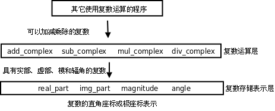
这里是一种抽象的思想。其实「抽象」这个概念并没有那么抽象，简单地说就是「提取公因式」： ab+ac=a(b+c)。如果 a 变了，ab 和 ac 这两项都需要改，但如果写成 a(b+c) 的形式就只需要改其中一个因子。
在我们的复数运算程序中，复数有可能用直角座标或极座标来表示，我们把这个有可能变动的因素提取出来组成复数存储表示层：real_part、img_part、magnitude、angle、make_from_real_img、make_from_mag_ang。这一层看到的数据是结构体的两个成员 x 和 y，或者 r 和 A，如果改变了结构体的实现就要改变这一层函数的实现，但函数接口不改变，因此调用这一层函数接口的复数运算层也不需要改变。复数运算层看到的数据只是一个抽象的「复数」的概念，知道它有直角座标和极座标，可以调用复数存储表示层的函数得到这些座标。再往上看，其它使用复数运算的程序看到的数据是一个更为抽象的「复数」的概念，只知道它是一个数，像整数、小数一样可以加减乘除，甚至连它有直角座标和极座标也不需要知道。
这里的复数存储表示层和复数运算层称为抽象层（Abstraction Layer），从底层往上层来看，复数越来越抽象了，把所有这些层组合在一起就是一个完整的系统。组合使得系统可以任意复杂，而抽象使得系统的复杂性是可以控制的，任何改动都只局限在某一层，而不会波及整个系统。著名的计算机科学家 Butler Lampson 说过：All problems in computer science can be solved by another level of indirection. 这里的 indirection 其实就是 abstraction 的意思。
习题
-
在本节的基础上实现一个打印复数的函数，打印的格式是 x+yi，如果实部或虚部为 0 则省略，例如：1.0、-2.0i、-1.0+2.0i、1.0-2.0i。最后编写一个
main函数测试本节的所有代码。想一想这个打印函数应该属于上图中的哪一层？ -
实现一个用分子分母的格式来表示有理数的结构体
rational以及相关的函数，rational结构体之间可以做加减乘除运算，运算的结果仍然是rational。测试代码如下：int main(void) { struct rational a = make_rational(1, 8); /* a=1/8 */ struct rational b = make_rational(-1, 8); /* b=-1/8 */ print_rational(add_rational(a, b)); print_rational(sub_rational(a, b)); print_rational(mul_rational(a, b)); print_rational(div_rational(a, b)); return 0; }注意要约分为最简分数，例如 1/8 和 -1/8 相减的打印结果应该是 1/4 而不是 2/8，可以利用第 5 章第 3 节「递归」练习题中的 Euclid 算法来约分。在动手编程之前先思考一下这个问题实现了什么样的数据抽象，抽象层应该由哪些函数组成。
3. 数据类型标志
在上一节中，我们通过一个复数存储表示抽象层把 complex_struct 结构体的存储格式和上层的复数运算函数隔开，complex_struct 结构体既可以采用直角座标也可以采用极座标存储。但有时候需要同时支持两种存储格式，比如先前已经采集了一些数据存在计算机中，有些数据是以极座标存储的，有些数据是以直角座标存储的，如果要把这些数据都存到 complex_struct 结构体中怎么办？一种办法是规定 complex_struct 结构体采用直角座标格式，直角座标的数据可以直接存入 complex_struct 结构体，而极座标的数据先转成直角座标再存，但由于浮点数的精度有限，转换总是会损失精度的。这里介绍另一种办法，complex_struct 结构体由一个数据类型标志和两个浮点数组成，如果数据类型标志为 0，那么两个浮点数就表示直角座标，如果数据类型标志为 1，那么两个浮点数就表示极座标。这样，直角座标和极座标的数据都可以适配（Adapt）到 complex_struct 结构体中，无需转换和损失精度：
enum coordinate_type { RECTANGULAR, POLAR };
struct complex_struct {
enum coordinate_type t;
double a, b;
};
enum 关键字的作用和 struct 关键字类似，把 coordinate_type 这个标识符定义为一个 Tag，struct complex_struct 表示一个结构体类型，而 enum coordinate_type 表示一个枚举（Enumeration）类型。枚举类型的成员是常量，它们的值由编译器自动分配，例如定义了上面的枚举类型之后，RECTANGULAR 就表示常量 0，POLAR 表示常量 1。如果不希望从 0 开始分配，可以这样定义：
enum coordinate_type { RECTANGULAR = 1, POLAR };
这样，RECTANGULAR 就表示常量 1，而 POLAR 表示常量 2。枚举常量也是一种整型，其值在编译时确定，因此也可以出现在常量表达式中，可以用于初始化全局变量或者作为 case 分支的判断条件。
有一点需要注意，虽然结构体的成员名和变量名不在同一命名空间中，但枚举的成员名却和变量名在同一命名空间中，所以会出现命名冲突。例如这样是不合法的：
int main(void)
{
enum coordinate_type { RECTANGULAR = 1, POLAR };
int RECTANGULAR;
printf("%d %d\n", RECTANGULAR, POLAR);
return 0;
}
complex_struct 结构体的格式变了，就需要修改复数存储表示层的函数，但只要保持函数接口不变就不会影响到上层函数。例如：
struct complex_struct make_from_real_img(double x, double y)
{
struct complex_struct z;
z.t = RECTANGULAR;
z.a = x;
z.b = y;
return z;
}
struct complex_struct make_from_mag_ang(double r, double A)
{
struct complex_struct z;
z.t = POLAR;
z.a = r;
z.b = A;
return z;
}
习题
-
本节只给出了
make_from_real_img和make_from_mag_ang函数的实现，请读者自己实现real_part、img_part、magnitude、angle这些函数。 -
编译运行下面这段程序：
#include <stdio.h> enum coordinate_type { RECTANGULAR = 1, POLAR }; int main(void) { int RECTANGULAR; printf("%d %d\n", RECTANGULAR, POLAR); return 0; }结果是什么？并解释一下为什么是这样的结果。
4. 嵌套结构体
结构体也是一种递归定义：结构体的成员具有某种数据类型，而结构体本身也是一种数据类型。换句话说，结构体的成员可以是另一个结构体，即结构体可以嵌套定义。例如我们在复数的基础上定义复平面上的线段：
struct segment {
struct complex_struct start;
struct complex_struct end;
};
从本章第 1 节「复合类型与结构体」讲的 Initializer 的语法可以看出，Initializer 也可以嵌套，因此嵌套结构体可以嵌套地初始化，例如：
struct segment s = {{ 1.0, 2.0 }, { 4.0, 6.0 }};
也可以平坦（Flat）地初始化。例如：
struct segment s = { 1.0, 2.0, 4.0, 6.0 };
甚至可以把两种方式混合使用（这样可读性很差，应该避免）：
struct segment s = {{ 1.0, 2.0 }, 4.0, 6.0 };
利用 C99 的新特性也可以做 Memberwise Initialization，例如[15]：
struct segment s = { .start.x = 1.0, .end.x = 2.0 };
[15] 为了便于理解，本章第 1 节「复合类型与结构体」讲的 Initializer 语法并没有描述这种复杂的用法。
访问嵌套结构体的成员要用到多个 . 运算符，例如：
s.start.t = RECTANGULAR;
s.start.a = 1.0;
s.start.b = 2.0;
第 8 章 数组
1. 数组的基本概念
数组（Array）也是一种复合数据类型，它由一系列相同类型的元素（Element）组成。例如定义一个由 4 个 int 型元素组成的数组 count：
int count[4];
和结构体成员类似，数组 count 的 4 个元素的存储空间也是相邻的。结构体成员可以是基本数据类型，也可以是复合数据类型，数组中的元素也是如此。根据组合规则，我们可以定义一个由 4 个结构体元素组成的数组：
struct complex_struct {
double x, y;
} a[4];
也可以定义一个包含数组成员的结构体：
struct {
double x, y;
int count[4];
} s;
数组类型的长度应该用一个整数常量表达式来指定[16]。数组中的元素通过下标（或者叫索引，Index）来访问。例如前面定义的由 4 个 int 型元素组成的数组 count 图示如下：
图 8.1. 数组 count

[16] C99 的新特性允许在数组长度表达式中使用变量，称为变长数组（VLA，Variable Length Array），VLA 只能定义为局部变量而不能是全局变量，与 VLA 有关的语法规则比较复杂，而且很多编译器不支持这种新特性，不建议使用。
整个数组占了 4 个 int 型的存储单元，存储单元用小方框表示，里面的数字是存储在这个单元中的数据（假设都是 0），而框外面的数字是下标，这四个单元分别用 count[0]、count[1]、count[2]、count[3] 来访问。注意，在定义数组 int count[4]; 时，方括号（Bracket）中的数字4表示数组的长度，而在访问数组时，方括号中的数字表示访问数组的第几个元素。和我们平常数数不同，数组元素是从「第 0 个」开始数的，大多数编程语言都是这么规定的，所以计算机术语中有 Zeroth 这个词。这样规定使得访问数组元素非常方便，比如 count 数组中的每个元素占 4 个字节，则 count[i] 表示从数组开头跳过 4 * i 个字节之后的那个存储单元。这种数组下标的表达式不仅可以表示存储单元中的值，也可以表示存储单元本身，也就是说可以做左值，因此以下语句都是正确的：
count[0] = 7;
count[1] = count[0] * 2;
++count[2];
到目前为止我们学习了五种后缀运算符：后缀 ++、后缀 --、结构体取成员 .、数组取下标 []、函数调用 ()。还学习了五种单目运算符（或者叫前缀运算符）：前缀 ++、前缀 --、正号 +、负号 -、逻辑非 !。在 C 语言中后缀运算符的优先级最高，单目运算符的优先级仅次于后缀运算符，比其它运算符的优先级都高，所以上面举例的 ++count[2] 应该看作对 count[2] 做前缀 ++ 运算。
数组下标也可以是表达式，但表达式的值必须是整型的。例如：
int i = 10;
count[i] = count[i+1];
使用数组下标不能超出数组的长度范围，这一点在使用变量做数组下标时尤其要注意。C 编译器并不检查 count[-1] 或是 count[100] 这样的访问越界错误，编译时能顺利通过，所以属于运行时错误[17]。但有时候这种错误很隐蔽，发生访问越界时程序可能并不会立即崩溃，而执行到后面某个正确的语句时却有可能突然崩溃（在第 10 章「gdb」第 4 节「段错误」我们会看到这样的例子）。所以从一开始写代码时就要小心避免出问题，事后依靠调试来解决问题的成本是很高的。
[17] 你可能会想为什么编译器对这么明显的错误都视而不见？理由一，这种错误并不总是显而易见的，在第 23 章「指针」第 1 节「指针的基本概念」会讲到通过指针而不是数组名来访问数组的情况，指针指向数组中的什么位置只有运行时才知道，编译时无法检查是否越界，而运行时每次访问数组元素都检查越界会严重影响性能，所以干脆不检查了；理由二，C99 Rationale 指出 C 语言的设计精神是：相信每个 C 程序员都是高手，不要阻止程序员去干他们需要干的事，高手们使用
count[-1]这种技巧其实并不少见，不应该当作错误。
数组也可以像结构体一样初始化，未赋初值的元素也是用 0 来初始化，例如：
int count[4] = { 3, 2, };
则 count[0] 等于 3， count[1] 等于 2，后面两个元素等于 0。如果定义数组的同时初始化它，也可以不指定数组的长度，例如：
int count[] = { 3, 2, 1, };
编译器会根据 Initializer 有三个元素确定数组的长度为 3。利用 C99 的新特性也可以做 Memberwise Initialization：
int count[4] = { [2] = 3 };
下面举一个完整的例子：
例 8.1. 定义和访问数组
#include <stdio.h>
int main(void)
{
int count[4] = { 3, 2, }, i;
for (i = 0; i < 4; i++)
printf("count[%d]=%d\n", i, count[i]);
return 0;
}
这个例子通过循环把数组中的每个元素依次访问一遍，在计算机术语中称为遍历（Traversal）。注意控制表达式 i < 4，如果写成 i <= 4 就错了，因为 count[4] 是访问越界。
数组和结构体虽然有很多相似之处，但也有一个显著的不同：数组不能相互赋值或初始化。例如这样是错的：
int a[5] = { 4, 3, 2, 1 };
int b[5] = a;
相互赋值也是错的：
a = b;
既然不能相互赋值，也就不能用数组类型作为函数的参数或返回值。如果写出这样的函数定义：
void foo(int a[5])
{
...
}
然后这样调用：
int array[5] = {0};
foo(array);
编译器也不会报错，但这样写并不是传一个数组类型参数的意思。对于数组类型有一条特殊规则：数组类型做右值使用时，自动转换成指向数组首元素的指针。所以上面的函数调用其实是传一个指针类型的参数，而不是数组类型的参数。接下来的几章里有的函数需要访问数组，我们就把数组定义为全局变量给函数访问，等以后讲了指针再使用传参的办法。这也解释了为什么数组类型不能相互赋值或初始化，例如上面提到的 a = b 这个表达式，a 和 b 都是数组类型的变量，但是 b 做右值使用，自动转换成指针类型，而左边仍然是数组类型，所以编译器报的错是 error: incompatible types in assignment。
习题
- 编写一个程序，定义两个类型和长度都相同的数组，将其中一个数组的所有元素拷贝给另一个。既然数组不能直接赋值，想想应该怎么实现。
2. 数组应用实例：统计随机数
本节通过一个实例介绍使用数组的一些基本模式。问题是这样的：首先生成一列 0 ~ 9 的随机数保存在数组中，然后统计其中每个数字出现的次数并打印，检查这些数字的随机性如何。随机数在某些场合（例如游戏程序）是非常有用的，但是用计算机生成完全随机的数却不是那么容易。计算机执行每一条指令的结果都是确定的，没有一条指令产生的是随机数，调用 C 标准库得到的随机数其实是伪随机（Pseudorandom）数，是用数学公式算出来的确定的数，只不过这些数看起来很随机，并且从统计意义上也很接近均匀分布（Uniform Distribution）的随机数。
C 标准库中生成伪随机数的是 rand 函数，使用这个函数需要包含头文件 stdlib.h，它没有参数，返回值是一个介于 0 和 RAND_MAX 之间的接近均匀分布的整数。RAND_MAX 是该头文件中定义的一个常量，在不同的平台上有不同的取值，但可以肯定它是一个非常大的整数。通常我们用到的随机数是限定在某个范围之中的，例如 0 ~ 9，而不是 0 ~ RAND_MAX，我们可以用 % 运算符将 rand 函数的返回值处理一下：
int x = rand() % 10;
完整的程序如下：
例 8.2. 生成并打印随机数
#include <stdio.h>
#include <stdlib.h>
#define N 20
int a[N];
void gen_random(int upper_bound)
{
int i;
for (i = 0; i < N; i++)
a[i] = rand() % upper_bound;
}
void print_random()
{
int i;
for (i = 0; i < N; i++)
printf("%d ", a[i]);
printf("\n");
}
int main(void)
{
gen_random(10);
print_random();
return 0;
}
这里介绍一种新的语法：用 #define 定义一个常量。实际上编译器的工作分为两个阶段，先是预处理（Preprocess）阶段，然后才是编译阶段，用 gcc 的 -E 选项可以看到预处理之后、编译之前的程序，例如：
$ gcc -E main.c
...（这里省略了很多行 stdio.h 和 stdlib.h 的代码）
int a[20];
void gen_random(int upper_bound)
{
int i;
for (i = 0; i < 20; i++)
a[i] = rand() % upper_bound;
}
void print_random()
{
int i;
for (i = 0; i < 20; i++)
printf("%d ", a[i]);
printf("\n");
}
int main(void)
{
gen_random(10);
print_random();
return 0;
}
可见在这里预处理器做了两件事情，一是把头文件 stdio.h 和 stdlib.h 在代码中展开，二是把 #define 定义的标识符 N 替换成它的定义 20（在代码中做了三处替换，分别位于数组的定义中和两个函数中）。像 #include 和 #define 这种以 # 号开头的行称为预处理指示（Preprocessing Directive），我们将在第 21 章「预处理」学习其它预处理指示。此外，用 cpp main.c 命令也可以达到同样的效果，只做预处理而不编译，cpp 表示 C preprocessor。
那么用 #define 定义的常量和上一章「结构体」第 3 节「数据类型标志」讲的枚举常量有什么区别呢？首先，define 不仅用于定义常量，也可以定义更复杂的语法结构，称为宏（Macro）定义。其次，define 定义是在预处理阶段处理的，而枚举是在编译阶段处理的。试试看把上一章「结构体」第 3 节「数据类型标志」习题 2 的程序改成下面这样是什么结果。
#include <stdio.h>
#define RECTANGULAR 1
#define POLAR 2
int main(void)
{
int RECTANGULAR;
printf("%d %d\n", RECTANGULAR, POLAR);
return 0;
}
注意，虽然 include 和 define 在预处理指示中有特殊含义，但它们并不是 C 语言的关键字，换句话说，它们也可以用作标识符，例如声明 int include; 或者 void define(int);。在预处理阶段，如果一行以 # 号开头，后面跟 include 或 define，预处理器就认为这是一条预处理指示，除此之外出现在其它地方的 include 或 define 预处理器并不关心，只是当成普通标识符交给编译阶段去处理。
回到随机数这个程序继续讨论，一开始为了便于分析和调试，我们取小一点的数组长度，只生成 20 个随机数，这个程序的运行结果为：
3 6 7 5 3 5 6 2 9 1 2 7 0 9 3 6 0 6 2 6
看起来很随机了。但随机性如何呢？分布得均匀吗？所谓均匀分布，应该每个数出现的概率是一样的。在上面的 20 个结果中，6 出现了 5 次，而 4 和 8 一次也没出现过。但这说明不了什么问题，毕竟我们的样本太少了，才 20 个数，如果样本足够多，比如说 100000 个数，统计一下其中每个数字出现的次数也许能说明问题。但总不能把 100000 个数都打印出来然后挨个去数吧？我们需要写一个函数统计每个数字出现的次数。完整的程序如下：
例 8.3. 统计随机数的分布
#include <stdio.h>
#include <stdlib.h>
#define N 100000
int a[N];
void gen_random(int upper_bound)
{
int i;
for (i = 0; i < N; i++)
a[i] = rand() % upper_bound;
}
int howmany(int value)
{
int count = 0, i;
for (i = 0; i < N; i++)
if (a[i] == value)
++count;
return count;
}
int main(void)
{
int i;
gen_random(10);
printf("value\thow many\n");
for (i = 0; i < 10; i++)
printf("%d\t%d\n", i, howmany(i));
return 0;
}
我们只要把 #define N 的值改为 100000，就相当于把整个程序中所有用到 N 的地方都改为 100000 了。如果我们不这么写，而是在定义数组时直接写成 int a[20];，在每个循环中也直接使用 20 这个值，这称为硬编码（Hard coding）。如果原来的代码是硬编码的，那么一旦需要把 20 改成 100000 就非常麻烦，你需要找遍整个代码，判断哪些 20 表示这个数组的长度就改为 100000，哪些 20 表示别的数量则不做改动，如果代码很长，这是很容易出错的。所以，写代码时应尽可能避免硬编码，这其实也是一个「提取公因式」的过程，和上一章「结构体」第 2 节「数据抽象」讲的抽象具有相同的作用，就是避免一个地方的改动波及到大的范围。这个程序的运行结果如下：
$ ./a.out
value how many
0 10130
1 10072
2 9990
3 9842
4 10174
5 9930
6 10059
7 9954
8 9891
9 9958
各数字出现的次数都在 10000 次左右，可见是比较均匀的。
习题
- 用
rand函数生成 [10, 20] 之间的随机整数，表达式应该怎么写？
3. 数组应用实例：直方图
继续上面的例子。我们统计一列 0 ~ 9 的随机数，打印每个数字出现的次数，像这样的统计结果称为直方图（Histogram）。有时候我们并不只是想打印，更想把统计结果保存下来以便做后续处理。我们可以把程序改成这样：
int main(void)
{
int howmanyones = howmany(1);
int howmanytwos = howmany(2);
...
}
这显然太繁琐了。要是这样的随机数有 100 个呢？显然这里用数组最合适不过了：
int main(void)
{
int i, histogram[10];
gen_random(10);
for (i = 0; i < 10; i++)
histogram[i] = howmany(i);
...
}
有意思的是，这里的循环变量 i 有两个作用，一是作为参数传给 howmany 函数，统计数字 i 出现的次数，二是做 histogram 的下标，也就是「把数字 i 出现的次数保存在数组 histogram 的第 i 个位置」。
尽管上面的方法可以准确地得到统计结果，但是效率很低，这 100000 个随机数需要从头到尾检查十遍，每一遍检查只统计一种数字的出现次数。其实可以把 histogram 中的元素当作累加器来用，这些随机数只需要从头到尾检查一遍（Single Pass）就可以得出结果：
int main(void)
{
int i, histogram[10] = {0};
gen_random(10);
for (i = 0; i < N; i++)
histogram[a[i]]++;
...
}
首先把 histogram 的所有元素初始化为 0，注意使用局部变量的值之前一定要初始化，否则值是不确定的。接下来的代码很有意思，在每次循环中，a[i] 就是出现的随机数，而这个随机数同时也是 histogram 的下标，这个随机数每出现一次就把 histogram 中相应的元素加 1。
把上面的程序运行几遍，你就会发现每次产生的随机数都是一样的，不仅如此，在别的计算机上运行该程序产生的随机数很可能也是这样的。这正说明了这些数是伪随机数，是用一套确定的公式基于某个初值算出来的，只要初值相同，随后的整个数列就都相同。实际应用中不可能使用每次都一样的随机数，例如开发一个麻将游戏，每次运行这个游戏摸到的牌不应该是一样的。因此，C 标准库允许我们自己指定一个初值，然后在此基础上生成伪随机数，这个初值称为 Seed，可以用 srand 函数指定 Seed。通常我们通过别的途径得到一个不确定的数作为 Seed，例如调用 time 函数得到当前系统时间距 1970 年 1 月 1 日 00:00:00 的秒数[18]，然后传给 srand：
srand(time(NULL));
然后再调用 rand，得到的随机数就和刚才完全不同了。调用 time 函数需要包含头文件 time.h，这里的 NULL 表示空指针，到第 23 章「指针」第 1 节「指针的基本概念」再详细解释。
[18] 各种派生自 UNIX 的系统都把这个时刻称为 Epoch，因为 UNIX 系统最早发明于 1969 年。
习题
-
补完本节直方图程序的
main函数，以可视化的形式打印直方图。例如上一节统计 20 个随机数的结果是：0 1 2 3 4 5 6 7 8 9 * * * * * * * * * * * * * * * * * * * * -
定义一个数组，编程打印它的全排列。比如定义：
#define N 3 int a[N] = { 1, 2, 3 };则运行结果是：
$ ./a.out 1 2 3 1 3 2 2 1 3 2 3 1 3 2 1 3 1 2 1 2 3程序的主要思路是：
- 把第 1 个数换到最前面来（本来就在最前面），准备打印 1xx，再对后两个数 2 和 3 做全排列。
- 把第 2 个数换到最前面来，准备打印 2xx，再对后两个数 1 和 3 做全排列。
- 把第 3 个数换到最前面来，准备打印 3xx，再对后两个数 1 和 2 做全排列。
可见这是一个递归的过程，把对整个序列做全排列的问题归结为对它的子序列做全排列的问题，注意我没有描述 Base Case 怎么处理，你需要自己想。你的程序要具有通用性，如果改变了
N和数组a的定义（比如改成 4 个数的数组），其它代码不需要修改就可以做 4 个数的全排列（共 24 种排列）。完成了上述要求之后再考虑第二个问题：如果再定义一个常量
M表示从N个数中取几个数做排列（N == M时表示全排列），原来的程序应该怎么改？最后再考虑第三个问题：如果要求从
N个数中取M个数做组合而不是做排列，就不能用原来的递归过程了，想想组合的递归过程应该怎么描述，编程实现它。
4. 字符串
之前我一直对字符串避而不谈，不做详细解释，现在已经具备了必要的基础知识，可以深入讨论一下字符串了。字符串可以看作一个数组，它的每个元素是字符型的，例如字符串 "Hello, world.\n" 图示如下：
图 8.2. 字符串

注意每个字符**串**末尾都有一个字符 '\0' 做结束符，这里的 \0 是 ASCII 码的八进制表示，也就是 ASCII 码为 0 的 Null 字符，在 C 语言中这种字符串也称为「以零结尾的字符串」（Null-terminated String）。数组元素可以通过数组名加下标的方式访问，而字符串字面值也可以像数组名一样使用，可以加下标访问其中的字符：
char c = "Hello, world.\n"[0];
但是通过下标修改其中的字符却是不允许的：
"Hello, world.\n"[0] = 'A';
这行代码会产生编译错误，说字符串字面值是只读的，不允许修改。字符串字面值还有一点和数组名类似，做右值使用时自动转换成指向首元素的指针，在第 3 章「简单函数」第 3 节「形参和实参」我们看到 printf 原型的第一个参数是指针类型，而 printf("hello world") 其实就是传一个指针参数给 printf。
前面讲过数组可以像结构体一样初始化，如果是字符数组，也可以用一个字符串字面值来初始化：
char str[10] = "Hello";
相当于：
char str[10] = { 'H', 'e', 'l', 'l', 'o', '\0' };
str 的后四个元素没有指定，自动初始化为 '\0'，即 Null 字符。注意，虽然字符串字面值 "Hello" 是只读的，但用它初始化的数组 str 却是可读可写的。数组 str 中保存了一串字符，以 '\0' 结尾，也可以叫字符串。在本书中只要是以 Null 字符结尾的一串字符都叫字符串，不管是像 str 这样的数组，还是像 "Hello" 这样的字符串字面值。
如果用于初始化的字符串字面值比数组还长，比如：
char str[10] = "Hello, world.\n";
则数组 str 只包含字符串的前 10 个字符，不包含 Null 字符，这种情况编译器会给出警告。如果要用一个字符串字面值准确地初始化一个字符数组，最好的办法是不指定数组的长度，让编译器自己计算：
char str[] = "Hello, world.\n";
字符串字面值的长度包括 Null 字符在内一共 15 个字符，编译器会确定数组 str 的长度为 15。
有一种情况需要特别注意，如果用于初始化的字符串字面值比数组刚好长出一个 Null 字符的长度，比如：
char str[14] = "Hello, world.\n";
则数组 str 不包含 Null 字符，并且编译器不会给出警告，C99 Rationale 说这样规定是为程序员方便，以前的很多编译器都是这样实现的，不管它有理没理，C 标准既然这么规定了我们也没办法，只能自己小心了。
补充一点，printf 函数的格式化字符串中可以用 %s 表示字符串的占位符。在学字符数组以前，我们用 %s 没什么意义，因为
printf("string: %s\n", "Hello");
还不如写成
printf("string: Hello\n");
但现在字符串可以保存在一个数组里面，用 %s 来打印就很有必要了：
printf("string: %s\n", str);
printf 会从数组 str 的开头一直打印到 Null 字符为止，Null 字符本身是 Non-printable 字符，不打印。这其实是一个危险的信号：如果数组 str 中没有 Null 字符，那么 printf 函数就会访问数组越界，后果可能会很诡异：有时候打印出乱码，有时候看起来没错误，有时候引起程序崩溃。
5. 多维数组
就像结构体可以嵌套一样，数组也可以嵌套，一个数组的元素可以是另外一个数组，这样就构成了多维数组（Multi-dimensional Array）。例如定义并初始化一个二维数组：
int a[3][2] = { 1, 2, 3, 4, 5 };
数组 a 有 3 个元素，a[0]、a[1]、a[2]。每个元素也是一个数组，例如 a[0] 是一个数组，它有两个元素 a[0][0]、a[0][1]，这两个元素的类型是 int，值分别是 1、2，同理，数组 a[1] 的两个元素是 3、4，数组 a[2]的两个元素是 5、0。如下图所示：
图 8.3. 多维数组

从概念模型上看，这个二维数组是三行两列的表格，元素的两个下标分别是行号和列号。从物理模型上看，这六个元素在存储器中仍然是连续存储的，就像一维数组一样，相当于把概念模型的表格一行一行接起来拼成一串，C 语言的这种存储方式称为 Row-major 方式，而有些编程语言（例如 FORTRAN）是把概念模型的表格一列一列接起来拼成一串存储的，称为 Column-major 方式。
多维数组也可以像嵌套结构体一样用嵌套 Initializer 初始化，例如上面的二维数组也可以这样初始化：
int a[][2] = { { 1, 2 },
{ 3, 4 },
{ 5, } };
注意，除了第一维的长度可以由编译器自动计算而不需要指定，其余各维都必须明确指定长度。利用 C99 的新特性也可以做 Memberwise Initialization，例如：
int a[3][2] = { [0][1] = 9, [2][1] = 8 };
结构体和数组嵌套的情况也可以做 Memberwise Initialization，例如：
struct complex_struct {
double x, y;
} a[4] = { [0].x = 8.0 };
struct {
double x, y;
int count[4];
} s = { .count[2] = 9 };
如果是多维字符数组，也可以嵌套使用字符串字面值做 Initializer，例如：
例 8.4. 多维字符数组
#include <stdio.h>
void print_day(int day)
{
char days[8][10] = { "", "Monday", "Tuesday",
"Wednesday", "Thursday", "Friday",
"Saturday", "Sunday" };
if (day < 1 || day > 7)
printf("Illegal day number!\n");
printf("%s\n", days[day]);
}
int main(void)
{
print_day(2);
return 0;
}
图 8.4. 多维字符数组

这个程序中定义了一个多维字符数组 char days[8][10];，为了使 1 ~ 7 刚好映射到 days[1]~days[7]，我们把 days[0] 空出来不用，所以第一维的长度是 8，为了使最长的字符串 "Wednesday" 能够保存到一行，末尾还能多出一个 Null 字符的位置，所以第二维的长度是 10。
这个程序和第 4 章「分支语句」例 4.1「switch 语句」的功能其实是一样的，但是代码简洁多了。简洁的代码不仅可读性强，而且维护成本也低，像第 4 章「分支语句」例 4.1「switch 语句」那样一堆 case、printf 和 break，如果漏写一个 break 就要出 Bug。这个程序之所以简洁，是因为用数据代替了代码。具体来说，通过下标访问字符串组成的数组可以代替一堆 case 分支判断，这样就可以把每个 case 里重复的代码（printf 调用）提取出来，从而又一次达到了「提取公因式」的效果。这种方法称为数据驱动的编程（Data-driven Programming），写代码最重要的是选择正确的数据结构来组织信息，设计控制流程和算法尚在其次，只要数据结构选择得正确，其它代码自然而然就变得容易理解和维护了，就像这里的 printf 自然而然就被提取出来了。人月神话中说过：Show me your flowcharts and conceal your tables, and I shall continue to be mystified. Show me your tables, and I won't usually need your flowcharts; they'll be obvious.
最后，综合本章的知识，我们来写一个最简单的小游戏——剪刀石头布：
例 8.5. 剪刀石头布
#include <stdio.h>
#include <stdlib.h>
#include <time.h>
int main(void)
{
char gesture[3][10] = { "scissor", "stone", "cloth" };
int man, computer, result, ret;
srand(time(NULL));
while (1) {
computer = rand() % 3;
printf("\nInput your gesture (0-scissor 1-stone 2-cloth):\n");
ret = scanf("%d", &man);
if (ret != 1 || man < 0 || man > 2) {
printf("Invalid input! Please input 0, 1 or 2.\n");
continue;
}
printf("Your gesture: %s\tComputer's gesture: %s\n",
gesture[man], gesture[computer]);
result = (man - computer + 4) % 3 - 1;
if (result > 0)
printf("You win!\n");
else if (result == 0)
printf("Draw!\n");
else
printf("You lose!\n");
}
return 0;
}
0、1、2 三个整数分别是「剪刀、石头、布」在程序中的内部表示，用户也要求输入 0、1 或 2，然后和计算机随机生成的 0、1 或 2 比胜负。这个程序的主体是一个死循环，需要按 Ctrl-C 退出程序。以往我们写的程序都只有打印输出，在这个程序中我们第一次碰到处理用户输入的情况。我们简单介绍一下 scanf 函数的用法，到第 25 章「C 标准库」第 2.9 节「格式化 I/O 函数」再详细解释。scanf("%d", &man) 这个调用的功能是等待用户输入一个整数并回车，这个整数会被 scanf 函数保存在 man 这个整型变量里。如果用户输入合法（输入的确实是数字而不是别的字符），则 scanf 函数返回 1，表示成功读入一个数据。但即使用户输入的是整数，我们还需要进一步检查是不是在 0 ~ 2 的范围内，写程序时对用户输入要格外小心，用户有可能输入任何数据，他才不管游戏规则是什么。
和 printf 类似，scanf 也可以用 %c、%f、%s 等转换说明。如果在传给 scanf 的第一个参数中用 %d、%f或 %c 表示读入一个整数、浮点数或字符，则第二个参数的形式应该是 & 运算符加相应类型的变量名，表示读进来的数保存到这个变量中，& 运算符的作用是得到一个指针类型，到第 23 章「指针」第 1 节「指针的基本概念」再详细解释；如果在第一个参数中用 %s 读入一个字符串，则第二个参数应该是数组名，数组名前面不加 &，因为数组类型做右值时自动转换成指针类型，在第 10 章「gdb」第 2 节「断点」有 scanf 读入字符串的例子。
留给读者思考的问题是：(man - computer + 4) % 3 - 1 这个神奇的表达式是如何比较出 0、1、2 这三个数字在「剪刀石头布」意义上的大小的？
第 9 章 编码风格
代码风格好不好就像字写得好不好看一样，如果一个公司招聘秘书，肯定不要字写得难看的，同理，代码风格糟糕的程序员肯定也是不称职的。虽然编译器不会挑剔难看的代码，照样能编译通过，但是和你一个 Team 的其他程序员肯定受不了，你自己也受不了，写完代码几天之后再来看，自己都不知道自己写的是什么。SICP 里有句话说得好：Thus, programs must be written for people to read, and only incidentally for machines to execute. 代码主要是为了写给人看的，而不是写给机器看的，只是顺便也能用机器执行而已，如果是为了写给机器看那直接写机器指令就好了，没必要用高级语言了。代码和语言文字一样是为了表达思想、记载信息，所以一定要写得清楚整洁才能有效地表达。正因为如此，在一个软件项目中，代码风格一般都用文档规定死了，所有参与项目的人不管他自己原来是什么风格，都要遵守统一的风格，例如 Linux 内核的 CodingStyle 就是这样一个文档。本章我们以内核的代码风格为基础来讲解好的编码风格都有哪些规定，这些规定的 Rationale 是什么。我只是以 Linux 内核为例来讲解编码风格的概念，并没有说内核编码风格就一定是最好的编码风格，但 Linux 内核项目如此成功，就足以说明它的编码风格是最好的 C 语言编码风格之一了。
1. 缩进和空白
我们知道 C 语言的语法对缩进和空白没有要求，空格、Tab、换行都可以随意写，实现同样功能的代码可以写得很好看，也可以写得很难看。例如上一章第 8 章「数组」第 5 节「多维数组」例 8.5「剪刀石头布」的代码如果写成这样就很难看了：
例 9.1. 缺少缩进和空白的代码
#include <stdio.h>
#include <stdlib.h>
#include <time.h>
int main(void)
{
char gesture[3][10]={"scissor","stone","cloth"};
int man,computer,result, ret;
srand(time(NULL));
while(1){
computer=rand()%3;
printf("\nInput your gesture (0-scissor 1-stone 2-cloth):\n");
ret=scanf("%d",&man);
if(ret!=1||man<0||man>2){
printf("Invalid input! Please input 0, 1 or 2.\n");
continue;
}
printf("Your gesture: %s\tComputer's gesture: %s\n",gesture[man],gesture[computer]);
result=(man-computer+4)%3-1;
if(result>0)printf("You win!\n");
else if(result==0)printf("Draw!\n");
else printf("You lose!\n");
}
return 0;
}
一是缺少空白字符，代码密度太大，看着很费劲。二是没有缩进，看不出来哪个 { 和哪个 } 配对，像这么短的代码还能凑合着看，如果代码超过一屏就完全没法看了。CodingStyle 中关于空白字符并没有特别规定，因为基本上所有的 C 代码风格对于空白字符的规定都差不多，主要有以下几条。
-
关键字
if、while、for与其后的控制表达式的(括号之间插入一个空格分隔，但括号内的表达式应紧贴括号。例如：while␣(1); -
双目运算符的两侧各插入一个空格分隔，单目运算符和操作数之间不加空格，例如
i␣=␣i␣+␣1、++i、!(i␣<␣1)、-x、&a[1]等。 -
后缀运算符和操作数之间也不加空格，例如取结构体成员
s.a、函数调用foo(arg1)、取数组成员a[i]。 -
,号和;号之后要加空格，这是英文的书写习惯，例如for␣(i␣=␣1;␣i␣<␣10;␣i++)、foo(arg1,␣arg2)。 -
以上关于双目运算符和后缀运算符的规则并没有严格要求，有时候为了突出优先级也可以写得更紧凑一些，例如
for␣(i=1;␣i<10;␣i++)、distance␣=␣sqrt(x*x␣+␣y*y)等。但是省略的空格一定不要误导了读代码的人，例如a||b␣&&␣c很容易让人理解成错误的优先级。 -
由于 UNIX 系统标准的字符终端是 24 行 80 列的，接近或大于 80 个字符的较长语句要折行写，折行后用空格和上面的表达式或参数对齐，例如：
if␣(sqrt(x*x␣+␣y*y)␣>␣5.0 &&␣x␣<␣0.0 &&␣y␣>␣0.0)再比如：
foo(sqrt(x*x␣+␣y*y), a[i-1]␣+␣b[i-1]␣+␣c[i-1]) -
较长的字符串可以断成多个字符串然后分行书写，例如：
printf("This is such a long sentence that " "it cannot be held within a line\n");C 编译器会自动把相邻的多个字符串接在一起，以上两个字符串相当于一个字符串
"This is such a long sentence that it cannot be held within a line\n"。 -
有的人喜欢在变量定义语句中用
Tab字符，使变量名对齐，这样看起来很美观。→int →a, b; →double →c;
内核代码风格关于缩进的规则有以下几条。
-
要用缩进体现出语句块的层次关系，使用
Tab字符缩进，不能用空格代替Tab。在标准的字符终端上一个Tab看起来是 8 个空格的宽度，如果你的文本编辑器可以设置Tab的显示宽度是几个空格，建议也设成 8，这样大的缩进使代码看起来非常清晰。如果有的行用空格做缩进，有的行用Tab做缩进，甚至空格和Tab混用，那么一旦改变了文本编辑器的Tab显示宽度就会看起来非常混乱，所以内核代码风格规定只能用Tab做缩进，不能用空格代替Tab。 -
if/else、while、do/while、for、switch这些可以带语句块的语句，语句块的{或}应该和关键字写在同一行，用空格隔开，而不是单独占一行。例如应该这样写：if␣(...)␣{ →语句列表 }␣else␣if␣(...)␣{ →语句列表 }但很多人习惯这样写：
if␣(...) { →语句列表 } else␣if␣(...) { →语句列表 }内核的写法和 K&R 一致，好处是不必占太多行，使得一屏能显示更多代码。这两种写法用得都很广泛，只要在同一个项目中能保持统一就可以了。
-
函数定义的
{和}单独占一行，这一点和语句块的规定不同，例如：int␣foo(int␣a,␣int␣b) { →语句列表 } -
switch和语句块里的case、default对齐写，也就是说语句块里的case、default标号相对于switch不往里缩进，但标号下的语句要往里缩进。例如：→switch␣(c)␣{ →case 'A': → →语句列表 →case 'B': → →语句列表 →default: → →语句列表 →}用于
goto语句的自定义标号应该顶头写不缩进，而不管标号下的语句缩进到第几层。 -
代码中每个逻辑段落之间应该用一个空行分隔开。例如每个函数定义之间应该插入一个空行，头文件、全局变量定义和函数定义之间也应该插入空行，例如：
#include <stdio.h> #include <stdlib.h> int g; double h; int foo(void) { →语句列表 } int bar(int a) { →语句列表 } int main(void) { →语句列表 } -
一个函数的语句列表如果很长，也可以根据相关性分成若干组，用空行分隔。这条规定不是严格要求，通常把变量定义组成一组，后面加空行，
return语句之前加空行，例如：int main(void) { →int →a, b; →double →c; →语句组1 →语句组2 →return 0; }
2. 注释
单行注释应采用 /*␣comment␣*/ 的形式，用空格把界定符和文字分开。多行注释最常见的是这种形式：
/*
␣*␣Multi-line
␣*␣comment
␣*/
也有更花哨的形式：
/*************\
* Multi-line *
* comment *
\*************/
使用注释的场合主要有以下几种。
-
整个源文件的顶部注释。说明此模块的相关信息，例如文件名、作者和版本历史等，顶头写不缩进。例如内核源代码目录下的
kernel/sched.c文件的开头：/* * kernel/sched.c * * Kernel scheduler and related syscalls * * Copyright (C) 1991-2002 Linus Torvalds * * 1996-12-23 Modified by Dave Grothe to fix bugs in semaphores and * make semaphores SMP safe * 1998-11-19 Implemented schedule_timeout() and related stuff * by Andrea Arcangeli * 2002-01-04 New ultra-scalable O(1) scheduler by Ingo Molnar: * hybrid priority-list and round-robin design with * an array-switch method of distributing timeslices * and per-CPU runqueues. Cleanups and useful suggestions * by Davide Libenzi, preemptible kernel bits by Robert Love. * 2003-09-03 Interactivity tuning by Con Kolivas. * 2004-04-02 Scheduler domains code by Nick Piggin */ -
函数注释。说明此函数的功能、参数、返回值、错误码等，写在函数定义上侧，和此函数定义之间不留空行，顶头写不缩进。
-
相对独立的语句组注释。对这一组语句做特别说明，写在语句组上侧，和此语句组之间不留空行，与当前语句组的缩进一致。
-
代码行右侧的简短注释。对当前代码行做特别说明，一般为单行注释，和代码之间至少用一个空格隔开，一个源文件中所有的右侧注释最好能上下对齐。尽管第 2 章「常量、变量和表达式」第 1 节「继续 Hello World」例 2.1「带更多注释的Hello World」讲过注释可以穿插在一行代码中间，但不建议这么写。内核源代码目录下的
lib/radix-tree.c文件中的一个函数包含了上述三种注释：/** * radix_tree_insert - insert into a radix tree * @root: radix tree root * @index: index key * @item: item to insert * * Insert an item into the radix tree at position @index. */ int radix_tree_insert(struct radix_tree_root *root, unsigned long index, void *item) { struct radix_tree_node *node = NULL, *slot; unsigned int height, shift; int offset; int error; /* Make sure the tree is high enough. */ if ((!index && !root->rnode) || index > radix_tree_maxindex(root->height)) { error = radix_tree_extend(root, index); if (error) return error; } slot = root->rnode; height = root->height; shift = (height-1) * RADIX_TREE_MAP_SHIFT; offset = 0; /* uninitialised var warning */ do { if (slot == NULL) { /* Have to add a child node. */ if (!(slot = radix_tree_node_alloc(root))) return -ENOMEM; if (node) { node->slots[offset] = slot; node->count++; } else root->rnode = slot; } /* Go a level down */ offset = (index >> shift) & RADIX_TREE_MAP_MASK; node = slot; slot = node->slots[offset]; shift -= RADIX_TREE_MAP_SHIFT; height--; } while (height > 0); if (slot != NULL) return -EEXIST; BUG_ON(!node); node->count++; node->slots[offset] = item; BUG_ON(tag_get(node, 0, offset)); BUG_ON(tag_get(node, 1, offset)); return 0; }CodingStyle 中特别指出，函数内的注释要尽可能少用。写注释主要是为了说明你的代码「能做什么」（比如函数接口定义），而不是为了说明「怎样做」，只要代码写得足够清晰，「怎样做」是一目了然的，如果你需要用注释才能解释清楚，那就表示你的代码可读性很差，除非是特别需要提醒注意的地方才使用函数内注释。
-
复杂的结构体定义比函数更需要注释。例如内核源代码目录下的
kernel/sched.c文件中定义了这样一个结构体：/* * This is the main, per-CPU runqueue data structure. * * Locking rule: those places that want to lock multiple runqueues * (such as the load balancing or the thread migration code), lock * acquire operations must be ordered by ascending &runqueue. */ struct runqueue { spinlock_t lock; /* * nr_running and cpu_load should be in the same cacheline because * remote CPUs use both these fields when doing load calculation. */ unsigned long nr_running; #ifdef CONFIG_SMP unsigned long cpu_load[3]; #endif unsigned long long nr_switches; /* * This is part of a global counter where only the total sum * over all CPUs matters. A task can increase this counter on * one CPU and if it got migrated afterwards it may decrease * it on another CPU. Always updated under the runqueue lock: */ unsigned long nr_uninterruptible; unsigned long expired_timestamp; unsigned long long timestamp_last_tick; task_t *curr, *idle; struct mm_struct *prev_mm; prio_array_t *active, *expired, arrays[2]; int best_expired_prio; atomic_t nr_iowait; #ifdef CONFIG_SMP struct sched_domain *sd; /* For active balancing */ int active_balance; int push_cpu; task_t *migration_thread; struct list_head migration_queue; int cpu; #endif #ifdef CONFIG_SCHEDSTATS /* latency stats */ struct sched_info rq_sched_info; /* sys_sched_yield() stats */ unsigned long yld_exp_empty; unsigned long yld_act_empty; unsigned long yld_both_empty; unsigned long yld_cnt; /* schedule() stats */ unsigned long sched_switch; unsigned long sched_cnt; unsigned long sched_goidle; /* try_to_wake_up() stats */ unsigned long ttwu_cnt; unsigned long ttwu_local; #endif }; -
复杂的宏定义和变量声明也需要注释。例如内核源代码目录下的
include/linux/jiffies.h文件中的定义：/* TICK_USEC_TO_NSEC is the time between ticks in nsec assuming real ACTHZ and */ /* a value TUSEC for TICK_USEC (can be set bij adjtimex) */ #define TICK_USEC_TO_NSEC(TUSEC) (SH_DIV (TUSEC * USER_HZ * 1000, ACTHZ, 8)) /* some arch's have a small-data section that can be accessed register-relative * but that can only take up to, say, 4-byte variables. jiffies being part of * an 8-byte variable may not be correctly accessed unless we force the issue */ #define __jiffy_data __attribute__((section(".data"))) /* * The 64-bit value is not volatile - you MUST NOT read it * without sampling the sequence number in xtime_lock. * get_jiffies_64() will do this for you as appropriate. */ extern u64 __jiffy_data jiffies_64; extern unsigned long volatile __jiffy_data jiffies;
3. 标识符命名
标识符命名应遵循以下原则：
-
标识符命名要清晰明了，可以使用完整的单词和易于理解的缩写。短的单词可以通过去元音形成缩写，较长的单词可以取单词的头几个字母形成缩写。看别人的代码看多了就可以总结出一些缩写惯例，例如
count写成cnt，block写成blk，length写成len，window写成win，message写成msg，number写成nr，temporary可以写成temp，也可以进一步写成tmp，最有意思的是internationalization写成i18n，词根trans经常缩写成x，例如transmit写成xmt。我就不多举例了，请读者在看代码时自己注意总结和积累。 -
内核编码风格规定变量、函数和类型采用全小写加下划线的方式命名，常量（比如宏定义和枚举常量）采用全大写加下划线的方式命名，比如上一节举例的函数名
radix_tree_insert、类型名struct radix_tree_root、常量名RADIX_TREE_MAP_SHIFT等。微软发明了一种变量命名法叫匈牙利命名法（Hungarian notation），在变量名中用前缀表示类型，例如
iCnt（i 表示 int）、pMsg（p 表示 pointer）、lpszText（lpsz 表示 long pointer to a zero-ended string）等。Linus 在 CodingStyle 中毫不客气地讽刺了这种写法：Encoding the type of a function into the name (so-called Hungarian notation) is brain damaged - the compiler knows the types anyway and can check those, and it only confuses the programmer. No wonder MicroSoft makes buggy programs. 代码风格本来就是一个很有争议的问题，如果你接受本章介绍的内核编码风格（也是本书所有范例代码的风格），就不要使用大小写混合的变量命名方式[19]，更不要使用匈牙利命名法。[19] 大小写混合的命名方式是 Modern C++ 风格所提倡的，在 C++ 代码中很普遍，称为 CamelCase，大概是因为有高有低像驼峰一样。
-
全局变量和全局函数的命名一定要详细，不惜多用几个单词多写几个下划线，例如函数名
radix_tree_insert，因为它们在整个项目的许多源文件中都会用到，必须让使用者明确这个变量或函数是干什么用的。局部变量和只在一个源文件中调用的内部函数的命名可以简略一些，但不能太短。尽量不要使用单个字母做变量名，只有一个例外：用i、j、k做循环变量是可以的。 -
针对中国程序员的一条特别规定：禁止用汉语拼音做标识符，可读性极差。
4. 函数
每个函数都应该设计得尽可能简单，简单的函数才容易维护。应遵循以下原则：
- 实现一个函数只是为了做好一件事情，不要把函数设计成用途广泛、面面俱到的，这样的函数肯定会超长，而且往往不可重用，维护困难。
- 函数内部的缩进层次不宜过多，一般以少于 4 层为宜。如果缩进层次太多就说明设计得太复杂了，应考虑分割成更小的函数（Helper Function）来调用。
- 函数不要写得太长，建议在 24 行的标准终端上不超过两屏，太长会造成阅读困难，如果一个函数超过两屏就应该考虑分割函数了。CodingStyle 中特别说明，如果一个函数在概念上是简单的，只是长度很长，这倒没关系。例如函数由一个大的
switch组成，其中有非常多的case，这是可以的，因为各case分支互不影响，整个函数的复杂度只等于其中一个case的复杂度，这种情况很常见，例如 TCP 协议的状态机实现。 - 执行函数就是执行一个动作，函数名通常应包含动词，例如
get_current、radix_tree_insert。 - 比较重要的函数定义上侧必须加注释，说明此函数的功能、参数、返回值、错误码等。
- 另一种度量函数复杂度的办法是看有多少个局部变量，5 到 10 个局部变量已经很多了，再多就很难维护了，应该考虑分割成多个函数。
5. indent 工具
indent 工具可以把代码格式化成某种风格，例如把本章第 1 节例 9.1「缺少缩进和空白的代码」格式化成内核编码风格：
$ indent -kr -i8 main.c
$ cat main.c
#include <stdio.h>
#include <stdlib.h>
#include <time.h>
int main(void)
{
char gesture[3][10] = { "scissor", "stone", "cloth" };
int man, computer, result, ret;
srand(time(NULL));
while (1) {
computer = rand() % 3;
printf
("\nInput your gesture (0-scissor 1-stone 2-cloth):\n");
ret = scanf("%d", &man);
if (ret != 1 || man < 0 || man > 2) {
printf("Invalid input! Please input 0, 1 or 2.\n");
continue;
}
printf("Your gesture: %s\tComputer's gesture: %s\n",
gesture[man], gesture[computer]);
result = (man - computer + 4) % 3 - 1;
if (result > 0)
printf("You win!\n");
else if (result == 0)
printf("Draw!\n");
else
printf("You lose!\n");
}
return 0;
}
-kr 选项表示 K&R 风格，-i8 表示缩进 8 个空格的长度。如果没有指定 -nut 选项，则每 8 个缩进空格会自动用一个 Tab 代替。注意 indent 命令会直接修改原文件，而不是打印到屏幕上或者输出到另一个文件，这一点和很多 UNIX 命令不同。可以看出，-kr -i8 两个选项格式化出来的代码已经很符合本章介绍的代码风格了，添加了必要的缩进和空白，较长的代码行也会自动折行。美中不足的是没有添加适当的空行，因为 indent 工具也不知道哪几行代码在逻辑上是一组的，空行还是要自己动手添，当然原有的空行肯定不会被 indent 删去的。
如果你采纳本章介绍的内核编码风格，基本上 -kr -i8 这两个参数就够用了。indent 工具也有支持其它编码风格的选项，具体请参考 Man Page。有时候 indent 工具的确非常有用，比如某个项目中途决定改变编码风格（这很少见），或者往某个项目中添加的几个代码文件来自另一个编码风格不同的项目，但绝不能因为有了 indent 工具就肆无忌惮，一开始把代码写得乱七八糟，最后再依靠 indent 去清理。
第 10 章 gdb
程序中除了一目了然的 Bug 之外都需要一定的调试手段来分析到底错在哪。到目前为止我们的调试手段只有一种：根据程序执行时的出错现象假设错误原因，然后在代码中适当的位置插入 printf，执行程序并分析打印结果，如果结果和预期的一样，就基本上证明了自己假设的错误原因，就可以动手修正 Bug 了，如果结果和预期的不一样，就根据结果做进一步的假设和分析。本章我们介绍一种很强大的调试工具 gdb，可以完全操控程序的运行，使得程序就像你手里的玩具一样，叫它走就走，叫它停就停，并且随时可以查看程序中所有的内部状态，比如各变量的值、传给函数的参数、当前执行的代码行等。掌握了 gdb 的用法之后，调试手段就更加丰富了。但要注意，即使调试手段丰富了，调试的基本思想仍然是「分析现象 -> 假设错误原因 -> 产生新的现象去验证假设」这样一个循环，根据现象如何假设错误原因，以及如何设计新的现象去验证假设，这都需要非常严密的分析和思考，如果因为手里有了强大的工具就滥用而忽略了分析过程，往往会治标不治本地修正 Bug，导致一个错误现象消失了但 Bug 仍然存在，甚至是把程序越改越错。本章通过初学者易犯的几个错误实例来讲解如何使用 gdb 调试程序，在每个实例后面总结一部分常用的 gdb 命令。
1. 单步执行和跟踪函数调用
看下面的程序：
例 10.1. 函数调试实例
#include <stdio.h>
int add_range(int low, int high)
{
int i, sum;
for (i = low; i <= high; i++)
sum = sum + i;
return sum;
}
int main(void)
{
int result[100];
result[0] = add_range(1, 10);
result[1] = add_range(1, 100);
printf("result[0]=%d\nresult[1]=%d\n", result[0], result[1]);
return 0;
}
add_range 函数从 low 加到 high，在 main 函数中首先从 1 加到 10，把结果保存下来，然后从 1 加到 100，再把结果保存下来，最后打印的两个结果是：
result[0]=55
result[1]=5105
第一个结果正确[20]，第二个结果显然不正确，在小学我们就听说过高斯小时候的故事，从 1 加到 100 应该是 5050。一段代码，第一次运行结果是对的，第二次运行却不对，这是很常见的一类错误现象，这种情况不应该怀疑代码而应该怀疑数据，因为第一次和第二次运行的都是同一段代码，如果代码是错的，那为什么第一次的结果能对呢？然而第一次和第二次运行时相关的数据却有可能不同，错误的数据会导致错误的结果。在动手调试之前，读者先试试只看代码能不能看出错误原因，只要前面几章学得扎实就应该能看出来。
[20] 这么说不够准确，在有些平台和操作系统上第一个结果也未必正确，如果在你机器上运行第一个结果也不正确，首先检查一下程序有没有抄错，如果没抄错那就没关系了，顺着我的讲解往下看就好了，结果是多少都无关紧要。
在编译时要加上 -g 选项，生成的可执行文件才能用 gdb 进行源码级调试：
$ gcc -g main.c -o main
$ gdb main
GNU gdb 6.8-debian
Copyright (C) 2008 Free Software Foundation, Inc.
License GPLv3+: GNU GPL version 3 or later <http://gnu.org/licenses/gpl.html>
This is free software: you are free to change and redistribute it.
There is NO WARRANTY, to the extent permitted by law. Type "show copying"
and "show warranty" for details.
This GDB was configured as "i486-linux-gnu"...
(gdb)
-g 选项的作用是在可执行文件中加入源代码的信息，比如可执行文件中第几条机器指令对应源代码的第几行，但并不是把整个源文件嵌入到可执行文件中，所以在调试时必须保证 gdb 能找到源文件。gdb 提供一个类似 Shell 的命令行环境，上面的 (gdb) 就是提示符，在这个提示符下输入 help 可以查看命令的类别：
(gdb) help
List of classes of commands:
aliases -- Aliases of other commands
breakpoints -- Making program stop at certain points
data -- Examining data
files -- Specifying and examining files
internals -- Maintenance commands
obscure -- Obscure features
running -- Running the program
stack -- Examining the stack
status -- Status inquiries
support -- Support facilities
tracepoints -- Tracing of program execution without stopping the program
user-defined -- User-defined commands
Type "help" followed by a class name for a list of commands in that class.
Type "help all" for the list of all commands.
Type "help" followed by command name for full documentation.
Type "apropos word" to search for commands related to "word".
Command name abbreviations are allowed if unambiguous.
也可以进一步查看某一类别中有哪些命令，例如查看 files 类别下有哪些命令可用：
(gdb) help files
Specifying and examining files.
List of commands:
add-shared-symbol-files -- Load the symbols from shared objects in the dynamic linker's link map
add-symbol-file -- Load symbols from FILE
add-symbol-file-from-memory -- Load the symbols out of memory from a dynamically loaded object file
cd -- Set working directory to DIR for debugger and program being debugged
core-file -- Use FILE as core dump for examining memory and registers
directory -- Add directory DIR to beginning of search path for source files
edit -- Edit specified file or function
exec-file -- Use FILE as program for getting contents of pure memory
file -- Use FILE as program to be debugged
forward-search -- Search for regular expression (see regex(3)) from last line listed
generate-core-file -- Save a core file with the current state of the debugged process
list -- List specified function or line
...
现在试试用 list 命令从第一行开始列出源代码：
(gdb) list 1
1 #include <stdio.h>
2
3 int add_range(int low, int high)
4 {
5 int i, sum;
6 for (i = low; i <= high; i++)
7 sum = sum + i;
8 return sum;
9 }
10
一次只列 10 行，如果要从第 11 行开始继续列源代码可以输入
(gdb) list
也可以什么都不输直接敲回车，gdb 提供了一个很方便的功能，在提示符下直接敲回车表示重复上一条命令。
(gdb) （直接回车）
11 int main(void)
12 {
13 int result[100];
14 result[0] = add_range(1, 10);
15 result[1] = add_range(1, 100);
16 printf("result[0]=%d\nresult[1]=%d\n", result[0], result[1]);
17 return 0;
18
gdb 的很多常用命令有简写形式，例如 list 命令可以写成 l，要列一个函数的源代码也可以用函数名做参数：
(gdb) l add_range
1 #include <stdio.h>
2
3 int add_range(int low, int high)
4 {
5 int i, sum;
6 for (i = low; i <= high; i++)
7 sum = sum + i;
8 return sum;
9 }
10
现在退出 gdb 的环境：
(gdb) quit
我们做一个实验，把源代码改名或移到别处再用 gdb 调试，这样就列不出源代码了：
$ mv main.c mian.c
$ gdb main
...
(gdb) l
5 main.c: No such file or directory.
in main.c
可见 gcc 的 -g 选项并不是把源代码嵌入到可执行文件中的，在调试时也需要源文件。现在把源代码恢复原样，我们继续调试。首先用 start 命令开始执行程序：
$ gdb main
...
(gdb) start
Breakpoint 1 at 0x80483ad: file main.c, line 14.
Starting program: /home/akaedu/main
main () at main.c:14
14 result[0] = add_range(1, 10);
(gdb)
gdb 停在 main 函数中变量定义之后的第一条语句处等待我们发命令，gdb 列出的这条语句是即将执行的下一条语句。我们可以用 next 命令（简写为 n）控制这些语句一条一条地执行：
(gdb) n
15 result[1] = add_range(1, 100);
(gdb) （直接回车）
16 printf("result[0]=%d\nresult[1]=%d\n", result[0], result[1]);
(gdb) （直接回车）
result[0]=55
result[1]=5105
17 return 0;
用 n 命令依次执行两行赋值语句和一行打印语句，在执行打印语句时结果立刻打出来了，然后停在 return 语句之前等待我们发命令。虽然我们完全控制了程序的执行，但仍然看不出哪里错了，因为错误不在 main 函数中而在 add_range 函数中，现在用 start 命令重新来过，这次用 step 命令（简写为 s）钻进 add_range 函数中去跟踪执行：
(gdb) start
The program being debugged has been started already.
Start it from the beginning? (y or n) y
Breakpoint 2 at 0x80483ad: file main.c, line 14.
Starting program: /home/akaedu/main
main () at main.c:14
14 result[0] = add_range(1, 10);
(gdb) s
add_range (low=1, high=10) at main.c:6
6 for (i = low; i <= high; i++)
这次停在了 add_range 函数中变量定义之后的第一条语句处。在函数中有几种查看状态的办法，backtrace 命令（简写为 bt）可以查看函数调用的栈帧：
(gdb) bt
#0 add_range (low=1, high=10) at main.c:6
#1 0x080483c1 in main () at main.c:14
可见当前的 add_range 函数是被 main 函数调用的，main 传进来的参数是 low=1, high=10。main 函数的栈帧编号为 1，add_range 的栈帧编号为 0。现在可以用 info 命令（简写为 i）查看 add_range 函数局部变量的值：
(gdb) i locals
i = 0
sum = 0
如果想查看 main 函数当前局部变量的值也可以做到，先用 frame 命令（简写为 f）选择 1 号栈帧然后再查看局部变量：
(gdb) f 1
#1 0x080483c1 in main () at main.c:14
14 result[0] = add_range(1, 10);
(gdb) i locals
result = {0, 0, 0, 0, 0, 0, 134513196, 225011984, -1208685768, -1081160480,
...
-1208623680}
注意到 result 数组中有很多元素具有杂乱无章的值，我们知道未经初始化的局部变量具有不确定的值。到目前为止一切正常。用 s 或 n 往下走几步，然后用 print 命令（简写为 p）打印出变量 sum 的值：
(gdb) s
7 sum = sum + i;
(gdb) （直接回车）
6 for (i = low; i <= high; i++)
(gdb) （直接回车）
7 sum = sum + i;
(gdb) （直接回车）
6 for (i = low; i <= high; i++)
(gdb) p sum
$1 = 3
第一次循环 i 是 1，第二次循环 i 是 2，加起来是 3，没错。这里的 $1 表示 gdb 保存着这些中间结果，$ 后面的编号会自动增长，在命令中可以用 $1、$2、$3 等编号代替相应的值。由于我们本来就知道第一次调用的结果是正确的，再往下跟也没意义了，可以用 finish 命令让程序一直运行到从当前函数返回为止：
(gdb) finish
Run till exit from #0 add_range (low=1, high=10) at main.c:6
0x080483c1 in main () at main.c:14
14 result[0] = add_range(1, 10);
Value returned is $2 = 55
返回值是 55，当前正准备执行赋值操作，用 s 命令赋值，然后查看 result 数组：
(gdb) s
15 result[1] = add_range(1, 100);
(gdb) p result
$3 = {55, 0, 0, 0, 0, 0, 134513196, 225011984, -1208685768, -1081160480,
...
-1208623680}
第一个值 55 确实赋给了 result 数组的第 0 个元素。下面用 s 命令进入第二次 add_range 调用，进入之后首先查看参数和局部变量：
(gdb) s
add_range (low=1, high=100) at main.c:6
6 for (i = low; i <= high; i++)
(gdb) bt
#0 add_range (low=1, high=100) at main.c:6
#1 0x080483db in main () at main.c:15
(gdb) i locals
i = 11
sum = 55
由于局部变量 i 和 sum 没初始化，所以具有不确定的值，又由于两次调用是挨着的，i 和 sum 正好取了上次调用时的值，原来这跟第 3 章「简单函数」第 4 节「全局变量、局部变量和作用域」例 3.7「验证局部变量存储空间的分配和释放」是一样的道理，只不过我这次举的例子设法让局部变量 sum 在第一次调用时初值为 0 了。i 的初值不是 0 倒没关系，在 for 循环中会赋值为 0 的，但 sum 如果初值不是 0，累加得到的结果就错了。好了，我们已经找到错误原因，可以退出 gdb 修改源代码了。如果我们不想浪费这次调试机会，可以在 gdb 中马上把 sum 的初值改为 0 继续运行，看看这一处改了之后还有没有别的 Bug：
(gdb) set var sum=0
(gdb) finish
Run till exit from #0 add_range (low=1, high=100) at main.c:6
0x080483db in main () at main.c:15
15 result[1] = add_range(1, 100);
Value returned is $4 = 5050
(gdb) n
16 printf("result[0]=%d\nresult[1]=%d\n", result[0], result[1]);
(gdb) （直接回车）
result[0]=55
result[1]=5050
17 return 0;
这样结果就对了。修改变量的值除了用 set 命令之外也可以用 print 命令，因为 print 命令后面跟的是表达式，而我们知道赋值和函数调用也都是表达式，所以也可以用 print 命令修改变量的值或者调用函数：
(gdb) p result[2]=33
$5 = 33
(gdb) p printf("result[2]=%d\n", result[2])
result[2]=33
$6 = 13
我们讲过，printf 的返回值表示实际打印的字符数，所以 $6 的结果是 13。总结一下本节用到的 gdb 命令：
表 10.1. gdb 基本命令 1
| 命令 | 描述 |
|---|---|
| backtrace（或 bt） | 查看各级函数调用及参数 |
| finish | 连续运行到当前函数返回为止，然后停下来等待命令 |
| frame（或 f） 帧编号 | 选择栈帧 |
| info（或 i） locals | 查看当前栈帧局部变量的值 |
| list（或 l） | 列出源代码，接着上次的位置往下列，每次列 10 行 |
| list 行号 | 列出从第几行开始的源代码 |
| list 函数名 | 列出某个函数的源代码 |
| next（或 n） | 执行下一行语句 |
| print（或 p） | 打印表达式的值，通过表达式可以修改变量的值或者调用函数 |
| quit（或 q） | 退出 gdb 调试环境 |
| set var | 修改变量的值 |
| start | 开始执行程序，停在 main 函数第一行语句前面等待命令 |
| step（或 s） | 执行下一行语句，如果有函数调用则进入到函数中 |
习题
- 用
gdb一步一步跟踪第 5 章「深入理解函数」第 3 节「递归」讲的factorial函数，对照着第 5 章「深入理解函数」第 3 节「递归」图 5.2 「factorial (3) 的调用过程」查看各层栈帧的变化情况，练习本节所学的各种gdb命令。
2. 断点
看以下程序：
例 10.2. 断点调试实例
#include <stdio.h>
int main(void)
{
int sum = 0, i = 0;
char input[5];
while (1) {
scanf("%s", input);
for (i = 0; input[i] != '\0'; i++)
sum = sum*10 + input[i] - '0';
printf("input=%d\n", sum);
}
return 0;
}
这个程序的作用是：首先从键盘读入一串数字存到字符数组 input 中，然后转换成整型存到 sum 中，然后打印出来，一直这样循环下去。scanf("%s", input); 这个调用的功能是等待用户输入一个字符串并回车，scanf 把其中第一段非空白（非空格、Tab、换行）的字符串保存到 input 数组中，并自动在末尾添加 '\0'。接下来的循环从左到右扫描字符串并把每个数字累加到结果中，例如输入是 "2345"，则循环累加的过程是 (((0*10+2)*10+3)*10+4)*10+5=2345。注意字符型的 '2' 要减去 '0' 的 ASCII 码才能转换成整数值 2。下面编译运行程序看看有什么问题：
$ gcc main.c -g -o main
$ ./main
123
input=123
234
input=123234
（Ctrl-C 退出程序）
$
又是这种现象，第一次是对的，第二次就不对。可是这个程序我们并没有忘了赋初值，不仅 sum 赋了初值，连不必赋初值的 i 都赋了初值。读者先试试只看代码能不能看出错误原因。下面来调试：
$ gdb main
...
(gdb) start
Breakpoint 1 at 0x80483b5: file main.c, line 5.
Starting program: /home/akaedu/main
main () at main.c:5
5 int sum = 0, i = 0;
有了上一次的经验，sum 被列为重点怀疑对象，我们可以用 display 命令使得每次停下来的时候都显示当前 sum 的值，然后继续往下走：
(gdb) display sum
1: sum = -1208103488
(gdb) n
9 scanf("%s", input);
1: sum = 0
(gdb)
123
10 for (i = 0; input[i] != '\0'; i++)
1: sum = 0
undisplay 命令可以取消跟踪显示，变量 sum 的编号是 1，可以用 undisplay 1 命令取消它的跟踪显示。这个循环应该没有问题，因为上面第一次输入时打印的结果是正确的。如果不想一步一步走这个循环，可以用 break 命令（简写为 b）在第 9 行设一个断点（Breakpoint）：
(gdb) l
5 int sum = 0, i;
6 char input[5];
7
8 while (1) {
9 scanf("%s", input);
10 for (i = 0; input[i] != '\0'; i++)
11 sum = sum*10 + input[i] - '0';
12 printf("input=%d\n", sum);
13 }
14 return 0;
(gdb) b 9
Breakpoint 2 at 0x80483bc: file main.c, line 9.
break 命令的参数也可以是函数名，表示在某个函数开头设断点。现在用 continue 命令（简写为 c）连续运行而非单步运行，程序到达断点会自动停下来，这样就可以停在下一次循环的开头：
(gdb) c
Continuing.
input=123
Breakpoint 2, main () at main.c:9
9 scanf("%s", input);
1: sum = 123
然后输入新的字符串准备转换：
(gdb) n
234
10 for (i = 0; input[i] != '\0'; i++)
1: sum = 123
问题暴露出来了，新的转换应该再次从 0 开始累加，而 sum 现在已经是 123 了，原因在于新的循环没有把 sum 归零。可见断点有助于快速跳过没有问题的代码，然后在有问题的代码上慢慢走慢慢分析，「断点加单步」是使用调试器的基本方法。至于应该在哪里设置断点，怎么知道哪些代码可以跳过而哪些代码要慢慢走，也要通过对错误现象的分析和假设来确定，以前我们用 printf 打印中间结果时也要分析应该在哪里插入 printf，打印哪些中间结果，调试的基本思路是一样的。一次调试可以设置多个断点，用 info 命令可以查看已经设置的断点：
(gdb) b 12
Breakpoint 3 at 0x8048411: file main.c, line 12.
(gdb) i breakpoints
Num Type Disp Enb Address What
2 breakpoint keep y 0x080483c3 in main at main.c:9
breakpoint already hit 1 time
3 breakpoint keep y 0x08048411 in main at main.c:12
每个断点都有一个编号，可以用编号指定删除某个断点：
(gdb) delete breakpoints 2
(gdb) i breakpoints
Num Type Disp Enb Address What
3 breakpoint keep y 0x08048411 in main at main.c:12
有时候一个断点暂时不用可以禁用掉而不必删除，这样以后想用的时候可以直接启用，而不必重新从代码里找应该在哪一行设断点：
(gdb) disable breakpoints 3
(gdb) i breakpoints
Num Type Disp Enb Address What
3 breakpoint keep n 0x08048411 in main at main.c:12
(gdb) enable 3
(gdb) i breakpoints
Num Type Disp Enb Address What
3 breakpoint keep y 0x08048411 in main at main.c:12
(gdb) delete breakpoints
Delete all breakpoints? (y or n) y
(gdb) i breakpoints
No breakpoints or watchpoints.
gdb 的断点功能非常灵活，还可以设置断点在满足某个条件时才激活，例如我们仍然在循环开头设置断点，但是仅当 sum 不等于 0 时才中断，然后用 run 命令（简写为 r）重新从程序开头连续运行：
(gdb) break 9 if sum != 0
Breakpoint 5 at 0x80483c3: file main.c, line 9.
(gdb) i breakpoints
Num Type Disp Enb Address What
5 breakpoint keep y 0x080483c3 in main at main.c:9
stop only if sum != 0
(gdb) r
The program being debugged has been started already.
Start it from the beginning? (y or n) y
Starting program: /home/akaedu/main
123
input=123
Breakpoint 5, main () at main.c:9
9 scanf("%s", input);
1: sum = 123
结果是第一次执行 scanf 之前没有中断，第二次却中断了。总结一下本节用到的 gdb 命令：
表 10.2. gdb 基本命令 2
| 命令 | 描述 |
|---|---|
| break（或 b） 行号 | 在某一行设置断点 |
| break 函数名 | 在某个函数开头设置断点 |
| break ... if ... | 设置条件断点 |
| continue（或 c） | 从当前位置开始连续运行程序 |
| delete breakpoints 断点号 | 删除断点 |
| display 变量名 | 跟踪查看某个变量，每次停下来都显示它的值 |
| disable breakpoints 断点号 | 禁用断点 |
| enable 断点号 | 启用断点 |
| info（或 i） breakpoints | 查看当前设置了哪些断点 |
| run（或 r） | 从头开始连续运行程序 |
| undisplay 跟踪显示号 | 取消跟踪显示 |
习题
-
看下面的程序：
#include <stdio.h> int main(void) { int i; char str[6] = "hello"; char reverse_str[6] = ""; printf("%s\n", str); for (i = 0; i < 5; i++) reverse_str[5-i] = str[i]; printf("%s\n", reverse_str); return 0; }首先用字符串
"hello"初始化一个字符数组str（算上'\0'共 6 个字符）。然后用空字符串""初始化一个同样长的字符数组reverse_str，相当于所有元素用'\0'初始化。然后打印str，把str倒序存入reverse_str，再打印reverse_str。然而结果并不正确：$ ./main hello我们本来希望
reverse_str打印出来是olleh，结果什么都没有。重点怀疑对象肯定是循环，那么简单验算一下，i=0时，reverse_str[5]=str[0]，也就是'h'，i=1时，reverse_str[4]=str[1]，也就是'e'，依此类推，i=0,1,2,3,4，共 5 次循环，正好把 h, e, l, l, o 五个字母给倒过来了，哪里不对了？用gdb跟踪循环，找出错误原因并改正。
3. 观察点
接着上一节的步骤，经过调试我们知道，虽然 sum 已经赋了初值 0，但仍需要在 while (1) 循环的开头加上 sum = 0;：
例 10.3. 观察点调试实例
#include <stdio.h>
int main(void)
{
int sum = 0, i = 0;
char input[5];
while (1) {
sum = 0;
scanf("%s", input);
for (i = 0; input[i] != '\0'; i++)
sum = sum*10 + input[i] - '0';
printf("input=%d\n", sum);
}
return 0;
}
使用 scanf 函数是非常凶险的，即使修正了这个 Bug 也还存在很多问题。如果输入的字符串超长了会怎么样？我们知道数组访问越界是不会检查的，所以 scanf 会写出界。现象是这样的：
$ ./main
123
input=123
67
input=67
12345
input=123407
下面用调试器看看最后这个诡异的结果是怎么出来的[21]。
[21] 不得不承认，在有些平台和操作系统上也未必得到这个结果，产生 Bug 的往往都是一些平台相关的问题，举这样的例子才比较像是真实软件开发中遇到的 Bug，如果您的程序跑不出我这样的结果，那这一节您就凑合着看吧。
$ gdb main
...
(gdb) start
Breakpoint 1 at 0x80483b5: file main.c, line 5.
Starting program: /home/akaedu/main
main () at main.c:5
5 int sum = 0, i = 0;
(gdb) n
9 sum = 0;
(gdb) （直接回车）
10 scanf("%s", input);
(gdb) （直接回车）
12345
11 for (i = 0; input[i] != '\0'; i++)
(gdb) p input
$1 = "12345"
input 数组只有 5 个元素，写出界的是 scanf 自动添的 '\0'，用 x 命令看会更清楚一些：
(gdb) x/7b input
0xbfb8f0a7: 0x31 0x32 0x33 0x34 0x35 0x00 0x00
x 命令打印指定存储单元的内容。7b 是打印格式，b 表示每个字节一组，7 表示打印 7 组[22]，从 input 数组的第一个字节开始连续打印 7 个字节。前 5 个字节是 input 数组的存储单元，打印的正是十六进制 ASCII 码的 '1' 到 '5'，第 6 个字节是写出界的 '\0'。根据运行结果，前 4 个字符转成数字都没错，第 5 个错了，也就是 i 从 0 到 3 的循环都没错，我们设一个条件断点从 i 等于 4 开始单步调试：
[22] 打印结果最左边的一长串数字是内存地址，在第 17 章「计算机体系结构基础」第 1 节「内存与地址」详细解释，目前可以无视。
(gdb) l
6 char input[5];
7
8 while (1) {
9 sum = 0;
10 scanf("%s", input);
11 for (i = 0; input[i] != '\0'; i++)
12 sum = sum*10 + input[i] - '0';
13 printf("input=%d\n", sum);
14 }
15 return 0;
(gdb) b 12 if i == 4
Breakpoint 2 at 0x80483e6: file main.c, line 12.
(gdb) c
Continuing.
Breakpoint 2, main () at main.c:12
12 sum = sum*10 + input[i] - '0';
(gdb) p sum
$2 = 1234
现在 sum 是 1234 没错，根据运行结果是 123407 我们知道即将进行的这步计算肯定要出错，算出来应该是 12340，那就是说 input[4] 肯定不是 '5' 了，事实证明这个推理是不严谨的：
(gdb) x/7b input
0xbfb8f0a7: 0x31 0x32 0x33 0x34 0x35 0x04 0x00
input[4] 的确是 0x35，产生 123407 还有另外一种可能，就是在下一次循环中 123450 不是加上而是减去一个数得到 123407。可现在不是到字符串末尾了吗？怎么会有下一次循环呢？注意到循环控制条件是 input[i] != '\0'，而本来应该是 0x00 的位置现在莫名其妙地变成了 0x04，因此循环不会结束。继续单步：
(gdb) n
11 for (i = 0; input[i] != '\0'; i++)
(gdb) p sum
$3 = 12345
(gdb) n
12 sum = sum*10 + input[i] - '0';
(gdb) x/7b input
0xbfb8f0a7: 0x31 0x32 0x33 0x34 0x35 0x05 0x00
进入下一次循环，原来的 0x04 又莫名其妙地变成了 0x05，这是怎么回事？这个暂时解释不了，但 123407 这个结果可以解释了，是 12345*10+0x05-0x30 得到的，虽然多循环了一次，但下次一定会退出循环了，因为 0x05 的后面是 '\0'。
input[4] 后面那个字节到底是什么时候变的？可以用观察点（Watchpoint）来跟踪。我们知道断点是当程序执行到某一代码行时中断，而观察点是当程序访问某个存储单元时中断，如果我们不知道某个存储单元是在哪里被改动的，这时候观察点尤其有用。下面删除原来设的断点，从头执行程序，重复上次的输入，用 watch 命令设置观察点，跟踪 input[4] 后面那个字节（可以用 input[5] 表示，虽然这是访问越界）：
(gdb) delete breakpoints
Delete all breakpoints? (y or n) y
(gdb) start
Breakpoint 1 at 0x80483b5: file main.c, line 5.
Starting program: /home/akaedu/main
main () at main.c:5
5 int sum = 0, i = 0;
(gdb) n
9 sum = 0;
(gdb) （直接回车）
10 scanf("%s", input);
(gdb) （直接回车）
12345
11 for (i = 0; input[i] != '\0'; i++)
(gdb) watch input[5]
Hardware watchpoint 2: input[5]
(gdb) i watchpoints
Num Type Disp Enb Address What
2 hw watchpoint keep y input[5]
(gdb) c
Continuing.
Hardware watchpoint 2: input[5]
Old value = 0 '\0'
New value = 1 '\001'
0x0804840c in main () at main.c:11
11 for (i = 0; input[i] != '\0'; i++)
(gdb) c
Continuing.
Hardware watchpoint 2: input[5]
Old value = 1 '\001'
New value = 2 '\002'
0x0804840c in main () at main.c:11
11 for (i = 0; input[i] != '\0'; i++)
(gdb) c
Continuing.
Hardware watchpoint 2: input[5]
Old value = 2 '\002'
New value = 3 '\003'
0x0804840c in main () at main.c:11
11 for (i = 0; input[i] != '\0'; i++)
已经很明显了，每次都是回到 for 循环开头的时候改变了 input[5] 的值，而且是每次加 1，而循环变量 i 正是在每次回到循环开头之前加 1，原来 input[5] 就是变量 i 的存储单元，换句话说，i 的存储单元是紧跟在 input 数组后面的。
修正这个 Bug 对初学者来说有一定难度。如果你发现了这个 Bug 却没想到数组访问越界这一点，也许一时想不出原因，就会先去处理另外一个更容易修正的 Bug：如果输入的不是数字而是字母或别的符号也能算出结果来，这显然是不对的，可以在循环中加上判断条件检查非法字符：
while (1) {
sum = 0;
scanf("%s", input);
for (i = 0; input[i] != '\0'; i++) {
if (input[i] < '0' || input[i] > '9') {
printf("Invalid input!\n");
sum = -1;
break;
}
sum = sum*10 + input[i] - '0';
}
printf("input=%d\n", sum);
}
然后你会惊喜地发现，不仅输入字母会报错，输入超长也会报错：
$ ./main
123a
Invalid input!
input=-1
dead
Invalid input!
input=-1
1234578
Invalid input!
input=-1
1234567890abcdef
Invalid input!
input=-1
23
input=23
似乎是两个 Bug 一起解决掉了，但这是治标不治本的解决方法。看起来输入超长的错误是不出现了，但只要没有找到根本原因就不可能真的解决掉，等到条件一变，它可能又冒出来了，在下一节你会看到它又以一种新的形式冒出来了。现在请思考一下为什么加上检查非法字符的代码之后输入超长也会报错。最后总结一下本节用到的 gdb 命令：
表 10.3. gdb 基本命令 3
| 命令 | 描述 |
|---|---|
| watch | 设置观察点 |
| info（或 i） watchpoints | 查看当前设置了哪些观察点 |
| x | 从某个位置开始打印存储单元的内容，全部当成字节来看，而不区分哪个字节属于哪个变量 |
4. 段错误
如果程序运行时出现段错误，用 gdb 可以很容易定位到究竟是哪一行引发的段错误，例如这个小程序：
例 10.4. 段错误调试实例一
#include <stdio.h>
int main(void)
{
int man = 0;
scanf("%d", man);
return 0;
}
调试过程如下：
$ gdb main
...
(gdb) r
Starting program: /home/akaedu/main
123
Program received signal SIGSEGV, Segmentation fault.
0xb7e1404b in _IO_vfscanf () from /lib/tls/i686/cmov/libc.so.6
(gdb) bt
#0 0xb7e1404b in _IO_vfscanf () from /lib/tls/i686/cmov/libc.so.6
#1 0xb7e1dd2b in scanf () from /lib/tls/i686/cmov/libc.so.6
#2 0x0804839f in main () at main.c:6
在 gdb 中运行，遇到段错误会自动停下来，这时可以用命令查看当前执行到哪一行代码了。gdb 显示段错误出现在 _IO_vfscanf 函数中，用 bt 命令可以看到这个函数是被我们的 scanf 函数调用的，所以是 scanf 这一行代码引发的段错误。仔细观察程序发现是 man 前面少了个 &。
继续调试上一节的程序，上一节最后提出修正 Bug 的方法是在循环中加上判断条件，如果不是数字就报错退出，不仅输入字母可以报错退出，输入超长的字符串也会报错退出。表面上看这个程序无论怎么运行都不出错了，但假如我们把 while (1) 循环去掉，每次执行程序只转换一个数：
例 10.5. 段错误调试实例二
#include <stdio.h>
int main(void)
{
int sum = 0, i = 0;
char input[5];
scanf("%s", input);
for (i = 0; input[i] != '\0'; i++) {
if (input[i] < '0' || input[i] > '9') {
printf("Invalid input!\n");
sum = -1;
break;
}
sum = sum*10 + input[i] - '0';
}
printf("input=%d\n", sum);
return 0;
}
然后输入一个超长的字符串，看看会发生什么：
$ ./main
1234567890
Invalid input!
input=-1
看起来正常。再来一次，这次输个更长的：
$ ./main
1234567890abcdef
Invalid input!
input=-1
Segmentation fault
又出段错误了。我们按同样的方法用 gdb 调试看看：
$ gdb main
...
(gdb) r
Starting program: /home/akaedu/main
1234567890abcdef
Invalid input!
input=-1
Program received signal SIGSEGV, Segmentation fault.
0x0804848e in main () at main.c:19
19 }
(gdb) l
14 }
15 sum = sum*10 + input[i] - '0';
16 }
17 printf("input=%d\n", sum);
18 return 0;
19 }
gdb 指出，段错误发生在第 19 行。可是这一行什么都没有啊，只有表示 main 函数结束的 } 括号。这可以算是一条规律，如果某个函数的局部变量发生访问越界，有可能并不立即产生段错误，而是在函数返回时产生段错误。
想要写出 Bug-free 的程序是非常不容易的，即使 scanf 读入字符串这么一个简单的函数调用都会隐藏着各种各样的错误，有些错误现象是我们暂时没法解释的：为什么变量 i 的存储单元紧跟在 input 数组后面？为什么同样是访问越界，有时出段错误有时不出段错误？为什么访问越界的段错误在函数返回时才出现？还有最基本的问题，为什么 scanf 输入整型变量就必须要加 &，否则就出段错误，而输入字符串就不要加 &？这些问题在后续章节中都会解释清楚。其实现在讲 scanf 这个函数为时过早，读者还不具备充足的基础知识。但还是有必要讲的，学完这一阶段之后读者应该能写出有用的程序了，然而一个只有输出而没有输入的程序算不上是有用的程序，另一方面也让读者认识到，学 C 语言不可能不去了解底层计算机体系结构和操作系统的原理，不了解底层原理连一个 scanf 函数都没办法用好，更没有办法保证写出正确的程序。
第 11 章 排序与查找
1. 算法的概念
算法（Algorithm）是将一组输入转化成一组输出的一系列计算步骤，其中每个步骤必须能在有限时间内完成。比如第 5 章第 3 节「递归」习题 1 中的 Euclid 算法，输入是两个正整数，输出是它们的最大公约数，计算步骤是取模、比较等操作，这个算法一定能在有限的步骤和时间内完成（想一想为什么？）。再比如将一组数从小到大排序，输入是一组原始数据，输出是排序之后的数据，计算步骤包括比较、移动数据等操作。
算法是用来解决一类计算问题的，注意是一类问题，而不是一个特定的问题。例如，一个排序算法应该能对任意一组数据进行排序，而不是仅对 int a[] = { 1, 3, 4, 2, 6, 5 }; 这样一组数据排序，如果只需要对这一组数据排序可以写这样一个函数来做：
void sort(void)
{
a[0] = 1;
a[1] = 2;
a[2] = 3;
a[3] = 4;
a[4] = 5;
a[5] = 6;
}
这显然不叫算法，因为不具有通用性。由于算法是用来解决一类问题的，它必须能够正确地解决这一类问题中的任何一个实例，这个算法才是正确的。对于排序算法，任意输入一组数据，它必须都能输出正确的排序结果，这个排序算法才是正确的。不正确的算法有两种可能，一是对于该问题的某些输入，该算法会无限计算下去，不会终止，二是对于该问题的某些输入，该算法终止时输出的是错误的结果。有时候不正确的算法也是有用的，如果对于某个问题寻求正确的算法很困难，而某个不正确的算法可以在有限时间内终止，并且能把误差控制在一定范围内，那么这样的算法也是有实际意义的。例如有时候寻找最优解的开销很大，往往会选择能给出次优解的算法。
本章介绍几种典型的排序和查找算法，并围绕这几种算法做时间复杂度分析。学完本章之后如果想进一步学习，可以参考一些全面系统地介绍算法的书，例如 TAOCP 和算法导论。
2. 插入排序
插入排序算法类似于玩扑克时抓牌的过程，玩家每拿到一张牌都要插入到手中已有的牌里，使之从小到大排好序。例如（该图出自算法导论）：
图 11.1. 扑克牌的插入排序

也许你没有意识到，但其实你的思考过程是这样的：现在抓到一张 7，把它和手里的牌从右到左依次比较，7 比 10 小，应该再往左插，7 比 5 大，好，就插这里。为什么比较了 10 和 5 就可以确定 7 的位置？为什么不用再比较左边的 4 和 2 呢？因为这里有一个重要的前提：手里的牌已经是排好序的。现在我插了 7 之后，手里的牌仍然是排好序的，下次再抓到的牌还可以用这个方法插入。
编程对一个数组进行插入排序也是同样道理，但和插入扑克牌有一点不同，不可能在两个相邻的存储单元之间再插入一个单元，因此要将插入点之后的数据依次往后移动一个单元。排序算法如下：
例 11.1. 插入排序
#include <stdio.h>
#define LEN 5
int a[LEN] = { 10, 5, 2, 4, 7 };
void insertion_sort(void)
{
int i, j, key;
for (j = 1; j < LEN; j++) {
printf("%d, %d, %d, %d, %d\n",
a[0], a[1], a[2], a[3], a[4]);
key = a[j];
i = j - 1;
while (i >= 0 && a[i] > key) {
a[i+1] = a[i];
i--;
}
a[i+1] = key;
}
printf("%d, %d, %d, %d, %d\n",
a[0], a[1], a[2], a[3], a[4]);
}
int main(void)
{
insertion_sort();
return 0;
}
为了更清楚地观察排序过程，我们在每次循环开头插了打印语句，在排序结束后也插了打印语句。程序运行结果是：
10, 5, 2, 4, 7
5, 10, 2, 4, 7
2, 5, 10, 4, 7
2, 4, 5, 10, 7
2, 4, 5, 7, 10
如何严格证明这个算法是正确的？换句话说，只要反复执行该算法的 for 循环体，执行 LEN-1 次，就一定能把数组 a 排好序，而不管数组 a 的原始数据是什么，如何证明这一点呢？我们可以借助 Loop Invariant 的概念和数学归纳法来理解循环结构的算法，假如某个判断条件满足以下三条准则，它就称为 Loop Invariant：
- 第一次执行循环体之前该判断条件为真。
- 如果「第 N-1 次循环之后（或者说第 N 次循环之前）该判断条件为真」这个前提可以成立，那么就有办法证明第 N 次循环之后该判断条件仍为真。
- 如果在所有循环结束后该判断条件为真，那么就有办法证明该算法正确地解决了问题。
只要我们找到这个 Loop Invariant，就可以证明一个循环结构的算法是正确的。上述插入排序算法的 Loop Invariant 是这样的判断条件：第 j 次循环之前，子序列 a[0..j-1] 是排好序的。在上面的打印结果中，我把子序列 a[0..j-1] 加粗表示。下面我们验证一下 Loop Invariant 的三条准则：
- 第一次执行循环之前，
j=1，子序列a[0..j-1]只有一个元素a[0]，只有一个元素的序列显然是排好序的。 - 第
j次循环之前，如果「子序列a[0..j-1]是排好序的」这个前提成立，现在要把key=a[j]插进去，按照该算法的步骤，把a[j-1]、a[j-2]、a[j-3]等等比key大的元素都依次往后移一个，直到找到合适的位置给key插入，就能证明循环结束时子序列a[0..j]是排好序的。就像插扑克牌一样，「手中已有的牌是排好序的」这个前提很重要，如果没有这个前提，就不能证明再插一张牌之后也是排好序的。 - 当循环结束时，
j=LEN，如果「子序列a[0..j-1]是排好序的」这个前提成立，那就是说a[0..LEN-1]是排好序的，也就是说整个数组a的LEN个元素都排好序了。
可见，有了这三条，就可以用数学归纳法证明这个循环是正确的。这和第 5 章第 3 节「递归」证明递归程序正确性的思想是一致的，这里的第一条就相当于递归的 Base Case，第二条就相当于递归的递推关系。这再次说明了递归和循环是等价的。
3. 算法的时间复杂度分析
解决同一个问题可以有很多种算法，比较评价算法的好坏，一个重要的标准就是算法的时间复杂度。现在研究一下插入排序算法的执行时间，按照习惯，输入长度 LEN（以下用 n 表示）。设循环中各条语句的执行时间分别是 c1、c2、c3、c4、c5 这样五个常数[23]：
[23] 受内存管理机制的影响，指令的执行时间不一定是常数，但执行时间的上界（Upper Bound）肯定是常数，我们这里假设语句的执行时间是常数只是一个粗略估计。
void insertion_sort(void) //执行时间
{
int i, j, key;
for (j = 1; j < LEN; j++) {
key = a[j]; //c1
i = j - 1; //c2
while (i >= 0 && a[i] > key) {
a[i+1] = a[i]; //c3
i--; //c4
}
a[i+1] = key; //c5
}
}
显然外层 for 循环的执行次数是 n-1 次，假设内层的 while 循环执行 m 次，则总的执行时间粗略估计是 (n-1)*(c1+c2+c5+m*(c3+c4))。当然，for 和 while 后面 () 括号中的赋值和条件判断的执行也需要时间，而我没有设一个常数来表示，这不影响我们的粗略估计。
这里有一个问题，m 不是个常数，也不取决于输入长度 n，而是取决于具体的输入数据。在最好情况下，数组 a 的原始数据已经排好序了，while 循环一次也不执行，总的执行时间是 (c1+c2+c5)*n-(c1+c2+c5)，可以表示成 an+b 的形式，是 n 的线性函数（Linear Function）。那么在最坏情况（Worst Case）下又如何呢？所谓最坏情况是指数组 a 的原始数据正好是从大到小排好序的，请读者想一想为什么这是最坏情况，然后把上式中的 m 替换掉算一下执行时间是多少。
数组 a 的原始数据属于最好和最坏情况的都比较少见，如果原始数据是随机的，可称为平均情况（Average Case）。如果原始数据是随机的，那么每次循环将已排序的子序列 a[1..j-1] 与新插入的元素 key 相比较，子序列中平均都有一半的元素比 key 大而另一半比 key 小，请读者把上式中的 m 替换掉算一下执行时间是多少。最后的结论应该是：在最坏情况和平均情况下，总的执行时间都可以表示成 an2+bn+c 的形式，是 n 的二次函数（Quadratic Function）。
在分析算法的时间复杂度时，我们更关心最坏情况而不是最好情况，理由如下：
- 最坏情况给出了算法执行时间的上界，我们可以确信，无论给什么输入，算法的执行时间都不会超过这个上界，这样为比较和分析提供了便利。
- 对于某些算法，最坏情况是最常发生的情况，例如在数据库中查找某个信息的算法，最坏情况就是数据库中根本不存在该信息，都找遍了也没有，而某些应用场合经常要查找一个信息在数据库中存在不存在。
- 虽然最坏情况是一种悲观估计，但是对于很多问题，平均情况和最坏情况的时间复杂度差不多，比如插入排序这个例子，平均情况和最坏情况的时间复杂度都是输入长度 n 的二次函数。
比较两个多项式 a1n+b1 和 a2n2+b2n+c2 的值（n 取正整数）可以得出结论：n 的最高次指数是最主要的决定因素，常数项、低次幂项和系数都是次要的。比如 100n+1 和 n2+1，虽然后者的系数小，当 n 较小时前者的值较大，但是当 n > 100 时，后者的值就远远大于前者了。如果同一个问题可以用两种算法解决，其中一种算法的时间复杂度为线性函数，另一种算法的时间复杂度为二次函数，当问题的输入长度 n 足够大时，前者明显优于后者。因此我们可以用一种更粗略的方式表示算法的时间复杂度，把系数和低次幂项都省去，线性函数记作 Θ(n)，二次函数记作 Θ(n2)。
Θ(g(n)) 表示和 g(n) 同一量级的一类函数，例如所有的二次函数 f(n) 都和 g(n) = n2 属于同一量级，都可以用 Θ(n2) 来表示，甚至有些不是二次函数的也和 n2 属于同一量级，例如 2n2+3lgn。「同一量级」这个概念可以用下图来说明（该图出自算法导论）：
图 11.2. Θ-notation

如果可以找到两个正的常数 c1 和 c2，使得 n 足够大的时候（也就是 n≥n0 的时候）f(n) 总是夹在c1g(n) 和 c2g(n) 之间，就说 f(n) 和 g(n) 是同一量级的，f(n) 就可以用 Θ(g(n)) 来表示。
以二次函数为例，比如 1/2n2-3n，要证明它是属于 Θ(n2) 这个集合的，我们必须确定 c1、c2 和 n0，这些常数不随 n 改变，并且当 n ≥ n0 以后，c1n2 ≤ 1/2n2-3n ≤ c2n2 总是成立的。为此我们从不等式的每一边都除以 n2，得到 c1 ≤ 1/2-3/n ≤ c2。见下图：
图 11.3. 1/2-3/n
这样就很容易看出来，无论 n 取多少，该函数一定小于 1/2，因此 c2 = 1/2，当 n = 6 时函数值为 0，n > 6 时该函数都大于 0，可以取 n0=7，c1=1/14，这样当 n ≥ n0 时都有 1/2-3/n ≥ c1。通过这个证明过程可以得出结论，当 n 足够大时任何 an2+bn+c 都夹在 c1n2 和 c2n2 之间，相对于 n2 项来说 bn+c 的影响可以忽略，a 可以通过选取合适的 c1、c2 来补偿。
几种常见的时间复杂度函数按数量级从小到大的顺序依次是：Θ(lgn)，Θ(sqrt(n))，Θ(n)，Θ(nlgn)，Θ(n2)，Θ(n3)，Θ(2n)，Θ(n!)。其中，lgn 通常表示以 10 为底 n 的对数，但是对于 Θ-notation 来说，Θ(lgn) 和 Θ(log2n) 并无区别（想一想这是为什么），在算法分析中 lgn 通常表示以 2 为底 n 的对数。可是什么算法的时间复杂度里会出现 lgn 呢？回顾插入排序的时间复杂度分析，无非是循环体的执行时间乘以循环次数，只有加和乘运算，怎么会出来 lg 呢？下一节归并排序的时间复杂度里面就有 lg，请读者留心 lg 运算是从哪出来的。
除了 Θ-notation 之外，表示算法的时间复杂度常用的还有一种 Big-O notation。我们知道插入排序在最坏情况和平均情况下时间复杂度是 Θ(n2)，在最好情况下是 Θ(n)，数量级比 Θ(n2)要小，那么总结起来在各种情况下插入排序的时间复杂度是 O(n2)。Θ 的含义和「等于」类似，而 Big-O 的含义和「小于等于」类似。
4. 归并排序
插入排序算法采取增量式（Incremental）的策略解决问题，每次添一个元素到已排序的子序列中，逐渐将整个数组排序完毕，它的时间复杂度是 O(n2)。下面介绍另一种典型的排序算法——归并排序，它采取分而治之（Divide-and-Conquer）的策略，时间复杂度是 Θ(nlgn)。归并排序的步骤如下：
- Divide：把长度为 n 的输入序列分成两个长度为 n/2 的子序列。
- Conquer：对这两个子序列分别采用归并排序。
- Combine：将两个排序好的子序列合并成一个最终的排序序列。
在描述归并排序的步骤时又调用了归并排序本身，可见这是一个递归的过程。
例 11.2. 归并排序
#include <stdio.h>
#define LEN 8
int a[LEN] = { 5, 2, 4, 7, 1, 3, 2, 6 };
void merge(int start, int mid, int end)
{
int n1 = mid - start + 1;
int n2 = end - mid;
int left[n1], right[n2];
int i, j, k;
for (i = 0; i < n1; i++) /* left holds a[start..mid] */
left[i] = a[start+i];
for (j = 0; j < n2; j++) /* right holds a[mid+1..end] */
right[j] = a[mid+1+j];
i = j = 0;
k = start;
while (i < n1 && j < n2)
if (left[i] < right[j])
a[k++] = left[i++];
else
a[k++] = right[j++];
while (i < n1) /* left[] is not exhausted */
a[k++] = left[i++];
while (j < n2) /* right[] is not exhausted */
a[k++] = right[j++];
}
void sort(int start, int end)
{
int mid;
if (start < end) {
mid = (start + end) / 2;
printf("sort (%d-%d, %d-%d) %d %d %d %d %d %d %d %d\n",
start, mid, mid+1, end,
a[0], a[1], a[2], a[3], a[4], a[5], a[6], a[7]);
sort(start, mid);
sort(mid+1, end);
merge(start, mid, end);
printf("merge (%d-%d, %d-%d) to %d %d %d %d %d %d %d %d\n",
start, mid, mid+1, end,
a[0], a[1], a[2], a[3], a[4], a[5], a[6], a[7]);
}
}
int main(void)
{
sort(0, LEN-1);
return 0;
}
执行结果是：
sort (0-3, 4-7) 5 2 4 7 1 3 2 6
sort (0-1, 2-3) 5 2 4 7 1 3 2 6
sort (0-0, 1-1) 5 2 4 7 1 3 2 6
merge (0-0, 1-1) to 2 5 4 7 1 3 2 6
sort (2-2, 3-3) 2 5 4 7 1 3 2 6
merge (2-2, 3-3) to 2 5 4 7 1 3 2 6
merge 0-1, 2-3) to 2 4 5 7 1 3 2 6
sort (4-5, 6-7) 2 4 5 7 1 3 2 6
sort (4-4, 5-5) 2 4 5 7 1 3 2 6
merge (4-4, 5-5) to 2 4 5 7 1 3 2 6
sort (6-6, 7-7) 2 4 5 7 1 3 2 6
merge (6-6, 7-7) to 2 4 5 7 1 3 2 6
merge (4-5, 6-7) to 2 4 5 7 1 2 3 6
merge (0-3, 4-7) to 1 2 2 3 4 5 6 7
sort 函数把 a[start..end] 平均分成两个子序列，分别是 a[start..mid] 和 a[mid+1..end]，对这两个子序列分别递归调用 sort 函数进行排序，然后调用 merge 函数将排好序的两个子序列合并起来，由于两个子序列都已经排好序了，合并的过程很简单，每次循环取两个子序列中最小的元素进行比较，将较小的元素取出放到最终的排序序列中，如果其中一个子序列的元素已取完，就把另一个子序列剩下的元素都放到最终的排序序列中。为了便于理解程序，我在 sort 函数开头和结尾插了打印语句，可以看出调用过程是这样的：
图 11.4. 归并排序调用过程

图中 S 表示 sort 函数，M 表示 merge 函数，整个控制流程沿虚线所示的方向调用和返回。由于 sort 函数递归调用了自己两次，所以各函数之间的调用关系呈树状结构。画这个图只是为了清楚地展现归并排序的过程，读者在理解递归函数时一定不要全部展开来看，而是要抓住 Base Case 和递推关系来理解。我们分析一下归并排序的时间复杂度，以下分析出自算法导论。
首先分析 merge 函数的时间复杂度。在 merge 函数中演示了 C99 的新特性——可变长数组，当然也可以避免使用这一特性，比如把 left 和 right 都按最大长度 LEN 分配。不管用哪种办法，定义数组并分配存储空间的执行时间都可以看作常数，与数组的长度无关，常数用 Θ-notation 记作 Θ(1)。设子序列 a[start..mid] 的长度为 n1，子序列 [mid+1..end] 的长度为 n2，a[start..end] 的总长度为 n=n1+n2，则前两个 for 循环的执行时间是 Θ(n1+n2)，也就是 Θ(n)，后面三个 for 循环合在一起看，每走一次循环就会在最终的排序序列中确定一个元素，最终的排序序列共有 n 个元素，所以执行时间也是 Θ(n)。两个 Θ(n) 再加上若干常数项，merge 函数总的执行时间仍是 Θ(n)，其中 n=end-start+1。
然后分析 sort 函数的时间复杂度，当输入长度 n = 1，也就是 start==end 时，if 条件不成立，执行时间为常数 Θ(1)，当输入长度 n > 1 时：
总的执行时间 = 2 × 输入长度为 n/2 的 sort 函数的执行时间 + merge 函数的执行时间 Θ(n)
设输入长度为 n 的 sort 函数的执行时间为 T(n)，综上所述：

这是一个递推公式（Recurrence），我们需要消去等号右侧的 T(n)，把 T(n) 写成 n 的函数。其实符合一定条件的 Recurrence 的展开有数学公式可以套，这里我们略去严格的数学证明，只是从直观上看一下这个递推公式的结果。当 n=1 时可以设 T(1)=c1，当 n>1 时可以设 T(n)=2T(n/2)+c2n，我们取 c1 和 c2 中较大的一个设为 c，把原来的公式改为：

这样计算出的结果应该是 T(n) 的上界。下面我们把 T(n/2) 展开成 2T(n/4)+cn/2（下图中的 (c)），然后再把 T(n/4) 进一步展开，直到最后全部变成 T(1)=c（下图中的 (d)）：
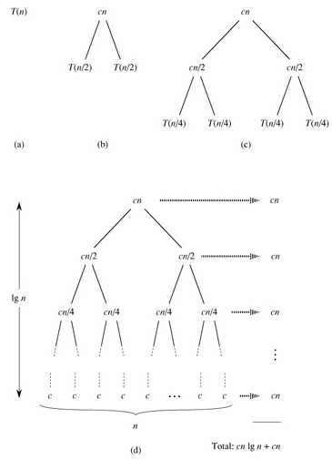
把图 (d) 中所有的项加起来就是总的执行时间。这是一个树状结构，每一层的和都是 cn，共有 lgn+1 层，因此总的执行时间是 cnlgn+cn，相比 nlgn 来说，cn 项可以忽略，因此 T(n) 的上界是 Θ(nlgn)。
如果先前取 c1 和 c2 中较小的一个设为 c，计算出的结果应该是 T(n) 的下界，然而推导过程一样，结果也是 Θ(nlgn)。既然 T(n) 的上下界都是 Θ(nlgn)，显然 T(n) 就是 Θ(nlgn)。
和插入排序的平均情况相比归并排序更快一些，虽然 merge 函数的步骤较多，引入了较大的常数、系数和低次项，但是对于较大的输入长度 n，这些都不是主要因素，归并排序的时间复杂度是 Θ(nlgn)，而插入排序的平均情况是 Θ(n2)，这就决定了归并排序是更快的算法。但是不是任何情况下归并排序都优于插入排序呢？哪些情况适用插入排序而不适用归并排序？留给读者思考。
习题
-
快速排序是另外一种采用分而治之策略的排序算法，在平均情况下的时间复杂度也是 Θ(nlgn)，但比归并排序有更小的时间常数。它的基本思想是这样的：
int partition(int start, int end) { 从 a[start..end] 中选取一个 pivot 元素（比如选 a[start] 为 pivot）; 在一个循环中移动 a[start..end] 的数据，将 a[start..end] 分成两半， 使 a[start..mid-1] 比 pivot 元素小，a[mid+1..end] 比 pivot 元素大， 而 a[mid] 就是 pivot 元素; return mid; } void quicksort(int start, int end) { int mid; if (end > start) { mid = partition(start, end); quicksort(start, mid-1); quicksort(mid+1, end); } }请补完
partition函数，这个函数有多种写法，请选择时间常数尽可能小的实现方法。想想快速排序在最好和最坏情况下的时间复杂度是多少？快速排序在平均情况下的时间复杂度分析起来比较复杂，有兴趣的读者可以参考算法导论。
5. 线性查找
有些查找问题要用时间复杂度为 O(n) 的算法来解决。例如写一个 indexof 函数，从任意输入字符串中找出某个字母的位置并返回这个位置，如果找不到就返回 -1：
例 11.3. 线性查找
#include <stdio.h>
char a[]="hello world";
int indexof(char letter)
{
int i = 0;
while (a[i] != '\0') {
if (a[i] == letter)
return i;
i++;
}
return -1;
}
int main(void)
{
printf("%d %d\n", indexof('o'), indexof('z'));
return 0;
}
这个实现是最直观和最容易想到的，但它是不是最快的算法呢？我们知道插入排序也比归并排序更容易想到，但通常不如归并排序快。那么现在这个问题——给定一个随机排列的序列，找出其中某个元素的位置——有没有比 O(n) 更快的算法？比如 O(lgn)？请读者思考一下。
习题
-
实现一个算法，在一组随机排列的数中找出最小的一个。你能想到的最直观的算法一定是 Θ(n) 的，想想有没有比 Θ(n) 更快的算法？
-
在一组随机排列的数中找出第二小的，这个问题比上一个稍复杂，你能不能想出 Θ(n) 的算法？
-
进一步泛化，在一组随机排列的数中找出第 k 小的，这个元素称为 k-th Order Statistic。能想到的最直观的算法肯定是先把这些数排序然后取第 k 个，时间复杂度和排序算法相同，可以是 Θ(nlgn)。这个问题虽然比前两个问题复杂，但它也有平均情况下时间复杂度是 Θ(n) 的算法，将本章上一节习题 1 的快速排序算法稍加修改就可以解决这个问题：
/* 从 start 到 end 之间找出第 k 小的元素 */ int order_statistic(int start, int end, int k) { 用 partition 函数把序列分成两半，中间的 pivot 元素是序列中的第 i 个; if (k == i) 返回找到的元素; else if (k > i) 从后半部分找出第k-i小的元素并返回; else 从前半部分找出第k小的元素并返回; }请编程实现这个算法。
6. 折半查找
如果不是从一组随机的序列里查找，而是从一组排好序的序列里找出某个元素的位置，则可以有更快的算法：
例 11.4. 折半查找
#include <stdio.h>
#define LEN 8
int a[LEN] = { 1, 2, 2, 2, 5, 6, 8, 9 };
int binarysearch(int number)
{
int mid, start = 0, end = LEN - 1;
while (start <= end) {
mid = (start + end) / 2;
if (a[mid] < number)
start = mid + 1;
else if (a[mid] > number)
end = mid - 1;
else
return mid;
}
return -1;
}
int main(void)
{
printf("%d\n", binarysearch(5));
return 0;
}
由于这个序列已经从小到大排好序了，每次取中间的元素和待查找的元素比较，如果中间的元素比待查找的元素小，就说明「如果待查找的元素存在，一定位于序列的后半部分」，这样可以把搜索范围缩小到后半部分，然后再次使用这种算法迭代。这种「每次将搜索范围缩小一半」的思想称为折半查找（Binary Search）。思考一下，这个算法的时间复杂度是多少？
这个算法的思想很简单，不是吗？可是编程珠玑上说作者在课堂上讲完这个算法的思想然后让学生写程序，有 90% 的人写出的程序中有各种各样的 Bug，读者不信的话可以不看书自己写一遍试试。这个算法容易出错的地方很多，比如 mid = (start + end) / 2; 这一句，在数学概念上其实是 mid = ⌊(start + end) / 2⌋，还有 start = mid + 1; 和 end = mid - 1;，如果前者写成了 start = mid; 或后者写成了 end = mid; 那么很可能会导致死循环（想一想什么情况下会死循环）。
怎样才能保证程序的正确性呢？在本章第 2 节「插入排序」我们讲过借助 Loop Invariant 证明循环的正确性，binarysearch 这个函数的主体也是一个循环，它的 Loop Invariant 可以这样描述：待查找的元素 number 如果存在于数组 a 之中，那么一定存在于 a[start..end] 这个范围之间，换句话说，在这个范围之外的数组 a 的元素中一定不存在 number 这个元素。以下为了书写方便，我们把这句话表示成 mustbe(start, end, number)。可以一边看算法一边做推理：
int binarysearch(int number)
{
int mid, start = 0, end = LEN - 1;
/* 假定 a 是排好序的 */
/* mustbe(start, end, number)，
* 因为 a[start..end] 就是整个数组 a[0..LEN-1] */
while (start <= end) {
/* mustbe(start, end, number)，因为一开始进入循环时是正确的，
* 每次循环也都维护了这个条件 */
mid = (start + end) / 2;
if (a[mid] < number)
/* 既然 a 是排好序的，a[start..mid] 应该都比 number 小，
* 所以 mustbe(mid+1, end, number) */
start = mid + 1;
/* 维护了 mustbe(start, end, number) */
else if (a[mid] > number)
/* 既然 a 是排好序的，a[mid..end] 应该都比 number 大，
* 所以 mustbe(start, mid-1, number) */
end = mid - 1;
/* 维护了 mustbe(start, end, number) */
else
/* a[mid] == number，说明找到了 */
return mid;
}
/*
* mustbe(start, end, number) 一直被循环维护着，到这里应该仍然成立，
* 在 a[start..end] 范围之外一定不存在 number，
* 但现在 a[start..end] 是空序列，在这个范围之外的正是整个数组 a，
* 因此整个数组 a 中都不存在 number
*/
return -1;
}
注意这个算法有一个非常重要的前提——a 是排好序的。缺了这个前提，「如果 a[mid] < number，那么 a[start..mid] 应该都比 number 小」这一步推理就不能成立，这个函数就不能正确地完成查找。从更普遍的意义上说，函数的调用者（Caller）和函数的实现者（Callee，被调用者）之间订立了一个契约（Contract），在调用函数之前，Caller 要为 Callee 提供某些条件，比如确保 a 是排好序的，确保 a[start..end] 都是有效的数组元素而没有访问越界，这称为 Precondition，然后 Callee 对一些 Invariant 进行维护（Maintenance），这些 Invariant 保证了 Callee 在函数返回时能够对 Caller 尽到某些义务，比如确保「如果 number 在数组 a 中存在，一定能找出来并返回它的位置，如果 number 在数组 a 中不存在，一定能返回 -1」，这称为 Postcondition。如果每个函数的文档都非常清楚地记录了 Precondition、Maintenance 和 Postcondition 是什么，那么每个函数都可以独立编写和测试，整个系统就会易于维护。这种编程思想是由 Eiffel 语言的设计者 Bertrand Meyer 提出来的，称为 Design by Contract（DbC）。
测试一个函数是否正确需要把 Precondition、Maintenance 和 Postcondition 这三方面都测试到，比如 binarysearch 这个函数，即使它写得非常正确，既维护了 Invariant 也保证了 Postcondition，如果调用它的 Caller 没有保证 Precondition，最后的结果也还是错的。我们编写几个测试用的 Predicate 函数，然后把相关的测试插入到 binarysearch 函数中：
例 11.5. 带有测试代码的折半查找
#include <stdio.h>
#include <assert.h>
#define LEN 8
int a[LEN] = { 1, 2, 2, 2, 5, 6, 8, 9 };
int is_sorted(void)
{
int i;
for (i = 1; i < LEN; i++)
if (a[i-1] > a[i])
return 0;
return 1;
}
int mustbe(int start, int end, int number)
{
int i;
for (i = 0; i < start; i++)
if (a[i] == number)
return 0;
for (i = end+1; i < LEN; i++)
if (a[i] == number)
return 0;
return 1;
}
int contains(int n)
{
int i;
for (i = 0; i < LEN; i++)
if (a[i] == n)
return 1;
return 0;
}
int binarysearch(int number)
{
int mid, start = 0, end = LEN - 1;
assert(is_sorted()); /* Precondition */
while (start <= end) {
assert(mustbe(start, end, number)); /* Maintenance */
mid = (start + end) / 2;
if (a[mid] < number)
start = mid + 1;
else if (a[mid] > number)
end = mid - 1;
else {
assert(mid >= start && mid <= end
&& a[mid] == number) /* Postcondition 1 */
return mid;
}
}
assert(!contains(number)); /* Postcondition 2 */
return -1;
}
int main(void)
{
printf("%d\n", binarysearch(5));
return 0;
}
assert 是头文件 assert.h 中的一个宏定义，执行到 assert(is_sorted()) 这句时，如果 is_sorted() 返回值为真，则当什么事都没发生过，继续往下执行，如果 is_sorted() 返回值为假（例如把数组的排列顺序改一改），则报错退出程序：
main: main.c:33: binarysearch: Assertion 'is_sorted()' failed.
Aborted
在代码中适当的地方使用断言（Assertion）可以有效地帮助我们测试程序。也许有人会问：我们用几个测试函数来测试 binarysearch，那么这几个测试函数又用什么来测试呢？在实际工作中我们要测试的代码绝不会像 binarysearch 这么简单，而我们编写的测试函数往往都很简单，比较容易保证正确性，也就是用简单的、不容易出错的代码去测试复杂的、容易出错的代码。
测试代码只在开发和调试时有用，如果正式发布（Release）的软件也要运行这些测试代码就会严重影响性能了，如果在包含 assert.h 之前定义一个 NDEBUG 宏（表示 No Debug），就可以禁用 assert.h 中的 assert 宏定义，这样代码中的所有 assert 测试都不起作用了：
#define NDEBUG
#include <stdio.h>
#include <assert.h>
...
注意 NDEBUG 和我们以前使用的宏定义有点不同，例如 #define N 20 将 N 定义为 20，在预处理时把代码中所有的标识符 N 替换成 20，而 #define NDEBUG 把 NDEBUG 定义为空，在预处理时把代码中所有的标识符 NDEBUG 替换成空。这样的宏定义主要是为了用 #ifdef 等预处理指示测试它定义过没有，而不是为了做替换，所以定义成什么值都无所谓，一般定义成空就足够了。
还有另一种办法，不必修改源文件，在编译命令行加上选项 -DNDEBUG 就相当于在源文件开头定义了 NDEBUG宏。宏定义和预处理到第 21 章「预处理」再详细解释，在第 21 章第 4 节「其它预处理特性」将给出 assert.h 一种实现。
习题
-
本节的折半查找算法有一个特点：如果待查找的元素在数组中有多个则返回其中任意一个，以本节定义的数组
int a[8] = { 1, 2, 2, 2, 5, 6, 8, 9 };为例，如果调用binarysearch(2)则返回 3，即a[3]，而有些场合下要求这样的查找返回a[1]，也就是说，如果待查找的元素在数组中有多个则返回第一个。请修改折半查找算法实现这一特性。 -
编写一个函数
double mysqrt(double y);求y的正平方根，参数y是正实数。我们用折半查找来找这个平方根，在从 0 到y之间必定有一个取值是y的平方根，如果我们查找的数x比y的平方根小，则 x2<y，如果我们查找的数x比y的平方根大，则 x2>y，我们可以据此缩小查找范围，当我们查找的数足够准确时（比如满足 |x2-y|<0.001），就可以认为找到了y的平方根。思考一下这个算法需要迭代多少次？迭代次数的多少由什么因素决定？ -
编写一个函数
double mypow(double x, int n);求x的n次方，参数n是正整数。最简单的算法是：double product = 1; for (i = 0; i < n; i++) product *= x;这个算法的时间复杂度是 Θ(n)。其实有更好的办法，比如
mypow(x, 8)，第一次循环算出 x·x=x2，第二次循环算出 x2·x2=x4，第三次循环算出 x4·x4=x8。这样只需要三次循环，时间复杂度是 Θ(lgn)。思考一下如果n不是 2 的整数次幂应该怎么处理。请分别用递归和循环实现这个算法。
从以上几题可以看出，折半查找的思想有非常广泛的应用，不仅限于从一组排好序的元素中找出某个元素的位置，还可以解决很多类似的问题。编程珠玑 对于折半查找的各种应用和优化技巧有非常详细的介绍。
第 12 章 栈与队列
1. 数据结构的概念
数据结构（Data Structure）是数据的组织方式。程序中用到的数据都不是孤立的，而是有相互联系的，根据访问数据的需求不同，同样的数据可以有多种不同的组织方式。以前学过的复合类型也可以看作数据的组织方式，把同一类型的数据组织成数组，或者把描述同一对象的各成员组织成结构体。数据的组织方式包含了存储方式和访问方式这两层意思，二者是紧密联系的。例如，数组的各元素是一个挨一个存储的，并且每个元素的大小相同，因此数组可以提供按下标访问的方式，结构体的各成员也是一个挨一个存储的，但是每个成员的大小不同，所以只能用 . 运算符加成员名来访问，而不能按下标访问。
本章主要介绍栈和队列这两种数据结构以及它们的应用。从本章的应用实例可以看出，一个问题中数据的存储方式和访问方式就决定了解决问题可以采用什么样的算法，要设计一个算法就要同时设计相应的数据结构来支持这种算法。所以 Pascal 语言的设计者 Niklaus Wirth 提出：算法+数据结构=程序（详见算法+数据结构=程序）。
2. 堆栈
在第 5 章第 3 节「递归」中我们已经对堆栈这种数据结构有了初步认识。堆栈是一组元素的集合，类似于数组，不同之处在于，数组可以按下标随机访问，这次访问 a[5] 下次可以访问 a[1]，但是堆栈的访问规则被限制为 Push 和 Pop 两种操作，Push（入栈或压栈）向栈顶添加元素，Pop（出栈或弹出）则取出当前栈顶的元素，也就是说，只能访问栈顶元素而不能访问栈中其它元素。如果所有元素的类型相同，堆栈的存储也可以用数组来实现，访问操作可以通过函数接口提供。看以下的示例程序。
例 12.1. 用堆栈实现倒序打印
#include <stdio.h>
char stack[512];
int top = 0;
void push(char c)
{
stack[top++] = c;
}
char pop(void)
{
return stack[--top];
}
int is_empty(void)
{
return top == 0;
}
int main(void)
{
push('a');
push('b');
push('c');
while(!is_empty())
putchar(pop());
putchar('\n');
return 0;
}
运行结果是 cba。运行过程图示如下：
图 12.1. 用堆栈实现倒序打印

数组 stack 是堆栈的存储空间，变量 top 总是保存数组中栈顶的下一个元素的下标，我们说「top 总是指向栈顶的下一个元素」，或者把 top 叫做栈顶指针（Pointer）。在第 11 章第 2 节「插入排序」中介绍了 Loop Invariant 的概念，可以用它检验循环的正确性，这里的「top 总是指向栈顶的下一个元素」其实也是一种 Invariant，Push 和 Pop 操作总是维持这个条件不变，这种 Invariant 描述的对象是一个数据结构而不是一个循环，在 DbC 中称为 Class Invariant。Pop 操作的语义是取出栈顶元素，但上例的实现其实并没有清除原来的栈顶元素，只是把 top 指针移动了一下，原来的栈顶元素仍然存在那里，这就足够了，因为此后通过 Push 和 Pop 操作不可能再访问到已经取出的元素，下次 Push 操作就会覆盖它。putchar 函数的作用是把一个字符打印到屏幕上，和 printf 的 %c 作用相同。布尔函数 is_empty 的作用是防止 Pop 操作访问越界。这里我们预留了足够大的栈空间（512 个元素），其实严格来说 Push 操作之前也应该检查栈是否满了。
在 main 函数中，入栈的顺序是 'a'、'b'、'c'，而出栈打印的顺序却是 'c'、'b'、'a'，最后入栈的 'c' 最早出来，因此堆栈这种数据结构的特点可以概括为 LIFO（Last In First Out，后进先出）。我们也可以写一个递归函数做倒序打印，利用函数调用的栈帧实现后进先出：
例 12.2. 用递归实现倒序打印
#include <stdio.h>
#define LEN 3
char buf[LEN]={'a', 'b', 'c'};
void print_backward(int pos)
{
if(pos == LEN)
return;
print_backward(pos+1);
putchar(buf[pos]);
}
int main(void)
{
print_backward(0);
putchar('\n');
return 0;
}
也许你会说，又是堆栈又是递归的，倒序打印一个数组犯得着这么大动干戈吗？写一个简单的循环不就行了：
for (i = LEN-1; i >= 0; i--)
putchar(buf[i]);
对于数组来说确实没必要搞这么复杂，因为数组既可以从前向后访问也可以从后向前访问，甚至可以随机访问，但有些数据结构的访问并没有这么自由，下一节你就会看到这样的数据结构。
3. 深度优先搜索
现在我们用堆栈解决一个有意思的问题，定义一个二维数组：
int maze[5][5] = {
0, 1, 0, 0, 0,
0, 1, 0, 1, 0,
0, 0, 0, 0, 0,
0, 1, 1, 1, 0,
0, 0, 0, 1, 0,
};
它表示一个迷宫，其中的 1 表示墙壁，0 表示可以走的路，只能横着走或竖着走，不能斜着走，要求编程序找出从左上角到右下角的路线。程序如下：
例 12.3. 用深度优先搜索解迷宫问题
#include <stdio.h>
#define MAX_ROW 5
#define MAX_COL 5
struct point { int row, col; } stack[512];
int top = 0;
void push(struct point p)
{
stack[top++] = p;
}
struct point pop(void)
{
return stack[--top];
}
int is_empty(void)
{
return top == 0;
}
int maze[MAX_ROW][MAX_COL] = {
0, 1, 0, 0, 0,
0, 1, 0, 1, 0,
0, 0, 0, 0, 0,
0, 1, 1, 1, 0,
0, 0, 0, 1, 0,
};
void print_maze(void)
{
int i, j;
for (i = 0; i < MAX_ROW; i++) {
for (j = 0; j < MAX_COL; j++)
printf("%d ", maze[i][j]);
putchar('\n');
}
printf("*********\n");
}
struct point predecessor[MAX_ROW][MAX_COL] = {
{{-1,-1}, {-1,-1}, {-1,-1}, {-1,-1}, {-1,-1}},
{{-1,-1}, {-1,-1}, {-1,-1}, {-1,-1}, {-1,-1}},
{{-1,-1}, {-1,-1}, {-1,-1}, {-1,-1}, {-1,-1}},
{{-1,-1}, {-1,-1}, {-1,-1}, {-1,-1}, {-1,-1}},
{{-1,-1}, {-1,-1}, {-1,-1}, {-1,-1}, {-1,-1}},
};
void visit(int row, int col, struct point pre)
{
struct point visit_point = { row, col };
maze[row][col] = 2;
predecessor[row][col] = pre;
push(visit_point);
}
int main(void)
{
struct point p = { 0, 0 };
maze[p.row][p.col] = 2;
push(p);
while (!is_empty()) {
p = pop();
if (p.row == MAX_ROW - 1 /* goal */
&& p.col == MAX_COL - 1)
break;
if (p.col+1 < MAX_COL /* right */
&& maze[p.row][p.col+1] == 0)
visit(p.row, p.col+1, p);
if (p.row+1 < MAX_ROW /* down */
&& maze[p.row+1][p.col] == 0)
visit(p.row+1, p.col, p);
if (p.col-1 >= 0 /* left */
&& maze[p.row][p.col-1] == 0)
visit(p.row, p.col-1, p);
if (p.row-1 >= 0 /* up */
&& maze[p.row-1][p.col] == 0)
visit(p.row-1, p.col, p);
print_maze();
}
if (p.row == MAX_ROW - 1 && p.col == MAX_COL - 1) {
printf("(%d, %d)\n", p.row, p.col);
while (predecessor[p.row][p.col].row != -1) {
p = predecessor[p.row][p.col];
printf("(%d, %d)\n", p.row, p.col);
}
} else
printf("No path!\n");
return 0;
}
运行结果如下：
2 1 0 0 0
2 1 0 1 0
0 0 0 0 0
0 1 1 1 0
0 0 0 1 0
*********
2 1 0 0 0
2 1 0 1 0
2 0 0 0 0
0 1 1 1 0
0 0 0 1 0
*********
2 1 0 0 0
2 1 0 1 0
2 2 0 0 0
2 1 1 1 0
0 0 0 1 0
*********
2 1 0 0 0
2 1 0 1 0
2 2 0 0 0
2 1 1 1 0
2 0 0 1 0
*********
2 1 0 0 0
2 1 0 1 0
2 2 0 0 0
2 1 1 1 0
2 2 0 1 0
*********
2 1 0 0 0
2 1 0 1 0
2 2 0 0 0
2 1 1 1 0
2 2 2 1 0
*********
2 1 0 0 0
2 1 0 1 0
2 2 0 0 0
2 1 1 1 0
2 2 2 1 0
*********
2 1 0 0 0
2 1 0 1 0
2 2 2 0 0
2 1 1 1 0
2 2 2 1 0
*********
2 1 0 0 0
2 1 2 1 0
2 2 2 2 0
2 1 1 1 0
2 2 2 1 0
*********
2 1 2 0 0
2 1 2 1 0
2 2 2 2 0
2 1 1 1 0
2 2 2 1 0
*********
2 1 2 2 0
2 1 2 1 0
2 2 2 2 0
2 1 1 1 0
2 2 2 1 0
*********
2 1 2 2 2
2 1 2 1 0
2 2 2 2 0
2 1 1 1 0
2 2 2 1 0
*********
2 1 2 2 2
2 1 2 1 2
2 2 2 2 0
2 1 1 1 0
2 2 2 1 0
*********
2 1 2 2 2
2 1 2 1 2
2 2 2 2 2
2 1 1 1 0
2 2 2 1 0
*********
2 1 2 2 2
2 1 2 1 2
2 2 2 2 2
2 1 1 1 2
2 2 2 1 0
*********
2 1 2 2 2
2 1 2 1 2
2 2 2 2 2
2 1 1 1 2
2 2 2 1 2
*********
(4, 4)
(3, 4)
(2, 4)
(1, 4)
(0, 4)
(0, 3)
(0, 2)
(1, 2)
(2, 2)
(2, 1)
(2, 0)
(1, 0)
(0, 0)
这次堆栈里的元素是结构体类型的，用来表示迷宫中一个点的 x 和 y 座标。我们用一个新的数据结构保存走迷宫的路线，每个走过的点都有一个前趋（Predecessor）点，表示是从哪儿走到当前点的，比如 predecessor[4][4] 是座标为 (3, 4) 的点，就表示从 (3, 4) 走到了 (4, 4)，一开始 predecessor 的各元素初始化为无效座标 (-1, -1)。在迷宫中探索路线的同时就把路线保存在 predecessor 数组中，已经走过的点在 maze 数组中记为 2 防止重复走，最后找到终点时就根据 predecessor 数组保存的路线从终点打印到起点。为了帮助理解，我把这个算法改写成伪代码（Pseudocode）如下：
将起点标记为已走过并压栈;
while (栈非空) {
从栈顶弹出一个点 p;
if (p 这个点是终点)
break;
否则沿右、下、左、上四个方向探索相邻的点
if (和 p 相邻的点有路可走，并且还没走过)
将相邻的点标记为已走过并压栈，它的前趋就是 p 点;
}
if (p 点是终点) {
打印p 点的座标;
while (p 点有前趋) {
p 点 = p 点的前趋;
打印 p 点的座标;
}
} else
没有路线可以到达终点;
我在 while 循环的末尾插了打印语句，每探索一步都打印出当前迷宫的状态（标记了哪些点），从打印结果可以看出这种搜索算法的特点是：每次探索完各个方向相邻的点之后，取其中一个相邻的点走下去，一直走到无路可走了再退回来，取另一个相邻的点再走下去。这称为深度优先搜索（DFS，Depth First Search）。探索迷宫和堆栈变化的过程如下图所示。
图 12.2. 深度优先搜索
图中各点的编号表示探索顺序，堆栈中保存的应该是座标，我在画图时为了直观就把各点的编号写在堆栈里了。可见正是堆栈后进先出的性质使这个算法具有了深度优先的特点。如果在探索问题的解时走进了死胡同，则需要退回来从另一条路继续探索，这种思想称为回溯（Backtrack），一个典型的例子是很多编程书上都会讲的八皇后问题。
最后我们打印终点的座标并通过 predecessor 数据结构找到它的前趋，这样顺藤摸瓜一直打印到起点。那么能不能从起点到终点正向打印路线呢？在上一节我们看到，数组支持随机访问也支持顺序访问，如果在一个循环里打印数组，既可以正向打印也可以反向打印。但 predecessor 这种数据结构却有很多限制：
- 不能随机访问一条路线上的任意点，只能通过一个点找到另一个点，通过另一个点再找第三个点，因此只能顺序访问。
- 每个点只知道它的前趋是谁，而不知道它的后继（Successor）是谁，所以只能反向顺序访问。
可见，有什么样的数据结构就决定了可以用什么样的算法。那为什么不再建一个 successor 数组来保存每个点的后继呢？从 DFS 算法的过程可以看出，虽然每个点的前趋只有一个，后继却不止一个，如果我们为每个点只保存一个后继，则无法保证这个后继指向正确的路线。由此可见，有什么样的算法就决定了可以用什么样的数据结构。设计算法和设计数据结构这两件工作是紧密联系的。
习题
- 修改本节的程序，要求从起点到终点正向打印路线。你能想到几种办法？
- 本节程序中
predecessor这个数据结构占用的存储空间太多了，改变它的存储方式可以节省空间，想想该怎么改。 - 上一节我们实现了一个基于堆栈的程序，然后改写成递归程序，用函数调用的栈帧替代自己实现的堆栈。本节的 DFS 算法也是基于堆栈的，请把它改写成递归程序，这样改写可以避免使用
predecessor数据结构，想想该怎么做。
4. 队列与广度优先搜索
队列也是一组元素的集合，也提供两种基本操作：Enqueue （入队）将元素添加到队尾，Dequeue （出队）从队头取出元素并返回。就像排队买票一样，先来先服务，先入队的人也是先出队的，这种方式称为 FIFO（First In First Out，先进先出），有时候队列本身也被称为 FIFO。
下面我们用队列解决迷宫问题。程序如下：
例 12.4. 用广度优先搜索解迷宫问题
#include <stdio.h>
#define MAX_ROW 5
#define MAX_COL 5
struct point { int row, col, predecessor; } queue[512];
int head = 0, tail = 0;
void enqueue(struct point p)
{
queue[tail++] = p;
}
struct point dequeue(void)
{
return queue[head++];
}
int is_empty(void)
{
return head == tail;
}
int maze[MAX_ROW][MAX_COL] = {
0, 1, 0, 0, 0,
0, 1, 0, 1, 0,
0, 0, 0, 0, 0,
0, 1, 1, 1, 0,
0, 0, 0, 1, 0,
};
void print_maze(void)
{
int i, j;
for (i = 0; i < MAX_ROW; i++) {
for (j = 0; j < MAX_COL; j++)
printf("%d ", maze[i][j]);
putchar('\n');
}
printf("*********\n");
}
void visit(int row, int col)
{
struct point visit_point = { row, col, head-1 };
maze[row][col] = 2;
enqueue(visit_point);
}
int main(void)
{
struct point p = { 0, 0, -1 };
maze[p.row][p.col] = 2;
enqueue(p);
while (!is_empty()) {
p = dequeue();
if (p.row == MAX_ROW - 1 /* goal */
&& p.col == MAX_COL - 1)
break;
if (p.col+1 < MAX_COL /* right */
&& maze[p.row][p.col+1] == 0)
visit(p.row, p.col+1);
if (p.row+1 < MAX_ROW /* down */
&& maze[p.row+1][p.col] == 0)
visit(p.row+1, p.col);
if (p.col-1 >= 0 /* left */
&& maze[p.row][p.col-1] == 0)
visit(p.row, p.col-1);
if (p.row-1 >= 0 /* up */
&& maze[p.row-1][p.col] == 0)
visit(p.row-1, p.col);
print_maze();
}
if (p.row == MAX_ROW - 1 && p.col == MAX_COL - 1) {
printf("(%d, %d)\n", p.row, p.col);
while (p.predecessor != -1) {
p = queue[p.predecessor];
printf("(%d, %d)\n", p.row, p.col);
}
} else
printf("No path!\n");
return 0;
}
运行结果如下：
2 1 0 0 0
2 1 0 1 0
0 0 0 0 0
0 1 1 1 0
0 0 0 1 0
*********
2 1 0 0 0
2 1 0 1 0
2 0 0 0 0
0 1 1 1 0
0 0 0 1 0
*********
2 1 0 0 0
2 1 0 1 0
2 2 0 0 0
2 1 1 1 0
0 0 0 1 0
*********
2 1 0 0 0
2 1 0 1 0
2 2 2 0 0
2 1 1 1 0
0 0 0 1 0
*********
2 1 0 0 0
2 1 0 1 0
2 2 2 0 0
2 1 1 1 0
2 0 0 1 0
*********
2 1 0 0 0
2 1 2 1 0
2 2 2 2 0
2 1 1 1 0
2 0 0 1 0
*********
2 1 0 0 0
2 1 2 1 0
2 2 2 2 0
2 1 1 1 0
2 2 0 1 0
*********
2 1 0 0 0
2 1 2 1 0
2 2 2 2 2
2 1 1 1 0
2 2 0 1 0
*********
2 1 2 0 0
2 1 2 1 0
2 2 2 2 2
2 1 1 1 0
2 2 0 1 0
*********
2 1 2 0 0
2 1 2 1 0
2 2 2 2 2
2 1 1 1 0
2 2 2 1 0
*********
2 1 2 0 0
2 1 2 1 2
2 2 2 2 2
2 1 1 1 2
2 2 2 1 0
*********
2 1 2 2 0
2 1 2 1 2
2 2 2 2 2
2 1 1 1 2
2 2 2 1 0
*********
2 1 2 2 0
2 1 2 1 2
2 2 2 2 2
2 1 1 1 2
2 2 2 1 0
*********
2 1 2 2 0
2 1 2 1 2
2 2 2 2 2
2 1 1 1 2
2 2 2 1 2
*********
2 1 2 2 2
2 1 2 1 2
2 2 2 2 2
2 1 1 1 2
2 2 2 1 2
*********
2 1 2 2 2
2 1 2 1 2
2 2 2 2 2
2 1 1 1 2
2 2 2 1 2
*********
(4, 4)
(3, 4)
(2, 4)
(2, 3)
(2, 2)
(2, 1)
(2, 0)
(1, 0)
(0, 0)
其实仍然可以像上一节例 12.3 「用深度优先搜索解迷宫问题」一样用 predecessor 数组表示每个点的前趋，但我想换一种更方便的数据结构，直接在每个点的结构体中加一个成员表示前趋：
struct point { int row, col, predecessor; } queue[512];
int head = 0, tail = 0;
变量 head 和 tail 是队头和队尾指针，head 总是指向队头，tail 总是指向队尾的下一个元素。每个点的 predecessor 成员也是一个指针，指向它的前趋在 queue 数组中的位置。如下图所示：
图 12.3. 广度优先搜索的队列数据结构

为了帮助理解，我把这个算法改写成伪代码如下：
将起点标记为已走过并入队;
while (队列非空) {
出队一个点 p;
if (p 这个点是终点)
break;
否则沿右、下、左、上四个方向探索相邻的点
if (和 p 相邻的点有路可走，并且还没走过)
将相邻的点标记为已走过并入队，它的前趋就是刚出队的 p 点;
}
if (p 点是终点) {
打印 p 点的座标;
while (p 点有前趋) {
p 点 = p 点的前趋;
打印 p 点的座标;
}
} else
没有路线可以到达终点;
从打印的搜索过程可以看出，这个算法的特点是沿各个方向同时展开搜索，每个可以走通的方向轮流往前走一步，这称为广度优先搜索（BFS，Breadth First Search）。探索迷宫和队列变化的过程如下图所示。
图 12.4. 广度优先搜索
广度优先是一种步步为营的策略，每次都从各个方向探索一步，将前线推进一步，图中的虚线就表示这个前线，队列中的元素总是由前线的点组成的，可见正是队列先进先出的性质使这个算法具有了广度优先的特点。广度优先搜索还有一个特点是可以找到从起点到终点的最短路径，而深度优先搜索找到的不一定是最短路径，比较本节和上一节程序的运行结果可以看出这一点，想一想为什么。
习题
- 本节的例子直接在队列元素中加一个指针成员表示前趋，想一想为什么上一节例 12.3 「用深度优先搜索解迷宫问题」不能采用这种方法表示前趋？
- 本节例子中给队列分配的存储空间是 512 个元素，其实没必要这么多，那么解决这个问题至少要分配多少个元素的队列空间呢？跟什么因素有关？
5. 环形队列
比较本章例 12.3 「用深度优先搜索解迷宫问题」的栈操作和例 12.4 「用广度优先搜索解迷宫问题」的队列操作可以发现，栈操作的 top 指针在 Push 时增大而在 Pop 时减小，栈空间是可以重复利用的，而队列的 head、tail 指针都在一直增大，虽然前面的元素已经出队了，但它所占的存储空间却不能重复利用。在本章例 12.4 「用广度优先搜索解迷宫问题」的解法中，出队的元素仍然有用，保存着走过的路径和每个点的前趋，但大多数程序并不是这样使用队列的，一般情况下出队的元素就不再有保存价值了，这些元素的存储空间应该回收利用，由此想到把队列改造成环形队列（Circular Queue）：把 queue 数组想像成一个圈，head 和 tail 指针仍然是一直增大的，当指到数组末尾时就自动回到数组开头，就像两个人围着操场赛跑，沿着它们跑的方向看，从 head 到 tail 之间是队列的有效元素，从 tail 到 head 之间是空的存储位置，如果 head 追上 tail 就表示队列空了，如果 tail 追上 head 就表示队列的存储空间满了。如下图所示：
图 12.5. 环形队列
习题
- 现在把迷宫问题的要求改一下，只要求程序给出最后结论就可以了，回答「有路能到达终点」或者「没有路能到达终点」，而不需要把路径打印出来。请把本章例 12.4 「用广度优先搜索解迷宫问题」改用环形队列实现，然后试验一下解决这个问题至少需要分配多少个元素的队列空间。
第 13 章 本阶段总结
善于学习的人都应该善于总结。本书的编排顺序充分考虑到知识的前后依赖关系，保证在讲解每个新知识点的时候都只用到前面章节讲过的知识，但正因为如此，很多相互关联的知识点被拆散到多个章节中了。我们一章一章地纵向学习过来之后，应该理出几个横切面，把拆散到各章节中的知识点串起来。请从以下几个方面整理和复习。
1. C 的语法规则。
- 源文件中所有函数定义之外可以出现哪些语法元素？
- 函数定义之中可以出现哪些语法元素？
- 语句有哪几种？
- 哪些语法元素需要遵循标识符的命名规则？
- 表达式由哪些语法元素组成？
- 到目前为止学过哪些运算符？它们的优先级和结合性是怎样的？
- 哪些运算符取操作数的左值？哪些运算符的操作数必须是整型？哪些运算符有 Side Effect？
- 哪些表达式可以做左值？哪些表达式只能做右值？
- 哪些地方必须用常量表达式？哪些地方必须用整数常量表达式？
2. 思维方法与编程思想。
- 以概念为中心，第 1 章第 1 节「程序和编程语言」
- 组合规则，第 2 章第 5 节「表达式」
- Least Surprise，第 3 章第 3 节「形参和实参」
- 充分条件与必要条件，第 3 章第 4 节「全局变量、局部变量和作用域」
- 封装，第 4 章第 2 节「if/else 语句」
- 布尔逻辑，第 4 章第 3 节「布尔代数」
- 递归，第 5 章第 3 节「递归」
- 函数式编程，第 6 章第 1 节「while 语句」
- 迭代（第 6 章 循环语句）与增量式求解（第 11 章第 2 节「插入排序」）
- 抽象，第 7 章第 2 节「数据抽象」
- 数据驱动，第 8 章第 5 节「多维数组」
- 分而治之，第 11 章第 4 节「归并排序」
- 折半查找，第 11 章第 6 节「折半查找」
- 回溯，第 12 章例 12.3「用深度优先搜索解迷宫问题」
3. 调试方法
- 编译错误、运行时错误与语义错误，第 1 章第 3 节「程序的调试」
- 增量式开发，第 5 章第 2 节「增量式开发」
- 打印语句与 Scaffold，第 5 章第 2 节「增量式开发」
- gdb，第 10 章 gdb
- DbC 与 Assertion，第 11 章第 6 节「折半查找」
部分 II. C 语言本质
目录
- 计算机中数的表示
- 为什么计算机用二进制计数
- 不同进制之间的换算
- 整数的加减运算
- Sign and Magnitude 表示法
- 1's Complement 表示法
- 2's Complement 表示法
- 有符号数和无符号数
- 浮点数
- 数据类型详解
- 整型
- 浮点型
- 类型转换
- Integer Promotion
- Usual Arithmetic Conversion
- 由赋值产生的类型转换
- 强制类型转换
- 编译器如何处理类型转换
- 运算符详解
- 位运算
- 按位与、或、异或、取反运算
- 移位运算
- 掩码
- 异或运算的一些特性
- 其它运算符
- 复合赋值运算符
- 条件运算符
- 逗号运算符
- sizeof 运算符与 typedef 类型声明
- Side Effect 与 Sequence Point
- 运算符总结
- 位运算
- 计算机体系结构基础
- 内存与地址
- CPU
- 设备
- MMU
- Memory Hierarchy
- x86 汇编程序基础
- 最简单的汇编程序
- x86 的寄存器
- 第二个汇编程序
- 寻址方式
- ELF 文件
- 目标文件
- 可执行文件
- 汇编与 C 之间的关系
- 函数调用
- main 函数和启动例程
- 变量的存储布局
- 结构体和联合体
- C 内联汇编
- volatile 限定符
- 链接详解
- 多目标文件的链接
- 定义和声明
- extern 和 static 关键字
- 头文件
- 定义和声明的详细规则
- 静态库
- 共享库
- 编译、链接、运行
- 动态链接的过程
- 共享库的命名惯例
- 虚拟内存管理
- 预处理
- 预处理的步骤
- 宏定义
- 函数式宏定义
- 内联函数
- #、## 运算符和可变参数
- 宏展开的步骤
- 条件预处理指示
- 其它预处理特性
- Makefile 基础
- 基本规则
- 隐含规则和模式规则
- 变量
- 自动处理头文件的依赖关系
- 常用的 make 命令行选项
- 指针
- 指针的基本概念
- 指针类型的参数和返回值
- 指针与数组
- 指针与 const 限定符
- 指针与结构体
- 指向指针的指针与指针数组
- 指向数组的指针与多维数组
- 函数类型和函数指针类型
- 不完全类型和复杂声明
- 函数接口
- 本章的预备知识
- strcpy 与 strncpy
- malloc 与 free
- 传入参数与传出参数
- 两层指针的参数
- 返回值是指针的情况
- 回调函数
- 可变参数
- 本章的预备知识
- C 标准库
- 字符串操作函数
- 初始化字符串
- 取字符串的长度
- 拷贝字符串
- 连接字符串
- 比较字符串
- 搜索字符串
- 分割字符串
- 标准 I/O 库函数
- 文件的基本概念
- fopen/fclose
- stdin/stdout/stderr
- errno 与 perror 函数
- 以字节为单位的 I/O 函数
- 操作读写位置的函数
- 以字符串为单位的 I/O 函数
- 以记录为单位的 I/O 函数
- 格式化 I/O 函数
- C 标准库的 I/O 缓冲区
- 本节综合练习
- 数值字符串转换函数
- 分配内存的函数
- 字符串操作函数
- 链表、二叉树和哈希表
- 链表
- 单链表
- 双向链表
- 静态链表
- 本节综合练习
- 二叉树
- 二叉树的基本概念
- 排序二叉树
- 哈希表
- 链表
- 本阶段总结
第 14 章 计算机中数的表示
1. 为什么计算机用二进制计数
人类的计数方式通常是「逢十进一」，称为十进制（Decimal），大概因为人有十个手指，所以十进制是最自然的计数方式，很多民族的语言文字中都有十个数字，而阿拉伯数字 0 ~ 9 是目前最广泛采用的。
计算机是用数字电路搭成的，数字电路中只有 1 和 0 两种状态，或者可以说计算机只有两个手指，所以对计算机来说二进制（Binary）是最自然的计数方式。根据「逢二进一」的原则，十进制的 1、2、3、4 分别对应二进制的 1、10、11、100。二进制的一位数字称为一个位（Bit），三个 bit 能够表示的最大的二进制数是 111，也就是十进制的 7。不管用哪种计数方式，数的大小并没有变，十进制的 1+1 等于 2，二进制的 1+1 等于 10，二进制的 10 和十进制的 2 大小是相等的。事实上，计算机采用如下的逻辑电路计算两个 bit 的加法：
图 14.1. 1-bit Full Adder

图的上半部分（出自Wikipedia）的电路称为一位全加器（1-bit Full Adder），图的下半部分是一些逻辑电路符号的图例。我们首先解释这些图例，逻辑电路由门电路（Gate）和导线（Wire）组成，同一条导线上在某一时刻的电压值只能是高和低两种状态之一，分别用 0 和 1 表示。如果两条导线短接在一起则它们的电压值相同，在接点处画一个黑点，如果接点处没有画黑点则表示这两条线并没有短接在一起，只是在画图时无法避免交叉。导线的电压值进入门电路的输入端，经过逻辑运算后在门电路的输出端输出运算结果的电压值，任何复杂的加减乘除运算都可以分解成简单的逻辑运算。AND、OR 和 NOT 运算在第 4 章第 3 节「布尔代数」中讲过了，这三种逻辑运算分别用与门、或门和反相器（Inverter）实现。另外几种逻辑运算在这里补充一下。异或（XOR，eXclusive OR）运算的真值表如下：
表 14.1. XOR 的真值表
| A | B | A XOR B |
|---|---|---|
| 0 | 0 | 0 |
| 0 | 1 | 1 |
| 1 | 0 | 1 |
| 1 | 1 | 0 |
用一句话概括就是：两个操作数相同则结果为 0，两个操作数不同则结果为 1。与非（NAND）和或非（NOR）运算就是在与、或运算的基础上取反：
表 14.2. NAND 的真值表
| A | B | A NAND B |
|---|---|---|
| 0 | 0 | 1 |
| 0 | 1 | 1 |
| 1 | 0 | 1 |
| 1 | 1 | 0 |
表 14.3. NOR 的真值表
| A | B | A NOR B |
|---|---|---|
| 0 | 0 | 1 |
| 0 | 1 | 0 |
| 1 | 0 | 0 |
| 1 | 1 | 0 |
如果把与门、或门和反相器组合来实现 NAND 和 NOR 运算，则电路过于复杂了，因此逻辑电路中通常有专用的与非门和或非门。现在我们看看上图中的 AND、OR、XOR 是怎么实现两个 bit 的加法的。A、B 是两个加数，Cin 是低位传上来的进位（Carry），相当于三个加数求和，三个加数都是 0则结果为 0，三个加数都是 1 则结果为 11，即输出位 S 是 1，产生的进位 Cout 也是 1。下面根据加法的规则用真值表列出所有可能的情况：
表 14.4. 1-bit Full Adder 的真值表
| A | B | Cin | Cout | S |
|---|---|---|---|---|
| 0 | 0 | 0 | 0 | 0 |
| 0 | 0 | 1 | 0 | 1 |
| 0 | 1 | 0 | 0 | 1 |
| 0 | 1 | 1 | 1 | 0 |
| 1 | 0 | 0 | 0 | 1 |
| 1 | 0 | 1 | 1 | 0 |
| 1 | 1 | 0 | 1 | 0 |
| 1 | 1 | 1 | 1 | 1 |
请读者对照电路图验证一下真值表是否正确。如果把很多个一位全加器串接起来，就成了多位加法器，如下图所示（该图出自 Wikipedia）：
图 14.2. 4-bit Ripple Carry Adder

图中的一位全加器用方框表示，上一级全加器的 Cout 连接到下一级全加器的 Cin，让进位像涟漪一样一级一级传开，所以叫做 Ripple Carry Adder，这样就可以把两个 4 bit 二进制数 A3A2A1A0 和 B3B2B1B0 加起来了。在这里介绍 Ripple Carry Adder 只是为了让读者理解计算机是如何通过逻辑运算来做算术运算的，实际上这种加法器效率很低，只能加完了一位再加下一位，更实用、更复杂的加法器可以多个位一起计算，有兴趣的读者可参考数字逻辑基础。
2. 不同进制之间的换算
在十进制中，个位的 1 代表 100 = 1，十位的 1 代表 101=10，百位的 1 代表 102=100，所以
123 = 1×102+2×101+3×100
同样道理，在二进制中，个位的 1 代表 20=1，十位的 1 代表21=2，百位的 1 代表 22=4，所以
(A3A2A1A0)2 = A3×23 + A2×22 + A1×21 + A0×20
如果二进制和十进制数出现在同一个等式中，为了区别我们用 (A3A2A1A0)2 这种形式表示 (A3A2A1A0) 是二进制数，每个数字只能是 0 或 1，其它没有套括号加下标的数仍表示十进制数。对于 (A3A2A1A0)2 这样一个二进制数，最左边的 A3 位称为最高位（MSB，Most Significant Bit），最右边的 A0 位称为最低位（LSB，Least Significant Bit）。以后我们遵循这样的惯例：LSB 称为第 0 位而不是第 1 位，所以如果一个数是 32 位的，则 MSB 是第 31 位。上式就是从二进制到十进制的换算公式。作为练习，请读者算一下 (1011)2 和 (1111)2 换算成十进制分别是多少。
下面来看十进制怎么换算成二进制。我们知道
13 = 1×23 + 1×22 + 0×21 + 1×20
所以 13 换算成二进制应该是 (1101)2。问题是怎么把 13 分解成等号右边的形式呢？注意到等号右边可以写成
13 = ((((0×2 + 13)×2 + 12)×2 + 01)×2 + 10)
我们将 13 反复除以 2 取余数就可以提取出上式中的 1101 四个数字，为了让读者更容易看清楚是哪个 1 和哪个 0，上式和下式中对应的数字都加了下标：
13÷2 = 6...10 6÷2 = 3...01 3÷2 = 1...12 1÷2 = 0...13
把这四步得到的余数按相反的顺序排列就是 13 的二进制表示，因此这种方法称为除二反序取余法。
计算机用二进制表示数，程序员也必须习惯使用二进制，但二进制写起来太啰嗦了，所以通常将二进制数分成每三位一组或者每四位一组，每组用一个数字表示。比如把 (10110010)2 从最低位开始每三位分成一组，10、110、010，然后把每组写成一个十进制数字，就是 (262)8，这样每一位数字的取值范围是 0 ~ 7，逢八进一，称为八进制（Octal）。类似地，把 (10110010)2 分成每四位一组，1011、0010，然后把每组写成一个数字，这个数的低位是 2，高位已经大于 9 了，我们规定用字母 A ~ F 表示 10 ~ 15，这个数可以写成 (B2)16，每一位数字的取值范围是 0 ~ F，逢十六进一，称为十六进制（Hexadecimal）。所以，八进制和十六进制是程序员为了书写二进制方便而发明的简便写法，好比草书和正楷的关系一样。
习题
-
二进制小数可以这样定义：
(0.A1A2A3...)2 = A1×2-1 + A2×2-2 + A3×2-3 + ...
这个定义同时也是从二进制小数到十进制小数的换算公式。从本节讲的十进制转二进制的推导过程出发类比一下，十进制小数换算成二进制小数应该怎么算？
-
再类比一下，八进制（或十六进制）与十进制之间如何相互换算？
3. 整数的加减运算
我们已经了解了计算机中正整数如何表示，加法如何计算，那么负数如何表示，减法又如何计算呢？本节讨论这些问题。为了书写方便，本节举的例子都用 8 个 bit 表示一个数，实际计算机做整数加减运算的操作数可以是 8 位、16 位、32 位甚至64 位的。
3.1. Sign and Magnitude 表示法
要用 8 个 bit 表示正数和负数，一种简单的想法是把最高位规定为符号位（Sign Bit），0 表示正 1 表示负，剩下的 7 位表示绝对值的大小，这称为 Sign and Magnitude 表示法。例如 -1 表示成10000001，+1 表示成 00000001。这样用 8 个 bit 表示整数的取值范围是 -27-1 ~ 27-1，即 -127 ~ 127。
采用这种表示法，计算机做加法运算需要处理以下逻辑：
- 如果两数符号位相同，就把它们的低 7 位相加，符号位不变。如果低 7 位相加时在最高位产生进位，说明结果的绝对值大于 127，超出 7 位所能表示的数值范围，这称为溢出（Overflow）[24]，这时通常把计算机中的一个标志位置 1 表示当前运算产生了溢出。
- 如果两数符号位不同，首先比较它们的低 7 位谁大，然后用大数减小数，结果的符号位和大数相同。
[24] 有时候会进一步细分，把正整数溢出称为上溢（Overflow），负整数溢出称为下溢（Underflow），详见
strtol(3)。
那么减法如何计算呢？由于我们规定了负数的表示，可以把减法转换成加法来计算，要计算 a-b，可以先把 b 变号然后和 a 相加，相当于计算 a + (-b)。但如果两个加数的符号位不同就要用大数的绝对值减小数的绝对值，这一步减法计算仍然是免不了的。我们知道加法要进位，减法要借位，计算过程是不同的，所以除了要有本章第 1 节「为什么计算机用二进制计数」提到的加法器电路之外，还要另外有一套减法器电路。
如果采用 Sign and Magnitude 表示法，计算机做加减运算需要处理很多逻辑：比较符号位，比较绝对值，加法改减法，减法改加法，小数减大数改成大数减小数……这是非常低效率的。还有一个缺点是 0 的表示不唯一，既可以表示成 10000000 也可以表示成 00000000，这进一步增加了逻辑的复杂性，所以我们迫切需要重新设计整数的表示方法使计算过程更简单。
3.2. 1's Complement 表示法
本节介绍一种二进制补码表示法，为了便于理解，我们先看一个十进制的例子：
167 - 52 = 167 + (-52) = 167 + (999-52) - 1000 + 1 = 167+ 947 - 1000 + 1 = 1114 - 1000 + 1 = 114 + 1 = 115
167 - 52 --> 减法转换成加法 167 + (-52) --> 负数取 9 的补码表示 167 + 947 --> 114 进 1 --> 高位进的 1 加到低位上去，结果为 115。
在这个例子中我们用三位十进制数字表示正数和负数，具体规定如下：
表 14.5. 9's Complement 表示法
| 数值 | 补码表示 |
|---|---|
| -499 | 500 |
| -498 | 501 |
| ... | ... |
| -1 | 998 |
| 0 | 999 |
| 0 | 0 |
| 1 | 1 |
| ... | ... |
| 498 | 498 |
| 499 | 499 |
首先 -52 要用 999-52 表示，就是 947，这称为取 9 的补码（9's Complement）；然后把 167 和 947 相加，得到 114 进 1；再把高位进的 1 加到低位上去，得 115，本来应该加 1000，结果加了 1，少加了 999，正好把先前取 9 的补码多加的 999 抵消掉了。我们本来要做 167-52 的减法运算，结果变成做 999-52 的减法运算，后者显然要容易一些，因为没有借位。这种补码表示法的计算规则用一句话概括就是：负数用 9 的补码表示，减法转换成加法，计算结果的最高位如果有进位则要加回到最低位上去。要验证这条规则得考虑四种情况：
- 两个正数，相加得正
- 一正一负，相加得正
- 一正一负，相加得负
- 两个负数，相加得负
我们举的例子验证了第二种情况，另外三种情况请读者自己验证，暂时不考虑溢出的问题，稍后会讲到如何判定溢出。
上述规则也适用于二进制：负数用 1 的补码（1's Complement）表示，减法转换成加法，计算结果的最高位如果有进位则要加回到最低位上去。取 1 的补码更简单，连减法都不用做，因为 1-1=0，1-0=1，取 1 的补码就是把每个 bit 取反，所以 1 的补码也称为反码。比如：
00001000 - 00000100 → 00001000 + (-00000100) → 00001000 + 11111011 → 00000011 进 1 → 高位进的 1 加到低位上去，结果为 00000100
1's Complement 表示法相对于 Sign and Magnitude 表示法的优势是非常明显的：不需要把符号和绝对值分开考虑，正数和负数的加法都一样算，计算逻辑更简单，甚至连减法器电路都省了，只要有一套加法器电路，再有一套把每个 bit 取反的电路，就可以做加法和减法运算。如果 8 个 bit 采用 1's Complement 表示法，负数的取值范围是从 10000000 到 11111111（-127 ~ 0），正数是从 00000000 到 01111111（0 ~ 127），仍然可以根据最高位判断一个数是正是负。美中不足的是 0 的表示仍然不唯一，既可以表示成 11111111 也可以表示成 00000000，为了解决这最后一个问题，我们引入 2's Complement 表示法。
3.3. 2's Complement 表示法
2's Complement 表示法规定：正数不变，负数先取反码再加 1。如果 8 个 bit 采用 2's Complement 表示法，负数的取值范围是从 10000000 到 11111111（-128 ~ -1），正数是从 00000000 到 01111111（0 ~ 127），也可以根据最高位判断一个数是正是负，并且 0 的表示是唯一的，目前绝大多数计算机都采用这种表示法。为什么称为「2的补码」呢？因为对一位二进制数 b 取补码就是 1-b+1 = 10-b，相当于从 2 里面减去 b。类似地，要表示 -4 需要对 00000100 取补码，11111111 - 00000100 + 1 = 100000000 - 00000100，相当于从 28 里面减去 4。2's Complement 表示法的计算规则有些不同：减法转换成加法，忽略计算结果最高位的进位，不必加回到最低位上去。请读者自己验证上一节提到的四种情况下这条规则都能算出正确结果。
8 个 bit 采用 2's Complement 表示法的取值范围是 -128 ~ 127，如果计算结果超出这个范围就会产生溢出，例如：
图 14.3. 有符号数加法溢出

如何判断产生了溢出呢？我们还是分四种情况讨论：如果两个正数相加溢出，结果一定是负数；如果两个负数相加溢出，结果一定是正数；一正一负相加，无论结果是正是负都不可能溢出。
图 14.4. 如何判定溢出

从上图可以得出结论：在相加过程中最高位产生的进位和次高位产生的进位如果相同则没有溢出，如果不同则表示有溢出。逻辑电路的实现可以把这两个进位连接到一个异或门，把异或门的输出连接到溢出标志位。
3.4. 有符号数和无符号数
前面几节我们用 8 个 bit 表示正数和负数，讲了三种表示法，每种表示法对应一种计算规则，这称为有符号数（Signed Number）；如果 8 个 bit 全部表示正数则取值范围是 0 ~ 255，这称为无符号数（Unsigned Number）。其实计算机做加法时并不区分操作数是有符号数还是无符号数，计算过程都一样，比如上面的例子也可以看作无符号数的加法：
图 14.5. 无符号数加法进位

如果把这两个操作数看作有符号数 -126 和 -8 相加，计算结果是错的，因为产生了溢出；但如果看作无符号数 130 和 248 相加，计算结果是 122 进 1，也就是 122 + 256，这个结果是对的。计算机的加法器在做完计算之后，根据最高位产生的进位设置进位标志，同时根据最高位和次高位产生的进位的异或设置溢出标志。至于这个加法到底是有符号数加法还是无符号数加法则取决于程序怎么理解了，如果程序把它理解成有符号数加法，下一步就要检查溢出标志，如果程序把它理解成无符号数加法，下一步就要检查进位标志。通常计算机在做算术运算之后还可能设置另外两个标志，如果计算结果的所有 bit 都是零则设置零标志，如果计算结果的最高位是 1 则设置负数标志，如果程序把计算结果理解成有符号数，也可以检查负数标志判断结果是正是负。
4. 浮点数
浮点数在计算机中的表示是基于科学计数法（Scientific Notation）的，我们知道 32767 这个数用科学计数法可以写成 3.2767×104，3.2767 称为尾数（Mantissa，或者叫 Significand），4 称为指数（Exponent）。浮点数在计算机中的表示与此类似，只不过基数（Radix）是 2 而不是 10。下面我们用一个简单的模型来解释浮点数的基本概念。我们的模型由三部分组成：符号位、指数部分（表示 2 的多少次方）和尾数部分（小数点前面是 0，尾数部分只表示小数点后的数字）。
图 14.6. 一种浮点数格式

如果要表示 17 这个数，我们知道 17 = 17.0×100 = 0.17×102，类似地，17 = (10001)2×20 = (0.10001)2×25，把尾数的有效数字全部移到小数点后，这样就可以表示为：
图 14.7. 17 的浮点数表示

如果我们要表示 0.25 就遇到新的困难了，因为 0.25 = 1×2-2 = (0.1)2×2-1，而我们的模型中指数部分没有规定如何表示负数。我们可以在指数部分规定一个符号位，然而更广泛采用的办法是使用偏移的指数（Biased Exponent）。规定一个偏移值，比如 16，实际的指数要加上这个偏移值再填写到指数部分，这样比 16 大的就表示正指数，比 16 小的就表示负指数。要表示 0.25，指数部分应该填 16-1 = 15：
图 14.8. 0.25 的偏移指数浮点数表示

现在还有一个问题需要解决：每个浮点数的表示都不唯一，例如 17 = (0.10001)2×25 = (0.010001)2×26，这样给计算机处理增加了复杂性。为了解决这个问题，我们规定尾数部分的最高位必须是 1，也就是说尾数必须以 0.1 开头，对指数做相应的调整，这称为正规化（Normalize）。由于尾数部分的最高位必须是 1，这个 1 就不必保存了，可以节省出一位来用于提高精度，我们说最高位的 1 是隐含的（Implied）。这样 17 就只有一种表示方法了，指数部分应该是 16 + 5 = 21 = (10101)2，尾数部分去掉最高位的 1 是 0001：
图 14.9. 17 的正规化尾数浮点数表示

两个浮点数相加，首先把小数点对齐然后相加：
图 14.10. 浮点数相加

由于浮点数表示的精度有限，计算结果末尾的 10 两位被舍去了。做浮点运算时要注意精度损失（Significance Loss）问题，有时计算顺序不同也会导致不同的结果，比如 11.0010000 + 0.00000001 + 0.00000001 = 11.0010000 + 0.00000001 = 11.0010000，后面加的两个很小的数全被舍去了，没有对计算结果产生任何影响，但如果调一下计算顺序它们就能影响到计算结果了，0.00000001 + 0.00000001 + 11.0010000 = 0.00000010 + 11.0010000 = 11.0010001。再比如 128.25 = (10000000.01)2，需要 10 个有效位，而我们的模型中尾数部分是 8 位，算上隐含的最高位 1 一共有 9 个有效位，那么 128.25 的浮点数表示只能舍去末尾的 1，表示成(10000000.0)2，其实跟 128 相等了。在第 4 章第 2 节「if/else 语句」讲过浮点数不能做精确比较，现在读者应该知道为什么不能精确比较了。
整数运算会产生溢出，浮点运算也会产生溢出，浮点运算的溢出也分上溢和下溢两种，但和整数运算的定义不同。假设整数采用 8 位 2's Complement 表示法，取值范围是 -128 ~ 127，如果计算结果是 -130 则称为下溢，计算结果是 130 则称为上溢。假设按本节介绍的浮点数表示法，取值范围是 -(0.111111111)2×215 ~ (0.111111111)2×215，如果计算结果超出这个范围则称为上溢；如果计算结果未超出这个范围但绝对值太小了，在 -(0.1)2×2-16 ~ (0.1)2×2-16 之间，那么也同样无法表示，称为下溢。
浮点数是一个相当复杂的话题，不同平台的浮点数表示和浮点运算也有较大差异，本节只是通过这个简单的模型介绍一些基本概念而不深入讨论，理解了这些基本概念有助于你理解浮点数标准，目前业界广泛采用的符点数标准是由 IEEE（Institute of Electrical and Electronics Engineers）制定的 IEEE 754。
最后讨论一个细节问题。我们知道，定义全局变量时如果没有 Initializer 就用 0 初始化，定义数组时如果 Initializer 中提供的元素不够那么剩下的元素也用 0 初始化。例如：
int i;
double d;
double a[10] = { 1.0 };
「用 0 初始化」的意思是变量 i、变量 d 和数组元素 a[1] ~ a[9] 的所有字节都用 0 填充，或者说所有 bit 都是 0。无论是用 Sign and Magnitude 表示法、1's Complement 表示法还是 2's Complement 表示法，一个整数的所有 bit 是 0 都表示 0 值，但一个浮点数的所有 bit 是 0 一定表示 0 值吗？严格来说不一定，某种平台可能会规定一个浮点数的所有 bit 是 0 并不表示 0 值，但 C99 Rationale 第 6.7.8 节的条款 25 提到：As far as the committee knows, all machines treat all bits zero as a representation of floating-point zero. But, all bits zero might not be the canonical representation of zero. 因此在绝大多数平台上，一个浮点数的所有 bit 是 0 就表示 0 值。
第 15 章 数据类型详解
1. 整型
我们知道，在 C 语言中 char 型占一个字节的存储空间，一个字节通常是 8 个 bit。如果这 8 个 bit 按无符号整数来解释，取值范围是 0 ~ 255，如果按有符号整数来解释，采用 2's Complement 表示法，取值范围是 -128 ~ 127。C 语言规定了 signed 和 unsigned 两个关键字，unsigned char 型表示无符号数，signed char 型表示有符号数。
那么以前我们常用的不带 signed 或 unsigned 关键字的 char 型是无符号数还是有符号数呢？C 标准规定这是 Implementation Defined，编译器可以定义 char 型是无符号的，也可以定义 char 型是有符号的，在该编译器所对应的体系结构上哪种实现效率高就可以采用哪种实现，x86 平台的 gcc 定义 char 型是有符号的。这也是 C 标准的 Rationale 之一：优先考虑效率，而可移植性尚在其次。这就要求程序员非常清楚这些规则，如果你要写可移植的代码，就必须清楚哪些写法是不可移植的，应该避免使用。另一方面，写不可移植的代码有时候也是必要的，比如 Linux 内核代码使用了很多只有 gcc 支持的语法特性以得到最佳的执行效率，在写这些代码的时候就没打算用别的编译器编译，也就没考虑可移植性的问题。如果要写不可移植的代码，你也必须清楚代码中的哪些部分是不可移植的，以及为什么要这样写，如果不是为了效率，一般来说就没有理由故意写不可移植的代码。从现在开始，我们会接触到很多 Implementation Defined 的特性，C 语言与平台和编译器是密不可分的，离开了具体的平台和编译器讨论 C 语言，就只能讨论到本书第一部分的程度了。注意，ASCII 码的取值范围是 0 ~ 127，所以不管 char 型是有符号的还是无符号的，存一个 ASCII 码都没有问题，一般来说，如果用 char 型存 ASCII 码字符，就不必明确写是 signed 还是 unsigned，如果用 char 型表示 8 位的整数，为了可移植性就必须写明是 signed 还是 unsigned。
Implementation-defined、Unspecified 和 Undefined
在 C 标准中没有做明确规定的地方会用 Implementation-defined、Unspecified 或 Undefined 来表述，在本书中有时把这三种情况统称为「未明确定义」的。这三种情况到底有什么不同呢？ 我们刚才看到一种 Implementation-defined 的情况，C 标准没有明确规定 char 是有符号的还是无符号的，但是要求编译器必须对此做出明确规定，并写在编译器的文档中。 而对于 Unspecified 的情况，往往有几种可选的处理方式，C 标准没有明确规定按哪种方式处理，编译器可以自己决定，并且也不必写在编译器的文档中，这样即便用同一个编译器的不同版本来编译也可能得到不同的结果，因为编译器没有在文档中明确写它会怎么处理，那么不同版本的编译器就可以选择不同的处理方式，比如下一章我们会讲到一个函数调用的各个实参表达式按什么顺序求值是 Unspecified 的。 Undefined 的情况则是完全不确定的，C 标准没规定怎么处理，编译器很可能也没规定，甚至也没做出错处理，有很多 Undefined 的情况编译器是检查不出来的，最终会导致运行时错误，比如数组访问越界就是 Undefined 的。 初学者看到这些规则通常会很不舒服，觉得这不是在学编程而是在啃法律条文，结果越学越泄气。是的，C 语言并不像一个数学定理那么完美，现实世界里的东西总是不够完美的。但还好啦，C 程序员已经很幸福了，只要严格遵照 C 标准来写代码，不要去触碰那些阴暗角落，写出来的代码就有很好的可移植性。想想那些可怜的 JavaScript 程序员吧，他们甚至连一个可以遵照的标准都没有，一个浏览器一个样，甚至同一个浏览器的不同版本也差别很大，程序员不得不为每一种浏览器的每一个版本分别写不同的代码。
除了 char 型之外，整型还包括 short int（或者简写为 short）、int、long int（或者简写为 long）、long long int（或者简写为 long long）等几种[25]，这些类型都可以加上 signed 或 unsigned 关键字表示有符号或无符号数。其实，对于有符号数在计算机中的表示是 Sign and Magnitude、1's Complement 还是 2's Complement，C 标准也没有明确规定，也是 Implementation Defined。大多数体系结构都采用 2's Complement 表示法，x86 平台也是如此，从现在开始我们只讨论 2's Complement 表示法的情况。还有一点要注意，除了 char 型以外的这些类型如果不明确写 signed 或 unsigned 关键字都表示 signed，这一点是 C 标准明确规定的，不是 Implementation Defined。
[25] 我们在第 19 章「汇编与 C 之间的关系」第 4 节「结构体和联合体」还要介绍一种特殊的整型—— Bit-field。
除了 char 型在 C 标准中明确规定占一个字节之外，其它整型占几个字节都是 Implementation Defined。通常的编译器实现遵守 ILP32 或 LP64 规范，如下表所示。
表 15.1. ILP32 和 LP64
| 类型 | ILP32（位数） | LP64（位数） |
|---|---|---|
| char | 8 | 8 |
| short | 16 | 16 |
| int | 32 | 32 |
| long | 32 | 64 |
| long long | 64 | 64 |
| 指针 | 32 | 64 |
ILP32 这个缩写的意思是 int（I）、long（L）和指针（P）类型都占 32 位，通常 32 位计算机的 C 编译器采用这种规范，x86 平台的 gcc 也是如此。LP64 是指 long（L）和指针占 64 位，通常 64 位计算机的 C 编译器采用这种规范。指针类型的长度总是和计算机的位数一致，至于什么是计算机的位数，指针又是一种什么样的类型，我们到第 17 章「计算机体系结构基础」和第 23 章「指针」再分别详细解释。从现在开始本书做以下约定：在以后的陈述中，缺省平台是 x86 / Linux / gcc，遵循 ILP32，并且 char 是有符号的，我不会每次都加以说明，但说到其它平台时我会明确指出是什么平台。
在第 2 章「常量、变量和表达式」第 2 节「常量」讲过 C 语言的常量有整数常量、字符常量、枚举常量和浮点数常量四种，其实字符常量和枚举常量的类型都是 int 型，因此前三种常量的类型都属于整型。整数常量有很多种，不全是 int 型的，下面我们详细讨论整数常量。
以前我们只用到十进制的整数常量，其实在 C 语言中也可以用八进制和十六进制的整数常量[26]。八进制整数常量以 0 开头，后面的数字只能是 0 ~ 7，例如 022，因此十进制的整数常量就不能以 0 开头了，否则无法和八进制区分。十六进制整数常量以 0x 或 0X 开头，后面的数字可以是 0 ~ 9、a ~ f 和 A ~ F。在第 2 章「常量、变量和表达式」第 6 节「字符类型与字符编码」讲过一种转义序列，以 \ 或 \x 加八进制或十六进制数字表示，这种表示方式相当于把八进制和十六进制整数常量开头的 0 替换成 \ 了。
[26] 有些编译器（比如
gcc）也支持二进制的整数常量，以0b或0B开头，比如0b0001111，但二进制的整数常量从未进入 C 标准，只是某些编译器的扩展，所以不建议使用，由于二进制和八进制、十六进制的对应关系非常明显，用八进制或十六进制常量完全可以代替使用二进制常量。
整数常量还可以在末尾加 u 或 U 表示 unsigned，加 l 或 L 表示 long，加 ll 或 LL 表示 long long，例如 0x1234U，98765ULL 等。但事实上 u、l、ll 这几种后缀和上面讲的 unsigned、long、long long 关键字并不是一一对应的。这个对应关系比较复杂，准确的描述如下表所示（出自 C99 条款 6.4.4.1）。
表 15.2. 整数常量的类型
| 后缀 | 十进制常量 | 八进制或十六进制常量 |
|---|---|---|
| 无 | int long int long long int | int unsigned int long int unsigned long int long long int unsigned long long int |
| u 或 U | unsigned int unsigned long int unsigned long long int | unsigned int unsigned long int unsigned long long int |
| l 或 L | long int long long int | long int unsigned long int long long int unsigned long long int |
| 既有 u 或 U，又有 l 或 L | unsigned long int unsigned long long int | unsigned long int unsigned long long int |
| ll 或 LL | long long int | long long int unsigned long long int |
| 既有 u 或 U，又有 ll 或 LL | unsigned long long int | unsigned long long int |
给定一个整数常量，比如 1234U，那么它应该属于「u 或 U」这一行的「十进制常量」这一列，这个表格单元中列了三种类型 unsigned int、unsigned long int、unsigned long long int，从上到下找出第一个足够长的类型可以表示 1234 这个数，那么它就是这个整数常量的类型，如果 int 是 32 位的那么 unsigned int 就可以表示。
再比如 0xffff0000，应该属于第一行「无」的第二列「八进制或十六进制常量」，这一列有六种类型 int、unsigned int、long int、unsigned long int、long long int、unsigned long long int，第一个类型 int 表示不了 0xffff0000 这么大的数，我们写这个十六进制常量是要表示一个正数，而它的 MSB（第 31 位）是 1，如果按有符号 int 类型来解释就成了负数了，第二个类型 unsigned int 可以表示这个数，所以这个十六进制常量的类型应该算 unsigned int。所以请注意，0x7fffffff 和 0xffff0000 这两个常量虽然看起来差不多，但前者是 int 型，而后者是 unsigned int 型。
讲一个有意思的问题。我们知道 x86 平台上 int 的取值范围是 -2147483648 ~ 2147483647，那么用 printf("%d\n", -2147483648); 打印 int 类型的下界有没有问题呢？如果用 gcc main.c -std=c99 编译会有警告信息： warning: format ‘%d’ expects type ‘int’, but argument 2 has type ‘long long int’。这是因为，虽然 -2147483648 这个数值能够用 int 型表示，但在 C 语言中却没法写出对应这个数值的 int 型常量，C 编译器会把它当成一个整数常量 2147483648 和一个负号运算符组成的表达式，而整数常量 2147483648 已经超过了 int 型的取值范围，在 x86 平台上 int 和 long 的取值范围相同，所以这个常量也超过了 long 型的取值范围，根据上表第一行「无」的第一列「十进制常量」，这个整数常量应该算 long long 型的，前面再加个负号组成的表达式仍然是 long long 型，而 printf 的 %d 转换说明要求后面的参数是 int 型，所以编译器报警告。之所以编译命令要加 -std=c99 选项是因为 C99 以前对于整数常量的类型规定和上表有一些出入，即使不加这个选项也会报警告，但警告信息不准确，读者可以试试。如果改成 printf("%d\n", -2147483647-1); 编译器就不会报警告了，- 号运算符的两个操作数 -2147483647 和 1 都是 int 型，计算结果也应该是 int 型，并且它的值也没有超出 int 型的取值范围；或者改成 printf("%lld\n", -2147483648); 也可以，转换说明 %lld 告诉 printf 后面的参数是 long long 型，有些转换说明格式目前还没讲到，详见第 25 章「C 标准库」第 2.9 节「格式化 I/O 函数」。
怎么样，整数常量没有你原来想的那么简单吧。再看一个不简单的问题。long long i = 1234567890 * 1234567890; 编译时会有警告信息： warning: integer overflow in expression。1234567890 是 int 型，两个 int 型相乘的表达式仍然是 int 型，而乘积已经超过 int 型的取值范围了，因此提示计算结果溢出。如果改成 long long i = 1234567890LL * 1234567890;，其中一个常量是 long long 型，另一个常量也会先转换成 long long 型再做乘法运算，两数相乘的表达式也是 long long 型，编译器就不会报警告了。有关类型转换的规则将在本章第 3 节「类型转换」详细介绍。
2. 浮点型
C 标准规定的浮点型有 float、double、long double，和整型一样，既没有规定每种类型占多少字节，也没有规定采用哪种表示形式。浮点数的实现在各种平台上差异很大，有的处理器有浮点运算单元（FPU，Floating Point Unit），称为硬浮点（Hard-float）实现；有的处理器没有浮点运算单元，只能做整数运算，需要用整数运算来模拟浮点运算，称为软浮点（Soft-float）实现。大部分平台的浮点数实现遵循 IEEE 754，float 型通常是 32 位，double 型通常是 64 位。
long double 型通常是比 double 型精度更高的类型，但各平台的实现有较大差异。在 x86 平台上，大多数编译器实现的 long double 型是 80 位，因为 x86 的浮点运算单元具有 80 位精度，gcc 实现的 long double 型是 12 字节（96位），这是为了对齐到 4 字节边界（在第 19 章「汇编与 C 之间的关系」第 4 节「结构体和联合体」详细讨论对齐的问题），也有些编译器实现的 long double 型和 double 型精度相同，没有充分利用 x86 浮点运算单元的精度。其它体系结构的浮点运算单元的精度不同，编译器实现也会不同，例如 PowerPC 上的 long double 型通常是 128 位。
以前我们只用到最简单的浮点数常量，例如 3.14，现在看看浮点数常量还有哪些写法。由于浮点数在计算机中的表示是基于科学计数法的，所以浮点数常量也可以写成科学计数法的形式，尾数和指数之间用 e 或 E 隔开，例如 314e-2 表示 314×10-2，注意这种表示形式基数是 10 [27]，如果尾数的小数点左边或右边没有数字则表示这一部分为零，例如 3.e-1，.987等等。浮点数也可以加一个后缀，例如 3.14f、.01L，浮点数的后缀和类型之间的对应关系比较简单，没有后缀的浮点数常量是 double 型的，有后缀 f 或 F 的浮点数常量是 float 型的，有后缀 l 或 L 的浮点数常量是 long double 型的。
[27] C99 引入一种新的十六进制浮点数表示，基数是 2，本书不做详细介绍。
3. 类型转换
如果有人问 C 语法规则中最复杂的是哪一部分，我一定会说是类型转换。从上面两节可以看出，有符号、无符号整数和浮点数加起来有那么多种类型，每两种类型之间都要定义一个转换规则，转换规则的数量自然很庞大，更何况由于各种体系结构对于整数和浮点数的实现很不相同，很多类型转换的情况都是 C 标准未做明确规定的阴暗角落。虽然我们写代码时不会故意去触碰这些阴暗角落，但有时候会不小心犯错，所以了解一些未明确规定的情况还是有必要的，可以在出错时更容易分析错误原因。本节分成几小节，首先介绍哪些情况下会发生类型转换，会把什么类型转成什么类型，然后介绍编译器如何处理这样的类型转换。
3.1. Integer Promotion
在一个表达式中，凡是可以使用 int 或 unsigned int 类型做右值的地方也都可以使用有符号或无符号的 char 型、short 型和 Bit-field。如果原始类型的取值范围都能用 int 型表示，则其类型被提升为 int，如果原始类型的取值范围用 int 型表示不了，则提升为 unsigned int 型，这称为 Integer Promotion。做 Integer Promotion 只影响上述几种类型的值，对其它类型无影响。C99 规定 Integer Promotion 适用于以下几种情况：
-
如果一个函数的形参类型未知，例如使用了 Old Style C 风格的函数声明（详见第 3 章「简单函数」第 2 节「自定义函数」），或者函数的参数列表中有 ...，那么调用函数时要对相应的实参做 Integer Promotion，此外，相应的实参如果是 float 型的也要被提升为 double 型，这条规则称为 Default Argument Promotion。我们知道
printf的参数列表中有...，除了第一个形参之外，其它形参的类型都是未知的，比如有这样的代码：char ch = 'A'; printf("%c", ch);ch要被提升为 int 型之后再传给printf。 -
算术运算中的类型转换。有符号或无符号的 char 型、short 型和 Bit-field 在做算术运算之前首先要做 Integer Promotion，然后才能参与计算。例如：
unsigned char c1 = 255, c2 = 2; int n = c1 + c2;计算表达式
c1 + c2的过程其实是先把c1和c2提升为 int 型然后再相加（unsigned char 的取值范围是 0 ~ 255，完全可以用 int 表示，所以提升为 int 就可以了，不需要提升为 unsigned int），整个表达式的值也是 int 型，最后的结果是 257。假如没有这个提升的过程，c1 + c2就溢出了，溢出会得到什么结果是 Undefined，在大多数平台上会把进位截掉，得到的结果应该是 1。除了 + 号之外还有哪些运算符在计算之前需要做 Integer Promotion 呢？我们在下一小节先介绍 Usual Arithmetic Conversion 规则，然后再解答这个问题。
3.2. Usual Arithmetic Conversion
两个算术类型的操作数做算术运算，比如 a + b，如果两边操作数的类型不同，编译器会自动做类型转换，使两边类型相同之后才做运算，这称为 Usual Arithmetic Conversion。转换规则如下：
- 如果有一边的类型是 long double，则把另一边也转成 long double。
- 否则，如果有一边的类型是 double，则把另一边也转成 double。
- 否则，如果有一边的类型是 float，则把另一边也转成 float。
- 否则，两边应该都是整型，首先按上一小节讲过的规则对
a和b做 Integer Promotion，然后如果类型仍不相同，则需要继续转换。首先我们规定 char、short、int、long、long long 的转换级别（Integer Conversion Rank）一个比一个高，同一类型的有符号和无符号数具有相同的 Rank。转换规则如下：- 如果两边都是有符号数，或者都是无符号数，那么较低 Rank 的类型转换成较高 Rank 的类型。例如 unsigned int 和 unsigned long 做算术运算时都转成 unsigned long。
- 否则，如果一边是无符号数另一边是有符号数，无符号数的 Rank 不低于有符号数的 Rank，则把有符号数转成另一边的无符号类型。例如 unsigned long 和 int 做算术运算时都转成 unsigned long，unsigned long 和 long 做算术运算时也都转成 unsigned long。
- 剩下的情况是：一边有符号另一边无符号，并且无符号数的 Rank 低于有符号数的 Rank。这时又分为两种情况，如果这个有符号数类型能够覆盖这个无符号数类型的取值范围，则把无符号数转成另一边的有符号类型。例如遵循 LP64 的平台上 unsigned int 和 long 在做算术运算时都转成 long。
- 否则，也就是这个有符号数类型不足以覆盖这个无符号数类型的取值范围，则把两边都转成有符号数的 Rank 对应的无符号类型。例如在遵循 ILP32 的平台上 unsigned int 和 long 在做算术运算时都转成 unsigned long。
可见有符号和无符号整数的转换规则是十分复杂的，虽然这是有明确规定的，不属于阴暗角落，但为了程序的可读性不应该依赖这些规则来写代码。我讲这些规则，不是为了让你用，而是为了让你了解有符号数和无符号数混用会非常麻烦，从而避免触及这些规则，并且在程序出错时记得往这上面找原因。所以这些规则不需要牢记，但要知道有这么回事，以便在用到的时候能找到我书上的这一段。
到目前为止我们学过的 + - * / % > < >= <= == != 运算符都需要做 Usual Arithmetic Conversion，因为都要求两边操作数的类型一致，在下一章会介绍几种新的运算符也需要做 Usual Arithmetic Conversion。单目运算符 + - ~ 只有一个操作数，移位运算符 << >> 两边的操作数类型不要求一致，这些运算不需要做 Usual Arithmetic Conversion，但也需要做 Integer Promotion，运算符 ~ << >> 将在下一章介绍。
3.3. 由赋值产生的类型转换
如果赋值或初始化时等号两边的类型不相同，则编译器会把等号右边的类型转换成等号左边的类型再做赋值。例如 int c = 3.14;，编译器会把右边的 double 型转成 int 型再赋给变量 c。
我们知道，函数调用传参的过程相当于定义形参并且用实参对其做初始化，函数返回的过程相当于定义一个临时变量并且用 return 的表达式对其做初始化，所以由赋值产生的类型转换也适用于这两种情况。例如一个函数的原型是 int foo(int, int);，则调用 foo(3.1, 4.2) 时会自动把两个 double 型的实参转成 int 型赋给形参，如果这个函数定义中有返回语句 return 1.2;，则返回值 1.2 会自动转成 int 型再返回。
在函数调用和返回过程中发生的类型转换往往容易被忽视，因为函数原型和函数调用并没有写在一起。例如 char c = getchar();，看到这一句往往会想当然地认为 getchar 的返回值是 char 型，而事实上 getchar 的返回值是 int 型，这样赋值会引起类型转换，可能产生 Bug，我们在第 25 章「C 标准库」第 2.5 节「以字节为单位的 I/O函数」详细讨论这个问题。
3.4. 强制类型转换
以上三种情况通称为隐式类型转换（Implicit Conversion，或者叫 Coercion），编译器根据它自己的一套规则将一种类型自动转换成另一种类型。除此之外，程序员也可以通过类型转换运算符（Cast Operator）自己规定某个表达式要转换成何种类型，这称为显式类型转换（Explicit Conversion）或强制类型转换（Type Cast）。例如计算表达式 (double)3 + i，首先将整数 3 强制转换成 double 型（值为 3.0），然后和整型变量 i 相加，这时适用 Usual Arithmetic Conversion 规则，首先把 i 也转成 double 型，然后两者相加，最后整个表达式也是 double 型的。这里的 (double) 就是一个类型转换运算符，这种运算符由一个类型名套 () 括号组成，属于单目运算符，后面的 3 是这个运算符的操作数。注意操作数的类型必须是标量类型，转换之后的类型必须是标量类型或者 void 型。
3.5. 编译器如何处理类型转换
以上几小节介绍了哪些情况下会发生类型转换，并且明确了每种情况下会把什么类型转成什么类型，本节介绍编译器如何处理任意两种类型之间的转换。现在要把一个 M 位的类型（值为 X）转换成一个 N 位的类型，所有可能的情况如下表所示。
表 15.3. 如何做类型转换
| 待转换的类型 | M > N 的情况 | M == N 的情况 | M < N 的情况 |
|---|---|---|---|
| signed integer to signed integer | 如果 X 在目标类型的取值范围内则值不变，否则 Implementation-defined | 值不变 | 值不变 |
| unsigned integer to signed integer | 如果 X 在目标类型的取值范围内则值不变，否则 Implementation-defined | 如果 X 在目标类型的取值范围内则值不变，否则 Implementation-defined | 值不变 |
| signed integer to unsigned integer | X % 2N | X % 2N | X % 2N |
| unsigned integer to unsigned integer | X % 2N | 值不变 | 值不变 |
| floating-point to signed or unsigned integer | Truncate toward Zero，如果 X 的整数部分超出目标类型的取值范围则 Undefined | ||
| signed or unsigned integer to floating-point | 如果 X 在目标类型的取值范围内则值不变，但有可能损失精度，如果 X 超出目标类型的取值范围则 Undefined | ||
| floating-point to floating-point | 如果 X 在目标类型的取值范围内则值不变，但有可能损失精度，如果 X 超出目标类型的取值范围则 Undefined | 值不变 | 值不变 |
注意上表中的 X % 2N，我想表达的意思是「把 X 加上或者减去 2N 的整数倍，使结果落入 [0, 2N-1] 的范围内」，当 X 是负数时运算结果也得是正数，即运算结果和除数同号而不是和被除数同号，这不同于 C 语言 % 运算的定义。写程序时不要故意用上表中的规则，尤其不要触碰 Implementation-defined 和 Undefined 的情况，但程序出错时可以借助上表分析错误原因。
下面举几个例子说明上表的用法。比如把 double 型转换成 short 型，对应表中的「floating-point to signed or unsigned integer」，如果原值在 (-32769.0, 32768.0) 之间则截掉小数部分得到转换结果，否则产生溢出，结果是 Undefined，例如对于 short s = 32768.4; 这个语句 gcc 会报警告。
比如把 int 型转换成 unsigned short 型，对应表中的「signed integer to unsigned integer」，如果原值是正的，则把它除以 216 取模，其实就是取它的低 16 位，如果原值是负的，则加上 216 的整数倍，使结果落在 [0, 65535] 之间。
比如把 int 类型转换成 short 类型，对应表中的「signed integer to signed integer」，如果原值在 [-32768, 32767] 之间则值不变，否则产生溢出，结果是 Implementation-defined，例如对于 short s = -32769; 这个语句 gcc 会报警告。
最后一个例子，把 short 型转换成 int 型，对应表中的「signed integer to signed integer」，转换之后应该值不变。那怎么维持值不变呢？是不是在高位补 16 个 0 就行了呢？如果原值是 -1，十六进制表示就是 ffff，要转成 int 型的 -1 需要变成 ffffffff，因此需要在高位补 16 个 1 而不是 16 个 0。换句话说，要维持值不变，在高位补 1 还是补 0 取决于原来的符号位，这称为符号扩展（Sign Extension）。
第 16 章 运算符详解
本章介绍很多前面没有讲过的运算符，重点是位运算，然后引出一个重要的概念 Sequence Point，在最后一节总结 C 语言各种运算符的优先级和结合性。
1. 位运算
整数在计算机中用二进制的位来表示，C 语言提供一些运算符可以直接操作整数中的位，称为位运算，这些运算符的操作数都必须是整型的。在以后的学习中你会发现，有些信息利用整数中的某几个位来存储，要访问这些位，仅仅有对整数的操作是不够的，必须借助位运算，例如附录 A 第 2 节「Unicode 和 UTF-8」介绍的 UTF-8 编码就是如此，学完本节之后你应该能自己写出 UTF-8 的编码和解码程序。本节首先介绍各种位运算符，然后介绍与位运算有关的编程技巧。
1.1. 按位与、或、异或、取反运算
在第 4 章「分支语句」第 3 节「布尔代数」讲过逻辑与、或、非运算，并列出了真值表，对于整数中的位也可以做与、或、非运算，C 语言提供了按位与（Bitwise AND）运算符 &、按位或（Bitwise OR）运算符 | 和按位取反（Bitwise NOT）运算符 ~，此外还有按位异或（Bitwise XOR）运算符 ^，我们在第 14 章「计算机中数的表示」第 1 节「为什么计算机用二进制计数」讲过异或运算。下面用二进制的形式举几个例子。
图 16.1. 位运算
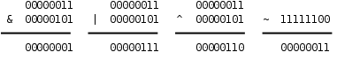
注意，&、|、^ 运算符都是要做 Usual Arithmetic Conversion 的（其中有一步是 Integer Promotion），~ 运算符也要做 Integer Promotion，所以在 C 语言中其实并不存在 8 位整数的位运算，操作数在做位运算之前都至少被提升为 int 型了，上面用 8 位整数举例只是为了书写方便。比如：
unsigned char c = 0xfc;
unsigned int i = ~c;
计算过程是这样的：常量 0xfc 是 int 型的，赋给 c 要转成 unsigned char，值不变；c 的十六进制表示是 fc，计算 ~c 时先提升为整型（000000fc）然后取反，最后结果是 ffffff03。注意，如果把 ~c 看成是 8 位整数的取反，最后结果就得 3 了，这就错了。为了避免出错，一是尽量避免不同类型之间的赋值，二是每一步计算都要按上一章讲的类型转换规则仔细检查。
1.2. 移位运算
移位运算符（Bitwise Shift）包括左移 << 和右移 >>。左移将一个整数的各二进制位全部左移若干位，例如 0xcfffffff3<<2 得到 0x3fffffcc：
图 16.2. 左移运算

最高两位的 11 被移出去了，最低两位又补了两个 0，其它位依次左移两位。但要注意，移动的位数必须小于左操作数的总位数，比如上面的例子，左边是 unsigned int 型，如果左移的位数大于等于 32 位，则结果是 Undefined。移位运算符不同于 + - * / == 等运算符，两边操作数的类型不要求一致，但两边操作数都要做 Integer Promotion，整个表达式的类型和左操作数提升后的类型相同。
复习一下第 14 章「计算机中数的表示」第 2 节「不同进制之间的换算」讲过的知识可以得出结论，在一定的取值范围内，将一个整数左移 1 位相当于乘以 2。比如二进制 11（十进制 3）左移一位变成 110，就是 6，再左移一位变成 1100，就是 12。读者可以自己验证这条规律对有符号数和无符号数都成立，对负数也成立。当然，如果左移改变了最高位（符号位），那么结果肯定不是乘以 2 了，所以我加了个前提「在一定的取值范围内」。由于计算机做移位比做乘法快得多，编译器可以利用这一点做优化，比如看到源代码中有 i * 8，可以编译成移位指令而不是乘法指令。
当操作数是无符号数时，右移运算的规则和左移类似，例如 0xcfffffff3>>2 得到 0x33fffffc：
图 16.3. 右移运算

最低两位的 11 被移出去了，最高两位又补了两个 0，其它位依次右移两位。和左移类似，移动的位数也必须小于左操作数的总位数，否则结果是 Undefined。在一定的取值范围内，将一个整数右移 1 位相当于除以 2，小数部分截掉。
当操作数是有符号数时，右移运算的规则比较复杂：
- 如果是正数，那么高位移入 0
- 如果是负数，那么高位移入 1 还是 0 不一定，这是 Implementation-defined 的。对于 x86 平台的
gcc编译器，最高位移入 1，也就是仍保持负数的符号位，这种处理方式对负数仍然保持了「右移 1 位相当于除以 2」的性质。
综上所述，由于类型转换和移位等问题，用有符号数做位运算是很不方便的，所以，建议只对无符号数做位运算，以减少出错的可能。
习题
-
下面两行
printf打印的结果有何不同？请读者比较分析一下。%x转换说明的含义详见第 25 章「C 标准库」第 2.9 节「格式化 I/O 函数」。int i = 0xcffffff3; printf("%x\n", 0xcffffff3>>2); printf("%x\n", i>>2);
1.3. 掩码
如果要对一个整数中的某些位进行操作，怎样表示这些位在整数中的位置呢？可以用掩码（Mask）来表示。比如掩码 0x0000ff00 表示对一个 32 位整数的 8 ~ 15 位进行操作，举例如下。
-
取出 8 ~ 15 位。
unsigned int a, b, mask = 0x0000ff00; a = 0x12345678; b = (a & mask) >> 8; /* 0x00000056 */这样也可以达到同样的效果：
b = (a >> 8) & ~(~0U << 8); -
将 8 ~ 15 位清 0。
unsigned int a, b, mask = 0x0000ff00; a = 0x12345678; b = a & ~mask; /* 0x12340078 */ -
将 8 ~ 15 位置 1。
unsigned int a, b, mask = 0x0000ff00; a = 0x12345678; b = a | mask; /* 0x1234ff78 */
习题
- 统计一个无符号整数的二进制表示中 1 的个数，函数原型是
int countbit(unsigned int x);。 - 用位操作实现无符号整数的乘法运算，函数原型是
unsigned int multiply(unsigned int x, unsigned int y);。例如：(11011)2×(10010)2=((11011)2<<1)+((11011)2<<4)。 - 对一个 32 位无符号整数做循环右移，函数原型是
unsigned int rotate_right(unsigned int x);。所谓循环右移就是把低位移出去的部分再补到高位上去，例如rotate_right(0xdeadbeef, 16)的值应该是0xefdeadbe。
1.4. 异或运算的一些特性
-
一个数和自己做异或的结果是 0。如果需要一个常数 0，x86 平台的编译器可能会生成这样的指令：
xorl %eax, %eax。不管eax寄存器里的值原来是多少，做异或运算都能得到 0，这条指令比同样效果的movl $0, %eax指令快，因为前者只需要在 CPU 内部计算，而后者需要访问内存，在下一章第 5 节「Memory Hierarchy」详细介绍。 -
从异或的真值表可以看出，不管是 0 还是 1，和 0 做异或保持原值不变，和 1 做异或得到原值的相反值。可以利用这个特性配合掩码实现某些位的翻转，例如：
unsigned int a, b, mask = 1U << 6; a = 0x12345678; b = a ^ mask; /* flip the 6th bit */ -
如果 a1 ^ a2 ^ a3 ^ ... ^ an 的结果是 1，则表示 a1、a2、a3...an 之中 1 的个数为奇数个，否则为偶数个。这条性质可用于奇偶校验（Parity Check），比如在串口通信过程中，每个字节的数据都计算一个校验位，数据和校验位一起发送出去，这样接收方可以根据校验位粗略地判断接收到的数据是否有误。
-
x ^ x ^ y == y，因为 x ^ x == 0，0 ^ y == y。这个性质有什么用呢？我们来看这样一个问题：交换两个变量的值，不得借助额外的存储空间，所以就不能采用
temp = a; a = b; b = temp;的办法了。利用位运算可以这样做交换：a = a ^ b; b = b ^ a; a = a ^ b;
分析一下这个过程。为了避免混淆，把 a 和 b 的初值分别记为 a0 和 b0。第一行，a = a<sub>0</sub> ^ b<sub>0</sub>；第二行，把 a 的新值代入，得到 b = b<sub>0</sub> ^ a<sub>0</sub> ^ b<sub>0</sub>，等号右边的 b0 相当于上面公式中的 x，a0 相当于 y，所以结果为 a0；第三行，把 a 和 b 的新值代入，得到 a = a<sub>0</sub> ^ b<sub>0</sub> ^ a<sub>0</sub>，结果为 b0。注意这个过程不能把同一个变量自己跟自己交换，而利用中间变量 temp 则可以交换。
习题
- 请在网上查找有关 RAID（Redundant Array of Independent Disks，独立磁盘冗余阵列）的资料，理解其实现原理，其实就是利用了本节的性质 3 和 4。
- 交换两个变量的值，不得借助额外的存储空间，除了本节讲的方法之外你还能想出什么方法？本节讲的方法不能把同一个变量自己跟自己交换，你的方法有没有什么局限性？
2. 其它运算符
2.1. 复合赋值运算符
复合赋值运算符（Compound Assignment Operator）包括 *= /= %= += -= <<= >>= &= ^= |=，一边做运算一边赋值。例如 a += 1 相当于 a = a + 1。但有一点细微的差别，前者对表达式 a 只求值一次，而后者求值两次，如果 a 是一个复杂的表达式，求值一次和求值两次的效率是不同的，例如 a[i+j] += 1 和 a[i+j] = a[i+j] + 1。那么仅仅是效率上的差别吗？对于没有 Side Effect 的表达式，求值一次和求值两次的结果是一样的，但对于有 Side Effect 的表达式则不一定，例如 a[foo()] += 1 和 a[foo()] = a[foo()] + 1，如果 foo() 函数调用有 Side Effect，比如会打印一条消息，那么前者只打印一次，而后者打印两次。
在第 6 章第 3 节「for 语句」讲自增、自减运算符时说 ++i 相当于 i = i + 1，其实更准确地说应该是等价于 i += 1，表达式 i 只求值一次，而 --i 等价于 i -= 1。
2.2. 条件运算符
条件运算符（Conditional Operator）是 C 语言中唯一一个三目运算符（Ternary Operator），带三个操作数，它的形式是 表达式1 ? 表达式2 : 表达式3，这个运算符所组成的整个表达式的值等于 表达式2 或 表达式3 的值，取决于 表达式1 的值是否为真，可以把它想像成这样的函数：
if (表达式1)
return 表达式2;
else
return 表达式3;
表达式1 相当于 if 语句的控制表达式，因此它的值必须是标量类型，而 表达式2和 表达式3 相当于同一个函数在不同情况下的返回值，因此它们的类型要求一致，也要做 Usual Arithmetic Conversion。
下面举个例子，定义一个函数求两个参数中较大的一个。
int max(int a, int b)
{
return (a > b) ? a : b;
}
2.3. 逗号运算符
逗号运算符（Comma Operator）也是一种双目运算符，它的形式是 表达式1, 表达式2，两个表达式不要求类型一致，左边的 表达式1 先求值，求完了直接把值丢掉，再求右边 表达式2 的值作为整个表达式的值。逗号运算符是左结合的，类似于 + - * / 运算符，根据组合规则可以写出 表达式1, 表达式2, 表达式3, ..., 表达式n 这种形式，表达式1, 表达式2 可以看作一个子表达式，先求 表达式1 的值，然后求 表达式2 的值作为这个子表达式的值，然后这个值再和 表达式3 组成一个更大的表达式，求 表达式3 的值作为这个更大的表达式的值，依此类推，整个计算过程就是从左到右依次求值，最后一个表达式的值成为整个表达式的值。
注意，函数调用时各实参之间也是用逗号隔开，这种逗号是分隔符而不是逗号运算符。但可以这样使用逗号运算符：
f(a, (t=3, t+2), c)
传给函数 f 的参数有三个，其中第二个参数的值是表达式 t+2 的值。
2.4. sizeof 运算符与 typedef 类型声明
sizeof 是一个很特殊的运算符，它有两种形式：sizeof 表达式 和 sizeof(类型名)。这个运算符很特殊，sizeof 表达式 中的子表达式并不求值，而只是根据类型转换规则求得子表达式的类型，然后把这种类型所占的字节数作为整个表达式的值。有些人喜欢写成 sizeof(表达式) 的形式也可以，这里的括号和 return(1); 的括号一样，不起任何作用。但另外一种形式 sizeof(类型名) 的括号则是必须写的，整个表达式的值也是这种类型所占的字节数。
比如用 sizeof 运算符求一个数组的长度：
int a[12];
printf("%d\n", sizeof a/sizeof a[0]);
在上面这个例子中，由于 sizeof 表达式 中的子表达式不需要求值，所以不需要到运行时才计算，事实上在编译时就知道 sizeof a 的值是 48，sizeof a[0] 的值是 4，所以在编译时就已经把 sizeof a/sizeof a[0] 替换成常量 12 了，这是一个常量表达式。
sizeof 运算符的结果是 size_t 类型的，这个类型定义在 stddef.h 头文件中，不过你的代码中只要不出现 size_t 这个类型名就不用包含这个头文件，比如像上面的例子就不用包含这个头文件。C 标准规定 size_t 是一种无符号整型，编译器可以用 typedef 做一个类型声明：
typedef unsigned long size_t;
那么 size_t 就代表 unsigned long 型。不同平台的编译器可能会根据自己平台的具体情况定义 size_t 所代表的类型，比如有的平台定义为 unsigned long 型，有的平台定义为 unsigned long long 型，C 标准规定 size_t 这个名字就是为了隐藏这些细节，使代码具有可移植性。所以注意不要把 size_t 类型和它所代表的真实类型混用，例如：
unsigned long x;
size_t y;
x = y;
如果在一种 ILP32 平台上定义 size_t 代表 unsigned long long 型，这段代码把 y 赋给 x 时就把高位截掉了，结果可能是错的。
typedef 这个关键字用于给某种类型起个新名字，比如上面的 typedef 声明可以这么看：去掉 typedef 就成了一个变量声明 unsigned long size_t;，size_t 是一个变量名，类型是 unsigned long，那么加上 typedef 之后，size_t 就是一个类型名，就代表 unsigned long 类型。再举个例子：
typedef char array_t[10];
array_t a;
这相当于声明 char a[10];。类型名也遵循标识符的命名规则，并且通常加个 _t 后缀表示 Type。
3. Side Effect 与 Sequence Point
如果你只想规规矩矩地写代码，那么基本用不着看这一节。本节的内容基本上是钻牛角尖儿的，除了 Short-circuit 比较实用，其它写法都应该避免使用。但没办法，有时候不是你想钻牛角尖儿，而是有人逼你去钻牛角尖儿。这是我们的学员在找工作笔试时碰到的问题：
int a=0;
a = (++a)+(++a)+(++a)+(++a);
据我了解，似乎很多公司都有出这种笔试题的恶趣味。答案应该是 Undefined，我甚至有些怀疑出题人是否真的知道答案。下面我来解释为什么是 Undefined。
我们知道，调用一个函数可能产生 Side Effect，使用某些运算符（++ -- = 复合赋值）也会产生 Side Effect，如果一个表达式中隐含着多个 Side Effect，究竟哪个先发生哪个后发生呢？C 标准规定代码中的某些点是 Sequence Point，当执行到一个 Sequence Point 时，在此之前的 Side Effect 必须全部作用完毕，在此之后的 Side Effect 必须一个都没发生。至于两个 Sequence Point 之间的多个 Side Effect 哪个先发生哪个后发生则没有规定，编译器可以任意选择各 Side Effect 的作用顺序。下面详细解释各种 Sequence Point。
-
调用一个函数时，在所有准备工作做完之后、函数调用开始之前是 Sequence Point。比如调用
foo(f(), g())时，foo、f()、g()这三个表达式哪个先求值哪个后求值是 Unspecified，但是必须都求值完了才能做最后的函数调用，所以f()和g()的 Side Effect 按什么顺序发生不一定，但必定在这些 Side Effect 全部作用完之后才开始调用foo函数。 -
条件运算符
?:、逗号运算符、逻辑与&&、逻辑或||的第一个操作数求值之后是 Sequence Point。我们刚讲过条件运算符和逗号运算符，条件运算符要根据表达式1的值是否为真决定下一步求表达式2还是表达式3的值，如果决定求表达式2的值，表达式3就不会被求值了，反之也一样，,运算符也是这样，表达式1求值结束才继续求表达式2的值。
逻辑与和逻辑或早在第 4 章「分支语句」第 3 节「布尔代数」就讲了，但在初学阶段我一直回避它们的操作数求值顺序问题。这两个运算符和条件运算符类似，先求左操作数的值，然后根据这个值是否为真，右操作数可能被求值，也可能不被求值。比如第 8 章例 8.5 「剪刀石头布」这个程序中的这几句：ret = scanf("%d", &man); if (ret != 1 || man < 0 || man > 2) { printf("Invalid input! Please input 0, 1 or 2.\n"); continue; }其实可以写得更简单（类似于 K&R 的简洁风格）：
if (scanf("%d", &man) != 1 || man < 0 || man > 2) { printf("Invalid input! Please input 0, 1 or 2.\n"); continue; }这个控制表达式的求值顺序是：先求
scanf("%d", &man) = 1的值，如果scanf调用失败，则返回值不等于 1 成立，||运算有一个操作数为真则整个表达式为真，这时直接执行下一句printf，根本不会再去求man < 0或man > 2的值；如果scanf调用成功，则读入的数保存在变量man中，并且返回值等于 1，那么说它不等于 1 就不成立了，第一个||运算的左操作数为假，就会去求右操作数man < 0的值作为整个表达式的值，这时变量man的值正是scanf读上来的值，我们判断它是否在 [0, 2] 之间，如果man < 0不成立，则整个表达式scanf("%d", &man) != 1 || man < 0的值为假，也就是第二个||运算的左操作数为假，所以最后求右操作数man > 2的值作为整个表达式的值。&&运算与此类似，a && b的计算过程是：首先求表达式a的值，如果a的值是假则整个表达式的值是假，不会再去求b的值；如果a的值是真，则下一步求b的值作为整个表达式的值。所以，a && b相当于 「if a then b」，而a || b相当于「if not a then b」。这种特性称为 Short-circuit，很多人喜欢利用 Short-circuit 特性简化代码。 -
在一个完整的声明末尾是 Sequence Point，所谓完整的声明是指这个声明不是另外一个声明的一部分。比如声明
int a[10], b[20];，在a[10]末尾是 Sequence Point，在b[20]末尾也是。 -
在一个完整的表达式末尾是 Sequence Point，所谓完整的表达式是指这个表达式不是另外一个表达式的一部分。所以如果有
f(); g();这样两条语句，f()和g()是两个完整的表达式，f()的 Side Effect 必定在g()之前发生。 -
在库函数即将返回时是 Sequence Point。这条规则似乎可以包含在上一条规则里面，因为函数返回时必然会结束掉一个完整的表达式。而事实上很多库函数是以宏定义的形式实现的（第 21 章第 2.1 节「函数式宏定义」），并不是真正的函数，所以才需要有这条规则。 还有两种 Sequence Point 和某些 C 标准库函数的执行过程相关，此处从略，有兴趣的读者可参考 C99的 Annex C。
现在可以分析一下本节开头的例子了。a = (++a)+(++a)+(++a)+(++a); 的结果之所以是 Undefined，因为在这个表达式中有五个 Side Effect 都在改变 a 的值，这些 Side Effect 按什么顺序发生不一定，只知道在整个表达式求值结束时一定都发生了。比如现在求第二个 ++a 的值，这时第一个、第三个、第四个 ++a 的 Side Effect 发生了没有，a 的值被加过几次了，这些都不确定，所以第二个 ++a 的值也不确定。这行代码用不同平台的不同编译器来编译结果是不同的，甚至在同一平台上用同一编译器的不同版本来编译也可能不同。
写表达式应遵循的原则一： * 在两个 Sequence Point 之间，同一个变量的值只允许被改变一次 *。仅有这一条原则还不够，例如 a[i++] = i; 的变量 i 只改变了一次，但结果仍是 Undefined，因为等号左边改 i 的值，等号右边读 i 的值，到底是先改还是先读？这个读写顺序是不确定的。但为什么 i = i + 1; 就没有歧义呢？虽然也是等号左边改 i 的值，等号右边读 i 的值，但你不读出 i 的值就没法计算 i + 1，那拿什么去改 i 的值呢？所以这个读写顺序是确定的。写表达式应遵循的原则二：* 如果在两个 Sequence Point 之间既要读一个变量的值又要改它的值，只有在读写顺序确定的情况下才可以这么写 *。
4. 运算符总结
到此为止，除了和指针相关的运算符还没讲之外，其它运算符都讲过了，是时候做一个总结了。
运算符 + - * / % > < >= <= == != & | ^ 以及各种复合赋值运算符要求两边的操作数类型一致，条件运算符 ?: 要求后两个操作数类型一致，这些运算符在计算之前都需要做 Usual Arithmetic Conversion。
下面按优先级从高到低的顺序总结一下 C 语言的运算符，每一条所列的各运算符具有相同的优先级，对于同一优先级的多个运算符按什么顺序计算也有说明，双目运算符就简单地用「左结合」或「右结合」来说明了。和指针有关的运算符 * & -> 也在这里列出来了，到第 23 章「指针」再详细解释。
- 标识符、常量、字符串和用
()括号套起来的表达式是组成表达式的最基本单元，在运算中做操作数，优先级最高。 - 后缀运算符，包括数组取下标
[]、函数调用()、结构体取成员.、指向结构体的指针取成员->、后缀自增++、后缀自减--。如果一个操作数后面有多个后缀，按照离操作数从近到远的顺序（也就是从左到右）依次计算，比如a.name++，先算a.name，再++，这里的.name应该看成a的一个后缀，而不是把.看成双目运算符。 - 单目运算符，包括前缀自增
++、前缀自减--、sizeof、类型转换()、取地址运算&、指针间接寻址*、正号+、负号-、按位取反~、逻辑非!。如果一个操作数前面有多个前缀，按照离操作数从近到远的顺序（也就是从右到左）依次计算，比如!~a，先算~a，再求!。 - 乘
*、除/、模%运算符。这三个运算符是左结合的。 - 加
+、减-运算符。左结合。 - 移位运算符
<<和>>。左结合。 - 关系运算符
< > <= >=。左结合。 - 相等性运算符
==和!=。左结合。 - 按位与
&。左结合。 - 按位异或
^。左结合。 - 按位或
|。左结合。 - 逻辑与
&&。左结合。 - 逻辑或
||。左结合。 - 条件运算符
:?。在第 4 章「分支语句」第 2 节「if/else语句」讲过 Dangling-else 问题，条件运算符也有类似的问题。例如a ? b : c ? d : e是看成(a ? b : c) ? d : e还是a ? b : (c ? d : e)呢？C 语言规定是后者。 - 赋值=和各种复合赋值（
*=/=%=+=-=<<=>>=&=^=|=）。在双目运算符中只有赋值和复合赋值是右结合的。 - 逗号运算符。左结合。
K&R 第 2 章也有这样一个列表，但是对于结合性解释得不够清楚。左结合和右结合这两个概念只对双目运算符有意义，对于前缀、后缀和三目运算符我单独做了说明。C 语言表达式的详细语法规则可以参考 C99 的 Annex A.2，其实语法规则并不是用优先级和结合性这两个概念来表述的，有一些细节用优先级和结合性是表达不了的，只有看 C99 才能了解完整的语法规则。
习题
-
以下代码得到的
sum是0xffff，对吗？int i = 0; unsigned int sum = 0; for (; i < 16; i++) sum = sum + 1U<<i;
第 17 章 计算机体系结构基础
现代计算机都是基于 Von Neumann 体系结构的，不管是嵌入式系统、PC 还是服务器。这种体系结构的主要特点是：CPU（CPU，Central Processing Unit，中央处理器，或简称处理器 Processor）和内存（Memory）是计算机的两个主要组成部分，内存中保存着数据和指令，CPU 从内存中取指令（Fetch）执行，其中有些指令让 CPU 做运算，有些指令让 CPU 读写内存中的数据。本章简要介绍组成计算机的 CPU、内存和设备以及它们之间的关系，为后续章节的学习打下基础。
1. 内存与地址
图 17.1. 邮箱的地址

我们都见过像这样挂在墙上的很多个邮箱，每个邮箱有一个房间编号，根据房间编号找到相应的邮箱投入信件或取出信件。内存与此类似，每个内存单元有一个地址（Address），内存地址是从 0 开始编号的整数，CPU 通过地址找到相应的内存单元，取其中的指令或者读写其中的数据。与邮箱不同的是，一个地址所对应的内存单元不能存很多东西，只能存一个字节，以前讲过的 int、float 等多字节的数据类型保存在内存中要占用连续的多个地址，这种情况下数据的地址是它所占内存单元的起始地址。
2. CPU
CPU 总是周而复始地做同一件事：从内存取指令，然后解释执行它，然后再取下一条指令，再解释执行。CPU最核心的功能单元包括：
- 寄存器（Register），是 CPU 内部的高速存储器，像内存一样可以存取数据，但比访问内存快得多。随后的几章我们会详细介绍 x86 的寄存器
eax、esp、eip等等，有些寄存器只能用于某种特定的用途，比如eip用作程序计数器，这称为特殊寄存器（Special-purpose Register），而另外一些寄存器可以用在各种运算和读写内存的指令中，比如eax寄存器，这称为通用寄存器（General-purpose Register）。 - 程序计数器（PC，Program Counter），是一种特殊寄存器，保存着 CPU 取下一条指令的地址，CPU 按程序计数器保存的地址去内存中取指令然后解释执行，这时程序计数器保存的地址会自动加上该指令的长度，指向内存中的下一条指令。
- 指令译码器（Instruction Decoder）。CPU 取上来的指令由若干个字节组成，这些字节中有些位表示内存地址，有些位表示寄存器编号，有些位表示这种指令做什么操作，是加减乘除还是读写内存，指令译码器负责解释这条指令的含义，然后调动相应的执行单元去执行它。
- 算术逻辑单元（ALU，Arithmetic and Logic Unit）。如果译码器将一条指令解释为运算指令，就调动算术逻辑单元去做运算，比如加减乘除、位运算、逻辑运算。指令中会指示运算结果保存到哪里，可能保存到寄存器中，也可能保存到内存中。
- 地址和数据总线（Bus）。CPU 和内存之间用地址总线、数据总线和控制线连接起来，每条线上有 1 和 0 两种状态。如果在执行指令过程中需要访问内存，比如从内存读一个数到寄存器，执行过程可以想像成这样：
图 17.2. 访问内存读数据的过程

- CPU 内部将寄存器对接到数据总线上，使寄存器的每一位对接到一条数据线，等待接收数据。
- CPU 通过控制线发一个读请求，并且将内存地址通过地址线发给内存。
- 内存收到地址和读请求之后，将相应的内存单元对接到数据总线的另一端，这样，内存单元每一位的 1 或 0 状态通过一条数据线到达 CPU 寄存器中相应的位，就完成了数据传送。
往内存里写数据的过程与此类似，只是数据线上的传输方向相反。
上图中画了 32 条地址线和 32 条数据线，CPU 寄存器也是 32 位，可以说这种体系结构是 32 位的，比如 x86 就是这样的体系结构，目前主流的处理器是 32 位或 64 位的。地址线、数据线和 CPU 寄存器的位数通常是一致的，从上图可以看出数据线和 CPU 寄存器的位数应该一致，另外有些寄存器（比如程序计数器）需要保存一个内存地址，因而地址线和 CPU 寄存器的位数也应该一致。处理器的位数也称为字长，字（Word）这个概念用得比较混乱，在有些上下文中指 16 位，在有些上下文中指 32 位（这种情况下 16 位被称为半字 Half Word），在有些上下文中指处理器的字长，如果处理器是 32 位那么一个字就是 32 位，如果处理器是 64 位那么一个字就是 64 位。32 位计算机有 32 条地址线，地址空间（Address Space）从 0x00000000 到 0xffffffff，共 4GB，而 64 位计算机有更大的地址空间。
最后还要说明一点，本节所说的地址线、数据线是指 CPU 的内总线，是直接和 CPU 的执行单元相连的，内总线经过 MMU 和总线接口的转换之后引出到芯片引脚才是外总线，外地址线和外数据线的位数都有可能和内总线不同，例如 32 位处理器的外地址总线可寻址的空间可以大于 4GB，到本章第 4 节「MMU」再详细解释。
我们结合第 1 章「程序的基本概念」表 1.1 「一个语句的三种表示」看一下 CPU 取指执行的过程。
图 17.3. CPU 的取指执行过程

eip寄存器指向地址0x80483a2，CPU 从这里开始取一条 5 个字节的指令，然后eip寄存器指向下一条指令的起始地址0x80483a7。- CPU 对这 5 个字节译码，得知这条指令要求从地址
0x804a01c开始取 4 个字节保存到eax寄存器。 - 执行指令，读内存，取上来的数是
3，保存到eax寄存器。注意，地址0x804a01c~0x804a01f里存储的四个字节不能按地址从低到高的顺序看成0x03000000，而要按地址从高到低的顺序看成0x00000003。也就是说，对于多字节的整数类型，低地址保存的是整数的低位，这称为小端（Little Endian）字节序（Byte Order）。x86 平台是小端字节序的，而另外一些平台规定低地址保存整数的高位，称为大端（Big Endian）字节序。 - CPU 从
eip寄存器指向的地址取一条 3 个字节的指令，然后eip寄存器指向下一条指令的起始地址0x80483aa。 - CPU 对这 3 个字节译码，得知这条指令要求把
eax寄存器的值加 1，结果仍保存到eax寄存器。 - 执行指令，现在
eax寄存器中的数是 4。 - CPU 从
eip寄存器指向的地址取一条 5 个字节的指令，然后eip寄存器指向下一条指令的起始地址0x80483af。 - CPU 对这 5 个字节译码，得知这条指令要求把
eax寄存器的值保存到从地址0x804a018开始的 4 个字节。 - 执行指令，把 4 这个值保存到从地址
0x804a018开始的 4 个字节（按小端字节序保存）。
3. 设备
CPU 执行指令除了访问内存之外还要访问很多设备（Device），如键盘、鼠标、硬盘、显示器等，那么它们和 CPU 之间如何连接呢？如下图所示。
图 17.4. 设备

有些设备像内存芯片一样连接到处理器的地址总线和数据总线，正因为地址线和数据线上可以挂多个设备和内存芯片所以才叫「总线」，但不同的设备和内存芯片应该占不同的地址范围。访问这种设备就像访问内存一样，按地址读写即可，但和访问内存不同的是，往一个地址写数据只是给设备发一个命令，数据不一定要保存，而从一个地址读数据也不一定是读先前保存在这个地址的数据，而是得到设备的当前状态。设备中可供读写访问的单元通常称为设备寄存器（注意和 CPU 寄存器不是一回事），操作设备的过程就是读写这些设备寄存器的过程，比如向串口发送寄存器里写数据，串口设备就会把数据发送出去，读串口接收寄存器的值，就可以读取串口设备接收到的数据。
还有一些设备集成在处理器芯片中。在上图中，从 CPU 核引出的地址和数据总线有一端经总线接口引出到芯片引脚上了，还有一端没有引出，而是接到芯片内部集成的设备上，无论是在 CPU 外部接总线的设备还是在 CPU 内部接总线的设备都有各自的地址范围，都可以像访问内存一样访问，很多体系结构（比如 ARM）采用这种方式操作设备，称为内存映射 I/O（Memory-mapped I/O）。但是 x86 比较特殊，x86 对于设备有独立的端口地址空间，CPU 核需要引出额外的地址线来连接片内设备（和访问内存所用的地址线不同），访问设备寄存器时用特殊的 in / out 指令，而不是和访问内存用同样的指令，这种方式称为端口 I/O（Port I/O）。
从 CPU 的角度来看，访问设备只有内存映射 I/O 和端口 I/O 两种，要么像内存一样访问，要么用一种专用的指令访问。其实访问设备是相当复杂的，计算机的设备五花八门，各种设备的性能要求都不一样，有的要求带宽大，有的要求响应快，有的要求热插拔，于是出现了各种适应不同要求的设备总线，比如 PCI、AGP、USB、1394、SATA 等等，这些设备总线并不直接和 CPU 相连，CPU 通过内存映射 I/O 或端口 I/O 访问相应的总线控制器，通过总线控制器再去访问挂在总线上的设备。所以上图中标有「设备」的框可能是实际的设备，也可能是设备总线的控制器。
在 x86 平台上，硬盘是挂在 IDE、SATA 或 SCSI 总线上的设备，保存在硬盘上的程序是不能被 CPU 直接取指令执行的，操作系统在执行程序时会把它从硬盘拷贝到内存，这样 CPU 才能取指令执行，这个过程称为加载（Load）。程序加载到内存之后，成为操作系统调度执行的一个任务，就称为进程（Process）。进程和程序不是一一对应的。一个程序可以多次加载到内存，成为同时运行的多个进程，例如可以同时开多个终端窗口，每个窗口都运行一个 Shell 进程，而它们对应的程序都是磁盘上的 /bin/bash 文件。
操作系统（Operating System）本身也是一段保存在磁盘上的程序，计算机在启动时执行一段固定的启动代码（称为 Bootloader）首先把操作系统从磁盘加载到内存，然后执行操作系统中的代码把用户需要的其它程序加载到内存。操作系统和其它用户程序的不同之处在于：操作系统是常驻内存的，而其它用户程序则不一定，用户需要运行哪个程序，操作系统就把它加载到内存，用户不需要哪个程序，操作系统就把它终止掉，释放它所占的内存。操作系统最核心的功能是管理进程调度、管理内存的分配使用和管理各种设备，做这些工作的程序称为内核（Kernel），在我的系统上内核程序是 /boot/vmlinuz-2.6.28-13-generic 文件，它在计算机启动时加载到内存并常驻内存。广义上操作系统的概念还包括一些必不可少的用户程序，比如 Shell 是每个 Linux 系统必不可少的，而 Office 办公套件则是可有可无的，所以前者也属于广义上操作系统的范畴，而后者属于应用软件。
访问设备还有一点和访问内存不同。内存只是保存数据而不会产生新的数据，如果 CPU 不去读它，它也不需要主动提供数据给 CPU，所以内存总是被动地等待被读或者被写。而设备往往会自己产生数据，并且需要主动通知 CPU 来读这些数据，例如敲键盘产生一个输入字符，用户希望计算机马上响应自己的输入，这就要求键盘设备主动通知 CPU 来读这个字符并做相应处理，给用户响应。这是由中断（Interrupt）机制实现的，每个设备都有一条中断线，通过中断控制器连接到 CPU，当设备需要主动通知 CPU 时就引发一个中断信号，CPU 正在执行的指令将被打断，程序计数器会指向某个固定的地址（这个地址由体系结构定义），于是 CPU 从这个地址开始取指令（或者说跳转到这个地址），执行中断服务程序（ISR，Interrupt Service Routine），完成中断处理之后再返回先前被打断的地方执行后续指令。比如某种体系结构规定发生中断时跳转到地址 0x00000010 执行，那么就要事先把一段 ISR 程序加载到这个地址，ISR 程序是内核代码的一部分，在这段代码中首先判断是哪个设备引发了中断，然后调用该设备的中断处理函数做进一步处理。
由于各种设备的操作方法各不相同，每种设备都需要专门的设备驱动程序（Device Driver），一个操作系统为了支持广泛的设备就需要有大量的设备驱动程序，事实上 Linux 内核源代码中绝大部分是设备驱动程序。设备驱动程序通常是内核里的一组函数，通过读写设备寄存器实现对设备的初始化、读、写等操作，有些设备还要提供一个中断处理函数供 ISR 调用。
4. MMU
现代操作系统普遍采用虚拟内存管理（Virtual Memory Management）机制，这需要处理器中的MMU（Memory Management Unit，内存管理单元）提供支持，本节简要介绍 MMU 的作用。
首先引入两个概念，虚拟地址和物理地址。如果处理器没有 MMU，或者有 MMU 但没有启用，CPU 执行单元发出的内存地址将直接传到芯片引脚上，被内存芯片（以下称为物理内存，以便与虚拟内存区分）接收，这称为物理地址（Physical Address，以下简称 PA），如下图所示。
图 17.5. 物理地址

如果处理器启用了 MMU，CPU 执行单元发出的内存地址将被 MMU 截获，从 CPU 到 MMU 的地址称为虚拟地址（Virtual Address，以下简称 VA），而 MMU 将这个地址翻译成另一个地址发到 CPU 芯片的外部地址引脚上，也就是将 VA 映射成 PA，如下图所示。
图 17.6. 虚拟地址
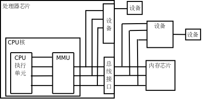
如果是 32 位处理器，则内地址总线是 32 位的，与 CPU 执行单元相连（图中只是示意性地画了 4 条地址线），而经过 MMU 转换之后的外地址总线则不一定是 32 位的。也就是说，虚拟地址空间和物理地址空间是独立的，32 位处理器的虚拟地址空间是 4GB，而物理地址空间既可以大于也可以小于 4GB。
MMU 将 VA 映射到 PA 是以页（Page）为单位的，32 位处理器的页尺寸通常是 4KB。例如，MMU 可以通过一个映射项将 VA 的一页 0xb7001000 ~ 0xb7001fff 映射到 PA 的一页 0x2000 ~ 0x2fff，如果 CPU 执行单元要访问虚拟地址 0xb7001008，则实际访问到的物理地址是 0x2008。物理内存中的页称为物理页面或者页帧（Page Frame）。虚拟内存的哪个页面映射到物理内存的哪个页帧是通过页表（Page Table）来描述的，页表保存在物理内存中，MMU 会查找页表来确定一个VA应该映射到什么 PA。
操作系统和MMU是这样配合的：
- 操作系统在初始化或分配、释放内存时会执行一些指令在物理内存中填写页表，然后用指令设置 MMU，告诉 MMU 页表在物理内存中的什么位置。
- 设置好之后，CPU 每次执行访问内存的指令都会自动引发 MMU 做查表和地址转换操作，地址转换操作由硬件自动完成，不需要用指令控制 MMU 去做。
我们在程序中使用的变量和函数都有各自的地址，程序被编译后，这些地址就成了指令中的地址，指令中的地址被 CPU 解释执行，就成了 CPU 执行单元发出的内存地址，所以在启用 MMU 的情况下，程序中使用的地址都是虚拟地址，都会引发 MMU 做查表和地址转换操作。那为什么要设计这么复杂的内存管理机制呢？多了一层 VA 到 PA 的转换到底换来了什么好处？All problems in computer science can be solved by another level of indirection. 还记得这句话吗？多了一层间接必然是为了解决什么问题的，等讲完了必要的预备知识之后，将在第 20 章第 5 节「虚拟内存管理」讨论虚拟内存管理机制的作用。
MMU 除了做地址转换之外，还提供内存保护机制。各种体系结构都有用户模式（User Mode）和特权模式（Privileged Mode）之分，操作系统可以在页表中设置每个内存页面的访问权限，有些页面不允许访问，有些页面只有在 CPU 处于特权模式时才允许访问，有些页面在用户模式和特权模式都可以访问，访问权限又分为可读、可写和可执行三种。这样设定好之后，当 CPU 要访问一个 VA 时，MMU 会检查 CPU 当前处于用户模式还是特权模式，访问内存的目的是读数据、写数据还是取指令，如果和操作系统设定的页面权限相符，就允许访问，把它转换成 PA，否则不允许访问，产生一个异常（Exception）。异常的处理过程和中断类似，不同的是中断由外部设备产生而异常由 CPU内部产生，中断产生的原因和 CPU 当前执行的指令无关，而异常的产生就是由于 CPU 当前执行的指令出了问题，例如访问内存的指令被 MMU 检查出权限错误，除法指令的除数为 0 等都会产生异常。
图 17.7. 处理器模式

通常操作系统把虚拟地址空间划分为用户空间和内核空间，例如 x86 平台的 Linux 系统虚拟地址空间是 0x00000000 ~ 0xffffffff，前 3GB（0x00000000 ~ 0xbfffffff）是用户空间，后 1GB（0xc0000000 ~ 0xffffffff）是内核空间。用户程序加载到用户空间，在用户模式下执行，不能访问内核中的数据，也不能跳转到内核代码中执行。这样可以保护内核，如果一个进程访问了非法地址，顶多这一个进程崩溃，而不会影响到内核和整个系统的稳定性。CPU 在产生中断或异常时不仅会跳转到中断或异常服务程序，还会自动切换模式，从用户模式切换到特权模式，因此从中断或异常服务程序可以跳转到内核代码中执行。事实上，整个内核就是由各种中断和异常处理程序组成的。总结一下：在正常情况下处理器在用户模式执行用户程序，在中断或异常情况下处理器切换到特权模式执行内核程序，处理完中断或异常之后再返回用户模式继续执行用户程序。
段错误我们已经遇到过很多次了，它是这样产生的：
- 用户程序要访问的一个 VA，经 MMU 检查无权访问。
- MMU 产生一个异常，CPU 从用户模式切换到特权模式，跳转到内核代码中执行异常服务程序。
- 内核把这个异常解释为段错误，把引发异常的进程终止掉。
5. Memory Hierarchy
硬盘、内存、CPU 寄存器，还有本节要讲的 Cache，这些都是存储器，计算机为什么要有这么多种存储器呢？这些存储器各自有什么特点？这是本节要讨论的问题。
由于硬件技术的限制，我们可以制造出容量很小但很快的存储器，也可以制造出容量很大但很慢的存储器，但不可能两边的好处都占着，不可能制造出访问速度又快容量又大的存储器。因此，现代计算机都把存储器分成若干级，称为 Memory Hierarchy，按照离 CPU 由近到远的顺序依次是 CPU 寄存器、Cache、内存、硬盘，越靠近 CPU 的存储器容量越小但访问速度越快，下图给出了各种存储器的容量和访问速度的典型值。
图 17.8. Memory Hierarchy

表 17.1. Memory Hierarchy
| 存储器类型 | 位于哪里 | 存储容量 | 半导体工艺 | 访问时间 | 如何访问 |
|---|---|---|---|---|---|
| CPU 寄存器 | 位于 CPU 执行单元中。 | CPU 寄存器通常只有几个到几十个，每个寄存器的容量取决于 CPU 的字长，所以一共只有几十到几百字节。 | 「寄存器」这个名字就是一种数字电路的名字，它由一组触发器（Flip-flop）组成，每个触发器保存一个 Bit 的数据，可以做存取和移位等操作。计算机掉电时寄存器中保存的数据会丢失。 | 寄存器是访问速度最快的存储器，典型的访问时间是几纳秒。 | 使用哪个寄存器，如何使用寄存器，这些都是由指令决定的。 |
| Cache | 和 MMU 一样位于 CPU 核中。 | Cache 通常分为几级，最典型的是如上图所示的两级 Cache，一级 Cache 更靠近CPU 执行单元，二级 Cache 更靠近物理内存，通常一级 Cache 有几十到几百KB，二级 Cache 有几百 KB 到几 MB。 | Cache 和内存都是由 RAM（Random Access Memory）组成的，可以根据地址随机访问，计算机掉电时 RAM 中保存的数据会丢失。不同的是，Cache 通常由 SRAM（Static RAM，静态 RAM）组成，而内存通常由 DRAM（Dynamic RAM，动态 RAM）组成。DRAM 电路比SRAM 简单，存储容量可以做得更大，但 DRAM 的访问速度比 SRAM 慢。 | 典型的访问时间是几十纳秒。 | Cache 缓存最近访问过的内存数据，由于 Cache 的访问速度是内存的几十倍，所以有效利用 Cache 可以大大提高计算机的整体性能。一级 Cache 是这样工作的：CPU 执行单元要访问内存时首先发出 VA，Cache 利用 VA 查找相应的数据有没有被缓存，如果 Cache 中有就不需要访问物理内存了，如果是读操作就直接将 Cache 中的数据传给 CPU 寄存器，如果是写操作就直接改写到 Cache 中；如果 Cache 没有缓存该数据，就去物理内存中取数据，但并不是要哪个字节就取哪个字节，而是把相邻的几十个字节都取上来缓存着，以备下次用到，这称为一个 Cache Line，典型的 Cache Line 大小是 32 ~ 256 字节。如果计算机还配置了二级缓存，则在访问物理内存之前先用 PA 去二级缓存中查找。一级缓存是用 VA 寻址的，二级缓存是用 PA 寻址的，这是它们的区别。Cache 所做的工作是由硬件自动完成的，而不是像寄存器一样由指令决定先做什么后做什么。 |
| 内存 | 位于 CPU 外的芯片，与 CPU 通过地址和数据总线相连。 | 典型的存储容量是几百 MB 到几 GB。 | 由 DRAM 组成，详见上面关于 Cache 的说明。 | 典型的访问时间是几百纳秒。 | 内存是通过地址来访问的，在启用 MMU 的情况下，程序指令中的地址是 VA，而访问内存用的是 PA，它们之间的映射关系由操作系统维护。 |
| 硬盘 | 位于设备总线上，并不直接和 CPU 相连，CPU 通过设备总线的控制器访问硬盘。 | 典型的存储容量是几百 GB 到几 TB。 | 硬盘由磁性介质和磁头组成，访问硬盘时存在机械运动，磁头要移动，磁性介质要旋转，机械运动的速度很难提高到电子的速度，所以访问速度很受限制。保存在硬盘上的数据掉电后不会丢失。 | 典型的访问时间是几毫秒，是寄存器访问时间的 106 倍。 | 由驱动程序操作设备总线控制器去访问。由于硬盘的访问速度较慢，操作系统通常一次从硬盘上读几个页面到内存中缓存起来，如果这几个页面后来都被程序访问到了，那么这一次读硬盘的时间就可以分摊（Amortize）给程序的多次访问了。 |
对这个表格总结如下。
- 寄存器、Cache 和内存中的数据都是掉电丢失的，这称为易失性存储器（Volatile Memory），与之相对的，硬盘是一种非易失性存储器（Non-volatile Memory）。
- 除了访问寄存器由程序指令直接控制之外，访问其它存储器都不是由指令直接控制的，有些是硬件自动完成的，有些是操作系统配合硬件完成的。
- Cache 从内存取数据时会预取一个 Cache Line 缓存起来，操作系统从硬盘读数据时会预读几个页面缓存起来，都是希望这些数据以后会被程序访问到。大多数程序的行为都具有局部性（Locality）的特点：它们会花费大量的时间反复执行一小段代码（例如循环），或者反复访问一个很小的地址范围中的数据（例如访问一个数组）。所以预读缓存的办法是很有效的：CPU 取一条指令，我把和它相邻的指令也都缓存起来，CPU 很可能马上就会取到；CPU 访问一个数据，我把和它相邻的数据也都缓存起来，CPU 很可能马上就会访问到。设想有两台计算机，一台有 256KB 的 Cache，另一台没有 Cache，两台计算机的内存都是 512MB 的，硬盘都是 100GB 的，虽然多出来 256KB 的 Cache 与内存、硬盘的容量相比微不足道，但访问 Cache 比访问内存、硬盘快几个数量级，由于局部性原理，CPU 大部分时间是在和 Cache 打交道，有 Cache 的计算机明显会快很多。高速存储器的容量只能做得很小，却能显著提升计算机的性能，这就是 Memory Hierarchy 的意义所在。
第 18 章 x86 汇编程序基础
要彻底搞清楚 C 语言的原理，就必须深入到指令一层去理解。你写一行 C 代码，编译器会生成什么样的指令，要做到心中有数。本章介绍汇编程序的一些基础知识。汇编不是本书的重点，本书要求读者能看懂基本的汇编程序而不要求会写汇编程序，下一章将在汇编的基础上讨论 C 语言的原理。
1. 最简单的汇编程序
例 18.1. 最简单的汇编程序
#PURPOSE: Simple program that exits and returns a
# status code back to the Linux kernel
#
#INPUT: none
#
#OUTPUT: returns a status code. This can be viewed
# by typing
#
# echo $?
#
# after running the program
#
#VARIABLES:
# %eax holds the system call number
# %ebx holds the return status
#
.section .data
.section .text
.globl _start
_start:
movl $1, %eax # this is the linux kernel command
# number (system call) for exiting
# a program
movl $4, %ebx # this is the status number we will
# return to the operating system.
# Change this around and it will
# return different things to
# echo $?
int $0x80 # this wakes up the kernel to run
# the exit command
把这个程序保存成文件 hello.s （汇编程序通常以 .s 作为文件名后缀），用汇编器（Assembler）as 把汇编程序中的助记符翻译成机器指令，生成目标文件 hello.o：
$ as hello.s -o hello.o
然后用链接器（Linker，或 Link Editor）ld 把目标文件 hello.o 链接成可执行文件hello：
$ ld hello.o -o hello
为什么用汇编器翻译成机器指令了还不行，还要有一个链接的步骤呢？链接主要有两个作用，一是修改目标文件中的信息，对地址做重定位，在本章第 5.2 节「可执行文件」详细解释，二是把多个目标文件合并成一个可执行文件，在第 19 章「汇编与 C 之间的关系」第 2 节「main 函数和启动例程」详细解释。我们这个例子虽然只有一个目标文件，但也需要经过链接才能成为可执行文件。
现在执行这个程序，它只做了一件事就是退出，退出状态是 4，第 3 章「简单函数」第 2 节「自定义函数」讲过在 Shell 中可以用特殊变量 $? 得到上一条命令的退出状态：
$ ./hello
$ echo $?
4
所以这段汇编代码相当于在 C 程序的 main 函数中 return 4;。为什么会相当呢？我们在第 19 章「汇编与 C 之间的关系」第 2 节「main 函数和启动例程」详细解释。
下面逐行分析这个汇编程序。首先，#号表示单行注释，类似于 C 语言的 // 注释。
.section .data
汇编程序中以 . 开头的名称并不是指令的助记符，不会被翻译成机器指令，而是给汇编器一些特殊指示，称为汇编指示（Assembler Directive）或伪操作（Pseudo-operation），由于它不是真正的指令所以加个「伪」字。.section 指示把代码划分成若干个段（Section），程序被操作系统加载执行时，每个段被加载到不同的地址，操作系统对不同的页面设置不同的读、写、执行权限。.data 段保存程序的数据，是可读可写的，相当于 C 程序的全局变量。本程序中没有定义数据，所以 .data 段是空的。
.section .text
.text 段保存代码，是只读和可执行的，后面那些指令都属于 .text 段。
.globl _start
_start 是一个符号（Symbol），符号在汇编程序中代表一个地址，可以用在指令中，汇编程序经过汇编器的处理之后，所有的符号都被替换成它所代表的地址值。在 C 语言中我们通过变量名访问一个变量，其实就是读写某个地址的内存单元，我们通过函数名调用一个函数，其实就是跳转到该函数第一条指令所在的地址，所以变量名和函数名都是符号，本质上是代表内存地址的。
.globl 指示告诉汇编器，_start 这个符号要被链接器用到，所以要在目标文件的符号表中标记它是一个全局符号（在本章第 5.1 节「目标文件」详细解释）。_start 就像 C 程序的 main 函数一样特殊，是整个程序的入口，链接器在链接时会查找目标文件中的 _start 符号代表的地址，把它设置为整个程序的入口地址，所以每个汇编程序都要提供一个 _start 符号并且用 .globl 声明。如果一个符号没有用 .globl 声明，就表示这个符号不会被链接器用到。
_start:
这里定义了 _start 符号，汇编器在翻译汇编程序时会计算每个数据对象和每条指令的地址，当看到这样一个符号定义时，就把它后面一条指令的地址作为这个符号所代表的地址。而 _start 这个符号又比较特殊，它所代表的地址是整个程序的入口地址，所以下一条指令 movl $1, %eax 就成了程序中第一条被执行的指令。
movl $1, %eax
这是一条数据传送指令，这条指令要求 CPU 内部产生一个数字1并保存到 eax 寄存器中。mov 的后缀 l 表示 long，说明是 32 位的传送指令。这条指令不要求 CPU 读内存，1 这个数是在 CPU 内部产生的，称为立即数（Immediate）。在汇编程序中，立即数前面要加 $，寄存器名前面要加 %，以便跟符号名区分开。以后我们会看到 mov 指令还有另外几种形式，但数据传送方向都是一样的，第一个操作数总是源操作数，第二个操作数总是目标操作数。
movl $4, %ebx
和上一条指令类似，生成一个立即数 4 并保存到 ebx 寄存器中。
int $0x80
前两条指令都是为这条指令做准备的，执行这条指令时发生以下动作：
int指令称为软中断指令，可以用这条指令故意产生一个异常，上一章讲过，异常的处理和中断类似，CPU 从用户模式切换到特权模式，然后跳转到内核代码中执行异常处理程序。int指令中的立即数0x80是一个参数，在异常处理程序中要根据这个参数决定如何处理，在 Linux 内核中int $0x80这种异常称为系统调用（System Call）。内核提供了很多系统服务供用户程序使用，但这些系统服务不能像库函数（比如printf）那样调用，因为在执行用户程序时 CPU 处于用户模式，不能直接调用内核函数，所以需要通过系统调用切换 CPU 模式，经由异常处理程序进入内核，用户程序只能通过寄存器传几个参数，之后就要按内核设计好的代码路线走，而不能由用户程序随心所欲，想调哪个内核函数就调哪个内核函数，这样可以保证系统服务被安全地调用。在调用结束之后，CPU 再切换回用户模式，继续执行int $0x80的下一条指令，在用户程序看来就像函数调用和返回一样。eax和ebx的值是传递给系统调用的两个参数。eax的值是系统调用号，Linux 的各种系统调用都是由int $0x80指令引发的，内核需要通过eax判断用户要调哪个系统调用，_exit的系统调用号是1。ebx的值是传给_exit的参数，表示退出状态。大多数系统调用完成之后会返回用户空间继续执行后面的指令，而_exit系统调用比较特殊，它会终止掉当前进程，而不是返回用户空间继续执行。
x86 汇编的两种语法：intel 语法和 AT&T 语法
x86 汇编一直存在两种不同的语法，在 intel 的官方文档中使用 intel 语法，Windows 也使用 intel 语法，而 UNIX 平台的汇编器一直使用 AT&T 语法，所以本书使用 AT&T 语法。movl %edx,%eax 这条指令如果用 intel 语法来写，就是 mov eax,edx，寄存器名不加 % 号，源操作数和目标操作数的位置互换，字长也不是用指令的后缀l表示而是用另外的方式表示。本书不详细讨论这两种语法之间的区别，读者可以参考 Assembly HOWTO。
介绍 x86 汇编的书很多，UNIX 平台的书都采用 AT&T 语法，例如 GroudUp，其它书一般采用 intel 语法，例如 x86 Assembly。
习题
- 把本节例子中的
int $0x80指令去掉，汇编、链接也能通过，但是执行的时候出现段错误，你能解释其原因吗？
2. x86 的寄存器
x86 的通用寄存器有 eax、ebx、ecx、edx、edi、esi。这些寄存器在大多数指令中是可以任意选用的，比如 movl 指令可以把一个立即数传送到 eax 中，也可传送到 ebx 中。但也有一些指令规定只能用其中某个寄存器做某种用途，例如除法指令 idivl 要求被除数在 eax 寄存器中，edx 寄存器必须是 0，而除数可以在任意寄存器中，计算结果的商数保存在 eax 寄存器中（覆盖原来的被除数），余数保存在 edx 寄存器中。也就是说，通用寄存器对于某些特殊指令来说也不是通用的。
x86 的特殊寄存器有 ebp、esp、eip、eflags。eip 是程序计数器，eflags 保存着计算过程中产生的标志位，其中包括第 14 章「计算机中数的表示」第 3 节「整数的加减运算」讲过的进位标志、溢出标志、零标志和负数标志，在 intel 的手册中这几个标志位分别称为 CF、OF、ZF、SF。ebp 和 esp 用于维护函数调用的栈帧，在第 19 章「汇编与 C 之间的关系」第 1 节「函数调用」详细讨论。
3. 第二个汇编程序
例 18.2. 求一组数的最大值的汇编程序
#PURPOSE: This program finds the maximum number of a
# set of data items.
#
#VARIABLES: The registers have the following uses:
#
# %edi - Holds the index of the data item being examined
# %ebx - Largest data item found
# %eax - Current data item
#
# The following memory locations are used:
#
# data_items - contains the item data. A 0 is used
# to terminate the data
#
.section .data
data_items: #These are the data items
.long 3,67,34,222,45,75,54,34,44,33,22,11,66,0
.section .text
.globl _start
_start:
movl $0, %edi # move 0 into the index register
movl data_items(,%edi,4), %eax # load the first byte of data
movl %eax, %ebx # since this is the first item, %eax is
# the biggest
start_loop: # start loop
cmpl $0, %eax # check to see if we've hit the end
je loop_exit
incl %edi # load next value
movl data_items(,%edi,4), %eax
cmpl %ebx, %eax # compare values
jle start_loop # jump to loop beginning if the new
# one isn't bigger
movl %eax, %ebx # move the value as the largest
jmp start_loop # jump to loop beginning
loop_exit:
# %ebx is the status code for the _exit system call
# and it already has the maximum number
movl $1, %eax #1 is the _exit() syscall
int $0x80
汇编、链接、运行：
$ as max.s -o max.o
$ ld max.o -o max
$ ./max
$ echo $?
这个程序在一组数中找到一个最大的数，并把它作为程序的退出状态。这组数在 .data 段给出：
data_items:
.long 3,67,34,222,45,75,54,34,44,33,22,11,66,0
.long 指示声明一组数，每个数占 32 位，相当于 C 语言中的数组。这个数组开头定义了一个符号 data_items，汇编器会把数组的首地址作为 data_items 符号所代表的地址，data_items 类似于 C 语言中的数组名。data_items 这个标号没有用 .globl 声明，因为它只在这个汇编程序内部使用，链接器不需要用到这个名字。除了 .long 之外，常用的数据声明还有：
.byte，也是声明一组数，每个数占 8 位.ascii，例如.ascii "Hello world"，声明 11 个数，取值为相应字符的 ASCII 码。注意，和 C 语言不同，这样声明的字符串末尾是没有'\0'字符的，如果需要以'\0'结尾可以声明为.ascii "Hello world\0"。
data_items 数组的最后一个数是 0，我们在一个循环中依次比较每个数，碰到 0 的时候让循环终止。在这个循环中：
edi寄存器保存数组中的当前位置，每次比较完一个数就把edi的值加1，指向数组中的下一个数。ebx寄存器保存到目前为止找到的最大值，如果发现有更大的数就更新ebx的值。eax寄存器保存当前要比较的数，每次更新edi之后，就把下一个数读到eax中。
_start:
movl $0, %edi
初始化 edi，指向数组的第 0 个元素。
movl data_items(,%edi,4), %eax
这条指令把数组的第 0 个元素传送到 eax 寄存器中。data_items 是数组的首地址，edi 的值是数组的下标，4 表示数组的每个元素占 4 字节，那么数组中第 edi 个元素的地址应该是 data_items + edi * 4，写在指令中就是 data_items(,%edi,4)，这种地址表示方式在下一节还会详细解释。
movl %eax, %ebx
ebx 的初始值也是数组的第 0 个元素。下面我们进入一个循环，循环的开头定义一个符号 start_loop，循环的末尾之后定义一个符号 loop_exit。
start_loop:
cmpl $0, %eax
je loop_exit
比较 eax 的值是不是 0，如果是 0 就说明到达数组末尾了，就要跳出循环。cmpl 指令将两个操作数相减，但计算结果并不保存，只是根据计算结果改变 eflags 寄存器中的标志位。如果两个操作数相等，则计算结果为 0，eflags 中的 ZF 位置 1。je 是一个条件跳转指令，它检查 eflags 中的 ZF 位，ZF 位为 1 则发生跳转，ZF 位为 0 则不跳转，继续执行下一条指令。可见比较指令和条件跳转指令是配合使用的，前者改变标志位，后者根据标志位决定是否跳转。je 可以理解成 jump if equal，如果参与比较的两数相等则跳转。
incl %edi
movl data_items(,%edi,4), %eax
将 edi 的值加 1，把数组中的下一个数传送到 eax 寄存器中。
cmpl %ebx, %eax
jle start_loop
把当前数组元素 eax 和目前为止找到的最大值 ebx 做比较，如果前者小于等于后者，则最大值没有变，跳转到循环开头比较下一个数，否则继续执行下一条指令。jle 表示 jump if less than or equal。
movl %eax, %ebx
jmp start_loop
更新了最大值 ebx 然后跳转到循环开头比较下一个数。jmp 是一个无条件跳转指令，什么条件也不判断，直接跳转。loop_exit 符号后面的指令调 _exit 系统调用退出程序。
4. 寻址方式
通过上一节的例子我们了解到，访问内存时在指令中可以用多种方式表示内存地址，比如可以用数组基地址、元素长度和下标三个量来表示，增加了寻址的灵活性。本节介绍 x86 常用的几种寻址方式（Addressing Mode）。内存寻址在指令中可以表示成如下的通用格式：
ADDRESS_OR_OFFSET(%BASE_OR_OFFSET,%INDEX,MULTIPLIER)
它所表示的地址可以这样计算出来：
FINAL ADDRESS = ADDRESS_OR_OFFSET + BASE_OR_OFFSET + MULTIPLIER * INDEX
其中 ADDRESS_OR_OFFSET 和 MULTIPLIER 必须是常数，BASE_OR_OFFSET 和 INDEX 必须是寄存器。在有些寻址方式中会省略这 4 项中的某些项，相当于这些项是 0。
- 直接寻址（Direct Addressing Mode）。只使用
ADDRESS_OR_OFFSET寻址，例如movl ADDRESS, %eax把ADDRESS地址处的 32 位数传送到eax寄存器。 - 变址寻址（Indexed Addressing Mode） 。上一节的
movl data_items(,%edi,4), %eax就属于这种寻址方式，用于访问数组元素比较方便。 - 间接寻址（Indirect Addressing Mode）。只使用
BASE_OR_OFFSET寻址，例如movl (%eax), %ebx，把eax寄存器的值看作地址，把内存中这个地址处的 32 位数传送到ebx寄存器。注意和movl %eax, %ebx区分开。 - 基址寻址（Base Pointer Addressing Mode）。只使用
ADDRESS_OR_OFFSET和BASE_OR_OFFSET寻址，例如movl 4(%eax), %ebx，用于访问结构体成员比较方便，例如一个结构体的基地址保存在eax寄存器中，其中一个成员在结构体内的偏移量是 4 字节，要把这个成员读上来就可以用这条指令。 - 立即数寻址（Immediate Mode）。就是指令中有一个操作数是立即数，例如
movl $12, %eax中的$12，这其实跟寻址没什么关系，但也算作一种寻址方式。 - 寄存器寻址（Register Addressing Mode）。就是指令中有一个操作数是寄存器，例如
movl $12, %eax中的%eax，这跟内存寻址没什么关系，但也算作一种寻址方式。在汇编程序中寄存器用助记符来表示，在机器指令中则要用几个 Bit 表示寄存器的编号，这几个 Bit 也可以看作寄存器的地址，但是和内存地址不在一个地址空间。
5. ELF文件
ELF 文件格式是一个开放标准，各种 UNIX 系统的可执行文件都采用 ELF 格式，它有三种不同的类型：
- 可重定位的目标文件（Relocatable，或者 Object File）
- 可执行文件（Executable）
- 共享库（Shared Object，或者 Shared Library）
共享库留到第 20 章「链接详解」第 4 节「共享库」再详细介绍，本节我们以本章第 3 节例 18.2 「求一组数的最大值的汇编程序」为例讨论目标文件和可执行文件的格式。现在详细解释一下这个程序的汇编、链接、运行过程：
- 写一个汇编程序保存成文本文件
max.s。 - 汇编器读取这个文本文件转换成目标文件
max.o，目标文件由若干个 Section 组成，我们在汇编程序中声明的.section会成为目标文件中的 Section，此外汇编器还会自动添加一些 Section（比如符号表）。 - 然后链接器把目标文件中的 Section 合并成几个 Segment[28]，生成可执行文件
max。 - 最后加载器（Loader）根据可执行文件中的 Segment 信息加载运行这个程序。
[28] Segment 也可以翻译成「段」，为了避免混淆，在本书中只把 Section 称为段，而 Segment 直接用英文。
ELF 格式提供了两种不同的视角，链接器把 ELF 文件看成是 Section 的集合，而加载器把 ELF 文件看成是 Segment 的集合。如下图所示。
图 18.1. ELF 文件

左边是从链接器的视角来看 ELF 文件，开头的 ELF Header 描述了体系结构和操作系统等基本信息，并指出 Section Header Table 和 Program Header Table 在文件中的什么位置，Program Header Table 在链接过程中用不到，所以是可有可无的，Section Header Table 中保存了所有 Section 的描述信息，通过 Section Header Table 可以找到每个 Section 在文件中的位置。右边是从加载器的视角来看 ELF 文件，开头是 ELF Header，Program Header Table 中保存了所有 Segment 的描述信息，Section Header Table 在加载过程中用不到，所以是可有可无的。从上图可以看出，一个 Segment 由一个或多个 Section 组成，这些 Section 加载到内存时具有相同的访问权限。有些 Section 只对链接器有意义，在运行时用不到，也不需要加载到内存，那么就不属于任何 Segment。注意 Section Header Table 和 Program Header Table 并不是一定要位于文件的开头和结尾，其位置由 ELF Header 指出，上图这么画只是为了清晰。
目标文件需要链接器做进一步处理，所以一定有 Section Header Table；可执行文件需要加载运行，所以一定有 Program Header Table；而共享库既要加载运行，又要在加载时做动态链接，所以既有 Section Header Table 又有 Program Header Table。
5.1. 目标文件
下面用 readelf 工具读出目标文件 max.o 的 ELF Header 和 Section Header Table，然后我们逐段分析。
$ readelf -a max.o
ELF Header:
Magic: 7f 45 4c 46 01 01 01 00 00 00 00 00 00 00 00 00
Class: ELF32
Data: 2's complement, little endian
Version: 1 (current)
OS/ABI: UNIX - System V
ABI Version: 0
Type: REL (Relocatable file)
Machine: Intel 80386
Version: 0x1
Entry point address: 0x0
Start of program headers: 0 (bytes into file)
Start of section headers: 200 (bytes into file)
Flags: 0x0
Size of this header: 52 (bytes)
Size of program headers: 0 (bytes)
Number of program headers: 0
Size of section headers: 40 (bytes)
Number of section headers: 8
Section header string table index: 5
...
ELF Header 中描述了操作系统是 UNIX，体系结构是 80386。Section Header Table 中有 8 个 Section Header，从文件地址 200（0xc8）开始，每个 Section Header 占 40 字节，共 320 字节，到文件地址 0x207 结束。这个目标文件没有 Program Header。文件地址是这样定义的：文件开头第一个字节的地址是 0，然后每个字节占一个地址。
...
Section Headers:
[Nr] Name Type Addr Off Size ES Flg Lk Inf Al
[ 0] NULL 00000000 000000 000000 00 0 0 0
[ 1] .text PROGBITS 00000000 000034 00002a 00 AX 0 0 4
[ 2] .rel.text REL 00000000 0002b0 000010 08 6 1 4
[ 3] .data PROGBITS 00000000 000060 000038 00 WA 0 0 4
[ 4] .bss NOBITS 00000000 000098 000000 00 WA 0 0 4
[ 5] .shstrtab STRTAB 00000000 000098 000030 00 0 0 1
[ 6] .symtab SYMTAB 00000000 000208 000080 10 7 7 4
[ 7] .strtab STRTAB 00000000 000288 000028 00 0 0 1
Key to Flags:
W (write), A (alloc), X (execute), M (merge), S (strings)
I (info), L (link order), G (group), x (unknown)
O (extra OS processing required) o (OS specific), p (processor specific)
There are no section groups in this file.
There are no program headers in this file.
...
从 Section Header 中读出各 Section 的描述信息，其中 .text 和 .data 是我们在汇编程序中声明的 Section，而其它 Section 是汇编器自动添加的。Addr 是这些段加载到内存中的地址（我们讲过程序中的地址都是虚拟地址），加载地址要在链接时填写，现在空缺，所以是全 0。Off 和 Size 两列指出了各 Section 的文件地址，比如 .data 段从文件地址 0x60 开始，一共 0x38 个字节，回去翻一下程序，.data 段定义了 14 个 4 字节的整数，一共是 56 个字节，也就是 0x38。根据以上信息可以描绘出整个目标文件的布局。
表 18.1. 目标文件的布局
| 起始文件地址 | Section 或 Header |
|---|---|
| 0 | ELF Header |
| 0x34 | .text |
| 0x60 | .data |
| 0x98 | .bss（此段为空） |
| 0x98 | .shstrtab |
| 0xc8 | Section Header Table |
| 0x208 | .symtab |
| 0x288 | .strtab |
| 0x2b0 | .rel.text |
这个文件不大，我们直接用 hexdump 工具把目标文件的字节全部打印出来看。
$ hexdump -C max.o
00000000 7f 45 4c 46 01 01 01 00 00 00 00 00 00 00 00 00 |.ELF............|
00000010 01 00 03 00 01 00 00 00 00 00 00 00 00 00 00 00 |................|
00000020 c8 00 00 00 00 00 00 00 34 00 00 00 00 00 28 00 |........4.....(.|
00000030 08 00 05 00 bf 00 00 00 00 8b 04 bd 00 00 00 00 |................|
00000040 89 c3 83 f8 00 74 10 47 8b 04 bd 00 00 00 00 39 |.....t.G.......9|
00000050 d8 7e ef 89 c3 eb eb b8 01 00 00 00 cd 80 00 00 |.~..............|
00000060 03 00 00 00 43 00 00 00 22 00 00 00 de 00 00 00 |....C...".......|
00000070 2d 00 00 00 4b 00 00 00 36 00 00 00 22 00 00 00 |-...K...6..."...|
00000080 2c 00 00 00 21 00 00 00 16 00 00 00 0b 00 00 00 |,...!...........|
00000090 42 00 00 00 00 00 00 00 00 2e 73 79 6d 74 61 62 |B.........symtab|
000000a0 00 2e 73 74 72 74 61 62 00 2e 73 68 73 74 72 74 |..strtab..shstrt|
000000b0 61 62 00 2e 72 65 6c 2e 74 65 78 74 00 2e 64 61 |ab..rel.text..da|
000000c0 74 61 00 2e 62 73 73 00 00 00 00 00 00 00 00 00 |ta..bss.........|
000000d0 00 00 00 00 00 00 00 00 00 00 00 00 00 00 00 00 |................|
*
000000f0 1f 00 00 00 01 00 00 00 06 00 00 00 00 00 00 00 |................|
00000100 34 00 00 00 2a 00 00 00 00 00 00 00 00 00 00 00 |4...*...........|
00000110 04 00 00 00 00 00 00 00 1b 00 00 00 09 00 00 00 |................|
00000120 00 00 00 00 00 00 00 00 b0 02 00 00 10 00 00 00 |................|
00000130 06 00 00 00 01 00 00 00 04 00 00 00 08 00 00 00 |................|
00000140 25 00 00 00 01 00 00 00 03 00 00 00 00 00 00 00 |%...............|
00000150 60 00 00 00 38 00 00 00 00 00 00 00 00 00 00 00 |`...8...........|
00000160 04 00 00 00 00 00 00 00 2b 00 00 00 08 00 00 00 |........+.......|
00000170 03 00 00 00 00 00 00 00 98 00 00 00 00 00 00 00 |................|
00000180 00 00 00 00 00 00 00 00 04 00 00 00 00 00 00 00 |................|
00000190 11 00 00 00 03 00 00 00 00 00 00 00 00 00 00 00 |................|
000001a0 98 00 00 00 30 00 00 00 00 00 00 00 00 00 00 00 |....0...........|
000001b0 01 00 00 00 00 00 00 00 01 00 00 00 02 00 00 00 |................|
000001c0 00 00 00 00 00 00 00 00 08 02 00 00 80 00 00 00 |................|
000001d0 07 00 00 00 07 00 00 00 04 00 00 00 10 00 00 00 |................|
000001e0 09 00 00 00 03 00 00 00 00 00 00 00 00 00 00 00 |................|
000001f0 88 02 00 00 28 00 00 00 00 00 00 00 00 00 00 00 |....(...........|
00000200 01 00 00 00 00 00 00 00 00 00 00 00 00 00 00 00 |................|
00000210 00 00 00 00 00 00 00 00 00 00 00 00 00 00 00 00 |................|
00000220 00 00 00 00 03 00 01 00 00 00 00 00 00 00 00 00 |................|
00000230 00 00 00 00 03 00 03 00 00 00 00 00 00 00 00 00 |................|
00000240 00 00 00 00 03 00 04 00 01 00 00 00 00 00 00 00 |................|
00000250 00 00 00 00 00 00 03 00 0c 00 00 00 0e 00 00 00 |................|
00000260 00 00 00 00 00 00 01 00 17 00 00 00 23 00 00 00 |............#...|
00000270 00 00 00 00 00 00 01 00 21 00 00 00 00 00 00 00 |........!.......|
00000280 00 00 00 00 10 00 01 00 00 64 61 74 61 5f 69 74 |.........data_it|
00000290 65 6d 73 00 73 74 61 72 74 5f 6c 6f 6f 70 00 6c |ems.start_loop.l|
000002a0 6f 6f 70 5f 65 78 69 74 00 5f 73 74 61 72 74 00 |oop_exit._start.|
000002b0 08 00 00 00 01 02 00 00 17 00 00 00 01 02 00 00 |................|
000002c0
左边一列是文件地址，中间是每个字节的十六进制表示，右边是把这些字节解释成 ASCII 码所对应的字符。中间有一个 * 号表示省略的部分全是 0。.data 段对应的是这一块：
...bash
00000060 03 00 00 00 43 00 00 00 22 00 00 00 de 00 00 00 |....C...".......|
00000070 2d 00 00 00 4b 00 00 00 36 00 00 00 22 00 00 00 |-...K...6..."...|
00000080 2c 00 00 00 21 00 00 00 16 00 00 00 0b 00 00 00 |,...!...........|
00000090 42 00 00 00 00 00 00 00
...
.data 段将被原封不动地加载到内存中，下一小节会看到 .data 段被加载到内存地址 0x080490a0 ~ 0x080490d7。
.shstrtab 和 .strtab 这两个 Section 中存放的都是 ASCII 码：
...
00 2e 73 79 6d 74 61 62 |B.........symtab|
000000a0 00 2e 73 74 72 74 61 62 00 2e 73 68 73 74 72 74 |..strtab..shstrt|
000000b0 61 62 00 2e 72 65 6c 2e 74 65 78 74 00 2e 64 61 |ab..rel.text..da|
000000c0 74 61 00 2e 62 73 73 00 |ta..bss.........|
...
00 64 61 74 61 5f 69 74 |.........data_it|
00000290 65 6d 73 00 73 74 61 72 74 5f 6c 6f 6f 70 00 6c |ems.start_loop.l|
000002a0 6f 6f 70 5f 65 78 69 74 00 5f 73 74 61 72 74 00 |oop_exit._start.|
...
可见 .shstrtab 段保存着各 Section 的名字，.strtab 段保存着程序中用到的符号的名字。每个名字都是以 '\0' 结尾的字符串。
我们知道，C 语言的全局变量如果在代码中没有初始化，就会在程序加载时用 0 初始化。这种数据属于 .bss 段，在加载时它和 .data 段一样都是可读可写的数据，但是在 ELF 文件中 .data 段需要占用一部分空间保存初始值，而 .bss 段则不需要。也就是说，.bss 段在文件中只占一个 Section Header 而没有对应的 Section，程序加载时 .bss 段占多大内存空间在 Section Header 中描述。在我们这个例子中没有用到 .bss 段，在第 19 章「汇编与 C 之间的关系」第 3 节「变量的存储布局」会看到这样的例子。
我们继续分析 readelf 输出的最后一部分，是从 .rel.text 和 .symtab 这两个 Section 中读出的信息。
...
Relocation section '.rel.text' at offset 0x2b0 contains 2 entries:
Offset Info Type Sym.Value Sym. Name
00000008 00000201 R_386_32 00000000 .data
00000017 00000201 R_386_32 00000000 .data
There are no unwind sections in this file.
Symbol table '.symtab' contains 8 entries:
Num: Value Size Type Bind Vis Ndx Name
0: 00000000 0 NOTYPE LOCAL DEFAULT UND
1: 00000000 0 SECTION LOCAL DEFAULT 1
2: 00000000 0 SECTION LOCAL DEFAULT 3
3: 00000000 0 SECTION LOCAL DEFAULT 4
4: 00000000 0 NOTYPE LOCAL DEFAULT 3 data_items
5: 0000000e 0 NOTYPE LOCAL DEFAULT 1 start_loop
6: 00000023 0 NOTYPE LOCAL DEFAULT 1 loop_exit
7: 00000000 0 NOTYPE GLOBAL DEFAULT 1 _start
No version information found in this file.
.rel.text 告诉链接器指令中的哪些地方需要做重定位，在下一小节详细讨论。
.symtab 是符号表。Ndx 列是每个符号所在的 Section 编号，例如符号 data_items 在第 3 个 Section 里（也就是 .data 段），各 Section 的编号见 Section Header Table。Value 列是每个符号所代表的地址，在目标文件中，符号地址都是相对于该符号所在 Section 的相对地址，比如 data_items 位于 .data 段的开头，所以地址是 0，_start 位于 .text 段的开头，所以地址也是 0，但是 start_loop 和 loop_exit 相对于 .text 段的地址就不是 0 了。从 Bind 这一列可以看出 _start 这个符号是 GLOBAL 的，而其它符号是 LOCAL 的，GLOBAL 符号是在汇编程序中用 .globl 指示声明过的符号。
现在剩下 .text 段没有分析，objdump 工具可以把程序中的机器指令反汇编（Disassemble），那么反汇编的结果是否跟原来写的汇编代码一模一样呢？我们对比分析一下。
$ objdump -d max.o
max.o: file format elf32-i386
Disassembly of section .text:
00000000 <_start>:
0: bf 00 00 00 00 mov $0x0,%edi
5: 8b 04 bd 00 00 00 00 mov 0x0(,%edi,4),%eax
c: 89 c3 mov %eax,%ebx
0000000e <start_loop>:
e: 83 f8 00 cmp $0x0,%eax
11: 74 10 je 23 <loop_exit>
13: 47 inc %edi
14: 8b 04 bd 00 00 00 00 mov 0x0(,%edi,4),%eax
1b: 39 d8 cmp %ebx,%eax
1d: 7e ef jle e <start_loop>
1f: 89 c3 mov %eax,%ebx
21: eb eb jmp e <start_loop>
00000023 <loop_exit>:
23: b8 01 00 00 00 mov $0x1,%eax
28: cd 80 int $0x80
左边是机器指令的字节，右边是反汇编结果。显然，所有的符号都被替换成地址了，比如 je 23，注意没有加 $ 的数表示内存地址，而不表示立即数。这条指令后面的 <loop_exit> 并不是指令的一部分，而是反汇编器从 .symtab 和 .strtab 中查到的符号名称，写在后面是为了有更好的可读性。目前所有指令中用到的符号地址都是相对地址，下一步链接器要修改这些指令，把其中的地址都改成加载时的内存地址，这些指令才能正确执行。
5.2. 可执行文件
现在我们按上一节的步骤分析可执行文件 max，看看链接器都做了什么改动。
$ readelf -a max
ELF Header:
Magic: 7f 45 4c 46 01 01 01 00 00 00 00 00 00 00 00 00
Class: ELF32
Data: 2's complement, little endian
Version: 1 (current)
OS/ABI: UNIX - System V
ABI Version: 0
Type: EXEC (Executable file)
Machine: Intel 80386
Version: 0x1
Entry point address: 0x8048074
Start of program headers: 52 (bytes into file)
Start of section headers: 256 (bytes into file)
Flags: 0x0
Size of this header: 52 (bytes)
Size of program headers: 32 (bytes)
Number of program headers: 2
Size of section headers: 40 (bytes)
Number of section headers: 6
Section header string table index: 3
Section Headers:
[Nr] Name Type Addr Off Size ES Flg Lk Inf Al
[ 0] NULL 00000000 000000 000000 00 0 0 0
[ 1] .text PROGBITS 08048074 000074 00002a 00 AX 0 0 4
[ 2] .data PROGBITS 080490a0 0000a0 000038 00 WA 0 0 4
[ 3] .shstrtab STRTAB 00000000 0000d8 000027 00 0 0 1
[ 4] .symtab SYMTAB 00000000 0001f0 0000a0 10 5 6 4
[ 5] .strtab STRTAB 00000000 000290 000040 00 0 0 1
Key to Flags:
W (write), A (alloc), X (execute), M (merge), S (strings)
I (info), L (link order), G (group), x (unknown)
O (extra OS processing required) o (OS specific), p (processor specific)
There are no section groups in this file.
Program Headers:
Type Offset VirtAddr PhysAddr FileSiz MemSiz Flg Align
LOAD 0x000000 0x08048000 0x08048000 0x0009e 0x0009e R E 0x1000
LOAD 0x0000a0 0x080490a0 0x080490a0 0x00038 0x00038 RW 0x1000
Section to Segment mapping:
Segment Sections...
00 .text
01 .data
There is no dynamic section in this file.
There are no relocations in this file.
There are no unwind sections in this file.
Symbol table '.symtab' contains 10 entries:
Num: Value Size Type Bind Vis Ndx Name
0: 00000000 0 NOTYPE LOCAL DEFAULT UND
1: 08048074 0 SECTION LOCAL DEFAULT 1
2: 080490a0 0 SECTION LOCAL DEFAULT 2
3: 080490a0 0 NOTYPE LOCAL DEFAULT 2 data_items
4: 08048082 0 NOTYPE LOCAL DEFAULT 1 start_loop
5: 08048097 0 NOTYPE LOCAL DEFAULT 1 loop_exit
6: 08048074 0 NOTYPE GLOBAL DEFAULT 1 _start
7: 080490d8 0 NOTYPE GLOBAL DEFAULT ABS __bss_start
8: 080490d8 0 NOTYPE GLOBAL DEFAULT ABS _edata
9: 080490d8 0 NOTYPE GLOBAL DEFAULT ABS _end
No version information found in this file.
在 ELF Header 中，Type 改成了 EXEC，由目标文件变成可执行文件了，Entry point address 改成了 0x8048074（这是 _start 符号的地址），还可以看出，多了两个 Program Header，少了两个 Section Header。
在 Section Header Table 中，.text 和 .data 段的加载地址分别改成了 0x08048074 和 0x080490a0。.bss 段没有用到，所以被删掉了。.rel.text 段就是用于链接过程的，做完链接就没用了，所以也删掉了。
多出来的 Program Header Table 描述了两个 Segment 的信息。.text 段和前面的 ELF Header、Program Header Table 一起组成一个 Segment（FileSiz 指出总长度是 0x9e），.data 段组成另一个 Segment（总长度是 0x38）。VirtAddr 列指出第一个 Segment 加载到虚拟地址 0x08048000（注意在 x86 平台上后面的 PhysAddr 列是没有意义的，并不代表实际的物理地址），第二个 Segment 加载到地址 0x080490a0。Flg 列指出第一个 Segment 的访问权限是可读可执行，第二个 Segment 的访问权限是可读可写。最后一列 Align 的值 0x1000（4K）是 x86 平台的内存页面大小。在加载时文件也要按内存页面大小分成若干页，文件中的一页对应内存中的一页，对应关系如下图所示。
图 18.2. 文件和加载地址的对应关系

这个可执行文件很小，总共也不超过一页大小，但是两个 Segment 必须加载到内存中两个不同的页面，因为 MMU 的权限保护机制是以页为单位的，一个页面只能设置一种权限。此外还规定每个 Segment 在文件页面内偏移多少加载到内存页面仍然要偏移多少，比如第二个 Segment 在文件中的偏移是 0xa0，在内存页面 0x08049000 中的偏移仍然是 0xa0，所以从 0x080490a0 开始，这样规定是为了简化链接器和加载器的实现。从上图也可以看出 .text 段的加载地址应该是 0x08048074，_start 符号位于 .text 段的开头，所以 _start 符号的地址也是 0x08048074，从符号表中可以验证这一点。
原来目标文件符号表中的 Value 都是相对地址，现在都改成绝对地址了。此外还多了三个符号 __bss_start、_edata 和 _end，这些符号在链接脚本中定义，被链接器添加到可执行文件中，链接脚本在第 20 章「链接详解」第 1 节「多目标文件的链接」介绍。
再看一下反汇编的结果：
$ objdump -d max
max: file format elf32-i386
Disassembly of section .text:
08048074 <_start>:
8048074: bf 00 00 00 00 mov $0x0,%edi
8048079: 8b 04 bd a0 90 04 08 mov 0x80490a0(,%edi,4),%eax
8048080: 89 c3 mov %eax,%ebx
08048082 <start_loop>:
8048082: 83 f8 00 cmp $0x0,%eax
8048085: 74 10 je 8048097 <loop_exit>
8048087: 47 inc %edi
8048088: 8b 04 bd a0 90 04 08 mov 0x80490a0(,%edi,4),%eax
804808f: 39 d8 cmp %ebx,%eax
8048091: 7e ef jle 8048082 <start_loop>
8048093: 89 c3 mov %eax,%ebx
8048095: eb eb jmp 8048082 <start_loop>
08048097 <loop_exit>:
8048097: b8 01 00 00 00 mov $0x1,%eax
804809c: cd 80 int $0x80
指令中的相对地址都改成绝对地址了。我们仔细检查一下改了哪些地方。首先看跳转指令，原来目标文件的指令是这样：
...
11: 74 10 je 23 <loop_exit>
...
1d: 7e ef jle e <start_loop>
...
21: eb eb jmp e <start_loop>
...
现在改成了这样：
...
8048085: 74 10 je 8048097 <loop_exit>
...
8048091: 7e ef jle 8048082 <start_loop>
...
8048095: eb eb jmp 8048082 <start_loop>
...
改了吗？其实只是反汇编的结果不同了，指令的机器码根本没变。为什么不用改指令就能跳转到新的地址呢？因为跳转指令中指定的是相对于当前指令向前或向后跳多少字节，而不是指定一个完整的内存地址，内存地址有 32 位，这些跳转指令只有 16 位，显然也不可能指定一个完整的内存地址，这称为相对跳转。这种相对跳转指令只有 16 位，只能在当前指令前后的一个小范围内跳转，不可能跳得太远，也有的跳转指令指定一个完整的内存地址，可以跳到任何地方，这称绝对跳转，在第 20 章「链接详解」第 4.2 节「动态链接的过程」我们会看到这样的例子。
再看内存访问指令，原来目标文件的指令是这样：
...
5: 8b 04 bd 00 00 00 00 mov 0x0(,%edi,4),%eax
...
14: 8b 04 bd 00 00 00 00 mov 0x0(,%edi,4),%eax
...
现在改成了这样：
...
8048079: 8b 04 bd a0 90 04 08 mov 0x80490a0(,%edi,4),%eax
...
8048088: 8b 04 bd a0 90 04 08 mov 0x80490a0(,%edi,4),%eax
...
指令中的地址原本是 0x00000000，现在改成了 0x080409a0（注意是小端字节序）。那么链接器怎么知道要改这两处呢？是根据目标文件中的 .rel.text 段提供的重定位信息来改的：
...
Relocation section '.rel.text' at offset 0x2b0 contains 2 entries:
Offset Info Type Sym.Value Sym.Name
00000008 00000201 R_386_32 00000000 .data
00000017 00000201 R_386_32 00000000 .data
...
第一列 Offset 的值就是 .text 段需要改的地方，在 .text 段中的相对地址是 8 和 0x17，正是这两条指令中 00 00 00 00 的位置。
第 19 章 汇编与 C 之间的关系
上一章我们学习了汇编的一些基础知识，本章我们进一步研究 C 程序编译之后的汇编是什么样的，C 语言的各种语法分别对应什么样的指令，从而更深入地理解 C 语言。gcc 还提供了一种扩展语法可以在 C 程序中内嵌汇编指令，这在内核代码中很常见，本章也会简要介绍这种用法。
1. 函数调用
我们用下面的代码来研究函数调用的过程。
例 19.1. 研究函数的调用过程
int bar(int c, int d)
{
int e = c + d;
return e;
}
int foo(int a, int b)
{
return bar(a, b);
}
int main(void)
{
foo(2, 3);
return 0;
}
如果在编译时加上 -g 选项（在第 10 章「gdb」讲过 -g 选项），那么用 objdump 反汇编时可以把 C 代码和汇编代码穿插起来显示，这样 C 代码和汇编代码的对应关系看得更清楚。反汇编的结果很长，以下只列出我们关心的部分。
$ gcc main.c -g
$ objdump -dS a.out
...
08048394 <bar>:
int bar(int c, int d)
{
8048394: 55 push %ebp
8048395: 89 e5 mov %esp,%ebp
8048397: 83 ec 10 sub $0x10,%esp
int e = c + d;
804839a: 8b 55 0c mov 0xc(%ebp),%edx
804839d: 8b 45 08 mov 0x8(%ebp),%eax
80483a0: 01 d0 add %edx,%eax
80483a2: 89 45 fc mov %eax,-0x4(%ebp)
return e;
80483a5: 8b 45 fc mov -0x4(%ebp),%eax
}
80483a8: c9 leave
80483a9: c3 ret
080483aa <foo>:
int foo(int a, int b)
{
80483aa: 55 push %ebp
80483ab: 89 e5 mov %esp,%ebp
80483ad: 83 ec 08 sub $0x8,%esp
return bar(a, b);
80483b0: 8b 45 0c mov 0xc(%ebp),%eax
80483b3: 89 44 24 04 mov %eax,0x4(%esp)
80483b7: 8b 45 08 mov 0x8(%ebp),%eax
80483ba: 89 04 24 mov %eax,(%esp)
80483bd: e8 d2 ff ff ff call 8048394 <bar>
}
80483c2: c9 leave
80483c3: c3 ret
080483c4 <main>:
int main(void)
{
80483c4: 8d 4c 24 04 lea 0x4(%esp),%ecx
80483c8: 83 e4 f0 and $0xfffffff0,%esp
80483cb: ff 71 fc pushl -0x4(%ecx)
80483ce: 55 push %ebp
80483cf: 89 e5 mov %esp,%ebp
80483d1: 51 push %ecx
80483d2: 83 ec 08 sub $0x8,%esp
foo(2, 3);
80483d5: c7 44 24 04 03 00 00 movl $0x3,0x4(%esp)
80483dc: 00
80483dd: c7 04 24 02 00 00 00 movl $0x2,(%esp)
80483e4: e8 c1 ff ff ff call 80483aa <foo>
return 0;
80483e9: b8 00 00 00 00 mov $0x0,%eax
}
80483ee: 83 c4 08 add $0x8,%esp
80483f1: 59 pop %ecx
80483f2: 5d pop %ebp
80483f3: 8d 61 fc lea -0x4(%ecx),%esp
80483f6: c3 ret
...
要查看编译后的汇编代码，其实还有一种办法是 gcc -S main.c，这样只生成汇编代码 main.s，而不生成二进制的目标文件。
整个程序的执行过程是 main 调用 foo，foo 调用 bar，我们用 gdb 跟踪程序的执行，直到 bar 函数中的 int e = c + d; 语句执行完毕准备返回时，这时在 gdb 中打印函数栈帧。
(gdb) start
...
main () at main.c:14
14 foo(2, 3);
(gdb) s
foo (a=2, b=3) at main.c:9
9 return bar(a, b);
(gdb) s
bar (c=2, d=3) at main.c:3
3 int e = c + d;
(gdb) disassemble
Dump of assembler code for function bar:
0x08048394 <bar+0>: push %ebp
0x08048395 <bar+1>: mov %esp,%ebp
0x08048397 <bar+3>: sub $0x10,%esp
0x0804839a <bar+6>: mov 0xc(%ebp),%edx
0x0804839d <bar+9>: mov 0x8(%ebp),%eax
0x080483a0 <bar+12>: add %edx,%eax
0x080483a2 <bar+14>: mov %eax,-0x4(%ebp)
0x080483a5 <bar+17>: mov -0x4(%ebp),%eax
0x080483a8 <bar+20>: leave
0x080483a9 <bar+21>: ret
End of assembler dump.
(gdb) si
0x0804839d 3 int e = c + d;
(gdb) si
0x080483a0 3 int e = c + d;
(gdb) si
0x080483a2 3 int e = c + d;
(gdb) si
4 return e;
(gdb) si
5 }
(gdb) bt
#0 bar (c=2, d=3) at main.c:5
#1 0x080483c2 in foo (a=2, b=3) at main.c:9
#2 0x080483e9 in main () at main.c:14
(gdb) info registers
eax 0x5 5
ecx 0xbff1c440 -1074674624
edx 0x3 3
ebx 0xb7fe6ff4 -1208061964
esp 0xbff1c3f4 0xbff1c3f4
ebp 0xbff1c404 0xbff1c404
esi 0x8048410 134513680
edi 0x80482e0 134513376
eip 0x80483a8 0x80483a8 <bar+20>
eflags 0x200206 [ PF IF ID ]
cs 0x73 115
ss 0x7b 123
ds 0x7b 123
es 0x7b 123
fs 0x0 0
gs 0x33 51
(gdb) x/20 $esp
0xbff1c3f4: 0x00000000 0xbff1c6f7 0xb7efbdae 0x00000005
0xbff1c404: 0xbff1c414 0x080483c2 0x00000002 0x00000003
0xbff1c414: 0xbff1c428 0x080483e9 0x00000002 0x00000003
0xbff1c424: 0xbff1c440 0xbff1c498 0xb7ea3685 0x08048410
0xbff1c434: 0x080482e0 0xbff1c498 0xb7ea3685 0x00000001
(gdb)
这里又用到几个新的 gdb 命令。disassemble 可以反汇编当前函数或者指定的函数，单独用 disassemble 命令是反汇编当前函数，如果 disassemble 命令后面跟函数名或地址则反汇编指定的函数。以前我们讲过 step 命令可以一行代码一行代码地单步调试，而这里用到的 si 命令可以一条指令一条指令地单步调试。info registers 可以显示所有寄存器的当前值。在 gdb 中表示寄存器名时前面要加个 $，例如 p $esp 可以打印 esp 寄存器的值，在上例中 esp 寄存器的值是 0xbff1c3f4，所以 x/20 $esp 命令查看内存中从 0xbff1c3f4 地址开始的 20 个 32 位数。在执行程序时，操作系统为进程分配一块栈空间来保存函数栈帧，esp 寄存器总是指向栈顶，在 x86 平台上这个栈是从高地址向低地址增长的，我们知道每次调用一个函数都要分配一个栈帧来保存参数和局部变量，现在我们详细分析这些数据在栈空间的布局，根据 gdb 的输出结果图示如下[29]：
[29] Linux 内核为每个新进程指定的栈空间的起始地址都会有些不同，所以每次运行这个程序得到的地址都不一样，但通常都是
0xbf??????这样一个地址。
图 19.1. 函数栈帧
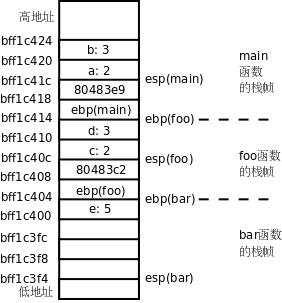
图中每个小方格表示 4 个字节的内存单元，例如 b: 3 这个小方格占的内存地址是 0xbf822d20 ~ 0xbf822d23，我把地址写在每个小方格的下边界线上，是为了强调该地址是内存单元的起始地址。我们从 main 函数的这里开始看起：
foo(2, 3);
80483d5: c7 44 24 04 03 00 00 movl $0x3,0x4(%esp)
80483dc: 00
80483dd: c7 04 24 02 00 00 00 movl $0x2,(%esp)
80483e4: e8 c1 ff ff ff call 80483aa <foo>
return 0;
80483e9: b8 00 00 00 00 mov $0x0,%eax
要调用函数 foo 先要把参数准备好，第二个参数保存在 esp+4 指向的内存位置，第一个参数保存在 esp 指向的内存位置，可见参数是从右向左依次压栈的。然后执行 call 指令，这个指令有两个作用：
foo函数调用完之后要返回到call的下一条指令继续执行，所以把call的下一条指令的地址 0x80483e9 压栈，同时把esp的值减 4，esp的值现在是 0xbf822d18。- 修改程序计数器
eip，跳转到foo函数的开头执行。
现在看 foo 函数的汇编代码：
int foo(int a, int b)
{
80483aa: 55 push %ebp
80483ab: 89 e5 mov %esp,%ebp
80483ad: 83 ec 08 sub $0x8,%esp
push %ebp 指令把 ebp 寄存器的值压栈，同时把 esp 的值减 4。esp 的值现在是 0xbf822d14，下一条指令把这个值传送给 ebp 寄存器。这两条指令合起来是把原来 ebp 的值保存在栈上，然后又给 ebp 赋了新值。在每个函数的栈帧中，ebp 指向栈底，而 esp 指向栈顶，在函数执行过程中 esp 随着压栈和出栈操作随时变化，而 ebp 是不动的，函数的参数和局部变量都是通过 ebp 的值加上一个偏移量来访问，例如 foo 函数的参数 a 和 b 分别通过 ebp+8 和 ebp+12 来访问。所以下面的指令把参数 a 和 b 再次压栈，为调用 bar 函数做准备，然后把返回地址压栈，调用 bar 函数：
return bar(a, b);
80483b0: 8b 45 0c mov 0xc(%ebp),%eax
80483b3: 89 44 24 04 mov %eax,0x4(%esp)
80483b7: 8b 45 08 mov 0x8(%ebp),%eax
80483ba: 89 04 24 mov %eax,(%esp)
80483bd: e8 d2 ff ff ff call 8048394 <bar>
现在看 bar 函数的指令：
int bar(int c, int d)
{
8048394: 55 push %ebp
8048395: 89 e5 mov %esp,%ebp
8048397: 83 ec 10 sub $0x10,%esp
int e = c + d;
804839a: 8b 55 0c mov 0xc(%ebp),%edx
804839d: 8b 45 08 mov 0x8(%ebp),%eax
80483a0: 01 d0 add %edx,%eax
80483a2: 89 45 fc mov %eax,-0x4(%ebp)
这次又把 foo 函数的 ebp 压栈保存，然后给 ebp 赋了新值，指向 bar 函数栈帧的栈底，通过 ebp+8 和 ebp+12 分别可以访问参数 c 和 d。bar 函数还有一个局部变量 e，可以通过 ebp-4 来访问。所以后面几条指令的意思是把参数 c 和 d 取出来存在寄存器中做加法，计算结果保存在 eax 寄存器中，再把 eax 寄存器存回局部变量 e 的内存单元。
在 gdb 中可以用 bt 命令和 frame 命令查看每层栈帧上的参数和局部变量，现在可以解释它的工作原理了：如果我当前在 bar 函数中，我可以通过 ebp 找到 bar 函数的参数和局部变量，也可以找到 foo 函数的 ebp 保存在栈上的值，有了 foo 函数的 ebp，又可以找到它的参数和局部变量，也可以找到 main 函数的 ebp 保存在栈上的值，因此各层函数栈帧通过保存在栈上的 ebp 的值串起来了。
现在看 bar 函数的返回指令：
return e;
80483a5: 8b 45 fc mov -0x4(%ebp),%eax
}
80483a8: c9 leave
80483a9: c3 ret
bar 函数有一个 int 型的返回值，这个返回值是通过 eax 寄存器传递的，所以首先把 e 的值读到 eax 寄存器中。然后执行 leave 指令，这个指令是函数开头的 push %ebp 和 mov %esp,%ebp 的逆操作：
- 把
ebp的值赋给esp，现在esp的值是 0xbf822d04。 - 现在
esp所指向的栈顶保存着foo函数栈帧的ebp，把这个值恢复给ebp，同时esp增加 4，esp的值变成 0xbf822d08。
最后是 ret 指令，它是 call 指令的逆操作：
- 现在
esp所指向的栈顶保存着返回地址，把这个值恢复给eip，同时esp增加 4，esp的值变成 0xbf822d0c。 - 修改了程序计数器
eip，因此跳转到返回地址 0x80483c2 继续执行。
地址 0x80483c2 处是 foo 函数的返回指令：
80483c2: c9 leave
80483c3: c3 ret
重复同样的过程，又返回到了 main 函数。注意函数调用和返回过程中的这些规则：
- 参数压栈传递，并且是从右向左依次压栈。
ebp总是指向当前栈帧的栈底。- 返回值通过
eax寄存器传递。
这些规则并不是体系结构所强加的，ebp 寄存器并不是必须这么用，函数的参数和返回值也不是必须这么传，只是操作系统和编译器选择了以这样的方式实现C代码中的函数调用，这称为 Calling Convention，Calling Convention 是操作系统二进制接口规范（ABI，Application Binary Interface）的一部分。
习题
-
在第 3 章「简单函数」第 2 节「自定义函数」讲过，Old Style C 风格的函数声明可以不指定参数个数和类型，这样编译器不会对函数调用做检查，那么如果调用时的参数类型不对或者参数个数不对会怎么样呢？比如把本节的例子改成这样：
int foo(); int bar(); int main(void) { foo(2, 3, 4); return 0; } int foo(int a, int b) { return bar(a); } int bar(int c, int d) { int e = c + d; return e; }main函数调用foo时多传了一个参数，那么参数a和b分别取什么值？多的参数怎么办？foo调用bar时少传了一个参数，那么参数d的值从哪里取得？请读者利用反汇编和gdb自己分析一下。我们再看一个参数类型不符的例子：#include <stdio.h> int main(void) { void foo(); char c = 60; foo(c); return 0; } void foo(double d) { printf("%f\n", d); }打印结果是多少？如果把声明
void foo();改成void foo(double);，打印结果又是多少？
2. main 函数和启动例程
为什么汇编程序的入口是 _start，而 C 程序的入口是 main 函数呢？本节就来解释这个问题。在讲上章例 18.1 「最简单的汇编程序」时，我们的汇编和链接步骤是：
$ as hello.s -o hello.o
$ ld hello.o -o hello
以前我们常用 gcc main.c -o main 命令编译一个程序，其实也可以分三步做，第一步生成汇编代码，第二步生成目标文件，第三步生成可执行文件：
$ gcc -S main.c
$ gcc -c main.s
$ gcc main.o
-S 选项生成汇编代码，-c 选项生成目标文件，此外在第 8 章「数组」第 2 节「数组应用实例：统计随机数」还讲过 -E 选项只做预处理而不编译，如果不加这些选项则 gcc 执行完整的编译步骤，直到最后链接生成可执行文件为止。如下图所示。
图 19.2. gcc 命令的选项

这些选项都可以和 -o 搭配使用，给输出的文件重新命名而不使用 gcc 默认的文件名（xxx.c、xxx.s、xxx.o 和 a.out），例如 gcc main.o -o main 将 main.o 链接成可执行文件 main。先前由汇编代码上章例 18.1 「最简单的汇编程序」生成的目标文件 hello.o 我们是用 ld 来链接的，可不可以用 gcc 链接呢？试试看。
$ gcc hello.o -o hello
hello.o: In function `_start':
(.text+0x0): multiple definition of `_start'
/usr/lib/gcc/i486-linux-gnu/4.3.2/../../../../lib/crt1.o:(.text+0x0): first defined here
/usr/lib/gcc/i486-linux-gnu/4.3.2/../../../../lib/crt1.o: In function `_start':
(.text+0x18): undefined reference to `main'
collect2: ld returned 1 exit status
提示两个错误：一是 _start 有多个定义，一个定义是由我们的汇编代码提供的，另一个定义来自 /usr/lib/crt1.o；二是 crt1.o 的 _start 函数要调用 main 函数，而我们的汇编代码中没有提供 main 函数的定义。从最后一行还可以看出这些错误提示是由 ld 给出的。由此可见，如果我们用 gcc 做链接，gcc 其实是调用 ld 将目标文件 crt1.o 和我们的 hello.o 链接在一起。crt1.o 里面已经提供了 _start 入口点，我们的汇编程序中再实现一个 _start 就是多重定义了，链接器不知道该用哪个，只好报错。另外，crt1.o 提供的 _start 需要调用 main 函数，而我们的汇编程序中没有实现 main 函数，所以报错。
如果目标文件是由 C 代码编译生成的，用 gcc 做链接就没错了，整个程序的入口点是 crt1.o 中提供的 _start，它首先做一些初始化工作（以下称为启动例程，Startup Routine），然后调用 C 代码中提供的 main 函数。所以，以前我们说 main 函数是程序的入口点其实不准确，_start 才是真正的入口点，而 main 函数是被 _start 调用的。
我们继续研究上一节的本章例 19.1 「研究函数的调用过程」。如果分两步编译，第二步 gcc main.o -o main 其实是调用 ld 做链接的，相当于这样的命令：
$ ld /usr/lib/crt1.o /usr/lib/crti.o main.o -o main -lc -dynamic-linker /lib/ld-linux.so.2
也就是说，除了 crt1.o 之外其实还有 crti.o，这两个目标文件和我们的 main.o 链接在一起生成可执行文件 main。-lc 表示需要链接 libc 库，在第 3 章「简单函数」第 1 节「数学函数」讲过 -lc 选项是 gcc 默认的，不用写，而对于 ld 则不是默认选项，所以要写上。-dynamic-linker /lib/ld-linux.so.2 指定动态链接器是 /lib/ld-linux.so.2，稍后会解释什么是动态链接。
那么 crt1.o 和 crti.o 里面都有什么呢？我们可以用 readelf 命令查看。在这里我们只关心符号表，如果只看符号表，可以用 readelf 命令的 -s 选项，也可以用 nm 命令。
$ nm /usr/lib/crt1.o
00000000 R _IO_stdin_used
00000000 D __data_start
U __libc_csu_fini
U __libc_csu_init
U __libc_start_main
00000000 R _fp_hw
00000000 T _start
00000000 W data_start
U main
$ nm /usr/lib/crti.o
U _GLOBAL_OFFSET_TABLE_
w __gmon_start__
00000000 T _fini
00000000 T _init
U main 这一行表示 main 这个符号在 crt1.o 中用到了，但是没有定义（U 表示Undefined），因此需要别的目标文件提供一个定义并且和 crt1.o 链接在一起。具体来说，在 crt1.o 中要用到 main 这个符号所代表的地址，例如有一条指令是 push $符号 main 所代表的地址，但不知道这个地址是多少，所以在 crt1.o 中这条指令暂时写成 push $0x0，等到和 main.o 链接成可执行文件时就知道这个地址是多少了，比如是 0x80483c4，那么可执行文件 main 中的这条指令就被链接器改成了 push $0x80483c4。链接器在这里起到符号解析（Symbol Resolution）的作用，在上章第 5.2 节「可执行文件」我们看到链接器起到重定位的作用，这两种作用都是通过修改指令中的地址实现的，链接器也是一种编辑器，vi 和 emacs 编辑的是源文件，而链接器编辑的是目标文件，所以链接器也叫 Link Editor。T _start 这一行表示 _start 这个符号在 crt1.o 中提供了定义，这个符号的类型是代码（T 表示 Text）。我们从上面的输出结果中选取几个符号用图示说明它们之间的关系：
图 19.3. C 程序的链接过程
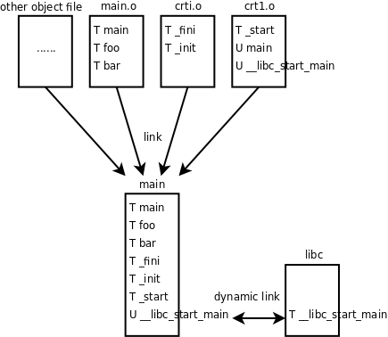
其实上面我们写的 ld 命令做了很多简化，gcc 在链接时还用到了另外几个目标文件，所以上图多画了一个框，表示组成可执行文件 main 的除了 main.o、crt1.o 和 crti.o 之外还有其它目标文件，本书不做深入讨论，用 gcc 的 -v 选项可以了解详细的编译过程：
$ gcc -v main.c -o main
Using built-in specs.
Target: i486-linux-gnu
...
/usr/lib/gcc/i486-linux-gnu/4.3.2/cc1 -quiet -v main.c -D_FORTIFY_SOURCE=2 -quiet -dumpbase main.c -mtune=generic -auxbase main -version -fstack-protector -o /tmp/ccRGDpua.s
...
as -V -Qy -o /tmp/ccidnZ1d.o /tmp/ccRGDpua.s
...
/usr/lib/gcc/i486-linux-gnu/4.3.2/collect2 --eh-frame-hdr -m elf_i386 --hash-style=both -dynamic-linker /lib/ld-linux.so.2 -o main -z relro /usr/lib/gcc/i486-linux-gnu/4.3.2/../../../../lib/crt1.o /usr/lib/gcc/i486-linux-gnu/4.3.2/../../../../lib/crti.o /usr/lib/gcc/i486-linux-gnu/4.3.2/crtbegin.o -L/usr/lib/gcc/i486-linux-gnu/4.3.2 -L/usr/lib/gcc/i486-linux-gnu/4.3.2 -L/usr/lib/gcc/i486-linux-gnu/4.3.2/../../../../lib -L/lib/../lib -L/usr/lib/../lib -L/usr/lib/gcc/i486-linux-gnu/4.3.2/../../.. /tmp/ccidnZ1d.o -lgcc --as-needed -lgcc_s --no-as-needed -lc -lgcc --as-needed -lgcc_s --no-as-needed /usr/lib/gcc/i486-linux-gnu/4.3.2/crtend.o /usr/lib/gcc/i486-linux-gnu/4.3.2/../../../../lib/crtn.o
链接生成的可执行文件 main 中包含了各目标文件所定义的符号，通过反汇编可以看到这些符号的定义：
$ objdump -d main
main: file format elf32-i386
Disassembly of section .init:
08048274 <_init>:
8048274: 55 push %ebp
8048275: 89 e5 mov %esp,%ebp
8048277: 53 push %ebx
...
Disassembly of section .text:
080482e0 <_start>:
80482e0: 31 ed xor %ebp,%ebp
80482e2: 5e pop %esi
80482e3: 89 e1 mov %esp,%ecx
...
08048394 <bar>:
8048394: 55 push %ebp
8048395: 89 e5 mov %esp,%ebp
8048397: 83 ec 10 sub $0x10,%esp
...
080483aa <foo>:
80483aa: 55 push %ebp
80483ab: 89 e5 mov %esp,%ebp
80483ad: 83 ec 08 sub $0x8,%esp
...
080483c4 <main>:
80483c4: 8d 4c 24 04 lea 0x4(%esp),%ecx
80483c8: 83 e4 f0 and $0xfffffff0,%esp
80483cb: ff 71 fc pushl -0x4(%ecx)
...
Disassembly of section .fini:
0804849c <_fini>:
804849c: 55 push %ebp
804849d: 89 e5 mov %esp,%ebp
804849f: 53 push %ebx
crt1.o 中的未定义符号 main 在 main.o 中定义了，所以链接在一起就没问题了。crt1.o 还有一个未定义符号 __libc_start_main 在其它几个目标文件中也没有定义，所以在可执行文件 main 中仍然是个未定义符号。这个符号是在 libc 中定义的，libc 并不像其它目标文件一样链接到可执行文件 main 中，而是在运行时做动态链接：
- 操作系统在加载执行
main这个程序时，首先查看它有没有需要动态链接的未定义符号。 - 如果需要做动态链接，就查看这个程序指定了哪些共享库（我们用
-lc指定了libc）以及用什么动态链接器来做动态链接（我们用-dynamic-linker /lib/ld-linux.so.2指定了动态链接器）。 - 动态链接器在共享库中查找这些符号的定义，完成链接过程。
了解了这些原理之后，现在我们来看 _start 的反汇编：
...
Disassembly of section .text:
080482e0 <_start>:
80482e0: 31 ed xor %ebp,%ebp
80482e2: 5e pop %esi
80482e3: 89 e1 mov %esp,%ecx
80482e5: 83 e4 f0 and $0xfffffff0,%esp
80482e8: 50 push %eax
80482e9: 54 push %esp
80482ea: 52 push %edx
80482eb: 68 00 84 04 08 push $0x8048400
80482f0: 68 10 84 04 08 push $0x8048410
80482f5: 51 push %ecx
80482f6: 56 push %esi
80482f7: 68 c4 83 04 08 push $0x80483c4
80482fc: e8 c3 ff ff ff call 80482c4 <__libc_start_main@plt>
...
首先将一系列参数压栈，然后调用 libc 的库函数 __libc_start_main 做初始化工作，其中最后一个压栈的参数 push $0x80483c4 是 main 函数的地址，__libc_start_main 在完成初始化工作之后会调用 main 函数。由于 __libc_start_main 需要动态链接，所以这个库函数的指令在可执行文件 main 的反汇编中肯定是找不到的，然而我们找到了这个：
Disassembly of section .plt:
...
080482c4 <__libc_start_main@plt>:
80482c4: ff 25 04 a0 04 08 jmp *0x804a004
80482ca: 68 08 00 00 00 push $0x8
80482cf: e9 d0 ff ff ff jmp 80482a4 <_init+0x30>
这三条指令位于 .plt 段而不是 .text 段，.plt 段协助完成动态链接的过程。我们将在下一章详细讲解动态链接的过程。
main 函数最标准的原型应该是 int main(int argc, char *argv[])，也就是说启动例程会传两个参数给 main 函数，这两个参数的含义我们学了指针以后再解释。我们到目前为止都把 main 函数的原型写成 int main(void)，这也是 C 标准允许的，如果你认真分析了上一节的习题，你就应该知道，多传了参数而不用是没有问题的，少传了参数却用了则会出问题。
由于 main 函数是被启动例程调用的，所以从 main 函数 return 时仍返回到启动例程中，main 函数的返回值被启动例程得到，如果将启动例程表示成等价的 C 代码（实际上启动例程一般是直接用汇编写的），则它调用 main 函数的形式是：
exit(main(argc, argv));
也就是说，启动例程得到 main 函数的返回值后，会立刻用它做参数调用 exit 函数。exit 也是 libc 中的函数，它首先做一些清理工作，然后调用上一章讲过的 _exit 系统调用终止进程，main 函数的返回值最终被传给 _exit 系统调用，成为进程的退出状态。我们也可以在 main 函数中直接调用 exit 函数终止进程而不返回到启动例程，例如：
#include <stdlib.h>
int main(void)
{
exit(4);
}
这样和 int main(void) { return 4; } 的效果是一样的。在 Shell 中运行这个程序并查看它的退出状态：
$ ./a.out
$ echo $?
4
按照惯例，退出状态为 0 表示程序执行成功，退出状态非 0 表示出错。注意，退出状态只有 8 位，而且被 Shell 解释成无符号数，如果将上面的代码改为 exit(-1); 或 return -1;，则运行结果为
$ ./a.out
$ echo $?
255
注意，如果声明一个函数的返回值类型是 int，函数中每个分支控制流程必须写 return 语句指定返回值，如果缺了 return 则返回值不确定（想想这是为什么），编译器通常是会报警告的，但如果某个分支控制流程调用了 exit 或 _exit 而不写 return，编译器是允许的，因为它都没有机会返回了，指不指定返回值也就无所谓了。使用 exit 函数需要包含头文件 stdlib.h，而使用 _exit 函数需要包含头文件 unistd.h，以后还要详细解释这两个函数。
3. 变量的存储布局
首先看下面的例子：
例 19.2. 研究变量的存储布局
#include <stdio.h>
const int A = 10;
int a = 20;
static int b = 30;
int c;
int main(void)
{
static int a = 40;
char b[] = "Hello world";
register int c = 50;
printf("Hello world %d\n", c);
return 0;
}
我们在全局作用域和 main 函数的局部作用域各定义了一些变量，并且引入一些新的关键字 const、static、register 来修饰变量，那么这些变量的存储空间是怎么分配的呢？我们编译之后用 readelf 命令看它的符号表，了解各变量的地址分布。注意在下面的清单中我把符号表按地址从低到高的顺序重新排列了，并且只截取我们关心的那几行。
$ gcc main.c -g
$ readelf -a a.out
...
68: 08048540 4 OBJECT GLOBAL DEFAULT 15 A
69: 0804a018 4 OBJECT GLOBAL DEFAULT 23 a
52: 0804a01c 4 OBJECT LOCAL DEFAULT 23 b
53: 0804a020 4 OBJECT LOCAL DEFAULT 23 a.1589
81: 0804a02c 4 OBJECT GLOBAL DEFAULT 24 c
...
变量 A 用 const 修饰，表示 A 是只读的，不可修改，它被分配的地址是 0x8048540，从 readelf 的输出可以看到这个地址位于 .rodata 段：
Section Headers:
[Nr] Name Type Addr Off Size ES Flg Lk Inf Al
...
[13] .text PROGBITS 08048360 000360 0001bc 00 AX 0 0 16
...
[15] .rodata PROGBITS 08048538 000538 00001c 00 A 0 0 4
...
[23] .data PROGBITS 0804a010 001010 000014 00 WA 0 0 4
[24] .bss NOBITS 0804a024 001024 00000c 00 WA 0 0 4
...
它在文件中的地址是 0x538 ~ 0x554，我们用 hexdump 命令看看这个段的内容：
$ hexdump -C a.out
...
00000530 5c fe ff ff 59 5b c9 c3 03 00 00 00 01 00 02 00 |\...Y[..........|
00000540 0a 00 00 00 48 65 6c 6c 6f 20 77 6f 72 6c 64 20 |....Hello world |
00000550 25 64 0a 00 00 00 00 00 00 00 00 00 00 00 00 00 |%d..............|
...
其中 0x540 地址处的 0a 00 00 00 就是变量 A。我们还看到程序中的字符串字面值 "Hello world %d\n" 分配在 .rodata 段的末尾，在第 8 章「数组」第 4 节「字符串」说过字符串字面值是只读的，相当于在全局作用域定义了一个 const 数组：
const char helloworld[] = {'H', 'e', 'l', 'l', 'o', ' ',
'w', 'o', 'r', 'l', 'd', ' ', '%', 'd', '\n', '\0'};
程序加载运行时，.rodata 段和 .text 段通常合并到一个 Segment 中，操作系统将这个 Segment 的页面只读保护起来，防止意外的改写。这一点从 readelf 的输出也可以看出来：
Section to Segment mapping:
Segment Sections...
00
01 .interp
02 .interp .note.ABI-tag .hash .gnu.hash .dynsym .dynstr .gnu.version .gnu.version_r .rel.dyn .rel.plt .init .plt .text .fini .rodata .eh_frame
03 .ctors .dtors .jcr .dynamic .got .got.plt .data .bss
04 .dynamic
05 .note.ABI-tag
06
07 .ctors .dtors .jcr .dynamic .got
注意，像 A 这种 const 变量在定义时必须初始化。因为只有初始化时才有机会给它一个值，一旦定义之后就不能再改写了，也就是不能再赋值了。
从上面 readelf 的输出可以看到 .data 段从地址 0x804a010 开始，长度是 0x14，也就是到地址 0x804a024 结束。在 .data 段中有三个变量，a，b 和 a.1589。
a 是一个 GLOBAL 的符号，而 b 被 static 关键字修饰了，导致它成为一个 LOCAL 的符号，所以 static 在这里的作用是声明 b 这个符号为 LOCAL 的，不被链接器处理，在下一章我们会看到，如果把多个目标文件链接在一起，LOCAL 的符号只能在某一个目标文件中定义和使用，而不能定义在一个目标文件中却在另一个目标文件中使用。一个函数定义前面也可以用 static 修饰，表示这个函数名符号是 LOCAL 的。
还有一个 a.1589 是什么呢？它就是 main 函数中的 static int a。函数中的 static 变量不同于以前我们讲的局部变量，它并不是在调用函数时分配，在函数返回时释放，而是像全局变量一样静态分配，所以用 static （静态）这个词。另一方面，函数中的 static 变量的作用域和以前讲的局部变量一样，只在函数中起作用，比如 main 函数中的 a 这个变量名只在 main 函数中起作用，在别的函数中说变量 a 就不是指它了，所以编译器给它的符号名加了一个后缀，变成 a.1589，以便和全局变量 a 以及其它函数的变量 a 区分开。
.bss 段从地址 0x804a024 开始（紧挨着 .data 段），长度为 0xc，也就是到地址 0x804a030 结束。变量 c 位于这个段。从上面的 readelf 输出可以看到，.data 和 .bss 在加载时合并到一个 Segment 中，这个 Segment 是可读可写的。.bss 段和 .data 段的不同之处在于，.bss 段在文件中不占存储空间，在加载时这个段用 0 填充。所以我们在第 3 章「简单函数」第 4 节「全局变量、局部变量和作用域」讲过，全局变量如果不初始化则初值为 0，同理可以推断，static 变量（不管是函数里的还是函数外的）如果不初始化则初值也是 0，也分配在 .bss 段。
现在还剩下函数中的 b 和 c 这两个变量没有分析。上一节我们讲过函数的参数和局部变量是分配在栈上的，b 是数组也一样，也是分配在栈上的，我们看 main 函数的反汇编代码：
$ objdump -dS a.out
...
char b[]="Hello world";
8048430: c7 45 ec 48 65 6c 6c movl $0x6c6c6548,-0x14(%ebp)
8048437: c7 45 f0 6f 20 77 6f movl $0x6f77206f,-0x10(%ebp)
804843e: c7 45 f4 72 6c 64 00 movl $0x646c72,-0xc(%ebp)
register int c = 50;
8048445: b8 32 00 00 00 mov $0x32,%eax
printf("Hello world %d\n", c);
804844a: 89 44 24 04 mov %eax,0x4(%esp)
804844e: c7 04 24 44 85 04 08 movl $0x8048544,(%esp)
8048455: e8 e6 fe ff ff call 8048340 <printf@plt>
...
可见，给 b 初始化用的这个字符串 "Hello world" 并没有分配在 .rodata 段，而是直接写在指令里了，通过三条 movl 指令把 12 个字节写到栈上，这就是 b 的存储空间，如下图所示。
图 19.4. 数组的存储布局
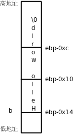
注意，虽然栈是从高地址向低地址增长的，但数组总是从低地址向高地址排列的，按从低地址到高地址的顺序依次是 b[0]、b[1]、b[2]……这样，
数组元素 b[n] 的地址 = 数组的基地址（b 做右值就表示这个基地址） + n × 每个元素的字节数
当 n=0 时，元素 b[0] 的地址就是数组的基地址，因此数组下标要从 0 开始而不是从 1 开始。
变量 c 并没有在栈上分配存储空间，而是直接存在 eax 寄存器里，后面调用 printf 也是直接从 eax 寄存器里取出 c 的值当参数压栈，这就是 register 关键字的作用，指示编译器尽可能分配一个寄存器来存储这个变量。我们还看到调用 printf 时对于 "Hello world %d\n" 这个参数压栈的是它在 .rodata 段中的首地址，而不是把整个字符串压栈，所以在第 8 章「数组」第 4 节「字符串」中说过，字符串在使用时可以看作数组名，如果做右值则表示数组首元素的地址（或者说指向数组首元素的指针），我们以后讲指针还要继续讨论这个问题。
以前我们用「全局变量」和「局部变量」这两个概念，主要是从作用域上区分的，现在看来用这两个概念给变量分类太笼统了，需要进一步细分。我们总结一下相关的 C 语法。
作用域（Scope）这个概念适用于所有标识符，而不仅仅是变量，C 语言的作用域分为以下几类：
- 函数作用域（Function Scope），标识符在整个函数中都有效。只有语句标号属于函数作用域。标号在函数中不需要先声明后使用，在前面用一个
goto语句也可以跳转到后面的某个标号，但仅限于同一个函数之中。 - 文件作用域（File Scope），标识符从它声明的位置开始直到这个程序文件[30]的末尾都有效。例如上例中
main函数外面的A、a、b、c，还有main也算，printf其实是在stdio.h中声明的，被包含到这个程序文件中了，所以也算文件作用域的。 - 块作用域（Block Scope），标识符位于一对
{}括号中（函数体或语句块），从它声明的位置开始到右}括号之间有效。例如上例中main函数里的a、b、c。此外，函数定义中的形参也算块作用域的，从声明的位置开始到函数末尾之间有效。 - 函数原型作用域（Function Prototype Scope），标识符出现在函数原型中，这个函数原型只是一个声明而不是定义（没有函数体），那么标识符从声明的位置开始到在这个原型末尾之间有效。例如
int foo(int a, int b);中的a和b。
[30] 为了容易阅读，这里我用了「程序文件」这个不严格的叫法。如果有文件
a.c包含了b.h和c.h，那么我所说的「程序文件」指的是经过预处理把b.h和c.h在a.c中展开之后生成的代码，在 C 标准中称为编译单元（Translation Unit）。每个编译单元可以分别编译成一个.o目标文件，最后这些目标文件用链接器链接到一起，成为一个可执行文件。C 标准中大量使用一些非常不通俗的名词，除了编译单元之外，还有编译器叫 Translator，变量叫 Object，本书不会采用这些名词，因为我不是在写 C 标准。
对属于同一命名空间（Name Space）的重名标识符，内层作用域的标识符将覆盖外层作用域的标识符，例如局部变量名在它的函数中将覆盖重名的全局变量。命名空间可分为以下几类：
- 语句标号单独属于一个命名空间。例如在函数中局部变量和语句标号可以重名，互不影响。由于使用标号的语法和使用其它标识符的语法都不一样，编译器不会把它和别的标识符弄混。
struct，enum和union（下一节介绍union）的类型 Tag 属于一个命名空间。由于 Tag 前面总是带struct，enum或union关键字，所以编译器不会把它和别的标识符弄混。struct和union的成员名属于一个命名空间。由于成员名总是通过.或->运算符来访问而不会单独使用，所以编译器不会把它和别的标识符弄混。- 所有其它标识符，例如变量名、函数名、宏定义、
typedef的类型名、enum成员等等都属于同一个命名空间。如果有重名的话，宏定义覆盖所有其它标识符，因为它在预处理阶段而不是编译阶段处理，除了宏定义之外其它几类标识符按上面所说的规则处理，内层作用域覆盖外层作用域。
标识符的链接属性（Linkage）有三种：
- 外部链接（External Linkage），如果最终的可执行文件由多个程序文件链接而成，一个标识符在任意程序文件中即使声明多次也都代表同一个变量或函数，则这个标识符具有 External Linkage。具有 External Linkage 的标识符编译后在符号表中是
GLOBAL的符号。例如上例中main函数外面的a和c，main和printf也算。 - 内部链接（Internal Linkage），如果一个标识符在某个程序文件中即使声明多次也都代表同一个变量或函数，则这个标识符具有 Internal Linkage。例如上例中
main函数外面的b。如果有另一个foo.c程序和main.c链接在一起，在foo.c中也声明一个static int b;，则那个b和这个b不代表同一个变量。具有 Internal Linkage 的标识符编译后在符号表中是LOCAL的符号，但main函数里面那个a不能算 Internal Linkage 的，因为即使在同一个程序文件中，在不同的函数中声明多次，也不代表同一个变量。 - 无链接（No Linkage）。除以上情况之外的标识符都属于 No Linkage 的，例如函数的局部变量，以及不表示变量和函数的其它标识符。
存储类修饰符（Storage Class Specifier）有以下几种关键字，可以修饰变量或函数声明：
static，用它修饰的变量的存储空间是静态分配的，用它修饰的文件作用域的变量或函数具有 Internal Linkage。auto，用它修饰的变量在函数调用时自动在栈上分配存储空间，函数返回时自动释放，例如上例中main函数里的b其实就是用auto修饰的，只不过auto可以省略不写，auto不能修饰文件作用域的变量。register，编译器对于用register修饰的变量会尽可能分配一个专门的寄存器来存储，但如果实在分配不开寄存器，编译器就把它当auto变量处理了，register不能修饰文件作用域的变量。现在一般编译器的优化都做得很好了，它自己会想办法有效地利用 CPU 的寄存器，所以现在register关键字也用得比较少了。extern，上面讲过，链接属性是根据一个标识符多次声明时是不是代表同一个变量或函数来分类的，extern关键字就用于多次声明同一个标识符，下一章再详细介绍它的用法。typedef，在第 16 章「运算符详解」第 2.4 节「sizeof 运算符与 typedef 类型声明」讲过这个关键字，它并不是用来修饰变量的，而是定义一个类型名。在那一节也讲过，看typedef声明怎么看呢，首先去掉typedef把它看成变量声明，看这个变量是什么类型的，那么typedef就定义了一个什么类型，也就是说，typedef在语法结构中出现的位置和前面几个关键字一样，也是修饰变量声明的，所以从语法（而不是语义）的角度把它和前面几个关键字归类到一起。
注意，上面介绍的 const 关键字不是一个 Storage Class Specifier，虽然看起来它也修饰一个变量声明，但是在以后介绍的更复杂的声明中 const 在语法结构中允许出现的位置和 Storage Class Specifier 是不完全相同的。const 和以后要介绍的 restrict 和 volatile 关键字属于同一类语法元素，称为类型限定符（Type Qualifier）。
变量的生存期（Storage Duration，或者 Lifetime）分为以下几类：
- 静态生存期（Static Storage Duration），具有外部或内部链接属性，或者被
static修饰的变量，在程序开始执行时分配和初始化一次，此后便一直存在直到程序结束。这种变量通常位于.rodata，.data或.bss段，例如上例中main函数外的A，a，b，c，以及main函数里的a。 - 自动生存期（Automatic Storage Duration），链接属性为无链接并且没有被
static修饰的变量，这种变量在进入块作用域时在栈上或寄存器中分配，在退出块作用域时释放。例如上例中main函数里的b和c。 - 动态分配生存期（Allocated Storage Duration），以后会讲到调用
malloc函数在进程的堆空间中分配内存，调用free函数可以释放这种存储空间。
4. 结构体和联合体
我们继续用反汇编的方法研究一下 C 语言的结构体：
例 19.3. 研究结构体
#include <stdio.h>
int main(int argc, char** argv)
{
struct {
char a;
short b;
int c;
char d;
} s;
s.a = 1;
s.b = 2;
s.c = 3;
s.d = 4;
printf("%u\n", sizeof(s));
return 0;
}
main 函数中几条语句的反汇编结果如下：
s.a = 1;
80483d5: c6 45 f0 01 movb $0x1,-0x10(%ebp)
s.b = 2;
80483d9: 66 c7 45 f2 02 00 movw $0x2,-0xe(%ebp)
s.c = 3;
80483df: c7 45 f4 03 00 00 00 movl $0x3,-0xc(%ebp)
s.d = 4;
80483e6: c6 45 f8 04 movb $0x4,-0x8(%ebp)
从访问结构体成员的指令可以看出，结构体的四个成员在栈上是这样排列的：
图 19.5. 结构体的存储布局
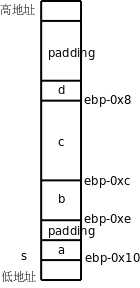
虽然栈是从高地址向低地址增长的，但结构体成员也是从低地址向高地址排列的，这一点和数组类似。但有一点和数组不同，结构体的各成员并不是一个紧挨一个排列的，中间有空隙，称为填充（Padding），不仅如此，在这个结构体的末尾也有三个字节的填充，所以 sizeof(s) 的值是 12。注意，printf 的 %u 转换说明表示无符号数，sizeof 的值是 size_t 类型的，是某种无符号整型。
为什么编译器要这样处理呢？有一个知识点我此前一直回避没讲，那就是大多数计算机体系统结构对于访问内存的指令是有限制的，在 32 位平台上，访问 4 字节的指令（比如上面的 movl）所访问的内存地址应该是 4 的整数倍，访问两字节的指令（比如上面的 movw）所访问的内存地址应该是两字节的整数倍，这称为对齐（Alignment）。以前举的所有例子中的内存访问指令都满足这个限制条件，读者可以回头检验一下。如果指令所访问的内存地址没有正确对齐会怎么样呢？在有些平台上将不能访问内存，而是引发一个异常，在 x86 平台上倒是仍然能访问内存，但是不对齐的指令执行效率比对齐的指令要低，所以编译器在安排各种变量的地址时都会考虑到对齐的问题。对于本例中的结构体，编译器会把它的基地址对齐到4字节边界，也就是说，ebp-0x10 这个地址一定是4的整数倍。s.a 占一个字节，没有对齐的问题。s.b 占两个字节，如果 s.b 紧挨在 s.a 后面，它的地址就不能是两字节的整数倍了，所以编译器会在结构体中插入一个填充字节，使 s.b 的地址也是两字节的整数倍。s.c 占 4 字节，紧挨在 s.b 的后面就可以了，因为 ebp-0xc 这个地址也是 4 的整数倍。那么为什么 s.d 的后面也要有填充位填充到 4 字节边界呢？这是为了便于安排这个结构体后面的变量的地址，假如用这种结构体类型组成一个数组，那么后一个结构体只需和前一个结构体紧挨着排列就可以保证它的基地址仍然对齐到4字节边界了，因为在前一个结构体的末尾已经有了填充字节。事实上，C 标准规定数组元素必须紧挨着排列，不能有空隙，这样才能保证每个元素的地址可以按「基地址 + n × 元素大小」简单计算出来。
合理设计结构体各成员的排列顺序可以节省存储空间，例如上例中的结构体改成这样就可以避免产生填充字节：
struct {
char a;
char d;
short b;
int c;
} s;
此外，gcc 提供了一种扩展语法可以消除结构体中的填充字节：
struct {
char a;
short b;
int c;
char d;
} __attribute__((packed)) s;
这样就不能保证结构体成员的对齐了，在访问 b 和 c 的时候可能会有效率问题，所以除非有特别的理由，一般不要使用这种语法。
以前我们使用的数据类型都是占几个字节，最小的类型也要占一个字节，而在结构体中还可以使用 Bit-field 语法定义只占几个 bit 的成员。下面这个例子出自王聪的网站：
例 19.4. Bit-field
#include <stdio.h>
typedef struct {
unsigned int one:1;
unsigned int two:3;
unsigned int three:10;
unsigned int four:5;
unsigned int :2;
unsigned int five:8;
unsigned int six:8;
} demo_type;
int main(void)
{
demo_type s = { 1, 5, 513, 17, 129, 0x81 };
printf("sizeof demo_type = %u\n", sizeof(demo_type));
printf("values: s=%u,%u,%u,%u,%u,%u\n",
s.one, s.two, s.three, s.four, s.five, s.six);
return 0;
}
s 这个结构体的布局如下图所示：
图 19.6. Bit-field 的存储布局

Bit-field 成员的类型可以是 int 或 unsigned int，表示有符号数或无符号数，但不表示它像普通的 int 型一样占 4 个字节，它后面的数字是几就表示它占多少个 bit，也可以像 unsigned int :2; 这样定义一个未命名的 Bit-field，即使不写未命名的 Bit-field，编译器也有可能在两个成员之间插入填充位，如上图的 five 和 six 之间，这样 six 这个成员就刚好单独占一个字节了，访问效率会比较高，这个结构体的末尾还填充了 3 个字节，以便对齐到 4 字节边界。以前我们说过 x86 的 Byte Order 是小端的，从上图中 one 和 two 的排列顺序可以看出，如果对一个字节再细分，则字节中的 Bit Order 也是小端的，因为排在结构体前面的成员（靠近低地址一边的成员）取字节中的低位。关于如何排列 Bit-field 在 C 标准中没有详细的规定，这跟 Byte Order、Bit Order、对齐等问题都有关，不同的平台和编译器可能会排列得很不一样，要编写可移植的代码就不能假定 Bit-field 是按某一种固定方式排列的。Bit-field 在驱动程序中是很有用的，因为经常需要单独操作设备寄存器中的一个或几个 bit，但一定要小心使用，首先弄清楚每个 Bit-field 和实际 bit 的对应关系。
和前面几个例子不一样，在上例中我没有给出反汇编结果，直接画了个图说这个结构体的布局是这样的，那我有什么证据这么说呢？上例的反汇编结果比较繁琐，我们可以通过另一种手段得到这个结构体的内存布局。C 语言还有一种类型叫联合体，用关键字 union 定义，其语法类似于结构体，例如：
例 19.5. 联合体
#include <stdio.h>
typedef union {
struct {
unsigned int one:1;
unsigned int two:3;
unsigned int three:10;
unsigned int four:5;
unsigned int :2;
unsigned int five:8;
unsigned int six:8;
} bitfield;
unsigned char byte[8];
} demo_type;
int main(void)
{
demo_type u = {{ 1, 5, 513, 17, 129, 0x81 }};
printf("sizeof demo_type = %u\n", sizeof(demo_type));
printf("values: u=%u,%u,%u,%u,%u,%u\n",
u.bitfield.one, u.bitfield.two, u.bitfield.three,
u.bitfield.four, u.bitfield.five, u.bitfield.six);
printf("hex dump of u: %x %x %x %x %x %x %x %x \n",
u.byte[0], u.byte[1], u.byte[2], u.byte[3],
u.byte[4], u.byte[5], u.byte[6], u.byte[7]);
return 0;
}
一个联合体的各个成员占用相同的内存空间，联合体的长度等于其中最长成员的长度。比如 u 这个联合体占 8 个字节，如果访问成员 u.bitfield，则把这 8 个字节看成一个由 Bit-field 组成的结构体，如果访问成员 u.byte，则把这 8 个字节看成一个数组。联合体如果用 Initializer 初始化，则只初始化它的第一个成员，例如 demo_type u = {{ 1, 5, 513, 17, 129, 0x81 }}; 初始化的是 u.bitfield，但是通过 u.bitfield 的成员看不出这 8 个字节的内存布局，而通过 u.byte 数组就可以看出每个字节分别是多少了。
习题
- 编写一个程序，测试运行它的平台是大端还是小端字节序。
5. C 内联汇编
用 C 写程序比直接用汇编写程序更简洁，可读性更好，但效率可能不如汇编程序，因为 C 程序毕竟要经由编译器生成汇编代码，尽管现代编译器的优化已经做得很好了，但还是不如手写的汇编代码。另外，有些平台相关的指令必须手写，在 C 语言中没有等价的语法，因为 C 语言的语法和概念是对各种平台的抽象，而各种平台特有的一些东西就不会在 C 语言中出现了，例如 x86 是端口 I/O，而 C 语言就没有这个概念，所以 in/out 指令必须用汇编来写。
C 语言简洁易读，容易组织规模较大的代码，而汇编效率高，而且写一些特殊指令必须用汇编，为了把这两方面的好处都占全了，gcc 提供了一种扩展语法可以在 C 代码中使用内联汇编（Inline Assembly）。最简单的格式是 __asm__("assembly code");，例如 __asm__("nop"); ，nop 这条指令什么都不做，只是让 CPU 空转一个指令执行周期。如果需要执行多条汇编指令，则应该用 \n\t 将各条指令分隔开，例如：
__asm__("movl $1, %eax\n\t"
"movl $4, %ebx\n\t"
"int $0x80");
通常 C 代码中的内联汇编需要和 C 的变量建立关联，需要用到完整的内联汇编格式：
__asm__(assembler template
: output operands /* optional */
: input operands /* optional */
: list of clobbered registers /* optional */
);
这种格式由四部分组成，第一部分是汇编指令，和上面的例子一样，第二部分和第三部分是约束条件，第二部分指示汇编指令的运算结果要输出到哪些 C 操作数中，C 操作数应该是左值表达式，第三部分指示汇编指令需要从哪些 C 操作数获得输入，第四部分是在汇编指令中被修改过的寄存器列表，指示编译器哪些寄存器的值在执行这条 __asm__ 语句时会改变。后三个部分都是可选的，如果有就填写，没有就空着只写个 : 号。例如：
例 19.6. 内联汇编
#include <stdio.h>
int main()
{
int a = 10, b;
__asm__("movl %1, %%eax\n\t"
"movl %%eax, %0\n\t"
:"=r"(b) /* output */
:"r"(a) /* input */
:"%eax" /* clobbered register */
);
printf("Result: %d, %d\n", a, b);
return 0;
}
这个程序将变量 a 的值赋给 b。"r"(a) 指示编译器分配一个寄存器保存变量 a 的值，作为汇编指令的输入，也就是指令中的 %1（按照约束条件的顺序，b 对应 %0，a 对应 1%），至于 %1 究竟代表哪个寄存器则由编译器自己决定。汇编指令首先把 %1 所代表的寄存器的值传给 eax（为了和 %1 这种占位符区分，eax 前面要求加两个 % 号），然后把 eax 的值再传给 %0 所代表的寄存器。"=r"(b) 就表示把 %0 所代表的寄存器的值输出给变量 b。在执行这两条指令的过程中，寄存器 eax 的值被改变了，所以把 "%eax" 写在第四部分，告诉编译器在执行这条 __asm__ 语句时 eax 要被改写，所以在此期间不要用 eax 保存其它值。
我们看一下这个程序的反汇编结果：
__asm__("movl %1, %%eax\n\t"
80483dc: 8b 55 f8 mov -0x8(%ebp),%edx
80483df: 89 d0 mov %edx,%eax
80483e1: 89 c2 mov %eax,%edx
80483e3: 89 55 f4 mov %edx,-0xc(%ebp)
"movl %%eax, %0\n\t"
:"=r"(b) /* output */
:"r"(a) /* input */
:"%eax" /* clobbered register */
);
可见 %0 和 %1 都代表 edx 寄存器，首先把变量 a（位于 ebp-8 的位置）的值传给 edx 然后执行内联汇编的两条指令，然后把 edx 的值传给 b（位于 ebp-12 的位置）。
关于内联汇编就介绍这么多，本书不做深入讨论。
6. volatile 限定符
现在探讨一下编译器优化会对生成的指令产生什么影响，在此基础上介绍 C 语言的 volatile 限定符。看下面的例子。
例 19.7. volatile 限定符
/* artificial device registers */
unsigned char recv;
unsigned char send;
/* memory buffer */
unsigned char buf[3];
int main(void)
{
buf[0] = recv;
buf[1] = recv;
buf[2] = recv;
send = ~buf[0];
send = ~buf[1];
send = ~buf[2];
return 0;
}
我们用 recv 和 send 这两个全局变量来模拟设备寄存器。假设某种平台采用内存映射 I/O，串口发送寄存器和串口接收寄存器位于固定的内存地址，而 recv 和 send 这两个全局变量也有固定的内存地址，所以在这个例子中把它们假想成串口接收寄存器和串口发送寄存器。在 main 函数中，首先从串口接收三个字节存到 buf 中，然后把这三个字节取反，依次从串口发送出[31]。我们查看这段代码的反汇编结果：
[31] 实际的串口设备通常有一些标志位指示是否有数据到达以及是否可以发送下一个字节的数据，通常要先查询这些标志位再做读写操作，在这个例子中我们抓主要矛盾，忽略这些细节。
buf[0] = recv;
80483a2: 0f b6 05 19 a0 04 08 movzbl 0x804a019,%eax
80483a9: a2 1a a0 04 08 mov %al,0x804a01a
buf[1] = recv;
80483ae: 0f b6 05 19 a0 04 08 movzbl 0x804a019,%eax
80483b5: a2 1b a0 04 08 mov %al,0x804a01b
buf[2] = recv;
80483ba: 0f b6 05 19 a0 04 08 movzbl 0x804a019,%eax
80483c1: a2 1c a0 04 08 mov %al,0x804a01c
send = ~buf[0];
80483c6: 0f b6 05 1a a0 04 08 movzbl 0x804a01a,%eax
80483cd: f7 d0 not %eax
80483cf: a2 18 a0 04 08 mov %al,0x804a018
send = ~buf[1];
80483d4: 0f b6 05 1b a0 04 08 movzbl 0x804a01b,%eax
80483db: f7 d0 not %eax
80483dd: a2 18 a0 04 08 mov %al,0x804a018
send = ~buf[2];
80483e2: 0f b6 05 1c a0 04 08 movzbl 0x804a01c,%eax
80483e9: f7 d0 not %eax
80483eb: a2 18 a0 04 08 mov %al,0x804a018
movz 指令把字长较短的值存到字长较长的存储单元中，存储单元的高位用 0 填充。该指令可以有 b（byte）、w（word）、l（long）三种后缀，分别表示单字节、两字节和四字节。比如 movzbl 0x804a019,%eax 表示把地址 0x804a019 处的一个字节存到 eax 寄存器中，而 eax 寄存器是四字节的，高三字节用 0 填充，而下一条指令 mov %al,0x804a01a 中的 al 寄存器正是 eax 寄存器的低字节，把这个字节存到地址 0x804a01a 处的一个字节中。可以用不同的名字单独访问 x86 寄存器的低 8 位、次低 8 位、低 16 位或者完整的 32 位，以 eax 为例，al 表示低 8 位，ah 表示次低 8 位，ax 表示低 16 位，如下图所示。
图 19.7. eax 寄存器
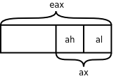
但如果指定优化选项 -O 编译，反汇编的结果就不一样了：
$ gcc main.c -g -O
$ objdump -dS a.out|less
...
buf[0] = recv;
80483ae: 0f b6 05 19 a0 04 08 movzbl 0x804a019,%eax
80483b5: a2 1a a0 04 08 mov %al,0x804a01a
buf[1] = recv;
80483ba: a2 1b a0 04 08 mov %al,0x804a01b
buf[2] = recv;
80483bf: a2 1c a0 04 08 mov %al,0x804a01c
send = ~buf[0];
send = ~buf[1];
send = ~buf[2];
80483c4: f7 d0 not %eax
80483c6: a2 18 a0 04 08 mov %al,0x804a018
...
前三条语句从串口接收三个字节，而编译生成的指令显然不符合我们的意图：只有第一条语句从内存地址 0x804a019 读一个字节到寄存器 eax 中，然后从寄存器 al 保存到 buf[0]，后两条语句就不再从内存地址 0x804a019 读取，而是直接把寄存器 al 的值保存到 buf[1] 和 buf[2]。后三条语句把 buf 中的三个字节取反再发送到串口，编译生成的指令也不符合我们的意图：只有最后一条语句把 eax 的值取反写到内存地址 0x804a018 了，前两条语句形同虚设，根本不生成指令。
为什么编译器优化的结果会错呢？因为编译器并不知道 0x804a018 和 0x804a019 是设备寄存器的地址，把它们当成普通的内存单元了。如果是普通的内存单元，只要程序不去改写它，它就不会变，可以先把内存单元里的值读到寄存器缓存起来，以后每次用到这个值就直接从寄存器读取，这样效率更高，我们知道读寄存器远比读内存要快。另一方面，如果对一个普通的内存单元连续做三次写操作，只有最后一次的值会保存到内存单元中，所以前两次写操作是多余的，可以优化掉。访问设备寄存器的代码这样优化就错了，因为设备寄存器往往具有以下特性：
- 设备寄存器中的数据不需要改写就可以自己发生变化，每次读上来的值都可能不一样。
- 连续多次向设备寄存器中写数据并不是在做无用功，而是有特殊意义的。
用优化选项编译生成的指令明显效率更高，但使用不当会出错，为了避免编译器自作聪明，把不该优化的也优化了，程序员应该明确告诉编译器哪些内存单元的访问是不能优化的，在 C 语言中可以用 volatile 限定符修饰变量，就是告诉编译器，即使在编译时指定了优化选项，每次读这个变量仍然要老老实实从内存读取，每次写这个变量也仍然要老老实实写回内存，不能省略任何步骤。我们把代码的开头几行改成：
/* artificial device registers */
volatile unsigned char recv;
volatile unsigned char send;
然后指定优化选项 -O 编译，查看反汇编的结果：
buf[0] = recv;
80483a2: 0f b6 05 19 a0 04 08 movzbl 0x804a019,%eax
80483a9: a2 1a a0 04 08 mov %al,0x804a01a
buf[1] = recv;
80483ae: 0f b6 15 19 a0 04 08 movzbl 0x804a019,%edx
80483b5: 88 15 1b a0 04 08 mov %dl,0x804a01b
buf[2] = recv;
80483bb: 0f b6 0d 19 a0 04 08 movzbl 0x804a019,%ecx
80483c2: 88 0d 1c a0 04 08 mov %cl,0x804a01c
send = ~buf[0];
80483c8: f7 d0 not %eax
80483ca: a2 18 a0 04 08 mov %al,0x804a018
send = ~buf[1];
80483cf: f7 d2 not %edx
80483d1: 88 15 18 a0 04 08 mov %dl,0x804a018
send = ~buf[2];
80483d7: f7 d1 not %ecx
80483d9: 88 0d 18 a0 04 08 mov %cl,0x804a018
确实每次读 recv 都从内存地址 0x804a019 读取，每次写 send 也都写到内存地址 0x804a018 了。值得注意的是，每次写 send 并不需要取出 buf 中的值，而是取出先前缓存在寄存器 eax、edx、ecx 中的值，做取反运算然后写下去，这是因为 buf 并没有用 volatile 限定，读者可以试着在 buf 的定义前面也加上 volatile，再优化编译，再查看反汇编的结果。
gcc 的编译优化选项有 -O0、-O、-O1、-O2、-O3、-Os 几种。-O0 表示不优化，这是缺省的选项。-O1、-O2 和 -O3 这几个选项一个比一个优化得更多，编译时间也更长。-O 和 -O1 相同。-Os 表示为缩小目标文件的尺寸而优化。具体每种选项做了哪些优化请参考 gcc(1) 的 Man Page。
从上面的例子还可以看到，如果在编译时指定了优化选项，源代码和生成指令的次序可能无法对应，甚至有些源代码可能不对应任何指令，被彻底优化掉了。这一点在用 gdb 做源码级调试时尤其需要注意（做指令级调试没关系），在为调试而编译时不要指定优化选项，否则可能无法一步步跟踪源代码的执行过程。
有了 volatile 限定符，是可以防止编译器优化对设备寄存器的访问，但是对于有 Cache 的平台，仅仅这样还不够，还是无法防止 Cache 优化对设备寄存器的访问。在访问普通的内存单元时，Cache 对程序员是透明的，比如执行了 movzbl 0x804a019,%eax 这样一条指令，我们并不知道 eax 的值是真的从内存地址 0x804a019 读到的，还是从 Cache 中读到的，如果 Cache 已经缓存了这个地址的数据就从 Cache 读，如果 Cache 没有缓存就从内存读，这些步骤都是硬件自动做的，而不是用指令控制 Cache 去做的，程序员写的指令中只有寄存器、内存地址，而没有 Cache，程序员甚至不需要知道 Cache 的存在。同样道理，如果执行了 mov %al,0x804a01a 这样一条指令，我们并不知道寄存器的值是真的写回内存了，还是只写到了 Cache 中，以后再由 Cache 写回内存，即使只写到了 Cache 中而暂时没有写回内存，下次读 0x804a01a 这个地址时仍然可以从 Cache 中读到上次写的数据。然而，在读写设备寄存器时 Cache 的存在就不容忽视了，如果串口发送和接收寄存器的内存地址被 Cache 缓存了会有什么问题呢？如下图所示。
图 19.8. 串口发送和接收寄存器被 Cache 缓存会有什么问题

如果串口发送寄存器的地址被 Cache 缓存，CPU 执行单元对串口发送寄存器做写操作都写到 Cache 中去了，串口发送寄存器并没有及时得到数据，也就不能及时发送，CPU 执行单元先后发出的 1、2、3 三个字节都会写到 Cache 中的同一个单元，最后 Cache 中只保存了第 3 个字节，如果这时 Cache 把数据写回到串口发送寄存器，只能把第 3 个字节发送出去，前两个字节就丢失了。与此类似，如果串口接收寄存器的地址被 Cache 缓存，CPU 执行单元在读第 1 个字节时，Cache 会从串口接收寄存器读上来缓存，然而串口接收寄存器后面收到的 2、3 两个字节 Cache 并不知道，因为 Cache 把串口接收寄存器当作普通内存单元，并且相信内存单元中的数据是不会自己变的，以后每次读串口接收寄存器时，Cache 都会把缓存的第 1 个字节提供给 CPU 执行单元。
通常，有 Cache 的平台都有办法对某一段地址范围禁用 Cache，一般是在页表中设置的，可以设定哪些页面允许 Cache 缓存，哪些页面不允许 Cache 缓存，MMU 不仅要做地址转换和访问权限检查，也要和 Cache 协同工作。
除了设备寄存器需要用 volatile 限定之外，当一个全局变量被同一进程中的多个控制流程访问时也要用 volatile 限定，比如信号处理函数和多线程。
第 20 章 链接详解
1. 多目标文件的链接
现在我们把第 12 章「栈与队列」例 12.1「用堆栈实现倒序打印」拆成两个程序文件，stack.c 实现堆栈，而 main.c 使用堆栈：
/* stack.c */
char stack[512];
int top = -1;
void push(char c)
{
stack[++top] = c;
}
char pop(void)
{
return stack[top--];
}
int is_empty(void)
{
return top == -1;
}
这段程序和原来有点不同，在第 12 章「栈与队列」例 12.1「用堆栈实现倒序打印」中 top 总是指向栈顶元素的下一个元素，而在这段程序中 top 总是指向栈顶元素，所以要初始化成 -1 才表示空堆栈，这两种堆栈使用习惯都很常见。
/* main.c */
#include <stdio.h>
int a, b = 1;
int main(void)
{
push('a');
push('b');
push('c');
while(!is_empty())
putchar(pop());
putchar('\n');
return 0;
}
a 和 b 这两个变量没有用，只是为了顺便说明链接过程才加上的。编译的步骤和以前一样，可以一步编译：
$ gcc main.c stack.c -o main
也分可以多步编译：
$ gcc -c main.c
$ gcc -c stack.c
$ gcc main.o stack.o -o main
如果按照上章第 2 节「main 函数和启动例程」的做法，用 nm 命令查看目标文件的符号表，会发现 main.o 中有未定义的符号 push、pop、is_empty、putchar，前三个符号在 stack.o 中实现了，链接生成可执行文件 main 时可以做符号解析，而 putchar 是 libc 的库函数，在可执行文件 main 中仍然是未定义的，要在程序运行时做动态链接。
我们通过 readelf -a main 命令可以看到，main 的 .bss 段合并了 main.o 和 stack.o 的 .bss 段，其中包含了变量 a 和 stack，main 的 .data 段也合并了 main.o 和 stack.o 的 .data 段，其中包含了变量 b 和 top，main 的 .text 段合并了 main.o 和 stack.o 的 .text 段，包含了各函数的定义。如下图所示。
图 20.1. 多目标文件的链接

为什么在可执行文件 main 的每个段中来自 main.o 的变量或函数都在前面，而来自 stack.o 的变量或函数都在后面呢？我们可以试试把 gcc 命令中的两个目标文件反过来写：
$ gcc stack.o main.o -o main
结果正如我们所预料的，可执行文件 main 的每个段中来自 main.o 的变量或函数都排到后面了。实际上链接的过程是由一个链接脚本（Linker Script）控制的，链接脚本决定了给每个段分配什么地址，如何对齐，哪个段在前，哪个段在后，哪些段合并到同一个 Segment，另外链接脚本还要插入一些符号到最终生成的文件中，例如 __bss_start、_edata、_end 等。如果用 ld 做链接时没有用 -T 选项指定链接脚本，则使用 ld 的默认链接脚本，默认链接脚本可以用 ld --verbose 命令查看（由于比较长，只列出一些片断）：
$ ld --verbose
...
using internal linker script:
==================================================
/* Script for -z combreloc: combine and sort reloc sections */
OUTPUT_FORMAT("elf32-i386", "elf32-i386",
"elf32-i386")
OUTPUT_ARCH(i386)
ENTRY(_start)
...
SECTIONS
{
/* Read-only sections, merged into text segment: */
PROVIDE (__executable_start = 0x08048000); . = 0x08048000 + SIZEOF_HEADERS;
.interp : { *(.interp) }
.note.gnu.build-id : { *(.note.gnu.build-id) }
.hash : { *(.hash) }
.gnu.hash : { *(.gnu.hash) }
.dynsym : { *(.dynsym) }
.dynstr : { *(.dynstr) }
.gnu.version : { *(.gnu.version) }
.gnu.version_d : { *(.gnu.version_d) }
.gnu.version_r : { *(.gnu.version_r) }
.rel.dyn :
...
.rel.plt : { *(.rel.plt) }
...
.init :
...
.plt : { *(.plt) }
.text :
...
.fini :
...
.rodata : { *(.rodata .rodata.* .gnu.linkonce.r.*) }
...
.eh_frame : ONLY_IF_RO { KEEP (*(.eh_frame)) }
...
/* Adjust the address for the data segment. We want to adjust up to
the same address within the page on the next page up. */
. = ALIGN (CONSTANT (MAXPAGESIZE)) - ((CONSTANT (MAXPAGESIZE) - .) & (CONSTANT (MAXPAGESIZE) - 1)); . = DATA_SEGMENT_ALIGN (CONSTANT (MAXPAGESIZE), CONSTANT (COMMONPAGESIZE));
...
.ctors :
...
.dtors :
...
.jcr : { KEEP (*(.jcr)) }
...
.dynamic : { *(.dynamic) }
.got : { *(.got) }
...
.got.plt : { *(.got.plt) }
.data :
...
_edata = .; PROVIDE (edata = .);
__bss_start = .;
.bss :
...
_end = .; PROVIDE (end = .);
. = DATA_SEGMENT_END (.);
/* Stabs debugging sections. */
...
/* DWARF debug sections.
Symbols in the DWARF debugging sections are relative to the beginning
of the section so we begin them at 0. */
...
}
==================================================
ENTRY(_start) 说明 _start 是整个程序的入口点，因此 _start 是入口点并不是规定死的，是可以改用其它函数做入口点的。
PROVIDE (__executable_start = 0x08048000); . = 0x08048000 + SIZEOF_HEADERS; 是 Text Segment 的起始地址，这个 Segment 包含后面列出的那些段，.plt、.text、.rodata 等等。每个段的描述格式都是「段名 : { 组成 }」，例如 .plt : { *(.plt) }，左边表示最终生成的文件的 .plt 段，右边表示所有目标文件的 .plt 段，意思是最终生成的文件的 .plt 段由各目标文件的 .plt 段组成。
. = ALIGN (CONSTANT (MAXPAGESIZE)) - ((CONSTANT (MAXPAGESIZE) - .) & (CONSTANT (MAXPAGESIZE) - 1)); . = DATA_SEGMENT_ALIGN (CONSTANT (MAXPAGESIZE), CONSTANT (COMMONPAGESIZE)); 是 Data Segment 的起始地址，要做一系列的对齐操作，这个 Segment 包含后面列出的那些段，.got、.data、.bss等等。
Data Segment 的后面还有其它一些 Segment，主要是调试信息。关于链接脚本就介绍这么多，本书不做深入讨论。
2. 定义和声明
2.1. extern 和 static 关键字
在上一节我们把两个程序文件放在一起编译链接，main.c 用到的函数 push、pop 和 is_empty 由 stack.c 提供，其实有一点小问题，我们用 -Wall 选项编译 main.c 可以看到：
$ gcc -c main.c -Wall
main.c: In function ‘main’:
main.c:8: warning: implicit declaration of function ‘push’
main.c:12: warning: implicit declaration of function ‘is_empty’
main.c:13: warning: implicit declaration of function ‘pop’
这个问题我们在第 3 章「简单函数」第 2 节「自定义函数」讨论过，由于编译器在处理函数调用代码时没有找到函数原型，只好根据函数调用代码做隐式声明，把这三个函数声明为：
int push(char);
int pop(void);
int is_empty(void);
现在你应该比学第 3 章「简单函数」第 2 节「自定义函数」的时候更容易理解这条规则了。为什么编译器在处理函数调用代码时需要有函数原型？因为必须知道参数的类型和个数以及返回值的类型才知道生成什么样的指令。为什么隐式声明靠不住呢？因为隐式声明是从函数调用代码推导而来的，而事实上函数定义的形参类型可能跟函数调用代码传的实参类型并不一致，如果函数定义带有可变参数（例如 printf），那么从函数调用代码也看不出来这个函数带有可变参数，另外，从函数调用代码也看不出来返回值应该是什么类型，所以隐式声明只能规定返回值都是 int 型的。既然隐式声明靠不住，那编译器为什么不自己去找函数定义，而非要让我们在调用之前写函数原型呢？因为编译器往往不知道去哪里找函数定义，像上面的例子，我让编译器编译 main.c，而这几个函数的定义却在 stack.c 里，编译器又怎么会知道呢？所以编译器只能通过隐式声明来猜测函数原型，这种猜测往往会出错，但在比较简单的情况下还算可用，比如上一节的例子这么编译过去了也能得到正确结果。
现在我们在 main.c 中声明这几个函数的原型：
/* main.c */
#include <stdio.h>
extern void push(char);
extern char pop(void);
extern int is_empty(void);
int main(void)
{
push('a');
push('b');
push('c');
while(!is_empty())
putchar(pop());
putchar('\n');
return 0;
}
这样编译器就不会报警告了。在这里 extern 关键字表示这个标识符具有 External Linkage。External Linkage 的定义在上一章讲过，但现在应该更容易理解了，push 这个标识符具有 External Linkage 指的是：如果把 main.c 和 stack.c 链接在一起，如果 push 在 main.c 和 stack.c 中都有声明（在 stack.c 中的声明同时也是定义），那么这些声明指的是同一个函数，链接之后是同一个 GLOBAL 符号，代表同一个地址。函数声明中的 extern 也可以省略不写，不写 extern 的函数声明也表示这个函数具有 External Linkage。
如果用 static 关键字修饰一个函数声明，则表示该标识符具有 Internal Linkage，例如有以下两个程序文件：
/* foo.c */
static void foo(void) {}
/* main.c */
void foo(void);
int main(void) { foo(); return 0; }
编译链接在一起会出错：
$ gcc foo.c main.c
/tmp/ccRC2Yjn.o: In function `main':
main.c:(.text+0x12): undefined reference to `foo'
collect2: ld returned 1 exit status
虽然在 foo.c 中定义了函数 foo，但这个函数只具有 Internal Linkage，只有在 foo.c 中多次声明才表示同一个函数，而在 main.c 中声明就不表示它了。如果把 foo.c 编译成目标文件，函数名 foo 在其中是一个 LOCAL 的符号，不参与链接过程，所以在链接时，main.c 中用到一个 External Linkage 的 foo 函数，链接器却找不到它的定义在哪儿，无法确定它的地址，也就无法做符号解析，只好报错。凡是被多次声明的变量或函数，必须有且只有一个声明是定义，如果有多个定义，或者一个定义都没有，链接器就无法完成链接。
以上讲了用 static 和 extern 修饰函数声明的情况。现在来看用它们修饰变量声明的情况。仍然用 stack.c 和 main.c 的例子，如果我想在 main.c 中直接访问 stack.c 中定义的变量 top，则可以用 extern 声明它：
/* main.c */
#include <stdio.h>
void push(char);
char pop(void);
int is_empty(void);
extern int top;
int main(void)
{
push('a');
push('b');
push('c');
printf("%d\n", top);
while(!is_empty())
putchar(pop());
putchar('\n');
printf("%d\n", top);
return 0;
}
变量 top 具有 External Linkage，它的存储空间是在 stack.c 中分配的，所以 main.c 中的变量声明 extern int top; 不是变量定义，因为它不分配存储空间。以上函数和变量声明也可以写在 main 函数体里面，使所声明的标识符具有块作用域：
int main(void)
{
void push(char);
char pop(void);
int is_empty(void);
extern int top;
push('a');
push('b');
push('c');
printf("%d\n", top);
while(!is_empty())
putchar(pop());
putchar('\n');
printf("%d\n", top);
return 0;
}
注意，变量声明和函数声明有一点不同，函数声明的 extern 可写可不写，而变量声明如果不写 extern 意思就完全变了，如果上面的例子不写 extern 就表示在 main 函数中定义一个局部变量 top。另外要注意，stack.c 中的定义是 int top = -1;，而 main.c 中的声明不能加 Initializer，如果上面的例子写成 extern int top = -1; 则编译器会报错。
在 main.c 中可以通过变量声明来访问 stack.c 中的变量 top，但是从实现 stack.c 这个模块的角度来看，top 这个变量是不希望被外界访问到的，变量 top 和 stack 都属于这个模块的内部状态，外界应该只允许通过 push 和 pop 函数来改变模块的内部状态，这样才能保证堆栈的 LIFO 特性，如果外界可以随机访问 stack 或者随便修改 top，那么堆栈的状态就乱了。那怎么才能阻止外界访问 top 和 stack 呢？答案就是用 static 关键字把它们声明为 Internal Linkage 的：
/* stack.c */
static char stack[512];
static int top = -1;
void push(char c)
{
stack[++top] = c;
}
char pop(void)
{
return stack[top--];
}
int is_empty(void)
{
return top == -1;
}
这样，即使在 main.c 中用 extern 声明也访问不到 stack.c 的变量 top 和 stack。从而保护了 stack.c 模块的内部状态，这也是一种封装（Encapsulation）的思想。
用 static 关键字声明具有 Internal Linkage 的函数也是出于这个目的。在一个模块中，有些函数是提供给外界使用的，也称为导出（Export）给外界使用，这些函数声明为 External Linkage 的。有些函数只在模块内部使用而不希望被外界访问到，则声明为 Internal Linkage 的。
2.2. 头文件
我们继续前面关于 stack.c 和 main.c 的讨论。stack.c 这个模块封装了 top 和 stack 两个变量，导出了 push、pop、is_empty 三个函数接口，已经设计得比较完善了。但是使用这个模块的每个程序文件都要写三个函数声明也是很麻烦的，假设又有一个 foo.c也使用这个模块，main.c 和 foo.c 中各自要写三个函数声明。重复的代码总是应该尽量避免的，以前我们通过各种办法把重复的代码提取出来，比如在第 8 章「数组」第 2 节「数组应用实例：统计随机数」讲过用宏定义避免硬编码的问题，这次有什么办法呢？答案就是可以自己写一个头文件 stack.h：
/* stack.h */
#ifndef STACK_H
#define STACK_H
extern void push(char);
extern char pop(void);
extern int is_empty(void);
#endif
这样在 main.c 中只需包含这个头文件就可以了，而不需要写三个函数声明：
/* main.c */
#include <stdio.h>
#include "stack.h"
int main(void)
{
push('a');
push('b');
push('c');
while(!is_empty())
putchar(pop());
putchar('\n');
return 0;
}
首先说为什么 #include <stdio.h> 用角括号，而 #include "stack.h" 用引号。对于用角括号包含的头文件，gcc 首先查找 -I 选项指定的目录，然后查找系统的头文件目录（通常是 /usr/include，在我的系统上还包括 /usr/lib/gcc/i486-linux-gnu/4.3.2/include）；而对于用引号包含的头文件，gcc 首先查找包含头文件的 .c 文件所在的目录，然后查找 -I 选项指定的目录，然后查找系统的头文件目录。
假如三个代码文件都放在当前目录下：
$ tree
.
|-- main.c
|-- stack.c
`-- stack.h
0 directories, 3 files
则可以用 gcc -c main.c 编译，gcc 会自动在 main.c 所在的目录中找到 stack.h。假如把 stack.h 移到一个子目录下：
$ tree
.
|-- main.c
`-- stack
|-- stack.c
`-- stack.h
1 directory, 3 files
则需要用 gcc -c main.c -Istack 编译。用 -I 选项告诉 gcc 头文件要到子目录 stack 里找。
在 #include 预处理指示中可以使用相对路径，例如把上面的代码改成 #include "stack/stack.h"，那么编译时就不需要加 -Istack 选项了，因为 gcc 会自动在 main.c 所在的目录中查找，而头文件相对于 main.c 所在目录的相对路径正是 stack/stack.h。
在 stack.h 中我们又看到两个新的预处理指示 #ifndef STACK_H 和 #endif，意思是说，如果 STACK_H 这个宏没有定义过，那么从 #ifndef 到 #endif 之间的代码就包含在预处理的输出结果中，否则这一段代码就不出现在预处理的输出结果中。stack.h 这个头文件的内容整个被 #ifndef 和 #endif 括起来了，如果在包含这个头文件时 STACK_H 这个宏已经定义过了，则相当于这个头文件里什么都没有，包含了一个空文件。这有什么用呢？假如 main.c 包含了两次 stack.h：
...
#include "stack.h"
#include "stack.h"
int main(void)
{
...
则第一次包含 stack.h 时并没有定义 STACK_H 这个宏，因此头文件的内容包含在预处理的输出结果中：
...
#define STACK_H
extern void push(char);
extern char pop(void);
extern int is_empty(void);
#include "stack.h"
int main(void)
{
...
其中已经定义了 STACK_H 这个宏，因此第二次再包含 stack.h 就相当于包含了一个空文件，这就避免了头文件的内容被重复包含。这种保护头文件的写法称为 Header Guard，以后我们每写一个头文件都要加上 Header Guard，宏定义名就用头文件名的大写形式，这是规范的做法。
那为什么需要防止重复包含呢？谁会把一个头文件包含两次呢？像上面那么明显的错误没人会犯，但有时候重复包含的错误并不是那么明显的。比如：
#include "stack.h"
#include "foo.h"
然而 foo.h 里又包含了 bar.h，bar.h 里又包含了 stack.h。在规模较大的项目中头文件包含头文件的情况很常见，经常会包含四五层，这时候重复包含的问题就很难发现了。比如在我的系统头文件目录 /usr/include 中，errno.h 包含了 bits/errno.h，后者又包含了 linux/errno.h，后者又包含了 asm/errno.h，后者又包含了 asm-generic/errno.h。
另外一个问题是，就算我是重复包含了头文件，那有什么危害么？像上面的三个函数声明，在程序中声明两次也没有问题，对于具有 External Linkage 的函数，声明任意多次也都代表同一个函数。重复包含头文件有以下问题：
- 一是使预处理的速度变慢了，要处理很多本来不需要处理的头文件。
- 二是如果有
foo.h包含bar.h，bar.h又包含foo.h的情况，预处理器就陷入死循环了（其实编译器都会规定一个包含层数的上限）。 - 三是头文件里有些代码不允许重复出现，虽然变量和函数允许多次声明（只要不是多次定义就行），但头文件里有些代码是不允许多次出现的，比如
typedef类型定义和结构体 Tag 定义等，在一个程序文件中只允许出现一次。
还有一个问题，既然要 #include 头文件，那我不如直接在 main.c 中 #include "stack.c" 得了。这样把 stack.c 和 main.c 合并为同一个程序文件，相当于又回到最初的第 12 章「栈与队列」例 12.1「用堆栈实现倒序打印」了。当然这样也能编译通过，但是在一个规模较大的项目中不能这么做，假如又有一个 foo.c 也要使用 stack.c 这个模块怎么办呢？如果在 foo.c 里面也 #include "stack.c"，就相当于 push、pop、is_empty 这三个函数在 main.c 和 foo.c 中都有定义，那么 main.c 和 foo.c 就不能链接在一起了。如果采用包含头文件的办法，那么这三个函数只在 stack.c 中定义了一次，最后可以把 main.c、stack.c、foo.c 链接在一起。如下图所示：
图 20.2. 为什么要包含头文件而不是 .c 文件
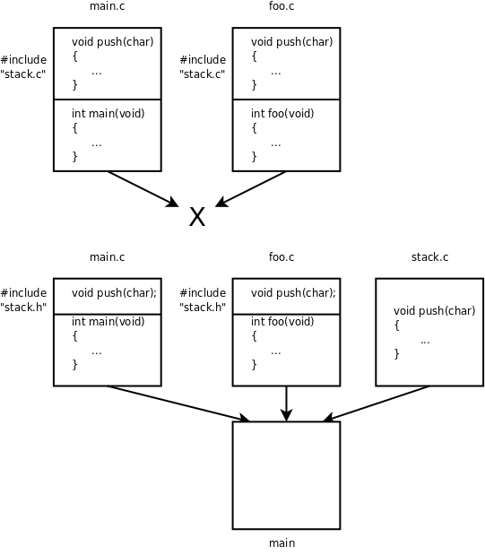
同样道理，头文件中的变量和函数声明一定不能是定义。如果头文件中出现变量或函数定义，这个头文件又被多个 .c 文件包含，那么这些 .c 文件就不能链接在一起了。
2.3. 定义和声明的详细规则
以上两节关于定义和声明只介绍了最基本的规则，在写代码时掌握这些基本规则就够用了，但其实C语言关于定义和声明还有很多复杂的规则，在分析错误原因或者维护规模较大的项目时需要了解这些规则。本节的两个表格出自 Standard C。
首先看关于函数声明的规则。
表 20.1. Storage Class 关键字对函数声明的作用
| Storage Class | File Scope Declaration | Block Scope Declaration |
|---|---|---|
| none | previous linkage can define | previous linkage cannot define |
| extern | previous linkage can define | previous linkage cannot define |
| static | internal linkage can define | N/A |
以前我们说「extern 关键字表示这个标识符具有 External Linkage」其实是不准确的，准确地说应该是 Previous Linkage。Previous Linkage 的定义是：这次声明的标识符具有什么样的 Linkage 取决于前一次声明，这前一次声明具有相同的标识符名，而且必须是文件作用域的声明，如果在程序文件中找不到前一次声明（这次声明是第一次声明），那么这个标识符具有 External Linkage。例如在一个程序文件中在文件作用域两次声明同一个函数：
static int f(void); /* internal linkage */
extern int f(void); /* previous linkage */
则这里的 extern 修饰的标识符具有 Interanl Linkage 而不是 External Linkage。从上表的前两行可以总结出我们先前所说的规则「函数声明加不加 extern 关键字都一样」。上表也说明了在文件作用域允许定义函数，在块作用域不允许定义函数，或者说函数定义不能嵌套。另外，在块作用域中不允许用 static 关键字声明函数。
关于变量声明的规则要复杂一些：
表 20.2. Storage Class关键字对变量声明的作用
| Storage Class | File Scope Declaration | Block Scope Declaration |
|---|---|---|
| none | external linkage static duration static initializer tentative definition | no linkage automatic duration dynamic initializer definition |
| extern | previous linkage static duration no initializer[*] not a definition | previous linkage static duration no initializer not a definition |
| static | internal linkage static duration static initializer tentative definition | no linkage static duration static initializer definition |
上表的每个单元格里分成四行，分别描述变量的链接属性、生存期，以及这种变量如何初始化，是否算变量定义。链接属性有 External Linkage、Internal Linkage、No Linkage 和 Previous Linkage 四种情况，生存期有 Static Duration 和 Automatic Duration 两种情况，请参考本章和上一章的定义。初始化有 Static Initializer 和 Dynamic Initializer 两种情况，前者表示 Initializer 中只能使用常量表达式，表达式的值必须在编译时就能确定，后者表示 Initializer 中可以使用任意的右值表达式，表达式的值可以在运行时计算。是否算变量定义有三种情况，Definition（算变量定义）、Not a Definition（不算变量定义）和 Tentative Definition（暂定的变量定义）。什么叫「暂定的变量定义」呢？一个变量声明具有文件作用域，没有 Storage Class 关键字修饰，或者用 static 关键字修饰，那么如果它有 Initializer 则编译器认为它就是一个变量定义，如果它没有 Initializer 则编译器暂定它是变量定义，如果程序文件中有这个变量的明确定义就用明确定义，如果程序文件没有这个变量的明确定义，就用这个暂定的变量定义[32]，这种情况下变量以 0 初始化。在 C99 中有一个例子：
int i1 = 1; // definition, external linkage
static int i2 = 2; // definition, internal linkage
extern int i3 = 3; // definition, external linkage
int i4; // tentative definition, external linkage
static int i5; // tentative definition, internal linkage
int i1; // valid tentative definition, refers to previous
int i2; // 6.2.2 renders undefined, linkage disagreement
int i3; // valid tentative definition, refers to previous
int i4; // valid tentative definition, refers to previous
int i5; // 6.2.2 renders undefined, linkage disagreement
extern int i1; // refers to previous, whose linkage is external
extern int i2; // refers to previous, whose linkage is internal
extern int i3; // refers to previous, whose linkage is external
extern int i4; // refers to previous, whose linkage is external
extern int i5; // refers to previous, whose linkage is internal
变量 i2 和 i5 第一次声明为 Internal Linkage，第二次又声明为 External Linkage，这是不允许的，编译器会报错。注意上表中标有 [*] 的单元格，对于文件作用域的 extern 变量声明，C99 是允许带 Initializer 的，并且认为它是一个定义，但是 gcc 对于这种写法会报警告，为了兼容性应避免这种写法。
[32] 由于本书没有提及将不完全类型进行组合的问题，所以这条规则被我简化了，真正的规则还要复杂一些。读者可以参考 C99 中有关 Incomplete Type 和 Composite Type 的条款。Tentative Definition 的完整定义在 C99 的 6.9.2 节条款 2。
3. 静态库
有时候需要把一组代码编译成一个库，这个库在很多项目中都要用到，例如 libc 就是这样一个库，我们在不同的程序中都会用到 libc 中的库函数（例如 printf），也会用到 libc 中的变量（例如以后要讲到的 environ 变量）。本节介绍怎么创建这样一个库。
我们继续用 stack.c 的例子。为了便于理解，我们把 stack.c 拆成四个程序文件（虽然实际上没太大必要），把 main.c 改得简单一些，头文件 stack.h 不变，本节用到的代码如下所示：
/* stack.c */
char stack[512];
int top = -1;
/* push.c */
extern char stack[512];
extern int top;
void push(char c)
{
stack[++top] = c;
}
/* pop.c */
extern char stack[512];
extern int top;
char pop(void)
{
return stack[top--];
}
/* is_empty.c */
extern int top;
int is_empty(void)
{
return top == -1;
}
/* stack.h */
#ifndef STACK_H
#define STACK_H
extern void push(char);
extern char pop(void);
extern int is_empty(void);
#endif
/* main.c */
#include <stdio.h>
#include "stack.h"
int main(void)
{
push('a');
return 0;
}
这些文件的目录结构是：
$ tree
.
|-- main.c
`-- stack
|-- is_empty.c
|-- pop.c
|-- push.c
|-- stack.c
`-- stack.h
1 directory, 6 files
我们把 stack.c、push.c、pop.c、is_empty.c 编译成目标文件：
$ gcc -c stack/stack.c stack/push.c stack/pop.c stack/is_empty.c
然后打包成一个静态库 libstack.a：
$ ar rs libstack.a stack.o push.o pop.o is_empty.o
ar: creating libstack.a
库文件名都是以 lib 开头的，静态库以 .a 作为后缀，表示 Archive。ar 命令类似于 tar 命令，起一个打包的作用，但是把目标文件打包成静态库只能用 ar 命令而不能用 tar 命令。选项 r 表示将后面的文件列表添加到文件包，如果文件包不存在就创建它，如果文件包中已有同名文件就替换成新的。s 是专用于生成静态库的，表示为静态库创建索引，这个索引被链接器使用。ranlib 命令也可以为静态库创建索引，以上命令等价于：
$ ar r libstack.a stack.o push.o pop.o is_empty.o
$ ranlib libstack.a
然后我们把 libstack.a 和 main.c 编译链接在一起：
$ gcc main.c -L. -lstack -Istack -o main
-L 选项告诉编译器去哪里找需要的库文件，-L. 表示在当前目录找。-lstack 告诉编译器要链接 libstack 库，-I 选项告诉编译器去哪里找头文件。注意，即使库文件就在当前目录，编译器默认也不会去找的，所以 -L. 选项不能少。编译器默认会找的目录可以用 -print-search-dirs 选项查看：
$ gcc -print-search-dirs
install: /usr/lib/gcc/i486-linux-gnu/4.3.2/
programs: =/usr/lib/gcc/i486-linux-gnu/4.3.2/:/usr/lib/gcc/i486-linux-gnu/4.3.2/:/usr/lib/gcc/i486-linux-gnu/:/usr/lib/gcc/i486-linux-gnu/4.3.2/:/usr/lib/gcc/i486-linux-gnu/:/usr/libexec/gcc/i486-linux-gnu/4.3.2/:/usr/libexec/gcc/i486-linux-gnu/:/usr/lib/gcc/i486-linux-gnu/4.3.2/:/usr/lib/gcc/i486-linux-gnu/:/usr/lib/gcc/i486-linux-gnu/4.3.2/../../../../i486-linux-gnu/bin/i486-linux-gnu/4.3.2/:/usr/lib/gcc/i486-linux-gnu/4.3.2/../../../../i486-linux-gnu/bin/
libraries: =/usr/lib/gcc/i486-linux-gnu/4.3.2/:/usr/lib/gcc/i486-linux-gnu/4.3.2/:/usr/lib/gcc/i486-linux-gnu/4.3.2/../../../../i486-linux-gnu/lib/i486-linux-gnu/4.3.2/:/usr/lib/gcc/i486-linux-gnu/4.3.2/../../../../i486-linux-gnu/lib/../lib/:/usr/lib/gcc/i486-linux-gnu/4.3.2/../../../i486-linux-gnu/4.3.2/:/usr/lib/gcc/i486-linux-gnu/4.3.2/../../../../lib/:/lib/i486-linux-gnu/4.3.2/:/lib/../lib/:/usr/lib/i486-linux-gnu/4.3.2/:/usr/lib/../lib/:/usr/lib/gcc/i486-linux-gnu/4.3.2/../../../../i486-linux-gnu/lib/:/usr/lib/gcc/i486-linux-gnu/4.3.2/../../../:/lib/:/usr/lib/
其中的 libraries 就是库文件的搜索路径列表，各路径之间用 : 号隔开。编译器会在这些搜索路径以及 -L 选项指定的路径中查找用 -l 选项指定的库，比如 -lstack，编译器会首先找有没有共享库 libstack.so，如果有就链接它，如果没有就找有没有静态库 libstack.a，如果有就链接它。所以编译器是优先考虑共享库的，如果希望编译器只链接静态库，可以指定 -static 选项。
那么链接共享库和链接静态库有什么区别呢？在上章第 2 节「main 函数和启动例程」讲过，在链接 libc 共享库时只是指定了动态链接器和该程序所需要的库文件，并没有真的做链接，可执行文件 main 中调用的 libc 库函数仍然是未定义符号，要在运行时做动态链接。而在链接静态库时，链接器会把静态库中的目标文件取出来和可执行文件真正链接在一起。我们通过反汇编看上一步生成的可执行文件 main：
$ objdump -d main
...
08048394 <main>:
8048394: 8d 4c 24 04 lea 0x4(%esp),%ecx
8048398: 83 e4 f0 and $0xfffffff0,%esp
804839b: ff 71 fc pushl -0x4(%ecx)
...
080483c0 <push>:
80483c0: 55 push %ebp
80483c1: 89 e5 mov %esp,%ebp
80483c3: 83 ec 04 sub $0x4,%esp
有意思的是，main.c 只调用了 push 这一个函数，所以链接生成的可执行文件中也只有 push 而没有 pop 和 is_empty。这是使用静态库的一个好处，链接器可以从静态库中只取出需要的部分来做链接。如果是直接把那些目标文件和 main.c 编译链接在一起：
$ gcc main.c stack.o push.o pop.o is_empty.o -Istack -o main
则没有用到的函数也会链接进来。当然另一个好处就是使用静态库只需写一个库文件名，而不需要写一长串目标文件名。
4. 共享库
4.1. 编译、链接、运行
组成共享库的目标文件和一般的目标文件有所不同，在编译时要加 -fPIC 选项，例如：
$ gcc -c -fPIC stack/stack.c stack/push.c stack/pop.c stack/is_empty.c
-f 后面跟一些编译选项，PIC 是其中一种，表示生成位置无关代码（Position Independent Code）。那么用 -fPIC 生成的目标文件和一般的目标文件有什么不同呢？下面分析这个问题。
我们知道一般的目标文件称为 Relocatable，在链接时可以把目标文件中各段的地址做重定位，重定位时需要修改指令。我们先不加 -fPIC 选项编译生成目标文件：
$ gcc -c -g stack/stack.c stack/push.c stack/pop.c stack/is_empty.c
由于接下来要用 objdump -dS 把反汇编指令和源代码穿插起来分析，所以用 -g 选项加调试信息。注意，加调试信息必须在编译每个目标文件时用 -g 选项，而不能只在最后编译生成可执行文件时用 -g 选项。反汇编查看 push.o：
$ objdump -dS push.o
push.o: file format elf32-i386
Disassembly of section .text:
00000000 <push>:
/* push.c */
extern char stack[512];
extern int top;
void push(char c)
{
0: 55 push %ebp
1: 89 e5 mov %esp,%ebp
3: 83 ec 04 sub $0x4,%esp
6: 8b 45 08 mov 0x8(%ebp),%eax
9: 88 45 fc mov %al,-0x4(%ebp)
stack[++top] = c;
c: a1 00 00 00 00 mov 0x0,%eax
11: 83 c0 01 add $0x1,%eax
14: a3 00 00 00 00 mov %eax,0x0
19: 8b 15 00 00 00 00 mov 0x0,%edx
1f: 0f b6 45 fc movzbl -0x4(%ebp),%eax
23: 88 82 00 00 00 00 mov %al,0x0(%edx)
}
29: c9 leave
2a: c3 ret
指令中凡是用到 stack 和 top 的地址都用 0x0 表示，准备在重定位时修改。再看 readelf 输出的 .rel.text 段的信息：
Relocation section '.rel.text' at offset 0x848 contains 4 entries:
Offset Info Type Sym.Value Sym. Name
0000000d 00001001 R_386_32 00000000 top
00000015 00001001 R_386_32 00000000 top
0000001b 00001001 R_386_32 00000000 top
00000025 00001101 R_386_32 00000000 stack
标出了指令中有四处需要在重定位时修改。下面编译链接成可执行文件之后再做反汇编分析：
$ gcc -g main.c stack.o push.o pop.o is_empty.o -Istack -o main
$ objdump -dS main
...
080483c0 <push>:
/* push.c */
extern char stack[512];
extern int top;
void push(char c)
{
80483c0: 55 push %ebp
80483c1: 89 e5 mov %esp,%ebp
80483c3: 83 ec 04 sub $0x4,%esp
80483c6: 8b 45 08 mov 0x8(%ebp),%eax
80483c9: 88 45 fc mov %al,-0x4(%ebp)
stack[++top] = c;
80483cc: a1 10 a0 04 08 mov 0x804a010,%eax
80483d1: 83 c0 01 add $0x1,%eax
80483d4: a3 10 a0 04 08 mov %eax,0x804a010
80483d9: 8b 15 10 a0 04 08 mov 0x804a010,%edx
80483df: 0f b6 45 fc movzbl -0x4(%ebp),%eax
80483e3: 88 82 40 a0 04 08 mov %al,0x804a040(%edx)
}
80483e9: c9 leave
80483ea: c3 ret
80483eb: 90 nop
...
原来指令中的 0x0 被修改成了 0x804a010 和 0x804a040，这样做了重定位之后，各段的加载地址就定死了，因为在指令中使用了绝对地址。
现在看用 -fPIC 编译生成的目标文件有什么不同：
$ gcc -c -g -fPIC stack/stack.c stack/push.c stack/pop.c stack/is_empty.c
$ objdump -dS push.o
push.o: file format elf32-i386
Disassembly of section .text:
00000000 <push>:
/* push.c */
extern char stack[512];
extern int top;
void push(char c)
{
0: 55 push %ebp
1: 89 e5 mov %esp,%ebp
3: 53 push %ebx
4: 83 ec 04 sub $0x4,%esp
7: e8 fc ff ff ff call 8 <push+0x8>
c: 81 c3 02 00 00 00 add $0x2,%ebx
12: 8b 45 08 mov 0x8(%ebp),%eax
15: 88 45 f8 mov %al,-0x8(%ebp)
stack[++top] = c;
18: 8b 83 00 00 00 00 mov 0x0(%ebx),%eax
1e: 8b 00 mov (%eax),%eax
20: 8d 50 01 lea 0x1(%eax),%edx
23: 8b 83 00 00 00 00 mov 0x0(%ebx),%eax
29: 89 10 mov %edx,(%eax)
2b: 8b 83 00 00 00 00 mov 0x0(%ebx),%eax
31: 8b 08 mov (%eax),%ecx
33: 8b 93 00 00 00 00 mov 0x0(%ebx),%edx
39: 0f b6 45 f8 movzbl -0x8(%ebp),%eax
3d: 88 04 0a mov %al,(%edx,%ecx,1)
}
40: 83 c4 04 add $0x4,%esp
43: 5b pop %ebx
44: 5d pop %ebp
45: c3 ret
Disassembly of section .text.__i686.get_pc_thunk.bx:
00000000 <__i686.get_pc_thunk.bx>:
0: 8b 1c 24 mov (%esp),%ebx
3: c3 ret
指令中用到的 stack 和 top 的地址不再以 0x0 表示，而是以 0x0(%ebx) 表示，但其中还是留有 0x0 准备做进一步修改。再看 readelf 输出的 .rel.text 段：
Relocation section '.rel.text' at offset 0x94c contains 6 entries:
Offset Info Type Sym.Value Sym. Name
00000008 00001202 R_386_PC32 00000000 __i686.get_pc_thunk.bx
0000000e 0000130a R_386_GOTPC 00000000 _GLOBAL_OFFSET_TABLE_
0000001a 00001403 R_386_GOT32 00000000 top
00000025 00001403 R_386_GOT32 00000000 top
0000002d 00001403 R_386_GOT32 00000000 top
00000035 00001503 R_386_GOT32 00000000 stack
top 和 stack 对应的记录类型不再是 R_386_32 了，而是 R_386_GOT32，有什么区别呢？我们先编译生成共享库再做反汇编分析：
$ gcc -shared -o libstack.so stack.o push.o pop.o is_empty.o
$ objdump -dS libstack.so
...
0000047c <push>:
/* push.c */
extern char stack[512];
extern int top;
void push(char c)
{
47c: 55 push %ebp
47d: 89 e5 mov %esp,%ebp
47f: 53 push %ebx
480: 83 ec 04 sub $0x4,%esp
483: e8 ef ff ff ff call 477 <__i686.get_pc_thunk.bx>
488: 81 c3 6c 1b 00 00 add $0x1b6c,%ebx
48e: 8b 45 08 mov 0x8(%ebp),%eax
491: 88 45 f8 mov %al,-0x8(%ebp)
stack[++top] = c;
494: 8b 83 f4 ff ff ff mov -0xc(%ebx),%eax
49a: 8b 00 mov (%eax),%eax
49c: 8d 50 01 lea 0x1(%eax),%edx
49f: 8b 83 f4 ff ff ff mov -0xc(%ebx),%eax
4a5: 89 10 mov %edx,(%eax)
4a7: 8b 83 f4 ff ff ff mov -0xc(%ebx),%eax
4ad: 8b 08 mov (%eax),%ecx
4af: 8b 93 f8 ff ff ff mov -0x8(%ebx),%edx
4b5: 0f b6 45 f8 movzbl -0x8(%ebp),%eax
4b9: 88 04 0a mov %al,(%edx,%ecx,1)
}
4bc: 83 c4 04 add $0x4,%esp
4bf: 5b pop %ebx
4c0: 5d pop %ebp
4c1: c3 ret
4c2: 90 nop
4c3: 90 nop
...
和先前的结果不同，指令中的 0x0(%ebx) 被修改成 -0xc(%ebx) 和 -0x8(%ebx)，而不是修改成绝对地址。所以共享库各段的加载地址并没有定死，可以加载到任意位置，因为指令中没有使用绝对地址，因此称为位置无关代码。另外，注意这几条指令：
494: 8b 83 f4 ff ff ff mov -0xc(%ebx),%eax
49a: 8b 00 mov (%eax),%eax
49c: 8d 50 01 lea 0x1(%eax),%edx
和先前的指令对比一下：
80483cc: a1 10 a0 04 08 mov 0x804a010,%eax
80483d1: 83 c0 01 add $0x1,%eax
可以发现，-0xc(%ebx) 这个地址并不是变量 top 的地址，这个地址的内存单元中又保存了另外一个地址，这另外一个地址才是变量 top 的地址，所以 mov -0xc(%ebx),%eax 是把变量 top 的地址传给 eax，而 mov (%eax),%eax 才是从 top 的地址中取出 top 的值传给 eax。lea 0x1(%eax),%edx 是把 top 的值加 1 存到 edx 中，如下图所示：
图 20.3. 间接寻址
top 和 stack 的绝对地址保存在一个地址表中，而指令通过地址表做间接寻址，因此避免了将绝对地址写死在指令中，这也是一种避免硬编码的策略。
现在把 main.c 和共享库编译链接在一起，然后运行：
$ gcc main.c -g -L. -lstack -Istack -o main
$ ./main
./main: error while loading shared libraries: libstack.so: cannot open shared object file: No such file or directory
结果出乎意料，编译的时候没问题，由于指定了 -L. 选项，编译器可以在当前目录下找到 libstack.so，而运行时却说找不到 libstack.so。那么运行时在哪些路径下找共享库呢？我们先用 ldd 命令查看可执行文件依赖于哪些共享库：
$ ldd main
linux-gate.so.1 => (0xb7f5c000)
libstack.so => not found
libc.so.6 => /lib/tls/i686/cmov/libc.so.6 (0xb7dcf000)
/lib/ld-linux.so.2 (0xb7f42000)
ldd 模拟运行一遍 main，在运行过程中做动态链接，从而得知这个可执行文件依赖于哪些共享库，每个共享库都在什么路径下，加载到进程地址空间的什么地址。/lib/ld-linux.so.2 是动态链接器，它的路径是在编译链接时指定的，我们在上章第 2 节「main 函数和启动例程」讲过 gcc 在做链接时用 -dynamic-linker 指定动态链接器的路径，它也像其它共享库一样加载到进程的地址空间中。libc.so.6 的路径 /lib/tls/i686/cmov/libc.so.6 是由动态链接器 ld-linux.so.2 在做动态链接时搜索到的，而 libstack.so 的路径没有找到。linux-gate.so.1 这个共享库其实并不存在于文件系统中，它是由内核虚拟出来的共享库，所以它没有对应的路径，它负责处理系统调用。总之，共享库的搜索路径由动态链接器决定，从 ld.so(8) 的 Man Page 可以查到共享库路径的搜索顺序：
- 首先在环境变量
LD_LIBRARY_PATH所记录的路径中查找。 - 然后从缓存文件
/etc/ld.so.cache中查找。这个缓存文件由ldconfig命令读取配置文件/etc/ld.so.conf之后生成，稍后详细解释。 - 如果上述步骤都找不到，则到默认的系统路径中查找，先是 /usr/lib 然后是 /lib。
先试试第一种方法，在运行 main 时通过环境变量 LD_LIBRARY_PATH 把当前目录添加到共享库的搜索路径：
$ LD_LIBRARY_PATH=. ./main
这种方法只适合在开发中临时用一下，通常 LD_LIBRARY_PATH 是不推荐使用的，尽量不要设置这个环境变量，理由可以参考 Why LD_LIBRARY_PATH is bad。
再试试第二种方法，这是最常用的方法。把 libstack.so 所在目录的绝对路径（比如 /home/akaedu/somedir）添加到 /etc/ld.so.conf 中（该文件中每个路径占一行），然后运行 ldconfig：
$ sudo ldconfig -v
...
/home/akaedu/somedir:
libstack.so -> libstack.so
/lib:
libe2p.so.2 -> libe2p.so.2.3
libncursesw.so.5 -> libncursesw.so.5.6
...
/usr/lib:
libkdeinit_klauncher.so -> libkdeinit_klauncher.so
libv4l2.so.0 -> libv4l2.so.0
...
/usr/lib64:
/lib/tls: (hwcap: 0x8000000000000000)
/usr/lib/sse2: (hwcap: 0x0000000004000000)
...
/usr/lib/tls: (hwcap: 0x8000000000000000)
...
/usr/lib/i686: (hwcap: 0x0008000000000000)
/usr/lib/i586: (hwcap: 0x0004000000000000)
...
/usr/lib/i486: (hwcap: 0x0002000000000000)
...
/lib/tls/i686: (hwcap: 0x8008000000000000)
/usr/lib/i686/cmov: (hwcap: 0x0008000000008000)
...
/lib/tls/i686/cmov: (hwcap: 0x8008000000008000)
ldconfig 命令除了处理 /etc/ld.so.conf 中配置的目录之外，还处理一些默认目录，如 /lib、/usr/lib 等，处理之后生成 /etc/ld.so.cache 缓存文件，动态链接器就从这个缓存中搜索共享库。hwcap 是 x86 平台的 Linux 特有的一种机制，系统检测到当前平台是 i686 而不是 i586 或 i486，所以在运行程序时使用 i686 的库，这样可以更好地发挥平台的性能，也可以利用一些新的指令，所以上面 ldd 命令的输出结果显示动态链接器搜索到的 libc 是 /lib/tls/i686/cmov/libc.so.6，而不是 /lib/libc.so.6。现在再用 ldd 命令查看，libstack.so 就能找到了：
$ ldd main
linux-gate.so.1 => (0xb809c000)
libstack.so => /home/akaedu/somedir/libstack.so (0xb806a000)
libc.so.6 => /lib/tls/i686/cmov/libc.so.6 (0xb7f0c000)
/lib/ld-linux.so.2 (0xb8082000)
第三种方法就是把 libstack.so 拷到 /usr/lib 或 /lib 目录，这样可以确保动态链接器能找到这个共享库。
其实还有第四种方法，在编译可执行文件 main 的时候就把 libstack.so 的路径写死在可执行文件中：
$ gcc main.c -g -L. -lstack -Istack -o main -Wl,-rpath,/home/akaedu/somedir
-Wl,-rpath,/home/akaedu/somedir 表示 -rpath /home/akaedu/somedir 是由 gcc 传递给链接器的选项。可以看到 readelf 的结果多了一条 rpath 记录：
$ readelf -a main
...
Dynamic section at offset 0xf10 contains 23 entries:
Tag Type Name/Value
0x00000001 (NEEDED) Shared library: [libstack.so]
0x00000001 (NEEDED) Shared library: [libc.so.6]
0x0000000f (RPATH) Library rpath: [/home/akaedu/somedir]
...
还可以看出，可执行文件运行时需要哪些共享库也都记录在 .dynamic 段中。当然 rpath 这种办法也是不推荐的，把共享库的路径定死了，失去了灵活性。
4.2. 动态链接的过程
本节研究一下在 main.c 中调用共享库的函数 push 是如何实现的。首先反汇编看一下 main 的指令：
$ objdump -dS main
...
Disassembly of section .plt:
080483a8 <__gmon_start__@plt-0x10>:
80483a8: ff 35 f8 9f 04 08 pushl 0x8049ff8
80483ae: ff 25 fc 9f 04 08 jmp *0x8049ffc
80483b4: 00 00 add %al,(%eax)
...
080483d8 <push@plt>:
80483d8: ff 25 08 a0 04 08 jmp *0x804a008
80483de: 68 10 00 00 00 push $0x10
80483e3: e9 c0 ff ff ff jmp 80483a8 <_init+0x30>
Disassembly of section .text:
...
080484a4 <main>:
/* main.c */
#include <stdio.h>
#include "stack.h"
int main(void)
{
80484a4: 8d 4c 24 04 lea 0x4(%esp),%ecx
80484a8: 83 e4 f0 and $0xfffffff0,%esp
80484ab: ff 71 fc pushl -0x4(%ecx)
80484ae: 55 push %ebp
80484af: 89 e5 mov %esp,%ebp
80484b1: 51 push %ecx
80484b2: 83 ec 04 sub $0x4,%esp
push('a');
80484b5: c7 04 24 61 00 00 00 movl $0x61,(%esp)
80484bc: e8 17 ff ff ff call 80483d8 <push@plt>
...
和本章第 3 节「静态库」链接静态库不同，push 函数没有链接到可执行文件中。而且 call 80483d8 <push@plt> 这条指令调用的也不是 push 函数的地址。共享库是位置无关代码，在运行时可以加载到任意地址，其加载地址只有在动态链接时才能确定，所以在 main 函数中不可能直接通过绝对地址调用 push 函数，也是通过间接寻址来找 push 函数的。对照着上面的指令，我们用 gdb 跟踪一下：
$ gdb main
...
(gdb) start
Breakpoint 1 at 0x80484b5: file main.c, line 7.
Starting program: /home/akaedu/somedir/main
main () at main.c:7
7 push('a');
(gdb) si
0x080484bc 7 push('a');
(gdb) si
0x080483d8 in push@plt ()
Current language: auto; currently asm
跳转到 .plt 段中，现在将要执行一条 jmp *0x804a008 指令，我们看看 0x804a008 这个地址里存的是什么：
(gdb) x 0x804a008
0x804a008 <_GLOBAL_OFFSET_TABLE_+20>: 0x080483de
原来就是下一条指令 push $0x10 的地址。继续跟踪下去：
(gdb) si
0x080483de in push@plt ()
(gdb) si
0x080483e3 in push@plt ()
(gdb) si
0x080483a8 in ?? ()
(gdb) si
0x080483ae in ?? ()
(gdb) si
0xb806a080 in ?? () from /lib/ld-linux.so.2
最终进入了动态链接器 /lib/ld-linux.so.2，在其中完成动态链接的过程并调用 push 函数，我们不深入这些细节了，直接用 finish 命令返回到 main 函数：
(gdb) finish
Run till exit from #0 0xb806a080 in ?? () from /lib/ld-linux.so.2
main () at main.c:8
8 return 0;
Current language: auto; currently c
这时再看看 0x804a008 这个地址里存的是什么：
(gdb) x 0x804a008
0x804a008 <_GLOBAL_OFFSET_TABLE_+20>: 0xb803f47c
(gdb) x 0xb803f47c
0xb803f47c <push>: 0x53e58955
动态链接器已经把 push 函数的地址存在这里了，所以下次再调用 push 函数就可以直接从 jmp *0x804a008 指令跳到它的地址，而不必再进入 /lib/ld-linux.so.2 做动态链接了。
4.3. 共享库的命名惯例
你可能已经注意到了，系统的共享库通常带有符号链接，例如：
$ ls -l /lib
...
-rwxr-xr-x 1 root root 1315024 2009-01-09 22:10 libc-2.8.90.so
lrwxrwxrwx 1 root root 14 2008-07-04 05:58 libcap.so.1 -> libcap.so.1.10
-rw-r--r-- 1 root root 10316 2007-08-01 03:20 libcap.so.1.10
lrwxrwxrwx 1 root root 14 2008-11-01 08:55 libcap.so.2 -> libcap.so.2.10
-rw-r--r-- 1 root root 13792 2008-06-12 21:39 libcap.so.2.10
...
lrwxrwxrwx 1 root root 14 2009-01-13 09:28 libc.so.6 -> libc-2.8.90.so
...
$ ls -l /usr/lib/libc.so
-rw-r--r-- 1 root root 238 2009-01-09 21:59 /usr/lib/libc.so
按照共享库的命名惯例，每个共享库有三个文件名：real name、soname 和 linker name。真正的库文件（而不是符号链接）的名字是 real name，包含完整的共享库版本号。例如上面的 libcap.so.1.10、libc-2.8.90.so 等。
soname 是一个符号链接的名字，只包含共享库的主版本号，主版本号一致即可保证库函数的接口一致，因此应用程序的 .dynamic 段只记录共享库的 soname，只要 soname 一致，这个共享库就可以用。例如上面的 libcap.so.1 和 libcap.so.2 是两个主版本号不同的 libcap，有些应用程序依赖于 libcap.so.1，有些应用程序依赖于 libcap.so.2，但对于依赖 libcap.so.1 的应用程序来说，真正的库文件不管是 libcap.so.1.10 还是 libcap.so.1.11 都可以用，所以使用共享库可以很方便地升级库文件而不需要重新编译应用程序，这是静态库所没有的优点。注意 libc 的版本编号有一点特殊，libc-2.8.90.so 的主版本号是 6 而不是 2 或 2.8。
linker name 仅在编译链接时使用，gcc 的 -L 选项应该指定 linker name 所在的目录。有的 linker name 是库文件的一个符号链接，有的 linker name 是一段链接脚本。例如上面的 libc.so 就是一个 linker name，它是一段链接脚本：
$ cat /usr/lib/libc.so
/* GNU ld script
Use the shared library, but some functions are only in
the static library, so try that secondarily. */
OUTPUT_FORMAT(elf32-i386)
GROUP ( /lib/libc.so.6 /usr/lib/libc_nonshared.a AS_NEEDED ( /lib/ld-linux.so.2 ) )
下面重新编译我们的 libstack，指定它的 soname：
$ gcc -shared -Wl,-soname,libstack.so.1 -o libstack.so.1.0 stack.o push.o pop.o is_empty.o
这样编译生成的库文件是 libstack.so.1.0，是 real name，但这个库文件中记录了它的 soname 是 libstack.so.1：
$ readelf -a libstack.so.1.0
...
Dynamic section at offset 0xf10 contains 22 entries:
Tag Type Name/Value
0x00000001 (NEEDED) Shared library: [libc.so.6]
0x0000000e (SONAME) Library soname: [libstack.so.1]
...
如果把 libstack.so.1.0 所在的目录加入 /etc/ld.so.conf 中，然后运行 ldconfig 命令，ldconfig 会自动创建一个 soname 的符号链接：
$ sudo ldconfig
$ ls -l libstack*
lrwxrwxrwx 1 root root 15 2009-01-21 17:52 libstack.so.1 -> libstack.so.1.0
-rwxr-xr-x 1 akaedu akaedu 10142 2009-01-21 17:49 libstack.so.1.0
但这样编译链接 main.c 却会报错：
$ gcc main.c -L. -lstack -Istack -o main
/usr/bin/ld: cannot find -lstack
collect2: ld returned 1 exit status
注意，要做这个实验，你得把先前编译的 libstack 共享库、静态库都删掉，如果先前拷到 /lib 或者 /usr/lib 下了也删掉，只留下 libstack.so.1.0 和 libstack.so.1，这样你会发现编译器不认这两个名字，因为编译器只认 linker name。可以先创建一个 linker name 的符号链接，然后再编译就没问题了：
$ ln -s libstack.so.1.0 libstack.so
$ gcc main.c -L. -lstack -Istack -o main
5. 虚拟内存管理
我们知道操作系统利用体系结构提供的 VA 到 PA 的转换机制实现虚拟内存管理。有了共享库的基础知识之后，现在我们可以进一步理解虚拟内存管理了。首先分析一个例子：
$ ps
PID TTY TIME CMD
29977 pts/0 00:00:00 bash
30032 pts/0 00:00:00 ps
$ cat /proc/29977/maps
08048000-080f4000 r-xp 00000000 08:15 688142 /bin/bash
080f4000-080f9000 rw-p 000ac000 08:15 688142 /bin/bash
080f9000-080fe000 rw-p 080f9000 00:00 0
09283000-09497000 rw-p 09283000 00:00 0 [heap]
b7ca8000-b7cb2000 r-xp 00000000 08:15 581665 /lib/tls/i686/cmov/libnss_files-2.8.90.so
b7cb2000-b7cb3000 r--p 00009000 08:15 581665 /lib/tls/i686/cmov/libnss_files-2.8.90.so
b7cb3000-b7cb4000 rw-p 0000a000 08:15 581665 /lib/tls/i686/cmov/libnss_files-2.8.90.so
...
b7e15000-b7f6d000 r-xp 00000000 08:15 581656 /lib/tls/i686/cmov/libc-2.8.90.so
b7f6d000-b7f6f000 r--p 00158000 08:15 581656 /lib/tls/i686/cmov/libc-2.8.90.so
b7f6f000-b7f70000 rw-p 0015a000 08:15 581656 /lib/tls/i686/cmov/libc-2.8.90.so
...
b7fbd000-b7fd7000 r-xp 00000000 08:15 565466 /lib/ld-2.8.90.so
b7fd7000-b7fd8000 r-xp b7fd7000 00:00 0 [vdso]
b7fd8000-b7fd9000 r--p 0001a000 08:15 565466 /lib/ld-2.8.90.so
b7fd9000-b7fda000 rw-p 0001b000 08:15 565466 /lib/ld-2.8.90.so
bfac5000-bfada000 rw-p bffeb000 00:00 0 [stack]
用 ps 命令查看当前终端下的进程，得知 bash 进程的 id 是 29977，然后用 cat /proc/29977/maps 命令查看它的虚拟地址空间。/proc 目录中的文件并不是真正的磁盘文件，而是由内核虚拟出来的文件系统，当前系统中运行的每个进程在 /proc 下都有一个子目录，目录名就是进程的 id，查看目录下的文件可以得到该进程的相关信息。此外，用 pmap 29977 命令也可以得到类似的输出结果。
图 20.4. 进程地址空间
在第 17 章「计算机体系结构基础」第 4 节「MMU」讲过，x86 平台的虚拟地址空间是 0x0000 0000~0xffff ffff，大致上前 3GB（0x0000 0000 ~ 0xbfff ffff）是用户空间，后 1GB（0xc000 0000~0xffff ffff）是内核空间，在这里得到了印证。0x0804 8000-0x080f 4000 是从 /bin/bash 加载到内存的，访问权限为 r-x，表示 Text Segment，包含 .text 段、.rodata 段、.plt 段等。0x080f 4000 - 0x080f 9000 也是从 /bin/bash 加载到内存的，访问权限为 rw-，表示 Data Segment，包含 .data 段、.bss 段等。
0x0928 3000-0x0949 7000 不是从磁盘文件加载到内存的，这段空间称为堆（Heap），以后会讲到用 malloc 函数动态分配内存是在这里分配的。从 0xb7ca 8000 开始是共享库的映射空间，每个共享库也分为几个 Segment，每个 Segment 有不同的访问权限。可以看到，从堆空间的结束地址（0x0949 7000）到共享库映射空间的起始地址（0xb7ca 8000）之间有很大的地址空洞，在动态分配内存时堆空间是可以向高地址增长的。堆空间的地址上限（0x09497000）称为 Break，堆空间要向高地址增长就要抬高 Break，映射新的虚拟内存页面到物理内存，这是通过系统调用 brk 实现的，malloc 函数也是调用 brk 向内核请求分配内存的。
/lib/ld-2.8.90.so 就是动态链接器 /lib/ld-linux.so.2，后者是前者的符号链接。标有 [vdso] 的地址范围是 linux-gate.so.1 的映射空间，我们讲过这个共享库是由内核虚拟出来的。0xbfac 5000 - 0xbfad a000是栈空间，其中高地址的部分保存着进程的环境变量和命令行参数，低地址的部分保存函数栈帧，栈空间是向低地址增长的，但显然没有堆空间那么大的可供增长的余地，因为实际的应用程序动态分配大量内存的并不少见，但是有几十层深的函数调用并且每层调用都有很多局部变量的非常少见。总之，栈空间是可能用尽的，并且比堆空间更容易用尽，在第 5 章「深入理解函数」第 3 节「递归」讲过，无穷递归会用尽栈空间最终导致段错误。
虚拟内存管理起到了什么作用呢？可以从以下几个方面来理解。
第一，虚拟内存管理可以控制物理内存的访问权限。物理内存本身是不限制访问的，任何地址都可以读写，而操作系统要求不同的页面具有不同的访问权限，这是利用 CPU 模式和 MMU 的内存保护机制实现的。例如，Text Segment被只读保护起来，防止被错误的指令意外改写，内核地址空间也被保护起来，防止在用户模式下执行错误的指令意外改写内核数据。这样，执行错误指令或恶意代码的破坏能力受到了限制，顶多使当前进程因段错误终止，而不会影响整个系统的稳定性。
第二，虚拟内存管理最主要的作用是让每个进程有独立的地址空间。所谓独立的地址空间是指，不同进程中的同一个 VA 被 MMU 映射到不同的 PA，并且在某一个进程中访问任何地址都不可能访问到另外一个进程的数据，这样使得任何一个进程由于执行错误指令或恶意代码导致的非法内存访问都不会意外改写其它进程的数据，不会影响其它进程的运行，从而保证整个系统的稳定性。另一方面，每个进程都认为自己独占整个虚拟地址空间，这样链接器和加载器的实现会比较容易，不必考虑各进程的地址范围是否冲突。
继续前面的实验，再打开一个终端窗口，看一下这个新的 bash 进程的地址空间，可以发现和先前的 bash 进程地址空间的布局差不多：
$ ps
PID TTY TIME CMD
30697 pts/1 00:00:00 bash
30749 pts/1 00:00:00 ps
$ cat /proc/30697/maps
08048000-080f4000 r-xp 00000000 08:15 688142 /bin/bash
080f4000-080f9000 rw-p 000ac000 08:15 688142 /bin/bash
080f9000-080fe000 rw-p 080f9000 00:00 0
082d7000-084f9000 rw-p 082d7000 00:00 0 [heap]
b7cf1000-b7cfb000 r-xp 00000000 08:15 581665 /lib/tls/i686/cmov/libnss_files-2.8.90.so
b7cfb000-b7cfc000 r--p 00009000 08:15 581665 /lib/tls/i686/cmov/libnss_files-2.8.90.so
b7cfc000-b7cfd000 rw-p 0000a000 08:15 581665 /lib/tls/i686/cmov/libnss_files-2.8.90.so
...
b7e5e000-b7fb6000 r-xp 00000000 08:15 581656 /lib/tls/i686/cmov/libc-2.8.90.so
b7fb6000-b7fb8000 r--p 00158000 08:15 581656 /lib/tls/i686/cmov/libc-2.8.90.so
b7fb8000-b7fb9000 rw-p 0015a000 08:15 581656 /lib/tls/i686/cmov/libc-2.8.90.so
...
b8006000-b8020000 r-xp 00000000 08:15 565466 /lib/ld-2.8.90.so
b8020000-b8021000 r-xp b8020000 00:00 0 [vdso]
b8021000-b8022000 r--p 0001a000 08:15 565466 /lib/ld-2.8.90.so
b8022000-b8023000 rw-p 0001b000 08:15 565466 /lib/ld-2.8.90.so
bff0e000-bff23000 rw-p bffeb000 00:00 0 [stack]
该进程也占用了 0x0000 0000-0xbfff ffff 的地址空间，Text Segment 也是 0x0804 8000-0x080f 4000，Data Segment 也是 0x080f 4000-0x080f 9000，和先前的进程一模一样，因为这些地址是在编译链接时写进 /bin/bash 这个可执行文件的，两个进程都加载它。这两个进程在同一个系统中同时运行着，它们的 Data Segment 占用相同的 VA，但是两个进程各自干各自的事情，显然 Data Segment 中的数据应该是不同的，相同的 VA 怎么会有不同的数据呢？因为它们被映射到不同的 PA。如下图所示。
图 20.5. 进程地址空间是独立的
从图中还可以看到，两个进程都是 bash 进程，Text Segment 是一样的，并且 Text Segment 是只读的，不会被改写，因此操作系统会安排两个进程的 Text Segment 共享相同的物理页面。由于每个进程都有自己的一套 VA 到 PA 的映射表，整个地址空间中的任何 VA 都在每个进程自己的映射表中查找相应的 PA，因此不可能访问到其它进程的地址，也就没有可能意外改写其它进程的数据。
另外，注意到两个进程的共享库加载地址并不相同，共享库的加载地址是在运行时决定的，而不是写在 /bin/bash 这个可执行文件中。但即使如此，也不影响两个进程共享相同物理页面中的共享库，当然，只有只读的部分是共享的，可读可写的部分不共享。
使用共享库可以大大节省内存。比如 libc，系统中几乎所有的进程都映射 libc到自己的进程地址空间，而 libc 的只读部分在物理内存中只需要存在一份，就可以被所有进程共享，这就是「共享库」这个名称的由来了。
现在我们也可以理解为什么共享库必须是位置无关代码了。比如 libc，不同的进程虽然共享 libc 所在的物理页面，但这些物理页面被映射到各进程的虚拟地址空间时却位于不同的地址，所以要求 libc 的代码不管加载到什么地址都能正确执行。
第三，VA 到 PA 的映射会给分配和释放内存带来方便，物理地址不连续的几块内存可以映射成虚拟地址连续的一块内存。比如要用 malloc 分配一块很大的内存空间，虽然有足够多的空闲物理内存，却没有足够大的连续空闲内存，这时就可以分配多个不连续的物理页面而映射到连续的虚拟地址范围。如下图所示。
图 20.6. 不连续的 PA 可以映射为连续的 VA
第四，一个系统如果同时运行着很多进程，为各进程分配的内存之和可能会大于实际可用的物理内存，虚拟内存管理使得这种情况下各进程仍然能够正常运行。因为各进程分配的只不过是虚拟内存的页面，这些页面的数据可以映射到物理页面，也可以临时保存到磁盘上而不占用物理页面，在磁盘上临时保存虚拟内存页面的可能是一个磁盘分区，也可能是一个磁盘文件，称为交换设备（Swap Device）。当物理内存不够用时，将一些不常用的物理页面中的数据临时保存到交换设备，然后这个物理页面就认为是空闲的了，可以重新分配给进程使用，这个过程称为换出（Page out）。如果进程要用到被换出的页面，就从交换设备再加载回物理内存，这称为换入（Page in）。换出和换入操作统称为换页（Paging），因此：
系统中可分配的内存总量 = 物理内存的大小 + 交换设备的大小
如下图所示。第一张图是换出，将物理页面中的数据保存到磁盘，并解除地址映射，释放物理页面。第二张图是换入，从空闲的物理页面中分配一个，将磁盘暂存的页面加载回内存，并建立地址映射。
图 20.7. 换页
第 21 章 预处理
1. 预处理的步骤
现在我们全面了解一下 C 编译器做语法解析之前的预处理步骤：
-
把第 2 章「常量、变量和表达式」第 2 节「常量」提到过的三连符替换成相应的单字符。
-
把用
\字符续行的多行代码接成一行。例如：#define STR "hello, "\ "world"经过这个预处理步骤之后接成一行：
#define STR "hello, " "world"这种续行的写法要求
\后面紧跟换行，中间不能有其它空白字符。 -
把注释（不管是单行注释还是多行注释）都替换成一个空格。
-
经过以上两步之后去掉了一些换行，有的换行在续行过程中去掉了，有的换行在多行注释之中，也随着注释一起去掉了，剩下的代码行称为逻辑代码行。然后预处理器把逻辑代码行划分成 Token和空白字符，这时的 Token 称为预处理 Token，包括标识符、整数常量、浮点数常量、字符常量、字符串、运算符和其它符号。继续上面的例子，两个源代码行被接成一个逻辑代码行，然后这个逻辑代码行被划分成 Token 和空白字符：
#，define，空格，STR，空格，"hello, "，Tab，Tab，"world"。 -
在 Token 中识别出预处理指示，做相应的预处理动作，如果遇到
#include预处理指示，则把相应的源文件包含进来，并对源文件做以上 1 - 4 步预处理。如果遇到宏定义则做宏展开。 我们早在第 8 章「数组」第 2 节「数组应用实例：统计随机数」就认识了预处理指示这个概念，现在给出它的严格定义。一条预处理指示由一个逻辑代码行组成，以#开头，后面跟若干个预处理 Token，在预处理指示中允许使用的空白字符只有空格和 Tab。 -
找出字符常量或字符串中的转义序列，用相应的字节来替换它，比如把
\n替换成字节0x0a。 -
把相邻的字符串连接起来。继续上面的例子，如果代码中有：
printf( STR);经过第 4 步处理划分成以下 Token：
printf，(，换行，Tab，STR，)，;，换行。经过第 5 步宏展开后变成以下 Token：printf，(，换行，Tab，"hello, "，Tab，Tab，"world"，)，;，换行。然后把相邻的字符串连接起来，变成以下 Token：printf，(，换行，Tab，"hello, world"，)，;，换行。 -
经过以上处理之后，把空白字符丢掉，把 Token 交给 C 编译器做语法解析，这时就不再是预处理 Token，而称为 C Token了。这里丢掉的空白字符包括空格、换行、水平 Tab、垂直 Tab、分页符。继续上面的例子，最后交给 C 编译器做语法解析的 Token 是：
printf，(，"hello, world"，)，;。注意，把一个预处理指示写成多行要用\续行，因为根据定义，一条预处理指示只能由一个逻辑代码行组成，而把 C 代码写成多行则不需要用\续行，因为换行在 C 代码中只不过是一种空白字符，在做语法解析时所有空白字符都已经丢掉了。
2. 宏定义
较大的项目都会用大量的宏定义来组织代码，你可以看看 /usr/include 下面的头文件中用了多少个宏定义。看起来宏展开就是做个替换而已，其实里面有比较复杂的规则，C 语言有很多复杂但不常用的语法规则本书并不涉及，但有关宏展开的语法规则本节却力图做全面讲解，因为它很重要也很常用。
2.1. 函数式宏定义
以前我们用过的 #define N 20 或 #define STR "hello, world" 这种宏定义可以称为变量式宏定义（Object-like Macro），宏定义名可以像变量一样在代码中使用。另外一种宏定义可以像函数调用一样在代码中使用，称为函数式宏定义（Function-like Macro）。例如编辑一个文件 main.c：
#define MAX(a, b) ((a)>(b)?(a):(b))
k = MAX(i&0x0f, j&0x0f)
我们想看第二行的表达式展开成什么样，可以用 gcc 的 -E 选项或 cpp 命令，尽管这个 C 程序不合语法，但没关系，我们只做预处理而不编译，不会检查程序是否符合 C 语法。
$ cpp main.c
# 1 "main.c"
# 1 "<built-in>"
# 1 "<command-line>"
# 1 "main.c"
k = ((i&0x0f)>(j&0x0f)?(i&0x0f):(j&0x0f))
就像函数调用一样，把两个实参分别替换到宏定义中形参 a 和 b 的位置。注意这种函数式宏定义和真正的函数调用有什么不同：
- 函数式宏定义的参数没有类型，预处理器只负责做形式上的替换，而不做参数类型检查，所以传参时要格外小心。
- 调用真正函数的代码和调用函数式宏定义的代码编译生成的指令不同。如果
MAX是个真正的函数，那么它的函数体return a > b ? a : b;要编译生成指令，代码中出现的每次调用也要编译生成传参指令和call指令。而如果MAX是个函数式宏定义，这个宏定义本身倒不必编译生成指令，但是代码中出现的每次调用编译生成的指令都相当于一个函数体，而不是简单的几条传参指令和call指令。所以，使用函数式宏定义编译生成的目标文件会比较大。 - 定义这种宏要格外小心，如果上面的定义写成
#define MAX(a, b) (a>b?a:b)，省去内层括号，则宏展开就成了k = (i&0x0f>j&0x0f?i&0x0f:j&0x0f)，运算的优先级就错了。同样道理，这个宏定义的外层括号也是不能省的，想一想为什么。 - 调用函数时先求实参表达式的值再传给形参，如果实参表达式有 Side Effect，那么这些 Side Effect 只发生一次。例如
MAX(++a, ++b)，如果MAX是个真正的函数，a和b只增加一次。但如果MAX是上面那样的宏定义，则要展开成k = ((++a)>(++b)?(++a):(++b))，a和b就不一定是增加一次还是两次了。 - 即使实参没有 Side Effect，使用函数式宏定义也往往会导致较低的代码执行效率。下面举一个极端的例子，也是个很有意思的例子。
例 21.1. 函数式宏定义
#define MAX(a, b) ((a)>(b)?(a):(b))
int a[] = { 9, 3, 5, 2, 1, 0, 8, 7, 6, 4 };
int max(int n)
{
return n == 0 ? a[0] : MAX(a[n], max(n-1));
}
int main(void)
{
max(9);
return 0;
}
这段代码从一个数组中找出最大的数，如果 MAX 是个真正的函数，这个算法就是从前到后遍历一遍数组，时间复杂度是 Θ(n)，而现在 MAX 是这样一个函数式宏定义，思考一下这个算法的时间复杂度是多少？
尽管函数式宏定义和真正的函数相比有很多缺点，但只要小心使用还是会显著提高代码的执行效率，毕竟省去了分配和释放栈帧、传参、传返回值等一系列工作，因此那些简短并且被频繁调用的函数经常用函数式宏定义来代替实现。例如 C 标准库的很多函数都提供两种实现，一种是真正的函数实现，一种是宏定义实现，这一点以后还要详细解释。
函数式宏定义经常写成这样的形式（取自内核代码 include/linux/pm.h）：
#define device_init_wakeup(dev,val) \
do { \
device_can_wakeup(dev) = !!(val); \
device_set_wakeup_enable(dev,val); \
} while(0)
为什么要用 do { ... } while(0) 括起来呢？不括起来会有什么问题呢？
#define device_init_wakeup(dev,val) \
device_can_wakeup(dev) = !!(val); \
device_set_wakeup_enable(dev,val);
if (n > 0)
device_init_wakeup(d, v);
这样宏展开之后，函数体的第二条语句不在 if 条件中。那么简单地用 { ... } 括起来组成一个语句块不行吗？
#define device_init_wakeup(dev,val) \
{ device_can_wakeup(dev) = !!(val); \
device_set_wakeup_enable(dev,val); }
if (n > 0)
device_init_wakeup(d, v);
else
continue;
问题出在 device_init_wakeup(d, v); 末尾的 ; 号，如果不允许写这个 ; 号，看起来不像个函数调用，可如果写了这个 ; 号，宏展开之后就有语法错误，if 语句被这个 ; 号结束掉了，没法跟 else 配对。因此，do { ... } while(0) 是一种比较好的解决办法。
如果在一个程序文件中重复定义一个宏，C 语言规定这些重复的宏定义必须一模一样。例如这样的重复定义是允许的：
#define OBJ_LIKE (1 - 1)
#define OBJ_LIKE /* comment */ (1/* comment */-/* comment */ 1)/* comment */
在定义的前后多些空白（空格、Tab、注释）没有关系，在定义之中多些空白或少些空白也没有关系，但在定义之中有空白和没有空白被认为是不同的，所以这样的重复定义是不允许的：
#define OBJ_LIKE (1 - 1)
#define OBJ_LIKE (1-1)
如果需要重新定义一个宏，和原来的定义不同，可以先用 #undef 取消原来的定义，再重新定义，例如：
#define X 3
... /* X is 3 */
#undef X
... /* X has no definition */
#define X 2
... /* X is 2 */
2.2. 内联函数
C99 引入一个新关键字 inline，用于定义内联函数（inline function）。这种用法在内核代码中很常见，例如 include/linux/rwsem.h中：
static inline void down_read(struct rw_semaphore *sem)
{
might_sleep();
rwsemtrace(sem,"Entering down_read");
__down_read(sem);
rwsemtrace(sem,"Leaving down_read");
}
inline 关键字告诉编译器，这个函数的调用要尽可能快，可以当普通的函数调用实现，也可以用宏展开的办法实现。我们做个实验，把上一节的例子改一下：
例 21.2. 内联函数
inline int MAX(int a, int b)
{
return a > b ? a : b;
}
int a[] = { 9, 3, 5, 2, 1, 0, 8, 7, 6, 4 };
int max(int n)
{
return n == 0 ? a[0] : MAX(a[n], max(n-1));
}
int main(void)
{
max(9);
return 0;
}
按往常的步骤编译然后反汇编：
$ gcc main.c -g
$ objdump -dS a.out
...
int max(int n)
{
8048369: 55 push %ebp
804836a: 89 e5 mov %esp,%ebp
804836c: 83 ec 0c sub $0xc,%esp
return n == 0 ? a[0] : MAX(a[n], max(n-1));
804836f: 83 7d 08 00 cmpl $0x0,0x8(%ebp)
8048373: 75 0a jne 804837f <max+0x16>
8048375: a1 c0 95 04 08 mov 0x80495c0,%eax
804837a: 89 45 fc mov %eax,-0x4(%ebp)
804837d: eb 29 jmp 80483a8 <max+0x3f>
804837f: 8b 45 08 mov 0x8(%ebp),%eax
8048382: 83 e8 01 sub $0x1,%eax
8048385: 89 04 24 mov %eax,(%esp)
8048388: e8 dc ff ff ff call 8048369 <max>
804838d: 89 c2 mov %eax,%edx
804838f: 8b 45 08 mov 0x8(%ebp),%eax
8048392: 8b 04 85 c0 95 04 08 mov 0x80495c0(,%eax,4),%eax
8048399: 89 54 24 04 mov %edx,0x4(%esp)
804839d: 89 04 24 mov %eax,(%esp)
80483a0: e8 9f ff ff ff call 8048344 <MAX>
80483a5: 89 45 fc mov %eax,-0x4(%ebp)
80483a8: 8b 45 fc mov -0x4(%ebp),%eax
}
...
可以看到 MAX 是作为普通函数调用的。如果指定优化选项编译，然后反汇编：
$ gcc main.c -g -O
$ objdump -dS a.out
...
int max(int n)
{
8048355: 55 push %ebp
8048356: 89 e5 mov %esp,%ebp
8048358: 53 push %ebx
8048359: 83 ec 04 sub $0x4,%esp
804835c: 8b 5d 08 mov 0x8(%ebp),%ebx
return n == 0 ? a[0] : MAX(a[n], max(n-1));
804835f: 85 db test %ebx,%ebx
8048361: 75 07 jne 804836a <max+0x15>
8048363: a1 a0 95 04 08 mov 0x80495a0,%eax
8048368: eb 18 jmp 8048382 <max+0x2d>
804836a: 8d 43 ff lea -0x1(%ebx),%eax
804836d: 89 04 24 mov %eax,(%esp)
8048370: e8 e0 ff ff ff call 8048355 <max>
inline int MAX(int a, int b)
{
return a > b ? a : b;
8048375: 8b 14 9d a0 95 04 08 mov 0x80495a0(,%ebx,4),%edx
804837c: 39 d0 cmp %edx,%eax
804837e: 7d 02 jge 8048382 <max+0x2d>
8048380: 89 d0 mov %edx,%eax
int a[] = { 9, 3, 5, 2, 1, 0, 8, 7, 6, 4 };
int max(int n)
{
return n == 0 ? a[0] : MAX(a[n], max(n-1));
}
8048382: 83 c4 04 add $0x4,%esp
8048385: 5b pop %ebx
8048386: 5d pop %ebp
8048387: c3 ret
...
可以看到，并没有 call 指令调用 MAX 函数，MAX 函数的指令是内联在 max 函数中的，由于源代码和指令的次序无法对应，max 和 MAX 函数的源代码也交错在一起显示。
2.3. #、## 运算符和可变参数
在函数式宏定义中，# 运算符用于创建字符串，# 运算符后面应该跟一个形参（中间可以有空格或 Tab），例如：
#define STR(s) # s
STR(hello world)
用 cpp 命令预处理之后是 "hello␣world"，自动用 " 号把实参括起来成为一个字符串，并且实参中的连续多个空白字符被替换成一个空格。
再比如：
#define STR(s) #s
fputs(STR(strncmp("ab\"c\0d", "abc", '\4"')
== 0) STR(: @\n), s);
预处理之后是 fputs("strncmp(\"ab\\\"c\\0d\", \"abc\", '\\4\"') == 0" ": @\n", s);，注意如果实参中包含字符常量或字符串，则宏展开之后字符串的界定符 " 要替换成 \"，字符常量或字符串中的 \ 和 " 字符要替换成 \\ 和 \"。
在宏定义中可以用 ## 运算符把前后两个预处理 Token 连接成一个预处理 Token，和 # 运算符不同，## 运算符不仅限于函数式宏定义，变量式宏定义也可以用。例如：
#define CONCAT(a, b) a##b
CONCAT(con, cat)
预处理之后是 concat。再比如，要定义一个宏展开成两个 # 号，可以这样定义：
#define HASH_HASH # ## #
中间的 ## 是运算符，宏展开时前后两个 # 号被这个运算符连接在一起。注意中间的两个空格是不可少的，如果写成 ####，会被划分成 ## 和 ## 两个 Token，而根据定义 ## 运算符用于连接前后两个预处理 Token，不能出现在宏定义的开头或末尾，所以会报错。
我们知道 printf 函数带有可变参数，函数式宏定义也可以带可变参数，同样是在参数列表中用 ... 表示可变参数。例如：
#define showlist(...) printf(#__VA_ARGS__)
#define report(test, ...) ((test)?printf(#test):\
printf(__VA_ARGS__))
showlist(The first, second, and third items.);
report(x>y, "x is %d but y is %d", x, y);
预处理之后变成：
printf("The first, second, and third items.");
((x>y)?printf("x>y"): printf("x is %d but y is %d", x, y));
在宏定义中，可变参数的部分用 __VA_ARGS__ 表示，实参中对应 ... 的几个参数可以看成一个参数替换到宏定义中 __VA_ARGS__ 所在的地方。
调用函数式宏定义允许传空参数，这一点和函数调用不同，通过下面几个例子理解空参数的用法。
#define FOO() foo
FOO()
预处理之后变成 foo。FOO 在定义时不带参数，在调用时也不允许传参数给它。
#define FOO(a) foo##a
FOO(bar)
FOO()
预处理之后变成：
foobar
foo
FOO 在定义时带一个参数，在调用时必须传一个参数给它，如果不传参数则表示传了一个空参数。
#define FOO(a, b, c) a##b##c
FOO(1,2,3)
FOO(1,2,)
FOO(1,,3)
FOO(,,3)
预处理之后变成：
123
12
13
3
FOO 在定义时带三个参数，在调用时也必须传三个参数给它，空参数的位置可以空着，但必须给够三个参数，FOO(1,2) 这样的调用是错误的。
#define FOO(a, ...) a##__VA_ARGS__
FOO(1)
FOO(1,2,3,)
预处理之后变成：
1
12,3,
FOO(1) 这个调用相当于可变参数部分传了一个空参数，FOO(1,2,3,) 这个调用相当于可变参数部分传了三个参数，第三个是空参数。
gcc 有一种扩展语法，如果 ## 运算符用在 __VA_ARGS__ 前面，除了起连接作用之外还有特殊的含义，例如内核代码 net/netfilter/nf_conntrack_proto_sctp.c 中的：
#define DEBUGP(format, ...) printk(format, ## __VA_ARGS__)
printk 这个内核函数相当于 printf，也带有格式化字符串和可变参数，由于内核不能调用 libc 的函数，所以另外实现了一个打印函数。这个函数式宏定义可以这样调用：DEBUGP("info no. %d", 1)。也可以这样调用：DEBUGP("info")。后者相当于可变参数部分传了一个空参数，但展开后并不是 printk("info",)，而是 printk("info")，当 __VA_ARGS 是空参数时，## 运算符把它前面的 , 号「吃」掉了。
2.4. 宏展开的步骤
以上举的宏展开的例子都是最简单的，有些宏展开的过程要做多次替换，例如：
#define sh(x) printf("n" #x "=%d, or %d\n",n##x,alt[x])
#define sub_z 26
sh(sub_z)
sh(sub_z) 要用 sh(x) 这个宏定义来展开，形参 x 对应的实参是 sub_z，替换过程如下：
#x要替换成"sub_z"。n##x要替换成nsub_z。- 除了带
#和##运算符的参数之外，其它参数在替换之前要对实参本身做充分的展开，所以应该先把sub_z展开成 26 再替换到alt[x]中x的位置。 - 现在展开成了
printf("n" "sub_z" "=%d, or %d\n",nsub_z,alt[26])，所有参数都替换完了，这时编译器会再扫描一遍，再找出可以展开的宏定义来展开，假设nsub_z或alt是变量式宏定义，这时会进一步展开。
再举一个例子：
#define x 3
#define f(a) f(x * (a))
#undef x
#define x 2
#define g f
#define t(a) a
t(t(g)(0) + t)(1);
展开的步骤是：
- 先把
g展开成f再替换到#define t(a) a中，得到t(f(0) + t)(1);。 - 根据
#define f(a) f(x * (a))，得到t(f(x * (0)) + t)(1);。 - 把
x替换成 2，得到t(f(2 * (0)) + t)(1);。注意，一开始定义x为 3，但是后来用#undef x取消了x的定义，又重新定义x为2。当处理到t(t(g)(0) + t)(1);这一行代码时x已经定义成 2 了，所以用 2 来替换。还要注意一点，现在得到的t(f(2 * (0)) + t)(1);中仍然有f，但不能再次根据#define f(a) f(x * (a))展开了，f(2 * (0))就是由展开f(0)得到的，这里面再遇到f就不展开了，这样规定可以避免无穷展开（类似于无穷递归），因此我们可以放心地使用递归定义，例如#define a a[0]，#define a a.member等。 - 根据
#define t(a) a，最终展开成f(2 * (0)) + t(1);。这时不能再展开t(1)了，因为这里的t就是由展开t(f(2 * (0)) + t)得到的，所以不能再展开了。
3. 条件预处理指示
我们在上章第 2.2 节「头文件」中见过 Header Guard 的用法：
#ifndef HEADER_FILENAME
#define HEADER_FILENAME
/* body of header */
#endif
条件预处理指示也常用于源代码的配置管理，例如：
#if MACHINE == 68000
int x;
#elif MACHINE == 8086
long x;
#else /* all others */
#error UNKNOWN TARGET MACHINE
#endif
假设这段程序是为多种平台编写的，在 68000 平台上需要定义 x 为 int 型，在 8086 平台上需要定义 x 为 long 型，对其它平台暂不提供支持，就可以用条件预处理指示来写。如果在预处理这段代码之前，MACHINE 被定义为 68000，则包含 intx; 这段代码；否则如果 MACHINE 被定义为 8086，则包含 long x; 这段代码；否则（MACHINE 没有定义，或者定义为其它值），包含 #error UNKNOWN TARGET MACHINE 这段代码，编译器遇到这个预处理指示就报错退出，错误信息就是 UNKNOWN TARGET MACHINE。
如果要为 8086 平台编译这段代码，有几种可选的办法：
-
手动编辑代码，在前面添一行
#define MACHINE 8086。这样做的缺点是难以管理，如果这个项目中有很多源文件都需要定义MACHINE，每次要为 8086 平台编译就得把这些定义全部改成 8086，每次要为 68000 平台编译就得把这些定义全部改成 68000。 -
在所有需要配置的源文件开头包含一个头文件，在头文件中定义
#define MACHINE 8086，这样只需要改一个头文件就可以影响所有包含它的源文件。通常这个头文件由配置工具生成，比如在 Linux 内核源代码的目录下运行make menuconfig命令可以出来一个配置菜单，在其中配置的选项会自动转换成头文件include/linux/autoconf.h中的宏定义。举一个具体的例子，在内核配置菜单中用回车键和方向键进入
Device Drivers ---> Network device support，然后用空格键选中Network device support（菜单项左边的[ ]括号内会出现一个*号），然后保存退出，会生成一个名为.config的隐藏文件，其内容类似于：... # # Network device support # CONFIG_NETDEVICES=y # CONFIG_DUMMY is not set # CONFIG_BONDING is not set # CONFIG_EQUALIZER is not set # CONFIG_TUN is not set ...然后运行
make命令编译内核，这时根据.config文件生成头文件include/linux/autoconf.h，其内容类似于：... /* * Network device support */ #define CONFIG_NETDEVICES 1 #undef CONFIG_DUMMY #undef CONFIG_BONDING #undef CONFIG_EQUALIZER #undef CONFIG_TUN ...上面的代码用
#undef确保取消一些宏的定义，如果先前没有定义过CONFIG_DUMMY，用#undef CONFIG_DUMMY取消它的定义没有任何作用，也不算错。include/linux/autoconf.h被另一个头文件include/linux/config.h所包含，通常内核代码包含后一个头文件，例如net/core/sock.c：... #include <linux/config.h> ... int sock_setsockopt(struct socket *sock, int level, int optname, char __user *optval, int optlen) { ... #ifdef CONFIG_NETDEVICES case SO_BINDTODEVICE: { ... } #endif ...再比如
drivers/isdn/i4l/isdn_common.c：... #include <linux/config.h> ... static int isdn_ioctl(struct inode *inode, struct file *file, uint cmd, ulong arg) { ... #ifdef CONFIG_NETDEVICES case IIOCNETGPN: /* Get peer phone number of a connected * isdn network interface */ if (arg) { if (copy_from_user(&phone, argp, sizeof(phone))) return -EFAULT; return isdn_net_getpeer(&phone, argp); } else return -EINVAL; #endif ... #ifdef CONFIG_NETDEVICES case IIOCNETAIF: ... #endif /* CONFIG_NETDEVICES */ ...这样，在配置菜单中所做的配置通过条件预处理最终决定了哪些代码被编译到内核中。
#ifdef或#if可以嵌套使用，但预处理指示通常都顶头写不缩进，为了区分嵌套的层次，可以像上面的代码中最后一行那样，在#endif处用注释写清楚它结束的是哪个#if或#ifdef。 -
要定义一个宏不一定非得在代码中用
#define定义，早在第 11 章「排序与查找」第 6 节「折半查找」我们就见过用gcc的-D选项定义一个宏NDEBUG。对于上面的例子，我们需要给MACHINE定义一个值，可以写成类似这样的命令：gcc -c -DMACHINE=8086 main.c。这种办法需要给每个编译命令都加上适当的选项，和第 2 种方法相比似乎也很麻烦，第 2 种方法在头文件中只写一次宏定义就可以在很多源文件中生效，第 3 种方法能不能做到「只写一次到处生效」呢？等以后学习了 Makefile 就有办法了。
最后通过下面的例子说一下 #if 后面的表达式：
#define VERSION 2
#if defined x || y || VERSION < 3
- 首先处理
defined运算符，defined运算符一般用作表达式中的一部分，如果单独使用，#if defined x相当于#ifdef x，而#if !defined x相当于#ifndef x。在这个例子中，如果x这个宏有定义，则把defined x替换为 1，否则替换为 0，因此变成#if 0 || y || VERSION < 3。 - 然后把有定义的宏展开，变成
#if 0 || y || 2 < 3。 - 把没有定义的宏替换成 0，变成
#if 0 || 0 || 2 < 3，注意，即使前面定义了一个变量名是y，在这一步也还是替换成 0，因为#if的表达式必须在编译时求值，其中包含的名字只能是宏定义。 - 把得到的表达式
0 || 0 || 2 < 3像 C 表达式一样求值，求值的结果是#if 1，因此条件成立。
4. 其它预处理特性
#pragma 预处理指示供编译器实现一些非标准的特性，C 标准没有规定 #pragma 后面应该写什么以及起什么作用，由编译器自己规定。有的编译器用 #pragma 定义一些特殊功能寄存器名，有的编译器用 #pragma 定位链接地址，本书不做深入讨论。如果编译器在代码中碰到不认识的 #pragma 指示则忽略它，例如 gcc 的 #pragma 指示都是 #pragma GCC ... 这种形式，用别的编译器编译则忽略这些指示。
C 标准规定了几个特殊的宏，在不同的地方使用可以自动展开成不同的值，常用的有 __FILE__ 和__LINE__，__FILE__ 展开为当前源文件的文件名，是一个字符串，__LINE__ 展开为当前代码行的行号，是一个整数。这两个宏在源代码中不同的位置使用会自动取不同的值，显然不是用 #define 能定义得出来的，它们是编译器内建的特殊的宏。在打印调试信息时打印这两个宏可以给开发者非常有用的提示，例如在第 11 章「排序与查找」第 6 节「折半查找」我们看到 assert 函数打印的错误信息就有 __FILE__ 和 __LINE__ 的值。现在我们自己实现这个 assert 函数，以理解它的原理。这个实现出自 Standard C Library：
例 21.3. assert.h 的一种实现
/* assert.h standard header */
#undef assert /* remove existing definition */
#ifdef NDEBUG
#define assert(test) ((void)0)
#else /* NDEBUG not defined */
void _Assert(char *);
/* macros */
#define _STR(x) _VAL(x)
#define _VAL(x) #x
#define assert(test) ((test) ? (void)0 \
: _Assert(__FILE__ ":" _STR(__LINE__) " " #test))
#endif
通过这个例子可以全面复习本章所讲的知识。C 标准规定 assert 应该实现为宏定义而不是一个真正的函数，并且 assert(test) 这个表达式的值应该是 void 类型的。首先用 #undef assert 确保取消前面对 assert 的定义，然后分两种情况：如果定义了 NDEBUG，那么 assert(test) 直接定义成一个 void ，什么也不做；如果没有定义 NDEBUG，则要判断测试条件 test 是否成立，如果条件成立就什么也不做，如果不成立则调用 _Assert 函数。假设在 main.c 文件的第 33 行调用 assert(is_sorted())，那么 __FILE__ 是字符串 "main.c"，__LINE__ 是整数33，#test 是字符串 "is_sorted()"。注意 _STR(__LINE__) 的展开过程：首先展开成 _VAL(33)，然后进一步展开成字符串 "33"。这样，最后 _Assert 调用的形式是 _Assert("main.c" ":" "33" " " "is_sorted()")，传给 _Assert 函数的字符串是 "main.c:33 is_sorted()"。_Assert 函数是我们自己定义的，在另一个源文件中：
/* xassert.c _Assert function */
#include <stdio.h>
#include <stdlib.h>
void _Assert(char *mesg)
{ /* print assertion message and abort */
fputs(mesg, stderr);
fputs(" -- assertion failed\n", stderr);
abort();
}
注意，在头文件 assert.h 中自己定义的内部使用的标识符都以 _ 线开头，例如 _STR，_VAL，_Assert，因为我们在模拟 C 标准库的实现，在第 2 章「常量、变量和表达式」第 3 节「变量」讲过，以 _ 线开头的标识符通常由编译器和 C 语言库使用，在 /usr/include 下的头文件中你可以看到大量 _ 线开头的标识符。另外一个问题，为什么我们不直接在 assert 的宏定义中调用 fputs 和 abort 呢？因为调用这两个函数需要包含 stdio.h 和 stdlib.h，C 标准库的头文件应该是相互独立的，一个程序只要包含 assert.h 就应该能使用 assert，而不应该再依赖于别的头文件。_Assert 中的 fputs 向标准错误输出打印错误信息，abort 异常终止当前进程，这些函数以后再详细讨论。
现在测试一下我们的 assert 实现，把 assert.h 和 xassert.c 和测试代码 main.c 放在同一个目录下。
/* main.c */
#include "assert.h"
int main(void)
{
assert(2>3);
return 0;
}
注意 #include "assert.h" 要用 " 引号而不要用 <> 括号，以保证包含的是我们自己写的 assert.h 而非 C 标准库的头文件。然后编译运行：
$ gcc main.c xassert.c
$ ./a.out
main.c:6 2>3 -- assertion failed
Aborted
在打印调试信息时除了文件名和行号之外还可以打印出当前函数名，C99 引入一个特殊的标识符 __func__ 支持这一功能。这个标识符应该是一个变量名而不是宏定义，不属于预处理的范畴，但它的作用和 __FILE__、__LINE__ 类似，所以放在一起讲。例如：
例 21.4. 特殊标识符 __func__
#include <stdio.h>
void myfunc(void)
{
printf("%s\n", __func__);
}
int main(void)
{
myfunc();
printf("%s\n", __func__);
return 0;
}
$ gcc main.c
$ ./a.out
myfunc
main
第 22 章 Makefile 基础
1. 基本规则
除了 Hello World 这种极简单的程序之外，一般的程序都是由多个源文件编译链接而成的，这些源文件的处理步骤通常用 Makefile 来管理。Makefile 起什么作用呢？我们先看一个例子，这个例子由第 12 章「栈与队列」例 12.3「用深度优先搜索解迷宫问题」改写而成：
/* main.c */
#include <stdio.h>
#include "main.h"
#include "stack.h"
#include "maze.h"
struct point predecessor[MAX_ROW][MAX_COL] = {
{{-1,-1}, {-1,-1}, {-1,-1}, {-1,-1}, {-1,-1}},
{{-1,-1}, {-1,-1}, {-1,-1}, {-1,-1}, {-1,-1}},
{{-1,-1}, {-1,-1}, {-1,-1}, {-1,-1}, {-1,-1}},
{{-1,-1}, {-1,-1}, {-1,-1}, {-1,-1}, {-1,-1}},
{{-1,-1}, {-1,-1}, {-1,-1}, {-1,-1}, {-1,-1}},
};
void visit(int row, int col, struct point pre)
{
struct point visit_point = { row, col };
maze[row][col] = 2;
predecessor[row][col] = pre;
push(visit_point);
}
int main(void)
{
struct point p = { 0, 0 };
maze[p.row][p.col] = 2;
push(p);
while (!is_empty()) {
p = pop();
if (p.row == MAX_ROW - 1 /* goal */
&& p.col == MAX_COL - 1)
break;
if (p.col+1 < MAX_COL /* right */
&& maze[p.row][p.col+1] == 0)
visit(p.row, p.col+1, p);
if (p.row+1 < MAX_ROW /* down */
&& maze[p.row+1][p.col] == 0)
visit(p.row+1, p.col, p);
if (p.col-1 >= 0 /* left */
&& maze[p.row][p.col-1] == 0)
visit(p.row, p.col-1, p);
if (p.row-1 >= 0 /* up */
&& maze[p.row-1][p.col] == 0)
visit(p.row-1, p.col, p);
print_maze();
}
if (p.row == MAX_ROW - 1 && p.col == MAX_COL - 1) {
printf("(%d, %d)\n", p.row, p.col);
while (predecessor[p.row][p.col].row != -1) {
p = predecessor[p.row][p.col];
printf("(%d, %d)\n", p.row, p.col);
}
} else
printf("No path!\n");
return 0;
}
我们把堆栈和迷宫的代码分别转移到模块 stack.c 和 maze.c 中，main.c 包含它们提供的头文件 stack.h 和 maze.h。
/* main.h */
#ifndef MAIN_H
#define MAIN_H
typedef struct point { int row, col; } item_t;
#define MAX_ROW 5
#define MAX_COL 5
#endif
在 main.h 中定义了一个类型和两个常量，main.c、stack.c和 maze.c 都要用到这些定义，都要包含这个头文件。
/* stack.c */
#include "stack.h"
static item_t stack[512];
static int top = 0;
void push(item_t p)
{
stack[top++] = p;
}
item_t pop(void)
{
return stack[--top];
}
int is_empty(void)
{
return top == 0;
}
/* stack.h */
#ifndef STACK_H
#define STACK_H
#include "main.h" /* provides definition for item_t */
extern void push(item_t);
extern item_t pop(void);
extern int is_empty(void);
#endif
第 12 章「栈与队列」例 12.3「用深度优先搜索解迷宫问题」中的堆栈规定死了只能放 char 型数据，现在我们做进一步抽象，堆栈中放 item_t 类型的数据，item_t 可以定义为任意类型，只要它能够通过函数的参数和返回值传递并且支持赋值操作就行。这也是一种避免硬编码的策略，stack.c 中多次使用 item_t 类型，要改变它的定义只需改变 main.h 中的一行代码。
/* maze.c */
#include <stdio.h>
#include "maze.h"
int maze[MAX_ROW][MAX_COL] = {
0, 1, 0, 0, 0,
0, 1, 0, 1, 0,
0, 0, 0, 0, 0,
0, 1, 1, 1, 0,
0, 0, 0, 1, 0,
};
void print_maze(void)
{
int i, j;
for (i = 0; i < MAX_ROW; i++) {
for (j = 0; j < MAX_COL; j++)
printf("%d ", maze[i][j]);
putchar('\n');
}
printf("*********\n");
}
/* maze.h */
#ifndef MAZE_H
#define MAZE_H
#include "main.h" /* provides defintion for MAX_ROW and MAX_COL */
extern int maze[MAX_ROW][MAX_COL];
void print_maze(void);
#endif
maze.c 中定义了一个 maze 数组和一个 print_maze 函数，需要在头文件 maze.h 中声明，以便提供给 main.c 使用，注意 print_maze 的声明可以不加 extern，而 maze 的声明必须加 extern。
这些源文件可以这样编译：
$ gcc main.c stack.c maze.c -o main
但这不是个好办法，如果编译之后又对 maze.c 做了修改，又要把所有源文件编译一遍，即使 main.c、stack.c 和那些头文件都没有修改也要跟着重新编译。一个大型的软件项目往往由上千个源文件组成，全部编译一遍需要几个小时，只改一个源文件就要求全部重新编译肯定是不合理的。
这样编译也许更好一些：
$ gcc -c main.c
$ gcc -c stack.c
$ gcc -c maze.c
$ gcc main.o stack.o maze.o -o main
如果编译之后又对 maze.c 做了修改，要重新编译只需要做两步：
$ gcc -c maze.c
$ gcc main.o stack.o maze.o -o main
这样又有一个问题，每次编译敲的命令都不一样，很容易出错，比如我修改了三个源文件，可能有一个忘了重新编译，结果编译完了修改没生效，运行时出了 Bug 还满世界找原因呢。更复杂的问题是，假如我改了 main.h 怎么办？所有包含 main.h 的源文件都需要重新编译，我得挨个找哪些源文件包含了 main.h，有的还很不明显，例如 stack.c 包含了 stack.h，而后者包含了 main.h。可见手动处理这些问题非常容易出错，那有没有自动的解决办法呢？有，就是写一个 Makefile 文件和源代码放在同一个目录下：
main: main.o stack.o maze.o
gcc main.o stack.o maze.o -o main
main.o: main.c main.h stack.h maze.h
gcc -c main.c
stack.o: stack.c stack.h main.h
gcc -c stack.c
maze.o: maze.c maze.h main.h
gcc -c maze.c
然后在这个目录下运行 make 编译：
$ make
gcc -c main.c
gcc -c stack.c
gcc -c maze.c
gcc main.o stack.o maze.o -o main
make 命令会自动读取当前目录下的 Makefile 文件[33]，完成相应的编译步骤。Makefile 由一组规则（Rule）组成，每条规则的格式是：
target ... : prerequisites ...
command1
command2
...
例如：
main: main.o stack.o maze.o
gcc main.o stack.o maze.o -o main
[33] 只要符合本章所描述的语法的文件我们都叫它 Makefile，而它的文件名则不一定是
Makefile。事实上，执行make命令时，是按照GNUmakefile、makefile、Makefile的顺序找到第一个存在的文件并执行它，不过还是建议使用Makefile做文件名。除了GNUmake，有些 UNIX 系统的make命令不是 GNUmake，不会查找GNUmakefile这个文件名，如果你写的 Makefile 包含 GNUmake的特殊语法，可以起名为GNUmakefile，否则不建议用这个文件名。
main 是这条规则的目标（Target），main.o、stack.o 和 maze.o 是这条规则的条件（Prerequisite）。目标和条件之间的关系是：欲更新目标，必须首先更新它的所有条件；所有条件中只要有一个条件被更新了，目标也必须随之被更新。所谓「更新」就是执行一遍规则中的命令列表，命令列表中的每条命令必须以一个 Tab 开头，注意不能是空格，Makefile 的格式不像 C 语言的缩进那么随意，对于 Makefile 中的每个以 Tab 开头的命令，make 会创建一个 Shell 进程去执行它。
对于上面这个例子，make 执行如下步骤：
- 尝试更新 Makefile 中第一条规则的目标
main，第一条规则的目标称为缺省目标，只要缺省目标更新了就算完成任务了，其它工作都是为这个目的而做的。由于我们是第一次编译，main文件还没生成，显然需要更新，但规则说必须先更新了main.o、stack.o和maze.o这三个条件，然后才能更新main。 - 所以
make会进一步查找以这三个条件为目标的规则，这些目标文件也没有生成，也需要更新，所以执行相应的命令（gcc -c main.c、gcc -c stack.c和gcc -c maze.c）更新它们。 - 最后执行
gcc main.o stack.o maze.o -o main更新main。
如果没有做任何改动，再次运行 make：
$ make
make: `main' is up to date.
make 会提示缺省目标已经是最新的了，不需要执行任何命令更新它。再做个实验，如果修改了 maze.h（比如加个无关痛痒的空格）再运行 make：
$ make
gcc -c main.c
gcc -c maze.c
gcc main.o stack.o maze.o -o main
make 会自动选择那些受影响的源文件重新编译，不受影响的源文件则不重新编译，这是怎么做到的呢？
make仍然尝试更新缺省目标，首先检查目标main是否需要更新，这就要检查三个条件main.o、stack.o和maze.o是否需要更新。make会进一步查找以这三个条件为目标的规则，然后发现main.o和maze.o需要更新，因为它们都有一个条件是maze.h，而这个文件的修改时间比main.o和maze.o晚，所以执行相应的命令更新main.o和maze.o。- 既然
main的三个条件中有两个被更新过了，那么main也需要更新，所以执行命令gcc main.o stack.o maze.o -o main更新main。
现在总结一下 Makefile 的规则，请读者结合上面的例子理解。如果一条规则的目标属于以下情况之一，就称为需要更新：
- 目标没有生成。
- 某个条件需要更新。
- 某个条件的修改时间比目标晚。
在一条规则被执行之前，规则的条件可能处于以下三种状态之一：
- 需要更新。能够找到以该条件为目标的规则，并且该规则中目标需要更新。
- 不需要更新。能够找到以该条件为目标的规则，但是该规则中目标不需要更新；或者不能找到以该条件为目标的规则，并且该条件已经生成。
- 错误。不能找到以该条件为目标的规则，并且该条件没有生成。
执行一条规则 A 的步骤如下：
- 检查它的每个条件 P：
- 如果 P 需要更新，就执行以P为目标的规则 B。之后，无论是否生成文件 P，都认为 P 已被更新。
- 如果找不到规则 B，并且文件 P 已存在，表示 P 不需要更新。
- 如果找不到规则 B，并且文件 P 不存在，则报错退出。
- 在检查完规则 A 的所有条件后，检查它的目标 T，如果属于以下情况之一，就执行它的命令列表：
- 文件 T 不存在。
- 文件 T 存在，但是某个条件的修改时间比它晚。
- 某个条件 P 已被更新（并不一定生成文件 P）。
通常 Makefile 都会有一个 clean 规则，用于清除编译过程中产生的二进制文件，保留源文件：
clean:
@echo "cleanning project"
-rm main *.o
@echo "clean completed"
把这条规则添加到我们的 Makefile 末尾，然后执行这条规则：
$ make clean
cleanning project
rm main *.o
clean completed
如果在 make 的命令行中指定一个目标（例如 clean），则更新这个目标，如果不指定目标则更新 Makefile 中第一条规则的目标（缺省目标）。
和前面介绍的规则不同，clean 目标不依赖于任何条件，并且执行它的命令列表不会生成 clean 这个文件，刚才说过，只要执行了命令列表就算更新了目标，即使目标并没有生成也算。在这个例子还演示了命令前面加 @ 和 - 字符的效果：如果 make 执行的命令前面加了 @ 字符，则不显示命令本身而只显示它的结果；通常 make 执行的命令如果出错（该命令的退出状态非 0）就立刻终止，不再执行后续命令，但如果命令前面加了 - 号，即使这条命令出错，make 也会继续执行后续命令。通常 rm 命令和 mkdir 命令前面要加 - 号，因为 rm 要删除的文件可能不存在，mkdir 要创建的目录可能已存在，这两个命令都有可能出错，但这种错误是应该忽略的。例如上面已经执行过一遍 make clean，再执行一遍就没有文件可删了，这时 rm 会报错，但 make 忽略这一错误，继续执行后面的 echo 命令：
$ make clean
cleanning project
rm main *.o
rm: cannot remove `main': No such file or directory
rm: cannot remove `*.o': No such file or directory
make: [clean] Error 1 (ignored)
clean completed
读者可以把命令前面的 @ 和 - 去掉再试试，对比一下结果有何不同。这里还有一个问题，如果当前目录下存在一个文件叫 clean 会怎么样呢？
$ touch clean
$ make clean
make: `clean' is up to date.
如果存在 clean 这个文件，clean 目标又不依赖于任何条件，make 就认为它不需要更新了。而我们希望把 clean 当作一个特殊的名字使用，不管它存在不存在都要更新，可以添一条特殊规则，把 clean 声明为一个伪目标：
.PHONY: clean
这条规则没有命令列表。类似 .PHONY 这种 make 内建的特殊目标还有很多，各有不同的用途，详见 GNU make。在 C 语言中要求变量和函数先声明后使用，而 Makefile 不太一样，这条规则写在 clean: 规则的后面也行，也能起到声明 clean 是伪目标的作用：
clean:
@echo "cleanning project"
-rm main *.o
@echo "clean completed"
.PHONY: clean
当然写在前面也行。gcc 处理一个 C 程序分为预处理和编译两个阶段，类似地，make 处理 Makefile 的过程也分为两个阶段：
-
首先从前到后读取所有规则，建立起一个完整的依赖关系图，例如：
图 22.1. Makefile 的依赖关系图

-
然后从缺省目标或者命令行指定的目标开始，根据依赖关系图选择适当的规则执行，执行 Makefile 中的规则和执行 C 代码不一样，并不是从前到后按顺序执行，也不是所有规则都要执行一遍，例如
make缺省目标时不会更新clean目标，因为从上图可以看出，它跟缺省目标没有任何依赖关系。
clean 目标是一个约定俗成的名字，在所有软件项目的 Makefile 中都表示清除编译生成的文件，类似这样的约定俗成的目标名字有：
all，执行主要的编译工作，通常用作缺省目标。install，执行编译后的安装工作，把可执行文件、配置文件、文档等分别拷到不同的安装目录。clean，删除编译生成的二进制文件。distclean，不仅删除编译生成的二进制文件，也删除其它生成的文件，例如配置文件和格式转换后的文档，执行make distclean之后应该清除所有这些文件，只留下源文件。
2. 隐含规则和模式规则
上一节的 Makefile 写得中规中矩，比较繁琐，是为了讲清楚基本概念，其实 Makefile 有很多灵活的写法，可以写得更简洁，同时减少出错的可能。本节我们来看看这样一个例子还有哪些改进的余地。
一个目标依赖的所有条件不一定非得写在一条规则中，也可以拆开写，例如：
main.o: main.h stack.h maze.h
main.o: main.c
gcc -c main.c
就相当于：
main.o: main.c main.h stack.h maze.h
gcc -c main.c
如果一个目标拆开写多条规则，其中只有一条规则允许有命令列表，其它规则应该没有命令列表，否则 make 会报警告并且采用最后一条规则的命令列表。
这样我们的例子可以改写成：
main: main.o stack.o maze.o
gcc main.o stack.o maze.o -o main
main.o: main.h stack.h maze.h
stack.o: stack.h main.h
maze.o: maze.h main.h
main.o: main.c
gcc -c main.c
stack.o: stack.c
gcc -c stack.c
maze.o: maze.c
gcc -c maze.c
clean:
-rm main *.o
.PHONY: clean
这不是比原来更繁琐了吗？现在可以把提出来的三条规则删去，写成：
main: main.o stack.o maze.o
gcc main.o stack.o maze.o -o main
main.o: main.h stack.h maze.h
stack.o: stack.h main.h
maze.o: maze.h main.h
clean:
-rm main *.o
.PHONY: clean
这就比原来简单多了。可是现在 main.o、stack.o 和 maze.o 这三个目标连编译命令都没有了，怎么编译的呢？试试看：
$ make
cc -c -o main.o main.c
cc -c -o stack.o stack.c
cc -c -o maze.o maze.c
gcc main.o stack.o maze.o -o main
现在解释一下前三条编译命令是怎么来。如果一个目标在 Makefile 中的所有规则都没有命令列表，make 会尝试在内建的隐含规则（Implicit Rule）数据库中查找适用的规则。make 的隐含规则数据库可以用 make -p 命令打印，打印出来的格式也是 Makefile 的格式，包括很多变量和规则，其中和我们这个例子有关的隐含规则有：
# default
OUTPUT_OPTION = -o $@
# default
CC = cc
# default
COMPILE.c = $(CC) $(CFLAGS) $(CPPFLAGS) $(TARGET_ARCH) -c
%.o: %.c
# commands to execute (built-in):
$(COMPILE.c) $(OUTPUT_OPTION) $<
# 号在 Makefile 中表示单行注释，就像 C 语言的 // 注释一样。CC 是一个 Makefile 变量，用 CC = cc 定义和赋值，用 $(CC) 取它的值，其值应该是 cc。Makefile 变量像 C 的宏定义一样，代表一串字符，在取值的地方展开。cc 是一个符号链接，通常指向 gcc，在有些 UNIX 系统上可能指向另外一种 C 编译器。
$ which cc
/usr/bin/cc
$ ls -l /usr/bin/cc
lrwxrwxrwx 1 root root 20 2008-07-04 05:59 /usr/bin/cc -> /etc/alternatives/cc
$ ls -l /etc/alternatives/cc
lrwxrwxrwx 1 root root 12 2008-11-01 09:10 /etc/alternatives/cc -> /usr/bin/gcc
CFLAGS 这个变量没有定义，$(CFLAGS) 展开是空，CPPFLAGS 和 TARGET_ARCH 也是如此。这样 $(COMPILE.c) 展开应该是 cc␣空␣空␣空␣-c，去掉所有的 空 得到 cc␣␣␣␣-c，注意中间留下 4 个空格，所以 %.o: %.c 规则的命令 $(COMPILE.c)␣$(OUTPUT_OPTION)␣$< 展开之后是 cc␣␣␣␣-c␣-o␣$@␣$<，和上面的编译命令已经很接近了。
$@ 和 $< 是两个特殊的变量，$@ 的取值为规则中的目标，$< 的取值为规则中的第一个条件。%.o: %.c 是一种特殊的规则，称为模式规则（Pattern Rule）。现在回顾一下整个过程，在我们的 Makefile 中以 main.o 为目标的规则都没有命令列表，所以 make 会查找隐含规则，发现隐含规则中有这样一条模式规则适用，main.o 符合 %.o 的模式，现在 % 就代表 main（称为 main.o 这个名字的 Stem），再替换到 %.c 中就是 main.c。所以这条模式规则相当于：
main.o: main.c
cc -c -o main.o main.c
随后，在处理 stack.o 目标时又用到这条模式规则，这时又相当于：
stack.o: stack.c
cc -c -o stack.o stack.c
maze.o 也同样处理。这三条规则可以由 make 的隐含规则推导出来，所以不必写在 Makefile 中。
先前我们写 Makefile 都是以目标为中心，一个目标依赖于若干条件，现在换个角度，以条件为中心，Makefile 还可以这么写：
main: main.o stack.o maze.o
gcc main.o stack.o maze.o -o main
main.o stack.o maze.o: main.h
main.o maze.o: maze.h
main.o stack.o: stack.h
clean:
-rm main *.o
.PHONY: clean
我们知道，写规则的目的是让 make 建立依赖关系图，不管怎么写，只要把所有的依赖关系都描述清楚了就行。对于多目标的规则，make 会拆成几条单目标的规则来处理，例如
target1 target2: prerequisite1 prerequisite2
command $< -o $@
这样一条规则相当于：
target1: prerequisite1 prerequisite2
command prerequisite1 -o target1
target2: prerequisite1 prerequisite2
command prerequisite1 -o target2
注意两条规则的命令列表是一样的，但 $@ 的取值不同。
3. 变量
这一节我们详细看看 Makefile 中关于变量的语法规则。先看一个简单的例子：
foo = $(bar)
bar = Huh?
all:
@echo $(foo)
我们执行 make 将会打出 Huh?。当 make 读到 foo = $(bar) 时，确定 foo 的值是 $(bar)，但并不立即展开 $(bar)，然后读到 bar = Huh?，确定 bar 的值是 Huh?，然后在执行规则 all: 的命令列表时才需要展开 $(foo)，得到 $(bar)，再展开 $(bar)，得到 Huh?。因此，虽然 bar 的定义写在 foo 之后，$(foo) 展开还是能够取到 $(bar) 的值。
这种特性有好处也有坏处。好处是我们可以把变量的值推迟到后面定义，例如：
main.o: main.c
$(CC) $(CFLAGS) $(CPPFLAGS) -c $<
CC = gcc
CFLAGS = -O -g
CPPFLAGS = -Iinclude
编译命令可以展开成 gcc -O -g -Iinclude -c main.c。通常把 CFLAGS 定义成一些编译选项，例如 -O、-g 等，而把 CPPFLAGS 定义成一些预处理选项，例如 -D、-I 等。用 = 号定义变量的延迟展开特性也有坏处，就是有可能写出无穷递归的定义，例如 CFLAGS = $(CFLAGS) -O，或者：
A = $(B)
B = $(A)
当然，make 有能力检测出这样的错误而不会陷入死循环。有时候我们希望 make 在遇到变量定义时立即展开，可以用 := 运算符，例如：
x := foo
y := $(x) bar
all:
@echo "-$(y)-"
当 make 读到 y := $(x) bar 定义时，立即把 $(x) 展开，使变量 y 的取值是 foo bar，如果把这两行颠倒过来：
y := $(x) bar
x := foo
那么当 make 读到 y := $(x) bar 时，x 还没有定义，展开为空值，所以 y 的取值是 ␣bar，注意 bar 前面有个空格。一个变量的定义从 = 后面的第一个非空白字符开始（从 $(x) 的 $ 开始），包括后面的所有字符，直到注释或换行之前结束。如果要定义一个变量的值是一个空格，可以这样：
nullstring :=
space := $(nullstring) # end of the line
nullstring 的值为空，space 的值是一个空格，后面写个注释是为了增加可读性，如果不写注释就换行，则很难看出 $(nullstring) 后面有个空格。
还有一个比较有用的赋值运算符是 ?=，例如 foo ?= $(bar) 的意思是：如果 foo 没有定义过，那么 ?= 相当于 =，定义 foo 的值是 $(bar)，但不立即展开；如果先前已经定义了 foo，则什么也不做，不会给 foo 重新赋值。
+= 运算符可以给变量追加值，例如：
objects = main.o
objects += $(foo)
foo = foo.o bar.o
object 是用 = 定义的，+= 仍然保持 = 的特性，objects 的值是 main.o $(foo)（注意 $(foo) 前面自动添一个空格），但不立即展开，等到后面需要展开 $(objects) 时会展开成 main.o foo.o bar.o。
再比如：
objects := main.o
objects += $(foo)
foo = foo.o bar.o
object 是用 := 定义的，+= 保持 := 的特性，objects 的值是 main.o $(foo)，立即展开得到 main.o （这时 foo 还没定义），注意 main.o 后面的空格仍保留。
如果变量还没有定义过就直接用 += 赋值，那么 += 相当于 =。
上一节我们用到了特殊变量 $@ 和 $<，这两个变量的特点是不需要给它们赋值，在不同的上下文中它们自动取不同的值。常用的特殊变量有：
$@，表示规则中的目标。$<，表示规则中的第一个条件。$?，表示规则中所有比目标新的条件，组成一个列表，以空格分隔。$^，表示规则中的所有条件，组成一个列表，以空格分隔。
例如前面写过的这条规则：
main: main.o stack.o maze.o
gcc main.o stack.o maze.o -o main
可以改写成：
main: main.o stack.o maze.o
gcc $^ -o $@
这样即使以后又往条件里添加了新的目标文件，编译命令也不需要修改，减少了出错的可能。
$? 变量也很有用，有时候希望只对更新过的条件进行操作，例如有一个库文件 libsome.a 依赖于几个目标文件：
libsome.a: foo.o bar.o lose.o win.o
ar r libsome.a $?
ranlib libsome.a
这样，只有更新过的目标文件才需要重新打包到 libsome.a 中，没更新过的目标文件原本已经在 libsome.a 中了，不必重新打包。
在上一节我们看到 make 的隐含规则数据库中用到了很多变量，有些变量没有定义（例如 CFLAGS），有些变量定义了缺省值（例如 CC），我们写 Makefile 时可以重新定义这些变量的值，也可以在缺省值的基础上追加。以下列举一些常用的变量，请读者体会其中的规律。
AR，静态库打包命令的名字，缺省值是ar。ARFLAGS，静态库打包命令的选项，缺省值是rv。AS，汇编器的名字，缺省值是as。ASFLAGS，汇编器的选项，没有定义。- CC，C 编译器的名字，缺省值是
cc。 - CFLAGS，C 编译器的选项，没有定义。
- CXX，C++ 编译器的名字，缺省值是
g++。 - CXXFLAGS，C++ 编译器的选项，没有定义。
- CPP，C 预处理器的名字，缺省值是
$(CC) -E。 - CPPFLAGS，C 预处理器的选项，没有定义。
- LD，链接器的名字，缺省值是
ld。 - LDFLAGS，链接器的选项，没有定义。
- TARGET_ARCH，和目标平台相关的命令行选项，没有定义。
- OUTPUT_OPTION，输出的命令行选项，缺省值是
-o $@。 - LINK.o，把
.o文件链接在一起的命令行，缺省值是$(CC) $(LDFLAGS) $(TARGET_ARCH)。 - LINK.c，把
.c文件链接在一起的命令行，缺省值是$(CC) $(CFLAGS) $(CPPFLAGS) $(LDFLAGS) $(TARGET_ARCH)。 - LINK.cc，把
.cc文件（C++ 源文件）链接在一起的命令行，缺省值是$(CXX) $(CXXFLAGS) $(CPPFLAGS) $(LDFLAGS) $(TARGET_ARCH)。 - COMPILE.c，编译
.c文件的命令行，缺省值是$(CC) $(CFLAGS) $(CPPFLAGS) $(TARGET_ARCH) -c。 - COMPILE.cc，编译
.cc文件的命令行，缺省值是$(CXX) $(CXXFLAGS) $(CPPFLAGS) $(TARGET_ARCH) -c。 - RM，删除命令的名字，缺省值是
rm -f。
4. 自动处理头文件的依赖关系
现在我们的 Makefile 写成这样：
all: main
main: main.o stack.o maze.o
gcc $^ -o $@
main.o: main.h stack.h maze.h
stack.o: stack.h main.h
maze.o: maze.h main.h
clean:
-rm main *.o
.PHONY: clean
按照惯例，用 all 做缺省目标。现在还有一点比较麻烦，在写 main.o、stack.o 和 maze.o 这三个目标的规则时要查看源代码，找出它们依赖于哪些头文件，这很容易出错，一是因为有的头文件包含在另一个头文件中，在写规则时很容易遗漏，二是如果以后修改源代码改变了依赖关系，很可能忘记修改 Makefile 的规则。为了解决这个问题，可以用 gcc 的 -M 选项自动生成目标文件和源文件的依赖关系：
$ gcc -M main.c
main.o: main.c /usr/include/stdio.h /usr/include/features.h \
/usr/include/sys/cdefs.h /usr/include/bits/wordsize.h \
/usr/include/gnu/stubs.h /usr/include/gnu/stubs-32.h \
/usr/lib/gcc/i486-linux-gnu/4.3.2/include/stddef.h \
/usr/include/bits/types.h /usr/include/bits/typesizes.h \
/usr/include/libio.h /usr/include/_G_config.h /usr/include/wchar.h \
/usr/lib/gcc/i486-linux-gnu/4.3.2/include/stdarg.h \
/usr/include/bits/stdio_lim.h /usr/include/bits/sys_errlist.h main.h \
stack.h maze.h
-M 选项把 stdio.h 以及它所包含的系统头文件也找出来了，如果我们不需要输出系统头文件的依赖关系，可以用 -MM 选项：
$ gcc -MM *.c
main.o: main.c main.h stack.h maze.h
maze.o: maze.c maze.h main.h
stack.o: stack.c stack.h main.h
接下来的问题是怎么把这些规则包含到 Makefile 中，GNU make 的官方手册建议这样写：
all: main
main: main.o stack.o maze.o
gcc $^ -o $@
clean:
-rm main *.o
.PHONY: clean
sources = main.c stack.c maze.c
include $(sources:.c=.d)
%.d: %.c
set -e; rm -f $@; \
$(CC) -MM $(CPPFLAGS) $< > $@.$$$$; \
sed 's,\($*\)\.o[ :]*,\1.o $@ : ,g' < $@.$$$$ > $@; \
rm -f $@.$$$$
sources 变量包含我们要编译的所有 .c 文件，$(sources:.c=.d) 是一个变量替换语法，把 sources 变量中每一项的 .c 替换成 .d，所以 include 这一句相当于：
include main.d stack.d maze.d
类似于 C 语言的 #include 指示，这里的 include 表示包含三个文件 main.d、stack.d 和 maze.d，这三个文件也应该符合 Makefile 的语法。如果现在你的工作目录是干净的，只有 .c 文件、.h 文件和 Makefile，运行 make 的结果是：
$ make
Makefile:13: main.d: No such file or directory
Makefile:13: stack.d: No such file or directory
Makefile:13: maze.d: No such file or directory
set -e; rm -f maze.d; \
cc -MM maze.c > maze.d.$$; \
sed 's,\(maze\)\.o[ :]*,\1.o maze.d : ,g' < maze.d.$$ > maze.d; \
rm -f maze.d.$$
set -e; rm -f stack.d; \
cc -MM stack.c > stack.d.$$; \
sed 's,\(stack\)\.o[ :]*,\1.o stack.d : ,g' < stack.d.$$ > stack.d; \
rm -f stack.d.$$
set -e; rm -f main.d; \
cc -MM main.c > main.d.$$; \
sed 's,\(main\)\.o[ :]*,\1.o main.d : ,g' < main.d.$$ > main.d; \
rm -f main.d.$$
cc -c -o main.o main.c
cc -c -o stack.o stack.c
cc -c -o maze.o maze.c
gcc main.o stack.o maze.o -o main
一开始找不到 .d 文件，所以 make 会报警告。但是 make 会把 include 的文件名也当作目标来尝试更新，而这些目标适用模式规则 %.d: %c，所以执行它的命令列表，比如生成 maze.d 的命令：
set -e; rm -f maze.d; \
cc -MM maze.c > maze.d.$$; \
sed 's,\(maze\)\.o[ :]*,\1.o maze.d : ,g' < maze.d.$$ > maze.d; \
rm -f maze.d.$$
注意，虽然在 Makefile 中这个命令写了四行，但其实是一条命令，make 只创建一个 Shell 进程执行这条命令，这条命令分为 5 个子命令，用 ; 号隔开，并且为了美观，用续行符 \ 拆成四行来写。执行步骤为：
set -e命令设置当前 Shell 进程为这样的状态：如果它执行的任何一条命令的退出状态非零则立刻终止，不再执行后续命令。- 把原来的
maze.d删掉。 - 重新生成
maze.c的依赖关系，保存成文件maze.d.1234（假设当前 Shell 进程的 id 是 1234）。注意，在 Makefile 中$有特殊含义，如果要表示它的字面意思则需要写两个 $，所以 Makefile 中的四个 $ 传给 Shell 变成两个 $，两个 $ 在 Shell 中表示当前进程的 id，一般用它给临时文件起名，以保证文件名唯一。 - 这个
sed命令比较复杂，就不细讲了，主要作用是查找替换。maze.d.1234的内容应该是maze.o: maze.c maze.h main.h，经过sed处理之后存为maze.d，其内容是maze.o maze.d: maze.c maze.h main.h。 - 最后把临时文件
maze.d.1234删掉。
不管是 Makefile 本身还是被它包含的文件，只要有一个文件在 make 过程中被更新了，make 就会重新读取整个 Makefile 以及被它包含的所有文件，现在 main.d、stack.d 和 maze.d 都生成了，就可以正常包含进来了（假如这时还没有生成，make 就要报错而不是报警告了），相当于在 Makefile 中添了三条规则：
main.o main.d: main.c main.h stack.h maze.h
maze.o maze.d: maze.c maze.h main.h
stack.o stack.d: stack.c stack.h main.h
如果我在 main.c 中加了一行 #include "foo.h"，那么：
-
main.c的修改日期变了，根据规则main.o main.d: main.c main.h stack.h maze.h要重新生成main.o和main.d。生成main.o的规则有两条：main.o: main.c main.h stack.h maze.h %.o: %.c # commands to execute (built-in): $(COMPILE.c) $(OUTPUT_OPTION) $<第一条是把规则
main.o main.d: main.c main.h stack.h maze.h拆开写得到的，第二条是隐含规则，因此执行cc命令重新编译main.o。生成main.d的规则也有两条：main.d: main.c main.h stack.h maze.h %.d: %.c set -e; rm -f $@; \ $(CC) -MM $(CPPFLAGS) $< > $@.$$$$; \ sed 's,\($*\)\.o[ :]*,\1.o $@ : ,g' < $@.$$$$ > $@; \ rm -f $@.$$$$因此
main.d的内容被更新为main.o main.d: main.c main.h stack.h maze.h foo.h。 -
由于
main.d被 Makefile 包含，main.d被更新又导致make重新读取整个 Makefile，把新的main.d包含进来，于是新的依赖关系生效了。
5. 常用的 make 命令行选项
-n 选项只打印要执行的命令，而不会真的执行命令，这个选项有助于我们检查 Makefile 写得是否正确，由于 Makefile 不是顺序执行的，用这个选项可以先看看命令的执行顺序，确认无误了再真正执行命令。
-C 选项可以切换到另一个目录执行那个目录下的 Makefile，比如先退到上一级目录再执行我们的 Makefile（假设我们的源代码都放在 testmake 目录下）：
$ cd ..
$ make -C testmake
make: Entering directory `/home/akaedu/testmake'
cc -c -o main.o main.c
cc -c -o stack.o stack.c
cc -c -o maze.o maze.c
gcc main.o stack.o maze.o -o main
make: Leaving directory `/home/akaedu/testmake'
一些规模较大的项目会把不同的模块或子系统的源代码放在不同的子目录中，然后在每个子目录下都写一个该目录的 Makefile，然后在一个总的 Makefile 中用 make -C 命令执行每个子目录下的 Makefile。例如 Linux 内核源代码根目录下有 Makefile，子目录 fs、net 等也有各自的 Makefile，二级子目录 fs/ramfs、net/ipv4 等也有各自的 Makefile。
在 make 命令行也可以用 = 或 := 定义变量，如果这次编译我想加调试选项 -g，但我不想每次编译都加 -g 选项，可以在命令行定义 CFLAGS 变量，而不必修改 Makefile 编译完了再改回来：
$ make CFLAGS=-g
cc -g -c -o main.o main.c
cc -g -c -o stack.o stack.c
cc -g -c -o maze.o maze.c
gcc main.o stack.o maze.o -o main
如果在 Makefile 中也定义了 CFLAGS 变量，则命令行的值覆盖 Makefile 中的值。
第 23 章 指针
1. 指针的基本概念
在第 12 章「栈与队列」讲过，堆栈有栈顶指针，队列有头指针和尾指针，这些概念中的「指针」本质上是一个整数，是数组的索引，通过指针访问数组中的某个元素。在第 20 章「链接详解」图 20.3「间接寻址」我们又看到另外一种指针的概念，把一个变量所在的内存单元的地址保存在另外一个内存单元中，保存地址的这个内存单元称为指针，通过指针和间接寻址访问变量，这种指针在 C 语言中可以用一个指针类型的变量表示，例如某程序中定义了以下全局变量：
int i;
int *pi = &i;
char c;
char *pc = &c;
这几个变量的内存布局如下图所示，在初学阶段经常要借助于这样的图来理解指针。
图 23.1. 指针的基本概念
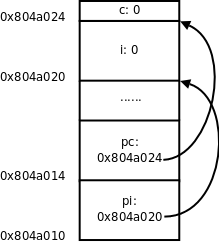
这里的 & 是取地址运算符（Address Operator），&i 表示取变量 i 的地址，int *pi = &i; 表示定义一个指向 int 型的指针变量 pi，并用 i 的地址来初始化 pi。我们讲过全局变量只能用常量表达式初始化，如果定义 int p = i; 就错了，因为 i 不是常量表达式，然而用 i 的地址来初始化一个指针却没有错，因为 i 的地址是在编译链接时能确定的，而不需要到运行时才知道，&i 是常量表达式。后面两行代码定义了一个字符型变量 c 和一个指向 c 的字符型指针 pc，注意 pi 和 pc 虽然是不同类型的指针变量，但它们的内存单元都占 4 个字节，因为要保存 32 位的虚拟地址，同理，在 64 位平台上指针变量都占 8 个字节。
我们知道，在同一个语句中定义多个数组，每一个都要有 [] 号：int a[5], b[5];。同样道理，在同一个语句中定义多个指针变量，每一个都要有 * 号，例如：
int *p, *q;
如果写成 int* p, q; 就错了，这样是定义了一个整型指针 p 和一个整型变量 q，定义数组的 [] 号写在变量后面，而定义指针的 * 号写在变量前面，更容易看错。定义指针的 * 号前后空格都可以省，写成 int*p,*q; 也算对，但 * 号通常和类型 int 之间留空格而和变量名写在一起，这样看 int *p, q; 就很明显是定义了一个指针和一个整型变量，就不容易看错了。
如果要让 pi 指向另一个整型变量 j，可以重新对 pi 赋值：
pi = &j;
如果要改变 pi 所指向的整型变量的值，比如把变量 j 的值增加 10，可以写：
*pi = *pi + 10;
这里的 * 号是指针间接寻址运算符（Indirection Operator），*pi 表示取指针 pi 所指向的变量的值，也称为 Dereference 操作，指针有时称为变量的引用（Reference），所以根据指针找到变量称为 Dereference。
& 运算符的操作数必须是左值，因为只有左值才表示一个内存单元，才会有地址，运算结果是指针类型。* 运算符的操作数必须是指针类型，运算结果可以做左值。所以，如果表达式 E 可以做左值，*&E 和 E 等价，如果表达式 E 是指针类型，&*E 和 E 等价。
指针之间可以相互赋值，也可以用一个指针初始化另一个指针，例如：
int *ptri = pi;
或者：
int *ptri;
ptri = pi;
表示 pi 指向哪就让 ptri 也指向哪，本质上就是把变量 pi 所保存的地址值赋给变量 ptri。
用一个指针给另一个指针赋值时要注意，两个指针必须是同一类型的。在我们的例子中，pi 是 int * 型的，pc 是 char * 型的，pi = pc; 这样赋值就是错误的。但是可以先强制类型转换然后赋值：
pi = (int *)pc;
图 23.2. 把 char * 指针的值赋给 int * 指针

现在 pi 指向的地址和 pc 一样，但是通过 *pc 只能访问到一个字节，而通过 *pi 可以访问到 4 个字节，后 3 个字节已经不属于变量 c 了，除非你很确定变量 c 的一个字节和后面 3 个字节组合而成的 int 值是有意义的，否则就不应该给 pi 这么赋值。因此使用指针要特别小心，很容易将指针指向错误的地址，访问这样的地址可能导致段错误，可能读到无意义的值，也可能意外改写了某些数据，使得程序在随后的运行中出错。有一种情况需要特别注意，定义一个指针类型的局部变量而没有初始化：
int main(void)
{
int *p;
...
*p = 0;
...
}
我们知道，在堆栈上分配的变量初始值是不确定的，也就是说指针 p 所指向的内存地址是不确定的，后面用 *p 访问不确定的地址就会导致不确定的后果，如果导致段错误还比较容易改正，如果意外改写了数据而导致随后的运行中出错，就很难找到错误原因了。像这种指向不确定地址的指针称为「野指针」（Unbound Pointer），为避免出现野指针，在定义指针变量时就应该给它明确的初值，或者把它初始化为 NULL：
int main(void)
{
int *p = NULL;
...
*p = 0;
...
}
NULL 在 C 标准库的头文件 stddef.h 中定义：
#define NULL ((void *)0)
就是把地址 0 转换成指针类型，称为空指针，它的特殊之处在于，操作系统不会把任何数据保存在地址 0 及其附近，也不会把地址 0 ~ 0xfff 的页面映射到物理内存，所以任何对地址 0 的访问都会立刻导致段错误。*p = 0; 会导致段错误，就像放在眼前的炸弹一样很容易找到，相比之下，野指针的错误就像埋下地雷一样，更难发现和排除，这次走过去没事，下次走过去就有事。
讲到这里就该讲一下 void * 类型了。在编程时经常需要一种通用指针，可以转换为任意其它类型的指针，任意其它类型的指针也可以转换为通用指针，最初 C 语言没有 void * 类型，就把 char * 当通用指针，需要转换时就用类型转换运算符 ()，ANSI 在将 C 语言标准化时引入了 void * 类型，void * 指针与其它类型的指针之间可以隐式转换，而不必用类型转换运算符。注意，只能定义 void * 指针，而不能定义 void 型的变量，因为 void * 指针和别的指针一样都占 4 个字节，而如果定义 void 型变量（也就是类型暂时不确定的变量），编译器不知道该分配几个字节给变量。同样道理，void * 指针不能直接 Dereference，而必须先转换成别的类型的指针再做 Dereference。void * 指针常用于函数接口，比如：
void func(void *pv)
{
/* *pv = 'A' is illegal */
char *pchar = pv;
*pchar = 'A';
}
int main(void)
{
char c;
func(&c);
printf("%c\n", c);
...
}
下一章讲函数接口时再详细介绍 void * 指针的用处。
2. 指针类型的参数和返回值
首先看以下程序：
例 23.1. 指针参数和返回值
#include <stdio.h>
int *swap(int *px, int *py)
{
int temp;
temp = *px;
*px = *py;
*py = temp;
return px;
}
int main(void)
{
int i = 10, j = 20;
int *p = swap(&i, &j);
printf("now i=%d j=%d *p=%d\n", i, j, *p);
return 0;
}
我们知道，调用函数的传参过程相当于用实参定义并初始化形参，swap(&i, &j) 这个调用相当于：
int *px = &i;
int *py = &j;
所以 px 和 py 分别指向 main 函数的局部变量 i 和 j，在 swap 函数中读写 *px 和 *py 其实是读写 main 函数的 i 和 j。尽管在 swap 函数的作用域中访问不到 i 和 j 这两个变量名，却可以通过地址访问它们，最终 swap 函数将 i 和 j 的值做了交换。
上面的例子还演示了函数返回值是指针的情况，return px; 语句相当于定义了一个临时变量并用 px 初始化：
int *tmp = px;
然后临时变量 tmp 的值成为表达式 swap(&i, &j) 的值，然后在 main 函数中又把这个值赋给了 p，相当于：
int *p = tmp;
最后的结果是 swap 函数的 px 指向哪就让 main 函数的 p 指向哪。我们知道 px 指向 i，所以 p 也指向 i。
习题
- 对照本节的描述，像图 23.1「指针的基本概念」那样画图理解函数的调用和返回过程。在下一章我们会看到更复杂的参数和返回值形式，在初学阶段对每个程序都要画图理解它的运行过程，只要基本概念清晰，无论多复杂的形式都应该能正确分析。
- 现在回头看第 3 章「简单函数」第 3 节「形参和实参」的习题 1，那个程序应该怎么改？
3. 指针与数组
先看个例子，有如下语句：
int a[10];
int *pa = &a[0];
pa++;
首先指针 pa 指向 a[0] 的地址，注意后缀运算符的优先级高于单目运算符，所以是取 a[0] 的地址，而不是取 a 的地址。然后 pa++ 让 pa 指向下一个元素（也就是 a[1]），由于 pa 是 int * 指针，一个 int 型元素占 4 个字节，所以 pa++ 使 pa 所指向的地址加 4，注意不是加 1。
下面画图理解。从前面的例子我们发现，地址的具体数值其实无关紧要，关键是要说明地址之间的关系（a[1] 位于 a[0] 之后 4 个字节处）以及指针与变量之间的关系（指针保存的是变量的地址），现在我们换一种画法，省略地址的具体数值，用方框表示存储空间，用箭头表示指针和变量之间的关系。
图 23.3. 指针与数组
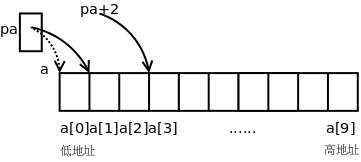
既然指针可以用 ++ 运算符，当然也可以用 +、- 运算符，pa+2 这个表达式也是有意义的，如上图所示，pa 指向 a[1]，那么 pa+2 指向 a[3]。事实上，E1[E2] 这种写法和 (*((E1)+(E2))) 是等价的，*(pa+2) 也可以写成 pa[2]，pa 就像数组名一样，其实数组名也没有什么特殊的，a[2] 之所以能取数组的第 2 个元素，是因为它等价于 *(a+2)，在第 8 章「数组」第 1 节「数组的基本概念」讲过数组名做右值时自动转换成指向首元素的指针，所以 a[2] 和 pa[2] 本质上是一样的，都是通过指针间接寻址访问元素。由于 (*((E1)+(E2))) 显然可以写成 (*((E2)+(E1)))，所以 E1[E2] 也可以写成 E2[E1]，这意味着 2[a]、2[pa] 这种写法也是对的，但一般不这么写。另外，由于 a 做右值使用时和 &a[0] 是一个意思，所以 int *pa = &a[0]; 通常不这么写，而是写成更简洁的形式 int *pa = a;。
在第 8 章「数组」第 1 节「数组的基本概念」还讲过 C 语言允许数组下标是负数，现在你该明白为什么这样规定了。在上面的例子中，表达式 pa[-1] 是合法的，它和 a[0] 表示同一个元素。
现在猜一下，两个指针变量做比较运算（>、>=、<、<=、==、!=）表示什么意义？两个指针变量做减法运算又表示什么意义？
根据什么来猜？根据第 3 章「简单函数」第 3 节「形参和实参」讲过的 Rule of Least Surprise 原则。你理解了指针和常数加减的概念，再根据以往使用比较运算的经验，就应该猜到 pa + 2 > pa，pa - 1 == a，所以指针之间的比较运算比的是地址，C 语言正是这样规定的，不过 C 语言的规定更为严谨，只有指向同一个数组中元素的指针之间相互比较才有意义，否则没有意义。那么两个指针相减表示什么？pa - a 等于几？因为 pa - 1 == a，所以 pa - a 显然应该等于 1，指针相减表示两个指针之间相差的元素个数，同样只有指向同一个数组中元素的指针之间相减才有意义。两个指针相加表示什么？想不出来它能有什么意义，因此 C 语言也规定两个指针不能相加。假如 C 语言为指针相加也规定了一种意义，那就相当 Surprise 了，不符合一般的经验。无论是设计编程语言还是设计函数接口或人机界面都是这个道理，应该尽可能让用户根据以往的经验知识就能推断出该系统的基本用法。
在取数组元素时用数组名和用指针的语法一样，但如果把数组名做左值使用，和指针就有区别了。例如 pa++ 是合法的，但 a++ 就不合法，pa = a + 1 是合法的，但 a = pa + 1 就不合法。数组名做右值时转换成指向首元素的指针，但做左值仍然表示整个数组的存储空间，而不是首元素的存储空间，数组名做左值还有一点特殊之处，不支持 ++、赋值这些运算符，但支持取地址运算符 &，所以 &a 是合法的，我们将在本章第 7 节「指向数组的指针与多维数组」介绍这种语法。
在函数原型中，如果参数是数组，则等价于参数是指针的形式，例如：
void func(int a[10])
{
...
}
等价于：
void func(int *a)
{
...
}
第一种形式方括号中的数字可以不写，仍然是等价的：
void func(int a[])
{
...
}
参数写成指针形式还是数组形式对编译器来说没区别，都表示这个参数是指针，之所以规定两种形式是为了给读代码的人提供有用的信息，如果这个参数指向一个元素，通常写成指针的形式，如果这个参数指向一串元素中的首元素，则经常写成数组的形式。
4. 指针与 const 限定符
const 限定符和指针结合起来常见的情况有以下几种。
const int *a;
int const *a;
这两种写法是一样的，a 是一个指向 const int 型的指针，a 所指向的内存单元不可改写，所以 (*a)++ 是不允许的，但 a 可以改写，所以 a++ 是允许的。
int * const a;
a 是一个指向 int 型的 const 指针，*a 是可以改写的，但 a 不允许改写。
int const * const a;
a 是一个指向 const int 型的 const 指针，因此 *a 和 a 都不允许改写。
指向非 const 变量的指针或者非 const 变量的地址可以传给指向 const 变量的指针，编译器可以做隐式类型转换，例如：
char c = 'a';
const char *pc = &c;
但是，指向 const 变量的指针或者 const 变量的地址不可以传给指向非 const 变量的指针，以免透过后者意外改写了前者所指向的内存单元，例如对下面的代码编译器会报警告：
const char c = 'a';
char *pc = &c;
即使不用 const 限定符也能写出功能正确的程序，但良好的编程习惯应该尽可能多地使用 const，因为：
const给读代码的人传达非常有用的信息。比如一个函数的参数是const char *，你在调用这个函数时就可以放心地传给它char *或const char *指针，而不必担心指针所指的内存单元被改写。- 尽可能多地使用
const限定符，把不该变的都声明成只读，这样可以依靠编译器检查程序中的Bug，防止意外改写数据。 const对编译器优化是一个有用的提示，编译器也许会把const变量优化成常量。
在第 19 章「汇编与 C 之间的关系」第 3 节「变量的存储布局」我们看到，字符串字面值通常分配在 .rodata 段，而在第 8 章「数组」第 4 节「字符串」提到，字符串字面值类似于数组名，做右值使用时自动转换成指向首元素的指针，这种指针应该是 const char * 型。我们知道 printf 函数原型的第一个参数是 const char * 型，可以把 char * 或 const char * 指针传给它，所以下面这些调用都是合法的：
const char *p = "abcd";
const char str1[5] = "abcd";
char str2[5] = "abcd";
printf(p);
printf(str1);
printf(str2);
printf("abcd");
注意上面第一行，如果要定义一个指针指向字符串字面值，这个指针应该是 const char * 型，如果写成 char *p = "abcd"; 就不好了，有隐患，例如：
int main(void)
{
char *p = "abcd";
...
*p = 'A';
...
}
p 指向 .rodata 段，不允许改写，但编译器不会报错，在运行时会出现段错误。
5. 指针与结构体
首先定义一个结构体类型，然后定义这种类型的变量和指针：
struct unit {
char c;
int num;
};
struct unit u;
struct unit *p = &u;
要通过指针 p 访问结构体成员可以写成 (*p).c 和 (*p).num，为了书写方便，C 语言提供了 -> 运算符，也可以写成 p->c 和 p->num。
6. 指向指针的指针与指针数组
指针可以指向基本类型，也可以指向复合类型，因此也可以指向另外一个指针变量，称为指向指针的指针。
int i;
int *pi = &i;
int **ppi = π
这样定义之后，表达式 *ppi 取 pi 的值，表达式 **ppi 取 i 的值。请读者自己画图理解 i、pi、ppi 这三个变量之间的关系。
很自然地，也可以定义指向「指向指针的指针」的指针，但是很少用到：
int ***p;
数组中的每个元素可以是基本类型，也可以复合类型，因此也可以是指针类型。例如定义一个数组 a 由 10 个元素组成，每个元素都是 int * 指针：
int *a[10];
这称为指针数组。int *a[10]; 和 int **pa; 之间的关系类似于 int a[10]; 和 int *pa; 之间的关系：a 是由一种元素组成的数组，pa 则是指向这种元素的指针。所以，如果 pa 指向 a 的首元素：
int *a[10];
int **pa = &a[0];
则 pa[0] 和 a[0] 取的是同一个元素，唯一比原来复杂的地方在于这个元素是一个 int * 指针，而不是基本类型。
我们知道 main 函数的标准原型应该是 int main(int argc, char *argv[]);。argc 是命令行参数的个数。而 argv 是一个指向指针的指针，为什么不是指针数组呢？因为前面讲过，函数原型中的 [] 表示指针而不表示数组，等价于 char **argv。那为什么要写成 char *argv[] 而不写成 char **argv 呢？这样写给读代码的人提供了有用信息，argv 不是指向单个指针，而是指向一个指针数组的首元素。数组中每个元素都是 char * 指针，指向一个命令行参数字符串。
例 23.2. 打印命令行参数
#include <stdio.h>
int main(int argc, char *argv[])
{
int i;
for(i = 0; i < argc; i++)
printf("argv[%d]=%s\n", i, argv[i]);
return 0;
}
编译执行：
$ gcc main.c
$ ./a.out a b c
argv[0]=./a.out
argv[1]=a
argv[2]=b
argv[3]=c
$ ln -s a.out printargv
$ ./printargv d e
argv[0]=./printargv
argv[1]=d
argv[2]=e
注意程序名也算一个命令行参数，所以执行 ./a.out a b c 这个命令时，argc 是 4，argv 如下图所示：
图 23.4. argv 指针数组

由于 argv[4] 是 NULL，我们也可以这样循环遍历 argv：
for(i=0; argv[i] != NULL; i++)
NULL 标识着 argv 的结尾，这个循环碰到 NULL 就结束，因而不会访问越界，这种用法很形象地称为 Sentinel，NULL 就像一个哨兵守卫着数组的边界。
在这个例子中我们还看到，如果给程序建立符号链接，然后通过符号链接运行这个程序，就可以得到不同的 argv[0]。通常，程序会根据不同的命令行参数做不同的事情，例如 ls -l 和 ls -R 打印不同的文件列表，而有些程序会根据不同的 argv[0] 做不同的事情，例如专门针对嵌入式系统的开源项目 Busybox，将各种 Linux 命令裁剪后集于一身，编译成一个可执行文件 busybox，安装时将 busybox 程序拷到嵌入式系统的 /bin 目录下，同时在 /bin、/sbin、/usr/bin、/usr/sbin 等目录下创建很多指向 /bin/busybox 的符号链接，命名为 cp、ls、mv、ifconfig 等等，不管执行哪个命令其实最终都是在执行 /bin/busybox，它会根据 argv[0] 来区分不同的命令。
习题
-
想想以下定义中的
const分别起什么作用？编写程序验证你的猜测。const char **p; char *const *p; char **const p;
7. 指向数组的指针与多维数组
指针可以指向复合类型，上一节讲了指向指针的指针，这一节学习指向数组的指针。以下定义一个指向数组的指针，该数组有 10 个 int 元素：
int (*a)[10];
和上一节指针数组的定义 int *a[10]; 相比，仅仅多了一个 () 括号。如何记住和区分这两种定义呢？我们可以认为 [] 比 * 有更高的优先级，如果 a 先和 * 结合则表示 a 是一个指针，如果 a 先和 [] 结合则表示 a 是一个数组。int *a[10]; 这个定义可以拆成两句：
typedef int *t;
t a[10];
t 代表 int * 类型，a 则是由这种类型的元素组成的数组。int (*a)[10]; 这个定义也可以拆成两句：
typedef int t[10];
t *a;
t 代表由 10 个 int 组成的数组类型，a 则是指向这种类型的指针。
现在看指向数组的指针如何使用：
int a[10];
int (*pa)[10] = &a;
a 是一个数组，在 &a 这个表达式中，数组名做左值，取整个数组的首地址赋给指针 pa。注意，&a[0] 表示数组 a 的首元素的首地址，而 &a 表示数组 a 的首地址，显然这两个地址的数值相同，但这两个表达式的类型是两种不同的指针类型，前者的类型是 int *，而后者的类型是 int (*)[10]。*pa 就表示 pa 所指向的数组 a，所以取数组的 a[0] 元素可以用表达式 (*pa)[0]。注意到 *pa 可以写成 pa[0]，所以 (*pa)[0] 这个表达式也可以改写成 pa[0][0]，pa 就像一个二维数组的名字，它表示什么含义呢？下面把 pa 和二维数组放在一起做个分析。
int a[5][10]; 和 int (*pa)[10]; 之间的关系同样类似于 int a[10]; 和 int *pa; 之间的关系：a 是由一种元素组成的数组，pa 则是指向这种元素的指针。所以，如果 pa 指向 a 的首元素：
int a[5][10];
int (*pa)[10] = &a[0];
则 pa[0] 和 a[0] 取的是同一个元素，唯一比原来复杂的地方在于这个元素是由 10 个 int 组成的数组，而不是基本类型。这样，我们可以把 pa 当成二维数组名来使用，pa[1][2] 和 a[1][2] 取的也是同一个元素，而且 pa 比 a 用起来更灵活，数组名不支持赋值、自增等运算，而指针可以支持，pa++ 使 pa 跳过二维数组的一行（40 个字节），指向 a[1] 的首地址。
习题
-
定义以下变量：
char a[4][3][2] = {{{'a', 'b'}, {'c', 'd'}, {'e', 'f'}}, {{'g', 'h'}, {'i', 'j'}, {'k', 'l'}}, {{'m', 'n'}, {'o', 'p'}, {'q', 'r'}}, {{'s', 't'}, {'u', 'v'}, {'w', 'x'}}}; char (*pa)[2] = &a[1][0]; char (*ppa)[3][2] = &a[1];要想通过
pa或ppa访问数组a中的'r'元素，分别应该怎么写？
8. 函数类型和函数指针类型
在 C 语言中，函数也是一种类型，可以定义指向函数的指针。我们知道，指针变量的内存单元存放一个地址值，而函数指针存放的就是函数的入口地址（位于 .text 段）。下面看一个简单的例子：
例 23.3. 函数指针
#include <stdio.h>
void say_hello(const char *str)
{
printf("Hello %s\n", str);
}
int main(void)
{
void (*f)(const char *) = say_hello;
f("Guys");
return 0;
}
分析一下变量 f 的类型声明 void (*f)(const char *)，f 首先跟 * 号结合在一起，因此是一个指针。(*f) 外面是一个函数原型的格式，参数是 const char *，返回值是 void，所以 f 是指向这种函数的指针。而 say_hello 的参数是 const char *，返回值是 void，正好是这种函数，因此 f 可以指向 say_hello。注意，say_hello 是一种函数类型，而函数类型和数组类型类似，做右值使用时自动转换成函数指针类型，所以可以直接赋给 f，当然也可以写成 void (*f)(const char *) = &say_hello;，把函数 say_hello 先取地址再赋给 f，就不需要自动类型转换了。
可以直接通过函数指针调用函数，如上面的 f("Guys")，也可以先用 *f 取出它所指的函数类型，再调用函数，即 (*f)("Guys")。可以这么理解：函数调用运算符 () 要求操作数是函数指针，所以 f("Guys") 是最直接的写法，而 say_hello("Guys") 或 (*f)("Guys") 则是把函数类型自动转换成函数指针然后做函数调用。
下面再举几个例子区分函数类型和函数指针类型。首先定义函数类型 F：
typedef int F(void);
这种类型的函数不带参数，返回值是 int。那么可以这样声明 f 和 g：
F f, g;
相当于声明：
int f(void);
int g(void);
下面这个函数声明是错误的：
F h(void);
因为函数可以返回 void 类型、标量类型、结构体、联合体，但不能返回函数类型，也不能返回数组类型。而下面这个函数声明是正确的：
F *e(void);
函数 e 返回一个 F * 类型的函数指针。如果给 e 多套几层括号仍然表示同样的意思：
F *((e))(void);
但如果把 * 号也套在括号里就不一样了：
int (*fp)(void);
这样声明了一个函数指针，而不是声明一个函数。fp 也可以这样声明：
F *fp;
通过函数指针调用函数和直接调用函数相比有什么好处呢？我们研究一个例子。回顾第 7 章「结构体」第 3 节「数据类型标志」的习题 1，由于结构体中多了一个类型字段，需要重新实现 real_part、img_part、magnitude、angle 这些函数，你当时是怎么实现的？大概是这样吧：
double real_part(struct complex_struct z)
{
if (z.t == RECTANGULAR)
return z.a;
else
return z.a * cos(z.b);
}
现在类型字段有两种取值，RECTANGULAR 和 POLAR，每个函数都要 if ... else ...，如果类型字段有三种取值呢？每个函数都要 if ... else if ... else，或者 switch ... case ...。这样维护代码是不够理想的，现在我用函数指针给出一种实现：
double rect_real_part(struct complex_struct z)
{
return z.a;
}
double rect_img_part(struct complex_struct z)
{
return z.b;
}
double rect_magnitude(struct complex_struct z)
{
return sqrt(z.a * z.a + z.b * z.b);
}
double rect_angle(struct complex_struct z)
{
double PI = acos(-1.0);
if (z.a > 0)
return atan(z.b / z.a);
else
return atan(z.b / z.a) + PI;
}
double pol_real_part(struct complex_struct z)
{
return z.a * cos(z.b);
}
double pol_img_part(struct complex_struct z)
{
return z.a * sin(z.b);
}
double pol_magnitude(struct complex_struct z)
{
return z.a;
}
double pol_angle(struct complex_struct z)
{
return z.b;
}
double (*real_part_tbl[])(struct complex_struct) = { rect_real_part, pol_real_part };
double (*img_part_tbl[])(struct complex_struct) = { rect_img_part, pol_img_part };
double (*magnitude_tbl[])(struct complex_struct) = { rect_magnitude, pol_magnitude };
double (*angle_tbl[])(struct complex_struct) = { rect_angle, pol_angle };
#define real_part(z) real_part_tbl[z.t](z)
#define img_part(z) img_part_tbl[z.t](z)
#define magnitude(z) magnitude_tbl[z.t](z)
#define angle(z) angle_tbl[z.t](z)
当调用 real_part(z) 时，用类型字段 z.t 做索引，从指针数组 real_part_tbl 中取出相应的函数指针来调用，也可以达到 if ... else ... 的效果，但相比之下这种实现更好，每个函数都只做一件事情，而不必用 if ... else ... 兼顾好几件事情，比如 rect_real_part 和 pol_real_part 各做各的，互相独立，而不必把它们的代码都耦合到一个函数中。「低耦合，高内聚」（Low Coupling, High Cohesion）是程序设计的一条基本原则，这样可以更好地复用现有代码，使代码更容易维护。如果类型字段 z.t 又多了一种取值，只需要添加一组新的函数，修改函数指针数组，原有的函数仍然可以不加改动地复用。
9. 不完全类型和复杂声明
在第 7 章「结构体」第 1 节「复合类型与结构体」讲过算术类型、标量类型的概念，现在又学习了几种类型，我们完整地总结一下 C 语言的类型。下图出自 Standard C。
图 23.5. C 语言类型总结

C 语言的类型分为函数类型、对象类型和不完全类型三大类。对象类型又分为标量类型和非标量类型。指针类型属于标量类型，因此也可以做逻辑与、或、非运算的操作数和 if、for、while 的控制表达式，NULL 指针表示假，非 NULL 指针表示真。不完全类型是暂时没有完全定义好的类型，编译器不知道这种类型该占几个字节的存储空间，例如：
struct s;
union u;
char str[];
具有不完全类型的变量可以通过多次声明组合成一个完全类型，比如数组 str 声明两次：
char str[];
char str[10];
当编译器碰到第一个声明时，认为 str 是一个不完全类型，碰到第二个声明时 str 就组合成完全类型了，如果编译器处理到程序文件的末尾仍然无法把 str 组合成一个完全类型，就会报错。读者可能会想，这个语法有什么用呢？为何不在第一次声明时就把 str 声明成完全类型？有些情况下这么做有一定的理由，比如第一个声明是写在头文件里的，第二个声明写在 .c 文件里，这样如果要改数组长度，只改 .c 文件就行了，头文件可以不用改。
不完全的结构体类型有重要作用：
struct s {
struct t *pt;
};
struct t {
struct s *ps;
};
struct s 和 struct t 各有一个指针成员指向另一种类型。编译器从前到后依次处理，当看到 struct s { struct t* pt; }; 时，认为 struct t 是一个不完全类型，pt 是一个指向不完全类型的指针，尽管如此，这个指针却是完全类型，因为不管什么指针都占 4 个字节存储空间，这一点很明确。然后编译器又看到 struct t { struct s *ps; };，这时 struct t 有了完整的定义，就组合成一个完全类型了，pt 的类型就组合成一个指向完全类型的指针。由于 struct s 在前面有完整的定义，所以 struct s *ps; 也定义了一个指向完全类型的指针。
这样的类型定义是错误的：
struct s {
struct t ot;
};
struct t {
struct s os;
};
编译器看到 struct s { struct t ot; }; 时，认为 struct t 是一个不完全类型，无法定义成员 ot，因为不知道它该占几个字节。所以结构体中可以递归地定义指针成员，但不能递归地定义变量成员，你可以设想一下，假如允许递归地定义变量成员，struct s 中有一个 struct t，struct t 中又有一个 struct s，struct s 又中有一个 struct t，这就成了一个无穷递归的定义。
以上是两个结构体构成的递归定义，一个结构体也可以递归定义：
struct s {
char data[6];
struct s* next;
};
当编译器处理到第一行 struct s { 时，认为 struct s 是一个不完全类型，当处理到第三行 struct s *next; 时，认为 next 是一个指向不完全类型的指针，当处理到第四行}; 时，struct s 成了一个完全类型，next 也成了一个指向完全类型的指针。类似这样的结构体是很多种数据结构的基本组成单元，如链表、二叉树等，我们将在后面详细介绍。下图示意了由几个 struct s 结构体组成的链表，这些结构体称为链表的节点（Node）。
图 23.6. 链表

head 指针是链表的头指针，指向第一个节点，每个节点的 next 指针域指向下一个节点，最后一个节点的 next 指针域为 NULL，在图中用 0 表示。
可以想像得到，如果把指针和数组、函数、结构体层层组合起来可以构成非常复杂的类型，下面看几个复杂的声明。
typedef void (*sighandler_t)(int);
sighandler_t signal(int signum, sighandler_t handler);
这个声明来自 signal(2)。sighandler_t 是一个函数指针，它所指向的函数带一个参数，返回值为 void，signal 是一个函数，它带两个参数，一个 int 参数，一个 sighandler_t 参数，返回值也是 sighandler_t 参数。如果把这两行合成一行写，就是：
void (*signal(int signum, void (*handler)(int)))(int);
在分析复杂声明时，要借助 typedef 把复杂声明分解成几种基本形式：
T *p;，p是指向T类型的指针。T a[];，a是由T类型的元素组成的数组，但有一个例外，如果a是函数的形参，则相当于T *a;T1 f(T2, T3...);，f是一个函数，参数类型是T2、T3等等，返回值类型是T1。
我们分解一下这个复杂声明：
int (*(*fp)(void *))[10];
-
fp和*号括在一起，说明fp是一个指针，指向T1类型：typedef int (*T1(void *))[10]; T1 *fp; -
T1应该是一个函数类型，参数是void *，返回值是T2类型：typedef int (*T2)[10]; typedef T2 T1(void *); T1 *fp; -
T2和*号括在一起，应该也是个指针，指向T3类型：typedef int T3[10]; typedef T3 *T2; typedef T2 T1(void *); T1 *fp;显然，
T3是一个int数组，由 10 个元素组成。分解完毕。
第 24 章 函数接口
我们在第 11 章「排序与查找」第 6 节「折半查找」讲过，函数的调用者和函数的实现者之间订立了一个契约，在调用函数之前，调用者要为实现者提供某些条件，在函数返回时，实现者要对调用者尽到某些义务。如何描述这个契约呢？首先靠函数接口来描述，即函数名，参数，返回值，只要函数和参数的名字起得合理，参数和返回值的类型定得准确，至于这个函数怎么用，调用者单看函数接口就能猜出八九分了。函数接口并不能表达函数的全部语义，这时文档就起了重要的补充作用，函数的文档该写什么，怎么写，Man Page 为我们做了很好的榜样。
函数接口一旦和指针结合起来就变得异常灵活，有五花八门的用法，但是万变不离其宗，只要像第 23 章「指针」图 23.1「指针的基本概念」那样画图分析，指针的任何用法都能分析清楚，所以，如果上一章你真正学明白了，本章不用学也能自己领悟出来，之所以写这一章是为了照顾悟性不高的读者。本章把函数接口总结成几类常见的模式，对于每种模式，一方面讲函数接口怎么写，另一方面讲函数的文档怎么写。
1. 本章的预备知识
这一节介绍本章的范例代码要用的几个 C 标准库函数。我们先体会一下这几个函数的接口是怎么设计的，Man Page 是怎么写的。其它常用的 C 标准库函数将在下一章介绍。
1.1. strcpy 与 strncpy
从现在开始我们要用到很多库函数，在学习每个库函数时一定要看 Man Page。Man Page 随时都在我们手边，想查什么只要敲一个命令就行，然而很多初学者就是不喜欢看 Man Page，宁可满世界去查书、查资料，也不愿意看Man Page。据我分析原因有三：
- 英文不好。那还是先学好了英文再学编程吧，否则即使你把这本书都学透了也一样无法胜任开发工作，因为你没有进一步学习的能力。
- Man Page 的语言不够友好。Man Page 不像本书这样由浅入深地讲解，而是平铺直叙，不过看习惯了就好了，每个 Man Page 都不长，多看几遍自然可以抓住重点，理清头绪。本节分析一个例子，帮助读者把握 Man Page 的语言特点。
- Man Page 通常没有例子。描述一个函数怎么用，一靠接口，二靠文档，而不是靠例子。函数的用法无非是本章所总结的几种模式，只要把本章学透了，你就不需要每个函数都得有个例子教你怎么用了。
总之，Man Page 是一定要看的，一开始看不懂硬着头皮也要看，为了鼓励读者看 Man Page，本书不会像 K&R 那样把库函数总结成一个附录附在书后面。现在我们来分析 strcpy(3)。
图 24.1. strcpy(3)

这个 Man Page 描述了两个函数，strcpy 和 strncpy，敲命令 man strcpy 或者 man strncpy 都可以看到这个 Man Page。这两个函数的作用是把一个字符串拷贝给另一个字符串。SYNOPSIS 部分给出了这两个函数的原型，以及要用这些函数需要包含哪些头文件。参数 dest、src 和 n 都加了下划线，有时候并不想从头到尾阅读整个 Man Page，而是想查一下某个参数的含义，通过下划线和参数名就能很快找到你关心的部分。
dest 表示 Destination，src 表示 Source，看名字就能猜到是把 src 所指向的字符串拷贝到 dest 所指向的内存空间。这一点从两个参数的类型也能看出来，dest 是 char * 型的，而 src 是 const char * 型的，说明 src 所指向的内存空间在函数中只能读不能改写，而 dest 所指向的内存空间在函数中是要改写的，显然改写的目的是当函数返回后调用者可以读取改写的结果。因此可以猜到 strcpy 函数是这样用的：
char buf[10];
strcpy(buf, "hello");
printf(buf);
至于 strncpy 的参数 n 是干什么用的，单从函数接口猜不出来，就需要看下面的文档。
图 24.2. strcpy(3)
在文档中强调了 strcpy 在拷贝字符串时会把结尾的 '\0' 也拷到 dest 中，因此保证了 dest 中是以 '\0' 结尾的字符串。但另外一个要注意的问题是，strcpy 只知道 src 字符串的首地址，不知道长度，它会一直拷贝到 '\0' 为止，所以 dest 所指向的内存空间要足够大，否则有可能写越界，例如：
char buf[10];
strcpy(buf, "hello world");
如果没有保证 src 所指向的内存空间以 '\0' 结尾，也有可能读越界，例如：
char buf[10] = "abcdefghij", str[4] = "hell";
strcpy(buf, str);
因为 strcpy 函数的实现者通过函数接口无法得知 src 字符串的长度和 dest 内存空间的大小，所以“确保不会写越界”应该是调用者的责任，调用者提供的 dest 参数应该指向足够大的内存空间，“确保不会读越界”也是调用者的责任，调用者提供的 src 参数指向的内存应该确保以 '\0' 结尾。
此外，文档中还强调了 src 和 dest 所指向的内存空间不能有重叠。凡是有指针参数的 C 标准库函数基本上都有这条要求，每个指针参数所指向的内存空间互不重叠，例如这样调用是不允许的：
char buf[10] = "hello";
strcpy(buf, buf+1);
strncpy 的参数 n 指定最多从 src 中拷贝 n 个字节到 dest 中，换句话说，如果拷贝到 '\0' 就结束，如果拷贝到 n 个字节还没有碰到 '\0'，那么也结束，调用者负责提供适当的 n 值，以确保读写不会越界，比如让 n 的值等于 dest 所指向的内存空间的大小：
char buf[10];
strncpy(buf, "hello world", sizeof(buf));
然而这意味着什么呢？文档中特别用了 Warning 指出，这意味着 dest 有可能不是以 '\0' 结尾的。例如上面的调用，虽然把 "hello world" 截断到 10 个字符拷贝至 buf 中，但 buf 不是以 '\0' 结尾的，如果再 printf(buf) 就会读越界。如果你需要确保 dest 以 '\0' 结束，可以这么调用：
char buf[10];
strncpy(buf, "hello world", sizeof(buf));
buf[sizeof(buf)-1] = '\0';
strncpy 还有一个特性，如果 src 字符串全部拷完了不足 n 个字节，那么还差多少个字节就补多少个 '\0'，但是正如上面所述，这并不保证 dest 一定以 '\0' 结束，当 src 字符串的长度大于 n 时，不但不补多余的 '\0'，连字符串的结尾 '\0' 也不拷贝。strcpy(3) 的文档已经相当友好了，为了帮助理解，还给出一个 strncpy 的简单实现。
图 24.3. strcpy(3)
函数的 Man Page 都有一部分专门讲返回值的。这两个函数的返回值都是 dest 指针。可是为什么要返回 dest 指针呢？dest 指针本来就是调用者传过去的，再返回一遍 dest 指针并没有提供任何有用的信息。之所以这么规定是为了把函数调用当作一个指针类型的表达式使用，比如 printf("%s\n", strcpy(buf, "hello"))，一举两得，如果 strcpy 的返回值是 void 就没有这么方便了。
CONFORMING TO 部分描述了这个函数是遵照哪些标准实现的。strcpy 和 strncpy 是 C 标准库函数，当然遵照 C99 标准。以后我们还会看到 libc 中有些函数属于 POSIX 标准但并不属于 C 标准，例如 write(2)。
NOTES 部分给出一些提示信息。这里指出如何确保 strncpy 的 dest 以 '\0' 结尾，和我们上面给出的代码类似，但由于 n 是个变量，在执行 buf[n - 1]= '\0'; 之前先检查一下 n 是否大于 0，如果 n 不大于 0，buf[n - 1] 就访问越界了，所以要避免。
图 24.4. strcpy(3)

BUGS 部分说明了使用这些函数可能引起的 Bug，这部分一定要仔细看。用 strcpy 比用 strncpy 更加不安全，如果在调用 strcpy 之前不仔细检查 src 字符串的长度就有可能写越界，这是一个很常见的错误，例如：
void foo(char *str)
{
char buf[10];
strcpy(buf, str);
...
}
str 所指向的字符串有可能超过 10 个字符而导致写越界，在第 10 章「gdb」第 4 节「段错误」我们看到过，这种写越界可能当时不出错，而在函数返回时出现段错误，原因是写越界覆盖了保存在栈帧上的返回地址，函数返回时跳转到非法地址，因而出错。像 buf 这种由调用者分配并传给函数读或写的一段内存通常称为缓冲区（Buffer），缓冲区写越界的错误称为缓冲区溢出（Buffer Overflow）。如果只是出现段错误那还不算严重，更严重的是缓冲区溢出 Bug 经常被恶意用户利用，使函数返回时跳转到一个事先设好的地址，执行事先设好的指令，如果设计得巧妙甚至可以启动一个 Shell，然后随心所欲执行任何命令，可想而知，如果一个用 root 权限执行的程序存在这样的 Bug，被攻陷了，后果将很严重。至于怎样巧妙设计和攻陷一个有缓冲区溢出 Bug 的程序，有兴趣的读者可以参考 SmashStack。
习题
-
自己实现一个
strcpy函数，尽可能简洁，按照本书的编码风格你能用三行代码写出函数体吗？ -
编一个函数，输入一个字符串，要求做一个新字符串，把其中所有的一个或多个连续的空白字符都压缩为一个空格。这里所说的空白包括空格、'\t'、'\n'、'\r'。例如原来的字符串是：
This Content hoho is ok ok? file system uttered words ok ok ? end.压缩了空白之后就是：
This Content hoho is ok ok? file system uttered words ok ok ? end.实现该功能的函数接口要求符合下述规范：
char *shrink_space(char *dest, const char *src, size_t n);各项参数和返回值的含义和
strncpy类似。完成之后，为自己实现的函数写一个 Man Page。
1.2. malloc 与 free
程序中需要动态分配一块内存时怎么办呢？可以像上一节那样定义一个缓冲区数组。这种方法不够灵活，C89 要求定义的数组是固定长度的，而程序往往在运行时才知道要动态分配多大的内存，例如：
void foo(char *str, int n)
{
char buf[?];
strncpy(buf, str, n);
...
}
n 是由参数传进来的，事先不知道是多少，那么 buf 该定义多大呢？在第 8 章「数组」第 1 节「数组的基本概念」讲过 C99 引入 VLA 特性，可以定义 char buf[n+1] = {};，这样可确保 buf 是以 '\0' 结尾的。但即使用 VLA 仍然不够灵活，VLA 是在栈上动态分配的，函数返回时就要释放，如果我们希望动态分配一块全局的内存空间，在各函数中都可以访问呢？由于全局数组无法定义成 VLA，所以仍然不能满足要求。
其实在第 20 章「链接详解」第 5 节「虚拟内存管理」提过，进程有一个堆空间，C 标准库函数 malloc 可以在堆空间动态分配内存，它的底层通过 brk 系统调用向操作系统申请内存。动态分配的内存用完之后可以用 free 释放，更准确地说是归还给 malloc，这样下次调用 malloc 时这块内存可以再次被分配。本节学习这两个函数的用法和工作原理。
#include <stdlib.h>
void *malloc(size_t size);
返回值：成功返回所分配内存空间的首地址，出错返回 NULL
void free(void *ptr);
malloc 的参数 size 表示要分配的字节数，如果分配失败（可能是由于系统内存耗尽）则返回 NULL。由于 malloc 函数不知道用户拿到这块内存要存放什么类型的数据，所以返回通用指针 void *，用户程序可以转换成其它类型的指针再访问这块内存。malloc 函数保证它返回的指针所指向的地址满足系统的对齐要求，例如在 32 位平台上返回的指针一定对齐到 4 字节边界，以保证用户程序把它转换成任何类型的指针都能用。
动态分配的内存用完之后可以用 free 释放掉，传给 free 的参数正是先前 malloc 返回的内存块首地址。举例如下：
例 24.1. malloc 和 free
#include <stdio.h>
#include <stdlib.h>
#include <string.h>
typedef struct {
int number;
char *msg;
} unit_t;
int main(void)
{
unit_t *p = malloc(sizeof(unit_t));
if (p == NULL) {
printf("out of memory\n");
exit(1);
}
p->number = 3;
p->msg = malloc(20);
strcpy(p->msg, "Hello world!");
printf("number: %d\nmsg: %s\n", p->number, p->msg);
free(p->msg);
free(p);
p = NULL;
return 0;
}
关于这个程序要注意以下几点：
unit_t *p = malloc(sizeof(unit_t));这一句，等号右边是void *类型，等号左边是unit_t *类型，编译器会做隐式类型转换，我们讲过void *类型和任何指针类型之间可以相互隐式转换。- 虽然内存耗尽是很不常见的错误，但写程序要规范，
malloc之后应该判断是否成功。以后要学习的大部分系统函数都有成功的返回值和失败的返回值，每次调用系统函数都应该判断是否成功。 free(p);之后，p所指的内存空间是归还了，但是p的值并没有变，因为从free的函数接口来看根本就没法改变p的值，p现在指向的内存空间已经不属于用户，换句话说，p成了野指针，为避免出现野指针，我们应该在free(p);之后手动置p = NULL;。- 应该先
free(p->msg)，再free(p)。如果先free(p)，p成了野指针，就不能再通过p->msg访问内存了。
上面的例子只有一个简单的顺序控制流程，分配内存，赋值，打印，释放内存，退出程序。这种情况下即使不用 free 释放内存也可以，因为程序退出时整个进程地址空间都会释放，包括堆空间，该进程占用的所有内存都会归还给操作系统。但如果一个程序长年累月运行（例如网络服务器程序），并且在循环或递归中调用 malloc 分配内存，则必须有 free 与之配对，分配一次就要释放一次，否则每次循环都分配内存，分配完了又不释放，就会慢慢耗尽系统内存，这种错误称为内存泄漏（Memory Leak）。另外，malloc 返回的指针一定要保存好，只有把它传给 free 才能释放这块内存，如果这个指针丢失了，就没有办法 free 这块内存了，也会造成内存泄漏。例如：
void foo(void)
{
char *p = malloc(10);
...
}
foo 函数返回时要释放局部变量 p 的内存空间，它所指向的内存地址就丢失了，这 10 个字节也就没法释放了。内存泄漏的 Bug 很难找到，因为它不会像访问越界一样导致程序运行错误，少量内存泄漏并不影响程序的正确运行，大量的内存泄漏会使系统内存紧缺，导致频繁换页，不仅影响当前进程，而且把整个系统都拖得很慢。
关于 malloc 和 free 还有一些特殊情况。malloc(0) 这种调用也是合法的，也会返回一个非 NULL 的指针，这个指针也可以传给 free 释放，但是不能通过这个指针访问内存。free(NULL) 也是合法的，不做任何事情，但是 free 一个野指针是不合法的，例如先调用 malloc 返回一个指针 p，然后连着调用两次 free(p);，则后一次调用会产生运行时错误。
K&R 的 8.7 节给出了 malloc 和 free 的简单实现，基于环形链表。目前读者还没有学习链表，看那段代码会有点困难，我再做一些简化，图示如下，目的是让读者理解 malloc 和 free 的工作原理。libc 的实现比这要复杂得多，但基本工作原理也是如此。读者只要理解了基本工作原理，就很容易分析在使用 malloc 和 free 时遇到的各种 Bug 了。
图 24.5. 简单的malloc和free实现

图中白色背景的框表示 malloc 管理的空闲内存块，深色背景的框不归 malloc 管，可能是已经分配给用户的内存块，也可能不属于当前进程，Break 之上的地址不属于当前进程，需要通过 brk 系统调用向内核申请。每个内存块开头都有一个头节点，里面有一个指针字段和一个长度字段，指针字段把所有空闲块的头节点串在一起，组成一个环形链表，长度字段记录着头节点和后面的内存块加起来一共有多长，以 8 字节为单位（也就是以头节点的长度为单位）。
- 一开始堆空间由一个空闲块组成，长度为 7×8=56 字节，除头节点之外的长度为 48 字节。
- 调用
malloc分配 8 个字节，要在这个空闲块的末尾截出 16 个字节，其中新的头节点占了 8 个字节，另外 8 个字节返回给用户使用，注意返回的指针p1指向头节点后面的内存块。 - 又调用
malloc分配 16 个字节，又在空闲块的末尾截出 24 个字节，步骤和上一步类似。 - 调用
free释放p1所指向的内存块，内存块（包括头节点在内）归还给了malloc，现在malloc管理着两块不连续的内存，用环形链表串起来。注意这时p1成了野指针，指向不属于用户的内存，p1所指向的内存地址在 Break 之下，是属于当前进程的，所以访问p1时不会出现段错误，但在访问p1时这段内存可能已经被malloc再次分配出去了，可能会读到意外改写数据。另外注意，此时如果通过p2向右写越界，有可能覆盖右边的头节点，从而破坏malloc管理的环形链表，malloc就无法从一个空闲块的指针字段找到下一个空闲块了，找到哪去都不一定，全乱套了。 - 调用
malloc分配 16 个字节，现在虽然有两个空闲块，各有 8 个字节可分配，但是这两块不连续，malloc只好通过brk系统调用抬高 Break，获得新的内存空间。在 K&R 的实现中，每次调用sbrk函数时申请 1024×8=8192 个字节，在 Linux 系统上sbrk函数也是通过brk实现的，这里为了画图方便，我们假设每次调用sbrk申请 32 个字节，建立一个新的空闲块。 - 新申请的空闲块和前一个空闲块连续，因此可以合并成一个。在能合并时要尽量合并，以免空闲块越割越小，无法满足大的分配请求。
- 在合并后的这个空闲块末尾截出 24 个字节，新的头节点占 8 个字节，另外 16 个字节返回给用户。
- 调用
free(p3)释放这个内存块，由于它和前一个空闲块连续，又重新合并成一个空闲块。注意，Break 只能抬高而不能降低，从内核申请到的内存以后都归malloc管了，即使调用free也不会还给内核。
习题
- 小练习：编写一个小程序让它耗尽系统内存。观察一下，分配了多少内存后才会出现分配失败？内存耗尽之后会怎么样？会不会死机？
2. 传入参数与传出参数
如果函数接口有指针参数，既可以把指针所指向的数据传给函数使用（称为传入参数），也可以由函数填充指针所指的内存空间，传回给调用者使用（称为传出参数），例如 strcpy 的 src 参数是传入参数，dest 参数是传出参数。有些函数的指针参数同时担当了这两种角色，如 select(2) 的 fd_set * 参数，既是传入参数又是传出参数，这称为 Value-result 参数。
表 24.1. 传入参数示例：`void func(const unit_t \*p);`
| 调用者 | 实现者 |
|---|---|
分配 p 所指的内存空间在 p 所指的内存空间中保存数据调用函数由于有 const 限定符，调用者可以确信 p 所指的内存空间不会被改变 | 规定指针参数的类型 unit_t * 读取 p 所指的内存空间 |
想一想，如果有函数接口 void func(const int p); 这里的 const 有意义吗？
表 24.2. 传出参数示例：`void func(unit_t \*p);`
| 调用者 | 实现者 |
|---|---|
分配 p 所指的内存空间调用函数读取 p 所指的内存空间 | 规定指针参数的类型 unit_t * 在 p 所指的内存空间中保存数据 |
表 24.3. Value-result 参数示例：void func(unit_t \*p);
| 调用者 | 实现者 |
|---|---|
分配 p 所指的内存空间在 p 所指的内存空间保存数据调用函数读取 p 所指的内存空间 | 规定指针参数的类型 unit_t * 读取 p 所指的内存空间改写 p 所指的内存空间 |
由于传出参数和 Value-result 参数的函数接口完全相同，应该在文档中说明是哪种参数。
以下是一个传出参数的完整例子：
例 24.2. 传出参数
/* populator.h */
#ifndef POPULATOR_H
#define POPULATOR_H
typedef struct {
int number;
char msg[20];
} unit_t;
extern void set_unit(unit_t *);
#endif
/* populator.c */
#include <string.h>
#include "populator.h"
void set_unit(unit_t *p)
{
if (p == NULL)
return; /* ignore NULL parameter */
p->number = 3;
strcpy(p->msg, "Hello World!");
}
/* main.c */
#include <stdio.h>
#include "populator.h"
int main(void)
{
unit_t u;
set_unit(&u);
printf("number: %d\nmsg: %s\n", u.number, u.msg);
return 0;
}
很多系统函数对于指针参数是 NULL 的情况有特殊规定：如果传入参数是 NULL 表示取缺省值，例如 pthread_create(3) 的 pthread_attr_t * 参数，也可能表示不做特别处理，例如 free 的参数；如果传出参数是 NULL 表示调用者不需要传出值，例如 time(2) 的参数。这些特殊规定应该在文档中写清楚。
3. 两层指针的参数
两层指针也是指针，同样可以表示传入参数、传出参数或者 Value-result 参数，只不过该参数所指的内存空间应该解释成一个指针变量。用两层指针做传出参数的系统函数也很常见，比如 pthread_join(3) 的 void ** 参数。下面看一个简单的例子。
例 24.3. 两层指针做传出参数
/* redirect_ptr.h */
#ifndef REDIRECT_PTR_H
#define REDIRECT_PTR_H
extern void get_a_day(const char **);
#endif
想一想，这里的参数指针是 const char **，有 const 限定符，却不是传入参数而是传出参数，为什么？如果是传入参数应该怎么表示？
/* redirect_ptr.c */
#include "redirect_ptr.h"
static const char *msg[] = {"Sunday", "Monday", "Tuesday", "Wednesday",
"Thursday", "Friday", "Saturday"};
void get_a_day(const char **pp)
{
static int i = 0;
*pp = msg[i%7];
i++;
}
/* main.c */
#include <stdio.h>
#include "redirect_ptr.h"
int main(void)
{
const char *firstday = NULL;
const char *secondday = NULL;
get_a_day(&firstday);
get_a_day(&secondday);
printf("%s\t%s\n", firstday, secondday);
return 0;
}
两层指针作为传出参数还有一种特别的用法，可以在函数中分配内存，调用者通过传出参数取得指向该内存的指针，比如 getaddrinfo(3) 的 struct addrinfo ** 参数。一般来说，实现一个分配内存的函数就要实现一个释放内存的函数，所以 getaddrinfo(3) 有一个对应的 freeaddrinfo(3) 函数。
表 24.4. 通过参数分配内存示例：`void alloc_unit(unit_t \**pp);` `void free_unit(unit_t \*p);`
| 调用者 | 实现者 |
|---|---|
分配 pp 所指的指针变量的空间调用 alloc_unit 分配内存读取 pp 所指的指针变量，通过后者使用 alloc_unit 分配的内存调用 free_unit 释放内存 | 规定指针参数的类型 unit_t ** alloc_unit 分配 unit_t 的内存并初始化，为 pp 所指的指针变量赋值 free_unit 释放在 alloc_unit 中分配的内存 |
例 24.4. 通过两层指针参数分配内存
/* para_allocator.h */
#ifndef PARA_ALLOCATOR_H
#define PARA_ALLOCATOR_H
typedef struct {
int number;
char *msg;
} unit_t;
extern void alloc_unit(unit_t **);
extern void free_unit(unit_t *);
#endif
/* para_allocator.c */
#include <stdio.h>
#include <string.h>
#include <stdlib.h>
#include "para_allocator.h"
void alloc_unit(unit_t **pp)
{
unit_t *p = malloc(sizeof(unit_t));
if(p == NULL) {
printf("out of memory\n");
exit(1);
}
p->number = 3;
p->msg = malloc(20);
strcpy(p->msg, "Hello World!");
*pp = p;
}
void free_unit(unit_t *p)
{
free(p->msg);
free(p);
}
/* main.c */
#include <stdio.h>
#include "para_allocator.h"
int main(void)
{
unit_t *p = NULL;
alloc_unit(&p);
printf("number: %d\nmsg: %s\n", p->number, p->msg);
free_unit(p);
p = NULL;
return 0;
}
思考一下，为什么在 main 函数中不能直接调用 free(p) 释放内存，而要调用 free_unit(p)？为什么一层指针的函数接口 void alloc_unit(unit_t *p); 不能分配内存，而一定要用两层指针的函数接口？
总结一下，两层指针参数如果是传出的，可以有两种情况：第一种情况，传出的指针指向静态内存（比如上面的例子），或者指向已分配的动态内存（比如指向某个链表的节点）；第二种情况是在函数中动态分配内存，然后传出的指针指向这块内存空间，这种情况下调用者应该在使用内存之后调用释放内存的函数，调用者的责任是请求分配和请求释放内存，实现者的责任是完成分配内存和释放内存的操作。由于这两种情况的函数接口相同，应该在文档中说明是哪一种情况。
4. 返回值是指针的情况
返回值显然是传出的而不是传入的，如果返回值传出的是指针，和上一节通过参数传出指针类似，也分为两种情况：第一种是传出指向静态内存或已分配的动态内存的指针，例如 localtime(3) 和 inet_ntoa(3)，第二种是在函数中动态分配内存并传出指向这块内存的指针，例如 malloc(3)，这种情况通常还要实现一个释放内存的函数，所以有和 malloc(3) 对应的 free(3)。由于这两种情况的函数接口相同，应该在文档中说明是哪一种情况。
表 24.5. 返回指向已分配内存的指针示例：`unit_t \*func(void);`
| 调用者 | 实现者 |
|---|---|
| 调用函数将返回值保存下来以备后用 | 规定返回值指针的类型 unit_t * 返回一个指针 |
以下是一个完整的例子。
例 24.5. 返回指向已分配内存的指针
/* ret_ptr.h */
#ifndef RET_PTR_H
#define RET_PTR_H
extern char *get_a_day(int idx);
#endif
/* ret_ptr.c */
#include <string.h>
#include "ret_ptr.h"
static const char *msg[] = {"Sunday", "Monday", "Tuesday", "Wednesday",
"Thursday", "Friday", "Saturday"};
char *get_a_day(int idx)
{
static char buf[20];
strcpy(buf, msg[idx]);
return buf;
}
/* main.c */
#include <stdio.h>
#include "ret_ptr.h"
int main(void)
{
printf("%s %s\n", get_a_day(0), get_a_day(1));
return 0;
}
这个程序的运行结果是 Sunday Monday 吗？请读者自己分析一下。
表 24.6. 动态分配内存并返回指针示例：`unit_t \*alloc_unit(void); void free_unit(unit_t \*p);`
| 调用者 | 实现者 |
|---|---|
调用 alloc_unit 分配内存将返回值保存下来以备后用调用 free_unit 释放内存 | 规定返回值指针的类型 unit_t *``alloc_unit 分配内存并返回指向该内存的指针 free_unit 释放由 alloc_unit 分配的内存 |
以下是一个完整的例子。
例 24.6. 动态分配内存并返回指针
/* ret_allocator.h */
#ifndef RET_ALLOCATOR_H
#define RET_ALLOCATOR_H
typedef struct {
int number;
char *msg;
} unit_t;
extern unit_t *alloc_unit(void);
extern void free_unit(unit_t *);
#endif
/* ret_allocator.c */
#include <stdio.h>
#include <string.h>
#include <stdlib.h>
#include "ret_allocator.h"
unit_t *alloc_unit(void)
{
unit_t *p = malloc(sizeof(unit_t));
if(p == NULL) {
printf("out of memory\n");
exit(1);
}
p->number = 3;
p->msg = malloc(20);
strcpy(p->msg, "Hello world!");
return p;
}
void free_unit(unit_t *p)
{
free(p->msg);
free(p);
}
/* main.c */
#include <stdio.h>
#include "ret_allocator.h"
int main(void)
{
unit_t *p = alloc_unit();
printf("number: %d\nmsg: %s\n", p->number, p->msg);
free_unit(p);
p = NULL;
return 0;
}
思考一下，通过参数分配内存需要两层的指针，而通过返回值分配内存就只需要返回一层的指针，为什么？
5. 回调函数
如果参数是一个函数指针，调用者可以传递一个函数的地址给实现者，让实现者去调用它，这称为回调函数（Callback Function）。例如qsort(3)和bsearch(3)。
表 24.7. 回调函数示例：`void func(void (\*f)(void \*), void \*p);`
| 调用者 | 实现者 |
|---|---|
提供一个回调函数，再提供一个准备传给回调函数的参数。把回调函数传给参数 f，把准备传给回调函数的参数按 void * 类型传给参数 p | 在适当的时候根据调用者传来的函数指针 f 调用回调函数，将调用者传来的参数 p 转交给回调函数，即调用 f(p); |
以下是一个简单的例子。实现了一个 repeat_three_times 函数，可以把调用者传来的任何回调函数连续执行三次。
例 24.7. 回调函数
/* para_callback.h */
#ifndef PARA_CALLBACK_H
#define PARA_CALLBACK_H
typedef void (*callback_t)(void *);
extern void repeat_three_times(callback_t, void *);
#endif
/* para_callback.c */
#include "para_callback.h"
void repeat_three_times(callback_t f, void *para)
{
f(para);
f(para);
f(para);
}
/* main.c */
#include <stdio.h>
#include "para_callback.h"
void say_hello(void *str)
{
printf("Hello %s\n", (const char *)str);
}
void count_numbers(void *num)
{
int i;
for(i=1; i<=(int)num; i++)
printf("%d ", i);
putchar('\n');
}
int main(void)
{
repeat_three_times(say_hello, "Guys");
repeat_three_times(count_numbers, (void *)4);
return 0;
}
回顾一下前面几节的例子，参数类型都是由实现者规定的。而本例中回调函数的参数按什么类型解释由调用者规定，对于实现者来说就是一个 void * 指针，实现者只负责将这个指针转交给回调函数，而不关心它到底指向什么数据类型。调用者知道自己传的参数是 char * 型的，那么在自己提供的回调函数中就应该知道参数要转换成 char * 型来解释。
回调函数的一个典型应用就是实现类似 C++ 的泛型算法（Generics Algorithm）。下面实现的 max 函数可以在任意一组对象中找出最大值，可以是一组 int、一组 char 或者一组结构体，但是实现者并不知道怎样去比较两个对象的大小，调用者需要提供一个做比较操作的回调函数。
例 24.8. 泛型算法
/* generics.h */
#ifndef GENERICS_H
#define GENERICS_H
typedef int (*cmp_t)(void *, void *);
extern void *max(void *data[], int num, cmp_t cmp);
#endif
/* generics.c */
#include "generics.h"
void *max(void *data[], int num, cmp_t cmp)
{
int i;
void *temp = data[0];
for(i=1; i<num; i++) {
if(cmp(temp, data[i])<0)
temp = data[i];
}
return temp;
}
/* main.c */
#include <stdio.h>
#include "generics.h"
typedef struct {
const char *name;
int score;
} student_t;
int cmp_student(void *a, void *b)
{
if(((student_t *)a)->score > ((student_t *)b)->score)
return 1;
else if(((student_t *)a)->score == ((student_t *)b)->score)
return 0;
else
return -1;
}
int main(void)
{
student_t list[4] = {{"Tom", 68}, {"Jerry", 72},
{"Moby", 60}, {"Kirby", 89}};
student_t *plist[4] = {&list[0], &list[1], &list[2], &list[3]};
student_t *pmax = max((void **)plist, 4, cmp_student);
printf("%s gets the highest score %d\n", pmax->name, pmax->score);
return 0;
}
max 函数之所以能对一组任意类型的对象进行操作，关键在于传给 max 的是指向对象的指针所构成的数组，而不是对象本身所构成的数组，这样 max 不必关心对象到底是什么类型，只需转给比较函数 cmp，然后根据比较结果做相应操作即可，cmp 是调用者提供的回调函数，调用者当然知道对象是什么类型以及如何比较。
以上举例的回调函数是被同步调用的，调用者调用 max 函数，max 函数则调用 cmp 函数，相当于调用者间接调了自己提供的回调函数。在实际系统中，异步调用也是回调函数的一种典型用法，调用者首先将回调函数传给实现者，实现者记住这个函数，这称为注册一个回调函数，然后当某个事件发生时实现者再调用先前注册的函数，比如 sigaction(2) 注册一个信号处理函数，当信号产生时由系统调用该函数进行处理，再比如 pthread_create(3) 注册一个线程函数，当发生调度时系统切换到新注册的线程函数中运行，在 GUI 编程中异步回调函数更是有普遍的应用，例如为某个按钮注册一个回调函数，当用户点击按钮时调用它。
以下是一个代码框架。
/* registry.h */
#ifndef REGISTRY_H
#define REGISTRY_H
typedef void (*registry_t)(void);
extern void register_func(registry_t);
#endif
/* registry.c */
#include <unistd.h>
#include "registry.h"
static registry_t func;
void register_func(registry_t f)
{
func = f;
}
static void on_some_event(void)
{
...
func();
...
}
既然参数可以是函数指针，返回值同样也可以是函数指针，因此可以有 func()(); 这样的调用。返回函数的函数在 C 语言中很少见，在一些函数式编程语言（例如 LISP）中则很常见，基本思想是把函数也当作一种数据来操作，输入、输出和参与运算，操作函数的函数称为高阶函数（High-order Function）。
习题
- K&R 的 5.6 节有一个
qsort函数的实现，可以对一组任意类型的对象做快速排序。请读者仿照那个例子，写一个插入排序的函数和一个折半查找的函数。
6. 可变参数
到目前为止我们只见过一个带有可变参数的函数 printf：
int printf(const char *format, ...);
以后还会见到更多这样的函数。现在我们实现一个简单的 myprintf 函数：
例 24.9. 用可变参数实现简单的 printf 函数
#include <stdio.h>
#include <stdarg.h>
void myprintf(const char *format, ...)
{
va_list ap;
char c;
va_start(ap, format);
while (c = *format++) {
switch(c) {
case 'c': {
/* char is promoted to int when passed through '...' */
char ch = va_arg(ap, int);
putchar(ch);
break;
}
case 's': {
char *p = va_arg(ap, char *);
fputs(p, stdout);
break;
}
default:
putchar(c);
}
}
va_end(ap);
}
int main(void)
{
myprintf("c\ts\n", '1', "hello");
return 0;
}
要处理可变参数，需要用 C 到标准库的 va_list 类型和 va_start、va_arg、va_end 宏，这些定义在 stdarg.h 头文件中。这些宏是如何取出可变参数的呢？我们首先对照反汇编分析在调用 myprintf 函数时这些参数的内存布局。
myprintf("c\ts\n", '1', "hello");
80484c5: c7 44 24 08 b0 85 04 movl $0x80485b0,0x8(%esp)
80484cc: 08
80484cd: c7 44 24 04 31 00 00 movl $0x31,0x4(%esp)
80484d4: 00
80484d5: c7 04 24 b6 85 04 08 movl $0x80485b6,(%esp)
80484dc: e8 43 ff ff ff call 8048424 <myprintf>
图 24.6. myprintf 函数的参数布局
这些参数是从右向左依次压栈的，所以第一个参数靠近栈顶，第三个参数靠近栈底。这些参数在内存中是连续存放的，每个参数都对齐到 4 字节边界。第一个和第三个参数都是指针类型，各占 4 个字节，虽然第二个参数只占一个字节，但为了使第三个参数对齐到 4 字节边界，所以第二个参数也占 4 个字节。现在给出一个 stdarg.h 的简单实现，这个实现出自 Standard C Library：
例 24.10. stdarg.h 的一种实现
/* stdarg.h standard header */
#ifndef _STDARG
#define _STDARG
/* type definitions */
typedef char *va_list;
/* macros */
#define va_arg(ap, T) \
(* (T *)(((ap) += _Bnd(T, 3U)) - _Bnd(T, 3U)))
#define va_end(ap) (void)0
#define va_start(ap, A) \
(void)((ap) = (char *)&(A) + _Bnd(A, 3U))
#define _Bnd(X, bnd) (sizeof (X) + (bnd) & ~(bnd))
#endif
这个头文件中的内部宏定义 _Bnd(X, bnd) 将类型或变量 X 的长度对齐到 bnd+1 字节的整数倍，例如 _Bnd(char, 3U) 的值是 4，_Bnd(int, 3U) 也是 4。
在 myprintf 中定义的 va_list ap; 其实是一个指针，va_start(ap, format) 使 ap 指向 format 参数的下一个参数，也就是指向上图中 esp+4 的位置。然后 va_arg(ap, int) 把第二个参数的值按 int 型取出来，同时使 ap 指向第三个参数，也就是指向上图中 esp+8 的位置。然后 va_arg(ap, char *) 把第三个参数的值按 char * 型取出来，同时使 ap 指向更高的地址。va_end(ap) 在我们的简单实现中不起任何作用，在有些实现中可能会把 ap 改写成无效值，C 标准要求在函数返回前调用 va_end。
如果把 myprintf 中的 char ch = va_arg(ap, int); 改成 char ch = va_arg(ap, char);，用我们这个 stdarg.h 的简单实现是没有问题的。但如果改用 libc 提供的 stdarg.h，在编译时会报错：
$ gcc main.c
main.c: In function ‘myprintf’:
main.c:33: warning: ‘char’ is promoted to ‘int’ when passed through ‘...’
main.c:33: note: (so you should pass ‘int’ not ‘char’ to ‘va_arg’)
main.c:33: note: if this code is reached, the program will abort
$ ./a.out
Illegal instruction
因此要求 char 型的可变参数必须按 int 型来取，这是为了与 C 标准一致，我们在第 15 章「数据类型详解」第 3.1 节「Integer Promotion」讲过 Default Argument Promotion 规则，传递 char 型的可变参数时要提升为 int 型。
从 myprintf 的例子可以理解 printf 的实现原理，printf 函数根据第一个参数（格式化字符串）来确定后面有几个参数，分别是什么类型。保证参数的类型、个数与格式化字符串的描述相匹配是调用者的责任，实现者只管按格式化字符串的描述从栈上取数据，如果调用者传递的参数类型或个数不正确，实现者是没有办法避免错误的。
还有一种方法可以确定可变参数的个数，就是在参数列表的末尾传一个 Sentinel，例如 NULL。execl(3) 就采用这种方法确定参数的个数。下面实现一个 printlist 函数，可以打印若干个传入的字符串。
例 24.11. 根据 Sentinel 判断可变参数的个数
#include <stdio.h>
#include <stdarg.h>
void printlist(int begin, ...)
{
va_list ap;
char *p;
va_start(ap, begin);
p = va_arg(ap, char *);
while (p != NULL) {
fputs(p, stdout);
putchar('\n');
p = va_arg(ap, char*);
}
va_end(ap);
}
int main(void)
{
printlist(0, "hello", "world", "foo", "bar", NULL);
return 0;
}
printlist 的第一个参数 begin 的值并没有用到，但是 C 语言规定至少要定义一个有名字的参数，因为 va_start 宏要用到参数列表中最后一个有名字的参数，从它的地址开始找可变参数的位置。实现者应该在文档中说明参数列表必须以 NULL 结尾，如果调用者不遵守这个约定，实现者是没有办法避免错误的。
习题
- 实现一个功能更完整的
printf，能够识别%，能够处理%d、%f对应的整数参数。在实现中不许调用printf(3)这个 Man Page 中描述的任何函数。
第 25 章 C 标准库
在前面的各章中我们已经见过 C 标准库的一些用法，总结如下：
- 我们最常用的是包含
stdio.h，使用其中声明的printf函数，这个函数在libc中实现，程序在运行时要动态链接libc共享库。 - 在第 3 章「简单函数」第 1 节「数学函数」中用到了
math.h中声明的sin和log函数，使用这些函数需要动态链接libm共享库。 - 在第 8 章「数组」第 2 节「数组应用实例：统计随机数」中用到了
stdlib.h中声明的rand函数，还提到了这个头文件中定义的RAND_MAX常量，在第 8 章「数组」例 8.5「剪刀石头布」中用到了stdlib.h中声明的srand函数和time.h中声明的time函数。使用这些函数需要动态链接libc共享库。 - 在第 19 章「汇编与 C 之间的关系」第 2 节「「main 函数和启动例程」中用到了
stdlib.h中声明的exit函数，使用这个函数需要动态链接libc共享库。 - 在第 11 章「排序与查找」第 6 节「折半查找」中用到了
assert.h中定义的assert宏，在第 21 章「预处理」第 4 节「其它预处理特性」中我们看到了这个宏的一种实现，它的实现需要调用stdio.h和stdlib.h中声明的函数，所以使用这个宏也需要动态链接libc共享库。 - 在第 16 章「运算符详解」第 2.4 节「sizeof 运算符与 typedef 类型声明」中提到了
size_t类型在stddef.h中定义，在第 23 章「指针」第 1 节「指针的基本概念」中提到了NULL指针也在stddef.h中定义。 - 在第 24 章「函数接口」第 1 节「本章的预备知识」中介绍了
stdlib.h中声明的malloc和free函数以及string.h中声明的strcpy和strncpy函数，使用这些函数需要动态链接libc共享库。 - 在第 24 章「函数接口」第 6 节「可变参数」中介绍了
stdarg.h中定义的va_list类型和va_arg、va_start、va_end等宏定义，并给出了一种实现，这些宏定义的实现并没有调用库函数，所以不依赖于某个共享库，这一点和assert不同。
总结一下，Linux 平台提供的 C 标准库包括：
- 一组头文件，定义了很多类型和宏，声明了很多库函数。这些头文件放在哪些目录下取决于不同的编译器，在我的系统上，
stdarg.h和stddef.h位于 /usr/lib/gcc/i486-linux-gnu/4.3.2/include 目录下，stdio.h、stdlib.h、time.h、math.h、assert.h位于 /usr/include 目录下。C99 标准定义的头文件有 24 个，本书只介绍其中最基本、最常用的几个。 - 一组库文件，提供了库函数的实现。大多数库函数在
libc共享库中，有些库函数在另外的共享库中，例如数学函数在libm中。在第 20 章「链接详解」第 4 节「共享库」讲过，通常libc共享库是/lib/libc.so.6，而我的系统启用了 hwcap 机制，libc共享库是 /lib/tls/i686/cmov/libc.so.6。
本章介绍另外一些最基本和最常用的库函数（包括一些不属于 C 标准但在 UNIX 平台上很常用的函数），写这一章是为了介绍字符串操作和文件操作的基本概念，而不是为了写一本 C 标准库函数的参考手册，Man Page 已经是一本很好的手册了，读者学完这一章之后在开发时应该查阅 Man Page，而不是把我这一章当参考手册来翻，所以本章不会面面俱到介绍所有的库函数，对于本章讲到的函数有些也不会讲得很细，因为我假定读者经过上一章的学习再结合我讲过的基本概念已经能看懂相关的 Man Page 了。很多技术书的作者给自己的书太多定位，既想写成一本入门教程，又想写成一本参考手册，我觉得这样不好，读者过于依赖技术书就失去了看真正的手册的能力。
1. 字符串操作函数
程序按功能划分可分为数值运算、符号处理和 I/O 操作三类，符号处理程序占相当大的比例，符号处理程序无处不在，编译器、浏览器、Office 套件等程序的主要功能都是符号处理。无论多复杂的符号处理都是由各种基本的字符串操作组成的，本节介绍如何用 C 语言的库函数做字符串初始化、取长度、拷贝、连接、比较、搜索等基本操作。
1.1. 初始化字符串
#include <string.h>
void *memset(void *s, int c, size_t n);
返回值：s 指向哪，返回的指针就指向哪
memset 函数把 s 所指的内存地址开始的 n 个字节都填充为 c 的值。通常 c 的值为 0，把一块内存区清零。例如定义 char buf[10];，如果它是全局变量或静态变量，则自动初始化为 0（位于 .bss 段），如果它是函数的局部变量，则初值不确定，可以用 memset(buf, 0, 10) 清零，由 malloc 分配的内存初值也是不确定的，也可以用 memset 清零。
1.2. 取字符串的长度
#include <string.h>
size_t strlen(const char *s);
返回值：字符串的长度
strlen 函数返回 s 所指的字符串的长度。该函数从 s 所指的第一个字符开始找 '\0' 字符，一旦找到就返回，返回的长度不包括 '\0' 字符在内。例如定义 char buf[] = "hello";，则 strlen(buf) 的值是 5，但要注意，如果定义 char buf[5] = "hello";，则调用 strlen(buf) 是危险的，会造成数组访问越界。
1.3. 拷贝字符串
在第 24 章「函数接口」第 1 节「本章的预备知识」中介绍了 strcpy 和 strncpy 函数，拷贝以 '\0' 结尾的字符串，strncpy 还带一个参数指定最多拷贝多少个字节，此外，strncpy 并不保证缓冲区以 '\0' 结尾。现在介绍 memcpy 和 memmove 函数。
#include <string.h>
void *memcpy(void *dest, const void *src, size_t n);
void *memmove(void *dest, const void *src, size_t n);
返回值：dest 指向哪，返回的指针就指向哪
memcpy 函数从 src 所指的内存地址拷贝 n 个字节到 dest 所指的内存地址，和 strncpy 不同，memcpy 并不是遇到 '\0' 就结束，而是一定会拷贝完 n 个字节。这里的命名规律是，以 str 开头的函数处理以 '\0' 结尾的字符串，而以 mem 开头的函数则不关心 '\0' 字符，或者说这些函数并不把参数当字符串看待，因此参数的指针类型是 void * 而非 char *。
memmove 也是从 src 所指的内存地址拷贝 n 个字节到 dest 所指的内存地址，虽然叫 move 但其实也是拷贝而非移动。但是和 memcpy 有一点不同，memcpy 的两个参数 src 和 dest 所指的内存区间如果重叠则无法保证正确拷贝，而 memmove 却可以正确拷贝。假设定义了一个数组 char buf[20] = "hello world\n";，如果想把其中的字符串往后移动一个字节（变成 "hhello world\n"），调用 memcpy(buf + 1, buf, 13) 是无法保证正确拷贝的：
例 25.1. 错误的 memcpy 调用
#include <stdio.h>
#include <string.h>
int main(void)
{
char buf[20] = "hello world\n";
memcpy(buf + 1, buf, 13);
printf(buf);
return 0;
}
在我的机器上运行的结果是 hhhllooworrd。如果把代码中的 memcpy 改成 memmove 则可以保证正确拷贝。memmove 可以这样实现：
void *memmove(void *dest, const void *src, size_t n)
{
char temp[n];
int i;
char *d = dest;
const char *s = src;
for (i = 0; i < n; i++)
temp[i] = s[i];
for (i = 0; i < n; i++)
d[i] = temp[i];
return dest;
}
借助于一个临时缓冲区 temp，即使 src 和 dest 所指的内存区间有重叠也能正确拷贝。思考一下，如果不借助于临时缓冲区能不能正确处理重叠内存区间的拷贝？
用 memcpy 如果得到的结果是 hhhhhhhhhhhhhh 倒不奇怪，可为什么会得到 hhhllooworrd 这个奇怪的结果呢？根据这个结果猜测的一种可能的实现是：
void *memcpy(void *dest, const void *src, size_t n)
{
char *d = dest;
const char *s = src;
int *di;
const int *si;
int r = n % 4;
while (r--)
*d++ = *s++;
di = (int *)d;
si = (const int *)s;
n /= 4;
while (n--)
*di++ = *si++;
return dest;
}
在 32 位的 x86 平台上，每次拷贝 1 个字节需要一条指令，每次拷贝4个字节也只需要一条指令，memcpy 函数的实现尽可能 4 个字节 4 个字节地拷贝，因而得到上述结果。
C99 的 restrict 关键字
我们来看一个跟
memcpy/memmove类似的问题。下面的函数将两个数组中对应的元素相加，结果保存在第三个数组中。void vector_add(const double *x, const double *y, double *result) { int i; for (i = 0; i < 64; ++i) result[i] = x[i] + y[i]; }如果这个函数要在多处理器的计算机上执行，编译器可以做这样的优化：把这一个循环拆成两个循环，一个处理器计算
i值从 0 到 31 的循环，另一个处理器计算i值从 32 到 63 的循环，这样两个处理器可以同时工作，使计算时间缩短一半。但是这样的编译优化能保证得出正确结果吗？假如result和x所指的内存区间是重叠的，result[0]其实是x[1]，result[i]其实是x[i+1]，这两个处理器就不能各干各的事情了，因为第二个处理器的工作依赖于第一个处理器的最终计算结果，这种情况下编译优化的结果是错的。这样看来编译器是不敢随便做优化了，那么多处理器提供的并行性就无法利用，岂不可惜？为此，C99 引入restrict关键字，如果程序员把上面的函数声明为void vector_add(const double *restrict x, const double *restrict y, double *restrict result)，就是告诉编译器可以放心地对这个函数做优化，程序员自己会保证这些指针所指的内存区间互不重叠。由于
restrict是 C99 引入的新关键字，目前 Linux 的 Man Page 还没有更新，所以都没有restrict关键字，本书的函数原型都取自 Man Page，所以也都没有restrict关键字。但在 C99 标准中库函数的原型都在必要的地方加了restrict关键字，在 C99 中memcpy的原型是void *memcpy(void * restrict s1, const void * restrict s2, size_t n);，就是告诉调用者，这个函数的实现可能会做些优化，编译器也可能会做些优化，传进来的指针不允许指向重叠的内存区间，否则结果可能是错的，而memmove的原型是void *memmove(void *s1, const void *s2, size_t n);，没有restrict关键字，说明传给这个函数的指针允许指向重叠的内存区间。在restrict关键字出现之前都是用自然语言描述哪些函数的参数不允许指向重叠的内存区间，例如在 C89 标准的库函数一章开头提到，本章描述的所有函数，除非特别说明，都不应该接收两个指针参数指向重叠的内存区间，例如调用sprintf时传进来的格式化字符串和结果字符串的首地址相同，诸如此类的调用都是非法的。本书也遵循这一惯例，除非像memmove这样特别说明之外，都表示「不允许」。关于
restrict关键字更详细的解释可以参考 Began FORTRAN。
字符串的拷贝也可以用 strdup(3) 函数，这个函数不属于 C 标准库，是 POSIX 标准中定义的，POSIX 标准定义了 UNIX 系统的各种接口，包含 C 标准库的所有函数和很多其它的系统函数，在第 28 章「文件与 I/O」第 2 节「C 标准 I/O 库函数与 Unbuffered I/O 函数」将详细介绍 POSIX 标准。
#include <string.h>
char *strdup(const char *s);
返回值：指向新分配的字符串
这个函数调用 malloc 动态分配内存，把字符串 s 拷贝到新分配的内存中然后返回。用这个函数省去了事先为新字符串分配内存的麻烦，但是用完之后要记得调用 free 释放新字符串的内存。
1.4. 连接字符串
#include <string.h>
char *strcat(char *dest, const char *src);
char *strncat(char *dest, const char *src, size_t n);
返回值：dest 指向哪，返回的指针就指向哪
strcat 把 src 所指的字符串连接到 dest 所指的字符串后面，例如：
char d[10] = "foo";
char s[10] = "bar";
strcat(d, s);
printf("%s %s\n", d, s);
调用 strcat 函数后，缓冲区 s 的内容没变，缓冲区 d 中保存着字符串 "foobar"，注意原来 "foo" 后面的 '\0' 被连接上来的字符串 "bar" 覆盖掉了，"bar" 后面的 '\0' 仍保留。
strcat 和 strcpy 有同样的问题，调用者必须确保 dest 缓冲区足够大，否则会导致缓冲区溢出错误。strncat 函数通过参数 n 指定一个长度，就可以避免缓冲区溢出错误。注意这个参数 n 的含义和 strncpy 的参数 n 不同，它并不是缓冲区 dest 的长度，而是表示最多从 src 缓冲区中取 n 个字符（不包括结尾的 '\0'）连接到 dest 后面。如果 src 中前 n 个字符没有出现 '\0'，则取前 n 个字符再加一个 '\0' 连接到 dest 后面，所以 strncat 总是保证 dest 缓冲区以 '\0' 结尾，这一点又和 strncpy 不同，strncpy 并不保证 dest 缓冲区以 '\0' 结尾。所以，提供给 strncat 函数的 dest 缓冲区的大小至少应该是 strlen(dest)+n+1 个字节，才能保证不溢出。
1.5. 比较字符串
#include <string.h>
int memcmp(const void *s1, const void *s2, size_t n);
int strcmp(const char *s1, const char *s2);
int strncmp(const char *s1, const char *s2, size_t n);
返回值：负值表示 s1 小于 s2，0 表示 s1 等于 s2，正值表示 s1 大于 s2
memcmp 从前到后逐个比较缓冲区 s1 和 s2 的前 n 个字节（不管里面有没有 '\0'），如果 s1 和 s2 的前 n 个字节全都一样就返回 0，如果遇到不一样的字节，s1 的字节比 s2 小就返回负值，s1 的字节比 s2 大就返回正值。
strcmp 把 s1 和 s2 当字符串比较，在其中一个字符串中遇到 '\0' 时结束，按照上面的比较准则，"ABC" 比 "abc" 小，"ABCD" 比 "ABC" 大，"123A9" 比 "123B2" 小。
strncmp 的比较结束条件是：要么在其中一个字符串中遇到 '\0' 结束（类似于 strcmp），要么比较完 n 个字符结束（类似于 memcmp）。例如，strncmp("ABCD", "ABC", 3) 的返回值是 0，strncmp("ABCD", "ABC", 4) 的返回值是正值。
#include <strings.h>
int strcasecmp(const char *s1, const char *s2);
int strncasecmp(const char *s1, const char *s2, size_t n);
返回值：负值表示 s1 小于 s2，0 表示 s1 等于 s2，正值表示 s1 大于 s2
这两个函数和 strcmp / strncmp 类似，但在比较过程中忽略大小写，大写字母 A 和小写字母 a 认为是相等的。这两个函数不属于 C 标准库，是 POSIX 标准中定义的。
1.6. 搜索字符串
#include <string.h>
char *strchr(const char *s, int c);
char *strrchr(const char *s, int c);
返回值：如果找到字符 c，返回字符串 s 中指向字符 c 的指针，如果找不到就返回 NULL
strchr 在字符串 s 中从前到后查找字符 c，找到字符 c 第一次出现的位置时就返回，返回值指向这个位置，如果找不到字符 c 就返回 NULL。strrchr 和 strchr 类似，但是从右向左找字符 c，找到字符 c 第一次出现的位置就返回，函数名中间多了一个字母 r 可以理解为 Right-to-left。
#include <string.h>
char *strstr(const char *haystack, const char *needle);
返回值：如果找到子串，返回值指向子串的开头，如果找不到就返回 NULL
strstr 在一个长字符串中从前到后找一个子串（Substring），找到子串第一次出现的位置就返回，返回值指向子串的开头，如果找不到就返回 NULL。这两个参数名很形象，在干草堆 haystack 中找一根针 needle，按中文的说法叫大海捞针，显然 haystack 是长字符串，needle 是要找的子串。
搜索子串有一个显而易见的算法，可以用两层的循环，外层循环把 haystack 中的每一个字符的位置依次假定为子串的开头，内层循环从这个位置开始逐个比较 haystack 和 needle 的每个字符是否相同。想想这个算法最多需要做多少次比较？其实有比这个算法高效得多的算法，有兴趣的读者可以参考算法导论。
1.7. 分割字符串
很多文件格式或协议格式中会规定一些分隔符或者叫界定符（Delimiter），例如 /etc/passwd文件中保存着系统的帐号信息：
$ cat /etc/passwd
root:x:0:0:root:/root:/bin/bash
daemon:x:1:1:daemon:/usr/sbin:/bin/sh
bin:x:2:2:bin:/bin:/bin/sh
...
每条记录占一行，也就是说记录之间的分隔符是换行符，每条记录又由若干个字段组成，这些字段包括用户名、密码、用户 id、组 id、个人信息、主目录、登录 Shell，字段之间的分隔符是 : 号。解析这样的字符串需要根据分隔符把字符串分割成几段，C 标准库提供的 strtok 函数可以很方便地完成分割字符串的操作。tok 是 Token 的缩写，分割出来的每一段字符串称为一个 Token。
#include <string.h>
char *strtok(char *str, const char *delim);
char *strtok_r(char *str, const char *delim, char **saveptr);
返回值：返回指向下一个 Token 的指针，如果没有下一个 Token 了就返回 NULL
参数 str 是待分割的字符串，delim 是分隔符，可以指定一个或多个分隔符，strtok 遇到其中任何一个分隔符就会分割字符串。看下面的例子。
例 25.2. strtok
#include <stdio.h>
#include <string.h>
int main(void)
{
char str[] = "root:x::0:root:/root:/bin/bash:";
char *token;
token = strtok(str, ":");
printf("%s\n", token);
while ( (token = strtok(NULL, ":")) != NULL)
printf("%s\n", token);
return 0;
}
$ ./a.out
root
x
0
root
/root
/bin/bash
结合这个例子，strtok 的行为可以这样理解：冒号是分隔符，把 "root:x::0:root:/root:/bin/bash:" 这个字符串分隔成 "root"、"x"、""、"0"、"root"、"/root"、"/bin/bash"、"" 等几个 Token，但空字符串的 Token 被忽略。第一次调用要把字符串首地址传给 strtok 的第一个参数，以后每次调用第一个参数只要传 NULL 就可以了，strtok 函数自己会记住上次处理到字符串的什么位置（显然这是通过 strtok 函数中的一个静态指针变量记住的）。
用 gdb 跟踪这个程序，会发现 str 字符串被 strtok 不断修改，每次调用 strtok 把 str 中的一个分隔符改成 '\0'，分割出一个小字符串，并返回这个小字符串的首地址。
(gdb) start
Breakpoint 1 at 0x8048415: file main.c, line 5.
Starting program: /home/akaedu/a.out
main () at main.c:5
5 {
(gdb) n
6 char str[] = "root:x::0:root:/root:/bin/bash:";
(gdb)
9 token = strtok(str, ":");
(gdb) display str
1: str = "root:x::0:root:/root:/bin/bash:"
(gdb) n
10 printf("%s\n", token);
1: str = "root\000x::0:root:/root:/bin/bash:"
(gdb)
root
11 while ( (token = strtok(NULL, ":")) != NULL)
1: str = "root\000x::0:root:/root:/bin/bash:"
(gdb)
12 printf("%s\n", token);
1: str = "root\000x\000:0:root:/root:/bin/bash:"
(gdb)
x
11 while ( (token = strtok(NULL, ":")) != NULL)
1: str = "root\000x\000:0:root:/root:/bin/bash:"
刚才提到在 strtok 函数中应该有一个静态指针变量记住上次处理到字符串中的什么位置，所以不需要每次调用时都把字符串中的当前处理位置传给 strtok，但是在函数中使用静态变量是不好的，以后会讲到这样的函数是不可重入的。strtok_r 函数则不存在这个问题，它的内部没有静态变量，调用者需要自己分配一个指针变量来维护字符串中的当前处理位置，每次调用时把这个指针变量的地址传给 strtok_r 的第三个参数，告诉 strtok_r 从哪里开始处理，strtok_r 返回时再把新的处理位置写回到这个指针变量中（这是一个 Value-result 参数）。strtok_r 末尾的r就表示可重入（Reentrant），这个函数不属于 C 标准库，是在 POSIX 标准中定义的。关于 strtok_r 的用法 Man Page 上有一个很好的例子：
例 25.3. strtok_r
#include <stdio.h>
#include <stdlib.h>
#include <string.h>
int main(int argc, char *argv[])
{
char *str1, *str2, *token, *subtoken;
char *saveptr1, *saveptr2;
int j;
if (argc != 4) {
fprintf(stderr, "Usage: %s string delim subdelim\n",
argv[0]);
exit(EXIT_FAILURE);
}
for (j = 1, str1 = argv[1]; ; j++, str1 = NULL) {
token = strtok_r(str1, argv[2], &saveptr1);
if (token == NULL)
break;
printf("%d: %s\n", j, token);
for (str2 = token; ; str2 = NULL) {
subtoken = strtok_r(str2, argv[3], &saveptr2);
if (subtoken == NULL)
break;
printf(" --> %s\n", subtoken);
}
}
exit(EXIT_SUCCESS);
}
$ ./a.out 'a/bbb///cc;xxx:yyy:' ':;' '/'
1: a/bbb///cc
--> a
--> bbb
--> cc
2: xxx
--> xxx
3: yyy
--> yyy
a/bbb///cc;xxx:yyy: 这个字符串有两级分隔符，一级分隔符是 : 号或 ; 号，把这个字符串分割成 a/bbb///cc、xxx、yyy 三个子串，二级分隔符是 /，只有第一个子串中有二级分隔符，它被进一步分割成 a、bbb、cc 三个子串。由于 strtok_r 不使用静态变量，而是要求调用者自己保存字符串的当前处理位置，所以这个例子可以在按一级分隔符分割整个字符串的过程中穿插着用二级分隔符分割其中的每个子串。建议读者用 gdb 的 display 命令跟踪 argv[1]、saveptr1 和 saveptr2，以理解 strtok_r 函数的工作方式。
Man Page 的 BUGS 部分指出了用 strtok 和 strtok_r 函数需要注意的问题：
- 这两个函数要改写字符串以达到分割的效果
- 这两个函数不能用于常量字符串，因为试图改写
.rodata段会产生段错误 - 在做了分割之后，字符串中的分隔符就被
'\0'覆盖了 strtok函数使用了静态变量，它不是线程安全的，必要时应该用可重入的strtok_r函数，以后再详细介绍「可重入」和「线程安全」这两个概念
习题
-
出于练习的目的，
strtok和strtok_r函数非常值得自己动手实现一遍，在这个过程中不仅可以更深刻地理解这两个函数的工作原理，也为以后理解「可重入」和「线程安全」这两个重要概念打下基础。 -
解析 URL 中的路径和查询字符串。动态网页的 URL 末尾通常带有查询，例如：
http://www.google.cn/search?complete=1&hl=zh-CN&ie=GB2312&q=linux&meta= http://www.baidu.com/s?wd=linux&cl=3比如上面第一个例子，
http://www.google.cn/search是路径部分，?号后面的complete=1&hl=zh-CN&ie=GB2312&q=linux&meta=是查询字符串，由五个「key=value」形式的键值对（Key-Value Pair）组成，以&隔开，有些键对应的值可能是空字符串，比如这个例子中的键meta。现在要求实现一个函数，传入一个带查询字符串的 URL，首先检查输入格式的合法性，然后对 URL 进行切分，将路径部分和各键值对分别传出，请仔细设计函数接口以便传出这些字符串。如果函数中有动态分配内存的操作，还要另外实现一个释放内存的函数。完成之后，为自己设计的函数写一个 Man Page。
2. 标准 I/O 库函数
2.1. 文件的基本概念
我们已经多次用到了文件，例如源文件、目标文件、可执行文件、库文件等，现在学习如何用C标准库对文件进行读写操作，对文件的读写也属于 I/O 操作的一种，本节介绍的大部分函数在头文件 stdio.h 中声明，称为标准 I/O 库函数。
文件可分为文本文件（Text File）和二进制文件（Binary File）两种，源文件是文本文件，而目标文件、可执行文件和库文件是二进制文件。文本文件是用来保存字符的，文件中的字节都是字符的某种编码（例如 ASCII 或 UTF-8），用 cat 命令可以查看其中的字符，用 vi 可以编辑其中的字符，而二进制文件不是用来保存字符的，文件中的字节表示其它含义，例如可执行文件中有些字节表示指令，有些字节表示各 Section 和 Segment 在文件中的位置，有些字节表示各 Segment 的加载地址。
在第 18 章「x86 汇编程序基础」第 5.1 节「目标文件」中我们用 hexdump 命令查看过一个二进制文件。我们再做一个小实验，用 vi 编辑一个文件 textfile，在其中输入 5678 然后保存退出，用 ls -l 命令可以看到它的长度是 5：
$ ls -l textfile
-rw-r--r-- 1 akaedu akaedu 5 2009-03-20 10:58 textfile
5678 四个字符各占一个字节，vi 会自动在文件末尾加一个换行符，所以文件长度是 5。用 od 命令查看该文件的内容：
$ od -tx1 -tc -Ax textfile
000000 35 36 37 38 0a
5 6 7 8 \n
000005
-tx1 选项表示将文件中的字节以十六进制的形式列出来，每组一个字节，-tc 选项表示将文件中的 ASCII 码以字符形式列出来。和 hexdump 类似，输出结果最左边的一列是文件中的地址，默认以八进制显示，-Ax 选项要求以十六进制显示文件中的地址。这样我们看到，这个文件中保存了 5 个字符，以 ASCII 码保存。ASCII 码的范围是 0 ~ 127，所以 ASCII 码文本文件中每个字节只用到低 7 位，最高位都是 0。以后我们会经常用到 od 命令。
文本文件是一个模糊的概念。有些时候说文本文件是指用 vi 可以编辑出来的文件，例如 /etc 目录下的各种配置文件，这些文件中只包含 ASCII 码中的可见字符，而不包含像 '\0' 这种不可见字符，也不包含最高位是 1 的非 ASCII 码字节。从广义上来说，只要是专门保存字符的文件都算文本文件，包含不可见字符的也算，采用其它字符编码（例如 UTF-8 编码）的也算。
2.2. fopen/fclose
在操作文件之前要用 fopen 打开文件，操作完毕要用 fclose 关闭文件。打开文件就是在操作系统中分配一些资源用于保存该文件的状态信息，并得到该文件的标识，以后用户程序就可以用这个标识对文件做各种操作，关闭文件则释放文件在操作系统中占用的资源，使文件的标识失效，用户程序就无法再操作这个文件了。
#include <stdio.h>
FILE *fopen(const char *path, const char *mode);
返回值：成功返回文件指针，出错返回 NULL 并设置 errno
path 是文件的路径名，mode 表示打开方式。如果文件打开成功，就返回一个 FILE * 文件指针来标识这个文件。以后调用其它函数对文件做读写操作都要提供这个指针，以指明对哪个文件进行操作。FILE 是 C 标准库中定义的结构体类型，其中包含该文件在内核中标识（在第 28 章「文件与 I/O」第 2 节「C 标准 I/O 库函数与 Unbuffered I/O 函数」将会讲到这个标识叫做文件描述符）、I/O 缓冲区和当前读写位置等信息，但调用者不必知道 FILE 结构体都有哪些成员，我们很快就会看到，调用者只是把文件指针在库函数接口之间传来传去，而文件指针所指的 FILE 结构体的成员在库函数内部维护，调用者不应该直接访问这些成员，这种编程思想在面向对象方法论中称为封装（Encapsulation）。像 FILE * 这样的指针称为不透明指针（Opaque Pointer）或者叫句柄（Handle），FILE * 指针就像一个把手（Handle），抓住这个把手就可以打开门或抽屉，但用户只能抓这个把手，而不能直接抓门或抽屉。
下面说说参数 path 和 mode，path 可以是相对路径也可以是绝对路径，mode 表示打开方式是读还是写。比如 fp = fopen("/tmp/file2", "w"); 表示打开绝对路径 /tmp/file2，只做写操作，path 也可以是相对路径，比如 fp = fopen("file.a", "r"); 表示在当前工作目录下打开文件 file.a，只做读操作，再比如 fp = fopen("../a.out", "r"); 只读打开当前工作目录上一层目录下的 a.out，fp = fopen("Desktop/file3", "w"); 只写打开当前工作目录下子目录 Desktop 下的 file3。相对路径是相对于当前工作目录（Current Working Directory）的路径，每个进程都有自己的当前工作目录，Shell 进程的当前工作目录可以用 pwd 命令查看：
$ pwd
/home/akaedu
通常 Linux 发行版都把 Shell 配置成在提示符前面显示当前工作目录，例如 ~$ 表示当前工作目录是主目录，/etc$ 表示当前工作目录是 /etc。用 cd 命令可以改变 Shell 进程的当前工作目录。在 Shell 下敲命令启动新的进程，则该进程的当前工作目录继承自 Shell 进程的当前工作目录，该进程也可以调用 chdir(2) 函数改变自己的当前工作目录。
mode 参数是一个字符串，由 rwatb+ 六个字符组合而成，r 表示读，w 表示写，a 表示追加（Append），在文件末尾追加数据使文件的尺寸增大。t 表示文本文件，b 表示二进制文件，有些操作系统的文本文件和二进制文件格式不同，而在 UNIX 系统中，无论文本文件还是二进制文件都是由一串字节组成，t 和 b 没有区分，用哪个都一样，也可以省略不写。如果省略 t 和 b，rwa+ 四个字符有以下 ：
"r"：只读，文件必须已存在- "w"：只写，如果文件不存在则创建，如果文件已存在则把文件长度截断（Truncate）为 0 字节再重新写，也就是替换掉原来的文件内容
- "a"：只能在文件末尾追加数据，如果文件不存在则创建
- "r+"：允许读和写，文件必须已存在
- "w+"：允许读和写，如果文件不存在则创建，如果文件已存在则把文件长度截断为 0 字节再重新写
- "a+"：允许读和追加数据，如果文件不存在则创建
在打开一个文件时如果出错，fopen 将返回 NULL 并设置 errno，errno 稍后介绍。在程序中应该做出错处理，通常这样写：
if ( (fp = fopen("/tmp/file1", "r")) == NULL) {
printf("error open file /tmp/file1!\n");
exit(1);
}
比如 /tmp/file1 这个文件不存在，而 r 打开方式又不会创建这个文件，fopen 就会出错返回。
再说说 fclose 函数。
#include <stdio.h>
int fclose(FILE *fp);
返回值：成功返回 0，出错返回 EOF 并设置 errno
把文件指针传给 fclose 可以关闭它所标识的文件，关闭之后该文件指针就无效了，不能再使用了。如果 fclose 调用出错（比如传给它一个无效的文件指针）则返回 EOF 并设置 errno，errno 稍后介绍，EOF 在 stdio.h 中定义：
/* End of file character.
Some things throughout the library rely on this being -1. */
#ifndef EOF
# define EOF (-1)
#endif
它的值是 -1。fopen 调用应该和 fclose 调用配对，打开文件操作完之后一定要记得关闭。如果不调用 fclose，在进程退出时系统会自动关闭文件，但是不能因此就忽略 fclose 调用，如果写一个长年累月运行的程序（比如网络服务器程序），打开的文件都不关闭，堆积得越来越多，就会占用越来越多的系统资源。
2.3. stdin/stdout/stderr
我们经常用 printf 打印到屏幕，也用过 scanf 读键盘输入，这些也属于 I/O 操作，但不是对文件做 I/O 操作而是对终端设备做 I/O 操作。所谓终端（Terminal）是指人机交互的设备，也就是可以接受用户输入并输出信息给用户的设备。在计算机刚诞生的年代，终端是电传打字机和打印机，现在的终端通常是键盘和显示器。终端设备和文件一样也需要先打开后操作，终端设备也有对应的路径名，/dev/tty 就表示和当前进程相关联的终端设备（在第 34 章「终端、作业控制与守护进程」第 1.1 节「终端的基本概念」会讲到这叫进程的控制终端）。也就是说，/dev/tty 不是一个普通的文件，它不表示磁盘上的一组数据，而是表示一个设备。用 ls 命令查看这个文件：
$ ls -l /dev/tty
crw-rw-rw- 1 root dialout 5, 0 2009-03-20 19:31 /dev/tty
开头的 c 表示文件类型是字符设备。中间的 5, 0 是它的设备号，主设备号 5，次设备号 0，主设备号标识内核中的一个设备驱动程序，次设备号标识该设备驱动程序管理的一个设备。内核通过设备号找到相应的驱动程序，完成对该设备的操作。我们知道常规文件的这一列应该显示文件尺寸，而设备文件的这一列显示设备号，这表明设备文件是没有文件尺寸这个属性的，因为设备文件在磁盘上不保存数据，对设备文件做读写操作并不是读写磁盘上的数据，而是在读写设备。UNIX 的传统是 Everything is a file，键盘、显示器、串口、磁盘等设备在 /dev 目录下都有一个特殊的设备文件与之对应，这些设备文件也可以像普通文件一样打开、读、写和关闭，使用的函数接口是相同的。本书中不严格区分「文件」和「设备」这两个概念，遇到「文件」这个词，读者可以根据上下文理解它是指普通文件还是设备，如果需要强调是保存在磁盘上的普通文件，本书会用「常规文件」（Regular File）这个词。
那为什么 printf 和 scanf 不用打开就能对终端设备进行操作呢？因为在程序启动时（在 main 函数还没开始执行之前）会自动把终端设备打开三次，分别赋给三个 FILE * 指针 stdin、stdout 和 stderr，这三个文件指针是 libc 中定义的全局变量，在 stdio.h 中声明，printf 向 stdout 写，而 scanf 从 stdin 读，后面我们会看到，用户程序也可以直接使用这三个文件指针。这三个文件指针的打开方式都是可读可写的，但通常 stdin 只用于读操作，称为标准输入（Standard Input），stdout 只用于写操作，称为标准输出（Standard Output），stderr 也只用于写操作，称为标准错误输出（Standard Error），通常程序的运行结果打印到标准输出，而错误提示（例如 gcc 报的警告和错误）打印到标准错误输出，所以 fopen 的错误处理写成这样更符合惯例：
if ( (fp = fopen("/tmp/file1", "r")) == NULL) {
fputs("Error open file /tmp/file1\n", stderr);
exit(1);
}
fputs 函数将在稍后详细介绍。不管是打印到标准输出还是打印到标准错误输出效果是一样的，都是打印到终端设备（也就是屏幕）了，那为什么还要分成标准输出和标准错误输出呢？以后我们会讲到重定向操作，可以把标准输出重定向到一个常规文件，而标准错误输出仍然对应终端设备，这样就可以把正常的运行结果和错误提示分开，而不是混在一起打印到屏幕了。
2.4. errno 与 perror 函数
很多系统函数在错误返回时将错误原因记录在 libc 定义的全局变量 errno 中，每种错误原因对应一个错误码，请查阅 errno(3)的 Man Page 了解各种错误码，errno 在头文件 errno.h 中声明，是一个整型变量，所有错误码都是正整数。
如果在程序中打印错误信息时直接打印 errno 变量，打印出来的只是一个整数值，仍然看不出是什么错误。比较好的办法是用 perror 或 strerror 函数将 errno 解释成字符串再打印。
#include <stdio.h>
void perror(const char *s);
perror 函数将错误信息打印到标准错误输出，首先打印参数 s 所指的字符串，然后打印 : 号，然后根据当前 errno 的值打印错误原因。例如：
例 25.4. perror
#include <stdio.h>
#include <stdlib.h>
int main(void)
{
FILE *fp = fopen("abcde", "r");
if (fp == NULL) {
perror("Open file abcde");
exit(1);
}
return 0;
}
如果文件 abcde 不存在，fopen 返回 -1 并设置 errno 为 ENOENT，紧接着 perror 函数读取 errno 的值，将 ENOENT 解释成字符串 No such file or directory 并打印，最后打印的结果是 Open file abcde: No such file or directory。虽然 perror 可以打印出错误原因，传给 perror 的字符串参数仍然应该提供一些额外的信息，以便在看到错误信息时能够很快定位是程序中哪里出了错，如果在程序中有很多个 fopen 调用，每个 fopen 打开不同的文件，那么在每个 fopen 的错误处理中打印文件名就很有帮助。
如果把上面的程序改成这样：
#include <stdio.h>
#include <stdlib.h>
#include <errno.h>
int main(void)
{
FILE *fp = fopen("abcde", "r");
if (fp == NULL) {
perror("Open file abcde");
printf("errno: %d\n", errno);
exit(1);
}
return 0;
}
则 printf 打印的错误号并不是 fopen 产生的错误号，而是 perror 产生的错误号。errno 是一个全局变量，很多系统函数都会改变它，fopen 函数 Man Page 中的 ERRORS 部分描述了它可能产生的错误码，perror 函数的 Man Page 中没有 ERRORS 部分，说明它本身不产生错误码，但它调用的其它函数也有可能改变 errno 变量。大多数系统函数都有一个 Side Effect，就是有可能改变 errno 变量（当然也有少数例外，比如 strcpy），所以一个系统函数错误返回后应该马上检查 errno，在检查 errno 之前不能再调用其它系统函数。
strerror 函数可以根据错误号返回错误原因字符串。
#include <string.h>
char *strerror(int errnum);
返回值：错误码 errnum 所对应的字符串
这个函数返回指向静态内存的指针。以后学线程库时我们会看到，有些函数的错误码并不保存在 errno 中，而是通过返回值返回，就不能调用 perror 打印错误原因了，这时 strerror 就派上了用场：
fputs(strerror(n), stderr);
习题
-
在系统头文件中找到各种错误码的宏定义。
-
做几个小练习，看看
fopen出错有哪些常见的原因。打开一个没有访问权限的文件。
fp = fopen("/etc/shadow", "r"); if (fp == NULL) { perror("Open /etc/shadow"); exit(1); }fopen也可以打开一个目录，传给fopen的第一个参数目录名末尾可以加/也可以不加/，但只允许以只读方式打开。试试如果以可写的方式打开一个存在的目录会怎么样呢？fp = fopen("/home/akaedu/", "r+"); if (fp == NULL) { perror("Open /home/akaedu"); exit(1); }请读者自己设计几个实验，看看你还能测试出哪些错误原因？
2.5. 以字节为单位的 I/O 函数
fgetc 函数从指定的文件中读一个字节，getchar 从标准输入读一个字节，调用 getchar() 相当于调用 fgetc(stdin)。
#include <stdio.h>
int fgetc(FILE *stream);
int getchar(void);
返回值：成功返回读到的字节，出错或者读到文件末尾时返回 EOF
注意在 Man Page 的函数原型中 FILE * 指针参数有时会起名叫 stream，这是因为标准 I/O 库操作的文件有时也叫做流（Stream），文件由一串字节组成，每次可以读或写其中任意数量的字节，以后介绍 TCP 协议时会对流这个概念做更详细的解释。
对于 fgetc 函数的使用有以下几点说明：
- 要用
fgetc函数读一个文件，该文件的打开方式必须是可读的。 - 系统对于每个打开的文件都记录着当前读写位置在文件中的地址（或者说距离文件开头的字节数），也叫偏移量（Offset）。当文件打开时，读写位置是 0，每调用一次
fgetc，读写位置向后移动一个字节，因此可以连续多次调用fgetc函数依次读取多个字节。 fgetc成功时返回读到一个字节，本来应该是 unsigned char 型的，但由于函数原型中返回值是 int 型，所以这个字节要转换成 int 型再返回，那为什么要规定返回值是 int 型呢？因为出错或读到文件末尾时fgetc将返回EOF，即-1，保存在 int 型的返回值中是 0xffffffff，如果读到字节 0xff，由 unsigned char 型转换为 int 型是 0x000000ff，只有规定返回值是 int 型才能把这两种情况区分开，如果规定返回值是 unsigned char 型，那么当返回值是 0xff 时无法区分到底是EOF还是字节 0xff。如果需要保存fgetc的返回值，一定要保存在int型变量中，如果写成unsigned char c = fgetc(fp);，那么根据c的值又无法区分EOF和 0xff 字节了。注意，fgetc读到文件末尾时返回EOF，只是用这个返回值表示已读到文件末尾，并不是说每个文件末尾都有一个字节是EOF（根据上面的分析，EOF 并不是一个字节）。
fputc 函数向指定的文件写一个字节，putchar 向标准输出写一个字节，调用 putchar(c) 相当于调用 fputc(c, stdout)。
#include <stdio.h>
int fputc(int c, FILE *stream);
int putchar(int c);
返回值：成功返回写入的字节，出错返回 EOF
对于 fputc 函数的使用也要说明几点：
- 要用
fputc函数写一个文件，该文件的打开方式必须是可写的（包括追加）。 - 每调用一次
fputc，读写位置向后移动一个字节，因此可以连续多次调用fputc函数依次写入多个字节。但如果文件是以追加方式打开的，每次调用fputc时总是将读写位置移到文件末尾然后把要写入的字节追加到后面。
下面的例子演示了这四个函数的用法，从键盘读入一串字符写到一个文件中，再从这个文件中读出这些字符打印到屏幕上。
例 25.5. 用 fputc/fget 读写文件和终端
#include <stdio.h>
#include <stdlib.h>
int main(void)
{
FILE *fp;
int ch;
if ( (fp = fopen("file2", "w+")) == NULL) {
perror("Open file file2\n");
exit(1);
}
while ( (ch = getchar()) != EOF)
fputc(ch, fp);
rewind(fp);
while ( (ch = fgetc(fp)) != EOF)
putchar(ch);
fclose(fp);
return 0;
}
从终端设备读有点特殊。当调用 getchar() 或 fgetc(stdin) 时，如果用户没有输入字符，getchar 函数就阻塞等待，所谓阻塞是指这个函数调用不返回，也就不能执行后面的代码，这个进程阻塞了，操作系统可以调度别的进程执行。从终端设备读还有一个特点，用户输入一般字符并不会使 getchar 函数返回，仍然阻塞着，只有当用户输入回车或者到达文件末尾时 getchar 才返回[34]。这个程序的执行过程分析如下：
[34] 这些特性取决于终端的工作模式，终端可以配置成一次一行的模式，也可以配置成一次一个字符的模式，默认是一次一行的模式（本书的实验都是在这种模式下做的），关于终端的配置可参考 APUE2e。
$ ./a.out
hello（输入 hello 并回车，这时第一次调用 getchar 返回，读取字符 h 存到文件中，然后连续调用 getchar 五次，读取 ello 和换行符存到文件中，第 7 次调用 getchar 又阻塞了）
hey（输入 hey 并回车，第七次调用 getchar 返回，读取字符 h 存到文件中，然后连续调用 getchar 三次，读取 ey 和换行符存到文件中，第 11 次调用 getchar 又阻塞了）
（这时输入 Ctrl-D，第 11 次调用 getchar 返回 EOF，跳出循环，进入下一个循环，回到文件开头，把文件内容一个字节一个字节读出来打印，直到文件结束）
hello
hey
从终端设备输入时有两种方法表示文件结束，一种方法是在一行的开头输入 Ctrl-D（如果不在一行的开头则需要连续输入两次 Ctrl-D），另一种方法是利用 Shell 的 Heredoc 语法：
$ ./a.out <<END
> hello
> hey
> END
hello
hey
<<END 表示从下一行开始是标准输入，直到某一行开头出现 END 时结束。<< 后面的结束符可以任意指定，不一定得是 END，只要和输入的内容能区分开就行。
在上面的程序中，第一个 while 循环结束时 fp 所指文件的读写位置在文件末尾，然后调用 rewind 函数把读写位置移到文件开头，再进入第二个 while 循环从头读取文件内容。
习题
-
编写一个简单的文件复制程序。
$ ./mycp dir1/fileA dir2/fileB运行这个程序可以把
dir1/fileA文件拷贝到dir2/fileB文件。注意各种出错处理。 -
虽然我说
getchar要读到换行符才返回，但上面的程序并没有提供证据支持我的说法，如果看成每敲一个键getchar就返回一次，也能解释程序的运行结果。请写一个小程序证明getchar确实是读到换行符才返回的。
2.6. 操作读写位置的函数
我们在上一节的例子中看到 rewind 函数把读写位置移到文件开头，本节介绍另外两个操作读写位置的函数，fseek 可以任意移动读写位置，ftell 可以返回当前的读写位置。
#include <stdio.h>
int fseek(FILE *stream, long offset, int whence);
返回值：成功返回 0，出错返回 -1 并设置 errno
long ftell(FILE *stream);
返回值：成功返回当前读写位置，出错返回 -1 并设置 errno
void rewind(FILE *stream);
fseek 的 whence 和 offset 参数共同决定了读写位置移动到何处，whence 参数的含义如下：
SEEK_SET：从文件开头移动offset个字节SEEK_CUR：从当前位置移动offset个字节SEEK_END：从文件末尾移动offset个字节
offset 可正可负，负值表示向前（向文件开头的方向）移动，正值表示向后（向文件末尾的方向）移动，如果向前移动的字节数超过了文件开头则出错返回，如果向后移动的字节数超过了文件末尾，再次写入时将增大文件尺寸，从原来的文件末尾到 fseek 移动之后的读写位置之间的字节都是 0。
先前我们创建过一个文件 textfile，其中有五个字节，5678 加一个换行符，现在我们拿这个文件做实验。
例 25.6. fseek
#include <stdio.h>
#include <stdlib.h>
int main(void)
{
FILE* fp;
if ( (fp = fopen("textfile","r+")) == NULL) {
perror("Open file textfile");
exit(1);
}
if (fseek(fp, 10, SEEK_SET) != 0) {
perror("Seek file textfile");
exit(1);
}
fputc('K', fp);
fclose(fp);
return 0;
}
运行这个程序，然后查看文件 textfile 的内容：
$ ./a.out
$ od -tx1 -tc -Ax textfile
000000 35 36 37 38 0a 00 00 00 00 00 4b
5 6 7 8 \n \0 \0 \0 \0 \0 K
00000b
fseek(fp, 10, SEEK_SET) 将读写位置移到第 10 个字节处（其实是第 11 个字节，从 0 开始数），然后在该位置写入一个字符 K，这样 textfile 文件就变长了，从第 5 到第 9 个字节自动被填充为 0。
2.7. 以字符串为单位的 I/O 函数
fgets 从指定的文件中读一行字符到调用者提供的缓冲区中，gets 从标准输入读一行字符到调用者提供的缓冲区中。
#include <stdio.h>
char *fgets(char *s, int size, FILE *stream);
char *gets(char *s);
返回值：成功时 s 指向哪返回的指针就指向哪，出错或者读到文件末尾时返回 NULL
gets 函数无需解释，Man Page 的 BUGS 部分已经说得很清楚了：Never use gets()。gets 函数的存在只是为了兼容以前的程序，我们写的代码都不应该调用这个函数。gets 函数的接口设计得很有问题，就像 strcpy 一样，用户提供一个缓冲区，却不能指定缓冲区的大小，很可能导致缓冲区溢出错误，这个函数比 strcpy 更加危险，strcpy 的输入和输出都来自程序内部，只要程序员小心一点就可以避免出问题，而 gets 读取的输入直接来自程序外部，用户可能通过标准输入提供任意长的字符串，程序员无法避免 gets 函数导致的缓冲区溢出错误，所以唯一的办法就是不要用它。
现在说说 fgets 函数，参数 s 是缓冲区的首地址，size 是缓冲区的长度，该函数从 stream 所指的文件中读取以 '\n' 结尾的一行（包括 '\n' 在内）存到缓冲区 s 中，并且在该行末尾添加一个 '\0' 组成完整的字符串。
如果文件中的一行太长，fgets 从文件中读了 size-1 个字符还没有读到 '\n'，就把已经读到的 size-1 个字符和一个 '\0' 字符存入缓冲区，文件中剩下的半行可以在下次调用 fgets 时继续读。
如果一次 fgets 调用在读入若干个字符后到达文件末尾，则将已读到的字符串加上 '\0' 存入缓冲区并返回，如果再次调用 fgets 则返回 NULL，可以据此判断是否读到文件末尾。
注意，对于 fgets 来说，'\n' 是一个特别的字符，而 '\0' 并无任何特别之处，如果读到 '\0' 就当作普通字符读入。如果文件中存在 '\0' 字符（或者说 0x00 字节），调用 fgets 之后就无法判断缓冲区中的 '\0' 究竟是从文件读上来的字符还是由 fgets 自动添加的结束符，所以 fgets 只适合读文本文件而不适合读二进制文件，并且文本文件中的所有字符都应该是可见字符，不能有 '\0'。
fputs 向指定的文件写入一个字符串，puts 向标准输出写入一个字符串。
#include <stdio.h>
int fputs(const char *s, FILE *stream);
int puts(const char *s);
返回值：成功返回一个非负整数，出错返回 EOF
缓冲区 s 中保存的是以 '\0' 结尾的字符串，fputs 将该字符串写入文件 stream，但并不写入结尾的 '\0'。与 fgets 不同的是，fputs 并不关心的字符串中的 '\n' 字符，字符串中可以有 '\n' 也可以没有 '\n'。puts 将字符串 s 写到标准输出（不包括结尾的 '\0'），然后自动写一个 '\n' 到标准输出。
习题
- 用
fgets/fputs写一个拷贝文件的程序，根据本节对fgets函数的分析，应该只能拷贝文本文件，试试用它拷贝二进制文件会出什么问题。
2.8. 以记录为单位的 I/O 函数
#include <stdio.h>
size_t fread(void *ptr, size_t size, size_t nmemb, FILE *stream);
size_t fwrite(const void *ptr, size_t size, size_t nmemb, FILE *stream);
返回值：读或写的记录数，成功时返回的记录数等于 nmemb，
出错或读到文件末尾时返回的记录数小于 nmemb，也可能返回 0
fread 和 fwrite 用于读写记录，这里的记录是指一串固定长度的字节，比如一个 int、一个结构体或者一个定长数组。参数 size 指出一条记录的长度，而 nmemb 指出要读或写多少条记录，这些记录在 ptr 所指的内存空间中连续存放，共占 size * nmemb 个字节，fread 从文件 stream 中读出 size * nmemb 个字节保存到 ptr 中，而 fwrite 把 ptr 中的 size * nmemb 个字节写到文件 stream 中。
nmemb 是请求读或写的记录数，fread 和 fwrite 返回的记录数有可能小于 nmemb 指定的记录数。例如当前读写位置距文件末尾只有一条记录的长度，调用 fread 时指定 nmemb 为 2，则返回值为 1。如果当前读写位置已经在文件末尾了，或者读文件时出错了，则 fread 返回 0。如果写文件时出错了，则 fwrite 的返回值小于 nmemb 指定的值。下面的例子由两个程序组成，一个程序把结构体保存到文件中，另一个程序和从文件中读出结构体。
例 25.7. fread/fwrite
/* writerec.c */
#include <stdio.h>
#include <stdlib.h>
struct record {
char name[10];
int age;
};
int main(void)
{
struct record array[2] = {{"Ken", 24}, {"Knuth", 28}};
FILE *fp = fopen("recfile", "w");
if (fp == NULL) {
perror("Open file recfile");
exit(1);
}
fwrite(array, sizeof(struct record), 2, fp);
fclose(fp);
return 0;
}
/* readrec.c */
#include <stdio.h>
#include <stdlib.h>
struct record {
char name[10];
int age;
};
int main(void)
{
struct record array[2];
FILE *fp = fopen("recfile", "r");
if (fp == NULL) {
perror("Open file recfile");
exit(1);
}
fread(array, sizeof(struct record), 2, fp);
printf("Name1: %s\tAge1: %d\n", array[0].name, array[0].age);
printf("Name2: %s\tAge2: %d\n", array[1].name, array[1].age);
fclose(fp);
return 0;
}
$ gcc writerec.c -o writerec
$ gcc readrec.c -o readrec
$ ./writerec
$ od -tx1 -tc -Ax recfile
000000 4b 65 6e 00 00 00 00 00 00 00 00 00 18 00 00 00
K e n \0 \0 \0 \0 \0 \0 \0 \0 \0 030 \0 \0 \0
000010 4b 6e 75 74 68 00 00 00 00 00 00 00 1c 00 00 00
K n u t h \0 \0 \0 \0 \0 \0 \0 034 \0 \0 \0
000020
$ ./readrec
Name1: Ken Age1: 24
Name2: Knuth Age2: 28
我们把一个 struct record 结构体看作一条记录，由于结构体中有填充字节，每条记录占 16 字节，把两条记录写到文件中共占 32 字节。该程序生成的 recfile 文件是二进制文件而非文本文件，因为其中不仅保存着字符型数据，还保存着整型数据 24 和 28（在 od 命令的输出中以八进制显示为 030 和 034）。注意，直接在文件中读写结构体的程序是不可移植的，如果在一种平台上编译运行 writebin.c 程序，把生成的 recfile 文件拷到另一种平台并在该平台上编译运行 readbin.c 程序，则不能保证正确读出文件的内容，因为不同平台的大小端可能不同（因而对整型数据的存储方式不同），结构体的填充方式也可能不同（因而同一个结构体所占的字节数可能不同，age 成员在 name 成员之后的什么位置也可能不同）。
2.9. 格式化 I/O 函数
现在该正式讲一下 printf 和 scanf 函数了，这两个函数都有很多种形式。
#include <stdio.h>
int printf(const char *format, ...);
int fprintf(FILE *stream, const char *format, ...);
int sprintf(char *str, const char *format, ...);
int snprintf(char *str, size_t size, const char *format, ...);
#include <stdarg.h>
int vprintf(const char *format, va_list ap);
int vfprintf(FILE *stream, const char *format, va_list ap);
int vsprintf(char *str, const char *format, va_list ap);
int vsnprintf(char *str, size_t size, const char *format, va_list ap);
返回值：成功返回格式化输出的字节数（不包括字符串的结尾 '\0'），出错返回一个负值
printf 格式化打印到标准输出，而 fprintf 打印到指定的文件 stream 中。sprintf 并不打印到文件，而是打印到用户提供的缓冲区 str 中并在末尾加 '\0'，由于格式化后的字符串长度很难预计，所以很可能造成缓冲区溢出，用 snprintf 更好一些，参数 size 指定了缓冲区长度，如果格式化后的字符串长度超过缓冲区长度，snprintf 就把字符串截断到 size-1 字节，再加上一个 '\0' 写入缓冲区，也就是说 snprintf 保证字符串以 '\0' 结尾。snprintf 的返回值是格式化后的字符串长度（不包括结尾的 '\0'），如果字符串被截断，返回的是截断之前的长度，把它和实际缓冲区中的字符串长度相比较就可以知道是否发生了截断。
上面列出的后四个函数在前四个函数名的前面多了个 v，表示可变参数不是以 ... 的形式传进来，而是以 va_list 类型传进来。下面我们用 vsnprintf 包装出一个类似 printf 的带格式化字符串和可变参数的函数。
例 25.8. 实现格式化打印错误的 err_sys 函数
#include <stdio.h>
#include <stdlib.h>
#include <errno.h>
#include <stdarg.h>
#include <string.h>
#define MAXLINE 80
void err_sys(const char *fmt, ...)
{
int err = errno;
char buf[MAXLINE+1];
va_list ap;
va_start(ap, fmt);
vsnprintf(buf, MAXLINE, fmt, ap);
snprintf(buf+strlen(buf), MAXLINE-strlen(buf), ": %s", strerror(err));
strcat(buf, "\n");
fputs(buf, stderr);
va_end(ap);
exit(1);
}
int main(int argc, char *argv[])
{
FILE *fp;
if (argc != 2) {
fputs("Usage: ./a.out pathname\n", stderr);
exit(1);
}
fp = fopen(argv[1], "r");
if (fp == NULL)
err_sys("Line %d - Open file %s", __LINE__, argv[1]);
printf("Open %s OK\n", argv[1]);
fclose(fp);
return 0;
}
有了 err_sys 函数，不仅简化了 main 函数的代码，而且可以把 fopen 的错误提示打印得非常清楚，有源代码行号，有打开文件的路径名，一看就知道哪里出错了。
现在总结一下 printf 格式化字符串中的转换说明的有哪些写法。在这里只列举几种常用的格式，其它格式请参考 Man Page。每个转换说明以 % 号开头，以转换字符结尾，我们以前用过的转换说明仅包含 % 号和转换字符，例如 %d、%s，其实在这两个字符中间还可以插入一些可选项。
表 25.1. printf 转换说明的可选项
| 选项 | 描述 | 举例 |
|---|---|---|
| # | 八进制前面加 0（转换字符为 o），十六进制前面加 0x（转换字符为 x）或 0X（转换字符为 X）。 | printf("%#x", 0xff) 打印 0xff，printf("%x", 0xff) 打印 ff。 |
| - | 格式化后的内容居左，右边可以留空格。 | 见下面的例子 |
| 宽度 | 用一个整数指定格式化后的最小长度，如果格式化后的内容没有这么长，可以在左边留空格，如果前面指定了 - 号就在右边留空格。宽度有一种特别的形式，不指定整数值而是写成一个 * 号，表示取一个 int 型参数作为宽度。 | printf("-%10s-", "hello") 打印 -␣␣␣␣␣hello-，printf("-%-*s-", 10, "hello") 打印 -hello␣␣␣␣␣-。 |
| . | 用于分隔上一条提到的最小长度和下一条要讲的精度。 | 见下面的例子 |
| 精度 | 用一个整数表示精度，对于字符串来说指定了格式化后保留的最大长度，对于浮点数来说指定了格式化后小数点右边的位数，对于整数来说指定了格式化后的最小位数。精度也可以不指定整数值而是写成一个 * 号，表示取下一个 int 型参数作为精度。 | printf("%.4s", "hello") 打印 hell，printf("-%6.4d-", 100)打印-␣␣0100-，printf("-%*.*f-", 8, 4, 3.14) 打印-␣␣3.1400-。 |
| 字长 | 对于整型参数，hh、h、l、ll 分别表示是 char、short、long、long long 型的字长，至于是有符号数还是无符号数则取决于转换字符；对于浮点型参数，L 表示 long double 型的字长。 | printf("%hhd", 255) 打印 -1。 |
常用的转换字符有：
表 25.2. printf的转换字符
| 转换字符 | 描述 | 举例 |
|---|---|---|
| d i | 取 int 型参数格式化成有符号十进制表示，如果格式化后的位数小于指定的精度，就在左边补 0。 | printf("%.4d", 100) 打印 0100。 |
| o u x X | 取 unsigned int 型参数格式化成无符号八进制（o）、十进制（u）、十六进制（x 或 X）表示，x 表示十六进制数字用小写 abcdef，X 表示十六进制数字用大写 ABCDEF，如果格式化后的位数小于指定的精度，就在左边补 0。 | printf("%#X", 0xdeadbeef) 打印 0XDEADBEEF，printf("%hhu", -1) 打印 255。 |
| c | 取 int 型参数转换成 unsigned char 型，格式化成对应的 ASCII 码字符。 | printf("%c", 256+'A') 打印 A。 |
| s | 取 const char * 型参数所指向的字符串格式化输出，遇到 '\0' 结束，或者达到指定的最大长度（精度）结束。 | printf("%.4s", "hello") 打印 hell。 |
| p | 取 void * 型参数格式化成十六进制表示。相当于 %#x。 | printf("%p", main) 打印 main 函数的首地址 0x80483c4。 |
| f | 取 double 型参数格式化成 [-]ddd.ddd 这样的格式，小数点后的默认精度是 6 位。 | printf("%f", 3.14) 打印 3.140000，printf("%f", 0.00000314) 打印 0.000003。 |
| e E | 取 double 型参数格式化成 [-]d.ddde±dd（转换字符是 e）或 [-]d.dddE±dd（转换字符是 E）这样的格式，小数点后的默认精度是 6 位，指数至少是两位。 | printf("%e", 3.14) 打印 3.140000e+00。 |
| g G | 取 double 型参数格式化，精度是指有效数字而非小数点后的数字，默认精度是 6。如果指数小于 -4 或大于等于精度就按 %e（转换字符是 g）或 %E（转换字符是 G）格式化，否则按 %f 格式化。小数部分的末尾 0 去掉，如果没有小数部分，小数点也去掉。 | printf("%g", 3.00) 打印 3，printf("%g", 0.00001234567) 打印 1.23457e-05。 |
| % | 格式化成一个 %。 | printf("%%") 打印一个 %。 |
我们在第 24 章「函数接口」第 6 节「可变参数」讲过可变参数的原理，printf 并不知道实际参数的类型，只能按转换说明指出的参数类型从栈帧上取参数，所以如果实际参数和转换说明的类型不符，结果可能会有些意外，上面也举过几个这样的例子。另外，如果 s 指向一个字符串，用 printf(s) 打印这个字符串可能得到错误的结果，因为字符串中可能包含 % 号而被 printf 当成转换说明，printf 并不知道后面没有传其它参数，照样会从栈帧上取参数。所以比较保险的办法是 printf("%s", s)。
下面看 scanf 函数的各种形式。
#include <stdio.h>
int scanf(const char *format, ...);
int fscanf(FILE *stream, const char *format, ...);
int sscanf(const char *str, const char *format, ...);
#include <stdarg.h>
int vscanf(const char *format, va_list ap);
int vsscanf(const char *str, const char *format, va_list ap);
int vfscanf(FILE *stream, const char *format, va_list ap);
返回值：返回成功匹配和赋值的参数个数，成功匹配的参数可能少于所提供的赋值参数，返回 0 表示一个都不匹配，出错或者读到文件或字符串末尾时返回 EOF 并设置 errno
scanf 从标准输入读字符，按格式化字符串 format 中的转换说明解释这些字符，转换后赋给后面的参数，后面的参数都是传出参数，因此必须传地址而不能传值。fscanf 从指定的文件 stream 中读字符，而 sscanf 从指定的字符串 str 中读字符。后面三个以 v 开头的函数的可变参数不是以 ... 的形式传进来，而是以 va_list 类型传进来。
现在总结一下 scanf 的格式化字符串和转换说明，这里也只列举几种常用的格式，其它格式请参考 Man Page。scanf 用输入的字符去匹配格式化字符串中的字符和转换说明，如果成功匹配一个转换说明，就给一个参数赋值，如果读到文件或字符串末尾就停止，或者如果遇到和格式化字符串不匹配的地方（比如转换说明是 %d 却读到字符 A）就停止。如果遇到不匹配的地方而停止，scanf 的返回值可能小于赋值参数的个数，文件的读写位置指向输入中不匹配的地方，下次调用库函数读文件时可以从这个位置继续。
格式化字符串中包括：
- 空格或 Tab，在处理过程中被忽略。
- 普通字符（不包括
%），和输入字符中的非空白字符相匹配。输入字符中的空白字符是指空格、Tab、\r、\n、\v、\f。 - 转换说明，以
%开头，以转换字符结尾，中间也有若干个可选项。
转换说明中的可选项有：
*号，表示这个转换说明只是用来匹配一段输入字符，但匹配结果并不赋给后面的参数。- 用一个整数指定的宽度 N。表示这个转换说明最多匹配 N 个输入字符，或者匹配到输入字符中的下一个空白字符结束。
- 对于整型参数可以指定字长，有
hh、h、l、ll（也可以写成一个L），含义和printf相同。但l和L还有一层含义，当转换字符是e、f、g时，表示赋值参数的类型是float *而非double *，这一点跟printf不同（结合以前讲的类型转换规则思考一下为什么不同），这时前面加上l或L分别表示double *或long double *型。
常用的转换字符有：
表 25.3. scanf 的转换字符
| 转换字符 | 描述 |
|---|---|
| d | 匹配十进制整数（开头可以有负号），赋值参数的类型是 int *。 |
| i | 匹配整数（开头可以有负号），赋值参数的类型是 int *，如果输入字符以 0x 或 0X 开头则匹配十六进制整数，如果输入字符以 0 开头则匹配八进制整数。 |
| o u x | 匹配八进制、十进制、十六进制整数（开头可以有负号），赋值参数的类型是 unsigned int *。 |
| c | 匹配一串字符，字符的个数由宽度指定，缺省宽度是 1，赋值参数的类型是 char *，末尾不会添加 '\0'。如果输入字符的开头有空白字符，这些空白字符并不被忽略，而是保存到参数中，要想跳过开头的空白字符，可以在格式化字符串中用一个空格去匹配。 |
| s | 匹配一串非空白字符，从输入字符中的第一个非空白字符开始匹配到下一个空白字符之前，或者匹配到指定的宽度，赋值参数的类型是 char *，末尾自动添加 '\0'。 |
| e f g | 匹配符点数（开头可以有负号），赋值参数的类型是 float *，也可以指定 double * 或 long double * 的字长。 |
| % | 转换说明 %% 匹配一个字符 %，不做赋值。 |
下面几个例子出自 K&R。第一个例子，读取用户输入的浮点数累加起来。
例 25.9. 用 scanf 实现简单的计算器
#include <stdio.h>
int main(void) /* rudimentary calculator */
{
double sum, v;
sum = 0;
while (scanf("%lf", &v) == 1)
printf("\t%.2f\n", sum += v);
return 0;
}
如果我们要读取 25 Dec 1988 这样的日期格式，可以这样写：
char *str = "25 Dec 1988";
int day, year;
char monthname[20];
sscanf(str, "%d %s %d", &day, monthname, &year);
如果 str 中的空白字符再多一些，比如 " 25 Dec 1998"，仍然可以正确读取。如果格式化字符串中的空格和Tab再多一些，比如 "%d %s %d "，也可以正确读取。scanf 函数是很强大的，但是要用对了不容易，需要多练习，通过练习体会空白字符的作用。
如果要读取 12/25/1998 这样的日期格式，就需要在格式化字符串中用 / 匹配输入字符中的 /：
int day, month, year;
scanf("%d/%d/%d", &month, &day, &year);
scanf 把换行符也看作空白字符，仅仅当作字段之间的分隔符，如果输入中的字段个数不确定，最好是先用 fgets 按行读取，然后再交给 sscanf 处理。如果我们的程序需要同时识别以上两种日期格式，可以这样写：
while (fgets(line, sizeof(line), stdin) > 0) {
if (sscanf(line, "%d %s %d", &day, monthname, &year) == 3)
printf("valid: %s\n", line); /* 25 Dec 1988 form */
else if (sscanf(line, "%d/%d/%d", &month, &day, &year) == 3)
printf("valid: %s\n", line); /* mm/dd/yy form */
else
printf("invalid: %s\n", line); /* invalid form */
}
2.10. C 标准库的 I/O 缓冲区
用户程序调用C标准 I/O 库函数读写文件或设备，而这些库函数要通过系统调用把读写请求传给内核（以后我们会看到与 I/O 相关的系统调用），最终由内核驱动磁盘或设备完成 I/O 操作。C标准库为每个打开的文件分配一个 I/O 缓冲区以加速读写操作，通过文件的 FILE 结构体可以找到这个缓冲区，用户调用读写函数大多数时候都在 I/O 缓冲区中读写，只有少数时候需要把读写请求传给内核。以 fgetc / fputc为例，当用户程序第一次调用 fgetc 读一个字节时，fgetc 函数可能通过系统调用进入内核读 1K 字节到 I/O 缓冲区中，然后返回 I/O 缓冲区中的第一个字节给用户，把读写位置指向 I/O 缓冲区中的第二个字符，以后用户再调 fgetc，就直接从 I/O 缓冲区中读取，而不需要进内核了，当用户把这 1K 字节都读完之后，再次调用 fgetc 时，fgetc 函数会再次进入内核读 1K 字节到 I/O 缓冲区中。在这个场景中用户程序、C 标准库和内核之间的关系就像在第 17 章「计算机体系结构基础」第 5 节「Memory Hierarchy」中 CPU、Cache 和内存之间的关系一样，C 标准库之所以会从内核预读一些数据放在 I/O 缓冲区中，是希望用户程序随后要用到这些数据，C 标准库的 I/O 缓冲区也在用户空间，直接从用户空间读取数据比进内核读数据要快得多。另一方面，用户程序调用 fputc 通常只是写到 I/O 缓冲区中，这样 fputc 函数可以很快地返回，如果 I/O 缓冲区写满了，fputc 就通过系统调用把 I/O 缓冲区中的数据传给内核，内核最终把数据写回磁盘。有时候用户程序希望把 I/O 缓冲区中的数据立刻传给内核，让内核写回设备，这称为 Flush 操作，对应的库函数是 fflush，fclose 函数在关闭文件之前也会做 Flush 操作。
下图以 fgets/fputs 示意了 I/O 缓冲区的作用，使用 fgets/fputs 函数时在用户程序中也需要分配缓冲区（图中的 buf1 和 buf2），注意区分用户程序的缓冲区和 C 标准库的 I/O 缓冲区。
图 25.1. C 标准库的 I/O 缓冲区

C 标准库的 I/O 缓冲区有三种类型：全缓冲、行缓冲和无缓冲。当用户程序调用库函数做写操作时，不同类型的缓冲区具有不同的特性。
- 全缓冲：如果缓冲区写满了就写回内核。常规文件通常是全缓冲的。
- 行缓冲：如果用户程序写的数据中有换行符就把这一行写回内核，或者如果缓冲区写满了就写回内核。标准输入和标准输出对应终端设备时通常是行缓冲的。
- 无缓冲：用户程序每次调库函数做写操作都要通过系统调用写回内核。标准错误输出通常是无缓冲的，这样用户程序产生的错误信息可以尽快输出到设备。
下面通过一个简单的例子证明标准输出对应终端设备时是行缓冲的。
#include <stdio.h>
int main()
{
printf("hello world");
while(1);
return 0;
}
运行这个程序，会发现 hello world 并没有打印到屏幕上。用 Ctrl-C 终止它，去掉程序中的 while(1); 语句再试一次：
$ ./a.out
hello world$
hello world 被打印到屏幕上，后面直接跟 Shell 提示符，中间没有换行。
我们知道 main 函数被启动代码这样调用：exit(main(argc, argv));。main 函数 return 时启动代码会调用 exit，exit 函数首先关闭所有尚未关闭的 FILE * 指针（关闭之前要做 Flush 操作），然后通过 _exit 系统调用进入内核退出当前进程[35]。
[35] 其实在调
_exit进内核之前还要调用户程序中通过atexit(3)注册的退出处理函数，本书不做详细介绍，读者可参考 APUE2e。
在上面的例子中，由于标准输出是行缓冲的，printf("hello world"); 打印的字符串中没有换行符，所以只把字符串写到标准输出的 I/O 缓冲区中而没有写回内核（写到终端设备），如果敲 Ctrl-C，进程是异常终止的，并没有调用 exit，也就没有机会 Flush I/O 缓冲区，因此字符串最终没有打印到屏幕上。如果把打印语句改成 printf("hello world\n");，有换行符，就会立刻写到终端设备，或者如果把 while(1); 去掉也可以写到终端设备，因为程序退出时会调用 exit Flush 所有 I/O 缓冲区。在本书的其它例子中，printf 打印的字符串末尾都有换行符，以保证字符串在 printf 调用结束时就写到终端设备。
我们再做个实验，在程序中直接调用 _exit 退出。
#include <stdio.h>
#include <unistd.h>
int main()
{
printf("hello world");
_exit(0);
}
结果也不会把字符串打印到屏幕上，如果把 _exit 调用改成 exit 就可以打印到屏幕上。
除了写满缓冲区、写入换行符之外，行缓冲还有一种情况会自动做 Flush 操作。如果：
- 用户程序调用库函数从无缓冲的文件中读取
- 或者从行缓冲的文件中读取，并且这次读操作会引发系统调用从内核读取数据
那么在读取之前会自动 Flush 所有行缓冲。例如：
#include <stdio.h>
#include <unistd.h>
int main()
{
char buf[20];
printf("Please input a line: ");
fgets(buf, 20, stdin);
return 0;
}
虽然调用 printf 并不会把字符串写到设备，但紧接着调用 fgets 读一个行缓冲的文件（标准输入），在读取之前会自动 Flush 所有行缓冲，包括标准输出。
如果用户程序不想完全依赖于自动的 Flush 操作，可以调 fflush 函数手动做 Flush 操作。
#include <stdio.h>
int fflush(FILE *stream);
返回值：成功返回 0，出错返回 EOF 并设置 errno
对前面的例子再稍加改动：
#include <stdio.h>
int main()
{
printf("hello world");
fflush(stdout);
while(1);
}
虽然字符串中没有换行，但用户程序调用 fflush 强制写回内核，因此也能在屏幕上打印出字符串。fflush 函数用于确保数据写回了内核，以免进程异常终止时丢失数据。作为一个特例，调用 fflush(NULL) 可以对所有打开文件的 I/O 缓冲区做 Flush 操作。
2.11. 本节综合练习
-
编程读写一个文件
test.txt，每隔 1 秒向文件中写入一行记录，类似于这样：1 2009-7-30 15:16:42 2 2009-7-30 15:16:43该程序应该无限循环，直到按 Ctrl-C 终止。下次再启动程序时在
test.txt文件末尾追加记录，并且序号能够接续上次的序号，比如：1 2009-7-30 15:16:42 2 2009-7-30 15:16:43 3 2009-7-30 15:19:02 4 2009-7-30 15:19:03 5 2009-7-30 15:19:04这类似于很多系统服务维护的日志文件，例如在我的机器上系统服务进程
acpid维护一个日志文件/var/log/acpid，就像这样：$ cat /var/log/acpid [Sun Oct 26 08:44:46 2008] logfile reopened [Sun Oct 26 10:11:53 2008] exiting [Sun Oct 26 18:54:39 2008] starting up ...每次系统启动时
acpid进程就以追加方式打开这个文件，当有事件发生时就追加一条记录，包括事件发生的时刻以及事件描述信息。获取当前的系统时间需要调用
time(2)函数，返回的结果是一个time_t类型，其实就是一个大整数，其值表示从 UTC（Coordinated Universal Time）时间 1970 年 1 月 1 日 00:00:00（称为 UNIX 系统的 Epoch 时间）到当前时刻的秒数。然后调用localtime(3)将time_t所表示的 UTC 时间转换为本地时间（我们是 +8 区，比 UTC 多 8 个小时）并转成struct tm类型，该类型的各数据成员分别表示年月日时分秒，具体用法请查阅 Man Page。调用sleep(3)函数可以指定程序睡眠多少秒。 -
INI 文件是一种很常见的配置文件，很多 Windows 程序都采用这种格式的配置文件，在 Linux 系统中 Qt 程序通常也采用这种格式的配置文件。比如：
;Configuration of http [http] domain=www.mysite.com port=8080 cgihome=/cgi-bin ;Configuration of db [database] server = mysql user = myname password = toopendatabase一个配置文件由若干个 Section 组成，由 [] 括号括起来的是 Section 名。每个 Section 下面有若干个
key = value形式的键值对（Key-value Pair），等号两边可以有零个或多个空白字符（空格或 Tab），每个键值对占一行。以 ; 号开头的行是注释。每个 Section 结束时有一个或多个空行，空行是仅包含零个或多个空白字符（空格或 Tab）的行。INI 文件的最后一行后面可能有换行符也可能没有。现在 XML 兴起了，INI 文件显得有点土。现在要求编程把 INI 文件转换成 XML 文件。上面的例子经转换后应该变成这样：
<!-- Configuration of http --> <http> <domain>www.mysite.com</domain> <port>8080</port> <cgihome>/cgi-bin</cgihome> </http> <!-- Configuration of db --> <database> <server>mysql</server> <user>myname</user> <password>toopendatabase</password> </database> -
实现类似
gcc的-M选项的功能，给定一个.c文件，列出它直接和间接包含的所有头文件，例如有一个main.c文件：#include <errno.h> #include "stack.h" int main() { return 0; }你的程序读取这个文件，打印出其中包含的所有头文件的绝对路径：
$ ./a.out main.c /usr/include/errno.h /usr/include/features.h /usr/include/bits/errno.h /usr/include/linux/errno.h ... /home/akaedu/stack.h: cannot find如果有的头文件找不到，就像上面例子那样打印
/home/akaedu/stack.h: cannot find。首先复习一下第 20 章「链接详解」第 2.2 节「头文件」讲过的头文件查找顺序，本题目不必考虑-I选项指定的目录，只在.c文件所在的目录以及系统目录/usr/include中查找。
3. 数值字符串转换函数
#include <stdlib.h>
int atoi(const char *nptr);
double atof(const char *nptr);
返回值：转换结果
atoi 把一个字符串开头可以识别成十进制整数的部分转换成 int 型，相当于下面要讲的 strtol(nptr, (char **) NULL, 10);。例如 atoi("123abc") 的返回值是 123，字符串开头可以有若干空格，例如 atoi(" -90.6-") 的返回值是 -90。如果字符串开头没有可识别的整数，例如 atoi("asdf")，则返回 0，而 atoi("0***") 也返回 0，根据返回值并不能区分这两种情况，所以使用 atoi 函数不能检查出错的情况。下面要讲的 strtol 函数可以设置 errno，因此可以检查出错的情况，在严格的场合下应该用 strtol，而 atoi 用起来更简便，所以也很常用。
atof 把一个字符串开头可以识别成浮点数的部分转换成 double 型，相当于下面要讲的 strtod(nptr, (char **) NULL);。字符串开头可以识别的浮点数格式和 C 语言的浮点数常量相同，例如 atof("31.4 ") 的返回值是 31.4，atof("3.14e+1AB") 的返回值也是 31.4。atof 也不能检查出错的情况，而 strtod 可以。
#include <stdlib.h>
long int strtol(const char *nptr, char **endptr, int base);
double strtod(const char *nptr, char **endptr);
返回值：转换结果，出错时设置 errno
strtol 是 atoi 的增强版，主要体现在这几方面：
- 不仅可以识别十进制整数，还可以识别其它进制的整数，取决于
base参数，比如strtol("0XDEADbeE~~", NULL, 16)返回 0xdeadbee 的值，strtol("0777~~", NULL, 8)返回 0777 的值。 endptr是一个传出参数，函数返回时指向后面未被识别的第一个字符。例如char *pos; strtol("123abc", &pos, 10);，strtol返回 123，pos指向字符串中的字母 a。如果字符串开头没有可识别的整数，例如char *pos; strtol("ABCabc", &pos, 10);，则strtol返回 0，pos指向字符串开头，可以据此判断这种出错的情况，而这是atoi处理不了的。- 如果字符串中的整数值超出
long int的表示范围（上溢或下溢），则strtol返回它所能表示的最大（或最小）整数，并设置errno为ERANGE，例如strtol("0XDEADbeef~~", NULL, 16)返回 0x7fffffff 并设置errno为ERANGE。
回想一下使用 fopen 的套路 if ( (fp = fopen(...)) == NULL) { 读取errno }，fopen 在出错时会返回 NULL，因此我们知道需要读 errno，但 strtol 在成功调用时也可能返回 0x7fffffff，我们如何知道需要读 errno 呢？最严谨的做法是首先把 errno置 0，再调用 strtol，再查看 errno 是否变成了错误码。Man Page 上有一个很好的例子：
例 25.10. strtol 的出错处理
#include <stdlib.h>
#include <limits.h>
#include <stdio.h>
#include <errno.h>
int main(int argc, char *argv[])
{
int base;
char *endptr, *str;
long val;
if (argc < 2) {
fprintf(stderr, "Usage: %s str [base]\n", argv[0]);
exit(EXIT_FAILURE);
}
str = argv[1];
base = (argc > 2) ? atoi(argv[2]) : 10;
errno = 0; /* To distinguish success/failure after call */
val = strtol(str, &endptr, base);
/* Check for various possible errors */
if ((errno == ERANGE && (val == LONG_MAX || val == LONG_MIN))
|| (errno != 0 && val == 0)) {
perror("strtol");
exit(EXIT_FAILURE);
}
if (endptr == str) {
fprintf(stderr, "No digits were found\n");
exit(EXIT_FAILURE);
}
/* If we got here, strtol() successfully parsed a number */
printf("strtol() returned %ld\n", val);
if (*endptr != '\0') /* Not necessarily an error... */
printf("Further characters after number: %s\n", endptr);
exit(EXIT_SUCCESS);
}
strtod 是 atof 的增强版，增强的功能和 strtol 类似。
4. 分配内存的函数
除了 malloc 之外，C 标准库还提供了另外两个在堆空间分配内存的函数，它们分配的内存同样由 free 释放。
#include <stdlib.h>
void *calloc(size_t nmemb, size_t size);
void *realloc(void *ptr, size_t size);
返回值：成功返回所分配内存空间的首地址，出错返回 NULL
calloc 的参数很像 fread/fwrite 的参数，分配 nmemb 个元素的内存空间，每个元素占 size 字节，并且 calloc 负责把这块内存空间用字节 0 填充，而 malloc 并不负责把分配的内存空间清零。
有时候用 malloc 或 calloc 分配的内存空间使用了一段时间之后需要改变它的大小，一种办法是调用 malloc 分配一块新的内存空间，把原内存空间中的数据拷到新的内存空间，然后调用 free 释放原内存空间。使用 realloc 函数简化了这些步骤，把原内存空间的指针 ptr 传给 realloc，通过参数 size 指定新的大小（字节数），realloc 返回新内存空间的首地址，并释放原内存空间。新内存空间中的数据尽量和原来保持一致，如果 size 比原来小，则前 size 个字节不变，后面的数据被截断，如果 size 比原来大，则原来的数据全部保留，后面长出来的一块内存空间未初始化（realloc 不负责清零）。注意，参数 ptr 要么是 NULL，要么必须是先前调用 malloc、calloc 或 realloc 返回的指针，不能把任意指针传给 realloc 要求重新分配内存空间。作为两个特例，如果调用 realloc(NULL, size)，则相当于调用 malloc(size)，如果调用 realloc(ptr, 0)，ptr 不是 NULL，则相当于调用 free(ptr)。
#include <alloca.h>
void *alloca(size_t size);
返回值：返回所分配内存空间的首地址，如果 size 太大导致栈空间耗尽，结果是未定义的
参数 size 是请求分配的字节数，alloca 函数不是在堆上分配空间，而是在调用者函数的栈帧上分配空间，类似于 C99 的变长数组，当调用者函数返回时自动释放栈帧，所以不需要 free。这个函数不属于 C 标准库，而是在 POSIX 标准中定义的。
第 26 章 链表、二叉树和哈希表
1. 链表
1.1. 单链表
第 23 章「指针」图 23.6「链表」所示的链表即单链表（Single Linked List），本节我们学习如何创建和操作这种链表。每个链表有一个头指针，通过头指针可以找到第一个节点，每个节点都可以通过指针域找到它的后继，最后一个节点的指针域为 NULL，表示没有后继。数组在内存中是连续存放的，而链表在内存中的布局是不规则的，我们知道访问某个数组元素 b[n] 时可以通过 基地址 + n×每个元素的字节数 得到它地址，或者说数组支持随机访问，而链表是不支持随机访问的，只能通过前一个元素的指针域得知后一个元素的地址，因此只能从头指针开始顺序访问各节点。以下代码实现了单链表的基本操作。
例 26.1. 单链表
/* linkedlist.h */
#ifndef LINKEDLIST_H
#define LINKEDLIST_H
typedef struct node *link;
struct node {
unsigned char item;
link next;
};
link make_node(unsigned char item);
void free_node(link p);
link search(unsigned char key);
void insert(link p);
void delete(link p);
void traverse(void (*visit)(link));
void destroy(void);
void push(link p);
link pop(void);
#endif
/* linkedlist.c */
#include <stdlib.h>
#include "linkedlist.h"
static link head = NULL;
link make_node(unsigned char item)
{
link p = malloc(sizeof *p);
p->item = item;
p->next = NULL;
return p;
}
void free_node(link p)
{
free(p);
}
link search(unsigned char key)
{
link p;
for (p = head; p; p = p->next)
if (p->item == key)
return p;
return NULL;
}
void insert(link p)
{
p->next = head;
head = p;
}
void delete(link p)
{
link pre;
if (p == head) {
head = p->next;
return;
}
for (pre = head; pre; pre = pre->next)
if (pre->next == p) {
pre->next = p->next;
return;
}
}
void traverse(void (*visit)(link))
{
link p;
for (p = head; p; p = p->next)
visit(p);
}
void destroy(void)
{
link q, p = head;
head = NULL;
while (p) {
q = p;
p = p->next;
free_node(q);
}
}
void push(link p)
{
insert(p);
}
link pop(void)
{
if (head == NULL)
return NULL;
else {
link p = head;
head = head->next;
return p;
}
}
/* main.c */
#include <stdio.h>
#include "linkedlist.h"
void print_item(link p)
{
printf("%d\n", p->item);
}
int main(void)
{
link p = make_node(10);
insert(p);
p = make_node(5);
insert(p);
p = make_node(90);
insert(p);
p = search(5);
delete(p);
free_node(p);
traverse(print_item);
destroy();
p = make_node(100);
push(p);
p = make_node(200);
push(p);
p = make_node(250);
push(p);
while (p = pop()) {
print_item(p);
free_node(p);
}
return 0;
}
在初始化时把头指针 head 初始化为 NULL，表示空链表。然后 main 函数调用 make_node 创建几个节点，分别调用 insert 插入到链表中。
void insert(link p)
{
p->next = head;
head = p;
}
图 26.1. 链表的插入操作

正如上图所示，insert 函数虽然简单，其中也隐含了一种特殊情况（Special Case）的处理，当 head 为 NULL 时，执行 insert 操作插入第一个节点之后，head 指向第一个节点，而第一个节点的 next 指针域成为 NULL，这很合理，因为它也是最后一个节点。所以空链表虽然是一种特殊情况，却不需要特殊的代码来处理，和一般情况用同样的代码处理即可，这样写出来的代码更简洁，但是在读代码时要想到可能存在的特殊情况。当然，insert 函数传进来的参数 p 也可能有特殊情况，传进来的 p 可能是 NULL，甚至是野指针，本章的函数代码都假定调用者的传进来的参数是合法的，不对参数做特别检查。事实上，对指针参数做检查是不现实的，如果传进来的是 NULL 还可以检查一下，如果传进来的是野指针，根本无法检查它指向的内存单元是不是合法的，C 标准库的函数通常也不做这种检查，例如 strcpy(p, NULL) 就会引起段错误。
接下来 main 函数调用 search 在链表中查找某个节点，如果找到就返回指向该节点的指针，找不到就返回 NULL。
link search(unsigned char key)
{
link p;
for (p = head; p; p = p->next)
if (p->item == key)
return p;
return NULL;
}
search 函数其实也隐含了对于空链表这种特殊情况的处理，如果是空链表则循环体一次都不执行，直接返回 NULL。
然后 main 函数调用 delete 从链表中摘除用 search 找到的节点，最后调用 free_node 释放它的存储空间。
void delete(link p)
{
link pre;
if (p == head) {
head = p->next;
return;
}
for (pre = head; pre; pre = pre->next)
if (pre->next == p) {
pre->next = p->next;
return;
}
}
图 26.2. 链表的删除操作

从上图可以看出，要摘除一个节点需要首先找到它的前趋然后才能做摘除操作，而在单链表中通过某个节点只能找到它的后继而不能找到它的前趋，所以删除操作要麻烦一些，需要从第一个节点开始依次查找要摘除的节点的前趋。delete 操作也要处理一种特殊情况，如果要摘除的节点是链表的第一个节点，它是没有前趋的，这种情况要用特殊的代码处理，而不能和一般情况用同样的代码处理。这样很不爽，能不能把这种特殊情况转化为一般情况呢？可以把 delete 函数改成这样：
void delete(link p)
{
link *pnext;
for (pnext = &head; *pnext; pnext = &(*pnext)->next)
if (*pnext == p) {
*pnext = p->next;
return;
}
}
图 26.3. 消除特殊情况的链表删除操作

定义一个指向指针的指针 pnext，在 for 循环中 pnext 遍历的是指向链表中各节点的指针域，这样就把 head 指针和各节点的 next 指针统一起来了，可以在一个循环中处理。
然后 main 函数调用 traverse 函数遍历整个链表，调用 destroy 函数销毁整个链表。请读者自己阅读这两个函数的代码。
如果限定每次只在链表的头部插入和删除元素，就形成一个 LIFO 的访问序列，所以在链表头部插入和删除元素的操作实现了堆栈的 push 和 pop 操作，main 函数的最后几步把链表当成堆栈来操作，从打印的结果可以看到出栈的顺序和入栈是相反的。想一想，用链表实现的堆栈和第 12 章「栈与队列」第 2 节「堆栈」中用数组实现的堆栈相比有什么优点和缺点？
习题
-
修改
insert函数实现插入排序的功能，链表中的数据按从小到大排列，每次插入数据都要在链表中找到合适的位置再插入。在第 11 章「排序与查找」第 6 节「折半查找」中我们看到，如果数组中的元素是有序排列的，可以用折半查找算法更快地找到某个元素，想一想如果链表中的节点是有序排列的，是否适用折半查找算法？为什么？ -
基于单链表实现队列的
enqueue和dequeue操作。在链表的末尾再维护一个指针tail，在tail处enqueue，在head处dequeue。想一想能不能反过来，在head处enqueue而在tail处dequeue？ -
实现函数
void reverse(void);将单链表反转。如下图所示。图 26.4. 单链表的反转

1.2. 双向链表
链表的 delete 操作需要首先找到要摘除的节点的前趋，而在单链表中找某个节点的前趋需要从表头开始依次查找，对于 n 个节点的链表，删除操作的时间复杂度为 O(n)。可以想像得到，如果每个节点再维护一个指向前趋的指针，删除操作就像插入操作一样容易了，时间复杂度为 O(1)，这称为双向链表（Doubly Linked List）。要实现双向链表只需在上一节代码的基础上改动两个地方。
在 linkedlist.h 中修改链表节点的结构体定义：
struct node {
unsigned char item;
link prev, next;
};
在 linkedlist.c 中修改 insert 和 delete 函数：
void insert(link p)
{
p->next = head;
if (head)
head->prev = p;
head = p;
p->prev = NULL;
}
void delete(link p)
{
if (p->prev)
p->prev->next = p->next;
else
head = p->next;
if (p->next)
p->next->prev = p->prev;
}
图 26.5. 双向链表

由于引入了 prev 指针，insert 和 delete 函数中都有一些特殊情况需要用特殊的代码处理，不能和一般情况用同样的代码处理，这非常不爽，如果在表头和表尾各添加一个 Sentinel 节点（这两个节点只用于界定表头和表尾，不保存数据），就可以把这些特殊情况都转化为一般情况了。
例 26.2. 带 Sentinel 的双向链表
/* doublylinkedlist.h */
#ifndef DOUBLYLINKEDLIST_H
#define DOUBLYLINKEDLIST_H
typedef struct node *link;
struct node {
unsigned char item;
link prev, next;
};
link make_node(unsigned char item);
void free_node(link p);
link search(unsigned char key);
void insert(link p);
void delete(link p);
void traverse(void (*visit)(link));
void destroy(void);
void enqueue(link p);
link dequeue(void);
#endif
/* doublylinkedlist.c */
#include <stdlib.h>
#include "doublylinkedlist.h"
struct node tailsentinel;
struct node headsentinel = {0, NULL, &tailsentinel};
struct node tailsentinel = {0, &headsentinel, NULL};
static link head = &headsentinel;
static link tail = &tailsentinel;
link make_node(unsigned char item)
{
link p = malloc(sizeof *p);
p->item = item;
p->prev = p->next = NULL;
return p;
}
void free_node(link p)
{
free(p);
}
link search(unsigned char key)
{
link p;
for (p = head->next; p != tail; p = p->next)
if (p->item == key)
return p;
return NULL;
}
void insert(link p)
{
p->next = head->next;
head->next->prev = p;
head->next = p;
p->prev = head;
}
void delete(link p)
{
p->prev->next = p->next;
p->next->prev = p->prev;
}
void traverse(void (*visit)(link))
{
link p;
for (p = head->next; p != tail; p = p->next)
visit(p);
}
void destroy(void)
{
link q, p = head->next;
head->next = tail;
tail->prev = head;
while (p != tail) {
q = p;
p = p->next;
free_node(q);
}
}
void enqueue(link p)
{
insert(p);
}
link dequeue(void)
{
if (tail->prev == head)
return NULL;
else {
link p = tail->prev;
delete(p);
return p;
}
}
/* main.c */
#include <stdio.h>
#include "doublylinkedlist.h"
void print_item(link p)
{
printf("%d\n", p->item);
}
int main(void)
{
link p = make_node(10);
insert(p);
p = make_node(5);
insert(p);
p = make_node(90);
insert(p);
p = search(5);
delete(p);
free_node(p);
traverse(print_item);
destroy();
p = make_node(100);
enqueue(p);
p = make_node(200);
enqueue(p);
p = make_node(250);
enqueue(p);
while (p = dequeue()) {
print_item(p);
free_node(p);
}
return 0;
}
图 26.6. 带Sentinel的双向链表

这个例子也实现了队列的 enqueue 和 dequeue 操作，现在每个节点有了 prev 指针，可以反过来在 head 处 enqueue 而在 tail 处 dequeue 了。
现在结合第 12 章「栈与队列」第 5 节「环形队列」想一想，其实用链表实现环形队列是最自然的，以前基于数组实现环形队列，我们还需要「假想」它是首尾相接的，而如果基于链表实现环形队列，我们本来就可以用指针串成首尾相接的。把上面的程序改成环形链表（Circular Linked List）也非常简单，只需要把 doublylinkedlist.c 中的
struct node tailsentinel;
struct node headsentinel = {0, NULL, &tailsentinel};
struct node tailsentinel = {0, &headsentinel, NULL};
static link head = &headsentinel;
static link tail = &tailsentinel;
改成：
struct node sentinel = {0, &sentinel, &sentinel};
static link head = &sentinel;
再把 doublylinkedlist.c 中所有的 tail 替换成 head 即可，相当于把 head 和 tail 合二为一了。
图 26.7. 环形链表

1.3. 静态链表
回想一下我们在第 12 章「栈与队列」 例 12.4「用广度优先搜索解迷宫问题」中使用的数据结构，我把图重新画在下面。
图 26.8. 广度优先搜索的队列数据结构

这是一个静态分配的数组，每个数组元素都有 row、col 和 predecessor 三个成员，predecessor 成员保存一个数组下标，指向数组中的另一个元素，这其实也是链表的一种形式，称为静态链表，例如上图中的第 6、4、2、1、0 个元素串成一条链表。
1.4. 本节综合练习
- Josephus 是公元 1 世纪的著名历史学家，相传在一次战役中他和另外几个人被围困在山洞里，他们宁死不屈，决定站成一圈，每次数到三个人就杀一个，直到全部死光为止。Josephus 和他的一个朋友不想死，于是串通好了站在适当的位置上，最后只剩下他们俩的时候这个游戏就停止了。如果一开始的人数为
N，每次数到M个人就杀一个，那么要想不死应该站在什么位置呢？这个问题比较复杂，具体数学 的 1.3 节研究了 Josephus 问题的解，有兴趣的读者可以参考。现在我们做个比较简单的练习，用链表模拟 Josephus 他们玩的这个游戏，N和M作为命令行参数传入，每个人的编号依次是 1 ~ N，打印每次被杀者的编号，打印最后一个幸存者的编号。
2、在第 25 章第 2.11 节「本节综合练习」的习题 1 中规定了一种日志文件的格式，每行是一条记录，由行号、日期、时间三个字段组成，由于记录是按时间先后顺序写入的，可以看作所有记录是按日期排序的，对于日期相同的记录再按时间排序。现在要求从这样的一个日志文件中读出所有记录组成一个链表，在链表中首先按时间排序，对于时间相同的记录再按日期排序，最后写回文件中。比如原文件的内容是：
1 2009-7-30 15:16:42
2 2009-7-30 15:16:43
3 2009-7-31 15:16:41
4 2009-7-31 15:16:42
5 2009-7-31 15:16:43
6 2009-7-31 15:16:44
重新排序输出的文件内容是：
1 2009-7-31 15:16:41
2 2009-7-30 15:16:42
3 2009-7-31 15:16:42
4 2009-7-30 15:16:43
5 2009-7-31 15:16:43
6 2009-7-31 15:16:44
2. 二叉树
2.1. 二叉树的基本概念
链表的每个节点可以有一个后继，而二叉树（Binary Tree）的每个节点可以有两个后继。比如这样定义二叉树的节点：
typedef struct node *link;
struct node {
unsigned char item;
link l, r;
};
这样的节点可以组织成下图所示的各种形态。
图 26.9. 二叉树的定义和举例

二叉树可以这样递归地定义：
- 就像链表有头指针一样，每个二叉树都有一个根指针（上图中的
root指针）指向它。根指针可以是NULL，表示空二叉树，或者 - 根指针可以指向一个节点，这个节点除了有数据成员之外还有两个指针域，这两个指针域又分别是另外两个二叉树（左子树和右子树）的根指针。
上图举例示意了几种情况。
- 单节点的二叉树：左子树和右子树都是空二叉树。
- 只有左子树的二叉树：右子树是空二叉树。
- 只有右子树的二叉树：左子树是空二叉树。
- 一般的二叉树：左右子树都不为空。注意右侧由圈和线段组成的简化图示，以后我们都采用这种简化图示法，在圈中标上该节点数据成员的值。
链表的遍历方法是显而易见的：从前到后遍历即可。二叉树是一种树状结构，如何做到把所有节点都走一遍不重不漏呢？有以下几种方法：
图 26.10. 二叉树的遍历
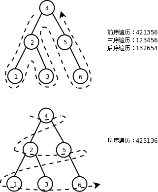
前序（Pre-order Traversal）、中序（In-order Traversal）、后序遍历（Post-order Traversal）和深度优先搜索的顺序类似，层序遍历（Level-order Traversal）和广度优先搜索的顺序类似。
前序和中序遍历的结果合在一起可以唯一确定二叉树的形态，也就是说根据遍历结果可以构造出二叉树。过程如下图所示：
图 26.11. 根据前序和中序遍历结果构造二叉树

想一想，根据中序和后序遍历结果能否构造二叉树？根据前序和后序遍历结果能否构造二叉树？
例 26.3. 二叉树
/* binarytree.h */
#ifndef BINARYTREE_H
#define BINARYTREE_H
typedef struct node *link;
struct node {
unsigned char item;
link l, r;
};
link init(unsigned char VLR[], unsigned char LVR[], int n);
void pre_order(link t, void (*visit)(link));
void in_order(link t, void (*visit)(link));
void post_order(link t, void (*visit)(link));
int count(link t);
int depth(link t);
void destroy(link t);
#endif
/* binarytree.c */
#include <stdlib.h>
#include "binarytree.h"
static link make_node(unsigned char item)
{
link p = malloc(sizeof *p);
p->item = item;
p->l = p->r = NULL;
return p;
}
static void free_node(link p)
{
free(p);
}
link init(unsigned char VLR[], unsigned char LVR[], int n)
{
link t;
int k;
if (n <= 0)
return NULL;
for (k = 0; VLR[0] != LVR[k]; k++);
t = make_node(VLR[0]);
t->l = init(VLR+1, LVR, k);
t->r = init(VLR+1+k, LVR+1+k, n-k-1);
return t;
}
void pre_order(link t, void (*visit)(link))
{
if (!t)
return;
visit(t);
pre_order(t->l, visit);
pre_order(t->r, visit);
}
void in_order(link t, void (*visit)(link))
{
if (!t)
return;
in_order(t->l, visit);
visit(t);
in_order(t->r, visit);
}
void post_order(link t, void (*visit)(link))
{
if (!t)
return;
post_order(t->l, visit);
post_order(t->r, visit);
visit(t);
}
int count(link t)
{
if (!t)
return 0;
return 1 + count(t->l) + count(t->r);
}
int depth(link t)
{
int dl, dr;
if (!t)
return 0;
dl = depth(t->l);
dr = depth(t->r);
return 1 + (dl > dr ? dl : dr);
}
void destroy(link t)
{
post_order(t, free_node);
}
/* main.c */
#include <stdio.h>
#include "binarytree.h"
void print_item(link p)
{
printf("%d", p->item);
}
int main()
{
unsigned char pre_seq[] = { 4, 2, 1, 3, 6, 5, 7 };
unsigned char in_seq[] = { 1, 2, 3, 4, 5, 6, 7 };
link root = init(pre_seq, in_seq, 7);
pre_order(root, print_item);
putchar('\n');
in_order(root, print_item);
putchar('\n');
post_order(root, print_item);
putchar('\n');
printf("count=%d depth=%d\n", count(root), depth(root));
destroy(root);
return 0;
}
习题
-
本节描述了二叉树的递归定义，想一想单链表的递归定义应该怎么表述？请仿照本节的例子用递归实现单链表的各种操作函数：
link init(unsigned char elements[], int n); void pre_order(link t, void (*visit)(link)); void post_order(link t, void (*visit)(link)); int count(link t); void destroy(link t);
2.2. 排序二叉树
排序二叉树（BST，Binary Search Tree）具有这样的性质：对于二叉树中的任意节点，如果它有左子树或右子树，则该节点的数据成员大于左子树所有节点的数据成员，且小于右子树所有节点的数据成员。排序二叉树的中序遍历结果是从小到大排列的，其实上一节的图 26.10「二叉树的遍历」就是排序二叉树。
例 26.4. 排序二叉树
/* bst.h */
#ifndef BST_H
#define BST_H
typedef struct node *link;
struct node {
unsigned char item;
link l, r;
};
link search(link t, unsigned char key);
link insert(link t, unsigned char key);
link delete(link t, unsigned char key);
void print_tree(link t);
#endif
/* bst.c */
#include <stdlib.h>
#include <stdio.h>
#include "bst.h"
static link make_node(unsigned char item)
{
link p = malloc(sizeof *p);
p->item = item;
p->l = p->r = NULL;
return p;
}
static void free_node(link p)
{
free(p);
}
link search(link t, unsigned char key)
{
if (!t)
return NULL;
if (t->item > key)
return search(t->l, key);
if (t->item < key)
return search(t->r, key);
/* if (t->item == key) */
return t;
}
link insert(link t, unsigned char key)
{
if (!t)
return make_node(key);
if (t->item > key) /* insert to left subtree */
t->l = insert(t->l, key);
else /* if (t->item <= key), insert to right subtree */
t->r = insert(t->r, key);
return t;
}
link delete(link t, unsigned char key)
{
link p;
if (!t)
return NULL;
if (t->item > key) /* delete from left subtree */
t->l = delete(t->l, key);
else if (t->item < key) /* delete from right subtree */
t->r = delete(t->r, key);
else { /* if (t->item == key) */
if (t->l == NULL && t->r == NULL) { /* if t is leaf node */
free_node(t);
t = NULL;
} else if (t->l) { /* if t has left subtree */
/* replace t with the rightmost node in left subtree */
for (p = t->l; p->r; p = p->r);
t->item = p->item;
t->l = delete(t->l, t->item);
} else { /* if t has right subtree */
/* replace t with the leftmost node in right subtree */
for (p = t->r; p->l; p = p->l);
t->item = p->item;
t->r = delete(t->r, t->item);
}
}
return t;
}
void print_tree(link t)
{
if (t) {
printf("(");
printf("%d", t->item);
print_tree(t->l);
print_tree(t->r);
printf(")");
} else
printf("()");
}
/* main.c */
#include <stdio.h>
#include <stdlib.h>
#include <time.h>
#include "bst.h"
#define RANGE 100
#define N 6
void print_item(link p)
{
printf("%d", p->item);
}
int main()
{
int i, key;
link root = NULL;
srand(time(NULL));
for (i = 0; i < N; i++)
root = insert(root, rand() % RANGE);
printf("\t\\tree");
print_tree(root);
printf("\n\n");
while (root) {
key = rand() % RANGE;
if (search(root, key)) {
printf("delete %d in tree\n", key);
root = delete(root, key);
printf("\t\\tree");
print_tree(root);
printf("\n\n");
}
}
}
$ ./a.out
\tree(83(77(15()(35()()))())(86()(93()())))
delete 86 in tree
\tree(83(77(15()(35()()))())(93()()))
delete 35 in tree
\tree(83(77(15()())())(93()()))
delete 93 in tree
\tree(83(77(15()())())())
delete 15 in tree
\tree(83(77()())())
delete 83 in tree
\tree(77()())
delete 77 in tree
\tree()
程序的运行结果可以用 Greg Lee 编写的 The Tree Preprocessor 转换成树形：
$ ./a.out | ./tree/tree
83
___|___
| |
77 86
_|__ _|__
| | | |
15 93
_|__ _|__
| | | |
35
_|__
| |
delete 86 in tree
83
___|___
| |
77 93
_|__ _|__
| | | |
15
_|__
| |
35
_|__
| |
delete 35 in tree
83
___|___
| |
77 93
_|__ _|__
| | | |
15
_|__
| |
delete 93 in tree
83
_|__
| |
77
_|__
| |
15
_|__
| |
delete 15 in tree
83
_|__
| |
77
_|__
| |
delete 83 in tree
77
_|__
| |
delete 77 in tree
3. 哈希表
下图示意了哈希表（Hash Table）这种数据结构。
图 26.12. 哈希表

如上图所示，首先分配一个指针数组，数组的每个元素是一个链表的头指针，每个链表称为一个槽（Slot）。哪个数据应该放入哪个槽中由哈希函数决定，在这个例子中我们简单地选取哈希函数 h(x) = x % 11，这样任意数据 x 都可以映射成 0 ~ 10 之间的一个数，就是槽的编号，将数据放入某个槽的操作就是链表的插入操作。
如果每个槽里至多只有一个数据，可以想像这种情况下 search、insert 和 delete 操作的时间复杂度都是 O(1)，但有时会有多个数据被哈希函数映射到同一个槽中，这称为碰撞（Collision），设计一个好的哈希函数可以把数据比较均匀地分布到各个槽中，尽量避免碰撞。如果能把 n 个数据比较均匀地分布到 m 个槽中，每个糟里约有 n/m 个数据，则 search、insert 和 delete 和操作的时间复杂度都是 O(n/m)，如果 n 和 m 的比是常数，则时间复杂度仍然是 O(1)。一般来说，要处理的数据越多，构造哈希表时分配的槽也应该越多，所以 n 和 m 成正比这个假设是成立的。
请读者自己编写程序构造这样一个哈希表，并实现 search、insert 和 delete操作。
如果用我们学过的各种数据结构来表示 n 个数据的集合，下表是 search、insert 和 delete 操作在平均情况下的时间复杂度比较。
表 26.1. 各种数据结构的 search、insert 和 delete 操作在平均情况下的时间复杂度比较
| 数据结构 | search | insert | delete |
|---|---|---|---|
| 数组 | O(n)，有序数组折半查找是 O(lgn) | O(n) | O(n) |
| 双向链表 | O(n) | O(1) | O(1) |
| 排序二叉树 | O(lgn) | O(lgn) | O(lgn) |
| 哈希表（n 与槽数 m 成正比） | O(1) | O(1) | O(1) |
习题
- 统计一个文本文件中每个单词的出现次数，然后按出现次数排序并打印输出。单词由连续的英文字母组成，不区分大小写。
- 实现一个函数求两个数组的交集：
size_t intersect(const int a[], size_t nmema, const int b[], size_t nmemb, int c[], size_t nmemc);。数组元素是 32 位 int 型的。数组a有nmema个元素且各不相同，数组b有nmemb个元素且各不相同。要求找出数组a和数组b的交集保存到数组c中，nmemc是数组c的最大长度，返回值表示交集中实际有多少个元素，如果交集中实际的元素数量超过了nmemc则返回nmemc个元素。数组a和数组b的元素数量可能会很大（比如上百万个），需要设计尽可能快的算法。
第 27 章 本阶段总结
在这一阶段我们又学习了很多新的语法规则，首先读者应该回到第 I 部分「C 语言入门」第 13 章「本阶段总结」把那些知识点重新总结一遍。然后我们总结一下各种开发调试工具的用法。
1. gcc
-c：编译生成目标文件（Relocatable），详见第 19 章「汇编与 C 之间的关系」第 2 节「main 函数和启动例程」。-Dmacro[=defn]：定义一个宏，详见第 21 章「预处理」第 3 节「条件预处理指示」。-E：只做预处理而不编译，cpp命令也可以达到同样的效果，详见第 21 章「预处理」第 2.1 节「函数式宏定义」。-g：在生成的目标文件中添加调试信息，所谓调试信息就是源代码和指令之间的对应关系，在gdb调试和objdump反汇编时要用到这些信息，详见第 10 章「gdb」第 1 节「单步执行和跟踪函数调用」。-Idir：dir是头文件所在的目录，详见第 20 章「链接详解」第 2.2 节「头文件」。-Ldir：dir是库文件所在的目录，详见第 20 章「链接详解」第 3 节「静态库」。-M和-MM：输出「.o文件：.c文件.h文件」这种形式的 Makefile 规则，-MM的输出不包括系统头文件，详见第 22 章「Makefile 基础」第 4 节「自动处理头文件的依赖关系」。-o outfile：outfile输出文件的文件名，详见第 19 章「汇编与 C 之间的关系」第 2 节「main 函数和启动例程」。-O?：各种编译优化选项，详见第 19 章「汇编与 C 之间的关系」第 6 节「volatile 限定符」。-print-search-dirs：打印库文件的默认搜索路径，详见第 20 章「链接详解」第 3 节「静态库」。-S：编译生成汇编代码，详见第 19 章「汇编与 C 之间的关系」第 2 节「main 函数和启动例程」。-v：打印详细的编译链接过程，详见第 19 章「汇编与 C 之间的关系」第 2 节「main 函数和启动例程」。-Wall：打印所有的警告信息，详见第 1 章「程序的基本概念」第 4 节「第一个程序」。-Wl,options：options是传递给链接器的选项，详见第 20 章「链接详解」第 4 节「共享库」。
2. gdb
- 在第 10 章「gdb」集中介绍了
gdb的基本命令和调试方法。 - 在第 19 章「汇编与 C 之间的关系」第 1 节「函数调用」提到了
gdb的指令级调试和反汇编命令。 - 如果一个程序由多个
.c文件编译链接而成，用gdb调试时如何定位某个源文件中的某一行代码呢？在第 20 章「链接详解」第 1 节「多目标文件的链接」有介绍。 - 在第 23 章「指针」第 6 节「指向指针的指针与指针数组」提到了用
gdb调试时如何给程序提供命令行参数。
3. 其它开发调试工具
as，汇编器，用法详见第 18 章「x86 汇编程序基础」例 18.1「最简单的汇编程序」。ld，链接器，用法详见第 18 章「x86 汇编程序基础」例 18.1「最简单的汇编程序」，用--verbose选项可以显示默认链接脚本，详见第 20 章「链接详解」第 1 节「多目标文件的链接」。readelf，读 ELF 文件信息，用法详见第 18 章「x86 汇编程序基础」第 5.1 节「目标文件」。objdump，显示目标文件中的信息，本书主要用它做反汇编，用法详见第 18 章「x86 汇编程序基础」第 5.1 节「目标文件」。hexdump，以十六进制或 ASCII 码显示一个文件，用法详见第 18 章「x86 汇编程序基础」第 5.1 节「目标文件」。ar，把目标文件打包成静态库，用法详见第 20 章「链接详解」第 3 节「静态库」。ranlib，给ar打包的静态库建索引，用法详见第 20 章「链接详解」第 3 节「静态库」。nm，查看符号表，用法详见第 19 章「汇编与 C 之间的关系」第 2 节「main 函数和启动例程」。
部分 III. Linux 系统编程
目录
- 文件与 I/O
- 汇编程序的 Hello world
- C 标准 I/O 库函数与 Unbuffered I/O 函数
- open/close
- read/write
- lseek
- fcntl
- ioctl
- mmap
- 文件系统
- 引言
- ext2 文件系统
- 总体存储布局
- 实例剖析
- 数据块寻址
- 文件和目录操作的系统函数
- VFS
- 内核数据结构
- dup 和 dup2 函数
- 进程
- 引言
- 环境变量
- 进程控制
- fork 函数
- exec 函数
- wait 和 waitpid 函数
- 进程间通信
- 管道
- 其它 IPC 机制
- 练习：实现简单的 Shell
- Shell 脚本
- Shell 的历史
- Shell 如何执行命令
- 执行交互式命令
- 执行脚本
- Shell的基本语法
- 变量
- 文件名代换（Globbing）： * ? []
- 命令代换： ` 或 $()
- 算术代换： $(())
- 转义字符
- 单引号
- 双引号
- bash 启动脚本
- 作为交互登录 Shell 启动，或者使用 --login 参数启动
- 以交互非登录 Shell 启动
- 非交互启动
- 以 sh 命令启动
- Shell 脚本语法
- 条件测试： test [
- if/then/elif/else/fi
- case/esac
- for/do/done
- while/do/done
- 位置参数和特殊变量
- 函数
- Shell 脚本的调试方法
- 正则表达式
- 引言
- 基本语法
- sed
- awk
- 练习：在 C 语言中使用正则表达式
- 信号
- 信号的基本概念
- 产生信号
- 通过终端按键产生信号
- 调用系统函数向进程发信号
- 由软件条件产生信号
- 阻塞信号
- 信号在内核中的表示
- 信号集操作函数
- sigprocmask
- sigpending
- 捕捉信号
- 内核如何实现信号的捕捉
- sigaction
- pause
- 可重入函数
- sig_atomic_t 类型与 volatile 限定符
- 竞态条件与 sigsuspend 函数
- 关于 SIGCHLD 信号
- 终端、作业控制与守护进程
- 终端
- 终端的基本概念
- 终端登录过程
- 网络登录过程
- 作业控制
- Session 与进程组
- 与作业控制有关的信号
- 守护进程
- 终端
- 线程
- 线程的概念
- 线程控制
- 创建线程
- 终止线程
- 线程间同步
- mutex
- Condition Variable
- Semaphore
- 其它线程间同步机制
- 编程练习
- TCP/IP 协议基础
- TCP/IP 协议栈与数据包封装
- 以太网 (RFC 894) 帧格式
- ARP 数据报格式
- IP 数据报格式
- IP 地址与路由
- UDP 段格式
- TCP 协议
- 段格式
- 通讯时序
- 流量控制
- socket 编程
- 预备知识
- 网络字节序
- socket 地址的数据类型及相关函数
- 基于 TCP 协议的网络程序
- 最简单的 TCP 网络程序
- 错误处理与读写控制
- 把 client 改为交互式输入
- 使用 fork 并发处理多个 client 的请求
- setsockopt
- 使用 select
- 基于 UDP 协议的网络程序
- UNIX Domain Socket IPC
- 练习：实现简单的 Web 服务器
- 基本 HTTP 协议
- 执行 CGI 程序
- 预备知识
第 28 章 文件 与 I/O
从本章开始学习各种 Linux 系统函数，这些函数的用法必须结合 Linux 内核的工作原理来理解，因为系统函数正是内核提供给应用程序的接口，而要理解内核的工作原理，必须熟练掌握 C 语言，因为内核也是用 C 语言写的，我们在描述内核工作原理时必然要用「指针」、「结构体」、「链表」这些名词来组织语言，就像只有掌握了英语才能看懂英文书一样，只有学好了C语言才能看懂我描述的内核工作原理。读者看到这里应该已经熟练掌握了C语言了，所以应该有一个很好的起点了。我们在介绍C标准库时并不试图把所有库函数讲一遍，而是通过介绍一部分常用函数让读者把握库函数的基本用法，在掌握了方法之后，书上没讲的库函数读者应该自己查 Man Page 学会使用。同样，本书的第三部分也并不试图把所有的系统函数讲一遍，而是通过介绍一部分系统函数让读者理解操作系统各部分的工作原理，在有了这个基础之后就应该能够看懂 Man Page 学习其它系统函数的用法。
读者可以结合 APUE2e 学习本书的第三部分，该书在讲解系统函数方面更加全面，但对于内核工作原理涉及得不够深入，而且假定读者具有一定的操作系统基础知识，所以并不适合初学者。该书还有一点非常不适合初学者，作者不辞劳苦，在 N 多种 UNIX 系统上做了实验，分析了它们的内核代码，把每个系统函数在各种 UNIX 系统上的不兼容特性总结得非常详细，很多开发者需要编写可移植的应用程序，一定爱死他了，但初学者看了大段大段的这种描述（某某函数在 4.2BSD 上怎么样，到 4.4BSD 又改成怎么样了，在 SVR4 上怎么样，到 Solaris 又改成怎么样了，现在 POSIX 标准是怎么统一的，还有哪些系统没有完全遵守 POSIX 标准）只会一头雾水，不看倒还明白，越看越不明白了。也正因为该书要兼顾各种 UNIX 系统，所以没法深入讲解内核的工作原理，因为每种 UNIX 系统的内核都不一样。而本书的侧重点则不同，只讲 Linux 平台的特性，只讲 Linux 内核的工作原理，涉及体系结构时只讲 x86 平台，对于初学者来说，绑定到一个明确的平台上学习就不会觉得太抽象了。当然本书的代码也会尽量兼顾可移植性，避免依赖于 Linux 平台特有的一些特性。
1. 汇编程序的 Hello world
之前我们学习了如何用 C 标准 I/O 库读写文件，本章详细讲解这些 I/O 操作是怎么实现的。所有 I/O 操作最终都是在内核中做的，以前我们用的 C 标准 I/O 库函数最终也是通过系统调用把 I/O 操作从用户空间传给内核，然后让内核去做 I/O 操作，本章和下一章会介绍内核中 I/O 子系统的工作原理。首先看一个打印 Hello world 的汇编程序，了解 I/O 操作是怎样通过系统调用传给内核的。
例 28.1. 汇编程序的 Hello world
.data # section declaration
msg:
.ascii "Hello, world!\n" # our dear string
len = . - msg # length of our dear string
.text # section declaration
# we must export the entry point to the ELF linker or
.global _start # loader. They conventionally recognize _start as their
# entry point. Use ld -e foo to override the default.
_start:
# write our string to stdout
movl $len,%edx # third argument: message length
movl $msg,%ecx # second argument: pointer to message to write
movl $1,%ebx # first argument: file handle (stdout)
movl $4,%eax # system call number (sys_write)
int $0x80 # call kernel
# and exit
movl $0,%ebx # first argument: exit code
movl $1,%eax # system call number (sys_exit)
int $0x80 # call kernel
像以前一样，汇编、链接、运行：
$ as -o hello.o hello.s
$ ld -o hello hello.o
$ ./hello
Hello, world!
这段汇编相当于以下 C 代码：
#include <unistd.h>
char msg[14] = "Hello, world!\n";
#define len 14
int main(void)
{
write(1, msg, len);
_exit(0);
}
.data 段有一个标号 msg，代表字符串 "Hello, world!\n" 的首地址，相当于 C 程序的一个全局变量。注意在 C 语言中字符串的末尾隐含有一个 '\0'，而汇编指示 .ascii 定义的字符串末尾没有隐含的 '\0'。汇编程序中的 len 代表一个常量，它的值由当前地址减去符号 msg 所代表的地址得到，换句话说就是字符串 "Hello, world!\n" 的长度。现在解释一下这行代码中的「.」，汇编器总是从前到后把汇编代码转换成目标文件，在这个过程中维护一个地址计数器，当处理到每个段的开头时把地址计数器置成 0，然后每处理一条汇编指示或指令就把地址计数器增加相应的字节数，在汇编程序中用「.」可以取出当前地址计数器的值，该值是一个常量。
在 _start 中调了两个系统调用，第一个是 write 系统调用，第二个是以前讲过的 _exit 系统调用。在调 write 系统调用时，eax 寄存器保存着 write 的系统调用号 4，ebx、ecx、edx 寄存器分别保存着 write 系统调用需要的三个参数。ebx 保存着文件描述符，进程中每个打开的文件都用一个编号来标识，称为文件描述符，文件描述符 1 表示标准输出，对应于 C 标准 I/O 库的 stdout。ecx 保存着输出缓冲区的首地址。edx 保存着输出的字节数。write 系统调用把从 msg 开始的 len 个字节写到标准输出。
C 代码中的 write 函数是系统调用的包装函数，其内部实现就是把传进来的三个参数分别赋给 ebx、ecx、edx 寄存器，然后执行 movl $4,%eax 和 int $0x80 两条指令。这个函数不可能完全用 C 代码来写，因为任何 C 代码都不会编译生成 int 指令，所以这个函数有可能是完全用汇编写的，也可能是用 C 内联汇编写的，甚至可能是一个宏定义（省了参数入栈出栈的步骤）。_exit 函数也是如此，我们讲过这些系统调用的包装函数位于 Man Page 的第 2 个 Section。
2. C 标准 I/O 库函数与 Unbuffered I/O 函数
现在看看 C 标准 I/O 库函数是如何用系统调用实现的。
fopen(3)：调用open(2)打开指定的文件，返回一个文件描述符（就是一个int类型的编号），分配一个FILE结构体，其中包含该文件的描述符、I/O 缓冲区和当前读写位置等信息，返回这个FILE结构体的地址。fgetc(3)：通过传入的FILE *参数找到该文件的描述符、I/O 缓冲区和当前读写位置，判断能否从 I/O 缓冲区中读到下一个字符，如果能读到就直接返回该字符，否则调用read(2)，把文件描述符传进去，让内核读取该文件的数据到 I/O 缓冲区，然后返回下一个字符。注意，对于 C 标准 I/O 库来说，打开的文件由FILE *指针标识，而对于内核来说，打开的文件由文件描述符标识，文件描述符从open系统调用获得，在使用read、write、close系统调用时都需要传文件描述符。fputc(3)：判断该文件的 I/O 缓冲区是否有空间再存放一个字符，如果有空间则直接保存在 I/O 缓冲区中并返回，如果 I/O 缓冲区已满就调用write(2)，让内核把 I/O 缓冲区的内容写回文件。fclose(3)：如果 I/O 缓冲区中还有数据没写回文件，就调用write(2)写回文件，然后调用close(2)关闭文件，释放FILE结构体和 I/O 缓冲区。
以写文件为例，C 标准 I/O 库函数（printf(3)、putchar(3)、fputs(3)）与系统调用 write(2) 的关系如下图所示。
图 28.1. 库函数与系统调用的层次关系

open、read、write、close 等系统函数称为无缓冲 I/O（Unbuffered I/O）函数，因为它们位于 C 标准库的 I/O 缓冲区的底层[36]。用户程序在读写文件时既可以调用 C 标准 I/O 库函数，也可以直接调用底层的 Unbuffered I/O 函数，那么用哪一组函数好呢？
[36] 事实上 Unbuffered I/O 这个名词是有些误导的，虽然
write系统调用位于 C 标准库 I/O 缓冲区的底层，但在write的底层也可以分配一个内核 I/O 缓冲区，所以write也不一定是直接写到文件的，也可能写到内核 I/O 缓冲区中，至于究竟写到了文件中还是内核缓冲区中对于进程来说是没有差别的，如果进程 A 和进程 B 打开同一文件，进程 A 写到内核 I/O 缓冲区中的数据从进程 B 也能读到，而 C 标准库的 I/O 缓冲区则不具有这一特性（想一想为什么）。
- 用 Unbuffered I/O 函数每次读写都要进内核，调一个系统调用比调一个用户空间的函数要慢很多，所以在用户空间开辟 I/O 缓冲区还是必要的，用 C 标准 I/O 库函数就比较方便，省去了自己管理 I/O 缓冲区的麻烦。
- 用 C 标准 I/O 库函数要时刻注意 I/O 缓冲区和实际文件有可能不一致，在必要时需调用
fflush(3)。 - 我们知道 UNIX 的传统是 Everything is a file，I/O 函数不仅用于读写常规文件，也用于读写设备，比如终端或网络设备。在读写设备时通常是不希望有缓冲的，例如向代表网络设备的文件写数据就是希望数据通过网络设备发送出去，而不希望只写到缓冲区里就算完事儿了，当网络设备接收到数据时应用程序也希望第一时间被通知到，所以网络编程通常直接调用 Unbuffered I/O 函数。
C 标准库函数是 C 标准的一部分，而 Unbuffered I/O 函数是 UNIX 标准的一部分，在所有支持 C 语言的平台上应该都可以用 C 标准库函数（除了有些平台的 C 编译器没有完全符合 C 标准之外），而只有在 UNIX 平台上才能使用 Unbuffered I/O 函数，所以 C 标准 I/O 库函数在头文件 stdio.h 中声明，而 read、write 等函数在头文件 unistd.h 中声明。在支持 C 语言的非 UNIX 操作系统上，标准 I/O 库的底层可能由另外一组系统函数支持，例如 Windows 系统的底层是 Win32 API，其中读写文件的系统函数是 ReadFile、WriteFile。
关于 UNIX 标准
POSIX（Portable Operating System Interface）是由 IEEE 制定的标准，致力于统一各种 UNIX 系统的接口，促进各种 UNIX 系统向互相兼容的发向发展。IEEE 1003.1（也称为 POSIX.1）定义了 UNIX 系统的函数接口，既包括 C 标准库函数，也包括系统调用和其它 UNIX 库函数。POSIX.1 只定义接口而不定义实现，所以并不区分一个函数是库函数还是系统调用，至于哪些函数在用户空间实现，哪些函数在内核中实现，由操作系统的开发者决定，各种 UNIX 系统都不太一样。IEEE 1003.2 定义了 Shell 的语法和各种基本命令的选项等。本书的第三部分不仅讲解基本的系统函数接口，也顺带讲解 Shell、基本命令、帐号和权限以及系统管理的基础知识，这些内容合在一起定义了 UNIX 系统的基本特性。
在 UNIX 的发展历史上主要分成 BSD 和 SYSV 两个派系，各自实现了很多不同的接口，比如 BSD 的网络编程接口是 socket，而 SYSV 的网络编程接口是基于 STREAMS 的 TLI。POSIX 在统一接口的过程中，有些接口借鉴 BSD 的，有些接口借鉴 SYSV 的，还有些接口既不是来自 BSD 也不是来自 SYSV，而是凭空发明出来的（例如本书要讲的 pthread 库就属于这种情况），通过 Man Page 的 COMFORMING TO 部分可以看出来一个函数接口属于哪种情况。Linux 的源代码是完全从头编写的，并不继承 BSD 或 SYSV 的源代码，没有历史的包袱，所以能比较好地遵照 POSIX 标准实现，既有 BSD 的特性也有 SYSV 的特性，此外还有一些 Linux 特有的特性，比如 epoll(7)，依赖于这些接口的应用程序是不可移植的，但在 Linux 系统上运行效率很高。
POSIX 定义的接口有些规定是必须实现的，而另外一些是可以选择实现的。有些非 UNIX 系统也实现了 POSIX 中必须实现的部分，那么也可以声称自己是 POSIX 兼容的，然而要想声称自己是 UNIX，还必须要实现一部分在 POSIX 中规定为可选实现的接口，这由另外一个标准 SUS（Single UNIX Specification）规定。SUS 是 POSIX 的超集，一部分在 POSIX 中规定为可选实现的接口在 SUS 中规定为必须实现，完整实现了这些接口的系统称为 XSI（X/Open System Interface）兼容的。SUS 标准由 The Open Group 维护，该组织拥有 UNIX 的注册商标（http://www.unix.org/），XSI 兼容的系统可以从该组织获得授权使用 UNIX 这个商标。
现在该说说文件描述符了。每个进程在 Linux 内核中都有一个 task_struct 结构体来维护进程相关的信息，称为进程描述符（Process Descriptor），而在操作系统理论中称为进程控制块（PCB，Process Control Block）。task_struct中有一个指针指向files_struct结构体，称为文件描述符表，其中每个表项包含一个指向已打开的文件的指针，如下图所示。
图 28.2. 文件描述符表

至于已打开的文件在内核中用什么结构体表示，我们将在下一章详细介绍，目前我们在画图时用一个圈表示。用户程序不能直接访问内核中的文件描述符表，而只能使用文件描述符表的索引（即 0、1、2、3 这些数字），这些索引就称为文件描述符（File Descriptor），用 int 型变量保存。当调用 open 打开一个文件或创建一个新文件时，内核分配一个文件描述符并返回给用户程序，该文件描述符表项中的指针指向新打开的文件。当读写文件时，用户程序把文件描述符传给 read 或 write，内核根据文件描述符找到相应的表项，再通过表项中的指针找到相应的文件。
我们知道，程序启动时会自动打开三个文件：标准输入、标准输出和标准错误输出。在 C 标准库中分别用 FILE * 指针 stdin、stdout 和 stderr 表示。这三个文件的描述符分别是 0、1、2，保存在相应的 FILE 结构体中。头文件 unistd.h 中有如下的宏定义来表示这三个文件描述符：
#define STDIN_FILENO 0
#define STDOUT_FILENO 1
#define STDERR_FILENO 2
3. open/close
open 函数可以打开或创建一个文件。
#include <sys/types.h>
#include <sys/stat.h>
#include <fcntl.h>
int open(const char *pathname, int flags);
int open(const char *pathname, int flags, mode_t mode);
返回值：成功返回新分配的文件描述符，出错返回 -1 并设置 errno
在 Man Page 中 open 函数有两种形式，一种带两个参数，一种带三个参数，其实在 C 代码中 open 函数是这样声明的：
int open(const char *pathname, int flags, ...);
最后的可变参数可以是 0 个或 1 个，由 flags 参数中的标志位决定，见下面的详细说明。
pathname 参数是要打开或创建的文件名，和 fopen 一样，pathname 既可以是相对路径也可以是绝对路径。flags 参数有一系列常数值可供选择，可以同时选择多个常数用按位或运算符连接起来，所以这些常数的宏定义都以 O_ 开头，表示 or。
必选项：以下三个常数中必须指定一个，且仅允许指定一个。
O_RDONLY只读打开O_WRONLY只写打开O_RDWR可读可写打开
以下可选项可以同时指定 0 个或多个，和必选项按位或起来作为 flags 参数。可选项有很多，这里只介绍一部分，其它选项可参考 open(2) 的 Man Page：
O_APPEND表示追加。如果文件已有内容，这次打开文件所写的数据附加到文件的末尾而不覆盖原来的内容。O_CREAT若此文件不存在则创建它。使用此选项时需要提供第三个参数mode，表示该文件的访问权限。O_EXCL如果同时指定了O_CREAT，并且文件已存在，则出错返回。O_TRUNC如果文件已存在，并且以只写或可读可写方式打开，则将其长度截断（Truncate）为 0 字节。O_NONBLOCK对于设备文件，以O_NONBLOCK方式打开可以做非阻塞 I/O（Nonblock I/O），非阻塞 I/O 在下一节详细讲解。
注意 open 函数与 C 标准 I/O 库的 fopen 函数有些细微的区别：
- 以可写的方式
fopen一个文件时，如果文件不存在会自动创建，而open一个文件时必须明确指定O_CREAT才会创建文件，否则文件不存在就出错返回。 - 以
w或w+方式fopen一个文件时，如果文件已存在就截断为 0 字节，而open一个文件时必须明确指定O_TRUNC才会截断文件，否则直接在原来的数据上改写。
第三个参数 mode 指定文件权限，可以用八进制数表示，比如 0644 表示 -rw-r--r--，也可以用 S_IRUSR、S_IWUSR 等宏定义按位或起来表示，详见 open(2) 的 Man Page。要注意的是，文件权限由 open 的 mode 参数和当前进程的 umask 掩码共同决定。
补充说明一下 Shell 的 umask 命令。Shell 进程的 umask 掩码可以用 umask 命令查看：
$ umask
0022
用 touch 命令创建一个文件时，创建权限是 0666，而 touch 进程继承了 Shell 进程的 umask 掩码，所以最终的文件权限是 0666&~022=0644。
$ touch file123
$ ls -l file123
-rw-r--r-- 1 akaedu akaedu 0 2009-03-08 15:07 file123
同样道理，用 gcc 编译生成一个可执行文件时，创建权限是 0777，而最终的文件权限是 0777&~022=0755。
$ gcc main.c
$ ls -l a.out
-rwxr-xr-x 1 akaedu akaedu 6483 2009-03-08 15:07 a.out
我们看到的都是被 umask 掩码修改之后的权限，那么如何证明 touch 或 gcc 创建文件的权限本来应该是 0666 和 0777 呢？我们可以把 Shell 进程的 umask 改成 0，再重复上述实验：
$ umask 0
$ touch file123
$ rm file123 a.out
$ touch file123
$ ls -l file123
-rw-rw-rw- 1 akaedu akaedu 0 2009-03-08 15:09 file123
$ gcc main.c
$ ls -l a.out
-rwxrwxrwx 1 akaedu akaedu 6483 2009-03-08 15:09 a.out
现在我们自己写一个程序，在其中调用 open("somefile", O_WRONLY|O_CREAT, 0664); 创建文件，然后在 Shell 中运行并查看结果：
$ umask 022
$ ./a.out
$ ls -l somefile
-rw-r--r-- 1 akaedu akaedu 6483 2009-03-08 15:11 somefile
不出所料，文件 somefile 的权限是 0664&~022=0644。有几个问题现在我没有解释：为什么被 Shell 启动的进程可以继承 Shell 进程的 umask 掩码？为什么 umask 命令可以读写 Shell 进程的 umask 掩码？这些问题将在第 30 章「进程」第 1 节「引言」解释。
close 函数关闭一个已打开的文件：
#include <unistd.h>
int close(int fd);
返回值：成功返回 0，出错返回 -1 并设置 errno
参数 fd 是要关闭的文件描述符。需要说明的是，当一个进程终止时，内核对该进程所有尚未关闭的文件描述符调用 close 关闭，所以即使用户程序不调用 close，在终止时内核也会自动关闭它打开的所有文件。但是对于一个长年累月运行的程序（比如网络服务器），打开的文件描述符一定要记得关闭，否则随着打开的文件越来越多，会占用大量文件描述符和系统资源。
由 open 返回的文件描述符一定是该进程尚未使用的最小描述符。由于程序启动时自动打开文件描述符 0、1、2，因此第一次调用 open 打开文件通常会返回描述符 3，再调用 open 就会返回 4。可以利用这一点在标准输入、标准输出或标准错误输出上打开一个新文件，实现重定向的功能。例如，首先调用 close 关闭文件描述符 1，然后调用 open 打开一个常规文件，则一定会返回文件描述符 1，这时候标准输出就不再是终端，而是一个常规文件了，再调用 printf 就不会打印到屏幕上，而是写到这个文件中了。后面要讲的 dup2 函数提供了另外一种办法在指定的文件描述符上打开文件。
习题
-
在系统头文件中查找
flags和mode参数用到的这些宏定义的值是多少。把这些宏定义按位或起来是什么效果？为什么必选项只能选一个而可选项可以选多个？ -
请按照下述要求分别写出相应的
open调用。- 打开文件
/home/akae.txt用于写操作，以追加方式打开 - 打开文件
/home/akae.txt用于写操作，如果该文件不存在则创建它 - 打开文件
/home/akae.txt用于写操作，如果该文件已存在则截断为 0 字节，如果该文件不存在则创建它 - 打开文件
/home/akae.txt用于写操作，如果该文件已存在则报错退出，如果该文件不存在则创建它
- 打开文件
4. read/write
read 函数从打开的设备或文件中读取数据。
#include <unistd.h>
ssize_t read(int fd, void *buf, size_t count);
返回值：成功返回读取的字节数，出错返回 -1 并设置 errno，如果在调 read 之前已到达文件末尾，则这次 read 返回 0
参数 count 是请求读取的字节数，读上来的数据保存在缓冲区 buf 中，同时文件的当前读写位置向后移。注意这个读写位置和使用 C 标准 I/O 库时的读写位置有可能不同，这个读写位置是记在内核中的，而使用 C 标准 I/O 库时的读写位置是用户空间 I/O 缓冲区中的位置。比如用 fgetc 读一个字节，fgetc 有可能从内核中预读 1024 个字节到 I/O 缓冲区中，再返回第一个字节，这时该文件在内核中记录的读写位置是 1024，而在 FILE 结构体中记录的读写位置是 1。注意返回值类型是 ssize_t，表示有符号的 size_t，这样既可以返回正的字节数、0（表示到达文件末尾）也可以返回负值 -1（表示出错）。read 函数返回时，返回值说明了 buf 中前多少个字节是刚读上来的。有些情况下，实际读到的字节数（返回值）会小于请求读的字节数 count，例如：
- 读常规文件时，在读到
count个字节之前已到达文件末尾。例如，距文件末尾还有 30 个字节而请求读 100 个字节，则read返回 30，下次read将返回 0。 - 从终端设备读，通常以行为单位，读到换行符就返回了。
- 从网络读，根据不同的传输层协议和内核缓存机制，返回值可能小于请求的字节数，后面 socket 编程部分会详细讲解。
write 函数向打开的设备或文件中写数据。
#include <unistd.h>
ssize_t write(int fd, const void *buf, size_t count);
返回值：成功返回写入的字节数，出错返回 -1 并设置 errno
写常规文件时，write 的返回值通常等于请求写的字节数 count，而向终端设备或网络写则不一定。
读常规文件是不会阻塞的，不管读多少字节，read 一定会在有限的时间内返回。从终端设备或网络读则不一定，如果从终端输入的数据没有换行符，调用 read 读终端设备就会阻塞，如果网络上没有接收到数据包，调用 read 从网络读就会阻塞，至于会阻塞多长时间也是不确定的，如果一直没有数据到达就一直阻塞在那里。同样，写常规文件是不会阻塞的，而向终端设备或网络写则不一定。
现在明确一下阻塞（Block）这个概念。当进程调用一个阻塞的系统函数时，该进程被置于睡眠（Sleep）状态，这时内核调度其它进程运行，直到该进程等待的事件发生了（比如网络上接收到数据包，或者调用 sleep 指定的睡眠时间到了）它才有可能继续运行。与睡眠状态相对的是运行（Running）状态，在 Linux 内核中，处于运行状态的进程分为两种情况：
- 正在被调度执行。CPU 处于该进程的上下文环境中，程序计数器（
eip）里保存着该进程的指令地址，通用寄存器里保存着该进程运算过程的中间结果，正在执行该进程的指令，正在读写该进程的地址空间。 - 就绪状态。该进程不需要等待什么事件发生，随时都可以执行，但 CPU 暂时还在执行另一个进程，所以该进程在一个就绪队列中等待被内核调度。系统中可能同时有多个就绪的进程，那么该调度谁执行呢？内核的调度算法是基于优先级和时间片的，而且会根据每个进程的运行情况动态调整它的优先级和时间片，让每个进程都能比较公平地得到机会执行，同时要兼顾用户体验，不能让和用户交互的进程响应太慢。
下面这个小程序从终端读数据再写回终端。
例 28.2. 阻塞读终端
#include <unistd.h>
#include <stdlib.h>
int main(void)
{
char buf[10];
int n;
n = read(STDIN_FILENO, buf, 10);
if (n < 0) {
perror("read STDIN_FILENO");
exit(1);
}
write(STDOUT_FILENO, buf, n);
return 0;
}
执行结果如下：
$ ./a.out
hello（回车）
hello
$ ./a.out
hello world（回车）
hello worl$ d
bash: d: command not found
第一次执行 a.out 的结果很正常，而第二次执行的过程有点特殊，现在分析一下：
- Shell 进程创建
a.out进程，a.out进程开始执行，而 Shell 进程睡眠等待a.out进程退出。 a.out调用read时睡眠等待，直到终端设备输入了换行符才从read返回，read只读走 10 个字符，剩下的字符仍然保存在内核的终端设备输入缓冲区中。a.out进程打印并退出，这时 Shell 进程恢复运行，Shell 继续从终端读取用户输入的命令，于是读走了终端设备输入缓冲区中剩下的字符 d 和换行符，把它当成一条命令解释执行，结果发现执行不了，没有 d 这个命令。
如果在 open 一个设备时指定了 O_NONBLOCK 标志，read/write 就不会阻塞。以 read 为例，如果设备暂时没有数据可读就返回 -1，同时置 errno 为 EWOULDBLOCK（或者 EAGAIN，这两个宏定义的值相同），表示本来应该阻塞在这里（would block，虚拟语气），事实上并没有阻塞而是直接返回错误，调用者应该试着再读一次（again）。这种行为方式称为轮询（Poll），调用者只是查询一下，而不是阻塞在这里死等，这样可以同时监视多个设备：
while(1) {
非阻塞 read (设备1);
if(设备1 有数据到达)
处理数据;
非阻塞 read (设备2);
if(设备2 有数据到达)
处理数据;
...
}
如果 read(设备1) 是阻塞的，那么只要 设备1 没有数据到达就会一直阻塞在 设备1 的 read 调用上，即使 设备2 有数据到达也不能处理，使用非阻塞 I/O 就可以避免 设备2 得不到及时处理。
非阻塞 I/O 有一个缺点，如果所有设备都一直没有数据到达，调用者需要反复查询做无用功，如果阻塞在那里，操作系统可以调度别的进程执行，就不会做无用功了。在使用非阻塞 I/O 时，通常不会在一个 while 循环中一直不停地查询（这称为 Tight Loop），而是每延迟等待一会儿来查询一下，以免做太多无用功，在延迟等待的时候可以调度其它进程执行。
while(1) {
非阻塞 read(设备1);
if(设备1 有数据到达)
处理数据;
非阻塞 read(设备2);
if(设备2 有数据到达)
处理数据;
...
sleep(n);
}
这样做的问题是，设备1 有数据到达时可能不能及时处理，最长需延迟 n 秒才能处理，而且反复查询还是做了很多无用功。以后要学习的 select(2) 函数可以阻塞地同时监视多个设备，还可以设定阻塞等待的超时时间，从而圆满地解决了这个问题。
以下是一个非阻塞 I/O 的例子。目前我们学过的可能引起阻塞的设备只有终端，所以我们用终端来做这个实验。程序开始执行时在 0、1、2 文件描述符上自动打开的文件就是终端，但是没有 O_NONBLOCK 标志。所以就像例 28.2「阻塞读终端」一样，读标准输入是阻塞的。我们可以重新打开一遍设备文件 /dev/tty（表示当前终端），在打开时指定 O_NONBLOCK 标志。
例 28.3. 非阻塞读终端
#include <unistd.h>
#include <fcntl.h>
#include <errno.h>
#include <string.h>
#include <stdlib.h>
#define MSG_TRY "try again\n"
int main(void)
{
char buf[10];
int fd, n;
fd = open("/dev/tty", O_RDONLY|O_NONBLOCK);
if(fd<0) {
perror("open /dev/tty");
exit(1);
}
tryagain:
n = read(fd, buf, 10);
if (n < 0) {
if (errno == EAGAIN) {
sleep(1);
write(STDOUT_FILENO, MSG_TRY, strlen(MSG_TRY));
goto tryagain;
}
perror("read /dev/tty");
exit(1);
}
write(STDOUT_FILENO, buf, n);
close(fd);
return 0;
}
以下是用非阻塞 I/O 实现等待超时的例子。既保证了超时退出的逻辑又保证了有数据到达时处理延迟较小。
例 28.4. 非阻塞读终端和等待超时
#include <unistd.h>
#include <fcntl.h>
#include <errno.h>
#include <string.h>
#include <stdlib.h>
#define MSG_TRY "try again\n"
#define MSG_TIMEOUT "timeout\n"
int main(void)
{
char buf[10];
int fd, n, i;
fd = open("/dev/tty", O_RDONLY|O_NONBLOCK);
if(fd<0) {
perror("open /dev/tty");
exit(1);
}
for(i=0; i<5; i++) {
n = read(fd, buf, 10);
if(n>=0)
break;
if(errno!=EAGAIN) {
perror("read /dev/tty");
exit(1);
}
sleep(1);
write(STDOUT_FILENO, MSG_TRY, strlen(MSG_TRY));
}
if(i==5)
write(STDOUT_FILENO, MSG_TIMEOUT, strlen(MSG_TIMEOUT));
else
write(STDOUT_FILENO, buf, n);
close(fd);
return 0;
}
5. lseek
每个打开的文件都记录着当前读写位置，打开文件时读写位置是 0，表示文件开头，通常读写多少个字节就会将读写位置往后移多少个字节。但是有一个例外，如果以 O_APPEND 方式打开，每次写操作都会在文件末尾追加数据，然后将读写位置移到新的文件末尾。lseek 和标准 I/O 库的 fseek 函数类似，可以移动当前读写位置（或者叫偏移量）。
#include <sys/types.h>
#include <unistd.h>
off_t lseek(int fd, off_t offset, int whence);
参数 offset 和 whence 的含义和 fseek 函数完全相同。只不过第一个参数换成了文件描述符。和 fseek 一样，偏移量允许超过文件末尾，这种情况下对该文件的下一次写操作将延长文件，中间空洞的部分读出来都是 0。
若 lseek 成功执行，则返回新的偏移量，因此可用以下方法确定一个打开文件的当前偏移量：
off_t currpos;
currpos = lseek(fd, 0, SEEK_CUR);
这种方法也可用来确定文件或设备是否可以设置偏移量，常规文件都可以设置偏移量，而设备一般是不可以设置偏移量的。如果设备不支持 lseek，则 lseek 返回 -1，并将 errno 设置为 ESPIPE。注意 fseek 和 lseek 在返回值上有细微的差别，fseek 成功时返回 0 失败时返回 -1，要返回当前偏移量需调用 ftell，而 lseek 成功时返回当前偏移量失败时返回 -1。
6. fcntl
先前我们以 read 终端设备为例介绍了非阻塞 I/O，为什么我们不直接对 STDIN_FILENO 做非阻塞 read，而要重新 open 一遍 /dev/tty 呢？因为 STDIN_FILENO 在程序启动时已经被自动打开了，而我们需要在调用 open 时指定 O_NONBLOCK 标志。这里介绍另外一种办法，可以用 fcntl 函数改变一个已打开的文件的属性，可以重新设置读、写、追加、非阻塞等标志（这些标志称为 File Status Flag），而不必重新 open 文件。
#include <unistd.h>
#include <fcntl.h>
int fcntl(int fd, int cmd);
int fcntl(int fd, int cmd, long arg);
int fcntl(int fd, int cmd, struct flock *lock);
这个函数和 open 一样，也是用可变参数实现的，可变参数的类型和个数取决于前面的 cmd 参数。下面的例子使用 F_GETFL 和 F_SETFL 这两种 fcntl 命令改变 STDIN_FILENO 的属性，加上 O_NONBLOCK 选项，实现和例 28.3「非阻塞读终端」同样的功能。
例 28.5. 用 fcntl 改变 File Status Flag
#include <unistd.h>
#include <fcntl.h>
#include <errno.h>
#include <string.h>
#include <stdlib.h>
#define MSG_TRY "try again\n"
int main(void)
{
char buf[10];
int n;
int flags;
flags = fcntl(STDIN_FILENO, F_GETFL);
flags |= O_NONBLOCK;
if (fcntl(STDIN_FILENO, F_SETFL, flags) == -1) {
perror("fcntl");
exit(1);
}
tryagain:
n = read(STDIN_FILENO, buf, 10);
if (n < 0) {
if (errno == EAGAIN) {
sleep(1);
write(STDOUT_FILENO, MSG_TRY, strlen(MSG_TRY));
goto tryagain;
}
perror("read stdin");
exit(1);
}
write(STDOUT_FILENO, buf, n);
return 0;
}
以下程序通过命令行的第一个参数指定一个文件描述符，同时利用 Shell 的重定向功能在该描述符上打开文件，然后用 fcntl 的 F_GETFL 命令取出 File Status Flag 并打印。
#include <sys/types.h>
#include <fcntl.h>
#include <stdio.h>
#include <stdlib.h>
int main(int argc, char *argv[])
{
int val;
if (argc != 2) {
fputs("usage: a.out <descriptor#>\n", stderr);
exit(1);
}
if ((val = fcntl(atoi(argv[1]), F_GETFL)) < 0) {
printf("fcntl error for fd %d\n", atoi(argv[1]));
exit(1);
}
switch(val & O_ACCMODE) {
case O_RDONLY:
printf("read only");
break;
case O_WRONLY:
printf("write only");
break;
case O_RDWR:
printf("read write");
break;
default:
fputs("invalid access mode\n", stderr);
exit(1);
}
if (val & O_APPEND)
printf(", append");
if (val & O_NONBLOCK)
printf(", nonblocking");
putchar('\n');
return 0;
}
运行该程序的几种情况解释如下。
$ ./a.out 0 < /dev/tty
read only
Shell 在执行 a.out 时将它的标准输入重定向到 /dev/tty，并且是只读的。argv[1] 是 0，因此取出文件描述符 0（也就是标准输入）的 File Status Flag，用掩码 O_ACCMODE 取出它的读写位，结果是 O_RDONLY。注意，Shell 的重定向语法不属于程序的命令行参数，这个命行只有两个参数，argv[0] 是 "./a.out"，argv[1] 是 "0"，重定向由 Shell 解释，在启动程序时已经生效，程序在运行时并不知道标准输入被重定向了。
$ ./a.out 1 > temp.foo
$ cat temp.foo
write only
Shell 在执行 a.out 时将它的标准输出重定向到文件 temp.foo，并且是只写的。程序取出文件描述符 1 的 File Status Flag，发现是只写的，于是打印 write only，但是打印不到屏幕上而是打印到 temp.foo 这个文件中了。
$ ./a.out 2 2>>temp.foo
write only, append
Shell 在执行 a.out 时将它的标准错误输出重定向到文件 temp.foo，并且是只写和追加方式。程序取出文件描述符 2 的 File Status Flag，发现是只写和追加方式的。
$ ./a.out 5 5<>temp.foo
read write
Shell 在执行 a.out 时在它的文件描述符 5 上打开文件 temp.foo，并且是可读可写的。程序取出文件描述符 5 的 File Status Flag，发现是可读可写的。
我们看到一种新的 Shell 重定向语法，如果在 <、>、>>、<> 前面添一个数字，该数字就表示在哪个文件描述符上打开文件，例如 2>>temp.foo 表示将标准错误输出重定向到文件 temp.foo 并且以追加方式写入文件，注意 2 和 >> 之间不能有空格，否则 2 就被解释成命令行参数了。文件描述符数字还可以出现在重定向符号右边，例如：
$ command > /dev/null 2>&1
首先将某个命令 command 的标准输出重定向到 /dev/null，然后将该命令可能产生的错误信息（标准错误输出）也重定向到和标准输出（用 &1 标识）相同的文件，即 /dev/null，如下图所示。
图 28.3. 重定向之后的文件描述符表

/dev/null 设备文件只有一个作用，往它里面写任何数据都被直接丢弃。因此保证了该命令执行时屏幕上没有任何输出，既不打印正常信息也不打印错误信息，让命令安静地执行，这种写法在 Shell 脚本中很常见。注意，文件描述符数字写在重定向符号右边需要加 & 号，否则就被解释成文件名了，2>&1 其中的 > 左右两边都不能有空格。
除了 F_GETFL 和 F_SETFL 命令之外，fcntl 还有很多命令做其它操作，例如设置文件记录锁等。可以通过 fcntl 设置的都是当前进程如何访问设备或文件的访问控制属性，例如读、写、追加、非阻塞、加锁等，但并不设置文件或设备本身的属性，例如文件的读写权限、串口波特率等。下一节要介绍的 ioctl 函数用于设置某些设备本身的属性，例如串口波特率、终端窗口大小，注意区分这两个函数的作用。
7. ioctl
ioctl 用于向设备发控制和配置命令，有些命令也需要读写一些数据，但这些数据是不能用 read/write 读写的，称为 Out-of-band 数据。也就是说，read/write 读写的数据是 in-band 数据，是 I/O 操作的主体，而 ioctl 命令传送的是控制信息，其中的数据是辅助的数据。例如，在串口线上收发数据通过 read/write 操作，而串口的波特率、校验位、停止位通过 ioctl 设置，A/D 转换的结果通过 read 读取，而 A/D 转换的精度和工作频率通过 ioctl 设置。
#include <sys/ioctl.h>
int ioctl(int d, int request, ...);
d 是某个设备的文件描述符。request 是 ioctl 的命令，可变参数取决于 request，通常是一个指向变量或结构体的指针。若出错则返回 -1，若成功则返回其他值，返回值也是取决于 request。
以下程序使用 TIOCGWINSZ 命令获得终端设备的窗口大小。
#include <stdio.h>
#include <stdlib.h>
#include <unistd.h>
#include <sys/ioctl.h>
int main(void)
{
struct winsize size;
if (isatty(STDOUT_FILENO) == 0)
exit(1);
if(ioctl(STDOUT_FILENO, TIOCGWINSZ, &size)<0) {
perror("ioctl TIOCGWINSZ error");
exit(1);
}
printf("%d rows, %d columns\n", size.ws_row, size.ws_col);
return 0;
}
在图形界面的终端里多次改变终端窗口的大小并运行该程序，观察结果。
8. mmap
mmap 可以把磁盘文件的一部分直接映射到内存，这样文件中的位置直接就有对应的内存地址，对文件的读写可以直接用指针来做而不需要 read/write 函数。
#include <sys/mman.h>
void *mmap(void *addr, size_t len, int prot, int flag, int filedes, off_t off);
int munmap(void *addr, size_t len);
该函数各参数的作用图示如下：
图 28.4. mmap 函数
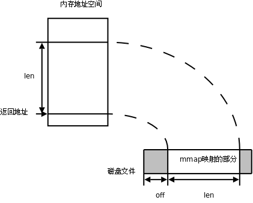
如果 addr 参数为 NULL，内核会自己在进程地址空间中选择合适的地址建立映射。如果 addr 不是 NULL，则给内核一个提示，应该从什么地址开始映射，内核会选择 addr 之上的某个合适的地址开始映射。建立映射后，真正的映射首地址通过返回值可以得到。len 参数是需要映射的那一部分文件的长度。off 参数是从文件的什么位置开始映射，必须是页大小的整数倍（在 32 位体系统结构上通常是 4K）。filedes 是代表该文件的描述符。
prot 参数有四种取值：
- PROT_EXEC 表示映射的这一段可执行，例如映射共享库
- PROT_READ 表示映射的这一段可读
- PROT_WRITE 表示映射的这一段可写
- PROT_NONE 表示映射的这一段不可访问
flag`参数有很多种取值，这里只讲两种，其它取值可查看`mmap(2)
- MAP_SHARED 多个进程对同一个文件的映射是共享的，一个进程对映射的内存做了修改，另一个进程也会看到这种变化。
- MAP_PRIVATE 多个进程对同一个文件的映射不是共享的，一个进程对映射的内存做了修改，另一个进程并不会看到这种变化，也不会真的写到文件中去。
如果 mmap 成功则返回映射首地址，如果出错则返回常数 MAP_FAILED。当进程终止时，该进程的映射内存会自动解除，也可以调用 munmap 解除映射。munmap 成功返回 0，出错返回 -1。
下面做一个简单的实验。
$ vi hello
（编辑该文件的内容为「hello」）
$ od -tx1 -tc hello
0000000 68 65 6c 6c 6f 0a
h e l l o \n
0000006
现在用如下程序操作这个文件（注意，把 fd 关掉并不影响该文件已建立的映射，仍然可以对文件进行读写）。
#include <stdlib.h>
#include <sys/mman.h>
#include <fcntl.h>
int main(void)
{
int *p;
int fd = open("hello", O_RDWR);
if (fd < 0) {
perror("open hello");
exit(1);
}
p = mmap(NULL, 6, PROT_WRITE, MAP_SHARED, fd, 0);
if (p == MAP_FAILED) {
perror("mmap");
exit(1);
}
close(fd);
p[0] = 0x30313233;
munmap(p, 6);
return 0;
}
然后再查看这个文件的内容：
$ od -tx1 -tc hello
0000000 33 32 31 30 6f 0a
3 2 1 0 o \n
0000006
请读者自己分析一下实验结果。
mmap 函数的底层也是一个系统调用，在执行程序时经常要用到这个系统调用来映射共享库到该进程的地址空间。例如一个很简单的 hello world 程序：
#include <stdio.h>
int main(void)
{
printf("hello world\n");
return 0;
}
用 strace 命令执行该程序，跟踪该程序执行过程中用到的所有系统调用的参数及返回值：
$ strace ./a.out
execve("./a.out", ["./a.out"], [/* 38 vars */]) = 0
brk(0) = 0x804a000
access("/etc/ld.so.nohwcap", F_OK) = -1 ENOENT (No such file or directory)
mmap2(NULL, 8192, PROT_READ|PROT_WRITE, MAP_PRIVATE|MAP_ANONYMOUS, -1, 0) = 0xb7fca000
access("/etc/ld.so.preload", R_OK) = -1 ENOENT (No such file or directory)
open("/etc/ld.so.cache", O_RDONLY) = 3
fstat64(3, {st_mode=S_IFREG|0644, st_size=63628, ...}) = 0
mmap2(NULL, 63628, PROT_READ, MAP_PRIVATE, 3, 0) = 0xb7fba000
close(3) = 0
access("/etc/ld.so.nohwcap", F_OK) = -1 ENOENT (No such file or directory)
open("/lib/tls/i686/cmov/libc.so.6", O_RDONLY) = 3
read(3, "\177ELF\1\1\1\0\0\0\0\0\0\0\0\0\3\0\3\0\1\0\0\0\260a\1"..., 512) = 512
fstat64(3, {st_mode=S_IFREG|0644, st_size=1339816, ...}) = 0
mmap2(NULL, 1349136, PROT_READ|PROT_EXEC, MAP_PRIVATE|MAP_DENYWRITE, 3, 0) = 0xb7e70000
mmap2(0xb7fb4000, 12288, PROT_READ|PROT_WRITE, MAP_PRIVATE|MAP_FIXED|MAP_DENYWRITE, 3, 0x143) = 0xb7fb4000
mmap2(0xb7fb7000, 9744, PROT_READ|PROT_WRITE, MAP_PRIVATE|MAP_FIXED|MAP_ANONYMOUS, -1, 0) = 0xb7fb7000
close(3) = 0
mmap2(NULL, 4096, PROT_READ|PROT_WRITE, MAP_PRIVATE|MAP_ANONYMOUS, -1, 0) = 0xb7e6f000
set_thread_area({entry_number:-1 -> 6, base_addr:0xb7e6f6b0, limit:1048575, seg_32bit:1, contents:0, read_exec_only:0, limit_in_pages:1, seg_not_present:0, useable:1}) = 0
mprotect(0xb7fb4000, 4096, PROT_READ) = 0
munmap(0xb7fba000, 63628) = 0
fstat64(1, {st_mode=S_IFCHR|0620, st_rdev=makedev(136, 1), ...}) = 0
mmap2(NULL, 4096, PROT_READ|PROT_WRITE, MAP_PRIVATE|MAP_ANONYMOUS, -1, 0) = 0xb7fc9000
write(1, "hello world\n", 12hello world
) = 12
exit_group(0) = ?
Process 8572 detached
可以看到，执行这个程序要映射共享库 /lib/tls/i686/cmov/libc.so.6 到进程地址空间。也可以看到，printf 函数的底层确实是调用 write。
第 29 章 文件系统
1. 引言
本章主要解答以下问题：
- 文件系统在内核中是如何实现的？如何呈现给用户一个树状的目录结构？如何处理用户的文件和目录操作请求？
- 磁盘是一种顺序的存储介质，一个树状的目录结构如何扯成一条线存到磁盘上？怎样设计文件系统的存储格式使访问磁盘的效率最高？各种文件和目录操作在磁盘上的实际效果是什么？
图 29.1. 文件系统的表示和存储

我们首先介绍一种文件系统的存储格式——早期 Linux 广泛使用的 ext2 文件系统。现在 Linux 最常用的 ext3 文件系统也是与 ext2 兼容的，基本格式是一致的，只是多了一些扩展。然后再介绍文件系统在内核中是如何实现的。
2. ext2 文件系统
2.1. 总体存储布局
我们知道，一个磁盘可以划分成多个分区，每个分区必须先用格式化工具（例如某种 mkfs 命令）格式化成某种格式的文件系统，然后才能存储文件，格式化的过程会在磁盘上写一些管理存储布局的信息。下图是一个磁盘分区格式化成 ext2 文件系统后的存储布局。
图 29.2. ext2文件系统的总体存储布局
文件系统中存储的最小单位是块（Block），一个块究竟多大是在格式化时确定的，例如 mke2fs 的 -b 选项可以设定块大小为 1024、2048 或 4096字节。而上图中启动块（Boot Block）的大小是确定的，就是 1KB，启动块是由 PC 标准规定的，用来存储磁盘分区信息和启动信息，任何文件系统都不能使用启动块。启动块之后才是 ext2 文件系统的开始，ext2 文件系统将整个分区划成若干个同样大小的块组（Block Group），每个块组都由以下部分组成。
- 超级块（Super Block）：描述整个分区的文件系统信息，例如块大小、文件系统版本号、上次
mount的时间等等。超级块在每个块组的开头都有一份拷贝。 - 块组描述符表（GDT，Group Descriptor Table）：由很多块组描述符组成，整个分区分成多少个块组就对应有多少个块组描述符。每个块组描述符（Group Descriptor）存储一个块组的描述信息，例如在这个块组中从哪里开始是 inode 表，从哪里开始是数据块，空闲的 inode 和数据块还有多少个等等。和超级块类似，块组描述符表在每个块组的开头也都有一份拷贝，这些信息是非常重要的，一旦超级块意外损坏就会丢失整个分区的数据，一旦块组描述符意外损坏就会丢失整个块组的数据，因此它们都有多份拷贝。通常内核只用到第 0 个块组中的拷贝，当执行
e2fsck检查文件系统一致性时，第 0 个块组中的超级块和块组描述符表就会拷贝到其它块组，这样当第 0 个块组的开头意外损坏时就可以用其它拷贝来恢复，从而减少损失。 - 块位图（Block Bitmap）：一个块组中的块是这样利用的：数据块存储所有文件的数据，比如某个分区的块大小是 1024 字节，某个文件是 2049 字节，那么就需要三个数据块来存，即使第三个块只存了一个字节也需要占用一个整块；超级块、块组描述符表、块位图、inode 位图、inode 表这几部分存储该块组的描述信息。那么如何知道哪些块已经用来存储文件数据或其它描述信息，哪些块仍然空闲可用呢？块位图就是用来描述整个块组中哪些块已用哪些块空闲的，它本身占一个块，其中的每个 bit 代表本块组中的一个块，这个 bit 为 1 表示该块已用，这个 bit 为 0 表示该块空闲可用。为什么用
df命令统计整个磁盘的已用空间非常快呢？因为只需要查看每个块组的块位图即可，而不需要搜遍整个分区。相反，用du命令查看一个较大目录的已用空间就非常慢，因为不可避免地要搜遍整个目录的所有文件。与此相联系的另一个问题是：在格式化一个分区时究竟会划出多少个块组呢？主要的限制在于块位图本身必须只占一个块。用mke2fs格式化时默认块大小是 1024 字节，可以用-b参数指定块大小，现在设块大小指定为b字节，那么一个块可以有 8b 个 bit，这样大小的一个块位图就可以表示 8b 个块的占用情况，因此一个块组最多可以有 8b 个块，如果整个分区有 s 个块，那么就可以有 s/(8b) 个块组。格式化时可以用-g参数指定一个块组有多少个块，但是通常不需要手动指定，mke2fs工具会计算出最优的数值。 - inode 位图（inode Bitmap）：和块位图类似，本身占一个块，其中每个 bit 表示一个 inode 是否空闲可用。
- inode 表（inode Table）：我们知道，一个文件除了数据需要存储之外，一些描述信息也需要存储，例如文件类型（常规、目录、符号链接等），权限，文件大小，创建/修改/访问时间等，也就是
ls -l命令看到的那些信息，这些信息存在 inode 中而不是数据块中。每个文件都有一个 inode，一个块组中的所有 inode 组成了 inode 表。inode 表占多少个块在格式化时就要决定并写入块组描述符中，mke2fs格式化工具的默认策略是一个块组有多少个 8KB 就分配多少个 inode。由于数据块占了整个块组的绝大部分，也可以近似认为数据块有多少个 8KB 就分配多少个 inode，换句话说，如果平均每个文件的大小是 8KB，当分区存满的时候 inode 表会得到比较充分的利用，数据块也不浪费。如果这个分区存的都是很大的文件（比如电影），则数据块用完的时候 inode 会有一些浪费，如果这个分区存的都是很小的文件（比如源代码），则有可能数据块还没用完 inode 就已经用完了，数据块可能有很大的浪费。如果用户在格式化时能够对这个分区以后要存储的文件大小做一个预测，也可以用mke2fs的-i参数手动指定每多少个字节分配一个 inode。 - 数据块（Data Block）：根据不同的文件类型有以下几种情况对于常规文件，文件的数据存储在数据块中。对于目录，该目录下的所有文件名和目录名存储在数据块中，注意文件名保存在它所在目录的数据块中，除文件名之外，
ls -l命令看到的其它信息都保存在该文件的 inode 中。注意这个概念：目录也是一种文件，是一种特殊类型的文件。对于符号链接，如果目标路径名较短则直接保存在 inode 中以便更快地查找，如果目标路径名较长则分配一个数据块来保存。设备文件、 FIFO 和 socket 等特殊文件没有数据块，设备文件的主设备号和次设备号保存在 inode 中。
现在做几个小实验来理解这些概念。例如在 home 目录下 ls -l：
$ ls -l
total 32
drwxr-xr-x 114 akaedu akaedu 12288 2008-10-25 11:33 akaedu
drwxr-xr-x 114 ftp ftp 4096 2008-10-25 10:30 ftp
drwx------ 2 root root 16384 2008-07-04 05:58 lost+found
为什么各目录的大小都是 4096 的整数倍？因为这个分区的块大小是 4096，目录的大小总是数据块的整数倍。为什么有的目录大有的目录小？因为目录的数据块保存着它下边所有文件和目录的名字，如果一个目录中的文件很多，一个块装不下这么多文件名，就可能分配更多的数据块给这个目录。再比如：
$ ls -l /dev
...
prw-r----- 1 syslog adm 0 2008-10-25 11:39 xconsole
crw-rw-rw- 1 root root 1, 5 2008-10-24 16:44 zero
xconsole 文件的类型是 p（表示 pipe），是一个 FIFO 文件，后面会讲到它其实是一块内核缓冲区的标识，不在磁盘上保存数据，因此没有数据块，文件大小是 0。zero 文件的类型是 c，表示字符设备文件，它代表内核中的一个设备驱动程序，也没有数据块，原本应该写文件大小的地方写了 1, 5 这两个数字，表示主设备号和次设备号，访问该文件时，内核根据设备号找到相应的驱动程序。再比如：
$ touch hello
$ ln -s ./hello halo
$ ls -l
total 0
lrwxrwxrwx 1 akaedu akaedu 7 2008-10-25 15:04 halo -> ./hello
-rw-r--r-- 1 akaedu akaedu 0 2008-10-25 15:04 hello
文件 hello 是刚创建的，字节数为 0，符号链接文件 halo 指向 hello，字节数却是 7，为什么呢？其实 7 就是「./hello」这 7 个字符，符号链接文件就保存着这样一个路径名。再试试硬链接：
$ ln ./hello hello2
$ ls -l
total 0
lrwxrwxrwx 1 akaedu akaedu 7 2008-10-25 15:08 halo -> ./hello
-rw-r--r-- 2 akaedu akaedu 0 2008-10-25 15:04 hello
-rw-r--r-- 2 akaedu akaedu 0 2008-10-25 15:04 hello2
hello2 和 hello 除了文件名不一样之外，别的属性都一模一样，并且 hello 的属性发生了变化，第二栏的数字原本是 1，现在变成 2 了。从根本上说，hello 和 hello2 是同一个文件在文件系统中的两个名字，ls -l 第二栏的数字是硬链接数，表示一个文件在文件系统中有几个名字（这些名字可以保存在不同目录的数据块中，或者说可以位于不同的路径下），硬链接数也保存在 inode 中。既然是同一个文件，inode 当然只有一个，所以用 ls -l 看它们的属性是一模一样的，因为都是从这个 inode 里读出来的。再研究一下目录的硬链接数：
$ mkdir a
$ mkdir a/b
$ ls -ld a
drwxr-xr-x 3 akaedu akaedu 4096 2008-10-25 16:15 a
$ ls -la a
total 20
drwxr-xr-x 3 akaedu akaedu 4096 2008-10-25 16:15 .
drwxr-xr-x 115 akaedu akaedu 12288 2008-10-25 16:14 ..
drwxr-xr-x 2 akaedu akaedu 4096 2008-10-25 16:15 b
$ ls -la a/b
total 8
drwxr-xr-x 2 akaedu akaedu 4096 2008-10-25 16:15 .
drwxr-xr-x 3 akaedu akaedu 4096 2008-10-25 16:15 ..
首先创建目录 a，然后在它下面创建子目录 a/b。目录 a 的硬链接数是 3，这 3 个名字分别是当前目录下的 a，a 目录下的 . 和 b 目录下的 ..。目录 b 的硬链接数是 2，这两个名字分别是 a 目录下的 b 和 b 目录下的 .。注意，目录的硬链接只能这种方式创建，用 ln 命令可以创建目录的符号链接，但不能创建目录的硬链接。
2.2. 实例剖析
如果要格式化一个分区来研究文件系统格式则必须有一个空闲的磁盘分区，为了方便实验，我们把一个文件当作分区来格式化，然后分析这个文件中的数据来印证上面所讲的要点。首先创建一个 1MB 的文件并清零：
$ dd if=/dev/zero of=fs count=256 bs=4K
我们知道 cp 命令可以把一个文件拷贝成另一个文件，而 dd 命令可以把一个文件的一部分拷贝成另一个文件。这个命令的作用是把 /dev/zero 文件开头的 1M（256×4K）字节拷贝成文件名为 fs 的文件。刚才我们看到 /dev/zero 是一个特殊的设备文件，它没有磁盘数据块，对它进行读操作传给设备号为 1, 5 的驱动程序。/dev/zero 这个文件可以看作是无穷大的，不管从哪里开始读，读出来的都是字节 0x00。因此这个命令拷贝了 1M 个 0x00 到 fs 文件。if 和 of 参数表示输入文件和输出文件，count 和 bs 参数表示拷贝多少次，每次拷多少字节。
做好之后对文件 fs 进行格式化，也就是把这个文件的数据块合起来看成一个1MB的磁盘分区，在这个分区上再划分出块组。
$ mke2fs fs
mke2fs 1.40.2 (12-Jul-2007)
fs is not a block special device.
Proceed anyway? (y,n) （输入 y 回车）
Filesystem label=
OS type: Linux
Block size=1024 (log=0)
Fragment size=1024 (log=0)
128 inodes, 1024 blocks
51 blocks (4.98%) reserved for the super user
First data block=1
Maximum filesystem blocks=1048576
1 block group
8192 blocks per group, 8192 fragments per group
128 inodes per group
Writing inode tables: done
Writing superblocks and filesystem accounting information: done
This filesystem will be automatically checked every 27 mounts or
180 days, whichever comes first. Use tune2fs -c or -i to override.
格式化一个真正的分区应该指定块设备文件名，例如 /dev/sda1，而这个 fs 是常规文件而不是块设备文件，mke2fs 认为用户有可能是误操作了，所以给出提示，要求确认是否真的要格式化，输入 y 回车完成格式化。
现在 fs 的大小仍然是 1MB，但不再是全 0 了，其中已经有了块组和描述信息。用 dumpe2fs 工具可以查看这个分区的超级块和块组描述符表中的信息：
$ dumpe2fs fs
dumpe2fs 1.40.2 (12-Jul-2007)
Filesystem volume name: <none>
Last mounted on: <not available>
Filesystem UUID: 8e1f3b7a-4d1f-41dc-8928-526e43b2fd74
Filesystem magic number: 0xEF53
Filesystem revision #: 1 (dynamic)
Filesystem features: resize_inode dir_index filetype sparse_super
Filesystem flags: signed directory hash
Default mount options: (none)
Filesystem state: clean
Errors behavior: Continue
Filesystem OS type: Linux
Inode count: 128
Block count: 1024
Reserved block count: 51
Free blocks: 986
Free inodes: 117
First block: 1
Block size: 1024
Fragment size: 1024
Reserved GDT blocks: 3
Blocks per group: 8192
Fragments per group: 8192
Inodes per group: 128
Inode blocks per group: 16
Filesystem created: Sun Dec 16 14:56:59 2007
Last mount time: n/a
Last write time: Sun Dec 16 14:56:59 2007
Mount count: 0
Maximum mount count: 30
Last checked: Sun Dec 16 14:56:59 2007
Check interval: 15552000 (6 months)
Next check after: Fri Jun 13 14:56:59 2008
Reserved blocks uid: 0 (user root)
Reserved blocks gid: 0 (group root)
First inode: 11
Inode size: 128
Default directory hash: tea
Directory Hash Seed: 6d0e58bd-b9db-41ae-92b3-4563a02a5981
Group 0: (Blocks 1-1023)
Primary superblock at 1, Group descriptors at 2-2
Reserved GDT blocks at 3-5
Block bitmap at 6 (+5), Inode bitmap at 7 (+6)
Inode table at 8-23 (+7)
986 free blocks, 117 free inodes, 2 directories
Free blocks: 38-1023
Free inodes: 12-128
128 inodes per group, 8 inodes per block, so: 16 blocks for inode table
根据上面讲过的知识简单计算一下，块大小是 1024 字节，1MB 的分区共有 1024 个块，第 0 个块是启动块，启动块之后才算 ext2 文件系统的开始，因此 Group 0 占据第 1 个到第 1023 个块，共 1023 个块。块位图占一个块，共有 1024×8=8192 个 bit，足够表示这 1023 个块了，因此只要一个块组就够了。默认是每 8KB 分配一个 inode，因此 1MB 的分区对应 128 个 inode，这些数据都和 dumpe2fs 的输出吻合。
用常规文件制作而成的文件系统也可以像磁盘分区一样 mount 到某个目录，例如：
$ sudo mount -o loop fs /mnt
$ cd /mnt/
$ ls -la
total 17
drwxr-xr-x 3 akaedu akaedu 1024 2008-10-25 12:20 .
drwxr-xr-x 21 root root 4096 2008-08-18 08:54 ..
drwx------ 2 root root 12288 2008-10-25 12:20 lost+found
-o loop 选项告诉 mount 这是一个常规文件而不是一个块设备文件。mount 会把它的数据块中的数据当作分区格式来解释。文件系统格式化之后在根目录下自动生成三个子目录：.，.. 和 lost+found。其它子目录下的 . 表示当前目录，.. 表示上一级目录，而根目录的 . 和 .. 都表示根目录本身。lost+found 目录由 e2fsck 工具使用，如果在检查磁盘时发现错误，就把有错误的块挂在这个目录下，因为这些块不知道是谁的，找不到主，就放在这里「失物招领」了。
现在可以在 /mnt 目录下添加删除文件，这些操作会自动保存到文件 fs 中。然后把这个分区 umount 下来，以确保所有的改动都保存到文件中了。
$ sudo umount /mnt
注意，下面的实验步骤是对新创建的文件系统做的，如果你在文件系统中添加删除过文件，跟着做下面的步骤时结果可能和我写的不太一样，不过也不影响理解。
现在我们用二进制查看工具查看这个文件系统的所有字节，并且同 dumpe2fs 工具的输出信息相比较，就可以很好地理解文件系统的存储布局了。
$ od -tx1 -Ax fs
000000 00 00 00 00 00 00 00 00 00 00 00 00 00 00 00 00
*
000400 80 00 00 00 00 04 00 00 33 00 00 00 da 03 00 00
000410 75 00 00 00 01 00 00 00 00 00 00 00 00 00 00 00
...
其中以开头的行表示这一段数据全是零因此省略了。下面详细分析 od 输出的信息。
从 000000 开始的 1KB 是启动块，由于这不是一个真正的磁盘分区，启动块的内容全部为零。从 000400 到 0007ff 的 1KB 是超级块，对照着 dumpe2fs 的输出信息，详细分析如下：
图 29.3. 超级块

超级块中从 0004d0 到末尾的 204 个字节是填充字节，保留未用，上图未画出。注意，ext2 文件系统中各字段都是按小端存储的，如果把字节在文件中的位置看作地址，那么靠近文件开头的是低地址，存低字节。各字段的位置、长度和含义详见 ULK。
从 000800 开始是块组描述符表，这个文件系统较小，只有一个块组描述符，对照着 dumpe2fs 的输出信息分析如下：
...
Group 0: (Blocks 1-1023)
Primary superblock at 1, Group descriptors at 2-2
Reserved GDT blocks at 3-5
Block bitmap at 6 (+5), Inode bitmap at 7 (+6)
Inode table at 8-23 (+7)
986 free blocks, 117 free inodes, 2 directories
Free blocks: 38-1023
Free inodes: 12-128
...
图 29.4. 块组描述符
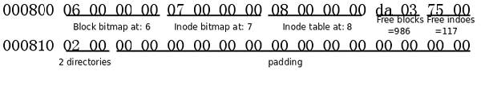
整个文件系统是 1MB，每个块是 1KB，应该有 1024 个块，除去启动块还有 1023 个块，分别编号为 1 - 1023，它们全都属于 Group 0。其中，Block 1 是超级块，接下来的块组描述符指出，块位图是 Block 6，因此中间的 Block 2 - 5 是块组描述符表，其中 Block 3 - 5 保留未用。块组描述符还指出，inode 位图是 Block 7，inode 表是从 Block 8 开始的，那么 inode 表到哪个块结束呢？由于超级块中指出每个块组有 128 个 inode，每个 inode 的大小是 128 字节，因此共占 16 个块，inode 表的范围是 Block 8 - 23。
从 Block 24 开始就是数据块了。块组描述符中指出，空闲的数据块有 986 个，由于文件系统是新创建的，空闲块是连续的 Block 38 - 1023，用掉了前面的 Block 24 - 37。从块位图中可以看出，前 37 位（前 4 个字节加最后一个字节的低 5 位）都是 1，就表示 Block 1 - 37 已用：
001800 ff ff ff ff 1f 00 00 00 00 00 00 00 00 00 00 00
001810 00 00 00 00 00 00 00 00 00 00 00 00 00 00 00 00
*
001870 00 00 00 00 00 00 00 00 00 00 00 00 00 00 00 80
001880 ff ff ff ff ff ff ff ff ff ff ff ff ff ff ff ff
*
在块位图中，Block 38 - 1023 对应的位都是 0（一直到 001870 那一行最后一个字节的低 7 位），接下来的位已经超出了文件系统的空间，不管是 0 还是 1 都没有意义。可见，块位图每个字节中的位应该按从低位到高位的顺序来看。以后随着文件系统的使用和添加删除文件，块位图中的 1 就变得不连续了。
块组描述符指出，空闲的 inode 有 117 个，由于文件系统是新创建的，空闲的 inode 也是连续的，inode 编号从 1 到 128，空闲的 inode 编号从 12 到 128。从 inode 位图可以看出，前 11 位都是 1，表示前 11 个 inode 已用：
001c00 ff 07 00 00 00 00 00 00 00 00 00 00 00 00 00 00
001c10 ff ff ff ff ff ff ff ff ff ff ff ff ff ff ff ff
*
以后随着文件系统的使用和添加删除文件，inode 位图中的 1 就变得不连续了。
001c00 这一行的 128 位就表示了所有 inode，因此下面的行不管是 0 还是 1 都没有意义。已用的 11 个 ，前 10 个 inode 是被 ext2 文件系统保留的，其中第 2 个 inode 是根目录，第 11 个 inode 是 lost+found 目录，块组描述符也指出该组有两个目录，就是根目录和 lost+found。
探索文件系统还有一个很有用的工具 debugfs，它提供一个命令行界面，可以对文件系统做各种操作，例如查看信息、恢复数据、修正文件系统中的错误。下面用 debugfs 打开 fs 文件，然后在提示符下输入 help 看看它都能做哪些事情：
$ debugfs fs
debugfs 1.40.2 (12-Jul-2007)
debugfs: help
在 debugfs 的提示符下输入 stat / 命令，这时在新的一屏中显示根目录的 inode 信息：
Inode: 2 Type: directory Mode: 0755 Flags: 0x0 Generation: 0
User: 1000 Group: 1000 Size: 1024
File ACL: 0 Directory ACL: 0
Links: 3 Blockcount: 2
Fragment: Address: 0 Number: 0 Size: 0
ctime: 0x4764cc3b -- Sun Dec 16 14:56:59 2007
atime: 0x4764cc3b -- Sun Dec 16 14:56:59 2007
mtime: 0x4764cc3b -- Sun Dec 16 14:56:59 2007
BLOCKS:
(0):24
TOTAL: 1
按 q 退出这一屏，然后用 quit 命令退出 debugfs：
debugfs: quit
把以上信息和 od 命令的输出对照起来分析：
图 29.5. 根目录的 inode
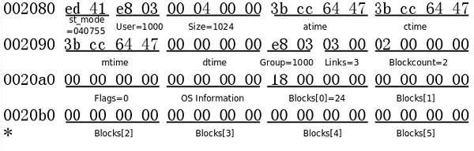
上图中的 st_mode 以八进制表示，包含了文件类型和文件权限，最高位的 4 表示文件类型为目录（各种文件类型的编码详见 stat(2)），低位的 755 表示权限。Size 是 1024，说明根目录现在只有一个数据块。Links 为 3 表示根目录有三个硬链接，分别是根目录下的 . 和 ..，以及 lost+found 子目录下的 ..。注意，虽然我们通常用 / 表示根目录，但是并没有名为 / 的硬链接，事实上，/ 是路径分隔符，不能在文件名中出现。这里的 Blockcount 是以 512 字节为一个块来数的，并非格式化文件系统时所指定的块大小，磁盘的最小读写单位称为扇区（Sector），通常是 512 字节，所以 Blockcount 是磁盘的物理块数量，而非分区的逻辑块数量。根目录数据块的位置由上图中的 Blocks[0] 指出，也就是第 24 个块，它在文件系统中的位置是 24×0x400=0x6000，从 od 命令的输出中找到 006000 地址，它的格式是这样：
图 29.6. 根目录的数据块

目录的数据块由许多不定长的记录组成，每条记录描述该目录下的一个文件，在上图中用框表示。第一条记录描述 inode 号为 2 的文件，也就是根目录本身，该记录的总长度为 12 字节，其中文件名的长度为 1 字节，文件类型为 2（见下表，注意此处的文件类型编码和 st_mode 不一致），文件名是 .。
表 29.1. 目录中的文件类型编码
| 编码 | 文件类型 |
|---|---|
| 0 | Unknown |
| 1 | Regular file |
| 2 | Directory |
| 3 | Character device |
| 4 | Block device |
| 5 | Named pipe |
| 6 | Socket |
| 7 | Symbolic link |
第二条记录也是描述 inode 号为 2 的文件（根目录），该记录总长度为 12 字节，其中文件名的长度为 2 字节，文件类型为 2，文件名字符串是 ..。第三条记录一直延续到该数据块的末尾，描述 inode 号为 11 的文件（lost+found目录），该记录的总长度为 1000 字节（和前面两条记录加起来是 1024 字节），文件类型为 2，文件名字符串是 lost+found，后面全是 0 字节。如果要在根目录下创建新的文件，可以把第三条记录截短，在原来的 0 字节处创建新的记录。如果该目录下的文件名太多，一个数据块不够用，则会分配新的数据块，块编号会填充到 inode 的 Blocks[1] 字段。
debugfs 也提供了 cd、ls 等命令，不需要 mount 就可以查看这个文件系统中的目录，例如用 ls 查看根目录：
2 (12) . 2 (12) .. 11 (1000) lost+found
列出了 inode 号、记录长度和文件名，这些信息都是从根目录的数据块中读出来的。
习题
- 请读者仿照对根目录的分析，自己分析
lost+found目录的 inode 和数据块的格式。 mount这个文件系统，在里面添加删除文件，然后umount下来，再次分析它的格式，和原来的结果比较一下看哪些字节发生了变化。
2.3. 数据块寻址
如果一个文件有多个数据块，这些数据块很可能不是连续存放的，应该如何寻址到每个块呢？根据上面的分析，根目录的数据块是通过其inode中的索引项 Blocks[0] 找到的，事实上，这样的索引项一共有 15 个，从 Blocks[0] 到 Blocks[14]，每个索引项占 4 字节。前 12 个索引项都表示块编号，例如上面的例子中 Blocks[0] 字段保存着 24，就表示第 24 个块是该文件的数据块，如果块大小是 1KB，这样可以表示从 0 字节到 12KB 的文件。如果剩下的三个索引项 Blocks[12] 到 Blocks[14] 也是这么用的，就只能表示最大 15KB 的文件了，这是远远不够的，事实上，剩下的三个索引项都是间接索引。
索引项 Blocks[12] 所指向的块并非数据块，而是称为间接寻址块（Indirect Block），其中存放的都是类似 Blocks[0] 这种索引项，再由索引项指向数据块。设块大小是 b，那么一个间接寻址块中可以存放 b/4 个索引项，指向 b/4 个数据块。所以如果把 Blocks[0] 到 Blocks[12] 都用上，最多可以表示 b/4+12 个数据块，对于块大小是 1K 的情况，最大可表示 268K 的文件。如下图所示，注意文件的数据块编号是从 0 开始的，Blocks[0] 指向第 0 个数据块，Blocks[11] 指向第 11 个数据块，Blocks[12] 所指向的间接寻址块的第一个索引项指向第 12 个数据块，依此类推。
图 29.7. 数据块的寻址
从上图可以看出，索引项 Blocks[13] 指向两级的间接寻址块，最多可表示 (b/4)2+b/4+12 个数据块，对于 1K 的块大小最大可表示 64.26MB 的文件。索引项 Blocks[14] 指向三级的间接寻址块，最多可表示 (b/4)3+(b/4)2+b/4+12 个数据块，对于 1K 的块大小最大可表示 16.06GB 的文件。
可见，这种寻址方式对于访问不超过 12 个数据块的小文件是非常快的，访问文件中的任意数据只需要两次读盘操作，一次读 inode（也就是读索引项）一次读数据块。而访问大文件中的数据则需要最多五次读盘操作：inode、一级间接寻址块、二级间接寻址块、三级间接寻址块、数据块。实际上，磁盘中的 inode 和数据块往往已经被内核缓存了，读大文件的效率也不会太低。
2.4. 文件和目录操作的系统函数
本节简要介绍一下文件和目录操作常用的系统函数，常用的文件操作命令如 ls、cp、mv 等也是基于这些函数实现的。本节的侧重点在于讲解这些函数的工作原理，而不是如何使用它们，理解了实现原理之后再看这些函数的用法就很简单了，请读者自己查阅 Man Page 了解其用法。
stat(2) 函数读取文件的 inode，然后把 inode 中的各种文件属性填入一个 struct stat 结构体传出给调用者。stat(1) 命令是基于 stat 函数实现的。stat 需要根据传入的文件路径找到 inode，假设一个路径是 /opt/file，则查找的顺序是：
- 读出 inode 表中第 2 项，也就是根目录的 inode，从中找出根目录数据块的位置
- 从根目录的数据块中找出文件名为
opt的记录，从记录中读出它的 inode 号 - 读出
opt目录的 inode，从中找出它的数据块的位置 - 从
opt目录的数据块中找出文件名为file的记录，从记录中读出它的 inode 号 - 读出
file文件的 inode
还有另外两个类似 stat 的函数：fstat(2) 函数传入一个已打开的文件描述符，传出 inode信息，lstat(2) 函数也是传入路径传出 inode 信息，但是和 stat 函数有一点不同，当文件是一个符号链接时，stat(2) 函数传出的是它所指向的目标文件的inode，而 lstat 函数传出的就是符号链接文件本身的 inode。
access(2) 函数检查执行当前进程的用户是否有权限访问某个文件，传入文件路径和要执行的访问操作（读/写/执行），access 函数取出文件 inode 中的 st_mode 字段，比较一下访问权限，然后返回 0 表示允许访问，返回 -1 表示错误或不允许访问。
chmod(2) 和 fchmod(2) 函数改变文件的访问权限，也就是修改 inode 中 的 st_mode 字段。这两个函数的区别类似于 stat/fstat。chmod(1) 命令是基于 chmod 函数实现的。
chown(2)/fchown(2)/lchown(2) 改变文件的所有者和组，也就是修改 inode 中的 User 和 Group 字段，只有超级用户才能正确调用这几个函数，这几个函数之间的区别类似于 stat/fstat/lstat。chown(1) 命令是基于 chown 函数实现的。
utime(2) 函数改变文件的访问时间和修改时间，也就是修改 inode 中的 atime 和 mtime 字段。touch(1) 命令是基于 utime 函数实现的。
truncate(2) 和 ftruncate(2) 函数把文件截断到某个长度，如果新的长度比原来的长度短，则后面的数据被截掉了，如果新的长度比原来的长度长，则后面多出来的部分用 0 填充，这需要修改 inode 中的 Blocks 索引项以及块位图中相应的 bit。这两个函数的区别类似于 stat/fstat。
link(2) 函数创建硬链接，其原理是在目录的数据块中添加一条新记录，其中的 inode 号字段和原文件相同。symlink(2) 函数创建一个符号链接，这需要创建一个新的 inode，其中 st_mode 字段的文件类型是符号链接，原文件的路径保存在 inode 中或者分配一个数据块来保存。ln(1) 命令是基于 link 和 symlink 函数实现的。
unlink(2) 函数删除一个链接。如果是符号链接则释放这个符号链接的 inode 和数据块，清除 inode 位图和块位图中相应的位。如果是硬链接则从目录的数据块中清除一条文件名记录，如果当前文件的硬链接数已经是 1 了还要删除它，就同时释放它的 inode 和数据块，清除 inode 位图和块位图中相应的位，这样就真的删除文件了。unlink(1) 命令和 rm(1) 命令是基于 unlink 函数实现的。
rename(2) 函数改变文件名，需要修改目录数据块中的文件名记录，如果原文件名和新文件名不在一个目录下则需要从原目录数据块中清除一条记录然后添加到新目录的数据块中。mv(1) 命令是基于 rename 函数实现的，因此在同一分区的不同目录中移动文件并不需要复制和删除文件的 inode 和数据块，只需要一个改名操作，即使要移动整个目录，这个目录下有很多子目录和文件也要随着一起移动，移动操作也只是对顶级目录的改名操作，很快就能完成。但是，如果在不同的分区之间移动文件就必须复制和删除 inode 和数据块，如果要移动整个目录，所有子目录和文件都要复制删除，这就很慢了。
readlink(2) 函数读取一个符号链接所指向的目标路径，其原理是从符号链接的 inode 或数据块中读出保存的数据，这就是目标路径。
mkdir(2) 函数创建新的目录，要做的操作是在它的父目录数据块中添加一条记录，然后分配新的 inode 和数据块，inode 的 st_mode 字段的文件类型是目录，在数据块中填两个记录，分别是 . 和 ..，由于 .. 表示父目录，因此父目录的硬链接数要加 1。mkdir(1) 命令是基于 mkdir 函数实现的。
rmdir(2) 函数删除一个目录，这个目录必须是空的（只包含 . 和 ..）才能删除，要做的操作是释放它的 inode 和数据块，清除 inode 位图和块位图中相应的位，清除父目录数据块中的记录，父目录的硬链接数要减 1。rmdir(1) 命令是基于 rmdir 函数实现的。
opendir(3)/readdir(3)/closedir(3) 用于遍历目录数据块中的记录。opendir 打开一个目录，返回一个 DIR * 指针代表这个目录，它是一个类似 FILE * 指针的句柄，closedir 用于关闭这个句柄，把 DIR * 指针传给 readdir 读取目录数据块中的记录，每次返回一个指向 struct dirent 的指针，反复读就可以遍历所有记录，所有记录遍历完之后 readdir 返回 NULL。结构体 struct dirent 的定义如下：
struct dirent {
ino_t d_ino; /* inode number */
off_t d_off; /* offset to the next dirent */
unsigned short d_reclen; /* length of this record */
unsigned char d_type; /* type of file */
char d_name[256]; /* filename */
};
这些字段和图 29.6「根目录的数据块」基本一致。这里的文件名 d_name 被库函数处理过，已经在结尾加了 '\0'，而图 29.6「根目录的数据块」中的文件名字段不保证是以 '\0' 结尾的，需要根据前面的文件名长度字段确定文件名到哪里结束。
下面这个例子出自 K&R，作用是递归地打印出一个目录下的所有子目录和文件，类似 ls -R。
例 29.1. 递归列出目录中的文件列表
#include <sys/types.h>
#include <sys/stat.h>
#include <unistd.h>
#include <dirent.h>
#include <stdio.h>
#include <string.h>
#define MAX_PATH 1024
/* dirwalk: apply fcn to all files in dir */
void dirwalk(char *dir, void (*fcn)(char *))
{
char name[MAX_PATH];
struct dirent *dp;
DIR *dfd;
if ((dfd = opendir(dir)) == NULL) {
fprintf(stderr, "dirwalk: can't open %s\n", dir);
return;
}
while ((dp = readdir(dfd)) != NULL) {
if (strcmp(dp->d_name, ".") == 0
|| strcmp(dp->d_name, "..") == 0)
continue; /* skip self and parent */
if (strlen(dir)+strlen(dp->d_name)+2 > sizeof(name))
fprintf(stderr, "dirwalk: name %s %s too long\n",
dir, dp->d_name);
else {
sprintf(name, "%s/%s", dir, dp->d_name);
(*fcn)(name);
}
}
closedir(dfd);
}
/* fsize: print the size and name of file "name" */
void fsize(char *name)
{
struct stat stbuf;
if (stat(name, &stbuf) == -1) {
fprintf(stderr, "fsize: can't access %s\n", name);
return;
}
if ((stbuf.st_mode & S_IFMT) == S_IFDIR)
dirwalk(name, fsize);
printf("%8ld %s\n", stbuf.st_size, name);
}
int main(int argc, char **argv)
{
if (argc == 1) /* default: current directory */
fsize(".");
else
while (--argc > 0)
fsize(*++argv);
return 0;
}
然而这个程序还是不如 ls -R 健壮，它有可能死循环，思考一下什么情况会导致死循环。
3. VFS
Linux 支持各种各样的文件系统格式，如 ext2、ext3、reiserfs、FAT、NTFS、iso9660 等等，不同的磁盘分区、光盘或其它存储设备都有不同的文件系统格式，然而这些文件系统都可以 mount 到某个目录下，使我们看到一个统一的目录树，各种文件系统上的目录和文件我们用 ls 命令看起来是一样的，读写操作用起来也都是一样的，这是怎么做到的呢？Linux 内核在各种不同的文件系统格式之上做了一个抽象层，使得文件、目录、读写访问等概念成为抽象层的概念，因此各种文件系统看起来用起来都一样，这个抽象层称为虚拟文件系统（VFS，Virtual Filesystem）。上一节我们介绍了一种典型的文件系统在磁盘上的存储布局，这一节我们介绍运行时文件系统在内核中的表示。
3.1. 内核数据结构
Linux内核的VFS子系统可以图示如下：
图 29.8. VFS
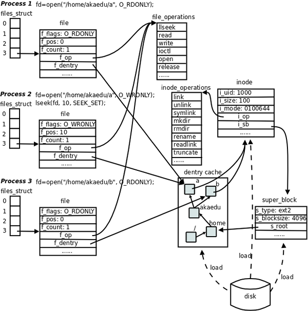
在第 28 章「文件与 I/O」中讲过，每个进程在 PCB（Process Control Block）中都保存着一份文件描述符表，文件描述符就是这个表的索引，每个表项都有一个指向已打开文件的指针，现在我们明确一下：已打开的文件在内核中用 file 结构体表示，文件描述符表中的指针指向 file 结构体。
在 file 结构体中维护 File Status Flag（file 结构体的成员 f_flags）和当前读写位置（file 结构体的成员 f_pos）。在上图中，进程 1 和进程 2 都打开同一文件，但是对应不同的 file 结构体，因此可以有不同的 File Status Flag 和读写位置。file 结构体中比较重要的成员还有 f_count，表示引用计数（Reference Count），后面我们会讲到，dup、fork等系统调用会导致多个文件描述符指向同一个 file 结构体，例如有 fd1 和 fd2 都引用同一个 file 结构体，那么它的引用计数就是 2，当 close(fd1) 时并不会释放 file 结构体，而只是把引用计数减到 1，如果再 close(fd2)，引用计数就会减到0同时释放 file 结构体，这才真的关闭了文件。
每个 file 结构体都指向一个 file_operations 结构体，这个结构体的成员都是函数指针，指向实现各种文件操作的内核函数。比如在用户程序中 read 一个文件描述符，read 通过系统调用进入内核，然后找到这个文件描述符所指向的 file 结构体，找到 file 结构体所指向的 file_operations 结构体，调用它的 read 成员所指向的内核函数以完成用户请求。在用户程序中调用 lseek、read、write、ioctl、open 等函数，最终都由内核调用 file_operations 的各成员所指向的内核函数完成用户请求。file_operations 结构体中的 release 成员用于完成用户程序的 close 请求，之所以叫 release 而不叫 close 是因为它不一定真的关闭文件，而是减少引用计数，只有引用计数减到 0 才关闭文件。对于同一个文件系统上打开的常规文件来说，read、write 等文件操作的步骤和方法应该是一样的，调用的函数应该是相同的，所以图中的三个打开文件的 file 结构体指向同一个 file_operations 结构体。如果打开一个字符设备文件，那么它的 read、write 操作肯定和常规文件不一样，不是读写磁盘的数据块而是读写硬件设备，所以 file 结构体应该指向不同的 file_operations 结构体，其中的各种文件操作函数由该设备的驱动程序实现。
每个 file 结构体都有一个指向 dentry 结构体的指针，「dentry」是 directory entry（目录项）的缩写。我们传给 open、stat 等函数的参数的是一个路径，例如 /home/akaedu/a，需要根据路径找到文件的 inode。为了减少读盘次数，内核缓存了目录的树状结构，称为 dentry cache，其中每个节点是一个 dentry 结构体，只要沿着路径各部分的 dentry 搜索即可，从根目录 / 找到 home 目录，然后找到 akaedu 目录，然后找到文件 a。dentry cache 只保存最近访问过的目录项，如果要找的目录项在 cache 中没有，就要从磁盘读到内存中。
每个 dentry 结构体都有一个指针指向 inode 结构体。inode 结构体保存着从磁盘 inode 读上来的信息。在上图的例子中，有两个 dentry，分别表示 /home/akaedu/a 和 /home/akaedu/b，它们都指向同一个 inode，说明这两个文件互为硬链接。inode 结构体中保存着从磁盘分区的 inode 读上来信息，例如所有者、文件大小、文件类型和权限位等。每个 inode 结构体都有一个指向 inode_operations 结构体的指针，后者也是一组函数指针指向一些完成文件目录操作的内核函数。和 file_operations 不同，inode_operations 所指向的不是针对某一个文件进行操作的函数，而是影响文件和目录布局的函数，例如添加删除文件和目录、跟踪符号链接等等，属于同一文件系统的各 inode 结构体可以指向同一个 inode_operations 结构体。
inode 结构体有一个指向 super_block 结构体的指针。super_block 结构体保存着从磁盘分区的超级块读上来的信息，例如文件系统类型、块大小等。super_block 结构体的 s_root 成员是一个指向 dentry 的指针，表示这个文件系统的根目录被 mount 到哪里，在上图的例子中这个分区被 mount 到 /home 目录下。
file、dentry、inode、super_block 这几个结构体组成了 VFS 的核心概念。对于 ext2 文件系统来说，在磁盘存储布局上也有 inode 和超级块的概念，所以很容易和 VFS 中的概念建立对应关系。而另外一些文件系统格式来自非 UNIX 系统（例如 Windows 的 FAT32、NTFS），可能没有 inode 或超级块这样的概念，但为了能 mount 到 Linux 系统，也只好在驱动程序中硬凑一下，在 Linux 下看 FAT32 和 NTFS 分区会发现权限位是错的，所有文件都是 rwxrwxrwx，因为它们本来就没有 inode 和权限位的概念，这是硬凑出来的。
3.2. dup 和 dup2 函数
dup 和 dup2 都可用来复制一个现存的文件描述符，使两个文件描述符指向同一个 file 结构体。如果两个文件描述符指向同一个 file 结构体，File Status Flag 和读写位置只保存一份在 file 结构体中，并且 file 结构体的引用计数是 2。如果两次 open 同一文件得到两个文件描述符，则每个描述符对应一个不同的 file 结构体，可以有不同的 File Status Flag 和读写位置。请注意区分这两种情况。
#include <unistd.h>
int dup(int oldfd);
int dup2(int oldfd, int newfd);
如果调用成功，这两个函数都返回新分配或指定的文件描述符，如果出错则返回 -1。dup 返回的新文件描述符一定该进程未使用的最小文件描述符，这一点和 open 类似。dup2 可以用 newfd 参数指定新描述符的数值。如果 newfd 当前已经打开，则先将其关闭再做 dup2 操作，如果 oldfd 等于 newfd，则 dup2 直接返回 newfd 而不用先关闭 newfd 再复制。
下面这个例子演示了 dup 和 dup2 函数的用法，请结合后面的连环画理解程序的执行过程。
例 29.2. dup 和 dup2示例程序
#include <unistd.h>
#include <sys/stat.h>
#include <fcntl.h>
#include <stdio.h>
#include <stdlib.h>
#include <string.h>
int main(void)
{
int fd, save_fd;
char msg[] = "This is a test\n";
fd = open("somefile", O_RDWR|O_CREAT, S_IRUSR|S_IWUSR);
if(fd<0) {
perror("open");
exit(1);
}
save_fd = dup(STDOUT_FILENO);
dup2(fd, STDOUT_FILENO);
close(fd);
write(STDOUT_FILENO, msg, strlen(msg));
dup2(save_fd, STDOUT_FILENO);
write(STDOUT_FILENO, msg, strlen(msg));
close(save_fd);
return 0;
}
图 29.9. dup/dup2 示例程序

重点解释两个地方：
- 第 3 幅图，要执行
dup2(fd, 1);，文件描述符 1 原本指向tty，现在要指向新的文件somefile，就把原来的关闭了，但是tty这个文件原本有两个引用计数，还有文件描述符save_fd也指向它，所以只是将引用计数减 1，并不真的关闭文件。 - 第 5 幅图，要执行
dup2(save_fd, 1);，文件描述符 1 原本指向somefile，现在要指向新的文件tty，就把原来的关闭了，somefile原本只有一个引用计数，所以这次减到 0，是真的关闭了。
第 30 章 进程
1. 引言
我们知道，每个进程在内核中都有一个进程控制块（PCB）来维护进程相关的信息，Linux 内核的进程控制块是 task_struct 结构体。现在我们全面了解一下其中都有哪些信息。
- 进程 id。系统中每个进程有唯一的 id，在 C 语言中用
pid_t类型表示，其实就是一个非负整数。 - 进程的状态，有运行、挂起、停止、僵尸等状态。
- 进程切换时需要保存和恢复的一些 CPU 寄存器。
- 描述虚拟地址空间的信息。
- 描述控制终端的信息。
- 当前工作目录（Current Working Directory）。
umask掩码。- 文件描述符表，包含很多指向
file结构体的指针。 - 和信号相关的信息。
- 用户 id 和组 id。
- 控制终端、Session 和进程组。
- 进程可以使用的资源上限（Resource Limit）。
目前读者并不需要理解这些信息的细节，在随后几章中讲到某一项时会再次提醒读者它是保存在 PCB 中的。
fork 和 exec 是本章要介绍的两个重要的系统调用。fork 的作用是根据一个现有的进程复制出一个新进程，原来的进程称为父进程（Parent Process），新进程称为子进程（Child Process）。系统中同时运行着很多进程，这些进程都是从最初只有一个进程开始一个一个复制出来的。在 Shell 下输入命令可以运行一个程序，是因为 Shell 进程在读取用户输入的命令之后会调用 fork 复制出一个新的 Shell 进程，然后新的 Shell 进程调用 exec 执行新的程序。
我们知道一个程序可以多次加载到内存，成为同时运行的多个进程，例如可以同时开多个终端窗口运行 /bin/bash，另一方面，一个进程在调用 exec 前后也可以分别执行两个不同的程序，例如在 Shell 提示符下输入命令 ls，首先 fork 创建子进程，这时子进程仍在执行 /bin/bash 程序，然后子进程调用 exec 执行新的程序 /bin/ls，如下图所示。
图 30.1. fork/exec
在第 28 章「文件与 I/O」第 3 节「open/close」中我们做过一个实验：用 umask 命令设置 Shell 进程的 umask 掩码，然后运行程序 a.out，结果 a.out 进程的 umask 掩码也和 Shell 进程一样。现在可以解释了，因为 a.out 进程是 Shell 进程的子进程，子进程的 PCB 是根据父进程复制而来的，所以其中的 umask 掩码也和父进程一样。同样道理，子进程的当前工作目录也和父进程一样，所以我们可以用 cd 命令改变 Shell 进程的当前目录，然后用 ls 命令列出那个目录下的文件，ls 进程其实是在列自己的当前目录，而不是 Shell 进程的当前目录，只不过 ls 进程的当前目录正好和 Shell 进程相同。有一个例外，子进程 PCB 中的进程 id 和父进程是不同的。
2. 环境变量
先前讲过，exec 系统调用执行新程序时会把命令行参数和环境变量表传递给 main 函数，它们在整个进程地址空间中的位置如下图所示。
图 30.2. 进程地址空间
和命令行参数 argv 类似，环境变量表也是一组字符串，如下图所示。
图 30.3. 环境变量
libc 中定义的全局变量 environ 指向环境变量表，environ 没有包含在任何头文件中，所以在使用时要用 extern 声明。例如：
例 30.1. 打印环境变量
#include <stdio.h>
int main(void)
{
extern char **environ;
int i;
for(i=0; environ[i]!=NULL; i++)
printf("%s\n", environ[i]);
return 0;
}
执行结果为
$ ./a.out
SSH_AGENT_PID=5717
SHELL=/bin/bash
DESKTOP_STARTUP_ID=
TERM=xterm
...
由于父进程在调用 fork 创建子进程时会把自己的环境变量表也复制给子进程，所以 a.out 打印的环境变量和 Shell 进程的环境变量是相同的。
按照惯例，环境变量字符串都是 name=value 这样的形式，大多数 name 由大写字母加下划线组成，一般把 name 的部分叫做环境变量，value 的部分则是环境变量的值。环境变量定义了进程的运行环境，一些比较重要的环境变量的含义如下：
-
PATH：可执行文件的搜索路径。
ls命令也是一个程序，执行它不需要提供完整的路径名/bin/ls，然而通常我们执行当前目录下的程序a.out却需要提供完整的路径名./a.out，这是因为PATH环境变量的值里面包含了ls命令所在的目录/bin，却不包含a.out所在的目录。PATH环境变量的值可以包含多个目录，用:号隔开。在 Shell 中用echo命令可以查看这个环境变量的值：$ echo $PATH /usr/local/sbin:/usr/local/bin:/usr/sbin:/usr/bin:/sbin:/bin:/usr/games -
SHELL：当前 Shell，它的值通常是
/bin/bash。 -
TERM：当前终端类型，在图形界面终端下它的值通常是
xterm，终端类型决定了一些程序的输出显示方式，比如图形界面终端可以显示汉字，而字符终端一般不行。 -
LANG：语言和 locale，决定了字符编码以及时间、货币等信息的显示格式。
-
HOME：当前用户主目录的路径，很多程序需要在主目录下保存配置文件，使得每个用户在运行该程序时都有自己的一套配置。
用 environ 指针可以查看所有环境变量字符串，但是不够方便，如果给出 name 要在环境变量表中查找它对应的 value，可以用 getenv 函数。
#include <stdlib.h>
char *getenv(const char *name);
getenv 的返回值是指向 value 的指针，若未找到则为 NULL。
修改环境变量可以用以下函数
#include <stdlib.h>
int setenv(const char *name, const char *value, int rewrite);
void unsetenv(const char *name);
putenv 和 setenv 函数若成功则返回为 0，若出错则返回非 0。
setenv 将环境变量 name 的值设置为 value。如果已存在环境变量 name，那么
- 若 rewrite 非 0，则覆盖原来的定义；
- 若 rewrite 为 0，则不覆盖原来的定义，也不返回错误。
unsetenv 删除 name 的定义。即使 name 没有定义也不返回错误。
例 30.2. 修改环境变量
#include <stdlib.h>
#include <stdio.h>
int main(void)
{
printf("PATH=%s\n", getenv("PATH"));
setenv("PATH", "hello", 1);
printf("PATH=%s\n", getenv("PATH"));
return 0;
}
$ ./a.out
PATH=/usr/local/sbin:/usr/local/bin:/usr/sbin:/usr/bin:/sbin:/bin:/usr/games
PATH=hello
$ echo $PATH
/usr/local/sbin:/usr/local/bin:/usr/sbin:/usr/bin:/sbin:/bin:/usr/games
可以看出，Shell 进程的环境变量 PATH 传给了 a.out，然后 a.out 修改了 PATH 的值，在 a.out 中能打印出修改后的值，但在 Shell 进程中 PATH 的值没变。父进程在创建子进程时会复制一份环境变量给子进程，但此后二者的环境变量互不影响。
3. 进程控制
3.1. fork 函数
#include <sys/types.h>
#include <unistd.h>
pid_t fork(void);
fork 调用失败则返回 -1，调用成功的返回值见下面的解释。我们通过一个例子来理解 fork 是怎样创建新进程的。
例 30.3. fork
#include <sys/types.h>
#include <unistd.h>
#include <stdio.h>
#include <stdlib.h>
int main(void)
{
pid_t pid;
char *message;
int n;
pid = fork();
if (pid < 0) {
perror("fork failed");
exit(1);
}
if (pid == 0) {
message = "This is the child\n";
n = 6;
} else {
message = "This is the parent\n";
n = 3;
}
for(; n > 0; n--) {
printf(message);
sleep(1);
}
return 0;
}
$ ./a.out
This is the child
This is the parent
This is the child
This is the parent
This is the child
This is the parent
This is the child
$ This is the child
This is the child
这个程序的运行过程如下图所示。
图 30.4. fork

- 父进程初始化。
- 父进程调用
fork，这是一个系统调用，因此进入内核。 - 内核根据父进程复制出一个子进程，父进程和子进程的 PCB 信息相同，用户态代码和数据也相同。因此，子进程现在的状态看起来和父进程一样，做完了初始化，刚调用了 fork 进入内核，还没有从内核返回。
- 现在有两个一模一样的进程看起来都调用了
fork进入内核等待从内核返回（实际上fork只调用了一次），此外系统中还有很多别的进程也等待从内核返回。是父进程先返回还是子进程先返回，还是这两个进程都等待，先去调度执行别的进程，这都不一定，取决于内核的调度算法。 - 如果某个时刻父进程被调度执行了，从内核返回后就从
fork函数返回，保存在变量pid中的返回值是子进程的 id，是一个大于 0 的整数，因此执下面的else分支，然后执行for循环，打印"This is the parent\n"三次之后终止。 - 如果某个时刻子进程被调度执行了，从内核返回后就从
fork函数返回，保存在变量pid中的返回值是 0，因此执行下面的if (pid == 0)分支，然后执行for循环，打印"This is the child\n"六次之后终止。fork调用把父进程的数据复制一份给子进程，但此后二者互不影响，在这个例子中，fork调用之后父进程和子进程的变量message和n被赋予不同的值，互不影响。 - 父进程每打印一条消息就睡眠 1 秒，这时内核调度别的进程执行，在 1 秒这么长的间隙里（对于计算机来说 1 秒很长了）子进程很有可能被调度到。同样地，子进程每打印一条消息就睡眠 1 秒，在这 1 秒期间父进程也很有可能被调度到。所以程序运行的结果基本上是父子进程交替打印，但这也不是一定的，取决于系统中其它进程的运行情况和内核的调度算法，如果系统中其它进程非常繁忙则有可能观察到不同的结果。另外，读者也可以把
sleep(1);去掉看程序的运行结果如何。 - 这个程序是在 Shell 下运行的，因此 Shell 进程是父进程的父进程。父进程运行时 Shell 进程处于等待状态（本章第 3.3 节 「wait 和 waitpid 函数」会讲到这种等待是怎么实现的），当父进程终止时 Shell 进程认为命令执行结束了，于是打印 Shell 提示符，而事实上子进程这时还没结束，所以子进程的消息打印到了 Shell 提示符后面。最后光标停在
This is the child的下一行，这时用户仍然可以敲命令，即使命令不是紧跟在提示符后面，Shell 也能正确读取。
fork 函数的特点概括起来就是「调用一次，返回两次」，在父进程中调用一次，在父进程和子进程中各返回一次。从上图可以看出，一开始是一个控制流程，调用 fork 之后发生了分叉，变成两个控制流程，这也就是「fork」（分叉）这个名字的由来了。子进程中 fork 的返回值是 0，而父进程中 fork 的返回值则是子进程的 id（从根本上说 fork 是从内核返回的，内核自有办法让父进程和子进程返回不同的值），这样当 fork 函数返回后，程序员可以根据返回值的不同让父进程和子进程执行不同的代码。
fork 的返回值这样规定是有道理的。fork 在子进程中返回 0，子进程仍可以调用 getpid 函数得到自己的进程 id，也可以调用 getppid 函数得到父进程的 id。在父进程中用 getpid 可以得到自己的进程 id，然而要想得到子进程的 id，只有将 fork 的返回值记录下来，别无它法。
fork 的另一个特性是所有由父进程打开的描述符都被复制到子进程中。父、子进程中相同编号的文件描述符在内核中指向同一个 file 结构体，也就是说，file 结构体的引用计数要增加。
用 gdb 调试多进程的程序会遇到困难，gdb 只能跟踪一个进程（默认是跟踪父进程），而不能同时跟踪多个进程，但可以设置 gdb 在 fork 之后跟踪父进程还是子进程。以上面的程序为例：
$ gcc main.c -g
$ gdb a.out
GNU gdb 6.8-debian
Copyright (C) 2008 Free Software Foundation, Inc.
License GPLv3+: GNU GPL version 3 or later <http://gnu.org/licenses/gpl.html>
This is free software: you are free to change and redistribute it.
There is NO WARRANTY, to the extent permitted by law. Type "show copying"
and "show warranty" for details.
This GDB was configured as "i486-linux-gnu"...
(gdb) l
2 #include <unistd.h>
3 #include <stdio.h>
4 #include <stdlib.h>
5
6 int main(void)
7 {
8 pid_t pid;
9 char *message;
10 int n;
11 pid = fork();
(gdb)
12 if(pid<0) {
13 perror("fork failed");
14 exit(1);
15 }
16 if(pid==0) {
17 message = "This is the child\n";
18 n = 6;
19 } else {
20 message = "This is the parent\n";
21 n = 3;
(gdb) b 17
Breakpoint 1 at 0x8048481: file main.c, line 17.
(gdb) set follow-fork-mode child
(gdb) r
Starting program: /home/akaedu/a.out
This is the parent
[Switching to process 30725]
Breakpoint 1, main () at main.c:17
17 message = "This is the child\n";
(gdb) This is the parent
This is the parent
set follow-fork-mode child 命令设置 gdb 在 fork 之后跟踪子进程（set follow-fork-mode parent 则是跟踪父进程），然后用 run 命令，看到的现象是父进程一直在运行，在 (gdb) 提示符下打印消息，而子进程被先前设的断点打断了。
3.2. exec 函数
用 fork 创建子进程后执行的是和父进程相同的程序（但有可能执行不同的代码分支），子进程往往要调用一种 exec 函数以执行另一个程序。当进程调用一种 exec 函数时，该进程的用户空间代码和数据完全被新程序替换，从新程序的启动例程开始执行。调用 exec 并不创建新进程，所以调用 exec 前后该进程的 id 并未改变。
其实有六种以 exec 开头的函数，统称 exec 函数：
#include <unistd.h>
int execl(const char *path, const char *arg, ...);
int execlp(const char *file, const char *arg, ...);
int execle(const char *path, const char *arg, ..., char *const envp[]);
int execv(const char *path, char *const argv[]);
int execvp(const char *file, char *const argv[]);
int execve(const char *path, char *const argv[], char *const envp[]);
这些函数如果调用成功则加载新的程序从启动代码开始执行，不再返回，如果调用出错则返回 -1，所以 exec 函数只有出错的返回值而没有成功的返回值。
这些函数原型看起来很容易混，但只要掌握了规律就很好记。不带字母 p（表示 path）的 exec 函数第一个参数必须是程序的相对路径或绝对路径，例如 "/bin/ls" 或 "./a.out"，而不能是 "ls" 或 "a.out"。对于带字母 p 的函数：
- 如果参数中包含
/，则将其视为路径名。 - 否则视为不带路径的程序名，在
PATH环境变量的目录列表中搜索这个程序。
带有字母 l（表示 list）的 exec 函数要求将新程序的每个命令行参数都当作一个参数传给它，命令行参数的个数是可变的，因此函数原型中有 ...，... 中的最后一个可变参数应该是 NULL，起 sentinel 的作用。
对于带有字母 v（表示 vector）的函数，则应该先构造一个指向各参数的指针数组，然后将该数组的首地址当作参数传给它，数组中的最后一个指针也应该是 NULL，就像 main 函数的 argv 参数或者环境变量表一样。
对于以 e（表示 environment）结尾的 exec 函数，可以把一份新的环境变量表传给它，其他 exec 函数仍使用当前的环境变量表执行新程序。
exec 调用举例如下：
char *const ps_argv[] ={"ps", "-o", "pid,ppid,pgrp,session,tpgid,comm", NULL};
char *const ps_envp[] ={"PATH=/bin:/usr/bin", "TERM=console", NULL};
execl("/bin/ps", "ps", "-o", "pid,ppid,pgrp,session,tpgid,comm", NULL);
execv("/bin/ps", ps_argv);
execle("/bin/ps", "ps", "-o", "pid,ppid,pgrp,session,tpgid,comm", NULL, ps_envp);
execve("/bin/ps", ps_argv, ps_envp);
execlp("ps", "ps", "-o", "pid,ppid,pgrp,session,tpgid,comm", NULL);
execvp("ps", ps_argv);
事实上，只有 execve 是真正的系统调用，其它五个函数最终都调用 execve，所以 execve 在 man 手册第 2 节，其它函数在 man 手册第 3 节。这些函数之间的关系如下图所示。
图 30.5. exec 函数族

一个完整的例子：
#include <unistd.h>
#include <stdlib.h>
int main(void)
{
execlp("ps", "ps", "-o", "pid,ppid,pgrp,session,tpgid,comm", NULL);
perror("exec ps");
exit(1);
}
执行此程序则得到：
$ ./a.out
PID PPID PGRP SESS TPGID COMMAND
6614 6608 6614 6614 7199 bash
7199 6614 7199 6614 7199 ps
由于 exec 函数只有错误返回值，只要返回了一定是出错了，所以不需要判断它的返回值，直接在后面调用 perror 即可。注意在调用 execlp 时传了两个 "ps" 参数，第一个 "ps" 是程序名，execlp 函数要在 PATH 环境变量中找到这个程序并执行它，而第二个 "ps" 是第一个命令行参数，execlp 函数并不关心它的值，只是简单地把它传给 ps 程序，ps 程序可以通过 main 函数的 argv[0] 取到这个参数。
调用 exec 后，原来打开的文件描述符仍然是打开的[37]。利用这一点可以实现 I/O 重定向。先看一个简单的例子，把标准输入转成大写然后打印到标准输出：
[37] 事实上，在每个文件描述符中有一个 close-on-exec 标志，如果该标志为 1，则调用 exec 时关闭这个文件描述符。该标志默认为 0，可以用 fcntl 函数将它置 1，本书不讨论该标志为 1 的情况。
例 30.4. upper
/* upper.c */
#include <stdio.h>
int main(void)
{
int ch;
while((ch = getchar()) != EOF) {
putchar(toupper(ch));
}
return 0;
}
运行结果如下：
$ ./upper
hello THERE
HELLO THERE
（按 Ctrl-D 表示 EOF）
$
使用 Shell 重定向：
$ cat file.txt
this is the file, file.txt, it is all lower case.
$ ./upper < file.txt
THIS IS THE FILE, FILE.TXT, IT IS ALL LOWER CASE.
如果希望把待转换的文件名放在命令行参数中，而不是借助于输入重定向，我们可以利用 upper 程序的现有功能，再写一个包装程序 wrapper。
例 30.5. wrapper
/* wrapper.c */
#include <unistd.h>
#include <stdlib.h>
#include <stdio.h>
#include <fcntl.h>
int main(int argc, char *argv[])
{
int fd;
if (argc != 2) {
fputs("usage: wrapper file\n", stderr);
exit(1);
}
fd = open(argv[1], O_RDONLY);
if(fd<0) {
perror("open");
exit(1);
}
dup2(fd, STDIN_FILENO);
close(fd);
execl("./upper", "upper", NULL);
perror("exec ./upper");
exit(1);
}
wrapper 程序将命令行参数当作文件名打开，将标准输入重定向到这个文件，然后调用 exec 执行 upper 程序，这时原来打开的文件描述符仍然是打开的，upper 程序只负责从标准输入读入字符转成大写，并不关心标准输入对应的是文件还是终端。运行结果如下：
$ ./wrapper file.txt
THIS IS THE FILE, FILE.TXT, IT IS ALL LOWER CASE.
3.3. wait 和 waitpid 函数
一个进程在终止时会关闭所有文件描述符，释放在用户空间分配的内存，但它的 PCB 还保留着，内核在其中保存了一些信息：如果是正常终止则保存着退出状态，如果是异常终止则保存着导致该进程终止的信号是哪个。这个进程的父进程可以调用 wait 或 waitpid 获取这些信息，然后彻底清除掉这个进程。我们知道一个进程的退出状态可以在 Shell 中用特殊变量 $? 查看，因为 Shell 是它的父进程，当它终止时 Shell 调用 wait 或 waitpid 得到它的退出状态同时彻底清除掉这个进程。
如果一个进程已经终止，但是它的父进程尚未调用 wait 或 waitpid 对它进行清理，这时的进程状态称为僵尸（Zombie）进程。任何进程在刚终止时都是僵尸进程，正常情况下，僵尸进程都立刻被父进程清理了，为了观察到僵尸进程，我们自己写一个不正常的程序，父进程 fork 出子进程，子进程终止，而父进程既不终止也不调用 wait 清理子进程：
#include <unistd.h>
#include <stdlib.h>
int main(void)
{
pid_t pid=fork();
if(pid<0) {
perror("fork");
exit(1);
}
if(pid>0) { /* parent */
while(1);
}
/* child */
return 0;
}
在后台运行这个程序，然后用 ps 命令查看：
$ ./a.out &
[1] 6130
$ ps u
USER PID %CPU %MEM VSZ RSS TTY STAT START TIME COMMAND
akaedu 6016 0.0 0.3 5724 3140 pts/0 Ss 08:41 0:00 bash
akaedu 6130 97.2 0.0 1536 284 pts/0 R 08:44 14:33 ./a.out
akaedu 6131 0.0 0.0 0 0 pts/0 Z 08:44 0:00 [a.out] <defunct>
akaedu 6163 0.0 0.0 2620 1000 pts/0 R+ 08:59 0:00 ps u
在 ./a.out 命令后面加个 & 表示后台运行，Shell 不等待这个进程终止就立刻打印提示符并等待用户输命令。现在 Shell 是位于前台的，用户在终端的输入会被 Shell 读取，后台进程是读不到终端输入的。第二条命令 ps u 是在前台运行的，在此期间 Shell 进程和 ./a.out 进程都在后台运行，等到 ps u 命令结束时 Shell 进程又重新回到前台。在第 33 章「信号」和第 34 章「终端、作业控制与守护进程」将会进一步解释前台（Foreground）和后台（Backgroud）的概念。
父进程的 pid 是 6130，子进程是僵尸进程，pid 是 6131，ps 命令显示僵尸进程的状态为 Z，在命令行一栏还显示 <defunct>。
如果一个父进程终止，而它的子进程还存在（这些子进程或者仍在运行，或者已经是僵尸进程了），则这些子进程的父进程改为 init 进程。init 是系统中的一个特殊进程，通常程序文件是 /sbin/init，进程 id 是 1，在系统启动时负责启动各种系统服务，之后就负责清理子进程，只要有子进程终止，init 就会调用 wait 函数清理它。
僵尸进程是不能用 kill 命令清除掉的，因为 kill 命令只是用来终止进程的，而僵尸进程已经终止了。思考一下，用什么办法可以清除掉僵尸进程？
wait 和 waitpid函数的原型是：
#include <sys/types.h>
#include <sys/wait.h>
pid_t wait(int *status);
pid_t waitpid(pid_t pid, int *status, int options);
若调用成功则返回清理掉的子进程 id，若调用出错则返回 -1。父进程调用 wait 或 waitpid 时可能会：
- 阻塞（如果它的所有子进程都还在运行）。
- 带子进程的终止信息立即返回（如果一个子进程已终止，正等待父进程读取其终止信息）。
- 出错立即返回（如果它没有任何子进程）。
这两个函数的区别是：
- 如果父进程的所有子进程都还在运行，调用
wait将使父进程阻塞，而调用waitpid时如果在options参数中指定WNOHANG可以使父进程不阻塞而立即返回 0。 wait等待第一个终止的子进程，而waitpid可以通过pid参数指定等待哪一个子进程。
可见，调用 wait 和 waitpid 不仅可以获得子进程的终止信息，还可以使父进程阻塞等待子进程终止，起到进程间同步的作用。如果参数 status 不是空指针，则子进程的终止信息通过这个参数传出，如果只是为了同步而不关心子进程的终止信息，可以将 status 参数指定为 NULL。
例 30.6. waitpid
#include <sys/types.h>
#include <sys/wait.h>
#include <unistd.h>
#include <stdio.h>
#include <stdlib.h>
int main(void)
{
pid_t pid;
pid = fork();
if (pid < 0) {
perror("fork failed");
exit(1);
}
if (pid == 0) {
int i;
for (i = 3; i > 0; i--) {
printf("This is the child\n");
sleep(1);
}
exit(3);
} else {
int stat_val;
waitpid(pid, &stat_val, 0);
if (WIFEXITED(stat_val))
printf("Child exited with code %d\n", WEXITSTATUS(stat_val));
else if (WIFSIGNALED(stat_val))
printf("Child terminated abnormally, signal %d\n", WTERMSIG(stat_val));
}
return 0;
}
子进程的终止信息在一个 int 中包含了多个字段，用宏定义可以取出其中的每个字段：如果子进程是正常终止的，WIFEXITED 取出的字段值非零，WEXITSTATUS 取出的字段值就是子进程的退出状态；如果子进程是收到信号而异常终止的，WIFSIGNALED 取出的字段值非零，WTERMSIG 取出的字段值就是信号的编号。作为练习，请读者从头文件里查一下这些宏做了什么运算，是如何取出字段值的。
习题
- 请读者修改例 30.6「waitpid」的代码和实验条件，使它产生「Child terminated abnormally」的输出。
4. 进程间通信
每个进程各自有不同的用户地址空间，任何一个进程的全局变量在另一个进程中都看不到，所以进程之间要交换数据必须通过内核，在内核中开辟一块缓冲区，进程 1 把数据从用户空间拷到内核缓冲区，进程 2 再从内核缓冲区把数据读走，内核提供的这种机制称为进程间通信（IPC，InterProcess Communication）。如下图所示。
图 30.6. 进程间通信
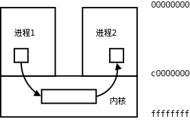
4.1. 管道
管道是一种最基本的 IPC 机制，由 pipe 函数创建：
#include <unistd.h>
int pipe(int filedes[2]);
调用 pipe 函数时在内核中开辟一块缓冲区（称为管道）用于通信，它有一个读端一个写端，然后通过 filedes 参数传出给用户程序两个文件描述符，filedes[0] 指向管道的读端，filedes[1] 指向管道的写端（很好记，就像 0 是标准输入 1 是标准输出一样）。所以管道在用户程序看起来就像一个打开的文件，通过 read(filedes[0]); 或者 write(filedes[1]); 向这个文件读写数据其实是在读写内核缓冲区。pipe 函数调用成功返回 0，调用失败返回 -1。
开辟了管道之后如何实现两个进程间的通信呢？比如可以按下面的步骤通信。
图 30.7. 管道

- 父进程调用
pipe开辟管道，得到两个文件描述符指向管道的两端。 - 父进程调用
fork创建子进程，那么子进程也有两个文件描述符指向同一管道。 - 父进程关闭管道读端，子进程关闭管道写端。父进程可以往管道里写，子进程可以从管道里读，管道是用环形队列实现的，数据从写端流入从读端流出，这样就实现了进程间通信。
例 30.7. 管道
#include <stdlib.h>
#include <unistd.h>
#define MAXLINE 80
int main(void)
{
int n;
int fd[2];
pid_t pid;
char line[MAXLINE];
if (pipe(fd) < 0) {
perror("pipe");
exit(1);
}
if ((pid = fork()) < 0) {
perror("fork");
exit(1);
}
if (pid > 0) { /* parent */
close(fd[0]);
write(fd[1], "hello world\n", 12);
wait(NULL);
} else { /* child */
close(fd[1]);
n = read(fd[0], line, MAXLINE);
write(STDOUT_FILENO, line, n);
}
return 0;
}
使用管道有一些限制：
- 两个进程通过一个管道只能实现单向通信，比如上面的例子，父进程写子进程读，如果有时候也需要子进程写父进程读，就必须另开一个管道。请读者思考，如果只开一个管道，但是父进程不关闭读端，子进程也不关闭写端，双方都有读端和写端，为什么不能实现双向通信？
- 管道的读写端通过打开的文件描述符来传递，因此要通信的两个进程必须从它们的公共祖先那里继承管道文件描述符。上面的例子是父进程把文件描述符传给子进程之后父子进程之间通信，也可以父进程
fork两次，把文件描述符传给两个子进程，然后两个子进程之间通信，总之需要通过fork传递文件描述符使两个进程都能访问同一管道，它们才能通信。
使用管道需要注意以下 4 种特殊情况（假设都是阻塞 I/O 操作，没有设置 O_NONBLOCK 标志）：
- 如果所有指向管道写端的文件描述符都关闭了（管道写端的引用计数等于 0），而仍然有进程从管道的读端读数据，那么管道中剩余的数据都被读取后，再次
read会返回 0，就像读到文件末尾一样。 - 如果有指向管道写端的文件描述符没关闭（管道写端的引用计数大于 0），而持有管道写端的进程也没有向管道中写数据，这时有进程从管道读端读数据，那么管道中剩余的数据都被读取后，再次
read会阻塞，直到管道中有数据可读了才读取数据并返回。 - 如果所有指向管道读端的文件描述符都关闭了（管道读端的引用计数等于 0），这时有进程向管道的写端
write，那么该进程会收到信号SIGPIPE，通常会导致进程异常终止。在第 33 章「信号」会讲到怎样使SIGPIPE信号不终止进程。 - 如果有指向管道读端的文件描述符没关闭（管道读端的引用计数大于 0），而持有管道读端的进程也没有从管道中读数据，这时有进程向管道写端写数据，那么在管道被写满时再次
write会阻塞，直到管道中有空位置了才写入数据并返回。
管道的这四种特殊情况具有普遍意义。在第 37 章「socket 编程」要讲的 TCP socket 也具有管道的这些特性。
习题
- 在例 30.7「管道」中，父进程只用到写端，因而把读端关闭，子进程只用到读端，因而把写端关闭，然后互相通信，不使用的读端或写端必须关闭，请读者想一想如果不关闭会有什么问题。
- 请读者修改例 30.7「管道」的代码和实验条件，验证我上面所说的四种特殊情况。
4.2. 其它 IPC 机制
进程间通信必须通过内核提供的通道，而且必须有一种办法在进程中标识内核提供的某个通道，上一节讲的管道是用打开的文件描述符来标识的。如果要互相通信的几个进程没有从公共祖先那里继承文件描述符，它们怎么通信呢？内核提供一条通道不成问题，问题是如何标识这条通道才能使各进程都可以访问它？文件系统中的路径名是全局的，各进程都可以访问，因此可以用文件系统中的路径名来标识一个 IPC 通道。
FIFO 和 UNIX Domain Socket 这两种 IPC 机制都是利用文件系统中的特殊文件来标识的。可以用 mkfifo 命令创建一个 FIFO 文件：
$ mkfifo hello
$ ls -l hello
prw-r--r-- 1 akaedu akaedu 0 2008-10-30 10:44 hello
FIFO 文件在磁盘上没有数据块，仅用来标识内核中的一条通道，各进程可以打开这个文件进行 read/write，实际上是在读写内核通道（根本原因在于这个 file 结构体所指向的 read、write 函数和常规文件不一样），这样就实现了进程间通信。UNIX Domain Socket 和 FIFO 的原理类似，也需要一个特殊的 socket 文件来标识内核中的通道，例如 /var/run 目录下有很多系统服务的 socket 文件：
$ ls -l /var/run/
total 52
srw-rw-rw- 1 root root 0 2008-10-30 00:24 acpid.socket
...
srw-rw-rw- 1 root root 0 2008-10-30 00:25 gdm_socket
...
srw-rw-rw- 1 root root 0 2008-10-30 00:24 sdp
...
srwxr-xr-x 1 root root 0 2008-10-30 00:42 synaptic.socket
文件类型 s 表示 socket，这些文件在磁盘上也没有数据块。UNIX Domain Socket 是目前最广泛使用的 IPC 机制，到后面讲 socket 编程时再详细介绍。
现在把进程之间传递信息的各种途径（包括各种 IPC 机制）总结如下：
- 父进程通过
fork可以将打开文件的描述符传递给子进程 - 子进程结束时，父进程调用
wait可以得到子进程的终止信息 - 几个进程可以在文件系统中读写某个共享文件，也可以通过给文件加锁来实现进程间同步
- 进程之间互发信号，一般使用
SIGUSR1和SIGUSR2实现用户自定义功能 - 管道
- FIFO
- mmap 函数，几个进程可以映射同一内存区
- SYS V IPC，以前的 SYS V UNIX 系统实现的 IPC 机制，包括消息队列、信号量和共享内存，现在已经基本废弃
- UNIX Domain Socket，目前最广泛使用的 IPC 机制
5. 练习：实现简单的 Shell
用讲过的各种 C 函数实现一个简单的交互式 Shell，要求：
-
给出提示符，让用户输入一行命令，识别程序名和参数并调用适当的
exec函数执行程序，待执行完成后再次给出提示符。 -
识别和处理以下符号：
- 简单的标准输入输出重定向（
<和>）：仿照例 30.5「wrapper」，先dup2然后exec。 - 管道（
|）：Shell 进程先调用pipe创建一对管道描述符，然后fork出两个子进程，一个子进程关闭读端，调用dup2把写端赋给标准输出，另一个子进程关闭写端，调用dup2把读端赋给标准输入，两个子进程分别调用exec执行程序，而 Shell 进程把管道的两端都关闭，调用wait等待两个子进程终止。
你的程序应该可以处理以下命令：
○ls△-l△-R○>○file1○ ○cat○<○file1○|○wc△-c○>○file1○ ○ 表示零个或多个空格，△ 表示一个或多个空格 - 简单的标准输入输出重定向（
第 31 章 Shell 脚本
1. Shell 的历史
Shell 的作用是解释执行用户的命令，用户输入一条命令，Shell 就解释执行一条，这种方式称为交互式（Interactive），Shell 还有一种执行命令的方式称为批处理（Batch），用户事先写一个 Shell 脚本（Script），其中有很多条命令，让 Shell 一次把这些命令执行完，而不必一条一条地敲命令。Shell 脚本和编程语言很相似，也有变量和流程控制语句，但 Shell 脚本是解释执行的，不需要编译，Shell 程序从脚本中一行一行读取并执行这些命令，相当于一个用户把脚本中的命令一行一行敲到 Shell 提示符下执行。
由于历史原因，UNIX 系统上有很多种 Shell：
sh（Bourne Shell）：由 Steve Bourne 开发，各种 UNIX 系统都配有sh。csh（C Shell）：由 Bill Joy 开发，随 BSD UNIX 发布，它的流程控制语句很像 C 语言，支持很多 Bourne Shell 所不支持的功能：作业控制，命令历史，命令行编辑。ksh（Korn Shell）：由 David Korn 开发，向后兼容sh的功能，并且添加了csh引入的新功能，是目前很多 UNIX 系统标准配置的 Shell，在这些系统上/bin/sh往往是指向/bin/ksh的符号链接。tcsh（TENEX C Shell）：是csh的增强版本，引入了命令补全等功能，在 FreeBSD、Mac OS X 等系统上替代了csh。bash（Bourne Again Shell）：由 GNU 开发的 Shell，主要目标是与 POSIX 标准保持一致，同时兼顾对sh的兼容，bash从csh和ksh借鉴了很多功能，是各种 Linux 发行版标准配置的 Shell，在 Linux 系统上/bin/sh往往是指向/bin/bash的符号链接[38]。虽然如此，bash和sh还是有很多不同的，一方面，bash扩展了一些命令和参数，另一方面，bash并不完全和sh兼容，有些行为并不一致，所以bash需要模拟sh的行为：当我们通过sh这个程序名启动bash时，bash可以假装自己是sh，不认扩展的命令，并且行为与sh保持一致。
[38] 最新的发行版有一些变化，例如 Ubuntu 7.10 的
/bin/sh是指向/bin/dash的符号链接，dash也是一种类似bash的 Shell。$ ls /bin/sh /bin/dash -l -rwxr-xr-x 1 root root 79988 2008-03-12 19:22 /bin/dash lrwxrwxrwx 1 root root 4 2008-07-04 05:58 /bin/sh -> dash
文件 /etc/shells 给出了系统中所有已知（不一定已安装）的 Shell，除了上面提到的 Shell 之外还有很多变种。
# /etc/shells: valid login shells
/bin/csh
/bin/sh
/usr/bin/es
/usr/bin/ksh
/bin/ksh
/usr/bin/rc
/usr/bin/tcsh
/bin/tcsh
/usr/bin/esh
/bin/dash
/bin/bash
/bin/rbash
/usr/bin/screen
用户的默认 Shell 设置在 /etc/passwd 文件中，例如下面这行对用户 mia 的设置：
mia:L2NOfqdlPrHwE:504:504:Mia Maya:/home/mia:/bin/bash
用户 mia 从字符终端登录或者打开图形终端窗口时就会自动执行 /bin/bash。如果要切换到其它 Shell，可以在命令行输入程序名，例如：
~$ sh（在 bash 提示符下输入 sh 命令）
$（出现 sh 的提示符）
$（按 Ctrl-d 或者输入 exit 命令）
~$（回到 bash 提示符）
~$（再次按 Ctrl-d 或者输入 exit 命令会退出登录或者关闭图形终端窗口）
本章只介绍 bash 和 sh 的用法和相关语法，不介绍其它 Shell。所以下文提到 Shell 都是指 bash 或 sh。
2. Shell 如何执行命令
2.1. 执行交互式命令
用户在命令行输入命令后，一般情况下 Shell 会 fork 并 exec 该命令，但是 Shell 的内建命令例外，执行内建命令相当于调用Shell进程中的一个函数，并不创建新的进程。以前学过的 cd、alias、umask、exit 等命令即是内建命令，凡是用 which 命令查不到程序文件所在位置的命令都是内建命令，内建命令没有单独的 man 手册，要在 man 手册中查看内建命令，应该
$ man bash-builtins
本节会介绍很多内建命令，如 export、shift、if、eval、[、for、while 等等。内建命令虽然不创建新的进程，但也会有 Exit Status，通常也用 0 表示成功非零表示失败，虽然内建命令不创建新的进程，但执行结束后也会有一个状态码，也可以用特殊变量 $? 读出。
习题
- 在完成第 30 章第 5 节 「练习：实现简单的 Shell」时也许有的读者已经试过了，在自己实现的 Shell 中不能执行
cd命令，因为cd是一个内建命令，没有程序文件，不能用exec执行。现在请完善该程序，实现cd命令的功能，用chdir(2)函数可以改变进程的当前工作目录。 - 思考一下，为什么
cd命令要实现成内建命令？可不可以实现一个独立的cd程序，例如/bin/cd，就像/bin/ls一样？
2.2. 执行脚本
首先编写一个简单的脚本，保存为 script.sh：
例 31.1. 简单的 Shell 脚本
#! /bin/sh
cd ..
ls
Shell 脚本中用 # 表示注释，相当于 C 语言的 // 注释。但如果 # 位于第一行开头，并且是 #!（称为 Shebang）则例外，它表示该脚本使用后面指定的解释器 /bin/sh 解释执行。如果把这个脚本文件加上可执行权限然后执行：
$ chmod +x script.sh
$ ./script.sh
Shell 会 fork 一个子进程并调用 exec 执行 ./script.sh 这个程序，exec 系统调用应该把子进程的代码段替换成 ./script.sh 程序的代码段，并从它的 _start 开始执行。然而 script.sh 是个文本文件，根本没有代码段和 _start 函数，怎么办呢？其实 exec 还有另外一种机制，如果要执行的是一个文本文件，并且第一行用 Shebang 指定了解释器，则用解释器程序的代码段替换当前进程，并且从解释器的 _start 开始执行，而这个文本文件被当作命令行参数传给解释器。因此，执行上述脚本相当于执行程序
$ /bin/sh ./script.sh
以这种方式执行不需要 script.sh 文件具有可执行权限。再举个例子，比如某个 sed 脚本的文件名是 script，它的开头是
#! /bin/sed -f
执行 ./script 相当于执行程序
$ /bin/sed -f ./script.sh
以上介绍了两种执行 Shell 脚本的方法：
$ ./script.sh
$ sh ./script.sh
这两种方法本质上是一样的，执行上述脚本的步骤为：
图 31.1. Shell脚本的执行过程

- 交互 Shell（
bash）fork/exec一个子 Shell（sh）用于执行脚本，父进程bash等待子进程sh终止。 sh读取脚本中的cd ..命令，调用相应的函数执行内建命令，改变当前工作目录为上一级目录。sh读取脚本中的ls命令，fork/exec这个程序，列出当前工作目录下的文件，sh等待ls终止。ls终止后，sh继续执行，读到脚本文件末尾，sh终止。sh终止后，bash继续执行，打印提示符等待用户输入。
如果将命令行下输入的命令用 () 括号括起来，那么也会 fork 出一个子 Shell 执行小括号中的命令，一行中可以输入由分号;隔开的多个命令，比如：
$ (cd ..;ls -l)
和上面两种方法执行 Shell 脚本的效果是相同的，cd .. 命令改变的是子 Shell 的 PWD，而不会影响到交互式 Shell。然而命令
$ cd ..;ls -l
则有不同的效果，cd .. 命令是直接在交互式 Shell 下执行的，改变交互式 Shell 的 PWD，然而这种方式相当于这样执行 Shell 脚本：
$ source ./script.sh
或者
$ . ./script.sh
source 或者 . 命令是 Shell 的内建命令，这种方式也不会创建子 Shell，而是直接在交互式 Shell 下逐行执行脚本中的命令。
习题
- 解释如下命令的执行过程：
$ (exit 2)
$ echo $?
2
3. Shell 的基本语法
3.1. 变量
按照惯例，Shell 变量由全大写字母加下划线组成，有两种类型的 Shell 变量：
-
环境变量：在第 30 章「进程」第 2 节「环境变量」中讲过，环境变量可以从父进程传给子进程，因此 Shell 进程的环境变量可以从当前 Shell 进程传给
fork出来的子进程。用printenv命令可以显示当前 Shell 进程的环境变量。 -
本地变量：只存在于当前 Shell 进程，用
set命令可以显示当前 Shell 进程中定义的所有变量（包括本地变量和环境变量）和函数。
环境变量是任何进程都有的概念，而本地变量是 Shell 特有的概念。在 Shell 中，环境变量和本地变量的定义和用法相似。在 Shell 中定义或赋值一个变量：
$ VARNAME=value
注意等号两边都不能有空格，否则会被 Shell 解释成命令和命令行参数。
一个变量定义后仅存在于当前 Shell 进程，它是本地变量，用 export 命令可以把本地变量导出为环境变量，定义和导出环境变量通常可以一步完成：
$ export VARNAME=value
也可以分两步完成：
$ VARNAME=value
$ export VARNAME
用 unset 命令可以删除已定义的环境变量或本地变量。
$ unset VARNAME
如果一个变量叫做 VARNAME，用 ${VARNAME} 可以表示它的值，在不引起歧义的情况下也可以用 $VARNAME 表示它的值。通过以下例子比较这两种表示法的不同：
$ echo $SHELL
$ echo $SHELLabc
$ echo $SHELL abc
$ echo ${SHELL}abc
注意，在定义变量时不用$，取变量值时要用 $。和 C 语言不同的是，Shell 变量不需要明确定义类型，事实上 Shell 变量的值都是字符串，比如我们定义 VAR=45，其实 VAR 的值是字符串 45 而非整数。Shell 变量不需要先定义后使用，如果对一个没有定义的变量取值，则值为空字符串。
3.2. 文件名代换（Globbing）：* ? []
这些用于匹配的字符称为通配符（Wildcard），具体如下：
表 31.1. 通配符
| * | 匹配 0 个或多个任意字符 |
|---|---|
| ? | 匹配一个任意字符 |
| [若干字符] | 匹配方括号中任意一个字符的一次出现 |
$ ls /dev/ttyS*
$ ls ch0?.doc
$ ls ch0[0-2].doc
$ ls ch[012][0-9].doc
注意，Globbing 所匹配的文件名是由 Shell 展开的，也就是说在参数还没传给程序之前已经展开了，比如上述 ls ch0[012].doc 命令，如果当前目录下有 ch00.doc 和 ch02.doc，则传给 ls 命令的参数实际上是这两个文件名，而不是一个匹配字符串。
3.3. 命令代换：` 或 $()
由反引号括起来的也是一条命令，Shell 先执行该命令，然后将输出结果立刻代换到当前命令行中。例如定义一个变量存放 date 命令的输出：
$ DATE=`date`
$ echo $DATE
命令代换也可以用 $() 表示：
$ DATE=$(date)
3.4. 算术代换：$(())
用于算术计算，$(()) 中的 Shell 变量取值将转换成整数，例如：
$ VAR=45
$ echo $(($VAR+3))
$(()) 中只能用 +-*/ 和 () 运算符，并且只能做整数运算。
3.5. 转义字符 \
和 C 语言类似，\ 在 Shell 中被用作转义字符，用于去除紧跟其后的单个字符的特殊意义（回车除外），换句话说，紧跟其后的字符取字面值。例如：
$ echo $SHELL
/bin/bash
$ echo \$SHELL
$SHELL
$ echo \\
\
比如创建一个文件名为「$ $」的文件可以这样：
$ touch \$\ \$
还有一个字符虽然不具有特殊含义，但是要用它做文件名也很麻烦，就是 - 号。如果要创建一个文件名以 - 号开头的文件，这样是不行的：
$ touch -hello
touch: invalid option -- h
Try `touch --help' for more information.
即使加上 \ 转义也还是报错：
$ touch \-hello
touch: invalid option -- h
Try `touch --help' for more information.
因为各种 UNIX 命令都把 - 号开头的命令行参数当作命令的选项，而不会当作文件名。如果非要处理以 - 号开头的文件名，可以有两种办法：
$ touch ./-hello
或者
$ touch -- -hello
\ 还有一种用法，在 \ 后敲回车表示续行，Shell 并不会立刻执行命令，而是把光标移到下一行，给出一个续行提示符 >，等待用户继续输入，最后把所有的续行接到一起当作一个命令执行。例如：
$ ls \
> -l
（ls -l命令的输出）
3.6. 单引号
和 C 语言不一样，Shell 脚本中的单引号和双引号一样都是字符串的界定符（双引号下一节介绍），而不是字符的界定符。单引号用于保持引号内所有字符的字面值，即使引号内的 \ 和回车也不例外，但是字符串中不能出现单引号。如果引号没有配对就输入回车，Shell 会给出续行提示符，要求用户把引号配上对。例如：
$ echo '$SHELL'
$SHELL
$ echo 'ABC\（回车）
> DE'（再按一次回车结束命令）
ABC\
DE
3.7. 双引号
双引号用于保持引号内所有字符的字面值（回车也不例外），但以下情况除外：
- $ 加变量名可以取变量的值
- 反引号仍表示命令替换
- \$ 表示 $ 的字面值
- \` 表示 ` 的字面值
- " 表示 " 的字面值
- \\ 表示 \ 的字面值
- 除以上情况之外，在其它字符前面的 \ 无特殊含义，只表示字面值
$ echo "$SHELL"
/bin/bash
$ echo "`date`"
Sun Apr 20 11:22:06 CEST 2003
$ echo "I'd say: \"Go for it\""
I'd say: "Go for it"
$ echo "\"（回车）
>"（再按一次回车结束命令）
"
$ echo "\\"
\
4. bash 启动脚本
启动脚本是 bash 启动时自动执行的脚本。用户可以把一些环境变量的设置和 alias、umask 设置放在启动脚本中，这样每次启动 Shell 时这些设置都自动生效。思考一下，bash 在执行启动脚本时是以 fork 子 Shell 方式执行的还是以 source 方式执行的？
启动 bash 的方法不同，执行启动脚本的步骤也不相同，具体可分为以下几种情况。
4.1. 作为交互登录 Shell 启动，或者使用 --login 参数启动
交互 Shell 是指用户在提示符下输命令的 Shell 而非执行脚本的 Shell，登录 Shell 就是在输入用户名和密码登录后得到的 Shell，比如从字符终端登录或者用 telnet/ssh 从远程登录，但是从图形界面的窗口管理器登录之后会显示桌面而不会产生登录 Shell（也不会执行启动脚本），在图形界面下打开终端窗口得到的 Shell 也不是登录 Shell。
这样启动 bash 会自动执行以下脚本：
- 首先执行
/etc/profile，系统中每个用户登录时都要执行这个脚本，如果系统管理员希望某个设置对所有用户都生效，可以写在这个脚本里 - 然后依次查找当前用户主目录的
~/.bash_profile、~/.bash_login和~/.profile三个文件，找到第一个存在并且可读的文件来执行，如果希望某个设置只对当前用户生效，可以写在这个脚本里，由于这个脚本在/etc/profile之后执行，/etc/profile设置的一些环境变量的值在这个脚本中可以修改，也就是说，当前用户的设置可以覆盖（Override）系统中全局的设置。~/.profile这个启动脚本是sh规定的，bash规定首先查找以~/.bash_开头的启动脚本，如果没有则执行~/.profile，是为了和sh保持一致。 - 顺便一提，在退出登录时会执行
~/.bash_logout脚本（如果它存在的话）。
4.2. 以交互非登录 Shell 启动
比如在图形界面下开一个终端窗口，或者在登录 Shell 提示符下再输入 bash 命令，就得到一个交互非登录的 Shell，这种 Shell 在启动时自动执行 ~/.bashrc 脚本。
为了使登录 Shell 也能自动执行 ~/.bashrc，通常在 ~/.bash_profile 中调用 ~/.bashrc：
if [ -f ~/.bashrc ]; then
. ~/.bashrc
fi
这几行的意思是如果 ~/.bashrc 文件存在则 source 它。多数 Linux 发行版在创建帐户时会自动创建 ~/.bash_profile 和 ~/.bashrc 脚本，~/.bash_profile 中通常都有上面这几行。所以，如果要在启动脚本中做某些设置，使它在图形终端窗口和字符终端的 Shell 中都起作用，最好就是在 ~/.bashrc 中设置。
下面做一个实验，在 ~/.bashrc 文件末尾添加一行（如果这个文件不存在就创建它）：
export PATH=$PATH:/home/akaedu
然后关掉终端窗口重新打开，或者从字符终端 logout 之后重新登录，现在主目录下的程序应该可以直接输程序名运行而不必输入路径了，例如：
~$ a.out
就可以了，而不必
~$ ./a.out
为什么登录 Shell 和非登录 Shell 的启动脚本要区分开呢？最初的设计是这样考虑的，如果从字符终端或者远程登录，那么登录 Shell 是该用户的所有其它进程的父进程，也是其它子 Shell 的父进程，所以环境变量在登录 Shell 的启动脚本里设置一次就可以自动带到其它非登录 Shell 里，而 Shell 的本地变量、函数、alias 等设置没有办法带到子 Shell 里，需要每次启动非登录 Shell 时设置一遍，所以就需要有非登录 Shell 的启动脚本，所以一般来说在 ~/.bash_profile 里设置环境变量，在 ~/.bashrc 里设置本地变量、函数、alias 等。如果你的 Linux 带有图形系统则不能这样设置，由于从图形界面的窗口管理器登录并不会产生登录 Shell，所以环境变量也应该在 ~/.bashrc 里设置。
4.3. 非交互启动
为执行脚本而 fork 出来的子 Shell 是非交互 Shell，启动时执行的脚本文件由环境变量 BASH_ENV 定义，相当于自动执行以下命令：
if [ -n "$BASH_ENV" ]; then . "$BASH_ENV"; fi
如果环境变量 BASH_ENV 的值不是空字符串，则把它的值当作启动脚本的文件名，source 这个脚本。
4.4. 以 sh 命令启动
如果以 sh 命令启动 bash，bash 将模拟 sh 的行为，以 ~/.bash_ 开头的那些启动脚本就不认了。所以，如果作为交互登录 Shell 启动，或者使用 --login 参数启动，则依次执行以下脚本：
/etc/profile~/.profile
如果作为交互 Shell 启动，相当于自动执行以下命令：
if [ -n "$ENV" ]; then . "$ENV"; fi
如果作为非交互 Shell 启动，则不执行任何启动脚本。通常我们写的 Shell 脚本都以 #! /bin/sh 开头，都属于这种方式。
5. Shell 脚本语法
5.1. 条件测试：test [
命令 test 或 [ 可以测试一个条件是否成立，如果测试结果为真，则该命令的 Exit Status 为 0，如果测试结果为假，则命令的 Exit Status 为 1（注意与 C 语言的逻辑表示正好相反）。例如测试两个数的大小关系：
$ VAR=2
$ test $VAR -gt 1
$ echo $?
0
$ test $VAR -gt 3
$ echo $?
1
$ [ $VAR -gt 3 ]
$ echo $?
1
虽然看起来很奇怪，但左方括号 [ 确实是一个命令的名字，传给命令的各参数之间应该用空格隔开，比如，$VAR、-gt、3、] 是 [ 命令的四个参数，它们之间必须用空格隔开。命令 test 或 [ 的参数形式是相同的，只不过 test 命令不需要 ] 参数。以 [ 命令为例，常见的测试命令如下表所示：
表 31.2. 测试命令
[ -d DIR ] | 如果 DIR 存在并且是一个目录则为真 |
|---|---|
[ -f FILE ] | 如果 FILE 存在且是一个普通文件则为真 |
[ -z STRING ] | 如果 STRING 的长度为零则为真 |
[ -n STRING ] | 如果 STRING 的长度非零则为真 |
[ STRING1 = STRING2 ] | 如果两个字符串相同则为真 |
[ STRING1 != STRING2 ] | 如果字符串不相同则为真 |
[ ARG1 OP ARG2 ] | ARG1 和 ARG2 应该是整数或者取值为整数的变量，OP 是 -eq（等于）-ne（不等于）-lt（小于）-le（小于等于）-gt（大于）-ge（大于等于）之中的一个 |
和 C 语言类似，测试条件之间还可以做与、或、非逻辑运算：
表 31.3. 带与、或、非的测试命令
[ ! EXPR ] | EXPR 可以是上表中的任意一种测试条件，! 表示逻辑反 |
|---|---|
[ EXPR1 -a EXPR2 ] | EXPR1 和 EXPR2 可以是上表中的任意一种测试条件，-a 表示逻辑与 |
[ EXPR1 -o EXPR2 ] | EXPR1 和 EXPR2 可以是上表中的任意一种测试条件，-o 表示逻辑或 |
例如：
$ VAR=abc
$ [ -d Desktop -a $VAR = 'abc' ]
$ echo $?
0
注意，如果上例中的 $VAR 变量事先没有定义，则被 Shell 展开为空字符串，会造成测试条件的语法错误（展开为 [ -d Desktop -a = 'abc' ]），作为一种好的 Shell 编程习惯，应该总是把变量取值放在双引号之中（展开为 [ -d Desktop -a "" = 'abc' ]）：
$ unset VAR
$ [ -d Desktop -a $VAR = 'abc' ]
bash: [: too many arguments
$ [ -d Desktop -a "$VAR" = 'abc' ]
$ echo $?
1
5.2. if/then/elif/else/fi
和 C 语言类似，在 Shell 中用 if、then、elif、else、fi 这几条命令实现分支控制。这种流程控制语句本质上也是由若干条 Shell 命令组成的，例如先前讲过的
if [ -f ~/.bashrc ]; then
. ~/.bashrc
fi
其实是三条命令，if [ -f ~/.bashrc ] 是第一条，then . ~/.bashrc 是第二条，fi 是第三条。如果两条命令写在同一行则需要用 ; 号隔开，一行只写一条命令就不需要写 ; 号了，另外，then 后面有换行，但这条命令没写完，Shell 会自动续行，把下一行接在 then 后面当作一条命令处理。和 [ 命令一样，要注意命令和各参数之间必须用空格隔开。if 命令的参数组成一条子命令，如果该子命令的 Exit Status 为 0（表示真），则执行 then 后面的子命令，如果 Exit Status 非 0（表示假），则执行 elif、else 或者 fi 后面的子命令。if 后面的子命令通常是测试命令，但也可以是其它命令。Shell 脚本没有 {}v括号，所以用 fi 表示 if 语句块的结束。见下例：
#! /bin/sh
if [ -f /bin/bash ]
then echo "/bin/bash is a file"
else echo "/bin/bash is NOT a file"
fi
if :; then echo "always true"; fi
: 是一个特殊的命令，称为空命令，该命令不做任何事，但 Exit Status 总是真。此外，也可以执行 /bin/true 或 /bin/false 得到真或假的 Exit Status。再看一个例子：
#! /bin/sh
echo "Is it morning? Please answer yes or no."
read YES_OR_NO
if [ "$YES_OR_NO" = "yes" ]; then
echo "Good morning!"
elif [ "$YES_OR_NO" = "no" ]; then
echo "Good afternoon!"
else
echo "Sorry, $YES_OR_NO not recognized. Enter yes or no."
exit 1
fi
exit 0
上例中的 read 命令的作用是等待用户输入一行字符串，将该字符串存到一个 Shell 变量中。
此外，Shell 还提供了 && 和 || 语法，和 C 语言类似，具有 Short-circuit 特性，很多 Shell 脚本喜欢写成这样：
test "$(whoami)" != 'root' && (echo you are using a non-privileged account; exit 1)
&& 相当于 if...then...，而 || 相当于 if not...then...。&& 和 || 用于连接两个命令，而上面讲的 -a 和 -o 仅用于在测试表达式中连接两个测试条件，要注意它们的区别，例如，
test "$VAR" -gt 1 -a "$VAR" -lt 3
和以下写法是等价的
test "$VAR" -gt 1 && test "$VAR" -lt 3
5.3. case/esac
case 命令可类比 C 语言的 switch/case 语句，esac 表示 case 语句块的结束。C 语言的 case 只能匹配整型或字符型常量表达式，而 Shell 脚本的 case 可以匹配字符串和 Wildcard，每个匹配分支可以有若干条命令，末尾必须以 ;; 结束，执行时找到第一个匹配的分支并执行相应的命令，然后直接跳到 esac 之后，不需要像 C 语言一样用 break 跳出。
#! /bin/sh
echo "Is it morning? Please answer yes or no."
read YES_OR_NO
case "$YES_OR_NO" in
yes|y|Yes|YES)
echo "Good Morning!";;
[nN]*)
echo "Good Afternoon!";;
*)
echo "Sorry, $YES_OR_NO not recognized. Enter yes or no."
exit 1;;
esac
exit 0
使用 case 语句的例子可以在系统服务的脚本目录 /etc/init.d 中找到。这个目录下的脚本大多具有这种形式（以 /etc/apache2 为例）：
case $1 in
start)
...
;;
stop)
...
;;
reload | force-reload)
...
;;
restart)
...
*)
log_success_msg "Usage: /etc/init.d/apache2 {start|stop|restart|reload|force-reload|start-htcacheclean|stop-htcacheclean}"
exit 1
;;
esac
启动 apache2 服务的命令是
$ sudo /etc/init.d/apache2 start
$1 是一个特殊变量，在执行脚本时自动取值为第一个命令行参数，也就是 start，所以进入 start) 分支执行相关的命令。同理，命令行参数指定为 stop、reload 或 restart 可以进入其它分支执行停止服务、重新加载配置文件或重新启动服务的相关命令。
5.4. for/do/done
Shell 脚本的 for 循环结构和 C 语言很不一样，它类似于某些编程语言的 foreach 循环。例如：
#! /bin/sh
for FRUIT in apple banana pear; do
echo "I like $FRUIT"
done
FRUIT 是一个循环变量，第一次循环 $FRUIT 的取值是 apple，第二次取值是 banana，第三次取值是 pear。再比如，要将当前目录下的 chap0、chap1、chap2等文件名改为 chap0~、chap1~、chap2~ 等（按惯例，末尾有 ~ 字符的文件名表示临时文件），这个命令可以这样写：
$ for FILENAME in chap?; do mv $FILENAME $FILENAME~; done
也可以这样写：
$ for FILENAME in `ls chap?`; do mv $FILENAME $FILENAME~; done
5.5. while/do/done
while 的用法和 C 语言类似。比如一个验证密码的脚本：
#! /bin/sh
echo "Enter password:"
read TRY
while [ "$TRY" != "secret" ]; do
echo "Sorry, try again"
read TRY
done
下面的例子通过算术运算控制循环的次数：
#! /bin/sh
COUNTER=1
while [ "$COUNTER" -lt 10 ]; do
echo "Here we go again"
COUNTER=$(($COUNTER+1))
done
Shell 还有 until 循环，类似 C 语言的 do...while 循环。本章从略。
习题
- 把上面验证密码的程序修改一下，如果用户输错五次密码就报错退出。
5.6. 位置参数和特殊变量
有很多特殊变量是被Shell自动赋值的，我们已经遇到了 $? 和 $1，现在总结一下：
表 31.4. 常用的位置参数和特殊变量
$0 | 相当于 C 语言 main 函数的 argv[0] |
|---|---|
$1、$2... | 这些称为位置参数（Positional Parameter），相当于 C 语言 main 函数的 argv[1]、argv[2]... |
$# | 相当于 C 语言 main 函数的 argc - 1，注意这里的 # 后面不表示注释 |
$@ | 表示参数列表 "$1" "$2" ...，例如可以用在 for 循环中的 in 后面。 |
$? | 上一条命令的 Exit Status |
$$ | 当前 Shell 的进程号 |
位置参数可以用 shift 命令左移。比如 shift 3 表示原来的 $4 现在变成 $1，原来的 $5 现在变成 $2 等等，原来的 $1、$2、$3 丢弃，$0 不移动。不带参数的 shift 命令相当于 shift 1。例如：
#! /bin/sh
echo "The program $0 is now running"
echo "The first parameter is $1"
echo "The second parameter is $2"
echo "The parameter list is $@"
shift
echo "The first parameter is $1"
echo "The second parameter is $2"
echo "The parameter list is $@"
5.7. 函数
和 C 语言类似，Shell 中也有函数的概念，但是函数定义中没有返回值也没有参数列表。例如：
#! /bin/sh
foo(){ echo "Function foo is called";}
echo "-=start=-"
foo
echo "-=end=-"
注意函数体的左花括号 { 和后面的命令之间必须有空格或换行，如果将最后一条命令和右花括号 } 写在同一行，命令末尾必须有 ; 号。
在定义 foo() 函数时并不执行函数体中的命令，就像定义变量一样，只是给 foo 这个名字一个定义，到后面调用 foo 函数的时候（注意 Shell 中的函数调用不写括号）才执行函数体中的命令。Shell 脚本中的函数必须先定义后调用，一般把函数定义都写在脚本的前面，把函数调用和其它命令写在脚本的最后（类似 C 语言中的 main 函数，这才是整个脚本实际开始执行命令的地方）。
Shell 函数没有参数列表并不表示不能传参数，事实上，函数就像是迷你脚本，调用函数时可以传任意个参数，在函数内同样是用 $0、$1、$2 等变量来提取参数，函数中的位置参数相当于函数的局部变量，改变这些变量并不会影响函数外面的 $0、$1、$2 等变量。函数中可以用 return 命令返回，如果 return 后面跟一个数字则表示函数的 Exit Status。
下面这个脚本可以一次创建多个目录，各目录名通过命令行参数传入，脚本逐个测试各目录是否存在，如果目录不存在，首先打印信息然后试着创建该目录。
#! /bin/sh
is_directory()
{
DIR_NAME=$1
if [ ! -d $DIR_NAME ]; then
return 1
else
return 0
fi
}
for DIR in "$@"; do
if is_directory "$DIR"
then :
else
echo "$DIR doesn't exist. Creating it now..."
mkdir $DIR > /dev/null 2>&1
if [ $? -ne 0 ]; then
echo "Cannot create directory $DIR"
exit 1
fi
fi
done
注意 is_directory() 返回 0 表示真返回 1 表示假。
6. Shell 脚本的调试方法
Shell 提供了一些用于调试脚本的选项，如下所示：
- -n：读一遍脚本中的命令但不执行，用于检查脚本中的语法错误
- -v： 一边执行脚本，一边将执行过的脚本命令打印到标准错误输出
- -x：提供跟踪执行信息，将执行的每一条命令和结果依次打印出来
使用这些选项有三种方法，一是在命令行提供参数
$ sh -x ./script.sh
二是在脚本开头提供参数
#! /bin/sh -x
第三种方法是在脚本中用 set 命令启用或禁用参数
#! /bin/sh
if [ -z "$1" ]; then
set -x
echo "ERROR: Insufficient Args."
exit 1
set +x
fi
set -x 和 set +x 分别表示启用和禁用 -x 参数，这样可以只对脚本中的某一段进行跟踪调试。
第 32 章 正则表达式
1. 引言
以前我们用 grep 在一个文件中找出包含某些字符串的行，比如在头文件中找出一个宏定义。其实 grep 还可以找出符合某个模式（Pattern）的一类字符串。例如找出所有符合 xxxxx@xxxx.xxx 模式的字符串（也就是 email 地址），要求 x 字符可以是字母、数字、下划线、小数点或减号，email 地址的每一部分可以有一个或多个 x 字符，例如 abc.d@ef.com、1_2@987-6.54，当然符合这个模式的不全是合法的 email 地址，但至少可以做一次初步筛选，筛掉 a.b、c@d 等肯定不是 email 地址的字符串。再比如，找出所有符合 yyy.yyy.yyy.yyy 模式的字符串（也就是 IP 地址），要求 y 是 0 - 9 的数字，IP 地址的每一部分可以有 1 - 3 个 y 字符。
如果要用 grep 查找一个模式，如何表示这个模式，这一类字符串，而不是一个特定的字符串呢？从这两个简单的例子可以看出，要表示一个模式至少应该包含以下信息：
- 字符类（Character Class）：如上例的 x 和 y，它们在模式中表示一个字符，但是取值范围是一类字符中的任意一个。
- 数量限定符（Quantifier）： 邮件地址的每一部分可以有一个或多个 x 字符，IP 地址的每一部分可以有 1 - 3 个 y 字符
- 各种字符类以及普通字符之间的位置关系：例如邮件地址分三部分，用普通字符
@和.隔开，IP 地址分四部分，用.隔开，每一部分都可以用字符类和数量限定符描述。为了表示位置关系，还有位置限定符（Anchor）的概念，将在下面介绍。
规定一些特殊语法表示字符类、数量限定符和位置关系，然后用这些特殊语法和普通字符一起表示一个模式，这就是正则表达式（Regular Expression）。例如 email 地址的正则表达式可以写成 [a-zA-Z0-9_.-]+@[a-zA-Z0-9_.-]+\.[a-zA-Z0-9_.-]+，IP 地址的正则表达式可以写成 [0-9]{1,3}\.[0-9]{1,3}\.[0-9]{1,3}\.[0-9]{1,3}。下一节介绍正则表达式的语法，我们先看看正则表达式在 grep 中怎么用。例如有这样一个文本文件 testfile：
192.168.1.1
1234.234.04.5678
123.4234.045.678
abcde
查找其中包含 IP 地址的行：
$ egrep '[0-9]{1,3}\.[0-9]{1,3}\.[0-9]{1,3}\.[0-9]{1,3}' testfile
192.168.1.1
1234.234.04.5678
egrep 相当于 grep -E，表示采用 Extended 正则表达式语法。grep 的正则表达式有 Basic 和 Extended 两种规范，它们之间的区别下一节再解释。另外还有 fgrep 命令，相当于 grep -F，表示只搜索固定字符串而不搜索正则表达式模式，不会按正则表达式的语法解释后面的参数。
注意正则表达式参数用单引号括起来了，因为正则表达式中用到的很多特殊字符在 Shell 中也有特殊含义（例如 \），只有用单引号括起来才能保证这些字符原封不动地传给 grep 命令，而不会被 Shell 解释掉。
192.168.1.1 符合上述模式，由三个 . 隔开的四段组成，每段都是 1 到 3 个数字，所以这一行被找出来了，可为什么 1234.234.04.5678 也被找出来了呢？因为 grep 找的是包含某一模式的行，这一行包含一个符合模式的字符串 234.234.04.567。相反，123.4234.045.678 这一行不包含符合模式的字符串，所以不会被找出来。
grep 是一种查找过滤工具，正则表达式在 grep中用来查找符合模式的字符串。其实正则表达式还有一个重要的应用是验证用户输入是否合法，例如用户通过网页表单提交自己的 email 地址，就需要用程序验证一下是不是合法的 email 地址，这个工作可以在网页的 JavaScript 中做，也可以在网站后台的程序中做，例如 PHP、Perl、Python、Ruby、Java 或 C，所有这些语言都支持正则表达式，可以说，目前不支持正则表达式的编程语言实在很少见。除了编程语言之外，很多 UNIX 命令和工具也都支持正则表达式，例如 grep、vi、sed、awk、emacs 等等。「正则表达式」就像「变量」一样，它是一个广泛的概念，而不是某一种工具或编程语言的特性。
1. 基本语法
我们知道 C 的变量和 Shell 脚本变量的定义和使用方法很不相同，表达能力也不相同，C 的变量有各种类型，而 Shell 脚本变量都是字符串。同样道理，各种工具和编程语言所使用的正则表达式规范的语法并不相同，表达能力也各不相同，有的正则表达式规范引入很多扩展，能表达更复杂的模式，但各种正则表达式规范的基本概念都是相通的。本节介绍 egrep(1) 所使用的正则表达式，它大致上符合 POSIX 正则表达式规范，详见 regex(7)（看这个 man page 对你的英文绝对是很好的锻炼）。希望读者仿照上一节的例子，一边学习语法，一边用 egrep 命令做实验。
表 32.1. 字符类
| 字符 | 含义 | 举例 |
|---|---|---|
. | 匹配任意一个字符 | abc. 可以匹配 abcd、abc9 等 |
[] | 匹配括号中的任意一个字符 | [abc]d 可以匹配 ad、bd 或 cd |
- | 在 [] 括号内表示字符范围 | `[0-9a-fA-F]``` 可以匹配一位十六进制数字 |
^ | 位于 [] 括号内的开头，匹配除括号中的字符之外的任意一个字符 | [^xy] 匹配除 xy 之外的任一字符，因此 [^xy]1 可以匹配 a1、b1 但不匹配 x1、y1 |
[[:xxx:]] | grep 工具预定义的一些命名字符类 | [[:alpha:]] 匹配一个字母，[[:digit:]] 匹配一个数字 |
表 32.2. 数量限定符
| 字符 | 含义 | 举例 |
|---|---|---|
? | 紧跟在它前面的单元应匹配零次或一次 | [0-9]?\.[0-9] 匹配 0.0、2.3、.5 等，由于 . 在正则表达式中是一个特殊字符，所以需要用 \ 转义一下，取字面值 |
+ | 紧跟在它前面的单元应匹配一次或多次 | [a-zA-Z0-9_.-]+@[a-zA-Z0-9_.-]+\.[a-zA-Z0-9_.-]+ 匹配 email 地址 |
* | 紧跟在它前面的单元应匹配零次或多次 | [0-9][0-9]* 匹配至少一位数字，等价于 [0-9]+，[a-zA-Z_]+[a-zA-Z_0-9]* 匹配 C 语言的标识符 |
{N} | 紧跟在它前面的单元应精确匹配 N 次 | [1-9][0-9]{2} 匹配从 100 到 999 的整数 |
{N,} | 紧跟在它前面的单元应匹配至少 N 次 | [1-9][0-9]{2,}匹配三位以上（含三位）的整数 |
{,M} | 紧跟在它前面的单元应匹配最多 M 次 | [0-9]{,1} 相当于[0-9]? |
{N,M} | 紧跟在它前面的单元应匹配至少 N 次，最多 M 次 | [0-9]{1,3}\.[0-9]{1,3}\.[0-9]{1,3}\.[0-9]{1,3} 匹配 IP 地址 |
再次注意 grep 找的是包含某一模式的行，而不是完全匹配某一模式的行。再举个例子，如果文本文件的内容是
aaabc
aad
efg
查找 a* 这个模式的结果是三行都被找出来了
$ egrep 'a*' testfile
aabc
aad
efg
a* 匹配 0 个或多个 a，而第三行包含 0 个a，所以也包含了这一模式。单独用 a* 这样的正则表达式做查找没什么意义，一般是把 a* 作为正则表达式的一部分来用。
表 32.3. 位置限定符
| 字符 | 含义 | 举例 |
|---|---|---|
^ | 匹配行首的位置 | ^Content 匹配位于一行开头的 Content |
$ | 匹配行末的位置 | ;$ 匹配位于一行结尾的 ; 号，^$ 匹配空行 |
\< | 匹配单词开头的位置 | \<th 匹配 ... this，但不匹配 ethernet、tenth |
\> | 匹配单词结尾的位置 | p\> 匹配 leap ...，但不匹配 parent、sleepy |
\b | 匹配单词开头或结尾的位置 | \bat\b 匹配 ... at ...，但不匹配 cat、atexit、batch |
\B | 匹配非单词开头和结尾的位置 | \Bat\B 匹配 battery，但不匹配 ... attend、hat ... |
位置限定符可以帮助 grep 更准确地查找，例如上一节我们用 [0-9]{1,3}\.[0-9]{1,3}\.[0-9]{1,3}\.[0-9]{1,3} 查找 IP 地址，找到这两行
192.168.1.1
1234.234.04.5678
如果用 ^[0-9]{1,3}\.[0-9]{1,3}\.[0-9]{1,3}\.[0-9]{1,3}$ 查找，就可以把 1234.234.04.5678 这一行过滤掉了。
表 32.4. 其它特殊字符
| 字符 | 含义 | 举例 |
|---|---|---|
\ | 转义字符，普通字符转义为特殊字符，特殊字符转义为普通字符 | 普通字符<写成\<表示单词开头的位置，特殊字符.写成\.以及\写成\\就当作普通字符来匹配 |
() | 将正则表达式的一部分括起来组成一个单元，可以对整个单元使用数量限定符 | ([0-9]{1,3}\.){3}[0-9]{1,3}匹配IP地址 |
| ` | ` | 连接两个子表达式，表示或的关系 |
以上介绍的是 grep 正则表达式的 Extended 规范，Basic 规范也有这些语法，只是字符 ?+{}|() 应解释为普通字符，要表示上述特殊含义则需要加 \ 转义。如果用 grep 而不是 egrep，并且不加 -E 参数，则应该遵照 Basic 规范来写正则表达式。
3. sed
sed 意为流编辑器（Stream Editor），在 Shell 脚本和 Makefile 中作为过滤器使用非常普遍，也就是把前一个程序的输出引入 sed 的输入，经过一系列编辑命令转换为另一种格式输出。sed 和 vi 都源于早期 UNIX 的 ed 工具，所以很多 sed 命令和 vi 的末行命令是相同的。
sed 命令行的基本格式为
sed option 'script' file1 file2 ...
sed option -f scriptfile file1 file2 ...
sed 处理的文件既可以由标准输入重定向得到，也可以当命令行参数传入，命令行参数可以一次传入多个文件，sed 会依次处理。sed 的编辑命令可以直接当命令行参数传入，也可以写成一个脚本文件然后用 -f 参数指定，编辑命令的格式为
/pattern/action
其中 pattern 是正则表达式，action 是编辑操作。sed 程序一行一行读出待处理文件，如果某一行与 pattern 匹配，则执行相应的 action，如果一条命令没有 pattern 而只有 action ，这个 action 将作用于待处理文件的每一行。
表 32.5. 常用的 sed 命令
/pattern/p | 打印匹配 pattern 的行 |
|---|---|
/pattern/d | 删除匹配 pattern 的行 |
/pattern/s/pattern1/pattern2/ | 查找符合 pattern 的行，将该行第一个匹配pattern1 的字符串替换为 pattern2 |
/pattern/s/pattern1/pattern2/g | 查找符合 pattern 的行，将该行所有匹配pattern1 的字符串替换为 pattern2 |
使用 p 命令需要注意，sed 是把待处理文件的内容连同处理结果一起输出到标准输出的，因此 p 命令表示除了把文件内容打印出来之外还额外打印一遍匹配 pattern 的行。比如一个文件 testfile 的内容是
123
abc
456
打印其中包含 abc 的行
$ sed '/abc/p' testfile
123
abc
abc
456
要想只输出处理结果，应加上 -n 选项，这种用法相当于 grep 命令
$ sed -n '/abc/p' testfile
abc
使用 d 命令就不需要 -n 参数了，比如删除含有 abc 的行
$ sed '/abc/d' testfile
123
456
注意，sed 命令不会修改原文件，删除命令只表示某些行不打印输出，而不是从原文件中删去。
使用查找替换命令时，可以把匹配 pattern1 的字符串复制到 pattern2 中，比如：
$ sed 's/bc/-&-/' testfile
123
a-bc-
456
pattern2 中的 & 表示原文件的当前行中与 pattern1 相匹配的字符串，再比如：
$ sed 's/\([0-9]\)\([0-9]\)/-\1-~\2~/' testfile
-1-~2~3
abc
-4-~5~6
pattern2 中的 \1 表示与 pattern1 的第一个 () 括号相匹配的内容，\2 表示与 pattern1 的第二个 () 括号相匹配的内容。sed 默认使用 Basic 正则表达式规范，如果指定了 -r 选项则使用 Extended 规范，那么 () 括号就不必转义了。
如果 testfile 的内容是
<html><head><title>Hello World</title>
<body>Welcome to the world of regexp!</body></html>
现在要去掉所有的 HTML 标签，使输出结果为
Hello World
Welcome to the world of regexp!
怎么做呢？如果用下面的命令
$ sed 's/<.*>//g' testfile
结果是两个空行，把所有字符都过滤掉了。这是因为，正则表达式中的数量限定符会匹配尽可能长的字符串，这称为贪心的（Greedy）[39]。比如 sed 在处理第一行时，<.*> 匹配的并不是 <html> 或 <head> 这样的标签，而是
<html><head><title>Hello World</title>
这样一整行，因为这一行开头是 <，中间是若干个任意字符，末尾是 >。那么这条命令怎么改才对呢？留给读者思考。
[39] 有些正则表达式规范支持 Non-greedy 的数量限定符，匹配尽可能短的字符串，例如在 Python 中
*?和*一样表示 0 个或任意多个，但前者是 Non-greedy 的。
4. awk
sed 以行为单位处理文件，awk 比 sed 强的地方在于不仅能以行为单位还能以列为单位处理文件。awk 缺省的行分隔符是换行，缺省的列分隔符是连续的空格和 Tab，但是行分隔符和列分隔符都可以自定义，比如 /etc/passwd 文件的每一行有若干个字段，字段之间以 : 分隔，就可以重新定义 awk 的列分隔符为 : 并以列为单位处理这个文件。awk 实际上是一门很复杂的脚本语言，还有像 C 语言一样的分支和循环结构，但是基本用法和 sed 类似，awk 命令行的基本形式为：
awk option 'script' file1 file2 ...
awk option -f scriptfile file1 file2 ...
和 sed 一样，awk 处理的文件既可以由标准输入重定向得到，也可以当命令行参数传入，编辑命令可以直接当命令行参数传入，也可以用 -f 参数指定一个脚本文件，编辑命令的格式为：
/pattern/{actions}
condition{actions}
和 sed 类似，pattern 是正则表达式，actions 是一系列操作。awk 程序一行一行读出待处理文件，如果某一行与 pattern 匹配，或者满足 condition 条件，则执行相应的 actions，如果一条 awk 命令只有 actions 部分，则 actions 作用于待处理文件的每一行。比如文件 testfile 的内容表示某商店的库存量：
ProductA 30
ProductB 76
ProductC 55
打印每一行的第二列:
$ awk '{print $2;}' testfile
30
76
55
自动变量 $1、$2 分别表示第一列、第二列等，类似于 Shell 脚本的位置参数，而 $0 表示整个当前行。再比如，如果某种产品的库存量低于 75 则在行末标注需要订货：
$ awk '$2<75 {printf "%s\t%s\n", $0, "REORDER";} $2>=75 {print $0;}' testfile
ProductA 30 REORDER
ProductB 76
ProductC 55 REORDER
可见 awk 也有和 C 语言非常相似的 printf 函数。awk 命令的 condition 部分还可以是两个特殊的 condition —— BEGIN 和 END，对于每个待处理文件，BEGIN 后面的 actions 在处理整个文件之前执行一次，END 后面的 actions 在整个文件处理完之后执行一次。
awk 命令可以像 C 语言一样使用变量（但不需要定义变量），比如统计一个文件中的空行数
$ awk '/^ *$/ {x=x+1;} END {print x;}' testfile
就像 Shell 的环境变量一样，有些 awk 变量是预定义的有特殊含义的：
表 32.6. awk 常用的内建变量
| FILENAME | 当前输入文件的文件名，该变量是只读的 |
|---|---|
| NR | 当前行的行号，该变量是只读的，R 代表 record |
| NF | 当前行所拥有的列数，该变量是只读的，F 代表 field |
| OFS | 输出格式的列分隔符，缺省是空格 |
| FS | 输入文件的列分融符，缺省是连续的空格和 Tab |
| ORS | 输出格式的行分隔符，缺省是换行符 |
| RS | 输入文件的行分隔符，缺省是换行符 |
例如打印系统中的用户帐号列表
$ awk 'BEGIN {FS=":"} {print $1;}' /etc/passwd
awk 还可以像 C 语言一样使用 if/else、while、for 控制结构，此处从略。
5. 练习：在 C 语言中使用正则表达式
POSIX 规定了正则表达式的 C 语言库函数，详见 regex(3)。我们已经学习了很多 C 语言库函数的用法，读者应该具备自己看懂 man 手册的能力了。本章介绍了正则表达式在 grep、sed、awk 中的用法，学习要能够举一反三，请读者根据 regex(3) 自己总结正则表达式在 C 语言中的用法，写一些简单的程序，例如验证用户输入的 IP 地址或 email 地址格式是否正确。
第 33 章 信号
1. 信号的基本概念
为了理解信号，先从我们最熟悉的场景说起：
- 用户输入命令，在 Shell 下启动一个前台进程。
- 用户按下 Ctrl-C，这个键盘输入产生一个硬件中断。
- 如果 CPU 当前正在执行这个进程的代码，则该进程的用户空间代码暂停执行，CPU 从用户态切换到内核态处理硬件中断。
- 终端驱动程序将 Ctrl-C 解释成一个
SIGINT信号，记在该进程的 PCB 中（也可以说发送了一个SIGINT信号给该进程）。 - 当某个时刻要从内核返回到该进程的用户空间代码继续执行之前，首先处理 PCB 中记录的信号，发现有一个
SIGINT信号待处理，而这个信号的默认处理动作是终止进程，所以直接终止进程而不再返回它的用户空间代码执行。
注意，Ctrl-C 产生的信号只能发给前台进程。在第 30 章「进程」第 3.3 节「wait 和 waitpid 函数」中我们看到一个命令后面加个 & 可以放到后台运行，这样 Shell 不必等待进程结束就可以接受新的命令，启动新的进程。Shell 可以同时运行一个前台进程和任意多个后台进程，只有前台进程才能接到像 Ctrl-C 这种控制键产生的信号。前台进程在运行过程中用户随时可能按下 Ctrl-C 而产生一个信号，也就是说该进程的用户空间代码执行到任何地方都有可能收到 SIGINT 信号而终止，所以信号相对于进程的控制流程来说是异步（Asynchronous）的。
用 kill -l 命令可以察看系统定义的信号列表：
$ kill -l
1) SIGHUP 2) SIGINT 3) SIGQUIT 4) SIGILL
5) SIGTRAP 6) SIGABRT 7) SIGBUS 8) SIGFPE
9) SIGKILL 10) SIGUSR1 11) SIGSEGV 12) SIGUSR2
13) SIGPIPE 14) SIGALRM 15) SIGTERM 16) SIGSTKFLT
17) SIGCHLD 18) SIGCONT 19) SIGSTOP 20) SIGTSTP
21) SIGTTIN 22) SIGTTOU 23) SIGURG 24) SIGXCPU
25) SIGXFSZ 26) SIGVTALRM 27) SIGPROF 28) SIGWINCH
29) SIGIO 30) SIGPWR 31) SIGSYS 34) SIGRTMIN
35) SIGRTMIN+1 36) SIGRTMIN+2 37) SIGRTMIN+3 38) SIGRTMIN+4
...
每个信号都有一个编号和一个宏定义名称，这些宏定义可以在 signal.h 中找到，例如其中有定义 #define SIGINT 2。编号 34 以上的是实时信号，本章只讨论编号 34 以下的信号，不讨论实时信号。这些信号各自在什么条件下产生，默认的处理动作是什么，在 signal(7) 中都有详细说明：
Signal Value Action Comment
-------------------------------------------------------------------------
SIGHUP 1 Term Hangup detected on controlling terminal
or death of controlling process
SIGINT 2 Term Interrupt from keyboard
SIGQUIT 3 Core Quit from keyboard
SIGILL 4 Core Illegal Instruction
...
上表中第一列是各信号的宏定义名称，第二列是各信号的编号，第三列是默认处理动作，Term 表示终止当前进程，Core 表示终止当前进程并且 Core Dump（下一节详细介绍什么是 Core Dump），Ign 表示忽略该信号，Stop 表示停止当前进程，Cont 表示继续执行先前停止的进程，表中最后一列是简要介绍，说明什么条件下产生该信号。
产生信号的条件主要有：
- 用户在终端按下某些键时，终端驱动程序会发送信号给前台进程，例如 Ctrl-C 产生
SIGINT信号，Ctrl-\ 产生SIGQUIT信号，Ctrl-Z 产生SIGTSTP信号（可使前台进程停止，这个信号将在第 34 章「终端、作业控制与守护进程」详细解释）。 - 硬件异常产生信号，这些条件由硬件检测到并通知内核，然后内核向当前进程发送适当的信号。例如当前进程执行了除以 0 的指令，CPU 的运算单元会产生异常，内核将这个异常解释为
SIGFPE信号发送给进程。再比如当前进程访问了非法内存地址，，MMU 会产生异常，内核将这个异常解释为SIGSEGV信号发送给进程。 - 一个进程调用
kill(2)函数可以发送信号给另一个进程。 - 可以用
kill(1)命令发送信号给某个进程，kill(1)命令也是调用kill(2)函数实现的，如果不明确指定信号则发送SIGTERM信号，该信号的默认处理动作是终止进程。 - 当内核检测到某种软件条件发生时也可以通过信号通知进程，例如闹钟超时产生
SIGALRM信号，向读端已关闭的管道写数据时产生SIGPIPE信号。
如果不想按默认动作处理信号，用户程序可以调用 sigaction(2) 函数告诉内核如何处理某种信号（sigaction 函数稍后详细介绍），可选的处理动作有以下三种：
- 忽略此信号。
- 执行该信号的默认处理动作。
- 提供一个信号处理函数，要求内核在处理该信号时切换到用户态执行这个处理函数，这种方式称为捕捉（Catch）一个信号。
2. 产生信号
2.1. 通过终端按键产生信号
上一节讲过，SIGINT 的默认处理动作是终止进程，SIGQUIT 的默认处理动作是终止进程并且 Core Dump，现在我们来验证一下。
首先解释什么是 Core Dump。当一个进程要异常终止时，可以选择把进程的用户空间内存数据全部保存到磁盘上，文件名通常是 core，这叫做 Core Dump。进程异常终止通常是因为有 Bug，比如非法内存访问导致段错误，事后可以用调试器检查 core 文件以查清错误原因，这叫做 Post-mortem Debug。一个进程允许产生多大的 core 文件取决于进程的 Resource Limit（这个信息保存在 PCB 中）。默认是不允许产生 core 文件的，因为 core 文件中可能包含用户密码等敏感信息，不安全。在开发调试阶段可以用 ulimit 命令改变这个限制，允许产生 core 文件。
首先用 ulimit 命令改变 Shell 进程的 Resource Limit，允许 core 文件最大为 1024K：
$ ulimit -c 1024
然后写一个死循环程序：
#include <unistd.h>
int main(void)
{
while(1);
return 0;
}
前台运行这个程序，然后在终端键入 Ctrl-C 或 Ctrl-\：
$ ./a.out
（按Ctrl-C）
$ ./a.out
（按 Ctrl-\）Quit (core dumped)
$ ls -l core*
-rw------- 1 akaedu akaedu 147456 2008-11-05 23:40 core
ulimit 命令改变了 Shell 进程的 Resource Limit，a.out 进程的 PCB 由 Shell 进程复制而来，所以也具有和 Shell 进程相同的 Resource Limit 值，这样就可以产生 Core Dump 了。
2.2. 调用系统函数向进程发信号
仍以上一节的死循环程序为例，首先在后台执行这个程序，然后用 kill 命令给它发 SIGSEGV 信号。
$ ./a.out &
[1] 7940
$ kill -SIGSEGV 7940
$（再次回车）
[1]+ Segmentation fault (core dumped) ./a.out
7940 是 a.out 进程的 id。之所以要再次回车才显示 Segmentation fault，是因为在 7940 进程终止掉之前已经回到了 Shell 提示符等待用户输入下一条命令，Shell 不希望 Segmentation fault 信息和用户的输入交错在一起，所以等用户输入命令之后才显示。指定某种信号的 kill 命令可以有多种写法，上面的命令还可以写成 kill -SEGV 7940 或 kill -11 7940，11 是信号 SIGSEGV 的编号。以往遇到的段错误都是由非法内存访问产生的，而这个程序本身没错，给它发 SIGSEGV 也能产生段错误。
kill 命令是调用 kill 函数实现的。kill 函数可以给一个指定的进程发送指定的信号。raise 函数可以给当前进程发送指定的信号（自己给自己发信号）。
#include <signal.h>
int kill(pid_t pid, int signo);
int raise(int signo);
这两个函数都是成功返回 0，错误返回 -1。
abort 函数使当前进程接收到 SIGABRT 信号而异常终止。
#include <stdlib.h>
void abort(void);
就像 exit 函数一样，abort 函数总是会成功的，所以没有返回值。
2.3. 由软件条件产生信号
SIGPIPE 是一种由软件条件产生的信号，在例 30.7 「管道」中已经介绍过了。本节主要介绍 alarm 函数和 SIGALRM 信号。
#include <unistd.h>
unsigned int alarm(unsigned int seconds);
调用 alarm 函数可以设定一个闹钟，也就是告诉内核在 seconds 秒之后给当前进程发 SIGALRM 信号，该信号的默认处理动作是终止当前进程。这个函数的返回值是 0 或者是以前设定的闹钟时间还余下的秒数。打个比方，某人要小睡一觉，设定闹钟为 30 分钟之后响，20 分钟后被人吵醒了，还想多睡一会儿，于是重新设定闹钟为 15 分钟之后响，「以前设定的闹钟时间还余下的时间」就是 10 分钟。如果 seconds 值为 0，表示取消以前设定的闹钟，函数的返回值仍然是以前设定的闹钟时间还余下的秒数。
例 33.1. alarm
#include <unistd.h>
#include <stdio.h>
int main(void)
{
int counter;
alarm(1);
for(counter=0; 1; counter++)
printf("counter=%d ", counter);
return 0;
}
这个程序的作用是 1 秒钟之内不停地数数，1 秒钟到了就被 SIGALRM 信号终止。
3. 阻塞信号
3.1. 信号在内核中的表示
以上我们讨论了信号产生（Generation）的各种原因，而实际执行信号的处理动作称为信号递达（Delivery），信号从产生到递达之间的状态，称为信号未决（Pending）。进程可以选择阻塞（Block）某个信号。被阻塞的信号产生时将保持在未决状态，直到进程解除对此信号的阻塞，才执行递达的动作。注意，阻塞和忽略是不同的，只要信号被阻塞就不会递达，而忽略是在递达之后可选的一种处理动作。信号在内核中的表示可以看作是这样的：
图 33.1. 信号在内核中的表示示意图
每个信号都有两个标志位分别表示阻塞和未决，还有一个函数指针表示处理动作。信号产生时，内核在进程控制块中设置该信号的未决标志，直到信号递达才清除该标志。在上图的例子中，
SIGHUP信号未阻塞也未产生过，当它递达时执行默认处理动作。SIGINT信号产生过，但正在被阻塞，所以暂时不能递达。虽然它的处理动作是忽略，但在没有解除阻塞之前不能忽略这个信号，因为进程仍有机会改变处理动作之后再解除阻塞。SIGQUIT信号未产生过，一旦产生SIGQUIT信号将被阻塞，它的处理动作是用户自定义函数sighandler。
如果在进程解除对某信号的阻塞之前这种信号产生过多次，将如何处理？POSIX.1 允许系统递送该信号一次或多次。Linux 是这样实现的：常规信号在递达之前产生多次只计一次，而实时信号在递达之前产生多次可以依次放在一个队列里。本章不讨论实时信号。从上图来看，每个信号只有一个 bit 的未决标志，非 0 即 1，不记录该信号产生了多少次，阻塞标志也是这样表示的。因此，未决和阻塞标志可以用相同的数据类型 sigset_t 来存储，sigset_t 称为信号集，这个类型可以表示每个信号的「有效」或「无效」状态，在阻塞信号集中「有效」和「无效」的含义是该信号是否被阻塞，而在未决信号集中「有效」和「无效」的含义是该信号是否处于未决状态。下一节将详细介绍信号集的各种操作。阻塞信号集也叫做当前进程的信号屏蔽字（Signal Mask），这里的「屏蔽」应该理解为阻塞而不是忽略。
3.2. 信号集操作函数
sigset_t 类型对于每种信号用一个 bit 表示「有效」或「无效」状态，至于这个类型内部如何存储这些 bit 则依赖于系统实现，从使用者的角度是不必关心的，使用者只能调用以下函数来操作 sigset_t 变量，而不应该对它的内部数据做任何解释，比如用 printf 直接打印 sigset_t 变量是没有意义的。
#include <signal.h>
int sigemptyset(sigset_t *set);
int sigfillset(sigset_t *set);
int sigaddset(sigset_t *set, int signo);
int sigdelset(sigset_t *set, int signo);
int sigismember(const sigset_t *set, int signo);
函数 sigemptyset 初始化 set 所指向的信号集，使其中所有信号的对应 bit 清零，表示该信号集不包含任何有效信号。函数 sigfillset 初始化 set 所指向的信号集，使其中所有信号的对应 bit 置位，表示该信号集的有效信号包括系统支持的所有信号。注意，在使用 sigset_t 类型的变量之前，一定要调用 sigemptyset 或 sigfillset 做初始化，使信号集处于确定的状态。初始化 sigset_t 变量之后就可以在调用 sigaddset 和 sigdelset 在该信号集中添加或删除某种有效信号。这四个函数都是成功返回 0，出错返回 -1。sigismember 是一个布尔函数，用于判断一个信号集的有效信号中是否包含某种信号，若包含则返回 1，不包含则返回 0，出错返回 -1。
3.3. sigprocmask
调用函数 sigprocmask 可以读取或更改进程的信号屏蔽字。
#include <signal.h>
int sigprocmask(int how, const sigset_t *set, sigset_t *oset);
返回值：若成功则为 0，若出错则为 -1
如果 oset 是非空指针，则读取进程的当前信号屏蔽字通过 oset 参数传出。如果 set 是非空指针，则更改进程的信号屏蔽字，参数 how 指示如何更改。如果 oset 和 set 都是非空指针，则先将原来的信号屏蔽字备份到 oset 里，然后根据 set 和 how 参数更改信号屏蔽字。假设当前的信号屏蔽字为 mask，下表说明了 how 参数的可选值。
表 33.1. how 参数的含义
SIG_BLOCK | set 包含了我们希望添加到当前信号屏蔽字的信号，相当于 mask=mask|set |
|---|---|
SIG_UNBLOCK | set 包含了我们希望从当前信号屏蔽字中解除阻塞的信号，相当于 mask=mask&~set |
SIG_SETMASK | 设置当前信号屏蔽字为 set 所指向的值，相当于 mask=set |
如果调用 sigprocmask 解除了对当前若干个未决信号的阻塞，则在 sigprocmask 返回前，至少将其中一个信号递达。
3.4. sigpending
#include <signal.h>
int sigpending(sigset_t *set);
sigpending 读取当前进程的未决信号集，通过 set 参数传出。调用成功则返回0，出错则返回 -1。
下面用刚学的几个函数做个实验。程序如下：
#include <signal.h>
#include <stdio.h>
#include <unistd.h>
void printsigset(const sigset_t *set)
{
int i;
for (i = 1; i < 32; i++)
if (sigismember(set, i) == 1)
putchar('1');
else
putchar('0');
puts("");
}
int main(void)
{
sigset_t s, p;
sigemptyset(&s);
sigaddset(&s, SIGINT);
sigprocmask(SIG_BLOCK, &s, NULL);
while (1) {
sigpending(&p);
printsigset(&p);
sleep(1);
}
return 0;
}
程序运行时，每秒钟把各信号的未决状态打印一遍，由于我们阻塞了 SIGINT 信号，按 Ctrl-C 将会使 SIGINT 信号处于未决状态，按 Ctrl-\ 仍然可以终止程序，因为 SIGQUIT 信号没有阻塞。
$ ./a.out
0000000000000000000000000000000
0000000000000000000000000000000（这时按 Ctrl-C）
0100000000000000000000000000000
0100000000000000000000000000000（这时按 Ctrl-\）
Quit (core dumped)
4. 捕捉信号
4.1. 内核如何实现信号的捕捉
如果信号的处理动作是用户自定义函数，在信号递达时就调用这个函数，这称为捕捉信号。由于信号处理函数的代码是在用户空间的，处理过程比较复杂，举例如下：
- 用户程序注册了
SIGQUIT信号的处理函数sighandler。 - 当前正在执行
main函数，这时发生中断或异常切换到内核态。 - 在中断处理完毕后要返回用户态的
main函数之前检查到有信号SIGQUIT递达。 - 内核决定返回用户态后不是恢复
main函数的上下文继续执行，而是执行sighandler函数，sighandler和main函数使用不同的堆栈空间，它们之间不存在调用和被调用的关系，是两个独立的控制流程。 sighandler函数返回后自动执行特殊的系统调用sigreturn再次进入内核态。- 如果没有新的信号要递达，这次再返回用户态就是恢复
main函数的上下文继续执行了。
图 33.2. 信号的捕捉

上图出自 ULK。
4.2. sigaction
#include <signal.h>
int sigaction(int signo, const struct sigaction *act, struct sigaction *oact);
sigaction 函数可以读取和修改与指定信号相关联的处理动作。调用成功则返回 0，出错则返回 -1。signo 是指定信号的编号。若 act 指针非空，则根据 act 修改该信号的处理动作。若 oact 指针非空，则通过 oact 传出该信号原来的处理动作。act 和 oact 指向 sigaction 结构体：
struct sigaction {
void (*sa_handler)(int); /* addr of signal handler, */
/* or SIG_IGN, or SIG_DFL */
sigset_t sa_mask; /* additional signals to block */
int sa_flags; /* signal options, Figure 10.16 */
/* alternate handler */
void (*sa_sigaction)(int, siginfo_t *, void *);
};
将 sa_handler 赋值为常数 SIG_IGN 传给 sigaction 表示忽略信号，赋值为常数 SIG_DFL 表示执行系统默认动作，赋值为一个函数指针表示用自定义函数捕捉信号，或者说向内核注册了一个信号处理函数，该函数返回值为 void，可以带一个 int 参数，通过参数可以得知当前信号的编号，这样就可以用同一个函数处理多种信号。显然，这也是一个回调函数，不是被 main 函数调用，而是被系统所调用。
当某个信号的处理函数被调用时，内核自动将当前信号加入进程的信号屏蔽字，当信号处理函数返回时自动恢复原来的信号屏蔽字，这样就保证了在处理某个信号时，如果这种信号再次产生，那么它会被阻塞到当前处理结束为止。如果在调用信号处理函数时，除了当前信号被自动屏蔽之外，还希望自动屏蔽另外一些信号，则用 sa_mask 字段说明这些需要额外屏蔽的信号，当信号处理函数返回时自动恢复原来的信号屏蔽字。
sa_flags 字段包含一些选项，本章的代码都把 sa_flags 设为 0，sa_sigaction 是实时信号的处理函数，本章不详细解释这两个字段，有兴趣的读者参考 APUE2e。
4.3. pause
#include <unistd.h>
int pause(void);
pause 函数使调用进程挂起直到有信号递达。如果信号的处理动作是终止进程，则进程终止，pause 函数没有机会返回；如果信号的处理动作是忽略，则进程继续处于挂起状态，pause 不返回；如果信号的处理动作是捕捉，则调用了信号处理函数之后 pause 返回 -1，errno 设置为 EINTR，所以 pause 只有出错的返回值（想想以前还学过什么函数只有出错返回值？）。错误码 EINTR 表示「被信号中断」。
下面我们用 alarm 和 pause 实现 sleep(3) 函数，称为 mysleep。
例 33.2. mysleep
#include <unistd.h>
#include <signal.h>
#include <stdio.h>
void sig_alrm(int signo)
{
/* nothing to do */
}
unsigned int mysleep(unsigned int nsecs)
{
struct sigaction newact, oldact;
unsigned int unslept;
newact.sa_handler = sig_alrm;
sigemptyset(&newact.sa_mask);
newact.sa_flags = 0;
sigaction(SIGALRM, &newact, &oldact);
alarm(nsecs);
pause();
unslept = alarm(0);
sigaction(SIGALRM, &oldact, NULL);
return unslept;
}
int main(void)
{
while(1){
mysleep(2);
printf("Two seconds passed\n");
}
return 0;
}
main函数调用mysleep函数，后者调用sigaction注册了SIGALRM信号的处理函数sig_alrm。- 调用
alarm(nsecs)设定闹钟。 - 调用
pause等待，内核切换到别的进程运行。 nsecs秒之后，闹钟超时，内核发SIGALRM给这个进程。- 从内核态返回这个进程的用户态之前处理未决信号，发现有
SIGALRM信号，其处理函数是sig_alrm。 - 切换到用户态执行
sig_alrm函数，进入sig_alrm函数时SIGALRM信号被自动屏蔽，从sig_alrm函数返回时SIGALRM信号自动解除屏蔽。然后自动执行系统调用sigreturn再次进入内核，再返回用户态继续执行进程的主控制流程（main函数调用的mysleep函数）。 pause函数返回 -1，然后调用alarm(0)取消闹钟，调用sigaction恢复SIGALRM信号以前的处理动作。
以下问题留给读者思考：
- 信号处理函数
sig_alrm什么都没干，为什么还要注册它作为SIGALRM的处理函数？不注册信号处理函数可以吗？ - 为什么在
mysleep函数返回前要恢复SIGALRM信号原来的sigaction？ mysleep函数的返回值表示什么含义？什么情况下返回非 0 值？。
4.4. 可重入函数
当捕捉到信号时，不论进程的主控制流程当前执行到哪儿，都会先跳到信号处理函数中执行，从信号处理函数返回后再继续执行主控制流程。信号处理函数是一个单独的控制流程，因为它和主控制流程是异步的，二者不存在调用和被调用的关系，并且使用不同的堆栈空间。引入了信号处理函数使得一个进程具有多个控制流程，如果这些控制流程访问相同的全局资源（全局变量、硬件资源等），就有可能出现冲突，如下面的例子所示。
图 33.3. 不可重入函数
main 函数调用 insert 函数向一个链表 head 中插入节点 node1，插入操作分为两步，刚做完第一步的时候，因为硬件中断使进程切换到内核，再次回用户态之前检查到有信号待处理，于是切换到 sighandler 函数，sighandler 也调用 insert 函数向同一个链表 head 中插入节点 node2，插入操作的两步都做完之后从 sighandler 返回内核态，再次回到用户态就从 main 函数调用的 insert 函数中继续往下执行，先前做第一步之后被打断，现在继续做完第二步。结果是，main 函数和 sighandler 先后向链表中插入两个节点，而最后只有一个节点真正插入链表中了。
像上例这样，insert 函数被不同的控制流程调用，有可能在第一次调用还没返回时就再次进入该函数，这称为重入，insert 函数访问一个全局链表，有可能因为重入而造成错乱，像这样的函数称为不可重入函数，反之，如果一个函数只访问自己的局部变量或参数，则称为可重入（Reentrant）函数。想一下，为什么两个不同的控制流程调用同一个函数，访问它的同一个局部变量或参数就不会造成错乱？
如果一个函数符合以下条件之一则是不可重入的：
- 调用了
malloc或free，因为malloc也是用全局链表来管理堆的。 - 调用了标准 I/O 库函数。标准 I/O 库的很多实现都以不可重入的方式使用全局数据结构。
SUS 规定有些系统函数必须以线程安全的方式实现，这里就不列了，请参考 APUE2e。
4.5. sig_atomic_t 类型与 volatile 限定符
在上面的例子中，main 和 sighandler 都调用 insert 函数则有可能出现链表的错乱，其根本原因在于，对全局链表的插入操作要分两步完成，不是一个原子操作，假如这两步操作必定会一起做完，中间不可能被打断，就不会出现错乱了。下一节线程会讲到如何保证一个代码段以原子操作完成。
现在想一下，如果对全局数据的访问只有一行代码，是不是原子操作呢？比如，main 和 sighandler 都对一个全局变量赋值，会不会出现错乱呢？比如下面的程序：
long long a;
int main(void)
{
a=5;
return 0;
}
带调试信息编译，然后带源代码反汇编：
$ gcc main.c -g
$ objdump -dS a.out
其中 main 函数的指令中有：
a=5;
8048352: c7 05 50 95 04 08 05 movl $0x5,0x8049550
8048359: 00 00 00
804835c: c7 05 54 95 04 08 00 movl $0x0,0x8049554
8048363: 00 00 00
虽然 C 代码只有一行，但是在 32 位机上对一个 64 位的 long long 变量赋值需要两条指令完成，因此不是原子操作。同样地，读取这个变量到寄存器需要两个 32 位寄存器才放得下，也需要两条指令，不是原子操作。请读者设想一种时序，main 和 sighandler都对这个变量 a 赋值，最后变量 a 的值发生错乱。
如果上述程序在 64 位机上编译执行，则有可能用一条指令完成赋值，因而是原子操作。如果 a 是 32 位的 int 变量，在 32 位机上赋值是原子操作，在 16 位机上就不是。如果在程序中需要使用一个变量，要保证对它的读写都是原子操作，应该采用什么类型呢？为了解决这些平台相关的问题，C 标准定义了一个类型 sig_atomic_t，在不同平台的 C 语言库中取不同的类型，例如在 32 位机上定义 sig_atomic_t 为 int 类型。
在使用 sig_atomic_t 类型的变量时，还需要注意另一个问题。看如下的例子：
#include <signal.h>
sig_atomic_t a=0;
int main(void)
{
/* register a sighandler */
while(!a); /* wait until a changes in sighandler */
/* do something after signal arrives */
return 0;
}
为了简洁，这里只写了一个代码框架来说明问题。在 main 函数中首先要注册某个信号的处理函数 sighandler，然后在一个 while 死循环中等待信号发生，如果有信号递达则执行 sighandler，在 sighandler 中将 a 改为 1，这样再次回到 main 函数时就可以退出 while 循环，执行后续处理。用上面的方法编译和反汇编这个程序，在 main 函数的指令中有：
/* register a sighandler */
while(!a); /* wait until a changes in sighandler */
8048352: a1 3c 95 04 08 mov 0x804953c,%eax
8048357: 85 c0 test %eax,%eax
8048359: 74 f7 je 8048352 <main+0xe>
将全局变量 a 从内存读到 eax 寄存器，对 eax 和 eax 做 AND 运算，若结果为 0 则跳回循环开头，再次从内存读变量 a 的值，可见这三条指令等价于 C 代码的 while(!a); 循环。如果在编译时加了优化选项，例如：
$ gcc main.c -O1 -g
$ objdump -dS a.out
则 main 函数的指令中有：
8048352: 83 3d 3c 95 04 08 00 cmpl $0x0,0x804953c
/* register a sighandler */
while(!a); /* wait until a changes in sighandler */
8048359: 74 fe je 8048359 <main+0x15>
第一条指令将全局变量 a 的内存单元直接和0比较，如果相等，则第二条指令成了一个死循环，注意，这是一个真正的死循环：即使 sighandler 将 a 改为 1，只要没有影响 Zero 标志位，回到 main 函数后仍然死在第二条指令上，因为不会再次从内存读取变量 a 的值。
是编译器优化得有错误吗？不是的。设想一下，如果程序只有单一的执行流程，只要当前执行流程没有改变 a 的值，a 的值就没有理由会变，不需要反复从内存读取，因此上面的两条指令和 while(!a); 循环是等价的，并且优化之后省去了每次循环读内存的操作，效率非常高。所以不能说编译器做错了，只能说编译器无法识别程序中存在多个执行流程。之所以程序中存在多个执行流程，是因为调用了特定平台上的特定库函数，比如 sigaction、pthread_create，这些不是 C 语言本身的规范，不归编译器管，程序员应该自己处理这些问题。C 语言提供了 volatile 限定符，如果将上述变量定义为 volatile sig_atomic_t a=0; 那么即使指定了优化选项，编译器也不会优化掉对变量 a 内存单元的读写。
对于程序中存在多个执行流程访问同一全局变量的情况，volatile 限定符是必要的，此外，虽然程序只有单一的执行流程，但是变量属于以下情况之一的，也需要 volatile 限定：
- 变量的内存单元中的数据不需要写操作就可以自己发生变化，每次读上来的值都可能不一样
- 即使多次向变量的内存单元中写数据，只写不读，也并不是在做无用功，而是有特殊意义的
什么样的内存单元会具有这样的特性呢？肯定不是普通的内存，而是映射到内存地址空间的硬件寄存器，例如串口的接收寄存器属于上述第一种情况，而发送寄存器属于上述第二种情况。
sig_atomic_t 类型的变量应该总是加上 volatile 限定符，因为要使用 sig_atomic_t 类型的理由也正是要加 volatile 限定符的理由。
4.6. 竞态条件与 sigsuspend 函数
现在重新审视例 33.2「mysleep」，设想这样的时序：
- 注册
SIGALRM信号的处理函数。 - 调用
alarm(nsecs)设定闹钟。 - 内核调度优先级更高的进程取代当前进程执行，并且优先级更高的进程有很多个，每个都要执行很长时间
nsecs秒钟之后闹钟超时了，内核发送SIGALRM信号给这个进程，处于未决状态。- 优先级更高的进程执行完了，内核要调度回这个进程执行。
SIGALRM信号递达，执行处理函数sig_alrm之后再次进入内核。 - 返回这个进程的主控制流程，
alarm(nsecs)返回，调用pause()挂起等待。 - 可是
SIGALRM信号已经处理完了，还等待什么呢？
出现这个问题的根本原因是系统运行的时序（Timing）并不像我们写程序时所设想的那样。虽然 alarm(nsecs) 紧接着的下一行就是 pause()，但是无法保证 pause() 一定会在调用 alarm(nsecs) 之后的 nsecs 秒之内被调用。由于异步事件在任何时候都有可能发生（这里的异步事件指出现更高优先级的进程），如果我们写程序时考虑不周密，就可能由于时序问题而导致错误，这叫做竞态条件（Race Condition）。
如何解决上述问题呢？读者可能会想到，在调用 pause 之前屏蔽 SIGALRM 信号使它不能提前递达就可以了。看看以下方法可行吗？
- 屏蔽
SIGALRM信号; alarm(nsecs);- 解除对
SIGALRM信号的屏蔽; pause();
从解除信号屏蔽到调用 pause 之间存在间隙，SIGALRM 仍有可能在这个间隙递达。要消除这个间隙，我们把解除屏蔽移到 pause 后面可以吗？
- 屏蔽
SIGALRM信号; alarm(nsecs);pause();- 解除对
SIGALRM信号的屏蔽;
这样更不行了，还没有解除屏蔽就调用 pause，pause 根本不可能等到 SIGALRM 信号。要是「解除信号屏蔽」和「挂起等待信号」这两步能合并成一个原子操作就好了，这正是 sigsuspend 函数的功能。sigsuspend 包含了 pause 的挂起等待功能，同时解决了竞态条件的问题，在对时序要求严格的场合下都应该调用 sigsuspend 而不是 pause。
#include <signal.h>
int sigsuspend(const sigset_t *sigmask);
和 pause 一样，sigsuspend 没有成功返回值，只有执行了一个信号处理函数之后 sigsuspend 才返回，返回值为 -1，errno 设置为 EINTR。
调用 sigsuspend 时，进程的信号屏蔽字由 sigmask 参数指定，可以通过指定 sigmask 来临时解除对某个信号的屏蔽，然后挂起等待，当 sigsuspend 返回时，进程的信号屏蔽字恢复为原来的值，如果原来对该信号是屏蔽的，从 sigsuspend 返回后仍然是屏蔽的。
以下用 sigsuspend 重新实现 mysleep 函数：
unsigned int mysleep(unsigned int nsecs)
{
struct sigaction newact, oldact;
sigset_t newmask, oldmask, suspmask;
unsigned int unslept;
/* set our handler, save previous information */
newact.sa_handler = sig_alrm;
sigemptyset(&newact.sa_mask);
newact.sa_flags = 0;
sigaction(SIGALRM, &newact, &oldact);
/* block SIGALRM and save current signal mask */
sigemptyset(&newmask);
sigaddset(&newmask, SIGALRM);
sigprocmask(SIG_BLOCK, &newmask, &oldmask);
alarm(nsecs);
suspmask = oldmask;
sigdelset(&suspmask, SIGALRM); /* make sure SIGALRM isn't blocked */
sigsuspend(&suspmask); /* wait for any signal to be caught */
/* some signal has been caught, SIGALRM is now blocked */
unslept = alarm(0);
sigaction(SIGALRM, &oldact, NULL); /* reset previous action */
/* reset signal mask, which unblocks SIGALRM */
sigprocmask(SIG_SETMASK, &oldmask, NULL);
return(unslept);
}
如果在调用 mysleep 函数时 SIGALRM 信号没有屏蔽：
- 调用
sigprocmask(SIG_BLOCK, &newmask, &oldmask);时屏蔽SIGALRM。 - 调用
sigsuspend(&suspmask);时解除对SIGALRM的屏蔽，然后挂起等待待。 SIGALRM递达后suspend返回，自动恢复原来的屏蔽字，也就是再次屏蔽SIGALRM。- 调用
sigprocmask(SIG_SETMASK, &oldmask, NULL);时再次解除对SIGALRM的屏蔽。
4.7. 关于SIGCHLD信号
进程一章讲过用 wait 和 waitpid 函数清理僵尸进程，父进程可以阻塞等待子进程结束，也可以非阻塞地查询是否有子进程结束等待清理（也就是轮询的方式）。采用第一种方式，父进程阻塞了就不能处理自己的工作了；采用第二种方式，父进程在处理自己的工作的同时还要记得时不时地轮询一下，程序实现复杂。
其实，子进程在终止时会给父进程发 SIGCHLD 信号，该信号的默认处理动作是忽略，父进程可以自定义 SIGCHLD 信号的处理函数，这样父进程只需专心处理自己的工作，不必关心子进程了，子进程终止时会通知父进程，父进程在信号处理函数中调用 wait 清理子进程即可。
请编写一个程序完成以下功能：父进程 fork 出子进程，子进程调用 exit(2) 终止，父进程自定义 SIGCHLD 信号的处理函数，在其中调用 wait 获得子进程的退出状态并打印。
事实上，由于 UNIX 的历史原因，要想不产生僵尸进程还有另外一种办法：父进程调用 sigaction 将 SIGCHLD 的处理动作置为 SIG_IGN，这样 fork 出来的子进程在终止时会自动清理掉，不会产生僵尸进程，也不会通知父进程。系统默认的忽略动作和用户用 sigaction 函数自定义的忽略通常是没有区别的，但这是一个特例。此方法对于 Linux 可用，但不保证在其它 UNIX 系统上都可用。请编写程序验证这样做不会产生僵尸进程。
第 34 章 终端、作业控制与守护进程
1. 终端
1.1. 终端的基本概念
在 UNIX 系统中，用户通过终端登录系统后得到一个 Shell 进程，这个终端成为 Shell 进程的控制终端（Controlling Terminal），在第 30 章「进程」第 1 节「引言」讲过，控制终端是保存在 PCB 中的信息，而我们知道 fork 会复制 PCB 中的信息，因此由 Shell 进程启动的其它进程的控制终端也是这个终端。默认情况下（没有重定向），每个进程的标准输入、标准输出和标准错误输出都指向控制终端，进程从标准输入读也就是读用户的键盘输入，进程往标准输出或标准错误输出写也就是输出到显示器上。此外在第 33 章「信号」还讲过，在控制终端输入一些特殊的控制键可以给前台进程发信号，例如 Ctrl-C 表示 SIGINT，Ctrl-\ 表示 SIGQUIT。
在第 28 章「文件与 I/O」中讲过，每个进程都可以通过一个特殊的设备文件 /dev/tty 访问它的控制终端。事实上每个终端设备都对应一个不同的设备文件， /dev/tty 提供了一个通用的接口，一个进程要访问它的控制终端既可以通过 /dev/tty 也可以通过该终端设备所对应的设备文件来访问。ttyname 函数可以由文件描述符查出对应的文件名，该文件描述符必须指向一个终端设备而不能是任意文件。下面我们通过实验看一下各种不同的终端所对应的设备文件名。
例 34.1. 查看终端对应的设备文件名
#include <unistd.h>
#include <stdio.h>
int main()
{
printf("fd 0: %s\n", ttyname(0));
printf("fd 1: %s\n", ttyname(1));
printf("fd 2: %s\n", ttyname(2));
return 0;
}
在图形终端窗口下运行这个程序，可能会得到
$ ./a.out
fd 0: /dev/pts/0
fd 1: /dev/pts/0
fd 2: /dev/pts/0
再开一个终端窗口运行这个程序，可能又会得到
$ ./a.out
fd 0: /dev/pts/1
fd 1: /dev/pts/1
fd 2: /dev/pts/1
用 Ctrl-Alt-F1 切换到字符终端运行这个程序，结果是
$ ./a.out
fd 0: /dev/tty1
fd 1: /dev/tty1
fd 2: /dev/tty1
读者可以再试试在 Ctrl-Alt-F2 的字符终端下或者在 telnet 或 ssh 登陆的网络终端下运行这个程序，看看结果是什么。
1.2. 终端登录过程
一台 PC 通常只有一套键盘和显示器，也就是只有一套终端设备，但是可以通过 Ctrl-Alt-F1 ~ Ctrl-Alt-F6 切换到 6 个字符终端，相当于有 6 套虚拟的终端设备，它们共用同一套物理终端设备，对应的设备文件分别是 /dev/tty1 ~ /dev/tty6，所以称为虚拟终端（Virtual Terminal）。设备文件 /dev/tty0 表示当前虚拟终端，比如切换 到Ctrl-Alt-F1 的字符终端时 /dev/tty0 就表示 /dev/tty1，切换到 Ctrl-Alt-F2 的字符终端时 /dev/tty0 就表示 /dev/tty2，就像 /dev/tty 一样也是一个通用的接口，但它不能表示图形终端窗口所对应的终端。
再举个例子，做嵌入式开发时经常会用到串口终端，目标板的每个串口对应一个终端设备，比如 /dev/ttyS0、/dev/ttyS1 等，将主机和目标板用串口线连起来，就可以在主机上通过 Linux 的 minicom 或 Windows 的超级终端工具登录到目标板的系统。
内核中处理终端设备的模块包括硬件驱动程序和线路规程（Line Discipline）。
图 34.1. 终端设备模块
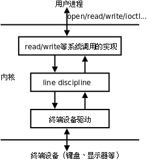
硬件驱动程序负责读写实际的硬件设备，比如从键盘读入字符和把字符输出到显示器，线路规程像一个过滤器，对于某些特殊字符并不是让它直接通过，而是做特殊处理，比如在键盘上按下 Ctrl-Z，对应的字符并不会被用户程序的 read 读到，而是被线路规程截获，解释成 SIGTSTP 信号发给前台进程，通常会使该进程停止。线路规程应该过滤哪些字符和做哪些特殊处理是可以配置的。
终端设备有输入和输出队列缓冲区，如下图所示。
图 34.2. 终端缓冲

以输入队列为例，从键盘输入的字符经线路规程过滤后进入输入队列，用户程序以先进先出的顺序从队列中读取字符，一般情况下，当输入队列满的时候再输入字符会丢失，同时系统会响铃警报。终端可以配置成回显（Echo）模式，在这种模式下，输入队列中的每个字符既送给用户程序也送给输出队列，因此我们在命令行键入字符时，该字符不仅可以被程序读取，我们也可以同时在屏幕上看到该字符的回显。
现在我们来看终端登录的过程：
-
系统启动时，
init进程根据配置文件/etc/inittab确定需要打开哪些终端。例如配置文件中有这样一行：1:2345:respawn:/sbin/getty 9600 tty1和
/etc/passwd类似，每个字段用:号隔开。开头的1是这一行配置的 id，通常要和tty的后缀一致，配置tty2的那一行 id 就应该是2。第二个字段2345表示运行级别 2 ~ 5 都执行这个配置。最后一个字段/sbin/getty 9600 tty1是init进程要fork/exec的命令，打开终端/dev/tty1，波特率是 9600（波特率只对串口和 Modem 终端有意义），然后提示用户输入帐号。中间的respawn字段表示init进程会监视getty进程的运行状态，一旦该进程终止，init会再次fork/exec这个命令，所以我们从终端退出登录后会再次提示输入帐号。有些新的 Linux 发行版已经不用
/etc/inittab这个配置文件了，例如 Ubuntu 用/etc/event.d目录下的配置文件来配置init。 -
getty根据命令行参数打开终端设备作为它的控制终端，把文件描述符 0、1、2 都指向控制终端，然后提示用户输入帐号。用户输入帐号之后，getty的任务就完成了，它再执行login程序：execle("/bin/login", "login", "-p", username, NULL, envp); -
login程序提示用户输入密码（输入密码期间关闭终端的回显），然后验证帐号密码的正确性。如果密码不正确，login进程终止，init会重新fork/exec一个getty进程。如果密码正确，login程序设置一些环境变量，设置当前工作目录为该用户的主目录，然后执行 Shell：execl("/bin/bash", "-bash", NULL);注意
argv[0]参数的程序名前面加了一个-，这样bash就知道自己是作为登录 Shell 启动的，执行登录 Shell 的启动脚本。从getty开始exec到login，再exec到bash，其实都是同一个进程，因此控制终端没变，文件描述符 0、1、2 也仍然指向控制终端。由于fork会复制 PCB 信息，所以由 Shell 启动的其它进程也都是如此。
1.3. 网络登录过程
虚拟终端或串口终端的数目是有限的，虚拟终端一般就是 /dev/tty1 ~ /dev/tty6 六个，串口终端的数目也不超过串口的数目。然而网络终端或图形终端窗口的数目却是不受限制的，这是通过伪终端（Pseudo TTY）实现的。一套伪终端由一个主设备（PTY Master）和一个从设备（PTY Slave）组成。主设备在概念上相当于键盘和显示器，只不过它不是真正的硬件而是一个内核模块，操作它的也不是用户而是另外一个进程。从设备和上面介绍的 /dev/tty1 这样的终端设备模块类似，只不过它的底层驱动程序不是访问硬件而是访问主设备。通过例 34.1 「查看终端对应的设备文件名」的实验结果可以看到，网络终端或图形终端窗口的 Shell 进程以及它启动的其它进程都会认为自己的控制终端是伪终端从设备，例如 /dev/pts/0、/dev/pts/1 等。下面以 telnet 为例说明网络登录和使用伪终端的过程。
图 34.3. 伪终端
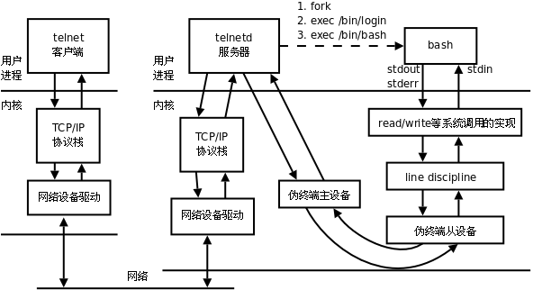
-
用户通过
telnet客户端连接服务器。如果服务器配置为独立（Standalone）模式，则在服务器监听连接请求是一个telnetd进程，它fork出一个telnetd子进程来服务客户端，父进程仍监听其它连接请求。另外一种可能是服务器端由系统服务程序
inetd或xinetd监听连接请求，inetd称为 Internet Super-Server，它监听系统中的多个网络服务端口，如果连接请求的端口号和telnet服务端口号一致，则fork/exec一个telnetd子进程来服务客户端。xinetd是inetd的升级版本，配置更为灵活。 -
telnetd子进程打开一个伪终端设备，然后再经过fork一分为二：父进程操作伪终端主设备，子进程将伪终端从设备作为它的控制终端，并且将文件描述符 0、1、2 指向控制终端，二者通过伪终端通信，父进程还负责和telnet客户端通信，而子进程负责用户的登录过程，提示输入帐号，然后调用exec变成login进程，提示输入密码，然后调用exec变成 Shell 进程。这个 Shell 进程认为自己的控制终端是伪终端从设备，伪终端主设备可以看作键盘显示器等硬件，而操作这个伪终端的「用户」就是父进程telnetd。 -
当用户输入命令时，
telnet客户端将用户输入的字符通过网络发给telnetd服务器，由telnetd服务器代表用户将这些字符输入伪终端。Shell 进程并不知道自己连接的是伪终端而不是真正的键盘显示器，也不知道操作终端的「用户」其实是telnetd服务器而不是真正的用户。Shell 仍然解释执行命令，将标准输出和标准错误输出写到终端设备，这些数据最终由telnetd服务器发回给telnet客户端，然后显示给用户看。如果
telnet客户端和服务器之间的网络延迟较大，我们会观察到按下一个键之后要过几秒钟才能回显到屏幕上。这说明我们每按一个键telnet客户端都会立刻把该字符发送给服务器，然后这个字符经过伪终端主设备和从设备之后被 Shell 进程读取，同时回显到伪终端从设备，回显的字符再经过伪终端主设备、telnetd服务器和网络发回给telnet客户端，显示给用户看。也许你会觉得吃惊，但真的是这样：每按一个键都要在网络上走个来回！BSD 系列的 UNIX 在
/dev目录下创建很多ptyXX和ttyXX设备文件，XX由字母和数字组成，ptyXX是主设备，相对应的ttyXX是从设备，伪终端的数目取决于内核配置。而在 SYS V 系列的 UNIX 上，伪终端主设备是/dev/ptmx，「mx」表示 Multiplex，意思是多个主设备复用同一个设备文件，每打开一次/dev/ptmx，内核就分配一个主设备，同时在/dev/pts目录下创建一个从设备文件，当终端关闭时就从/dev/pts目录下删除相应的从设备文件。Linux 同时支持上述两种伪终端，目前的标准倾向于 SYS V 的伪终端。
2. 作业控制
2.1. Session 与进程组
在第 33 章「信号」第 1 节「信号的基本概念」中我说过「Shell 可以同时运行一个前台进程和任意多个后台进程」其实是不全面的，现在我们来研究更复杂的情况。事实上，Shell 分前后台来控制的不是进程而是作业（Job）或者进程组（Process Group）。一个前台作业可以由多个进程组成，一个后台作业也可以由多个进程组成，Shell 可以同时运行一个前台作业和任意多个后台作业，这称为作业控制（Job Control）。例如用以下命令启动 5 个进程（这个例子出自 APUE2e）：
$ proc1 | proc2 &
$ proc3 | proc4 | proc5
其中 proc1 和 proc2 属于同一个后台进程组，proc3、proc4、proc5 属于同一个前台进程组，Shell 进程本身属于一个单独的进程组。这些进程组的控制终端相同，它们属于同一个 Session。当用户在控制终端输入特殊的控制键（例如 Ctrl-C）时，内核会发送相应的信号（例如 SIGINT）给前台进程组的所有进程。各进程、进程组、Session 的关系如下图所示。
图 34.4. Session 与进程组
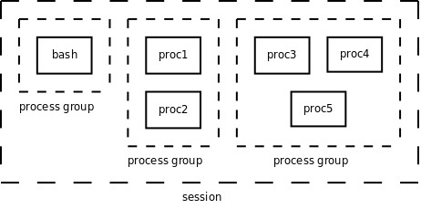
现在我们从 Session 和进程组的角度重新来看登录和执行命令的过程。
-
getty或telnetd进程在打开终端设备之前调用setsid函数创建一个新的 Session，该进程称为 Session Leader，该进程的 id 也可以看作 Session 的 id，然后该进程打开终端设备作为这个 Session 中所有进程的控制终端。在创建新 Session 的同时也创建了一个新的进程组，该进程是这个进程组的 Process Group Leader，该进程的 id 也是进程组的 id。 -
在登录过程中，
getty或telnetd进程变成login，然后变成 Shell，但仍然是同一个进程，仍然是 Session Leader。 -
由 Shell 进程
fork出的子进程本来具有和 Shell 相同的 Session、进程组和控制终端，但是 Shell 调用setpgid函数将作业中的某个子进程指定为一个新进程组的 Leader，然后调用setpgid将该作业中的其它子进程也转移到这个进程组中。如果这个进程组需要在前台运行，就调用tcsetpgrp函数将它设置为前台进程组，由于一个 Session 只能有一个前台进程组，所以 Shell 所在的进程组就自动变成后台进程组。在上面的例子中，
proc3、proc4、proc5被 Shell 放到同一个前台进程组，其中有一个进程是该进程组的 Leader，Shell 调用wait等待它们运行结束。一旦它们全部运行结束，Shell 就调用tcsetpgrp函数将自己提到前台继续接受命令。但是注意，如果proc3、proc4、proc5中的某个进程又fork出子进程，子进程也属于同一进程组，但是 Shell 并不知道子进程的存在，也不会调用wait等待它结束。换句话说，proc3 | proc4 | proc5是 Shell 的作业，而这个子进程不是，这是作业和进程组在概念上的区别。一旦作业运行结束，Shell 就把自己提到前台，如果原来的前台进程组还存在（如果这个子进程还没终止），则它自动变成后台进程组（回顾一下第 30 章「进程」例 30.3「fork」）。
下面看两个例子。
$ ps -o pid,ppid,pgrp,session,tpgid,comm | cat
PID PPID PGRP SESS TPGID COMMAND
6994 6989 6994 6994 8762 bash
8762 6994 8762 6994 8762 ps
8763 6994 8762 6994 8762 cat
这个作业由 ps 和 cat 两个进程组成，在前台运行。从 PPID 列可以看出这两个进程的父进程是 bash。从 PGRP 列可以看出，bash 在 id 为 6994 的进程组中，这个 id 等于 bash 的进程 id，所以它是进程组的 Leader，而两个子进程在 id 为 8762 的进程组中，ps 是这个进程组的 Leader。从 SESS 可以看出三个进程都在同一 Session 中，bash 是 Session Leader。从 TPGID 可以看出，前台进程组的 id 是 8762，也就是两个子进程所在的进程组。
$ ps -o pid,ppid,pgrp,session,tpgid,comm | cat &
[1] 8835
$ PID PPID PGRP SESS TPGID COMMAND
6994 6989 6994 6994 6994 bash
8834 6994 8834 6994 6994 ps
8835 6994 8834 6994 6994 cat
这个作业由 ps 和 cat 两个进程组成，在后台运行，bash 不等作业结束就打印提示信息 [1] 8835 然后给出提示符接受新的命令，[1] 是作业的编号，如果同时运行多个作业可以用这个编号区分，8835 是该作业中某个进程的 id。请读者自己分析 ps 命令的输出结果。
2.2. 与作业控制有关的信号
我们通过实验来理解与作业控制有关的信号。
$ cat &
[1] 9386
$ （再次回车）
[1]+ Stopped cat
将 cat 放到后台运行，由于 cat 需要读标准输入（也就是终端输入），而后台进程是不能读终端输入的，因此内核发 SIGTTIN 信号给进程，该信号的默认处理动作是使进程停止。
$ jobs
[1]+ Stopped cat
$ fg %1
cat
hello（回车）
hello
^Z
[1]+ Stopped cat
jobs 命令可以查看当前有哪些作业。fg 命令可以将某个作业提至前台运行，如果该作业的进程组正在后台运行则提至前台运行，如果该作业处于停止状态，则给进程组的每个进程发 SIGCONT 信号使它继续运行。参数 %1 表示将第 1 个作业提至前台运行。cat 提到前台运行后，挂起等待终端输入，当输入 hello 并回车后，cat 打印出同样的一行，然后继续挂起等待输入。如果输入 Ctrl-Z 则向所有前台进程发 SIGTSTP 信号，该信号的默认动作是使进程停止。
$ bg %1
[1]+ cat &
[1]+ Stopped cat
bg 命令可以让某个停止的作业在后台继续运行，也需要给该作业的进程组的每个进程发 SIGCONT 信号。cat 进程继续运行，又要读终端输入，然而它在后台不能读终端输入，所以又收到 SIGTTIN 信号而停止。
$ ps
PID TTY TIME CMD
6994 pts/0 00:00:05 bash
11022 pts/0 00:00:00 cat
11023 pts/0 00:00:00 ps
$ kill 11022
$ ps
PID TTY TIME CMD
6994 pts/0 00:00:05 bash
11022 pts/0 00:00:00 cat
11024 pts/0 00:00:00 ps
$ fg %1
cat
Terminated
用 kill 命令给一个停止的进程发 SIGTERM 信号，这个信号并不会立刻处理，而要等进程准备继续运行之前处理，默认动作是终止进程。但如果给一个停止的进程发 SIGKILL 信号就不同了。
$ cat &
[1] 11121
$ ps
PID TTY TIME CMD
6994 pts/0 00:00:05 bash
11121 pts/0 00:00:00 cat
11122 pts/0 00:00:00 ps
[1]+ Stopped cat
$ kill -KILL 11121
[1]+ Killed cat
SIGKILL 信号既不能被阻塞也不能被忽略，也不能用自定义函数捕捉，只能按系统的默认动作立刻处理。与此类似的还有 SIGSTOP 信号，给一个进程发 SIGSTOP 信号会使进程停止，这个默认的处理动作不能改变。这样保证了不管什么样的进程都能用 SIGKILL 终止或者用 SIGSTOP 停止，当系统出现异常时管理员总是有办法杀掉有问题的进程或者暂时停掉怀疑有问题的进程。
上面讲了如果后台进程试图从控制终端读，会收到 SIGTTIN 信号而停止，如果试图向控制终端写呢？通常是允许写的。如果觉得后台进程向控制终端输出信息干扰了用户使用终端，可以设置一个终端选项禁止后台进程写。
$ cat testfile &
[1] 11426
$ hello
[1]+ Done cat testfile
$ stty tostop
$ cat testfile &
[1] 11428
[1]+ Stopped cat testfile
$ fg %1
cat testfile
hello
首先用 stty 命令设置终端选项，禁止后台进程写，然后启动一个后台进程准备往终端写，这时进程收到一个 SIGTTOU 信号，默认处理动作也是停止进程。
3. 守护进程
Linux 系统启动时会启动很多系统服务进程，例如第 1.3 节「网络登录过程」讲的 inetd，这些系统服务进程没有控制终端，不能直接和用户交互。其它进程都是在用户登录或运行程序时创建，在运行结束或用户注销时终止，但系统服务进程不受用户登录注销的影响，它们一直在运行着。这种进程有一个名称叫守护进程（Daemon）。
下面我们用 ps axj 命令查看系统中的进程。参数 a 表示不仅列当前用户的进程，也列出所有其他用户的进程，参数 x 表示不仅列有控制终端的进程，也列出所有无控制终端的进程，参数 j 表示列出与作业控制相关的信息。
$ ps axj
PPID PID PGID SID TTY TPGID STAT UID TIME COMMAND
0 1 1 1 ? -1 Ss 0 0:01 /sbin/init
0 2 0 0 ? -1 S< 0 0:00 [kthreadd]
2 3 0 0 ? -1 S< 0 0:00 [migration/0]
2 4 0 0 ? -1 S< 0 0:00 [ksoftirqd/0]
...
1 2373 2373 2373 ? -1 S<s 0 0:00 /sbin/udevd --daemon
...
1 4680 4680 4680 ? -1 Ss 0 0:00 /usr/sbin/acpid -c /etc
...
1 4808 4808 4808 ? -1 Ss 102 0:00 /sbin/syslogd -u syslog
...
凡是 TPGID 一栏写着 -1 的都是没有控制终端的进程，也就是守护进程。在 COMMAND 一列用 [] 括起来的名字表示内核线程，这些线程在内核里创建，没有用户空间代码，因此没有程序文件名和命令行，通常采用以 k 开头的名字，表示 Kernel。init 进程我们已经很熟悉了，udevd 负责维护 /dev 目录下的设备文件，acpid 负责电源管理，syslogd 负责维护 /var/log 下的日志文件，可以看出，守护进程通常采用以 d 结尾的名字，表示 Daemon。
创建守护进程最关键的一步是调用 setsid 函数创建一个新的 Session，并成为 Session Leader。
#include <unistd.h>
pid_t setsid(void);
该函数调用成功时返回新创建的 Session 的 id（其实也就是当前进程的 id），出错返回 -1。注意，调用这个函数之前，当前进程不允许是进程组的 Leader，否则该函数返回 -1。要保证当前进程不是进程组的 Leader 也很容易，只要先 fork 再调用 setsid 就行了。fork 创建的子进程和父进程在同一个进程组中，进程组的 Leader 必然是该组的第一个进程，所以子进程不可能是该组的第一个进程，在子进程中调用 setsid 就不会有问题了。
成功调用该函数的结果是：
- 创建一个新的 Session，当前进程成为 Session Leader，当前进程的 id 就是 Session 的 id。
- 创建一个新的进程组，当前进程成为进程组的 Leader，当前进程的 id 就是进程组的id。
- 如果当前进程原本有一个控制终端，则它失去这个控制终端，成为一个没有控制终端的进程。所谓失去控制终端是指，原来的控制终端仍然是打开的，仍然可以读写，但只是一个普通的打开文件而不是控制终端了。
例 34.2. 创建守护进程
#include <stdlib.h>
#include <stdio.h>
#include <fcntl.h>
void daemonize(void)
{
pid_t pid;
/*
* Become a session leader to lose controlling TTY.
*/
if ((pid = fork()) < 0) {
perror("fork");
exit(1);
} else if (pid != 0) /* parent */
exit(0);
setsid();
/*
* Change the current working directory to the root.
*/
if (chdir("/") < 0) {
perror("chdir");
exit(1);
}
/*
* Attach file descriptors 0, 1, and 2 to /dev/null.
*/
close(0);
open("/dev/null", O_RDWR);
dup2(0, 1);
dup2(0, 2);
}
int main(void)
{
daemonize();
while(1);
}
为了确保调用 setsid 的进程不是进程组的 Leader，首先 fork 出一个子进程，父进程退出，然后子进程调用 setsid 创建新的 Session，成为守护进程。按照守护进程的惯例，通常将当前工作目录切换到根目录，将文件描述符 0、1、2 重定向到 /dev/null。Linux 也提供了一个库函数 daemon(3) 实现我们的 daemonize 函数的功能，它带两个参数指示要不要切换工作目录到根目录，以及要不要把文件描述符 0、1、2 重定向到 /dev/null。
$ ./a.out
$ ps
PID TTY TIME CMD
11494 pts/0 00:00:00 bash
13271 pts/0 00:00:00 ps
$ ps xj | grep a.out
1 13270 13270 13270 ? -1 Rs 1000 0:05 ./a.out
11494 13273 13272 11494 pts/0 13272 S+ 1000 0:00 grep a.out
（关闭终端窗口重新打开，或者注销重新登录）
$ ps xj | grep a.out
1 13270 13270 13270 ? -1 Rs 1000 0:21 ./a.out
13282 13338 13337 13282 pts/1 13337 S+ 1000 0:00 grep a.out
$ kill 13270
运行这个程序，它变成一个守护进程，不再和当前终端关联。用 ps 命令看不到，必须运行带 x 参数的 ps 命令才能看到。另外还可以看到，用户关闭终端窗口或注销也不会影响守护进程的运行。
第 35 章 线程
1. 线程的概念
我们知道，进程在各自独立的地址空间中运行，进程之间共享数据需要用 mmap 或者进程间通信机制，本节我们学习如何在一个进程的地址空间中执行多个线程。有些情况需要在一个进程中同时执行多个控制流程，这时候线程就派上了用场，比如实现一个图形界面的下载软件，一方面需要和用户交互，等待和处理用户的鼠标键盘事件，另一方面又需要同时下载多个文件，等待和处理从多个网络主机发来的数据，这些任务都需要一个「等待-处理」的循环，可以用多线程实现，一个线程专门负责与用户交互，另外几个线程每个线程负责和一个网络主机通信。
以前我们讲过，main 函数和信号处理函数是同一个进程地址空间中的多个控制流程，多线程也是如此，但是比信号处理函数更加灵活，信号处理函数的控制流程只是在信号递达时产生，在处理完信号之后就结束，而多线程的控制流程可以长期并存，操作系统会在各线程之间调度和切换，就像在多个进程之间调度和切换一样。由于同一进程的多个线程共享同一地址空间，因此 Text Segment、Data Segment 是共享的，如果定义一个函数，在各线程中都可以调用，如果定义一个全局变量，在各线程中都可以访问到，除此之外，各线程还共享以下进程资源和环境：
- 文件描述符表
- 每种信号的处理方式（
SIG_IGN、SIG_DFL或者自定义的信号处理函数） - 当前工作目录
- 用户 id 和组 id
但有些资源是每个线程各有一份的：
- 线程 id
- 上下文，包括各种寄存器的值、程序计数器和栈指针
- 栈空间
errno变量- 信号屏蔽字
- 调度优先级
我们将要学习的线程库函数是由 POSIX 标准定义的，称为 POSIX thread 或者 pthread。在 Linux 上线程函数位于 libpthread 共享库中，因此在编译时要加上 -lpthread 选项。
2. 线程控制
2.1. 创建线程
#include <pthread.h>
int pthread_create(pthread_t *restrict thread,
const pthread_attr_t *restrict attr,
void *(*start_routine)(void*), void *restrict arg);
返回值：成功返回 0，失败返回错误号。以前学过的系统函数都是成功返回 0，失败返回 -1，而错误号保存在全局变量 errno 中，而 pthread 库的函数都是通过返回值返回错误号，虽然每个线程也都有一个 errno，但这是为了兼容其它函数接口而提供的，pthread 库本身并不使用它，通过返回值返回错误码更加清晰。
在一个线程中调用 pthread_create() 创建新的线程后，当前线程从 pthread_create() 返回继续往下执行，而新的线程所执行的代码由我们传给 pthread_create 的函数指针 start_routine 决定。start_routine 函数接收一个参数，是通过 pthread_create 的 arg 参数传递给它的，该参数的类型为 void *，这个指针按什么类型解释由调用者自己定义。start_routine 的返回值类型也是 void *，这个指针的含义同样由调用者自己定义。start_routine 返回时，这个线程就退出了，其它线程可以调用 pthread_join 得到 start_routine 的返回值，类似于父进程调用 wait(2) 得到子进程的退出状态，稍后详细介绍 pthread_join。
pthread_create 成功返回后，新创建的线程的id被填写到 thread 参数所指向的内存单元。我们知道进程 id 的类型是 pid_t，每个进程的 id 在整个系统中是唯一的，调用 getpid(2) 可以获得当前进程的 id，是一个正整数值。线程 id 的类型是 thread_t，它只在当前进程中保证是唯一的，在不同的系统中 thread_t 这个类型有不同的实现，它可能是一个整数值，也可能是一个结构体，也可能是一个地址，所以不能简单地当成整数用 printf 打印，调用 pthread_self(3) 可以获得当前线程的 id。
attr 参数表示线程属性，本章不深入讨论线程属性，所有代码例子都传 NULL 给 attr 参数，表示线程属性取缺省值，感兴趣的读者可以参考 APUE2e。首先看一个简单的例子：
#include <stdio.h>
#include <string.h>
#include <stdlib.h>
#include <pthread.h>
#include <unistd.h>
pthread_t ntid;
void printids(const char *s)
{
pid_t pid;
pthread_t tid;
pid = getpid();
tid = pthread_self();
printf("%s pid %u tid %u (0x%x)\n", s, (unsigned int)pid,
(unsigned int)tid, (unsigned int)tid);
}
void *thr_fn(void *arg)
{
printids(arg);
return NULL;
}
int main(void)
{
int err;
err = pthread_create(&ntid, NULL, thr_fn, "new thread: ");
if (err != 0) {
fprintf(stderr, "can't create thread: %s\n", strerror(err));
exit(1);
}
printids("main thread:");
sleep(1);
return 0;
}
编译运行结果如下：
$ gcc main.c -lpthread
$ ./a.out
main thread: pid 7398 tid 3084450496 (0xb7d8fac0)
new thread: pid 7398 tid 3084446608 (0xb7d8eb90)
可知在 Linux 上，thread_t 类型是一个地址值，属于同一进程的多个线程调用 getpid(2) 可以得到相同的进程号，而调用 pthread_self(3) 得到的线程号各不相同。
由于 pthread_create 的错误码不保存在 errno 中，因此不能直接用 perror(3) 打印错误信息，可以先用 strerror(3) 把错误码转换成错误信息再打印。
如果任意一个线程调用了 exit 或 _exit，则整个进程的所有线程都终止，由于从 main 函数 return 也相当于调用 exit，为了防止新创建的线程还没有得到执行就终止，我们在 main 函数 return 之前延时 1 秒，这只是一种权宜之计，即使主线程等待 1 秒，内核也不一定会调度新创建的线程执行，下一节我们会看到更好的办法。
思考题：主线程在一个全局变量 ntid 中保存了新创建的线程的 id，如果新创建的线程不调用 pthread_self 而是直接打印这个 ntid，能不能达到同样的效果？
2.2. 终止线程
如果需要只终止某个线程而不终止整个进程，可以有三种方法：
- 从线程函数
return。这种方法对主线程不适用，从main函数return相当于调用exit。 - 一个线程可以调用
pthread_cancel终止同一进程中的另一个线程。 - 线程可以调用
pthread_exit终止自己。
用 pthread_cancel 终止一个线程分同步和异步两种情况，比较复杂，本章不打算详细介绍，读者可以参考 APUE2e。下面介绍 pthread_exit 的和 pthread_join 的用法。
#include <pthread.h>
void pthread_exit(void *value_ptr);
value_ptr 是 void * 类型，和线程函数返回值的用法一样，其它线程可以调用 pthread_join 获得这个指针。
需要注意，pthread_exit 或者 return 返回的指针所指向的内存单元必须是全局的或者是用 malloc 分配的，不能在线程函数的栈上分配，因为当其它线程得到这个返回指针时线程函数已经退出了。
#include <pthread.h>
int pthread_join(pthread_t thread, void **value_ptr);
返回值：成功返回 0，失败返回错误号
调用该函数的线程将挂起等待，直到 id 为 thread 的线程终止。thread 线程以不同的方法终止，通过 pthread_join 得到的终止状态是不同的，总结如下：
- 如果
thread线程通过return返回，value_ptr所指向的单元里存放的是thread线程函数的返回值。 - 如果
thread线程被别的线程调用pthread_cancel异常终止掉，value_ptr所指向的单元里存放的是常数PTHREAD_CANCELED。 - 如果
thread线程是自己调用pthread_exit终止的，value_ptr所指向的单元存放的是传给pthread_exit的参数。
如果对 thread 线程的终止状态不感兴趣，可以传 NULL 给 value_ptr 参数。
看下面的例子（省略了出错处理）：
#include <stdio.h>
#include <stdlib.h>
#include <pthread.h>
#include <unistd.h>
void *thr_fn1(void *arg)
{
printf("thread 1 returning\n");
return (void *)1;
}
void *thr_fn2(void *arg)
{
printf("thread 2 exiting\n");
pthread_exit((void *)2);
}
void *thr_fn3(void *arg)
{
while(1) {
printf("thread 3 writing\n");
sleep(1);
}
}
int main(void)
{
pthread_t tid;
void *tret;
pthread_create(&tid, NULL, thr_fn1, NULL);
pthread_join(tid, &tret);
printf("thread 1 exit code %d\n", (int)tret);
pthread_create(&tid, NULL, thr_fn2, NULL);
pthread_join(tid, &tret);
printf("thread 2 exit code %d\n", (int)tret);
pthread_create(&tid, NULL, thr_fn3, NULL);
sleep(3);
pthread_cancel(tid);
pthread_join(tid, &tret);
printf("thread 3 exit code %d\n", (int)tret);
return 0;
}
运行结果是：
$ ./a.out
thread 1 returning
thread 1 exit code 1
thread 2 exiting
thread 2 exit code 2
thread 3 writing
thread 3 writing
thread 3 writing
thread 3 exit code -1
可见在 Linux 的 pthread 库中常数 PTHREAD_CANCELED 的值是 -1。可以在头文件 pthread.h 中找到它的定义：
#define PTHREAD_CANCELED ((void *) -1)
一般情况下，线程终止后，其终止状态一直保留到其它线程调用 pthread_join 获取它的状态为止。但是线程也可以被置为 detach 状态，这样的线程一旦终止就立刻回收它占用的所有资源，而不保留终止状态。不能对一个已经处于 detach 状态的线程调用 pthread_join，这样的调用将返回 EINVAL。对一个尚未 detach 的线程调用 pthread_join 或 pthread_detach 都可以把该线程置为 detach 状态，也就是说，不能对同一线程调用两次 pthread_join，或者如果已经对一个线程调用了 pthread_detach 就不能再调用 pthread_join 了。
#include <pthread.h>
int pthread_detach(pthread_t tid);
返回值：成功返回 0，失败返回错误号。
3. 线程间同步
3.1. mutex
多个线程同时访问共享数据时可能会冲突，这跟前面讲信号时所说的可重入性是同样的问题。比如两个线程都要把某个全局变量增加 1，这个操作在某平台需要三条指令完成：
- 从内存读变量值到寄存器
- 寄存器的值加 1
- 将寄存器的值写回内存
假设两个线程在多处理器平台上同时执行这三条指令，则可能导致下图所示的结果，最后变量只加了一次而非两次。
图 35.1. 并行访问冲突

思考一下，如果这两个线程在单处理器平台上执行，能够避免这样的问题吗？
我们通过一个简单的程序观察这一现象。上图所描述的现象从理论上是存在这种可能的，但实际运行程序时很难观察到，为了使现象更容易观察到，我们把上述三条指令做的事情用更多条指令来做：
val = counter;
printf("%x: %d\n", (unsigned int)pthread_self(), val + 1);
counter = val + 1;
我们在「读取变量的值」和「把变量的新值保存回去」这两步操作之间插入一个 printf 调用，它会执行 write 系统调用进内核，为内核调度别的线程执行提供了一个很好的时机。我们在一个循环中重复上述操作几千次，就会观察到访问冲突的现象。
#include <stdio.h>
#include <stdlib.h>
#include <pthread.h>
#define NLOOP 5000
int counter; /* incremented by threads */
void *doit(void *);
int main(int argc, char **argv)
{
pthread_t tidA, tidB;
pthread_create(&tidA, NULL, &doit, NULL);
pthread_create(&tidB, NULL, &doit, NULL);
/* wait for both threads to terminate */
pthread_join(tidA, NULL);
pthread_join(tidB, NULL);
return 0;
}
void *doit(void *vptr)
{
int i, val;
/*
* Each thread fetches, prints, and increments the counter NLOOP times.
* The value of the counter should increase monotonically.
*/
for (i = 0; i < NLOOP; i++) {
val = counter;
printf("%x: %d\n", (unsigned int)pthread_self(), val + 1);
counter = val + 1;
}
return NULL;
}
我们创建两个线程，各自把 counter 增加 5000 次，正常情况下最后 counter 应该等于 10000，但事实上每次运行该程序的结果都不一样，有时候数到 5000 多，有时候数到 6000 多。
$ ./a.out
b76acb90: 1
b76acb90: 2
b76acb90: 3
b76acb90: 4
b76acb90: 5
b7eadb90: 1
b7eadb90: 2
b7eadb90: 3
b7eadb90: 4
b7eadb90: 5
b76acb90: 6
b76acb90: 7
b7eadb90: 6
b76acb90: 8
...
对于多线程的程序，访问冲突的问题是很普遍的，解决的办法是引入互斥锁（Mutex，Mutual Exclusive Lock），获得锁的线程可以完成「读-修改-写」的操作，然后释放锁给其它线程，没有获得锁的线程只能等待而不能访问共享数据，这样「读-修改-写」三步操作组成一个原子操作，要么都执行，要么都不执行，不会执行到中间被打断，也不会在其它处理器上并行做这个操作。
Mutex 用 pthread_mutex_t 类型的变量表示，可以这样初始化和销毁：
#include <pthread.h>
int pthread_mutex_destroy(pthread_mutex_t *mutex);
int pthread_mutex_init(pthread_mutex_t *restrict mutex,
const pthread_mutexattr_t *restrict attr);
pthread_mutex_t mutex = PTHREAD_MUTEX_INITIALIZER;
返回值：成功返回 0，失败返回错误号。
pthread_mutex_init 函数对 Mutex 做初始化，参数 attr 设定 Mutex 的属性，如果 attr 为 NULL 则表示缺省属性，本章不详细介绍 Mutex 属性，感兴趣的读者可以参考 APUE2e。用 pthread_mutex_init 函数初始化的 Mutex 可以用 pthread_mutex_destroy 销毁。如果 Mutex 变量是静态分配的（全局变量或 static 变量），也可以用宏定义 PTHREAD_MUTEX_INITIALIZER 来初始化，相当于用 pthread_mutex_init 初始化并且 attr 参数为 NULL。Mutex 的加锁和解锁操作可以用下列函数：
#include <pthread.h>
int pthread_mutex_lock(pthread_mutex_t *mutex);
int pthread_mutex_trylock(pthread_mutex_t *mutex);
int pthread_mutex_unlock(pthread_mutex_t *mutex);
返回值：成功返回 0，失败返回错误号。
一个线程可以调用 pthread_mutex_lock 获得 Mutex，如果这时另一个线程已经调用 pthread_mutex_lock 获得了该 Mutex，则当前线程需要挂起等待，直到另一个线程调用 pthread_mutex_unlock 释放 Mutex，当前线程被唤醒，才能获得该 Mutex 并继续执行。
如果一个线程既想获得锁，又不想挂起等待，可以调用 pthread_mutex_trylock，如果 Mutex 已经被另一个线程获得，这个函数会失败返回 EBUSY，而不会使线程挂起等待。
现在我们用 Mutex 解决先前的问题：
#include <stdio.h>
#include <stdlib.h>
#include <pthread.h>
#define NLOOP 5000
int counter; /* incremented by threads */
pthread_mutex_t counter_mutex = PTHREAD_MUTEX_INITIALIZER;
void *doit(void *);
int main(int argc, char **argv)
{
pthread_t tidA, tidB;
pthread_create(&tidA, NULL, doit, NULL);
pthread_create(&tidB, NULL, doit, NULL);
/* wait for both threads to terminate */
pthread_join(tidA, NULL);
pthread_join(tidB, NULL);
return 0;
}
void *doit(void *vptr)
{
int i, val;
/*
* Each thread fetches, prints, and increments the counter NLOOP times.
* The value of the counter should increase monotonically.
*/
for (i = 0; i < NLOOP; i++) {
pthread_mutex_lock(&counter_mutex);
val = counter;
printf("%x: %d\n", (unsigned int)pthread_self(), val + 1);
counter = val + 1;
pthread_mutex_unlock(&counter_mutex);
}
return NULL;
}
这样运行结果就正常了，每次运行都能数到 10000。
看到这里，读者一定会好奇：Mutex 的两个基本操作 lock 和 unlock 是如何实现的呢？假设 Mutex 变量的值为 1 表示互斥锁空闲，这时某个进程调用 lock 可以获得锁，而 Mutex 的值为 0 表示互斥锁已经被某个线程获得，其它线程再调用 lock 只能挂起等待。那么 lock 和 unlock 的伪代码如下：
lock:
if(mutex > 0){
mutex = 0;
return 0;
} else
挂起等待;
goto lock;
unlock:
mutex = 1;
唤醒等待 Mutex 的线程;
return 0;
unlock 操作中唤醒等待线程的步骤可以有不同的实现，可以只唤醒一个等待线程，也可以唤醒所有等待该 Mutex 的线程，然后让被唤醒的这些线程去竞争获得这个 Mutex，竞争失败的线程继续挂起等待。
细心的读者应该已经看出问题了：对 Mutex 变量的读取、判断和修改不是原子操作。如果两个线程同时调用 lock，这时 Mutex 是 1，两个线程都判断 mutex>0 成立，然后其中一个线程置 mutex=0，而另一个线程并不知道这一情况，也置 mutex=0，于是两个线程都以为自己获得了锁。
为了实现互斥锁操作，大多数体系结构都提供了 swap 或 exchange 指令，该指令的作用是把寄存器和内存单元的数据相交换，由于只有一条指令，保证了原子性，即使是多处理器平台，访问内存的总线周期也有先后，一个处理器上的交换指令执行时另一个处理器的交换指令只能等待总线周期。现在我们把 lock 和 unlock 的伪代码改一下（以 x86 的 xchg 指令为例）：
lock:
movb $0, %al
xchgb %al, mutex
if(al 寄存器的内容 > 0){
return 0;
} else
挂起等待;
goto lock;
unlock:
movb $1, mutex
唤醒等待 Mutex 的线程;
return 0;
unlock 中的释放锁操作同样只用一条指令实现，以保证它的原子性。
也许还有读者好奇，「挂起等待」和「唤醒等待线程」的操作如何实现？每个 Mutex 有一个等待队列，一个线程要在 Mutex 上挂起等待，首先在把自己加入等待队列中，然后置线程状态为睡眠，然后调用调度器函数切换到别的线程。一个线程要唤醒等待队列中的其它线程，只需从等待队列中取出一项，把它的状态从睡眠改为就绪，加入就绪队列，那么下次调度器函数执行时就有可能切换到被唤醒的线程。
一般情况下，如果同一个线程先后两次调用 lock，在第二次调用时，由于锁已经被占用，该线程会挂起等待别的线程释放锁，然而锁正是被自己占用着的，该线程又被挂起而没有机会释放锁，因此就永远处于挂起等待状态了，这叫做死锁（Deadlock）。另一种典型的死锁情形是这样：线程 A 获得了锁 1，线程 B 获得了锁 2，这时线程 A 调用 lock 试图获得锁 2，结果是需要挂起等待线程 B 释放锁 2，而这时线程 B 也调用 lock 试图获得锁 1，结果是需要挂起等待线程 A 释放锁 1，于是线程 A 和 B 都永远处于挂起状态了。不难想象，如果涉及到更多的线程和更多的锁，有没有可能死锁的问题将会变得复杂和难以判断。
写程序时应该尽量避免同时获得多个锁，如果一定有必要这么做，则有一个原则：如果所有线程在需要多个锁时都按相同的先后顺序（常见的是按 Mutex 变量的地址顺序）获得锁，则不会出现死锁。比如一个程序中用到锁1、锁2、锁3，它们所对应的 Mutex 变量的地址是锁1<锁2<锁3，那么所有线程在需要同时获得 2 个或 3 个锁时都应该按锁1、锁2、锁3 的顺序获得。如果要为所有的锁确定一个先后顺序比较困难，则应该尽量使用 pthread_mutex_trylock 调用代替 pthread_mutex_lock 调用，以免死锁。
3.2. Condition Variable
线程间的同步还有这样一种情况：线程 A 需要等某个条件成立才能继续往下执行，现在这个条件不成立，线程 A 就阻塞等待，而线程 B 在执行过程中使这个条件成立了，就唤醒线程 A 继续执行。在 pthread 库中通过条件变量（Condition Variable）来阻塞等待一个条件，或者唤醒等待这个条件的线程。Condition Variable 用 pthread_cond_t 类型的变量表示，可以这样初始化和销毁：
#include <pthread.h>
int pthread_cond_destroy(pthread_cond_t *cond);
int pthread_cond_init(pthread_cond_t *restrict cond,
const pthread_condattr_t *restrict attr);
pthread_cond_t cond = PTHREAD_COND_INITIALIZER;
返回值：成功返回 0，失败返回错误号。
和 Mutex 的初始化和销毁类似，pthread_cond_init 函数初始化一个 Condition Variable，attr 参数为 NULL 则表示缺省属性，pthread_cond_destroy 函数销毁一个 Condition Variable。如果 Condition Variable 是静态分配的，也可以用宏定义 PTHEAD_COND_INITIALIZER 初始化，相当于用 pthread_cond_init 函数初始化并且 attr 参数为 NULL。Condition Variable 的操作可以用下列函数：
#include <pthread.h>
int pthread_cond_timedwait(pthread_cond_t *restrict cond,
pthread_mutex_t *restrict mutex,
const struct timespec *restrict abstime);
int pthread_cond_wait(pthread_cond_t *restrict cond,
pthread_mutex_t *restrict mutex);
int pthread_cond_broadcast(pthread_cond_t *cond);
int pthread_cond_signal(pthread_cond_t *cond);
返回值：成功返回 0，失败返回错误号。
可见，一个 Condition Variable 总是和一个 Mutex 搭配使用的。一个线程可以调用 pthread_cond_wait 在一个 Condition Variable 上阻塞等待，这个函数做以下三步操作：
- 释放 Mutex
- 阻塞等待
- 当被唤醒时，重新获得 Mutex 并返回
pthread_cond_timedwait 函数还有一个额外的参数可以设定等待超时，如果到达了 abstime 所指定的时刻仍然没有别的线程来唤醒当前线程，就返回 ETIMEDOUT。一个线程可以调用 pthread_cond_signal 唤醒在某个 Condition Variable 上等待的另一个线程，也可以调用 pthread_cond_broadcast 唤醒在这个 Condition Variable 上等待的所有线程。
下面的程序演示了一个生产者-消费者的例子，生产者生产一个结构体串在链表的表头上，消费者从表头取走结构体。
#include <stdlib.h>
#include <pthread.h>
#include <stdio.h>
struct msg {
struct msg *next;
int num;
};
struct msg *head;
pthread_cond_t has_product = PTHREAD_COND_INITIALIZER;
pthread_mutex_t lock = PTHREAD_MUTEX_INITIALIZER;
void *consumer(void *p)
{
struct msg *mp;
for (;;) {
pthread_mutex_lock(&lock);
while (head == NULL)
pthread_cond_wait(&has_product, &lock);
mp = head;
head = mp->next;
pthread_mutex_unlock(&lock);
printf("Consume %d\n", mp->num);
free(mp);
sleep(rand() % 5);
}
}
void *producer(void *p)
{
struct msg *mp;
for (;;) {
mp = malloc(sizeof(struct msg));
mp->num = rand() % 1000 + 1;
printf("Produce %d\n", mp->num);
pthread_mutex_lock(&lock);
mp->next = head;
head = mp;
pthread_mutex_unlock(&lock);
pthread_cond_signal(&has_product);
sleep(rand() % 5);
}
}
int main(int argc, char *argv[])
{
pthread_t pid, cid;
srand(time(NULL));
pthread_create(&pid, NULL, producer, NULL);
pthread_create(&cid, NULL, consumer, NULL);
pthread_join(pid, NULL);
pthread_join(cid, NULL);
return 0;
}
执行结果如下：
$ ./a.out
Produce 744
Consume 744
Produce 567
Produce 881
Consume 881
Produce 911
Consume 911
Consume 567
Produce 698
Consume 698
习题
- 在本节的例子中，生产者和消费者访问链表的顺序是 LIFO 的，请修改程序，把访问顺序改成 FIFO。
3.3. Semaphore
Mutex 变量是非 0 即 1 的，可看作一种资源的可用数量，初始化时 Mutex 是 1，表示有一个可用资源，加锁时获得该资源，将 Mutex 减到 0，表示不再有可用资源，解锁时释放该资源，将 Mutex 重新加到 1，表示又有了一个可用资源。
信号量（Semaphore）和 Mutex 类似，表示可用资源的数量，和 Mutex 不同的是这个数量可以大于 1。
本节介绍的是 POSIX semaphore 库函数，详见 sem_overview(7)，这种信号量不仅可用于同一进程的线程间同步，也可用于不同进程间的同步。
#include <semaphore.h>
int sem_init(sem_t *sem, int pshared, unsigned int value);
int sem_wait(sem_t *sem);
int sem_trywait(sem_t *sem);
int sem_post(sem_t * sem);
int sem_destroy(sem_t * sem);
semaphore 变量的类型为 sem_t，sem_init() 初始化一个 semaphore 变量，value 参数表示可用资源的数量，pshared 参数为 0 表示信号量用于同一进程的线程间同步，本节只介绍这种情况。在用完 semaphore 变量之后应该调用 sem_destroy() 释放与 semaphore 相关的资源。
调用 sem_wait() 可以获得资源，使 semaphore 的值减 1，如果调用 sem_wait() 时 semaphore 的值已经是 0，则挂起等待。如果不希望挂起等待，可以调用 sem_trywait()。调用 sem_post() 可以释放资源，使 semaphore 的值加 1，同时唤醒挂起等待的线程。
上一节生产者——消费者的例子是基于链表的，其空间可以动态分配，现在基于固定大小的环形队列重写这个程序：
#include <stdlib.h>
#include <pthread.h>
#include <stdio.h>
#include <semaphore.h>
#define NUM 5
int queue[NUM];
sem_t blank_number, product_number;
void *producer(void *arg)
{
int p = 0;
while (1) {
sem_wait(&blank_number);
queue[p] = rand() % 1000 + 1;
printf("Produce %d\n", queue[p]);
sem_post(&product_number);
p = (p+1)%NUM;
sleep(rand()%5);
}
}
void *consumer(void *arg)
{
int c = 0;
while (1) {
sem_wait(&product_number);
printf("Consume %d\n", queue[c]);
queue[c] = 0;
sem_post(&blank_number);
c = (c+1)%NUM;
sleep(rand()%5);
}
}
int main(int argc, char *argv[])
{
pthread_t pid, cid;
sem_init(&blank_number, 0, NUM);
sem_init(&product_number, 0, 0);
pthread_create(&pid, NULL, producer, NULL);
pthread_create(&cid, NULL, consumer, NULL);
pthread_join(pid, NULL);
pthread_join(cid, NULL);
sem_destroy(&blank_number);
sem_destroy(&product_number);
return 0;
}
习题
- 本节和上一节的例子给出一个重要的提示：用 Condition Variable 可以实现 Semaphore。请用 Condition Variable 实现 Semaphore，然后用自己实现的 Semaphore 重写本节的程序。
3.4. 其它线程间同步机制
如果共享数据是只读的，那么各线程读到的数据应该总是一致的，不会出现访问冲突。只要有一个线程可以改写数据，就必须考虑线程间同步的问题。由此引出了读者写者锁（Reader-Writer Lock）的概念，Reader 之间并不互斥，可以同时读共享数据，而 Writer 是独占的（exclusive），在 Writer 修改数据时其它 Reader 或 Writer 不能访问数据，可见 Reader-Writer Lock 比 Mutex 具有更好的并发性。
用挂起等待的方式解决访问冲突不见得是最好的办法，因为这样毕竟会影响系统的并发性，在某些情况下解决访问冲突的问题可以尽量避免挂起某个线程，例如 Linux 内核的 Seqlock、RCU（read-copy-update）等机制。
关于这些同步机制的细节，有兴趣的读者可以参考 APUE2e。
4. 编程练习
哲学家就餐问题。这是由计算机科学家 Dijkstra 提出的经典死锁场景。
原版的故事里有五个哲学家（不过我们写的程序可以有 N 个哲学家），这些哲学家们只做两件事——思考和吃饭，他们思考的时候不需要任何共享资源，但是吃饭的时候就必须使用餐具，而餐桌上的餐具是有限的，原版的故事里，餐具是叉子，吃饭的时候要用两把叉子把面条从碗里捞出来。很显然把叉子换成筷子会更合理，所以：一个哲学家需要两根筷子才能吃饭。
现在引入问题的关键：这些哲学家很穷，只买得起五根筷子。他们坐成一圈，两个人的中间放一根筷子。哲学家吃饭的时候必须同时得到左手边和右手边的筷子。如果他身边的任何一位正在使用筷子，那他只有等着。
假设哲学家的编号是 A、B、C、D、E，筷子编号是 1、2、3、4、5，哲学家和筷子围成一圈如下图所示：
图 35.2. 哲学家问题
每个哲学家都是一个单独的线程，每个线程循环做以下动作：思考 rand()%10 秒，然后先拿左手边的筷子再拿右手边的筷子（筷子这种资源可以用 mutex 表示），有任何一边拿不到就一直等着，全拿到就吃饭 rand()%10 秒，然后放下筷子。
编写程序仿真哲学家就餐的场景：
Philosopher A fetches chopstick 5
Philosopher B fetches chopstick 1
Philosopher B fetches chopstick 2
Philosopher D fetches chopstick 3
Philosopher B releases chopsticks 1 2
Philosopher A fetches chopstick 1
Philosopher C fetches chopstick 2
Philosopher A releases chopsticks 5 1
...
分析一下，这个过程有没有可能产生死锁？调用 usleep(3) 函数可以实现微秒级的延时，试着用 usleep(3) 加快仿真的速度，看能不能观察到死锁现象。然后修改上述算法避免产生死锁。
第 36 章 TCP/IP 协议基础
1. TCP/IP 协议栈与数据包封装
TCP/IP 网络协议栈分为应用层（Application）、传输层（Transport）、网络层（Network）和链路层（Link）四层。如下图所示（该图出自 TCPIP）。
图 36.1. TCP/IP 协议栈

两台计算机通过 TCP/IP 协议通讯的过程如下所示（该图出自 TCPIP）。
图 36.2. TCP/IP 通讯过程

传输层及其以下的机制由内核提供，应用层由用户进程提供（后面将介绍如何使用 socket API 编写应用程序），应用程序对通讯数据的含义进行解释，而传输层及其以下处理通讯的细节，将数据从一台计算机通过一定的路径发送到另一台计算机。应用层数据通过协议栈发到网络上时，每层协议都要加上一个数据首部（header），称为封装（Encapsulation），如下图所示（该图出自 TCPIP）。
图 36.3. TCP/IP 数据包的封装
不同的协议层对数据包有不同的称谓，在传输层叫做段（segment），在网络层叫做数据报（datagram），在链路层叫做帧（frame）。数据封装成帧后发到传输介质上，到达目的主机后每层协议再剥掉相应的首部，最后将应用层数据交给应用程序处理。
上图对应两台计算机在同一网段中的情况，如果两台计算机在不同的网段中，那么数据从一台计算机到另一台计算机传输过程中要经过一个或多个路由器，如下图所示（该图出自 TCPIP）。
图 36.4. 跨路由器通讯过程

其实在链路层之下还有物理层，指的是电信号的传递方式，比如现在以太网通用的网线（双绞线）、早期以太网采用的的同轴电缆（现在主要用于有线电视）、光纤等都属于物理层的概念。物理层的能力决定了最大传输速率、传输距离、抗干扰性等。集线器（Hub）是工作在物理层的网络设备，用于双绞线的连接和信号中继（将已衰减的信号再次放大使之传得更远）。
链路层有以太网、令牌环网等标准，链路层负责网卡设备的驱动、帧同步（就是说从网线上检测到什么信号算作新帧的开始）、冲突检测（如果检测到冲突就自动重发）、数据差错校验等工作。交换机是工作在链路层的网络设备，可以在不同的链路层网络之间转发数据帧（比如十兆以太网和百兆以太网之间、以太网和令牌环网之间），由于不同链路层的帧格式不同，交换机要将进来的数据包拆掉链路层首部重新封装之后再转发。
网络层的 IP 协议是构成 Internet 的基础。Internet 上的主机通过IP地址来标识，Internet 上有大量路由器负责根据 IP 地址选择合适的路径转发数据包，数据包从 Internet 上的源主机到目的主机往往要经过十多个路由器。路由器是工作在第三层的网络设备，同时兼有交换机的功能，可以在不同的链路层接口之间转发数据包，因此路由器需要将进来的数据包拆掉网络层和链路层两层首部并重新封装。IP 协议不保证传输的可靠性，数据包在传输过程中可能丢失，可靠性可以在上层协议或应用程序中提供支持。
网络层负责点到点（point-to-point）的传输（这里的「点」指主机或路由器），而传输层负责端到端（end-to-end）的传输（这里的「端」指源主机和目的主机）。传输层可选择 TCP 或 UDP 协议。TCP 是一种面向连接的、可靠的协议，有点像打电话，双方拿起电话互通身份之后就建立了连接，然后说话就行了，这边说的话那边保证听得到，并且是按说话的顺序听到的，说完话挂机断开连接。也就是说 TCP 传输的双方需要首先建立连接，之后由 TCP 协议保证数据收发的可靠性，丢失的数据包自动重发，上层应用程序收到的总是可靠的数据流，通讯之后关闭连接。UDP 协议不面向连接，也不保证可靠性，有点像寄信，写好信放到邮筒里，既不能保证信件在邮递过程中不会丢失，也不能保证信件是按顺序寄到目的地的。使用 UDP 协议的应用程序需要自己完成丢包重发、消息排序等工作。
目的主机收到数据包后，如何经过各层协议栈最后到达应用程序呢？整个过程如下图所示（该图出自 TCPIP）。
图 36.5. Multiplexing 过程

以太网驱动程序首先根据以太网首部中的「上层协议」字段确定该数据帧的有效载荷（payload，指除去协议首部之外实际传输的数据）是 IP、ARP 还是 RARP 协议的数据报，然后交给相应的协议处理。假如是 IP 数据报，IP 协议再根据 IP 首部中的「上层协议」字段确定该数据报的有效载荷是 TCP、UDP、ICMP 还是 IGMP，然后交给相应的协议处理。假如是 TCP 段或 UDP 段，TCP 或 UDP 协议再根据 TCP 首部或 UDP 首部的「端口号」字段确定应该将应用层数据交给哪个用户进程。IP 地址是标识网络中不同主机的地址，而端口号就是同一台主机上标识不同进程的地址，IP 地址和端口号合起来标识网络中唯一的进程。
注意，虽然 IP、ARP 和 RARP 数据报都需要以太网驱动程序来封装成帧，但是从功能上划分，ARP 和 RARP 属于链路层，IP 属于网络层。虽然 ICMP、IGMP、TCP、UDP 的数据都需要 IP 协议来封装成数据报，但是从功能上划分，ICMP、IGMP 与 IP 同属于网络层，TCP 和 UDP 属于传输层。本文对 RARP、ICMP、IGMP 协议不做进一步介绍，有兴趣的读者可以看参考资料。
2. 以太网(RFC 894)帧格式
以太网的帧格式如下所示（该图出自 TCPIP）：
图 36.6. 以太网帧格式

其中的源地址和目的地址是指网卡的硬件地址（也叫 MAC 地址），长度是 48 位，是在网卡出厂时固化的。用 ifconfig 命令看一下，「HWaddr 00:15:F2:14:9E:3F」部分就是硬件地址。协议字段有三种值，分别对应 IP、ARP、RARP。帧末尾是 CRC 校验码。
以太网帧中的数据长度规定最小 46 字节，最大 1500 字节，ARP 和 RARP 数据包的长度不够 46 字节，要在后面补填充位。最大值 1500 称为以太网的最大传输单元（MTU），不同的网络类型有不同的 MTU，如果一个数据包从以太网路由到拨号链路上，数据包长度大于拨号链路的 MTU 了，则需要对数据包进行分片（fragmentation）。ifconfig 命令的输出中也有「MTU:1500」。注意，MTU 这个概念指数据帧中有效载荷的最大长度，不包括帧首部的长度。
3. ARP 数据报格式
在网络通讯时，源主机的应用程序知道目的主机的 IP 地址和端口号，却不知道目的主机的硬件地址，而数据包首先是被网卡接收到再去处理上层协议的，如果接收到的数据包的硬件地址与本机不符，则直接丢弃。因此在通讯前必须获得目的主机的硬件地址。ARP 协议就起到这个作用。源主机发出 ARP 请求，询问「IP 地址是 192.168.0.1 的主机的硬件地址是多少」，并将这个请求广播到本地网段（以太网帧首部的硬件地址填 FF:FF:FF:FF:FF:FF 表示广播），目的主机接收到广播的 ARP 请求，发现其中的 IP 地址与本机相符，则发送一个 ARP 应答数据包给源主机，将自己的硬件地址填写在应答包中。
每台主机都维护一个 ARP 缓存表，可以用 arp -a 命令查看。缓存表中的表项有过期时间（一般为 20 分钟），如果 20 分钟内没有再次使用某个表项，则该表项失效，下次还要发 ARP 请求来获得目的主机的硬件地址。想一想，为什么表项要有过期时间而不是一直有效？
ARP 数据报的格式如下所示（该图出自 TCPIP）：
图 36.7. ARP 数据报格式
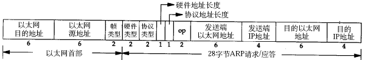
注意到源 MAC 地址、目的 MAC 地址在以太网首部和 ARP 请求中各出现一次，对于链路层为以太网的情况是多余的，但如果链路层是其它类型的网络则有可能是必要的。硬件类型指链路层网络类型，1 为以太网，协议类型指要转换的地址类型，0x0800 为 IP 地址，后面两个地址长度对于以太网地址和 IP 地址分别为 6 和 4（字节），op 字段为 1 表示 ARP 请求，op 字段为 2 表示 ARP 应答。
下面举一个具体的例子。
请求帧如下（为了清晰在每行的前面加了字节计数，每行 16 个字节）：
以太网首部（14 字节）
0000: ff ff ff ff ff ff 00 05 5d 61 58 a8 08 06
ARP帧（28 字节）
0000: 00 01
0010: 08 00 06 04 00 01 00 05 5d 61 58 a8 c0 a8 00 37
0020: 00 00 00 00 00 00 c0 a8 00 02
填充位（18 字节）
0020: 00 77 31 d2 50 10
0030: fd 78 41 d3 00 00 00 00 00 00 00 00
以太网首部：目的主机采用广播地址，源主机的 MAC 地址是 00:05:5d:61:58:a8，上层协议类型 0x0806 表示 ARP。
ARP 帧：硬件类型 0x0001 表示以太网，协议类型 0x0800 表示 IP 协议，硬件地址（MAC 地址）长度为 6，协议地址（IP 地址）长度为 4，op 为 0x0001 表示请求目的主机的 MAC 地址，源主机 MAC 地址为 00:05:5d:61:58:a8，源主机 IP 地址为 c0 a8 00 37（192.168.0.55），目的主机 MAC地址全 0 待填写，目的主机 IP 地址为 c0 a8 00 02（192.168.0.2）。
由于以太网规定最小数据长度为 46 字节，ARP 帧长度只有 28 字节，因此有 18 字节填充位，填充位的内容没有定义，与具体实现相关。
应答帧如下：
以太网首部
0000: 00 05 5d 61 58 a8 00 05 5d a1 b8 40 08 06
ARP 帧
0000: 00 01
0010: 08 00 06 04 00 02 00 05 5d a1 b8 40 c0 a8 00 02
0020: 00 05 5d 61 58 a8 c0 a8 00 37
填充位
0020: 00 77 31 d2 50 10
0030: fd 78 41 d3 00 00 00 00 00 00 00 00
以太网首部：目的主机的 MAC 地址是 00:05:5d:61:58:a8，源主机的 MAC 地址是 00:05:5d:a1:b8:40，上层协议类型 0x0806 表示 ARP。
ARP 帧：硬件类型 0x0001 表示以太网，协议类型 0x0800 表示 IP 协议，硬件地址（MAC 地址）长度为 6，协议地址（IP 地址）长度为 4，op 为 0x0002 表示应答，源主机 MAC 地址为 00:05:5d:a1:b8:40，源主机 IP 地址为 c0 a8 00 02（192.168.0.2），目的主机 MAC 地址为 00:05:5d:61:58:a8，目的主机 IP 地址为 c0 a8 00 37（192.168.0.55）。
思考题
如果源主机和目的主机不在同一网段，ARP 请求的广播帧无法穿过路由器，源主机如何与目的主机通信？
4. IP 数据报格式
IP 数据报的格式如下（这里只讨论 IPv4）（该图出自 TCPIP）：
图 36.8. IP 数据报格式

IP 数据报的首部长度和数据长度都是可变长的，但总是 4 字节的整数倍。对于 IPv4，4 位版本字段是 4。4 位首部长度的数值是以 4 字节为单位的，最小值为 5，也就是说首部长度最小是 4x5=20 字节，也就是不带任何选项的 IP 首部，4 位能表示的最大值是 15，也就是说首部长度最大是 60 字节。8 位 TOS 字段有 3 个位用来指定 IP 数据报的优先级（目前已经废弃不用），还有 4 个位表示可选的服务类型（最小延迟、最大呑吐量、最大可靠性、最小成本），还有一个位总是 0。总长度是整个数据报（包括 IP 首部和 IP 层 payload）的字节数。每传一个 IP 数据报，16 位的标识加 1，可用于分片和重新组装数据报。3 位标志和 13 位片偏移用于分片。TTL（Time to live）是这样用的：源主机为数据包设定一个生存时间，比如 64，每过一个路由器就把该值减 1，如果减到 0 就表示路由已经太长了仍然找不到目的主机的网络，就丢弃该包，因此这个生存时间的单位不是秒，而是跳（hop）。协议字段指示上层协议是 TCP、UDP、ICMP 还是 IGMP。然后是校验和，只校验 IP 首部，数据的校验由更高层协议负责。IPv4 的 IP 地址长度为 32 位。选项字段的解释从略。
想一想，前面讲了以太网帧中的最小数据长度为 46 字节，不足 46 字节的要用填充字节补上，那么如何界定这 46 字节里前多少个字节是 IP、ARP 或 RARP 数据报而后面是填充字节？
5. IP 地址与路由
IPv4 的 IP 地址长度为 4 字节，通常采用点分十进制表示法（dotted decimal representation）例如 0xc0a80002 表示为 192.168.0.2。Internet 被各种路由器和网关设备分隔成很多网段，为了标识不同的网段，需要把 32 位的 IP 地址划分成网络号和主机号两部分，网络号相同的各主机位于同一网段，相互间可以直接通信，网络号不同的主机之间通信则需要通过路由器转发。
过去曾经提出一种划分网络号和主机号的方案，把所有 IP 地址分为五类，如下图所示（该图出自 TCPIP）。
图 36.9. IP 地址类

| 类别 | 起始 | 结束 |
|---|---|---|
| B类 | 128.0.0.0 | 191.255.255.255 |
| C类 | 192.0.0.0 | 223.255.255.255 |
| D类 | 224.0.0.0 | 239.255.255.255 |
| E类 | 240.0.0.0 | 247.255.255.255 |
一个 A 类网络可容纳的地址数量最大，一个 B 类网络的地址数量是 65536，一个 C 类网络的地址数量是 256。D 类地址用作多播地址，E 类地址保留未用。
随着 Internet 的飞速发展，这种划分方案的局限性很快显现出来，大多数组织都申请 B 类网络地址，导致 B 类地址很快就分配完了，而 A 类却浪费了大量地址。这种方式对网络的划分是 flat 的而不是层级结构（hierarchical）的，Internet 上的每个路由器都必须掌握所有网络的信息，随着大量 C 类网络的出现，路由器需要检索的路由表越来越庞大，负担越来越重。
针对这种情况提出了新的划分方案，称为 CIDR（Classless Interdomain Routing）。网络号和主机号的划分需要用一个额外的子网掩码（subnet mask）来表示，而不能由IP地址本身的数值决定，也就是说，网络号和主机号的划分与这个 IP 地址是 A 类、B 类还是 C 类无关，因此称为 Classless 的。这样，多个子网就可以汇总（summarize）成一个 Internet 上的网络，例如，有 8 个站点都申请了 C 类网络，本来网络号是 24 位的，但是这 8 个站点通过同一个 ISP（Internet service provider）连到 Internet 上，它们网络号的高 21 位是相同的，只有低三位不同，这 8 个站点就可以汇总，在 Internet 上只需要一个路由表项，数据包通过 Internet 上的路由器到达 ISP，然后在 ISP 这边再通过次级的路由器选路到某个站点。
下面举两个例子：
表 36.1. 划分子网的例子 1
| IP 地址 | 140.252.20.68 | 8C FC 14 44 |
|---|---|---|
| 子网掩码 | 255.255.255.0 | FF FF FF 00 |
| 网络号 | 140.252.20.0 | 8C FC 14 00 |
| 子网地址范围 | 140.252.20.0~140.252.20.255 |
表 36.2. 划分子网的例子 2
| IP 地址 | 140.252.20.68 | 8C FC 14 44 |
|---|---|---|
| 子网掩码 | 255.255.255.240 | FF FF FF F0 |
| 网络号 | 140.252.20.64 | 8C FC 14 40 |
| 子网地址范围 | 140.252.20.64~140.252.20.79 |
可见，IP 地址与子网掩码做与运算可以得到网络号，主机号从全 0 到全 1 就是子网的地址范围。IP 地址和子网掩码还有一种更简洁的表示方法，例如 140.252.20.68/24，表示 IP 地址为 140.252.20.68，子网掩码的高 24 位是 1，也就是 255.255.255.0。
如果一个组织内部组建局域网，IP 地址只用于局域网内的通信，而不直接连到 Internet 上，理论上使用任意的 IP 地址都可以，但是 RFC 1918 规定了用于组建局域网的私有 IP 地址，这些地址不会出现在 Internet 上，如下表所示。
10.*，前 8 位是网络号，共 16,777,216 个地址172.16.*到172.31.*，前 12 位是网络号，共 1,048,576 个地址192.168.*，前 16 位是网络号，共 65,536 个地址
使用私有 IP 地址的局域网主机虽然没有 Internet 的 IP 地址，但也可以通过代理服务器或 NAT（网络地址转换）等技术连到 Internet 上。
除了私有 IP 地址之外，还有几种特殊的 IP 地址。127.* 的 IP 地址用于本机环回（loop back）测试，通常是 127.0.0.1。loopback 是系统中一种特殊的网络设备，如果发送数据包的目的地址是环回地址，或者与本机其它网络设备的 IP 地址相同，则数据包不会发送到网络介质上，而是通过环回设备再发回给上层协议和应用程序，主要用于测试。如下图所示（该图出自 TCPIP）。
图 36.10. loopback 设备
还有一些不能用作主机 IP 地址的特殊地址：
- 目的地址为 255.255.255.255，表示本网络内部广播，路由器不转发这样的广播数据包。
- 主机号全为 0 的地址只表示网络而不能表示某个主机，如 192.168.10.0（假设子网掩码为 255.255.255.0）。
- 目的地址的主机号为全 1，表示广播至某个网络的所有主机，例如目的地址 192.168.10.255 表示广播至 192.168.10.0 网络（假设子网掩码为 255.255.255.0）。
下面介绍路由的过程，首先正式定义几个名词：
- 路由（名词）：数据包从源地址到目的地址所经过的路径，由一系列路由节点组成。
- 路由（动词）：某个路由节点为数据报选择投递方向的选路过程。
- 路由节点：一个具有路由能力的主机或路由器，它维护一张路由表，通过查询路由表来决定向哪个接口发送数据包。
- 接口：路由节点与某个网络相连的网卡接口。
- 路由表：由很多路由条目组成，每个条目都指明去往某个网络的数据包应该经由哪个接口发送，其中最后一条是缺省路由条目。
- 路由条目：路由表中的一行，每个条目主要由目的网络地址、子网掩码、下一跳地址、发送接口四部分组成，如果要发送的数据包的目的网络地址匹配路由表中的某一行，就按规定的接口发送到下一跳地址。
- 缺省路由条目：路由表中的最后一行，主要由下一跳地址和发送接口两部分组成，当目的地址与路由表中其它行都不匹配时，就按缺省路由条目规定的接口发送到下一跳地址。
假设某主机上的网络接口配置和路由表如下：
$ ifconfig
eth0 Link encap:Ethernet HWaddr 00:0C:29:C2:8D:7E
inet addr:192.168.10.223 Bcast:192.168.10.255 Mask:255.255.255.0
UP BROADCAST RUNNING MULTICAST MTU:1500 Metric:1
RX packets:0 errors:0 dropped:0 overruns:0 frame:0
TX packets:10 errors:0 dropped:0 overruns:0 carrier:0
collisions:0 txqueuelen:100
RX bytes:0 (0.0 b) TX bytes:420 (420.0 b)
Interrupt:10 Base address:0x10a0
eth1 Link encap:Ethernet HWaddr 00:0C:29:C2:8D:88
inet addr:192.168.56.136 Bcast:192.168.56.255 Mask:255.255.255.0
UP BROADCAST RUNNING MULTICAST MTU:1500 Metric:1
RX packets:603 errors:0 dropped:0 overruns:0 frame:0
TX packets:110 errors:0 dropped:0 overruns:0 carrier:0
collisions:0 txqueuelen:100
RX bytes:55551 (54.2 Kb) TX bytes:7601 (7.4 Kb)
Interrupt:9 Base address:0x10c0
lo Link encap:Local Loopback
inet addr:127.0.0.1 Mask:255.0.0.0
UP LOOPBACK RUNNING MTU:16436 Metric:1
RX packets:37 errors:0 dropped:0 overruns:0 frame:0
TX packets:37 errors:0 dropped:0 overruns:0 carrier:0
collisions:0 txqueuelen:0
RX bytes:3020 (2.9 Kb) TX bytes:3020 (2.9 Kb)
$ route
Kernel IP routing table
Destination Gateway Genmask Flags Metric Ref Use Iface
192.168.10.0 * 255.255.255.0 U 0 0 0 eth0
192.168.56.0 * 255.255.255.0 U 0 0 0 eth1
127.0.0.0 * 255.0.0.0 U 0 0 0 lo
default 192.168.10.1 0.0.0.0 UG 0 0 0 eth0
这台主机有两个网络接口，一个网络接口连到 192.168.10.0/24 网络，另一个网络接口连到 192.168.56.0/24 网络。路由表的 Destination 是目的网络地址，Genmask 是子网掩码，Gateway 是下一跳地址，Iface 是发送接口，Flags 中的 U 标志表示此条目有效（可以禁用某些条目），G 标志表示此条目的下一跳地址是某个路由器的地址，没有 G 标志的条目表示目的网络地址是与本机接口直接相连的网络，不必经路由器转发，因此下一跳地址处记为 * 号。
如果要发送的数据包的目的地址是 192.168.56.3，跟第一行的子网掩码做与运算得到 192.168.56.0，与第一行的目的网络地址不符，再跟第二行的子网掩码做与运算得到 192.168.56.0，正是第二行的目的网络地址，因此从 eth1 接口发送出去，由于 192.168.56.0/24 正是与 eth1 接口直接相连的网络，因此可以直接发到目的主机，不需要经路由器转发。
如果要发送的数据包的目的地址是 202.10.1.2，跟前三行路由表条目都不匹配，那么就要按缺省路由条目，从 eth0 接口发出去，首先发往 192.168.10.1 路由器，再让路由器根据它的路由表决定下一跳地址。
6. UDP 段格式
下图是 UDP 的段格式（该图出自 TCPIP）。
图 36.11. UDP 段格式

下面分析一帧基于 UDP 的 TFTP 协议帧。
以太网首部
0000: 00 05 5d 67 d0 b1 00 05 5d 61 58 a8 08 00
IP首部
0000: 45 00
0010: 00 53 93 25 00 00 80 11 25 ec c0 a8 00 37 c0 a8
0020: 00 01
UDP首部
0020： 05 d4 00 45 00 3f ac 40
TFTP协议
0020: 00 01 'c'':''\''q'
0030: 'w''e''r''q''.''q''w''e'00 'n''e''t''a''s''c''i'
0040: 'i'00 'b''l''k''s''i''z''e'00 '5''1''2'00 't''i'
0050: 'm''e''o''u''t'00 '1''0'00 't''s''i''z''e'00 '0'
0060: 00
以太网首部：源 MAC 地址是 00:05:5d:61:58:a8，目的 MAC 地址是 00:05:5d:67:d0:b1，上层协议类型 0x0800 表示 IP。
IP 首部：每一个字节 0x45 包含 4 位版本号和 4 位首部长度，版本号为 4，即 IPv4，首部长度为 5，说明 IP 首部不带有选项字段。服务类型为 0，没有使用服务。16 位总长度字段（包括 IP 首部和 IP 层 payload 的长度）为 0x0053，即 83 字节，加上以太网首部 14 字节可知整个帧长度是 97 字节。IP 报标识是 0x9325，标志字段和片偏移字段设置为 0x0000，就是 DF=0 允许分片，MF=0 此数据报没有更多分片，没有分片偏移。TTL 是 0x80，也就是 128。上层协议 0x11 表示 UDP 协议。IP 首部校验和为 0x25ec，源主机 IP 是 c0 a8 00 37（192.168.0.55），目的主机 IP 是 c0 a8 00 01（192.168.0.1）。
UDP 首部：源端口号 0x05d4（1492）是客户端的端口号，目的端口号 0x0045（69）是 TFTP 服务的 well-known 端口号。UDP 报长度为 0x003f，即 63 字节，包括 UDP 首部和 UDP 层 payload 的长度。UDP 首部和 UDP 层 payload 的校验和为 0xac40。
TFTP 是基于文本的协议，各字段之间用字节 0 分隔，开头的 00 01 表示请求读取一个文件，接下来的各字段是：
c:\qwerq.qwe
netascii
blksize 512
timeout 10
tsize 0
一般的网络通信都是像 TFTP 协议这样，通信的双方分别是客户端和服务器，客户端主动发起请求（上面的例子就是客户端发起的请求帧），而服务器被动地等待、接收和应答请求。客户端的 IP 地址和端口号唯一标识了该主机上的 TFTP 客户端进程，服务器的 IP 地址和端口号唯一标识了该主机上的 TFTP 服务进程，由于客户端是主动发起请求的一方，它必须知道服务器的 IP 地址和 TFTP 服务进程的端口号，所以，一些常见的网络协议有默认的服务器端口，例如 HTTP 服务默认 TCP 协议的 80 端口，FTP 服务默认 TCP 协议的 21 端口，TFTP 服务默认 UDP 协议的 69 端口（如上例所示）。在使用客户端程序时，必须指定服务器的主机名或 IP 地址，如果不明确指定端口号则采用默认端口，请读者查阅 ftp、tftp 等程序的 man page 了解如何指定端口号。/etc/services 中列出了所有 well-known 的服务端口和对应的传输层协议，这是由 IANA（Internet Assigned Numbers Authority）规定的，其中有些服务既可以用 TCP 也可以用 UDP，为了清晰，IANA 规定这样的服务采用相同的 TCP 或 UDP 默认端口号，而另外一些 TCP 和 UDP 的相同端口号却对应不同的服务。
很多服务有 well-known 的端口号，然而客户端程序的端口号却不必是 well-known 的，往往是每次运行客户端程序时由系统自动分配一个空闲的端口号，用完就释放掉，称为 ephemeral 的端口号，想想这是为什么。
前面提过，UDP 协议不面向连接，也不保证传输的可靠性，例如：
- 发送端的 UDP 协议层只管把应用层传来的数据封装成段交给 IP 协议层就算完成任务了，如果因为网络故障该段无法发到对方，UDP 协议层也不会给应用层返回任何错误信息。
- 接收端的 UDP 协议层只管把收到的数据根据端口号交给相应的应用程序就算完成任务了，如果发送端发来多个数据包并且在网络上经过不同的路由，到达接收端时顺序已经错乱了，UDP 协议层也不保证按发送时的顺序交给应用层。
- 通常接收端的 UDP 协议层将收到的数据放在一个固定大小的缓冲区中等待应用程序来提取和处理，如果应用程序提取和处理的速度很慢，而发送端发送的速度很快，就会丢失数据包，UDP 协议层并不报告这种错误。
因此，使用 UDP 协议的应用程序必须考虑到这些可能的问题并实现适当的解决方案，例如等待应答、超时重发、为数据包编号、流量控制等。一般使用 UDP 协议的应用程序实现都比较简单，只是发送一些对可靠性要求不高的消息，而不发送大量的数据。例如，基于 UDP 的 TFTP 协议一般只用于传送小文件（所以才叫 trivial 的 ftp），而基于 TCP 的 FTP 协议适用于各种文件的传输。下面看 TCP 协议如何用面向连接的服务来代替应用程序解决传输的可靠性问题。
7. TCP协议
7.1. 段格式
TCP 的段格式如下图所示（该图出自 TCPIP）。
图 36.12. TCP 段格式
和 UDP 协议一样也有源端口号和目的端口号，通讯的双方由 IP 地址和端口号标识。32 位序号、32 位确认序号、窗口大小稍后详细解释。4 位首部长度和 IP 协议头类似，表示 TCP 协议头的长度，以 4 字节为单位，因此 TCP 协议头最长可以是 4x15=60 字节，如果没有选项字段，TCP 协议头最短 20 字节。URG、ACK、PSH、RST、SYN、FIN 是六个控制位，本节稍后将解释 SYN、ACK、FIN、RST 四个位，其它位的解释从略。16 位检验和将 TCP 协议头和数据都计算在内。紧急指针和各种选项的解释从略。
7.2. 通讯时序
下图是一次 TCP 通讯的时序图。
图 36.13. TCP 连接建立断开
在这个例子中，首先客户端主动发起连接、发送请求，然后服务器端响应请求，然后客户端主动关闭连接。两条竖线表示通讯的两端，从上到下表示时间的先后顺序，注意，数据从一端传到网络的另一端也需要时间，所以图中的箭头都是斜的。双方发送的段按时间顺序编号为 1-10，各段中的主要信息在箭头上标出，例如段 2 的箭头上标着 SYN, 8000(0), ACK 1001, <mss 1024>，表示该段中的 SYN 位置 1，32 位序号是 8000，该段不携带有效载荷（数据字节数为 0），ACK 位置 1，32 位确认序号是 1001，带有一个 mss 选项值为 1024。
建立连接的过程：
- 客户端发出段 1，SYN 位表示连接请求。序号是 1000，这个序号在网络通讯中用作临时的地址，每发一个数据字节，这个序号要加 1，这样在接收端可以根据序号排出数据包的正确顺序，也可以发现丢包的情况，另外，规定 SYN 位和 FIN 位也要占一个序号，这次虽然没发数据，但是由于发了 SYN 位，因此下次再发送应该用序号 1001。mss 表示最大段尺寸，如果一个段太大，封装成帧后超过了链路层的最大帧长度，就必须在 IP 层分片，为了避免这种情况，客户端声明自己的最大段尺寸，建议服务器端发来的段不要超过这个长度。
- 服务器发出段 2，也带有 SYN 位，同时置 ACK 位表示确认，确认序号是 1001，表示「我接收到序号 1000 及其以前所有的段，请你下次发送序号为 1001 的段」，也就是应答了客户端的连接请求，同时也给客户端发出一个连接请求，同时声明最大尺寸为 1024。
- 客户端发出段 3，对服务器的连接请求进行应答，确认序号是 8001。
在这个过程中，客户端和服务器分别给对方发了连接请求，也应答了对方的连接请求，其中服务器的请求和应答在一个段中发出，因此一共有三个段用于建立连接，称为「三方握手（three-way-handshake）」。在建立连接的同时，双方协商了一些信息，例如双方发送序号的初始值、最大段尺寸等。
在 TCP 通讯中，如果一方收到另一方发来的段，读出其中的目的端口号，发现本机并没有任何进程使用这个端口，就会应答一个包含 RST 位的段给另一方。例如，服务器并没有任何进程使用 8080 端口，我们却用 telnet 客户端去连接它，服务器收到客户端发来的 SYN 段就会应答一个 RST 段，客户端的 telnet 程序收到 RST 段后报告错误 Connection refused：
$ telnet 192.168.0.200 8080
Trying 192.168.0.200...
telnet: Unable to connect to remote host: Connection refused
数据传输的过程：
- 客户端发出段 4，包含从序号 1001 开始的 20 个字节数据。
- 服务器发出段 5，确认序号为 1021，对序号为 1001-1020 的数据表示确认收到，同时请求发送序号 1021 开始的数据，服务器在应答的同时也向客户端发送从序号 8001 开始的 10 个字节数据，这称为 piggyback。
- 客户端发出段 6，对服务器发来的序号为 8001-8010 的数据表示确认收到，请求发送序号 8011开始的数据。
在数据传输过程中，ACK 和确认序号是非常重要的，应用程序交给 TCP协议发送的数据会暂存在 TCP 层的发送缓冲区中，发出数据包给对方之后，只有收到对方应答的 ACK 段才知道该数据包确实发到了对方，可以从发送缓冲区中释放掉了，如果因为网络故障丢失了数据包或者丢失了对方发回的 ACK 段，经过等待超时后 TCP 协议自动将发送缓冲区中的数据包重发。
这个例子只描述了最简单的一问一答的情景，实际的 TCP 数据传输过程可以收发很多数据段，虽然典型的情景是客户端主动请求服务器被动应答，但也不是必须如此，事实上 TCP 协议为应用层提供了全双工（full-duplex）的服务，双方都可以主动甚至同时给对方发送数据。
如果通讯过程只能采用一问一答的方式，收和发两个方向不能同时传输，在同一时间只允许一个方向的数据传输，则称为半双工（half-duplex），假设某种面向连接的协议是半双工的，则只需要一套序号就够了，不需要通讯双方各自维护一套序号，想一想为什么。
关闭连接的过程：
- 客户端发出段 7，FIN 位表示关闭连接的请求。
- 服务器发出段 8，应答客户端的关闭连接请求。
- 服务器发出段 9，其中也包含 FIN 位，向客户端发送关闭连接请求。
- 客户端发出段 10，应答服务器的关闭连接请求。
建立连接的过程是三方握手，而关闭连接通常需要 4 个段，服务器的应答和关闭连接请求通常不合并在一个段中，因为有连接半关闭的情况，这种情况下客户端关闭连接之后就不能再发送数据给服务器了，但是服务器还可以发送数据给客户端，直到服务器也关闭连接为止，稍后会看到这样的例子。
7.3. 流量控制
介绍 UDP 时我们描述了这样的问题：如果发送端发送的速度较快，接收端接收到数据后处理的速度较慢，而接收缓冲区的大小是固定的，就会丢失数据。TCP 协议通过滑动窗口（Sliding Window）机制解决这一问题。看下图的通讯过程。
图 36.14. 滑动窗口
- 发送端发起连接，声明最大段尺寸是 1460，初始序号是 0，窗口大小是 4K，表示「我的接收缓冲区还有 4K 字节空闲，你发的数据不要超过 4K」。接收端应答连接请求，声明最大段尺寸是 1024，初始序号是 8000，窗口大小是 6K。发送端应答，三方握手结束。
- 发送端发出段 4-9，每个段带 1K 的数据，发送端根据窗口大小知道接收端的缓冲区满了，因此停止发送数据。
- 接收端的应用程序提走2K数据，接收缓冲区又有了 2K 空闲，接收端发出段 10，在应答已收到 6K 数据的同时声明窗口大小为 2K。
- 接收端的应用程序又提走 2K 数据，接收缓冲区有 4K 空闲，接收端发出段 11，重新声明窗口大小为 4K。
- 发送端发出段 12-13，每个段带 2K 数据，段 13 同时还包含 FIN 位。
- 接收端应答接收到的 2K 数据（6145-8192），再加上 FIN 位占一个序号 8193，因此应答序号是 8194，连接处于半关闭状态，接收端同时声明窗口大小为 2K。
- 接收端的应用程序提走 2K 数据，接收端重新声明窗口大小为 4K。
- 接收端的应用程序提走剩下的 2K 数据，接收缓冲区全空，接收端重新声明窗口大小为 6K。
- 接收端的应用程序在提走全部数据后，决定关闭连接，发出段 17 包含 FIN 位，发送端应答，连接完全关闭。
上图在接收端用小方块表示 1K 数据，实心的小方块表示已接收到的数据，虚线框表示接收缓冲区，因此套在虚线框中的空心小方块表示窗口大小，从图中可以看出，随着应用程序提走数据，虚线框是向右滑动的，因此称为滑动窗口。
从这个例子还可以看出，发送端是 1K 1K 地发送数据，而接收端的应用程序可以 2K 2K 地提走数据，当然也有可能一次提走 3K 或 6K 数据，或者一次只提走几个字节的数据，也就是说，应用程序所看到的数据是一个整体，或说是一个流（stream），在底层通讯中这些数据可能被拆成很多数据包来发送，但是一个数据包有多少字节对应用程序是不可见的，因此 TCP 协议是面向流的协议。而 UDP 是面向消息的协议，每个 UDP 段都是一条消息，应用程序必须以消息为单位提取数据，不能一次提取任意字节的数据，这一点和 TCP 是很不同的。
第 37 章 socket 编程
socket 这个词可以表示很多概念：
- 在 TCP/IP 协议中，「IP 地址 + TCP 或 UDP 端口号」唯一标识网络通讯中的一个进程，「IP 地址 + 端口号」就称为 socket。
- 在 TCP 协议中，建立连接的两个进程各自有一个 socket 来标识，那么这两个 socket 组成的 socket pair 就唯一标识一个连接。socket 本身有「插座」的意思，因此用来描述网络连接的一对一关系。
- TCP/IP 协议最早在 BSD UNIX 上实现，为 TCP/IP 协议设计的应用层编程接口称为 socket API。
本节的主要内容是 socket API，主要介绍 TCP 协议的函数接口，最后简要介绍 UDP 协议和 UNIX Domain Socket 的函数接口。
1. 预备知识
1.1. 网络字节序
我们已经知道，内存中的多字节数据相对于内存地址有大端和小端之分，磁盘文件中的多字节数据相对于文件中的偏移地址也有大端小端之分。网络数据流同样有大端小端之分，那么如何定义网络数据流的地址呢？发送主机通常将发送缓冲区中的数据按内存地址从低到高的顺序发出，接收主机把从网络上接到的字节依次保存在接收缓冲区中，也是按内存地址从低到高的顺序保存，因此，网络数据流的地址应这样规定：先发出的数据是低地址，后发出的数据是高地址。
TCP/IP 协议规定，网络数据流应采用大端字节序，即低地址高字节。例如上一节的 UDP 段格式，地址 0-1 是 16 位的源端口号，如果这个端口号是 1000（0x3e8），则地址 0 是 0x03，地址 1 是 0xe8，也就是先发 0x03，再发 0xe8，这 16 位在发送主机的缓冲区中也应该是低地址存 0x03，高地址存 0xe8。但是，如果发送主机是小端字节序的，这 16 位被解释成 0xe803，而不是 1000。因此，发送主机把 1000 填到发送缓冲区之前需要做字节序的转换。同样地，接收主机如果是小端字节序的，接到 16 位的源端口号也要做字节序的转换。如果主机是大端字节序的，发送和接收都不需要做转换。同理，32 位的 IP 地址也要考虑网络字节序和主机字节序的问题。
为使网络程序具有可移植性，使同样的 C 代码在大端和小端计算机上编译后都能正常运行，可以调用以下库函数做网络字节序和主机字节序的转换。
#include <arpa/inet.h>
uint32_t htonl(uint32_t hostlong);
uint16_t htons(uint16_t hostshort);
uint32_t ntohl(uint32_t netlong);
uint16_t ntohs(uint16_t netshort);
这些函数名很好记，h 表示 host，n 表示 network，l 表示 32 位长整数，s 表示 16 位短整数。例如 htonl 表示将 32 位的长整数从主机字节序转换为网络字节序，例如将 IP 地址转换后准备发送。如果主机是小端字节序，这些函数将参数做相应的大小端转换然后返回，如果主机是大端字节序，这些函数不做转换，将参数原封不动地返回。
1.2. socket 地址的数据类型及相关函数
socket API 是一层抽象的网络编程接口，适用于各种底层网络协议，如 IPv4、IPv6，以及后面要讲的 UNIX Domain Socket。然而，各种网络协议的地址格式并不相同，如下图所示：
图 37.1. sockaddr 数据结构

IPv4 和 IPv6 的地址格式定义在 netinet/in.h 中，IPv4 地址用 sockaddr_in 结构体表示，包括 16 位端口号和 32 位 IP 地址，IPv6 地址用 sockaddr_in6 结构体表示，包括 16 位端口号、128 位 IP 地址和一些控制字段。UNIX Domain Socket 的地址格式定义在 sys/un.h 中，用 sockaddr_un 结构体表示。各种 socket 地址结构体的开头都是相同的，前 16 位表示整个结构体的长度（并不是所有 UNIX 的实现都有长度字段，如 Linux 就没有），后 16 位表示地址类型。IPv4、IPv6 和 UNIX Domain Socket 的地址类型分别定义为常数 AF_INET、AF_INET6、AF_UNIX。这样，只要取得某种 sockaddr 结构体的首地址，不需要知道具体是哪种类型的 sockaddr 结构体，就可以根据地址类型字段确定结构体中的内容。因此，socket API 可以接受各种类型的 sockaddr 结构体指针做参数，例如 bind、accept、connect 等函数，这些函数的参数应该设计成 void * 类型以便接受各种类型的指针，但是 socket API 的实现早于 ANSI C 标准化，那时还没有 void * 类型，因此这些函数的参数都用 struct sockaddr * 类型表示，在传递参数之前要强制类型转换一下，例如：
struct sockaddr_in servaddr;
/* initialize servaddr */
bind(listen_fd, (struct sockaddr *)&servaddr, sizeof(servaddr));
本节只介绍基于 IPv4 的 socket 网络编程，sockaddr_in 中的成员 struct in_addr sin_addr 表示 32 位的 IP 地址。但是我们通常用点分十进制的字符串表示 IP 地址，以下函数可以在字符串表示和 in_addr 表示之间转换。
字符串转 in_addr 的函数：
#include <arpa/inet.h>
int inet_aton(const char *strptr, struct in_addr *addrptr);
in_addr_t inet_addr(const char *strptr);
int inet_pton(int family, const char *strptr, void *addrptr);
in_addr 转字符串的函数：
char *inet_ntoa(struct in_addr inaddr);
const char *inet_ntop(int family, const void *addrptr, char *strptr, size_t len);
其中 inet_pton 和 inet_ntop 不仅可以转换 IPv4 的 in_addr，还可以转换 IPv6 的 in6_addr，因此函数接口是 void *addrptr。
2. 基于 TCP 协议的网络程序
下图是基于 TCP 协议的客户端/服务器程序的一般流程：
图 37.2. TCP 协议通讯流程

服务器调用 socket()、bind()、listen() 完成初始化后，调用 accept() 阻塞等待，处于监听端口的状态，客户端调用 socket() 初始化后，调用 connect() 发出 SYN 段并阻塞等待服务器应答，服务器应答一个 SYN-ACK 段，客户端收到后从 connect() 返回，同时应答一个 ACK 段，服务器收到后从 accept() 返回。
数据传输的过程：
建立连接后，TCP 协议提供全双工的通信服务，但是一般的客户端/服务器程序的流程是由客户端主动发起请求，服务器被动处理请求，一问一答的方式。因此，服务器从 accept() 返回后立刻调用 read()，读 socket 就像读管道一样，如果没有数据到达就阻塞等待，这时客户端调用 write() 发送请求给服务器，服务器收到后从 read() 返回，对客户端的请求进行处理，在此期间客户端调用 read() 阻塞等待服务器的应答，服务器调用 write() 将处理结果发回给客户端，再次调用 read() 阻塞等待下一条请求，客户端收到后从 read() 返回，发送下一条请求，如此循环下去。
如果客户端没有更多的请求了，就调用 close() 关闭连接，就像写端关闭的管道一样，服务器的 read() 返回 0，这样服务器就知道客户端关闭了连接，也调用 close() 关闭连接。注意，任何一方调用 close() 后，连接的两个传输方向都关闭，不能再发送数据了。如果一方调用 shutdown() 则连接处于半关闭状态，仍可接收对方发来的数据。
在学习 socket API 时要注意应用程序和 TCP 协议层是如何交互的： 应用程序调用某个 socket 函数时 TCP 协议层完成什么动作，比如调用 connect() 会发出 SYN 段，应用程序如何知道 TCP 协议层的状态变化，比如从某个阻塞的 socket 函数返回就表明 TCP 协议收到了某些段，再比如 read() 返回 0 就表明收到了 FIN 段
2.1. 最简单的 TCP 网络程序
下面通过最简单的客户端/服务器程序的实例来学习 socket API。
server.c 的作用是从客户端读字符，然后将每个字符转换为大写并回送给客户端。
/* server.c */
#include <stdio.h>
#include <stdlib.h>
#include <string.h>
#include <unistd.h>
#include <sys/socket.h>
#include <netinet/in.h>
#define MAXLINE 80
#define SERV_PORT 8000
int main(void)
{
struct sockaddr_in servaddr, cliaddr;
socklen_t cliaddr_len;
int listenfd, connfd;
char buf[MAXLINE];
char str[INET_ADDRSTRLEN];
int i, n;
listenfd = socket(AF_INET, SOCK_STREAM, 0);
bzero(&servaddr, sizeof(servaddr));
servaddr.sin_family = AF_INET;
servaddr.sin_addr.s_addr = htonl(INADDR_ANY);
servaddr.sin_port = htons(SERV_PORT);
bind(listenfd, (struct sockaddr *)&servaddr, sizeof(servaddr));
listen(listenfd, 20);
printf("Accepting connections ...\n");
while (1) {
cliaddr_len = sizeof(cliaddr);
connfd = accept(listenfd,
(struct sockaddr *)&cliaddr, &cliaddr_len);
n = read(connfd, buf, MAXLINE);
printf("received from %s at PORT %d\n",
inet_ntop(AF_INET, &cliaddr.sin_addr, str, sizeof(str)),
ntohs(cliaddr.sin_port));
for (i = 0; i < n; i++)
buf[i] = toupper(buf[i]);
write(connfd, buf, n);
close(connfd);
}
}
下面介绍程序中用到的 socket API，这些函数都在 sys/socket.h 中。
int socket(int family, int type, int protocol);
socket() 打开一个网络通讯端口，如果成功的话，就像 open() 一样返回一个文件描述符，应用程序可以像读写文件一样用 read/write 在网络上收发数据，如果 socket() 调用出错则返回 -1。对于 IPv4，family 参数指定为 AF_INET。对于 TCP 协议，type 参数指定为 SOCK_STREAM，表示面向流的传输协议。如果是 UDP 协议，则 type 参数指定为 SOCK_DGRAM，表示面向数据报的传输协议。protocol 参数的介绍从略，指定为 0 即可。
int bind(int sockfd, const struct sockaddr *myaddr, socklen_t addrlen);
服务器程序所监听的网络地址和端口号通常是固定不变的，客户端程序得知服务器程序的地址和端口号后就可以向服务器发起连接，因此服务器需要调用 bind 绑定一个固定的网络地址和端口号。bind() 成功返回 0，失败返回 -1。
bind() 的作用是将参数 sockfd 和 myaddr 绑定在一起，使 sockfd 这个用于网络通讯的文件描述符监听 myaddr 所描述的地址和端口号。前面讲过，struct sockaddr * 是一个通用指针类型，myaddr 参数实际上可以接受多种协议的 sockaddr 结构体，而它们的长度各不相同，所以需要第三个参数 addrlen 指定结构体的长度。我们的程序中对 myaddr 参数是这样初始化的：
bzero(&servaddr, sizeof(servaddr));
servaddr.sin_family = AF_INET;
servaddr.sin_addr.s_addr = htonl(INADDR_ANY);
servaddr.sin_port = htons(SERV_PORT);
首先将整个结构体清零，然后设置地址类型为 AF_INET，网络地址为 INADDR_ANY，这个宏表示本地的任意 IP 地址，因为服务器可能有多个网卡，每个网卡也可能绑定多个 IP 地址，这样设置可以在所有的 IP 地址上监听，直到与某个客户端建立了连接时才确定下来到底用哪个 IP 地址，端口号为 SERV_PORT，我们定义为 8000。
int listen(int sockfd, int backlog);
典型的服务器程序可以同时服务于多个客户端，当有客户端发起连接时，服务器调用的 accept() 返回并接受这个连接，如果有大量的客户端发起连接而服务器来不及处理，尚未 accept 的客户端就处于连接等待状态，listen() 声明 sockfd 处于监听状态，并且最多允许有 backlog 个客户端处于连接待状态，如果接收到更多的连接请求就忽略。listen() 成功返回 0，失败返回 -1。
int accept(int sockfd, struct sockaddr *cliaddr, socklen_t *addrlen);
三方握手完成后，服务器调用 accept() 接受连接，如果服务器调用 accept() 时还没有客户端的连接请求，就阻塞等待直到有客户端连接上来。cliaddr 是一个传出参数，accept() 返回时传出客户端的地址和端口号。addrlen 参数是一个传入传出参数（value-result argument），传入的是调用者提供的缓冲区 cliaddr 的长度以避免缓冲区溢出问题，传出的是客户端地址结构体的实际长度（有可能没有占满调用者提供的缓冲区）。如果给 cliaddr 参数传 NULL，表示不关心客户端的地址。
我们的服务器程序结构是这样的：
while (1) {
cliaddr_len = sizeof(cliaddr);
connfd = accept(listenfd,
(struct sockaddr *)&cliaddr, &cliaddr_len);
n = read(connfd, buf, MAXLINE);
...
close(connfd);
}
整个是一个 while 死循环，每次循环处理一个客户端连接。由于 cliaddr_len 是传入传出参数，每次调用 accept() 之前应该重新赋初值。accept() 的参数 listenfd 是先前的监听文件描述符，而 accept() 的返回值是另外一个文件描述符 connfd，之后与客户端之间就通过这个 connfd 通讯，最后关闭 connfd 断开连接，而不关闭 listenfd，再次回到循环开头 listenfd 仍然用作 accept 的参数。accept() 成功返回一个文件描述符，出错返回 -1。
client.c 的作用是从命令行参数中获得一个字符串发给服务器，然后接收服务器返回的字符串并打印。
/* client.c */
#include <stdio.h>
#include <stdlib.h>
#include <string.h>
#include <unistd.h>
#include <sys/socket.h>
#include <netinet/in.h>
#define MAXLINE 80
#define SERV_PORT 8000
int main(int argc, char *argv[])
{
struct sockaddr_in servaddr;
char buf[MAXLINE];
int sockfd, n;
char *str;
if (argc != 2) {
fputs("usage: ./client message\n", stderr);
exit(1);
}
str = argv[1];
sockfd = socket(AF_INET, SOCK_STREAM, 0);
bzero(&servaddr, sizeof(servaddr));
servaddr.sin_family = AF_INET;
inet_pton(AF_INET, "127.0.0.1", &servaddr.sin_addr);
servaddr.sin_port = htons(SERV_PORT);
connect(sockfd, (struct sockaddr *)&servaddr, sizeof(servaddr));
write(sockfd, str, strlen(str));
n = read(sockfd, buf, MAXLINE);
printf("Response from server:\n");
write(STDOUT_FILENO, buf, n);
close(sockfd);
return 0;
}
由于客户端不需要固定的端口号，因此不必调用 bind()，客户端的端口号由内核自动分配。注意，客户端不是不允许调用 bind()，只是没有必要调用 bind() 固定一个端口号，服务器也不是必须调用 bind()，但如果服务器不调用 bind()，内核会自动给服务器分配监听端口，每次启动服务器时端口号都不一样，客户端要连接服务器就会遇到麻烦。
int connect(int sockfd, const struct sockaddr *servaddr, socklen_t addrlen);
客户端需要调用 connect() 连接服务器，connect 和 bind 的参数形式一致，区别在于 bind 的参数是自己的地址，而 connect 的参数是对方的地址。connect() 成功返回 0，出错返回 -1。
先编译运行服务器:
$ ./server
Accepting connections ...
然后在另一个终端里用 netstat 命令查看：
$ netstat -apn|grep 8000
tcp 0 0 0.0.0.0:8000 0.0.0.0:* LISTEN 8148/server
可以看到 server 程序监听 8000 端口，IP 地址还没确定下来。现在编译运行客户端：
$ ./client abcd
Response from server:
ABCD
回到 server 所在的终端，看看 server 的输出：
$ ./server
Accepting connections ...
received from 127.0.0.1 at PORT 59757
可见客户端的端口号是自动分配的。现在把客户端所连接的服务器 IP 改为其它主机的 IP，试试两台主机的通讯。
再做一个小实验，在客户端的 connect() 代码之后插一个 while(1); 死循环，使客户端和服务器都处于连接中的状态，用 netstat 命令查看：
$ ./server &
[1] 8343
$ Accepting connections ...
./client abcd &
[2] 8344
$ netstat -apn|grep 8000
tcp 0 0 0.0.0.0:8000 0.0.0.0:* LISTEN 8343/server
tcp 0 0 127.0.0.1:44406 127.0.0.1:8000 ESTABLISHED8344/client
tcp 0 0 127.0.0.1:8000 127.0.0.1:44406 ESTABLISHED8343/server
应用程序中的一个 socket 文件描述符对应一个 socket pair，也就是 源地址:源端口号和目的地址:目的端口号，也对应一个 TCP 连接。
表 37.1. client 和 server 的 socket 状态
| socket 文件描述符 | 源地址:源端口号 | 目的地址:目的端口号 | 状态 |
|---|---|---|---|
| server.c 中的 listenfd | 0.0.0.0:8000 | 0.0.0.0:* | LISTEN |
| server.c 中的 connfd | 127.0.0.1:8000 | 127.0.0.1:44406 | ESTABLISHED |
| client.c 中的 sockfd | 127.0.0.1:44406 | 127.0.0.1:8000 | ESTABLISHED |
2.2. 错误处理与读写控制
上面的例子不仅功能简单，而且简单到几乎没有什么错误处理，我们知道，系统调用不能保证每次都成功，必须进行出错处理，这样一方面可以保证程序逻辑正常，另一方面可以迅速得到故障信息。
为使错误处理的代码不影响主程序的可读性，我们把与 socket 相关的一些系统函数加上错误处理代码包装成新的函数，做成一个模块 wrap.c：
#include <stdlib.h>
#include <errno.h>
#include <sys/socket.h>
void perr_exit(const char *s)
{
perror(s);
exit(1);
}
int Accept(int fd, struct sockaddr *sa, socklen_t *salenptr)
{
int n;
again:
if ( (n = accept(fd, sa, salenptr)) < 0) {
if ((errno == ECONNABORTED) || (errno == EINTR))
goto again;
else
perr_exit("accept error");
}
return n;
}
void Bind(int fd, const struct sockaddr *sa, socklen_t salen)
{
if (bind(fd, sa, salen) < 0)
perr_exit("bind error");
}
void Connect(int fd, const struct sockaddr *sa, socklen_t salen)
{
if (connect(fd, sa, salen) < 0)
perr_exit("connect error");
}
void Listen(int fd, int backlog)
{
if (listen(fd, backlog) < 0)
perr_exit("listen error");
}
int Socket(int family, int type, int protocol)
{
int n;
if ( (n = socket(family, type, protocol)) < 0)
perr_exit("socket error");
return n;
}
ssize_t Read(int fd, void *ptr, size_t nbytes)
{
ssize_t n;
again:
if ( (n = read(fd, ptr, nbytes)) == -1) {
if (errno == EINTR)
goto again;
else
return -1;
}
return n;
}
ssize_t Write(int fd, const void *ptr, size_t nbytes)
{
ssize_t n;
again:
if ( (n = write(fd, ptr, nbytes)) == -1) {
if (errno == EINTR)
goto again;
else
return -1;
}
return n;
}
void Close(int fd)
{
if (close(fd) == -1)
perr_exit("close error");
}
慢系统调用 accept、read 和 write 被信号中断时应该重试。connect 虽然也会阻塞，但是被信号中断时不能立刻重试。对于 accept，如果 errno 是 ECONNABORTED，也应该重试。详细解释见参考资料。
TCP 协议是面向流的，read 和 write 调用的返回值往往小于参数指定的字节数。对于 read 调用，如果接收缓冲区中有 20 字节，请求读 100 个字节，就会返回 20。对于 write 调用，如果请求写 100 个字节，而发送缓冲区中只有 20 个字节的空闲位置，那么 write 会阻塞，直到把 100 个字节全部交给发送缓冲区才返回，但如果 socket 文件描述符有 O_NONBLOCK 标志，则 write 不阻塞，直接返回 20。为避免这些情况干扰主程序的逻辑，确保读写我们所请求的字节数，我们实现了两个包装函数 Readn 和 Writen，也放在 wrap.c 中：
ssize_t Readn(int fd, void *vptr, size_t n)
{
size_t nleft;
ssize_t nread;
char *ptr;
ptr = vptr;
nleft = n;
while (nleft > 0) {
if ( (nread = read(fd, ptr, nleft)) < 0) {
if (errno == EINTR)
nread = 0;
else
return -1;
} else if (nread == 0)
break;
nleft -= nread;
ptr += nread;
}
return n - nleft;
}
ssize_t Writen(int fd, const void *vptr, size_t n)
{
size_t nleft;
ssize_t nwritten;
const char *ptr;
ptr = vptr;
nleft = n;
while (nleft > 0) {
if ( (nwritten = write(fd, ptr, nleft)) <= 0) {
if (nwritten < 0 && errno == EINTR)
nwritten = 0;
else
return -1;
}
nleft -= nwritten;
ptr += nwritten;
}
return n;
}
如果应用层协议的各字段长度固定，用 readn 来读是非常方便的。例如设计一种客户端上传文件的协议，规定前 12 字节表示文件名，超过 12 字节的文件名截断，不足 12 字节的文件名用 '\0' 补齐，从第 13 字节开始是文件内容，上传完所有文件内容后关闭连接，服务器可以先调用 readn 读 12 个字节，根据文件名创建文件，然后在一个循环中调用 read 读文件内容并存盘，循环结束的条件是 read 返回 0。
字段长度固定的协议往往不够灵活，难以适应新的变化。比如，以前 DOS 的文件名是 8 字节主文件名加 . 加 3 字节扩展名，不超过 12 字节，但是现代操作系统的文件名可以长得多，12 字节就不够用了。那么制定一个新版本的协议规定文件名字段为 256 字节怎么样？这样又造成很大的浪费，因为大多数文件名都很短，需要用大量的 '\0' 补齐 256 字节，而且新版本的协议和老版本的程序无法兼容，如果已经有很多人在用老版本的程序了，会造成遵循新协议的程序与老版本程序的互操作性（Interoperability）问题。如果新版本的协议要添加新的字段，比如规定前 12 字节是文件名，从 13 到 16 字节是文件类型说明，从第 17 字节开始才是文件内容，同样会造成和老版本的程序无法兼容的问题。
现在重新看看上一节的 TFTP 协议是如何避免上述问题的：TFTP 协议的各字段是可变长的，以 '\0' 为分隔符，文件名可以任意长，再看 blksize 等几个选项字段，TFTP 协议并没有规定从第 m 字节到第 n 字节是 blksize 的值，而是把选项的描述信息「blksize」与它的值「512」一起做成一个可变长的字段，这样，以后添加新的选项仍然可以和老版本的程序兼容（老版本的程序只要忽略不认识的选项就行了）。
因此，常见的应用层协议都是带有可变长字段的，字段之间的分隔符用换行的比用 '\0' 的更常见，例如本节后面要介绍的 HTTP 协议。可变长字段的协议用 Readn 来读就很不方便了，为此我们实现一个类似于 fgets 的 readline 函数，也放在 wrap.c 中：
static ssize_t my_read(int fd, char *ptr)
{
static int read_cnt;
static char *read_ptr;
static char read_buf[100];
if (read_cnt <= 0) {
again:
if ( (read_cnt = read(fd, read_buf, sizeof(read_buf))) < 0) {
if (errno == EINTR)
goto again;
return -1;
} else if (read_cnt == 0)
return 0;
read_ptr = read_buf;
}
read_cnt--;
*ptr = *read_ptr++;
return 1;
}
ssize_t Readline(int fd, void *vptr, size_t maxlen)
{
ssize_t n, rc;
char c, *ptr;
ptr = vptr;
for (n = 1; n < maxlen; n++) {
if ( (rc = my_read(fd, &c)) == 1) {
*ptr++ = c;
if (c == '\n')
break;
} else if (rc == 0) {
*ptr = 0;
return n - 1;
} else
return -1;
}
*ptr = 0;
return n;
}
习题
- 请读者自己写出 wrap.c 的头文件 wrap.h，后面的网络程序代码都要用到这个头文件。
- 修改 server.c 和 client.c，添加错误处理。
2.3. 把 client 改为交互式输入
目前实现的 client 每次运行只能从命令行读取一个字符串发给服务器，再从服务器收回来，现在我们把它改成交互式的，不断从终端接受用户输入并和 server 交互。
/* client.c */
#include <stdio.h>
#include <string.h>
#include <unistd.h>
#include <netinet/in.h>
#include "wrap.h"
#define MAXLINE 80
#define SERV_PORT 8000
int main(int argc, char *argv[])
{
struct sockaddr_in servaddr;
char buf[MAXLINE];
int sockfd, n;
sockfd = Socket(AF_INET, SOCK_STREAM, 0);
bzero(&servaddr, sizeof(servaddr));
servaddr.sin_family = AF_INET;
inet_pton(AF_INET, "127.0.0.1", &servaddr.sin_addr);
servaddr.sin_port = htons(SERV_PORT);
Connect(sockfd, (struct sockaddr *)&servaddr, sizeof(servaddr));
while (fgets(buf, MAXLINE, stdin) != NULL) {
Write(sockfd, buf, strlen(buf));
n = Read(sockfd, buf, MAXLINE);
if (n == 0)
printf("the other side has been closed.\n");
else
Write(STDOUT_FILENO, buf, n);
}
Close(sockfd);
return 0;
}
编译并运行 server 和 client，看看是否达到了你预想的结果。
$ ./client
haha1
HAHA1
haha2
the other side has been closed.
haha3
$
这时 server 仍在运行，但是 client 的运行结果并不正确。原因是什么呢？仔细查看 server.c 可以发现，server 对每个请求只处理一次，应答后就关闭连接，client 不能继续使用这个连接发送数据。但是 client 下次循环时又调用 write 发数据给 server，write 调用只负责把数据交给 TCP 发送缓冲区就可以成功返回了，所以不会出错，而 server 收到数据后应答一个 RST 段，client 收到 RST 段后无法立刻通知应用层，只把这个状态保存在 TCP 协议层。client 下次循环又调用 write 发数据给 server，由于 TCP 协议层已经处于 RST 状态了，因此不会将数据发出，而是发一个 SIGPIPE 信号给应用层，SIGPIPE 信号的缺省处理动作是终止程序，所以看到上面的现象。
为了避免 client 异常退出，上面的代码应该在判断对方关闭了连接后 break 出循环，而不是继续 write。另外，有时候代码中需要连续多次调用 write，可能还来不及调用 read 得知对方已关闭了连接就被 SIGPIPE 信号终止掉了，这就需要在初始化时调用 sigaction 处理 SIGPIPE 信号，如果 SIGPIPE 信号没有导致进程异常退出，write 返回 -1 并且 errno 为 EPIPE。
另外，我们需要修改 server，使它可以多次处理同一客户端的请求。
/* server.c */
#include <stdio.h>
#include <string.h>
#include <netinet/in.h>
#include "wrap.h"
#define MAXLINE 80
#define SERV_PORT 8000
int main(void)
{
struct sockaddr_in servaddr, cliaddr;
socklen_t cliaddr_len;
int listenfd, connfd;
char buf[MAXLINE];
char str[INET_ADDRSTRLEN];
int i, n;
listenfd = Socket(AF_INET, SOCK_STREAM, 0);
bzero(&servaddr, sizeof(servaddr));
servaddr.sin_family = AF_INET;
servaddr.sin_addr.s_addr = htonl(INADDR_ANY);
servaddr.sin_port = htons(SERV_PORT);
Bind(listenfd, (struct sockaddr *)&servaddr, sizeof(servaddr));
Listen(listenfd, 20);
printf("Accepting connections ...\n");
while (1) {
cliaddr_len = sizeof(cliaddr);
connfd = Accept(listenfd,
(struct sockaddr *)&cliaddr, &cliaddr_len);
while (1) {
n = Read(connfd, buf, MAXLINE);
if (n == 0) {
printf("the other side has been closed.\n");
break;
}
printf("received from %s at PORT %d\n",
inet_ntop(AF_INET, &cliaddr.sin_addr, str, sizeof(str)),
ntohs(cliaddr.sin_port));
for (i = 0; i < n; i++)
buf[i] = toupper(buf[i]);
Write(connfd, buf, n);
}
Close(connfd);
}
}
经过上面的修改后，客户端和服务器可以进行多次交互了。我们知道，服务器通常是要同时服务多个客户端的，运行上面的 server 和 client 之后，再开一个终端运行 client 试试，新的 client 能得到服务吗？想想为什么。
2.4. 使用 fork 并发处理多个 client 的请求
怎么解决这个问题？网络服务器通常用 fork 来同时服务多个客户端，父进程专门负责监听端口，每次 accept 一个新的客户端连接就 fork 出一个子进程专门服务这个客户端。但是子进程退出时会产生僵尸进程，父进程要注意处理 SIGCHLD 信号和调用 wait 清理僵尸进程。
以下给出代码框架，完整的代码请读者自己完成。
listenfd = socket(...);
bind(listenfd, ...);
listen(listenfd, ...);
while (1) {
connfd = accept(listenfd, ...);
n = fork();
if (n == -1) {
perror("call to fork");
exit(1);
} else if (n == 0) {
close(listenfd);
while (1) {
read(connfd, ...);
...
write(connfd, ...);
}
close(connfd);
exit(0);
} else
close(connfd);
}
2.5. setsockopt
现在做一个测试，首先启动 server，然后启动 client，然后用 Ctrl-C 使 server 终止，这时马上再运行 server，结果是：
$ ./server
bind error: Address already in use
这是因为，虽然 server 的应用程序终止了，但 TCP 协议层的连接并没有完全断开，因此不能再次监听同样的 server 端口。我们用 netstat 命令查看一下：
$ netstat -apn |grep 8000
tcp 1 0 127.0.0.1:33498 127.0.0.1:8000 CLOSE_WAIT 10830/client
tcp 0 0 127.0.0.1:8000 127.0.0.1:33498 FIN_WAIT2 -
server 终止时，socket 描述符会自动关闭并发 FIN 段给 client，client 收到 FIN 后处于 CLOSE_WAIT 状态，但是 client 并没有终止，也没有关闭 socket 描述符，因此不会发 FIN 给 server，因此 server 的 TCP 连接处于 FIN_WAIT2 状态。
现在用 Ctrl-C 把 client 也终止掉，再观察现象：
$ netstat -apn |grep 8000
tcp 0 0 127.0.0.1:8000 127.0.0.1:44685 TIME_WAIT -
$ ./server
bind error: Address already in use
client 终止时自动关闭 socket 描述符，server 的 TCP 连接收到 client 发的 FIN 段后处于 TIME_WAIT 状态。TCP 协议规定，主动关闭连接的一方要处于 TIME_WAIT 状态，等待两个 MSL（maximum segment lifetime）的时间后才能回到 CLOSED 状态，因为我们先 Ctrl-C 终止了 server，所以 server 是主动关闭连接的一方，在 TIME_WAIT 期间仍然不能再次监听同样的 server 端口。MSL 在 RFC1122 中规定为两分钟，但是各操作系统的实现不同，在 Linux 上一般经过半分钟后就可以再次启动 server 了。至于为什么要规定 TIME_WAIT 的时间请读者参考 UNP 2.7 节。
在 server 的 TCP 连接没有完全断开之前不允许重新监听是不合理的，因为，TCP 连接没有完全断开指的是 connfd（127.0.0.1:8000）没有完全断开，而我们重新监听的是 listenfd（0.0.0.0:8000），虽然是占用同一个端口，但 IP 地址不同，connfd 对应的是与某个客户端通讯的一个具体的 IP 地址，而 listenfd 对应的是 wildcard address。解决这个问题的方法是使用 setsockopt() 设置 socket 描述符的选项 SO_REUSEADDR 为 1，表示允许创建端口号相同但 IP 地址不同的多个 socket 描述符。在 server 代码的 socket() 和 bind() 调用之间插入如下代码：
int opt = 1;
setsockopt(listenfd, SOL_SOCKET, SO_REUSEADDR, &opt, sizeof(opt));
有关 setsockopt 可以设置的其它选项请参考 UNP 第 7 章。
2.6. 使用 select
select 是网络程序中很常用的一个系统调用，它可以同时监听多个阻塞的文件描述符（例如多个网络连接），哪个有数据到达就处理哪个，这样，不需要 fork 和多进程就可以实现并发服务的 server。
/* server.c */
#include <stdio.h>
#include <stdlib.h>
#include <string.h>
#include <netinet/in.h>
#include "wrap.h"
#define MAXLINE 80
#define SERV_PORT 8000
int main(int argc, char **argv)
{
int i, maxi, maxfd, listenfd, connfd, sockfd;
int nready, client[FD_SETSIZE];
ssize_t n;
fd_set rset, allset;
char buf[MAXLINE];
char str[INET_ADDRSTRLEN];
socklen_t cliaddr_len;
struct sockaddr_in cliaddr, servaddr;
listenfd = Socket(AF_INET, SOCK_STREAM, 0);
bzero(&servaddr, sizeof(servaddr));
servaddr.sin_family = AF_INET;
servaddr.sin_addr.s_addr = htonl(INADDR_ANY);
servaddr.sin_port = htons(SERV_PORT);
Bind(listenfd, (struct sockaddr *)&servaddr, sizeof(servaddr));
Listen(listenfd, 20);
maxfd = listenfd; /* initialize */
maxi = -1; /* index into client[] array */
for (i = 0; i < FD_SETSIZE; i++)
client[i] = -1; /* -1 indicates available entry */
FD_ZERO(&allset);
FD_SET(listenfd, &allset);
for ( ; ; ) {
rset = allset; /* structure assignment */
nready = select(maxfd+1, &rset, NULL, NULL, NULL);
if (nready < 0)
perr_exit("select error");
if (FD_ISSET(listenfd, &rset)) { /* new client connection */
cliaddr_len = sizeof(cliaddr);
connfd = Accept(listenfd, (struct sockaddr *)&cliaddr, &cliaddr_len);
printf("received from %s at PORT %d\n",
inet_ntop(AF_INET, &cliaddr.sin_addr, str, sizeof(str)),
ntohs(cliaddr.sin_port));
for (i = 0; i < FD_SETSIZE; i++)
if (client[i] < 0) {
client[i] = connfd; /* save descriptor */
break;
}
if (i == FD_SETSIZE) {
fputs("too many clients\n", stderr);
exit(1);
}
FD_SET(connfd, &allset); /* add new descriptor to set */
if (connfd > maxfd)
maxfd = connfd; /* for select */
if (i > maxi)
maxi = i; /* max index in client[] array */
if (--nready == 0)
continue; /* no more readable descriptors */
}
for (i = 0; i <= maxi; i++) { /* check all clients for data */
if ( (sockfd = client[i]) < 0)
continue;
if (FD_ISSET(sockfd, &rset)) {
if ( (n = Read(sockfd, buf, MAXLINE)) == 0) {
/* connection closed by client */
Close(sockfd);
FD_CLR(sockfd, &allset);
client[i] = -1;
} else {
int j;
for (j = 0; j < n; j++)
buf[j] = toupper(buf[j]);
Write(sockfd, buf, n);
}
if (--nready == 0)
break; /* no more readable descriptors */
}
}
}
}
3. 基于 UDP 协议的网络程序
下图是典型的 UDP 客户端/服务器通讯过程（该图出自 UNPv13e）。
图 37.3. UDP 通讯流程
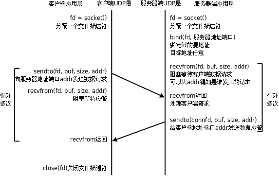
以下是简单的 UDP 服务器和客户端程序。
/* server.c */
#include <stdio.h>
#include <string.h>
#include <netinet/in.h>
#include "wrap.h"
#define MAXLINE 80
#define SERV_PORT 8000
int main(void)
{
struct sockaddr_in servaddr, cliaddr;
socklen_t cliaddr_len;
int sockfd;
char buf[MAXLINE];
char str[INET_ADDRSTRLEN];
int i, n;
sockfd = Socket(AF_INET, SOCK_DGRAM, 0);
bzero(&servaddr, sizeof(servaddr));
servaddr.sin_family = AF_INET;
servaddr.sin_addr.s_addr = htonl(INADDR_ANY);
servaddr.sin_port = htons(SERV_PORT);
Bind(sockfd, (struct sockaddr *)&servaddr, sizeof(servaddr));
printf("Accepting connections ...\n");
while (1) {
cliaddr_len = sizeof(cliaddr);
n = recvfrom(sockfd, buf, MAXLINE, 0, (struct sockaddr *)&cliaddr, &cliaddr_len);
if (n == -1)
perr_exit("recvfrom error");
printf("received from %s at PORT %d\n",
inet_ntop(AF_INET, &cliaddr.sin_addr, str, sizeof(str)),
ntohs(cliaddr.sin_port));
for (i = 0; i < n; i++)
buf[i] = toupper(buf[i]);
n = sendto(sockfd, buf, n, 0, (struct sockaddr *)&cliaddr, sizeof(cliaddr));
if (n == -1)
perr_exit("sendto error");
}
}
/* client.c */
#include <stdio.h>
#include <string.h>
#include <unistd.h>
#include <netinet/in.h>
#include "wrap.h"
#define MAXLINE 80
#define SERV_PORT 8000
int main(int argc, char *argv[])
{
struct sockaddr_in servaddr;
int sockfd, n;
char buf[MAXLINE];
char str[INET_ADDRSTRLEN];
socklen_t servaddr_len;
sockfd = Socket(AF_INET, SOCK_DGRAM, 0);
bzero(&servaddr, sizeof(servaddr));
servaddr.sin_family = AF_INET;
inet_pton(AF_INET, "127.0.0.1", &servaddr.sin_addr);
servaddr.sin_port = htons(SERV_PORT);
while (fgets(buf, MAXLINE, stdin) != NULL) {
n = sendto(sockfd, buf, strlen(buf), 0, (struct sockaddr *)&servaddr, sizeof(servaddr));
if (n == -1)
perr_exit("sendto error");
n = recvfrom(sockfd, buf, MAXLINE, 0, NULL, 0);
if (n == -1)
perr_exit("recvfrom error");
Write(STDOUT_FILENO, buf, n);
}
Close(sockfd);
return 0;
}
由于 UDP 不需要维护连接，程序逻辑简单了很多，但是 UDP 协议是不可靠的，实际上有很多保证通讯可靠性的机制需要在应用层实现。
编译运行 server，在两个终端里各开一个 client 与 server 交互，看看 server 是否具有并发服务的能力。用 Ctrl-C 关闭 server，然后再运行 server，看此时 client 还能否和 server 联系上。和前面 TCP 程序的运行结果相比较，体会无连接的含义。
4. UNIX Domain Socket IPC
socket API 原本是为网络通讯设计的，但后来在 socket 的框架上发展出一种 IPC 机制，就是 UNIX Domain Socket。虽然网络 socket 也可用于同一台主机的进程间通讯（通过 loopback 地址 127.0.0.1），但是 UNIX Domain Socket用于 IPC 更有效率：不需要经过网络协议栈，不需要打包拆包、计算校验和、维护序号和应答等，只是将应用层数据从一个进程拷贝到另一个进程。这是因为，IPC 机制本质上是可靠的通讯，而网络协议是为不可靠的通讯设计的。UNIX Domain Socket 也提供面向流和面向数据包两种 API 接口，类似于 TCP 和 UDP，但是面向消息的 UNIX Domain Socket 也是可靠的，消息既不会丢失也不会顺序错乱。
UNIX Domain Socket 是全双工的，API 接口语义丰富，相比其它 IPC 机制有明显的优越性，目前已成为使用最广泛的 IPC 机制，比如 X Window 服务器和 GUI 程序之间就是通过 UNIX Domain Socket通讯的。
使用 UNIX Domain Socket 的过程和网络 socket 十分相似，也要先调用 socket() 创建一个 socket 文件描述符，address family 指定为 AF_UNIX，type 可以选择 SOCK_DGRAM 或 SOCK_STREAM，protocol 参数仍然指定为 0 即可。
UNIX Domain Socket 与网络 socket 编程最明显的不同在于地址格式不同，用结构体 sockaddr_un 表示，网络编程的 socket 地址是 IP 地址加端口号，而 UNIX Domain Socket 的地址是一个 socket 类型的文件在文件系统中的路径，这个 socket 文件由 bind() 调用创建，如果调用 bind() 时该文件已存在，则 bind() 错误返回。
以下程序将 UNIX Domain Socket 绑定到一个地址。
#include <stdlib.h>
#include <stdio.h>
#include <stddef.h>
#include <sys/socket.h>
#include <sys/un.h>
int main(void)
{
int fd, size;
struct sockaddr_un un;
memset(&un, 0, sizeof(un));
un.sun_family = AF_UNIX;
strcpy(un.sun_path, "foo.socket");
if ((fd = socket(AF_UNIX, SOCK_STREAM, 0)) < 0) {
perror("socket error");
exit(1);
}
size = offsetof(struct sockaddr_un, sun_path) + strlen(un.sun_path);
if (bind(fd, (struct sockaddr *)&un, size) < 0) {
perror("bind error");
exit(1);
}
printf("UNIX domain socket bound\n");
exit(0);
}
注意程序中的 offsetof 宏，它在 stddef.h 头文件中定义：
#define offsetof(TYPE, MEMBER) ((int)&((TYPE *)0)->MEMBER)
offsetof(struct sockaddr_un, sun_path) 就是取 sockaddr_un 结构体的 sun_path 成员在结构体中的偏移，也就是从结构体的第几个字节开始是 sun_path 成员。想一想，这个宏是如何实现这一功能的？
该程序的运行结果如下。
$ ./a.out
UNIX domain socket bound
$ ls -l foo.socket
srwxrwxr-x 1 user 0 Aug 22 12:43 foo.socket
$ ./a.out
bind error: Address already in use
$ rm foo.socket
$ ./a.out
UNIX domain socket bound
以下是服务器的 listen 模块，与网络 socket 编程类似，在 bind 之后要 listen，表示通过 bind 的地址（也就是 socket 文件）提供服务。
#include <stddef.h>
#include <sys/socket.h>
#include <sys/un.h>
#include <errno.h>
#define QLEN 10
/*
* Create a server endpoint of a connection.
* Returns fd if all OK, <0 on error.
*/
int serv_listen(const char *name)
{
int fd, len, err, rval;
struct sockaddr_un un;
/* create a UNIX domain stream socket */
if ((fd = socket(AF_UNIX, SOCK_STREAM, 0)) < 0)
return(-1);
unlink(name); /* in case it already exists */
/* fill in socket address structure */
memset(&un, 0, sizeof(un));
un.sun_family = AF_UNIX;
strcpy(un.sun_path, name);
len = offsetof(struct sockaddr_un, sun_path) + strlen(name);
/* bind the name to the descriptor */
if (bind(fd, (struct sockaddr *)&un, len) < 0) {
rval = -2;
goto errout;
}
if (listen(fd, QLEN) < 0) { /* tell kernel we're a server */
rval = -3;
goto errout;
}
return(fd);
errout:
err = errno;
close(fd);
errno = err;
return(rval);
}
以下是服务器的 accept 模块，通过 accept 得到客户端地址也应该是一个 socket 文件，如果不是 socket 文件就返回错误码，如果是 socket 文件，在建立连接后这个文件就没有用了，调用 unlink 把它删掉，通过传出参数 uidptr 返回客户端程序的 user id。
#include <stddef.h>
#include <sys/stat.h>
#include <sys/socket.h>
#include <sys/un.h>
#include <errno.h>
int serv_accept(int listenfd, uid_t *uidptr)
{
int clifd, len, err, rval;
time_t staletime;
struct sockaddr_un un;
struct stat statbuf;
len = sizeof(un);
if ((clifd = accept(listenfd, (struct sockaddr *)&un, &len)) < 0)
return(-1); /* often errno=EINTR, if signal caught */
/* obtain the client's uid from its calling address */
len -= offsetof(struct sockaddr_un, sun_path); /* len of pathname */
un.sun_path[len] = 0; /* null terminate */
if (stat(un.sun_path, &statbuf) < 0) {
rval = -2;
goto errout;
}
if (S_ISSOCK(statbuf.st_mode) == 0) {
rval = -3; /* not a socket */
goto errout;
}
if (uidptr != NULL)
*uidptr = statbuf.st_uid; /* return uid of caller */
unlink(un.sun_path); /* we're done with pathname now */
return(clifd);
errout:
err = errno;
close(clifd);
errno = err;
return(rval);
}
以下是客户端的 connect 模块，与网络 socket 编程不同的是，UNIX Domain Socket 客户端一般要显式调用 bind 函数，而不依赖系统自动分配的地址。客户端 bind 一个自己指定的 socket 文件名的好处是，该文件名可以包含客户端的 pid 以便服务器区分不同的客户端。
#include <stdio.h>
#include <stddef.h>
#include <sys/stat.h>
#include <sys/socket.h>
#include <sys/un.h>
#include <errno.h>
#define CLI_PATH "/var/tmp/" /* +5 for pid = 14 chars */
/*
* Create a client endpoint and connect to a server.
* Returns fd if all OK, <0 on error.
*/
int cli_conn(const char *name)
{
int fd, len, err, rval;
struct sockaddr_un un;
/* create a UNIX domain stream socket */
if ((fd = socket(AF_UNIX, SOCK_STREAM, 0)) < 0)
return(-1);
/* fill socket address structure with our address */
memset(&un, 0, sizeof(un));
un.sun_family = AF_UNIX;
sprintf(un.sun_path, "%s%05d", CLI_PATH, getpid());
len = offsetof(struct sockaddr_un, sun_path) + strlen(un.sun_path);
unlink(un.sun_path); /* in case it already exists */
if (bind(fd, (struct sockaddr *)&un, len) < 0) {
rval = -2;
goto errout;
}
/* fill socket address structure with server's address */
memset(&un, 0, sizeof(un));
un.sun_family = AF_UNIX;
strcpy(un.sun_path, name);
len = offsetof(struct sockaddr_un, sun_path) + strlen(name);
if (connect(fd, (struct sockaddr *)&un, len) < 0) {
rval = -4;
goto errout;
}
return(fd);
errout:
err = errno;
close(fd);
errno = err;
return(rval);
}
下面是自己动手时间，请利用以上模块编写完整的客户端/服务器通讯的程序。
5. 练习：实现简单的 Web 服务器
实现一个简单的 Web 服务器 myhttpd。服务器程序启动时要读取配置文件 /etc/myhttpd.conf，其中需要指定服务器监听的端口号和服务目录，例如：
Port=80
Directory=/var/www
注意，1024 以下的端口号需要超级用户才能开启服务。如果你的系统中已经安装了某种 Web 服务器（例如 Apache），应该为 myhttpd 选择一个不同的端口号。当浏览器向服务器请求文件时，服务器就从服务目录（例如 /var/www）中找出这个文件，加上 HTTP 协议头一起发给浏览器。但是，如果浏览器请求的文件是可执行的则称为 CGI 程序，服务器并不是将这个文件发给浏览器，而是在服务器端执行这个程序，将它的标准输出发给浏览器，服务器不发送完整的 HTTP 协议头，CGI 程序自己负责输出一部分 HTTP 协议头。
5.1. 基本 HTTP 协议
打开浏览器，输入服务器 IP，例如 http://192.168.0.3 ，如果端口号不是 80，例如是 8000，则输入 http://192.168.0.3:8000 。这时浏览器向服务器发送的 HTTP 协议头如下：
GET / HTTP/1.1
Host: 192.168.0.3:8000
User-Agent: Mozilla/5.0 (X11; U; Linux i686; en-US; rv:1.8.1.6) Gecko/20061201 Firefox/2.0.0.6 (Ubuntu-feisty)
Accept: text/xml,application/xml,application/xhtml+xml,text/html;q=0.9,text/plain;q=0.8,image/png,*/*;q=0.5
Accept-Language: en-us,en;q=0.5
Accept-Encoding: gzip,deflate
Accept-Charset: ISO-8859-1,utf-8;q=0.7,*;q=0.7
Keep-Alive: 300
Connection: keep-alive
注意，其中每一行的末尾都是回车加换行（C 语言的 "\r\n"），第一行是 GET 请求和协议版本，其余几行选项字段我们不讨论，HTTP协议头的最后有一个空行，也是回车加换行。
我们实现的 Web 服务器只要能正确解析第一行就行了，这是一个 GET 请求，请求的是服务目录的根目录 /（在本例中实际上是 /var/www），Web 服务器应该把该目录下的索引页（默认是 index.html）发给浏览器，也就是把 /var/www/index.html 发给浏览器。假如该文件的内容如下（HTML 文件没必要以 "\r\n" 换行，以 "\n" 换行就可以了）：
<html>
<head><title>Test Page</title></head>
<body>
<p>Test OK</p>
<img src='mypic.jpg'>
</body>
</html>
显示一行字和一幅图片，图片的相对路径（相对当前的 index.html 文件的路径）是 mypic.jpg，也就是 /var/www/mypic.jpg，如果用绝对路径表示应该是：
<img src='/mypic.jpg'>
服务器应按如下格式应答浏览器：
HTTP/1.1 200 OK
Content-Type: text/html
<html>
<head><title>Test Page</title></head>
<body>
<p>Test OK</p>
<img src='mypic.jpg'>
</body>
</html>
服务器应答的 HTTP 头也是每行末尾以回车加换行结束，最后跟一个空行的回车加换行。
HTTP 头的第一行是协议版本和应答码，200 表示成功，后面的消息 OK 其实可以随意写，浏览器是不关心的，主要是为了调试时给开发人员看的。虽然网络协议最终是程序与程序之间的对话，但是在开发过程中却是人与程序之间的对话，一个设计透明的网络协议可以提供很多直观的信息给开发人员，因此，很多应用层网络协议，如 HTTP、FTP、SMTP、POP3 等都是基于文本的协议，为的是透明性（transparency）。
HTTP 头的第二行表示即将发送的文件的类型（称为 MIME 类型），这里是 text/html，纯文本文件是 text/plain，图片则是 image/jpg、image/png 等。
然后就发送文件的内容，发送完毕之后主动关闭连接，这样浏览器就知道文件发送完了。这一点比较特殊：通常网络通信都是客户端主动发起连接，主动发起请求，主动关闭连接，服务器只是被动地处理各种情况，而 HTTP 协议规定服务器主动关闭连接（有些 Web 服务器可以配置成 Keep-Alive 的，我们不讨论这种情况）。
浏览器收到 index.html 之后，发现其中有一个图片文件，就会再发一个 GET 请求（HTTP 协议头其余部分略）：
GET /mypic.jpg HTTP/1.1
一个较大的网页中可能有很多图片，浏览器可能在下载网页的同时就开很多线程下载图片，因此，服务器即使对同一个客户端也需要提供并行服务的能力。服务器收到这个请求应该把图片发过去然后关闭连接：
HTTP/1.1 200 OK
Content-Type: image/jpg
（这里是 mypic.jpg 的二进制数据）
这时浏览器就应该显示出完整的网页了。
如果浏览器请求的文件在服务器上找不到，要应答一个 404 错误页面，例如：
HTTP/1.1 404 Not Found
Content-Type: text/html
<html><body>request file not found</body></html>
5.2. 执行 CGI 程序
如果浏览器请求的是一个可执行文件（不管是什么样的可执行文件，即使是 shell 脚本也一样），那么服务器并不把这个文件本身发给浏览器，而是把它的执行结果标准输出发给浏览器。例如一个 shell 脚本 /var/www/myscript.sh（注意一定要加可执行权限）：
#!/bin/sh
echo "Content-Type: text/html"
echo
echo "<html><body>Hello world!</body></html>"
这样浏览器收到的是：
HTTP/1.1 200 OK
Content-Type: text/html
<html><body>Hello world!</body></html>
总结一下服务器的处理步骤：
- 解析浏览器的请求，在服务目录中查找相应的文件，如果找不到该文件就返回 404 错误页面
- 如果找到了浏览器请求的文件，用 stat(2) 检查它是否可执行
- 如果该文件可执行：
- 发送 HTTP/1.1 200 OK 给客户端
- fork(2)，然后用 dup2(2) 重定向子进程的标准输出到客户端 socket
- 在子进程中 exec(3) 该 CGI 程序
- 关闭连接
- 如果该文件不可执行：
- 发送 HTTP/1.1 200 OK 给客户端
- 如果是一个图片文件，根据图片的扩展名发送相应的 Content-Type 给客户端
- 如果不是图片文件，这里我们简化处理，都当作 Content-Type: text/html
- 简单的 HTTP 协议头有这两行就足够了，再发一个空行表示结束
- 读取文件的内容发送到客户端
- 关闭连接